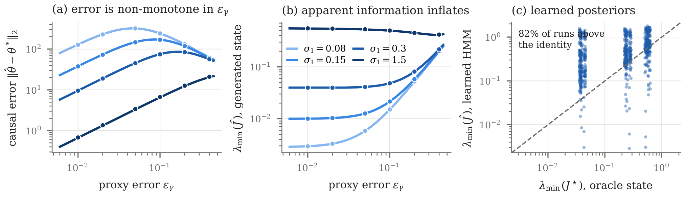
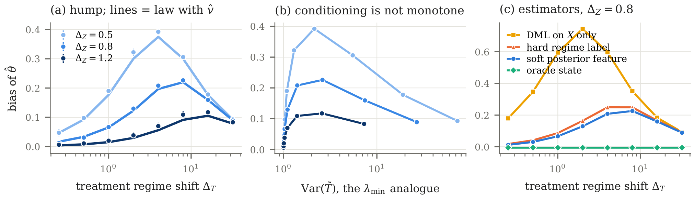
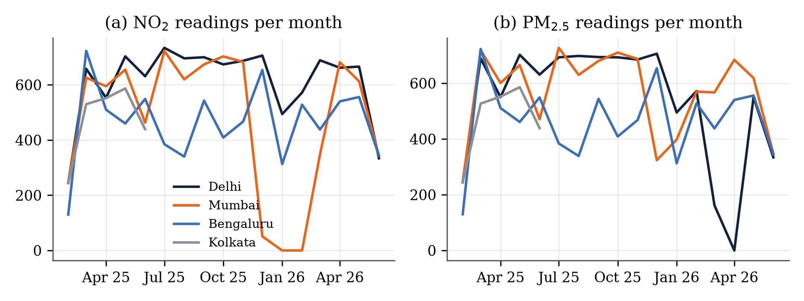
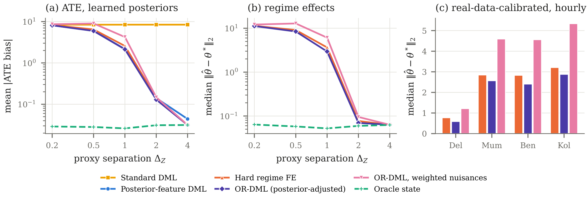
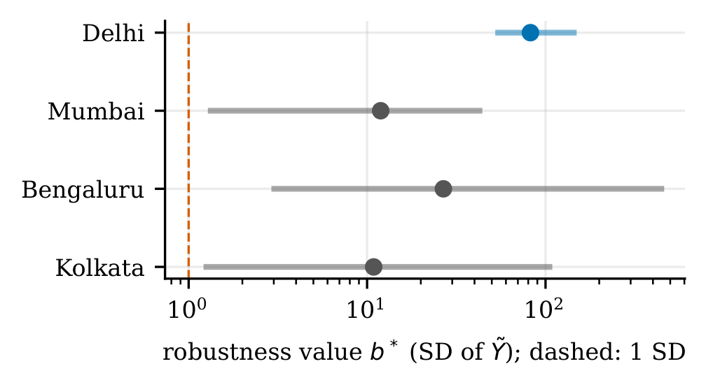

<!doctype html><html><head><meta charset="utf-8"><title>Minor Project Report</title>
<link rel="stylesheet" href="katex.min.css"><link rel="stylesheet" href="report.css">
<script>window.PagedConfig={auto:false}</script><script src="node_modules/pagedjs/dist/paged.polyfill.js"></script></head>
<body><section class="cover">
  <div class="lh"><div class="tx"><div class="a1">SCHOOL OF ELECTRICAL ENGINEERING</div><div class="a2">MANIPAL INSTITUTE OF TECHNOLOGY</div><div class="a3">MANIPAL - 576104, KARNATAKA, INDIA</div></div></div>
  <h1 class="ct">Reliable Causal Estimation under Latent Markov Confounding</h1>
  <div class="st">Overlap-aware regime Double Machine Learning, with evidence from Indian urban air-quality sensor networks</div>
  <div class="kicker">Submitted by</div>
  <table>
    <tr><td>Pulkit Kumar</td><td>Reg. No. 230906192</td></tr>
    <tr><td>Utsav Verma</td><td>Reg. No. 230906526</td></tr>
    <tr><td>Nishant Kumar Upadhyay</td><td>Reg. No. 230906522</td></tr>
  </table>
  <div class="kicker">Under the guidance of</div>
  <table><tr><td>Dr. Savitha G</td><td>School of Computer Engineering, MIT Manipal</td></tr></table>
  <div class="kicker">In partial fulfilment of</div>
  <p style="font-size:10.5pt;margin:0;text-align:left">the credit requirement of the Minor in Data Science (8 credits), towards the award of the degree of <b>Bachelor of Technology in Electrical and Electronics Engineering</b>, School of Electrical Engineering, Manipal Institute of Technology, Manipal (7th semester, academic year 2026-27).</p>
</section>

<section class="plain">
  <h2 class="ch">DECLARATION</h2>
  <div class="body">We hereby declare that this minor project report is the record of the work carried out by us, and that the results, tables, figures and code reported here are those of the project repository, are regenerated from committed artifacts, and have not been submitted elsewhere for the award of any degree or diploma. Prior work is credited in the text and in the references. Large language models were used as assistants for code, derivations, experiment scripting and drafting; every number is produced by a single script from committed result files and the authors reviewed all arguments and take full responsibility for the content (Annexure B).</div>
  <div class="sig"><div>Pulkit Kumar</div><div>Utsav Verma</div><div>Nishant Kumar Upadhyay</div></div>
</section>

<section class="front"><h1>Acknowledgement</h1>
<p>We express our sincere gratitude to our guide, <b>Dr. Savitha G</b>, School of Computer Engineering, for her guidance, patience and for allowing us to work on a problem that sits at the edge of what a minor project usually attempts. Her questions pushed us to separate what we had shown from what we had hoped.</p>
<p>We thank the Director of Manipal Institute of Technology, the Dean of the School of Computer Engineering, the Dean of the School of Electrical Engineering, and the coordinators of the Data Science Minor for the opportunity and the framework within which this work was done.</p>
<p>We are grateful to the maintainers of the open data on which the study rests: OpenAQ and the Central Pollution Control Board for continuous ambient air-quality records, and Open-Meteo for ERA5-based meteorological reanalysis. We acknowledge the authors of the double machine learning, proximal causal inference and latent-variable literature whose results we build on and, in places, qualify.</p>
<p>Finally, we thank our families and friends for their constant support during the semester.</p></section>

<section class="front"><h1>Abstract</h1>
<p>Observational time series are frequently driven by a persistent state that nobody measures: the boundary-layer regime of an airshed, the liquidity regime of a market, the operating mode of a plant. When that state moves both a treatment and an outcome, adjusting for observed covariates does not identify the effect. The standard remedy is a two-stage recipe: infer the state with a hidden Markov model (HMM), then run regime-aware Double Machine Learning (DML). The recipe carries an implicit reliability rule: trust the estimate when the posterior is confident and the score Jacobian is well conditioned.</p>
<p>This project shows that the rule fails in a specific and checkable way. A generated state does not only add noise to the downstream estimating equation; it changes that equation’s geometry, so that the smallest eigenvalue of the generated-state Gram matrix can <i>grow</i> as the state estimate gets worse (it grows 70 times in a controlled design while causal error first rises and then falls, and in 82% of learned-posterior runs the generated state looks better conditioned than the true one). We call this <i>phantom causal resolution</i>. We derive two exact laws: the population displacement of a coupled regime score under state confusion, which reproduces a 4,900-run factorial experiment to within 2%, and a residual-state bias law, an omitted-variable identity in the posterior’s leftover state variance. The laws dictate the estimator: <i>overlap-aware regime DML</i> (OR-DML) conditions its nuisances on the posterior rather than weighting them by it, which makes the coupled score exactly Neyman-orthogonal for every posterior, and combines purged block cross-fitting, spectral regularization and HAC inference.</p>
<p>Evidence comes from factorial and learned-posterior synthetic designs, a real-data-calibrated semi-synthetic benchmark on four Indian cities (Delhi, Mumbai, Bengaluru, Kolkata) on a corrected hourly grid, and an audited observational stress test with aligned placebos and robustness values. Posterior-adjusted OR-DML is the most accurate regime-aware estimator in every synthetic frontier cell and in every semi-synthetic city for regime effects; no estimator removes residual-state bias under weak observability, and the report states where each result stops. The work yielded the peer-reviewed manuscript submitted to AISTATS 2027, a verified reproduction pipeline in which every number is generated from committed artifacts, and an honest account of an earlier applied study that an internal audit led us to retire.</p>
<p><b>Keywords:</b> causal inference, double machine learning, latent Markov models, regime switching, phantom causal resolution, air quality, reproducibility.</p></section>

<section class="front unnum"><h1>Table of Contents</h1><div class="toc"><div class="c"><a href="#c1"><span>1.  Introduction</span><i></i></a></div><div class="s"><a href="#s1"><span>1.1 Background and motivation</span><i></i></a></div><div class="s"><a href="#s2"><span>1.2 Problem statement</span><i></i></a></div><div class="s"><a href="#s3"><span>1.3 Objectives</span><i></i></a></div><div class="s"><a href="#s4"><span>1.4 Summary of contributions</span><i></i></a></div><div class="s"><a href="#s5"><span>1.5 Scope and honesty statement</span><i></i></a></div><div class="s"><a href="#s6"><span>1.6 Organization of the report</span><i></i></a></div><div class="c"><a href="#c2"><span>2.  Background and Literature Survey</span><i></i></a></div><div class="s"><a href="#s8"><span>2.1 Causal inference from observational data</span><i></i></a></div><div class="s"><a href="#s9"><span>2.2 Double / Debiased Machine Learning</span><i></i></a></div><div class="s"><a href="#s10"><span>2.3 Dependent data: time-series DML</span><i></i></a></div><div class="s"><a href="#s11"><span>2.4 Latent confounders and regime models</span><i></i></a></div><div class="s"><a href="#s12"><span>2.5 Proxies and negative controls</span><i></i></a></div><div class="s"><a href="#s13"><span>2.6 Omitted-variable bias, amplification and overlap</span><i></i></a></div><div class="s"><a href="#s14"><span>2.7 Sensitivity analysis</span><i></i></a></div><div class="s"><a href="#s15"><span>2.8 Air-quality attribution and its causal methodology</span><i></i></a></div><div class="s"><a href="#s16"><span>2.9 Comparison and research gap</span><i></i></a></div><div class="c"><a href="#c3"><span>3.  Problem Formulation</span><i></i></a></div><div class="s"><a href="#s18"><span>3.1 The structural model</span><i></i></a></div><div class="s"><a href="#s19"><span>3.2 Why standard DML fails</span><i></i></a></div><div class="s"><a href="#s20"><span>3.3 Non-identification without state information</span><i></i></a></div><div class="s"><a href="#s21"><span>3.4 What "reliable" must mean</span><i></i></a></div><div class="c"><a href="#c4"><span>4.  Overlap-Aware Regime DML: Method and Implementation</span><i></i></a></div><div class="s"><a href="#s23"><span>4.1 Design principle</span><i></i></a></div><div class="s"><a href="#s24"><span>4.2 The estimator</span><i></i></a></div><div class="s"><a href="#s25"><span>4.3 Baselines</span><i></i></a></div><div class="s"><a href="#s26"><span>4.4 Software architecture</span><i></i></a></div><div class="s"><a href="#s27"><span>4.5 Verification of the implementation</span><i></i></a></div><div class="c"><a href="#c5"><span>5.  Theory: How State Uncertainty Propagates</span><i></i></a></div><div class="s"><a href="#s29"><span>5.1 Exact orthogonality</span><i></i></a></div><div class="s"><a href="#s30"><span>5.2 Graceful degradation</span><i></i></a></div><div class="s"><a href="#s31"><span>5.3 The coupled score under state confusion</span><i></i></a></div><div class="s"><a href="#s32"><span>5.4 Posterior-adjusted designs and the residual-state bias law</span><i></i></a></div><div class="s"><a href="#s33"><span>5.5 Observability, sensitivity and inference</span><i></i></a></div><div class="s"><a href="#s34"><span>5.6 Summary of what the theory says</span><i></i></a></div><div class="c"><a href="#c6"><span>6.  Data and Experimental Design</span><i></i></a></div><div class="s"><a href="#s36"><span>6.1 Data sources</span><i></i></a></div><div class="s"><a href="#s37"><span>6.2 Variable construction</span><i></i></a></div><div class="s"><a href="#s38"><span>6.3 The time-grid audit</span><i></i></a></div><div class="s"><a href="#s39"><span>6.4 Experimental designs</span><i></i></a></div><div class="s"><a href="#s40"><span>6.5 Estimators compared and metrics</span><i></i></a></div><div class="c"><a href="#c7"><span>7.  Results: Synthetic and Semi-Synthetic Evidence</span><i></i></a></div><div class="s"><a href="#s42"><span>7.1 The closed form reproduces the factorial experiment</span><i></i></a></div><div class="s"><a href="#s43"><span>7.2 Learned posteriors break the scalar ratio</span><i></i></a></div><div class="s"><a href="#s44"><span>7.3 Observability and persistence frontier</span><i></i></a></div><div class="s"><a href="#s45"><span>7.4 Real-data-calibrated semi-synthetic benchmark</span><i></i></a></div><div class="s"><a href="#s46"><span>7.5 Representation quality is not task reliability</span><i></i></a></div><div class="s"><a href="#s47"><span>7.6 Spectral regularization</span><i></i></a></div><div class="s"><a href="#s48"><span>7.7 Scalability in the number of regimes</span><i></i></a></div><div class="s"><a href="#s49"><span>7.8 What the synthetic evidence does not show</span><i></i></a></div><div class="c"><a href="#c8"><span>8.  Observational Stress Test: Four Indian Cities</span><i></i></a></div><div class="s"><a href="#s51"><span>8.1 Purpose and framing</span><i></i></a></div><div class="s"><a href="#s52"><span>8.2 Results</span><i></i></a></div><div class="s"><a href="#s53"><span>8.3 Placebo falsification, aligned to the information set</span><i></i></a></div><div class="s"><a href="#s54"><span>8.4 Sensitivity of inference to the HAC lag</span><i></i></a></div><div class="s"><a href="#s55"><span>8.5 Reading the results</span><i></i></a></div><div class="s"><a href="#s56"><span>8.6 Why this section matters for the project</span><i></i></a></div><div class="c"><a href="#c9"><span>9.  Engineering, Reproducibility and Verification</span><i></i></a></div><div class="s"><a href="#s58"><span>9.1 Repository architecture</span><i></i></a></div><div class="s"><a href="#s59"><span>9.2 A single source for every number</span><i></i></a></div><div class="s"><a href="#s60"><span>9.3 The verifier</span><i></i></a></div><div class="s"><a href="#s61"><span>9.4 One-command reproduction</span><i></i></a></div><div class="s"><a href="#s62"><span>9.5 Architecture decision records</span><i></i></a></div><div class="s"><a href="#s63"><span>9.6 Supplementary material</span><i></i></a></div><div class="c"><a href="#c10"><span>10.  Project Journey: From Applied Study to a Research Contribution</span><i></i></a></div><div class="s"><a href="#s65"><span>10.1 Phase 1: the applied air-quality study (March–September 2026)</span><i></i></a></div><div class="s"><a href="#s66"><span>10.2 The audit</span><i></i></a></div><div class="s"><a href="#s67"><span>10.3 Phase 2: the methodological pivot (late September 2026)</span><i></i></a></div><div class="s"><a href="#s68"><span>10.4 Phase 3: consolidation and correction (October 2026)</span><i></i></a></div><div class="s"><a href="#s69"><span>10.5 What we learned</span><i></i></a></div><div class="s"><a href="#s70"><span>10.6 Research output: the AISTATS conference</span><i></i></a></div><div class="c"><a href="#c11"><span>11.  Conclusions, Limitations and Future Work</span><i></i></a></div><div class="s"><a href="#s72"><span>11.1 Conclusions</span><i></i></a></div><div class="s"><a href="#s73"><span>11.2 Limitations</span><i></i></a></div><div class="s"><a href="#s74"><span>11.3 Threats to validity</span><i></i></a></div><div class="s"><a href="#s75"><span>11.4 Future work</span><i></i></a></div><div class="s"><a href="#s76"><span>11.5 Closing remark</span><i></i></a></div><div class="c"><a href="#cReferences"><span>References</span><i></i></a></div><div class="c"><a href="#cAnnexureATeamandProjectAdministration"><span>Annexure A: Team and Project Administration</span><i></i></a></div><div class="c"><a href="#cAnnexureBAIUseStatement"><span>Annexure B: AI-Use Statement</span><i></i></a></div><div class="c"><a href="#cAnnexureCKeyCodeListings"><span>Annexure C: Key Code Listings</span><i></i></a></div><div class="c"><a href="#cAnnexureDReproductionCommands"><span>Annexure D: Reproduction Commands</span><i></i></a></div><div class="c"><a href="#cAnnexureEAdditionalResults"><span>Annexure E: Additional Results</span><i></i></a></div><div class="c"><a href="#cAnnexureFMapoftheManuscriptAppendices"><span>Annexure F: Map of the Manuscript Appendices</span><i></i></a></div><div class="c"><a href="#cAnnexureGAssumptionsandProofs"><span>Annexure G: Assumptions and Proofs</span><i></i></a></div><div class="s"><a href="#s85"><span>G.1 Assumptions</span><i></i></a></div><div class="s"><a href="#s86"><span>G.2 Proof of Theorem 1 (omitted regime bias)</span><i></i></a></div><div class="s"><a href="#s87"><span>G.3 Proof of Proposition 1 and Corollary 1</span><i></i></a></div><div class="s"><a href="#s88"><span>G.4 Proof of Theorem 4(b): pooled residual-state bias</span><i></i></a></div><div class="s"><a href="#s89"><span>G.5 Proof sketch of Lemma 1 and Theorem 2</span><i></i></a></div></div></section>
<section class="front unnum"><h1>List of Figures</h1><div class="fl"><a href="#fig-org"><span>Figure 1.1&nbsp;&nbsp;Method pipeline followed throughout the report: sensor data are summarized by an HMM, the posterior enters the nuisances as a feature, cross-fitting is purged for temporal dependence, and a regularized coupled score gives regime effects together with a reliability report.</span><i></i></a><a href="#fig-dag"><span>Figure 3.1&nbsp;&nbsp;Causal structure. The latent state StS_tSt​ evolves as a Markov chain, is seen only through the proxy ZtZ_tZt​, and moves both treatment TtT_tTt​ and outcome YtY_tYt​, so it is a confounder that conditioning on XtX_tXt​ alone cannot remove.</span><i></i></a><a href="#fig-cf"><span>Figure 4.1&nbsp;&nbsp;Purged block cross-fitting. Training observations within the embargo τ∗\tau^*τ∗ of the evaluation block are dropped so that temporal dependence cannot leak between folds.</span><i></i></a><a href="#fig-phantom"><span>Figure 5.1&nbsp;&nbsp;Phantom causal resolution. (a) Coupled regime-score error against proxy error εγ\varepsilon_\gammaεγ​ for four treatment-innovation scales σ1\sigma_1σ1​ (dots: median of 100 runs of the 7×77\times77×7 factorial; lines: the exact law of Proposition 1, no fitted parameters). Error is non-monotone, peaking near ε⋆≈2σ/∣Δm∣\varepsilon^\star \approx 2\sigma/|\Delta_m|ε⋆≈2σ/∣Δm​∣. (b) The smallest eigenvalue of the generated-state Gram matrix: unless σ1\sigma_1σ1​ is large it grows with proxy error (70-fold at σ1=0.08\sigma_1 = 0.08σ1​=0.08). (c) With posteriors learned by EM (720 runs) λmin⁡(J^)\lambda_{\min}(\hat J)λmin​(J^) exceeds the oracle-state value in 82% of runs.</span><i></i></a><a href="#fig-law"><span>Figure 5.2&nbsp;&nbsp;The residual-state bias law with learned HMM posteriors. (a) Measured bias is hump-shaped in the treatment regime shift and matches the law evaluated with the observable plug-in v^\hat vv^ (lines). (b) The same bias against Var(T~)\mathrm{Var}(\tilde T)Var(T~): conditioning improves monotonically while bias first rises and then falls. (c) Soft posterior features beat hard labels; DML on XXX alone is far worse; the oracle state is unbiased.</span><i></i></a><a href="#fig-cover"><span>Figure 6.1&nbsp;&nbsp;Data coverage. Monthly count of NO₂ and PM₂.₅ readings by city. Kolkata&#39;s record ends in June 2025; sparse coverage (and, in Mumbai, long constant runs, Section 8.2) are why the four cities behave so differently in Chapter 8.</span><i></i></a><a href="#fig-est"><span>Figure 7.1&nbsp;&nbsp;Conditioning nuisances on the posterior, rather than weighting them by it, fixes the coupled estimator. (a) Mean absolute ATE bias and (b) median regime-effect error along the observability frontier with learned posteriors. (c) Regime-effect error in the real-data-calibrated benchmark: the same ordering in every city.</span><i></i></a><a href="#fig-bstar"><span>Figure 8.1&nbsp;&nbsp;Robustness values b⋆b^\starb⋆ by city (log scale; dashed line = 1 SD). Delhi&#39;s association would need an outcome regime shift of 82 SD (90% interval 54–144) to be explained away through the HMM-regime channel; the other three cities are weak.</span><i></i></a><a href="#fig-commits"><span>Figure 9.1&nbsp;&nbsp;Project timeline. Three phases of the project (Chapter 10) on a calendar axis, from the first commit to this report.</span><i></i></a></div></section>
<section class="front unnum"><h1>List of Tables</h1><div class="fl"><a href="#tab-obj"><span>Table 1.1&nbsp;&nbsp;Project objectives and where each is addressed</span><i></i></a><a href="#tab-litmap"><span>Table 2.1&nbsp;&nbsp;Where each strand of the survey is used in this report</span><i></i></a><a href="#tab-gap"><span>Table 2.2&nbsp;&nbsp;Positioning against the closest lines of work</span><i></i></a><a href="#tab-gap2"><span>Table 2.3&nbsp;&nbsp;Positioning against the applied air-quality causal toolkit</span><i></i></a><a href="#tab-arch"><span>Table 4.1&nbsp;&nbsp;Software components of the estimator</span><i></i></a><a href="#tab-thsum"><span>Table 5.1&nbsp;&nbsp;Summary of the theoretical results</span><i></i></a><a href="#tab-cov"><span>Table 6.1&nbsp;&nbsp;Raw pollution records per city (all parameters, half-hourly UTC stamps)</span><i></i></a><a href="#tab-design"><span>Table 6.2&nbsp;&nbsp;Experimental designs and what each can establish</span><i></i></a><a href="#tab-scores"><span>Table 7.1&nbsp;&nbsp;Spearman correlation between failure scores and causal error. &quot;Synthetic proxy&quot; is the factorial design; &quot;learned&quot; uses EM posteriors; &quot;within ΔT\Delta_TΔT​&quot; averages correlations at a fixed treatment shift.</span><i></i></a><a href="#tab-main"><span>Table 7.2&nbsp;&nbsp;Posterior-adjusted OR-DML is the most accurate regime-aware estimator, but no estimator removes residual-state bias. Left: synthetic frontier with learned HMM posteriors (100 datasets per ΔZ\Delta_ZΔZ​, N=1,200N=1{,}200N=1,200, persistence 0.88, true ATE 1.53). Right: real-data-calibrated semi-synthetic benchmark on the corrected hourly grid (30 datasets per city). Bold: best non-oracle within each block.</span><i></i></a><a href="#tab-reg"><span>Table 7.3&nbsp;&nbsp;Spectral regularization path (λ\lambdaλ against bias, variance and mean-squared error).</span><i></i></a><a href="#tab-scal"><span>Table 7.4&nbsp;&nbsp;Scalability check for K=2K = 2K=2 to 5 regimes: ATE bias, regime-effect error, smallest eigenvalue and condition number.</span><i></i></a><a href="#tab-cities"><span>Table 8.1&nbsp;&nbsp;Four-city stress test on the corrected hourly grid (OR-DML, HAC lag 24 h). λmin⁡\lambda_{\min}λmin​ is raw, λmin⁡std\lambda^{\rm std}_{\min}λminstd​ is scale-free. Lead placebo: smallest ppp-value over leads h∈{−6,−3,−1}h \in \{-6, -3, -1\}h∈{−6,−3,−1} h. b⋆b^\starb⋆: robustness value in SD of Y~\tilde YY~. Screened: runs of ≥6\ge 6≥6 identical NO₂ readings removed.</span><i></i></a><a href="#tab-plc"><span>Table 8.2&nbsp;&nbsp;Lead and lag placebo coefficients (asterisk: p&lt;0.05p&lt;0.05p&lt;0.05). Leads h&lt;0h&lt;0h&lt;0 should be indistinguishable from zero if the temporal ordering is causal.</span><i></i></a><a href="#tab-hac"><span>Table 8.3&nbsp;&nbsp;Regime effects (standard error; ppp-value) under HAC bandwidths of 12, 24, 72 and 168 hours.</span><i></i></a><a href="#tab-repo"><span>Table 9.1&nbsp;&nbsp;Repository layout</span><i></i></a><a href="#tab-audit"><span>Table 10.1&nbsp;&nbsp;Findings of the forensic audit of the applied draft</span><i></i></a><a href="#tab-corr"><span>Table 10.2&nbsp;&nbsp;Claims that changed during consolidation</span><i></i></a><a href="#tab-venue"><span>Table 10.3&nbsp;&nbsp;How AISTATS is rated and evaluated</span><i></i></a><a href="#tab-team"><span>Table A.1&nbsp;&nbsp;Project team and supervision</span><i></i></a><a href="#tab-frontier"><span>Table E.1&nbsp;&nbsp;Synthetic frontier, full estimator list: mean absolute ATE bias, median, RMSE and smallest eigenvalue at each proxy separation ΔZ\Delta_ZΔZ​ (100 datasets per row).</span><i></i></a><a href="#tab-appmap"><span>Table F.1&nbsp;&nbsp;Manuscript appendices and where this report uses them</span><i></i></a><a href="#tab-nonid"><span>Table G.1&nbsp;&nbsp;The two models of the non-identification construction</span><i></i></a></div></section>

<section class="front unnum"><h1>Notation and Abbreviations</h1>
<table class="md"><tr><th>Symbol</th><th>Meaning</th></tr>
<tr><td><span class="katex"><span class="katex-mathml"><math xmlns="http://www.w3.org/1998/Math/MathML"><semantics><mrow><msub><mi>S</mi><mi>t</mi></msub><mo>∈</mo><mo stretchy="false">{</mo><mn>1</mn><mo separator="true">,</mo><mo>…</mo><mo separator="true">,</mo><mi>K</mi><mo stretchy="false">}</mo></mrow><annotation encoding="application/x-tex">S_t \in \{1,\dots,K\}</annotation></semantics></math></span><span class="katex-html" aria-hidden="true"><span class="katex-base"><span class="katex-strut" style="height:0.8333em;vertical-align:-0.15em;"></span><span class="mord"><span class="mord mathnormal" style="margin-right:0.0576em;">S</span><span class="msupsub"><span class="vlist-t vlist-t2"><span class="vlist-r"><span class="vlist" style="height:0.2806em;"><span style="top:-2.55em;margin-left:-0.0576em;margin-right:0.05em;"><span class="pstrut" style="height:2.7em;"></span><span class="katex-sizing reset-size6 size3 mtight"><span class="mord mathnormal mtight">t</span></span></span></span><span class="vlist-s">​</span></span><span class="vlist-r"><span class="vlist" style="height:0.15em;"><span></span></span></span></span></span></span><span class="mspace" style="margin-right:0.2778em;"></span><span class="mrel">∈</span><span class="mspace" style="margin-right:0.2778em;"></span></span><span class="katex-base"><span class="katex-strut" style="height:1em;vertical-align:-0.25em;"></span><span class="mopen">{</span><span class="mord">1</span><span class="mpunct">,</span><span class="mspace" style="margin-right:0.1667em;"></span><span class="minner">…</span><span class="mspace" style="margin-right:0.1667em;"></span><span class="mpunct">,</span><span class="mspace" style="margin-right:0.1667em;"></span><span class="mord mathnormal" style="margin-right:0.0715em;">K</span><span class="mclose">}</span></span></span></span></td><td>latent regime at time <span class="katex"><span class="katex-mathml"><math xmlns="http://www.w3.org/1998/Math/MathML"><semantics><mrow><mi>t</mi></mrow><annotation encoding="application/x-tex">t</annotation></semantics></math></span><span class="katex-html" aria-hidden="true"><span class="katex-base"><span class="katex-strut" style="height:0.6151em;"></span><span class="mord mathnormal">t</span></span></span></span> (first-order Markov chain)</td></tr>
<tr><td><span class="katex"><span class="katex-mathml"><math xmlns="http://www.w3.org/1998/Math/MathML"><semantics><mrow><msub><mi>Z</mi><mi>t</mi></msub><mo separator="true">,</mo><msub><mi>X</mi><mi>t</mi></msub></mrow><annotation encoding="application/x-tex">Z_t, X_t</annotation></semantics></math></span><span class="katex-html" aria-hidden="true"><span class="katex-base"><span class="katex-strut" style="height:0.8778em;vertical-align:-0.1944em;"></span><span class="mord"><span class="mord mathnormal" style="margin-right:0.0715em;">Z</span><span class="msupsub"><span class="vlist-t vlist-t2"><span class="vlist-r"><span class="vlist" style="height:0.2806em;"><span style="top:-2.55em;margin-left:-0.0715em;margin-right:0.05em;"><span class="pstrut" style="height:2.7em;"></span><span class="katex-sizing reset-size6 size3 mtight"><span class="mord mathnormal mtight">t</span></span></span></span><span class="vlist-s">​</span></span><span class="vlist-r"><span class="vlist" style="height:0.15em;"><span></span></span></span></span></span></span><span class="mpunct">,</span><span class="mspace" style="margin-right:0.1667em;"></span><span class="mord"><span class="mord mathnormal" style="margin-right:0.0785em;">X</span><span class="msupsub"><span class="vlist-t vlist-t2"><span class="vlist-r"><span class="vlist" style="height:0.2806em;"><span style="top:-2.55em;margin-left:-0.0785em;margin-right:0.05em;"><span class="pstrut" style="height:2.7em;"></span><span class="katex-sizing reset-size6 size3 mtight"><span class="mord mathnormal mtight">t</span></span></span></span><span class="vlist-s">​</span></span><span class="vlist-r"><span class="vlist" style="height:0.15em;"><span></span></span></span></span></span></span></span></span></span></td><td>regime proxies (meteorology) and observed controls (lagged pollutants, weather)</td></tr>
<tr><td><span class="katex"><span class="katex-mathml"><math xmlns="http://www.w3.org/1998/Math/MathML"><semantics><mrow><msub><mi>T</mi><mi>t</mi></msub><mo separator="true">,</mo><msub><mi>Y</mi><mi>t</mi></msub></mrow><annotation encoding="application/x-tex">T_t, Y_t</annotation></semantics></math></span><span class="katex-html" aria-hidden="true"><span class="katex-base"><span class="katex-strut" style="height:0.8778em;vertical-align:-0.1944em;"></span><span class="mord"><span class="mord mathnormal" style="margin-right:0.1389em;">T</span><span class="msupsub"><span class="vlist-t vlist-t2"><span class="vlist-r"><span class="vlist" style="height:0.2806em;"><span style="top:-2.55em;margin-left:-0.1389em;margin-right:0.05em;"><span class="pstrut" style="height:2.7em;"></span><span class="katex-sizing reset-size6 size3 mtight"><span class="mord mathnormal mtight">t</span></span></span></span><span class="vlist-s">​</span></span><span class="vlist-r"><span class="vlist" style="height:0.15em;"><span></span></span></span></span></span></span><span class="mpunct">,</span><span class="mspace" style="margin-right:0.1667em;"></span><span class="mord"><span class="mord mathnormal" style="margin-right:0.2222em;">Y</span><span class="msupsub"><span class="vlist-t vlist-t2"><span class="vlist-r"><span class="vlist" style="height:0.2806em;"><span style="top:-2.55em;margin-left:-0.2222em;margin-right:0.05em;"><span class="pstrut" style="height:2.7em;"></span><span class="katex-sizing reset-size6 size3 mtight"><span class="mord mathnormal mtight">t</span></span></span></span><span class="vlist-s">​</span></span><span class="vlist-r"><span class="vlist" style="height:0.15em;"><span></span></span></span></span></span></span></span></span></span></td><td>treatment (NO₂) and outcome (PM₂.₅)</td></tr>
<tr><td><span class="katex"><span class="katex-mathml"><math xmlns="http://www.w3.org/1998/Math/MathML"><semantics><mrow><msub><mi>γ</mi><mrow><mi>t</mi><mi>k</mi></mrow></msub></mrow><annotation encoding="application/x-tex">\gamma_{tk}</annotation></semantics></math></span><span class="katex-html" aria-hidden="true"><span class="katex-base"><span class="katex-strut" style="height:0.625em;vertical-align:-0.1944em;"></span><span class="mord"><span class="mord mathnormal" style="margin-right:0.0556em;">γ</span><span class="msupsub"><span class="vlist-t vlist-t2"><span class="vlist-r"><span class="vlist" style="height:0.3361em;"><span style="top:-2.55em;margin-left:-0.0556em;margin-right:0.05em;"><span class="pstrut" style="height:2.7em;"></span><span class="katex-sizing reset-size6 size3 mtight"><span class="mord mtight"><span class="mord mathnormal mtight">t</span><span class="mord mathnormal mtight" style="margin-right:0.0315em;">k</span></span></span></span></span><span class="vlist-s">​</span></span><span class="vlist-r"><span class="vlist" style="height:0.15em;"><span></span></span></span></span></span></span></span></span></span></td><td>HMM posterior probability <span class="katex"><span class="katex-mathml"><math xmlns="http://www.w3.org/1998/Math/MathML"><semantics><mrow><mi>P</mi><mo stretchy="false">(</mo><msub><mi>S</mi><mi>t</mi></msub><mo>=</mo><mi>k</mi><mo>∣</mo><mo>⋅</mo><mo stretchy="false">)</mo></mrow><annotation encoding="application/x-tex">P(S_t = k \mid \cdot)</annotation></semantics></math></span><span class="katex-html" aria-hidden="true"><span class="katex-base"><span class="katex-strut" style="height:1em;vertical-align:-0.25em;"></span><span class="mord mathnormal" style="margin-right:0.1389em;">P</span><span class="mopen">(</span><span class="mord"><span class="mord mathnormal" style="margin-right:0.0576em;">S</span><span class="msupsub"><span class="vlist-t vlist-t2"><span class="vlist-r"><span class="vlist" style="height:0.2806em;"><span style="top:-2.55em;margin-left:-0.0576em;margin-right:0.05em;"><span class="pstrut" style="height:2.7em;"></span><span class="katex-sizing reset-size6 size3 mtight"><span class="mord mathnormal mtight">t</span></span></span></span><span class="vlist-s">​</span></span><span class="vlist-r"><span class="vlist" style="height:0.15em;"><span></span></span></span></span></span></span><span class="mspace" style="margin-right:0.2778em;"></span><span class="mrel">=</span><span class="mspace" style="margin-right:0.2778em;"></span></span><span class="katex-base"><span class="katex-strut" style="height:1em;vertical-align:-0.25em;"></span><span class="mord mathnormal" style="margin-right:0.0315em;">k</span><span class="mspace" style="margin-right:0.2778em;"></span><span class="mrel">∣</span><span class="mspace" style="margin-right:0.2778em;"></span></span><span class="katex-base"><span class="katex-strut" style="height:1em;vertical-align:-0.25em;"></span><span class="mord">⋅</span><span class="mclose">)</span></span></span></span></td></tr>
<tr><td><span class="katex"><span class="katex-mathml"><math xmlns="http://www.w3.org/1998/Math/MathML"><semantics><mrow><msubsup><mi>θ</mi><mi>k</mi><mo>∗</mo></msubsup></mrow><annotation encoding="application/x-tex">\theta_k^*</annotation></semantics></math></span><span class="katex-html" aria-hidden="true"><span class="katex-base"><span class="katex-strut" style="height:0.9775em;vertical-align:-0.2831em;"></span><span class="mord"><span class="mord mathnormal" style="margin-right:0.0278em;">θ</span><span class="msupsub"><span class="vlist-t vlist-t2"><span class="vlist-r"><span class="vlist" style="height:0.6887em;"><span style="top:-2.4169em;margin-left:-0.0278em;margin-right:0.05em;"><span class="pstrut" style="height:2.7em;"></span><span class="katex-sizing reset-size6 size3 mtight"><span class="mord mathnormal mtight" style="margin-right:0.0315em;">k</span></span></span><span style="top:-3.063em;margin-right:0.05em;"><span class="pstrut" style="height:2.7em;"></span><span class="katex-sizing reset-size6 size3 mtight"><span class="mbin mtight">∗</span></span></span></span><span class="vlist-s">​</span></span><span class="vlist-r"><span class="vlist" style="height:0.2831em;"><span></span></span></span></span></span></span></span></span></span>, <span class="katex"><span class="katex-mathml"><math xmlns="http://www.w3.org/1998/Math/MathML"><semantics><mrow><msubsup><mi>θ</mi><mrow><mi mathvariant="normal">A</mi><mi mathvariant="normal">T</mi><mi mathvariant="normal">E</mi></mrow><mo>∗</mo></msubsup></mrow><annotation encoding="application/x-tex">\theta^*_{\rm ATE}</annotation></semantics></math></span><span class="katex-html" aria-hidden="true"><span class="katex-base"><span class="katex-strut" style="height:0.9698em;vertical-align:-0.2753em;"></span><span class="mord"><span class="mord mathnormal" style="margin-right:0.0278em;">θ</span><span class="msupsub"><span class="vlist-t vlist-t2"><span class="vlist-r"><span class="vlist" style="height:0.6887em;"><span style="top:-2.4247em;margin-left:-0.0278em;margin-right:0.05em;"><span class="pstrut" style="height:2.7em;"></span><span class="katex-sizing reset-size6 size3 mtight"><span class="mord mtight"><span class="mord mtight"><span class="mord mathrm mtight">ATE</span></span></span></span></span><span style="top:-3.063em;margin-right:0.05em;"><span class="pstrut" style="height:2.7em;"></span><span class="katex-sizing reset-size6 size3 mtight"><span class="mbin mtight">∗</span></span></span></span><span class="vlist-s">​</span></span><span class="vlist-r"><span class="vlist" style="height:0.2753em;"><span></span></span></span></span></span></span></span></span></span></td><td>regime-<span class="katex"><span class="katex-mathml"><math xmlns="http://www.w3.org/1998/Math/MathML"><semantics><mrow><mi>k</mi></mrow><annotation encoding="application/x-tex">k</annotation></semantics></math></span><span class="katex-html" aria-hidden="true"><span class="katex-base"><span class="katex-strut" style="height:0.6944em;"></span><span class="mord mathnormal" style="margin-right:0.0315em;">k</span></span></span></span> effect and stationary average effect</td></tr>
<tr><td><span class="katex"><span class="katex-mathml"><math xmlns="http://www.w3.org/1998/Math/MathML"><semantics><mrow><msub><mi>ε</mi><mi>γ</mi></msub></mrow><annotation encoding="application/x-tex">\varepsilon_\gamma</annotation></semantics></math></span><span class="katex-html" aria-hidden="true"><span class="katex-base"><span class="katex-strut" style="height:0.7167em;vertical-align:-0.2861em;"></span><span class="mord"><span class="mord mathnormal">ε</span><span class="msupsub"><span class="vlist-t vlist-t2"><span class="vlist-r"><span class="vlist" style="height:0.1514em;"><span style="top:-2.55em;margin-left:0em;margin-right:0.05em;"><span class="pstrut" style="height:2.7em;"></span><span class="katex-sizing reset-size6 size3 mtight"><span class="mord mathnormal mtight" style="margin-right:0.0556em;">γ</span></span></span></span><span class="vlist-s">​</span></span><span class="vlist-r"><span class="vlist" style="height:0.2861em;"><span></span></span></span></span></span></span></span></span></span></td><td>posterior error <span class="katex"><span class="katex-mathml"><math xmlns="http://www.w3.org/1998/Math/MathML"><semantics><mrow><mi mathvariant="double-struck">E</mi><mi mathvariant="normal">∥</mi><msub><mi>γ</mi><mi>t</mi></msub><mo>−</mo><msub><mi>H</mi><mi>t</mi></msub><msub><mi mathvariant="normal">∥</mi><mn>1</mn></msub></mrow><annotation encoding="application/x-tex">\mathbb{E}\|\gamma_t - H_t\|_1</annotation></semantics></math></span><span class="katex-html" aria-hidden="true"><span class="katex-base"><span class="katex-strut" style="height:1em;vertical-align:-0.25em;"></span><span class="mord mathbb">E</span><span class="mord">∥</span><span class="mord"><span class="mord mathnormal" style="margin-right:0.0556em;">γ</span><span class="msupsub"><span class="vlist-t vlist-t2"><span class="vlist-r"><span class="vlist" style="height:0.2806em;"><span style="top:-2.55em;margin-left:-0.0556em;margin-right:0.05em;"><span class="pstrut" style="height:2.7em;"></span><span class="katex-sizing reset-size6 size3 mtight"><span class="mord mathnormal mtight">t</span></span></span></span><span class="vlist-s">​</span></span><span class="vlist-r"><span class="vlist" style="height:0.15em;"><span></span></span></span></span></span></span><span class="mspace" style="margin-right:0.2222em;"></span><span class="mbin">−</span><span class="mspace" style="margin-right:0.2222em;"></span></span><span class="katex-base"><span class="katex-strut" style="height:1em;vertical-align:-0.25em;"></span><span class="mord"><span class="mord mathnormal" style="margin-right:0.0813em;">H</span><span class="msupsub"><span class="vlist-t vlist-t2"><span class="vlist-r"><span class="vlist" style="height:0.2806em;"><span style="top:-2.55em;margin-left:-0.0813em;margin-right:0.05em;"><span class="pstrut" style="height:2.7em;"></span><span class="katex-sizing reset-size6 size3 mtight"><span class="mord mathnormal mtight">t</span></span></span></span><span class="vlist-s">​</span></span><span class="vlist-r"><span class="vlist" style="height:0.15em;"><span></span></span></span></span></span></span><span class="mord"><span class="mord">∥</span><span class="msupsub"><span class="vlist-t vlist-t2"><span class="vlist-r"><span class="vlist" style="height:0.3011em;"><span style="top:-2.55em;margin-left:0em;margin-right:0.05em;"><span class="pstrut" style="height:2.7em;"></span><span class="katex-sizing reset-size6 size3 mtight"><span class="mord mtight">1</span></span></span></span><span class="vlist-s">​</span></span><span class="vlist-r"><span class="vlist" style="height:0.15em;"><span></span></span></span></span></span></span></span></span></span> against the one-hot true state <span class="katex"><span class="katex-mathml"><math xmlns="http://www.w3.org/1998/Math/MathML"><semantics><mrow><msub><mi>H</mi><mi>t</mi></msub></mrow><annotation encoding="application/x-tex">H_t</annotation></semantics></math></span><span class="katex-html" aria-hidden="true"><span class="katex-base"><span class="katex-strut" style="height:0.8333em;vertical-align:-0.15em;"></span><span class="mord"><span class="mord mathnormal" style="margin-right:0.0813em;">H</span><span class="msupsub"><span class="vlist-t vlist-t2"><span class="vlist-r"><span class="vlist" style="height:0.2806em;"><span style="top:-2.55em;margin-left:-0.0813em;margin-right:0.05em;"><span class="pstrut" style="height:2.7em;"></span><span class="katex-sizing reset-size6 size3 mtight"><span class="mord mathnormal mtight">t</span></span></span></span><span class="vlist-s">​</span></span><span class="vlist-r"><span class="vlist" style="height:0.15em;"><span></span></span></span></span></span></span></span></span></span></td></tr>
<tr><td><span class="katex"><span class="katex-mathml"><math xmlns="http://www.w3.org/1998/Math/MathML"><semantics><mrow><mover accent="true"><mi>J</mi><mo>^</mo></mover><mo separator="true">,</mo><mover accent="true"><mi>S</mi><mo>^</mo></mover><mo separator="true">,</mo><msub><mi>λ</mi><mi>min</mi><mo>⁡</mo></msub></mrow><annotation encoding="application/x-tex">\hat J, \hat S, \lambda_{\min}</annotation></semantics></math></span><span class="katex-html" aria-hidden="true"><span class="katex-base"><span class="katex-strut" style="height:1.1412em;vertical-align:-0.1944em;"></span><span class="mord katex-accent"><span class="vlist-t"><span class="vlist-r"><span class="vlist" style="height:0.9468em;"><span style="top:-3em;"><span class="pstrut" style="height:3em;"></span><span class="mord mathnormal" style="margin-right:0.0962em;">J</span></span><span style="top:-3.2523em;"><span class="pstrut" style="height:3em;"></span><span class="accent-body" style="left:-0.0833em;"><span class="mord">^</span></span></span></span></span></span></span><span class="mpunct">,</span><span class="mspace" style="margin-right:0.1667em;"></span><span class="mord katex-accent"><span class="vlist-t"><span class="vlist-r"><span class="vlist" style="height:0.9468em;"><span style="top:-3em;"><span class="pstrut" style="height:3em;"></span><span class="mord mathnormal" style="margin-right:0.0576em;">S</span></span><span style="top:-3.2523em;"><span class="pstrut" style="height:3em;"></span><span class="accent-body" style="left:-0.1667em;"><span class="mord">^</span></span></span></span></span></span></span><span class="mpunct">,</span><span class="mspace" style="margin-right:0.1667em;"></span><span class="mord"><span class="mord mathnormal">λ</span><span class="msupsub"><span class="vlist-t vlist-t2"><span class="vlist-r"><span class="vlist" style="height:0.3175em;"><span style="top:-2.55em;margin-left:0em;margin-right:0.05em;"><span class="pstrut" style="height:2.7em;"></span><span class="katex-sizing reset-size6 size3 mtight"><span class="mord mtight"><span class="mop mtight"><span class="mtight">m</span><span class="mtight">i</span><span class="mtight">n</span></span></span></span></span></span><span class="vlist-s">​</span></span><span class="vlist-r"><span class="vlist" style="height:0.15em;"><span></span></span></span></span></span></span></span></span></span></td><td>coupled Gram matrix, score vector, and its smallest eigenvalue</td></tr>
<tr><td><span class="katex"><span class="katex-mathml"><math xmlns="http://www.w3.org/1998/Math/MathML"><semantics><mrow><msub><mi>v</mi><mi>t</mi></msub><mo>=</mo><msub><mi>γ</mi><mi>t</mi></msub><mo stretchy="false">(</mo><mn>1</mn><mo>−</mo><msub><mi>γ</mi><mi>t</mi></msub><mo stretchy="false">)</mo></mrow><annotation encoding="application/x-tex">v_t=\gamma_t(1-\gamma_t)</annotation></semantics></math></span><span class="katex-html" aria-hidden="true"><span class="katex-base"><span class="katex-strut" style="height:0.5806em;vertical-align:-0.15em;"></span><span class="mord"><span class="mord mathnormal" style="margin-right:0.0359em;">v</span><span class="msupsub"><span class="vlist-t vlist-t2"><span class="vlist-r"><span class="vlist" style="height:0.2806em;"><span style="top:-2.55em;margin-left:-0.0359em;margin-right:0.05em;"><span class="pstrut" style="height:2.7em;"></span><span class="katex-sizing reset-size6 size3 mtight"><span class="mord mathnormal mtight">t</span></span></span></span><span class="vlist-s">​</span></span><span class="vlist-r"><span class="vlist" style="height:0.15em;"><span></span></span></span></span></span></span><span class="mspace" style="margin-right:0.2778em;"></span><span class="mrel">=</span><span class="mspace" style="margin-right:0.2778em;"></span></span><span class="katex-base"><span class="katex-strut" style="height:1em;vertical-align:-0.25em;"></span><span class="mord"><span class="mord mathnormal" style="margin-right:0.0556em;">γ</span><span class="msupsub"><span class="vlist-t vlist-t2"><span class="vlist-r"><span class="vlist" style="height:0.2806em;"><span style="top:-2.55em;margin-left:-0.0556em;margin-right:0.05em;"><span class="pstrut" style="height:2.7em;"></span><span class="katex-sizing reset-size6 size3 mtight"><span class="mord mathnormal mtight">t</span></span></span></span><span class="vlist-s">​</span></span><span class="vlist-r"><span class="vlist" style="height:0.15em;"><span></span></span></span></span></span></span><span class="mopen">(</span><span class="mord">1</span><span class="mspace" style="margin-right:0.2222em;"></span><span class="mbin">−</span><span class="mspace" style="margin-right:0.2222em;"></span></span><span class="katex-base"><span class="katex-strut" style="height:1em;vertical-align:-0.25em;"></span><span class="mord"><span class="mord mathnormal" style="margin-right:0.0556em;">γ</span><span class="msupsub"><span class="vlist-t vlist-t2"><span class="vlist-r"><span class="vlist" style="height:0.2806em;"><span style="top:-2.55em;margin-left:-0.0556em;margin-right:0.05em;"><span class="pstrut" style="height:2.7em;"></span><span class="katex-sizing reset-size6 size3 mtight"><span class="mord mathnormal mtight">t</span></span></span></span><span class="vlist-s">​</span></span><span class="vlist-r"><span class="vlist" style="height:0.15em;"><span></span></span></span></span></span></span><span class="mclose">)</span></span></span></span></td><td>posterior variance of the regime indicator (residual state variance)</td></tr>
<tr><td><span class="katex"><span class="katex-mathml"><math xmlns="http://www.w3.org/1998/Math/MathML"><semantics><mrow><msup><mi>τ</mi><mo>∗</mo></msup></mrow><annotation encoding="application/x-tex">\tau^*</annotation></semantics></math></span><span class="katex-html" aria-hidden="true"><span class="katex-base"><span class="katex-strut" style="height:0.6887em;"></span><span class="mord"><span class="mord mathnormal" style="margin-right:0.1132em;">τ</span><span class="msupsub"><span class="vlist-t"><span class="vlist-r"><span class="vlist" style="height:0.6887em;"><span style="top:-3.063em;margin-right:0.05em;"><span class="pstrut" style="height:2.7em;"></span><span class="katex-sizing reset-size6 size3 mtight"><span class="mbin mtight">∗</span></span></span></span></span></span></span></span></span></span></span></td><td>embargo (purge) length in time steps</td></tr>
<tr><td><span class="katex"><span class="katex-mathml"><math xmlns="http://www.w3.org/1998/Math/MathML"><semantics><mrow><msup><mi>b</mi><mo>⋆</mo></msup></mrow><annotation encoding="application/x-tex">b^\star</annotation></semantics></math></span><span class="katex-html" aria-hidden="true"><span class="katex-base"><span class="katex-strut" style="height:0.6944em;"></span><span class="mord"><span class="mord mathnormal">b</span><span class="msupsub"><span class="vlist-t"><span class="vlist-r"><span class="vlist" style="height:0.6887em;"><span style="top:-3.063em;margin-right:0.05em;"><span class="pstrut" style="height:2.7em;"></span><span class="katex-sizing reset-size6 size3 mtight"><span class="mbin mtight">⋆</span></span></span></span></span></span></span></span></span></span></span></td><td>robustness value: smallest outcome regime shift (in SD of <span class="katex"><span class="katex-mathml"><math xmlns="http://www.w3.org/1998/Math/MathML"><semantics><mrow><mover accent="true"><mi>Y</mi><mo>~</mo></mover></mrow><annotation encoding="application/x-tex">\tilde Y</annotation></semantics></math></span><span class="katex-html" aria-hidden="true"><span class="katex-base"><span class="katex-strut" style="height:0.9202em;"></span><span class="mord katex-accent"><span class="vlist-t"><span class="vlist-r"><span class="vlist" style="height:0.9202em;"><span style="top:-3em;"><span class="pstrut" style="height:3em;"></span><span class="mord mathnormal" style="margin-right:0.2222em;">Y</span></span><span style="top:-3.6023em;"><span class="pstrut" style="height:3em;"></span><span class="accent-body" style="left:-0.25em;"><span class="mord">~</span></span></span></span></span></span></span></span></span></span>) that explains the estimate away</td></tr></table>
<table class="md"><tr><th>Abbreviation</th><th>Expansion</th><th>Abbreviation</th><th>Expansion</th></tr>
<tr><td>AISTATS</td><td>Intl. Conf. on Artificial Intelligence and Statistics</td><td>HAC</td><td>heteroskedasticity- and autocorrelation-consistent</td></tr>
<tr><td>DML</td><td>Double / Debiased Machine Learning</td><td>HMM</td><td>hidden Markov model</td></tr>
<tr><td>OR-DML</td><td>overlap-aware regime DML</td><td>EM</td><td>expectation–maximization</td></tr>
<tr><td>ATE</td><td>average treatment effect</td><td>CPCB</td><td>Central Pollution Control Board</td></tr>
<tr><td>DGP</td><td>data-generating process</td><td>ECE / AUC</td><td>expected calibration error / area under ROC</td></tr></table></section>
<div class="main"><section class="chapter first   "><h1 class="chapter-title" id="c1"><span class="num">Chapter 1</span><span class="tt">Introduction</span></h1><h2 id="s1">1.1 Background and motivation</h2><p>Air pollution is the largest environmental health risk in India, and the question that policy makers ask of it is causal rather than predictive: <em>if emissions of a precursor fall, by how much will fine particulate matter (PM₂.₅) fall?</em> A forecasting model, however accurate, does not answer that question. A model that predicts tomorrow&#39;s PM₂.₅ from today&#39;s NO₂ will happily report a strong positive association even when most of the association is produced by a third factor, the state of the atmosphere, that raises both pollutants together.</p>
<p>The atmosphere is the textbook example of a persistent, unmeasured state. In a continental basin such as Delhi, winter nights alternate between <em>stagnation</em> (a shallow inversion traps everything near the ground) and <em>ventilation</em> (wind clears the basin). In a coastal city such as Mumbai, sea and land breezes alternate. Each regime lasts hours to days, so the state is autocorrelated, and each regime shifts both the emission-driven part of NO₂ and the background accumulation of PM₂.₅. Adjusting for observed temperature or wind does not remove this confounding if the regime is only imperfectly captured by those variables.</p>
<p>The same structure appears far outside air quality: the liquidity regime of a market that moves both an execution policy and its price impact, the physiological phase of a patient that moves both a treatment and an outcome, the operating mode of a plant. The statistical problem is general. We call it <strong>causal estimation under latent Markov confounding</strong>.</p>
<h2 id="s2">1.2 Problem statement</h2><p>We observe a time series <span class="katex"><span class="katex-mathml"><math xmlns="http://www.w3.org/1998/Math/MathML"><semantics><mrow><mo stretchy="false">(</mo><msub><mi>Y</mi><mi>t</mi></msub><mo separator="true">,</mo><msub><mi>T</mi><mi>t</mi></msub><mo separator="true">,</mo><msub><mi>X</mi><mi>t</mi></msub><mo separator="true">,</mo><msub><mi>Z</mi><mi>t</mi></msub><msubsup><mo stretchy="false">)</mo><mrow><mi>t</mi><mo>=</mo><mn>1</mn></mrow><mi>N</mi></msubsup></mrow><annotation encoding="application/x-tex">(Y_t, T_t, X_t, Z_t)_{t=1}^N</annotation></semantics></math></span><span class="katex-html" aria-hidden="true"><span class="katex-base"><span class="katex-strut" style="height:1.0913em;vertical-align:-0.25em;"></span><span class="mopen">(</span><span class="mord"><span class="mord mathnormal" style="margin-right:0.2222em;">Y</span><span class="msupsub"><span class="vlist-t vlist-t2"><span class="vlist-r"><span class="vlist" style="height:0.2806em;"><span style="top:-2.55em;margin-left:-0.2222em;margin-right:0.05em;"><span class="pstrut" style="height:2.7em;"></span><span class="katex-sizing reset-size6 size3 mtight"><span class="mord mathnormal mtight">t</span></span></span></span><span class="vlist-s">​</span></span><span class="vlist-r"><span class="vlist" style="height:0.15em;"><span></span></span></span></span></span></span><span class="mpunct">,</span><span class="mspace" style="margin-right:0.1667em;"></span><span class="mord"><span class="mord mathnormal" style="margin-right:0.1389em;">T</span><span class="msupsub"><span class="vlist-t vlist-t2"><span class="vlist-r"><span class="vlist" style="height:0.2806em;"><span style="top:-2.55em;margin-left:-0.1389em;margin-right:0.05em;"><span class="pstrut" style="height:2.7em;"></span><span class="katex-sizing reset-size6 size3 mtight"><span class="mord mathnormal mtight">t</span></span></span></span><span class="vlist-s">​</span></span><span class="vlist-r"><span class="vlist" style="height:0.15em;"><span></span></span></span></span></span></span><span class="mpunct">,</span><span class="mspace" style="margin-right:0.1667em;"></span><span class="mord"><span class="mord mathnormal" style="margin-right:0.0785em;">X</span><span class="msupsub"><span class="vlist-t vlist-t2"><span class="vlist-r"><span class="vlist" style="height:0.2806em;"><span style="top:-2.55em;margin-left:-0.0785em;margin-right:0.05em;"><span class="pstrut" style="height:2.7em;"></span><span class="katex-sizing reset-size6 size3 mtight"><span class="mord mathnormal mtight">t</span></span></span></span><span class="vlist-s">​</span></span><span class="vlist-r"><span class="vlist" style="height:0.15em;"><span></span></span></span></span></span></span><span class="mpunct">,</span><span class="mspace" style="margin-right:0.1667em;"></span><span class="mord"><span class="mord mathnormal" style="margin-right:0.0715em;">Z</span><span class="msupsub"><span class="vlist-t vlist-t2"><span class="vlist-r"><span class="vlist" style="height:0.2806em;"><span style="top:-2.55em;margin-left:-0.0715em;margin-right:0.05em;"><span class="pstrut" style="height:2.7em;"></span><span class="katex-sizing reset-size6 size3 mtight"><span class="mord mathnormal mtight">t</span></span></span></span><span class="vlist-s">​</span></span><span class="vlist-r"><span class="vlist" style="height:0.15em;"><span></span></span></span></span></span></span><span class="mclose"><span class="mclose">)</span><span class="msupsub"><span class="vlist-t vlist-t2"><span class="vlist-r"><span class="vlist" style="height:0.8413em;"><span style="top:-2.4519em;margin-left:0em;margin-right:0.05em;"><span class="pstrut" style="height:2.7em;"></span><span class="katex-sizing reset-size6 size3 mtight"><span class="mord mtight"><span class="mord mathnormal mtight">t</span><span class="mrel mtight">=</span><span class="mord mtight">1</span></span></span></span><span style="top:-3.063em;margin-right:0.05em;"><span class="pstrut" style="height:2.7em;"></span><span class="katex-sizing reset-size6 size3 mtight"><span class="mord mathnormal mtight" style="margin-right:0.109em;">N</span></span></span></span><span class="vlist-s">​</span></span><span class="vlist-r"><span class="vlist" style="height:0.2481em;"><span></span></span></span></span></span></span></span></span></span> in which a latent first-order Markov regime <span class="katex"><span class="katex-mathml"><math xmlns="http://www.w3.org/1998/Math/MathML"><semantics><mrow><msub><mi>S</mi><mi>t</mi></msub></mrow><annotation encoding="application/x-tex">S_t</annotation></semantics></math></span><span class="katex-html" aria-hidden="true"><span class="katex-base"><span class="katex-strut" style="height:0.8333em;vertical-align:-0.15em;"></span><span class="mord"><span class="mord mathnormal" style="margin-right:0.0576em;">S</span><span class="msupsub"><span class="vlist-t vlist-t2"><span class="vlist-r"><span class="vlist" style="height:0.2806em;"><span style="top:-2.55em;margin-left:-0.0576em;margin-right:0.05em;"><span class="pstrut" style="height:2.7em;"></span><span class="katex-sizing reset-size6 size3 mtight"><span class="mord mathnormal mtight">t</span></span></span></span><span class="vlist-s">​</span></span><span class="vlist-r"><span class="vlist" style="height:0.15em;"><span></span></span></span></span></span></span></span></span></span> affects both treatment <span class="katex"><span class="katex-mathml"><math xmlns="http://www.w3.org/1998/Math/MathML"><semantics><mrow><msub><mi>T</mi><mi>t</mi></msub></mrow><annotation encoding="application/x-tex">T_t</annotation></semantics></math></span><span class="katex-html" aria-hidden="true"><span class="katex-base"><span class="katex-strut" style="height:0.8333em;vertical-align:-0.15em;"></span><span class="mord"><span class="mord mathnormal" style="margin-right:0.1389em;">T</span><span class="msupsub"><span class="vlist-t vlist-t2"><span class="vlist-r"><span class="vlist" style="height:0.2806em;"><span style="top:-2.55em;margin-left:-0.1389em;margin-right:0.05em;"><span class="pstrut" style="height:2.7em;"></span><span class="katex-sizing reset-size6 size3 mtight"><span class="mord mathnormal mtight">t</span></span></span></span><span class="vlist-s">​</span></span><span class="vlist-r"><span class="vlist" style="height:0.15em;"><span></span></span></span></span></span></span></span></span></span> and outcome <span class="katex"><span class="katex-mathml"><math xmlns="http://www.w3.org/1998/Math/MathML"><semantics><mrow><msub><mi>Y</mi><mi>t</mi></msub></mrow><annotation encoding="application/x-tex">Y_t</annotation></semantics></math></span><span class="katex-html" aria-hidden="true"><span class="katex-base"><span class="katex-strut" style="height:0.8333em;vertical-align:-0.15em;"></span><span class="mord"><span class="mord mathnormal" style="margin-right:0.2222em;">Y</span><span class="msupsub"><span class="vlist-t vlist-t2"><span class="vlist-r"><span class="vlist" style="height:0.2806em;"><span style="top:-2.55em;margin-left:-0.2222em;margin-right:0.05em;"><span class="pstrut" style="height:2.7em;"></span><span class="katex-sizing reset-size6 size3 mtight"><span class="mord mathnormal mtight">t</span></span></span></span><span class="vlist-s">​</span></span><span class="vlist-r"><span class="vlist" style="height:0.15em;"><span></span></span></span></span></span></span></span></span></span>, the regime is observed only through proxies <span class="katex"><span class="katex-mathml"><math xmlns="http://www.w3.org/1998/Math/MathML"><semantics><mrow><msub><mi>Z</mi><mi>t</mi></msub></mrow><annotation encoding="application/x-tex">Z_t</annotation></semantics></math></span><span class="katex-html" aria-hidden="true"><span class="katex-base"><span class="katex-strut" style="height:0.8333em;vertical-align:-0.15em;"></span><span class="mord"><span class="mord mathnormal" style="margin-right:0.0715em;">Z</span><span class="msupsub"><span class="vlist-t vlist-t2"><span class="vlist-r"><span class="vlist" style="height:0.2806em;"><span style="top:-2.55em;margin-left:-0.0715em;margin-right:0.05em;"><span class="pstrut" style="height:2.7em;"></span><span class="katex-sizing reset-size6 size3 mtight"><span class="mord mathnormal mtight">t</span></span></span></span><span class="vlist-s">​</span></span><span class="vlist-r"><span class="vlist" style="height:0.15em;"><span></span></span></span></span></span></span></span></span></span>, and the target is the regime-specific effect of <span class="katex"><span class="katex-mathml"><math xmlns="http://www.w3.org/1998/Math/MathML"><semantics><mrow><mi>T</mi></mrow><annotation encoding="application/x-tex">T</annotation></semantics></math></span><span class="katex-html" aria-hidden="true"><span class="katex-base"><span class="katex-strut" style="height:0.6833em;"></span><span class="mord mathnormal" style="margin-right:0.1389em;">T</span></span></span></span> on <span class="katex"><span class="katex-mathml"><math xmlns="http://www.w3.org/1998/Math/MathML"><semantics><mrow><mi>Y</mi></mrow><annotation encoding="application/x-tex">Y</annotation></semantics></math></span><span class="katex-html" aria-hidden="true"><span class="katex-base"><span class="katex-strut" style="height:0.6833em;"></span><span class="mord mathnormal" style="margin-right:0.2222em;">Y</span></span></span></span> and its stationary average. The prevailing approach is a two-stage recipe: fit a hidden Markov model to <span class="katex"><span class="katex-mathml"><math xmlns="http://www.w3.org/1998/Math/MathML"><semantics><mrow><mi>Z</mi></mrow><annotation encoding="application/x-tex">Z</annotation></semantics></math></span><span class="katex-html" aria-hidden="true"><span class="katex-base"><span class="katex-strut" style="height:0.6833em;"></span><span class="mord mathnormal" style="margin-right:0.0715em;">Z</span></span></span></span> to obtain posterior regime probabilities, then feed them into a regime-aware Double Machine Learning (DML) estimator. Practitioners judge the result with a reliability rule that has two parts: <em>trust the estimate when the posterior is confident and the score Jacobian is well conditioned</em>.</p>
<p>The project asks three questions.</p>
<ol>
<li><strong>Is the reliability rule sound?</strong> When the state is <em>generated</em> (estimated) rather than observed, does a confident posterior together with a well-conditioned Jacobian certify the causal estimate?</li>
<li><strong>If not, why, and what should the estimator look like?</strong> Can the failure be characterized exactly, and does the characterization dictate a better design?</li>
<li><strong>What can be said about real sensor data?</strong> On Indian megacity sensor networks, what can an honest analysis conclude, and what must it refuse to conclude?</li>
</ol>
<h2 id="s3">1.3 Objectives</h2><p>The objectives agreed at the start of the minor project, and their outcome, are summarized below.</p>

<div class="tabwrap" id="tab-obj"><div class="cap"><b>Table 1.1.</b> Project objectives and where each is addressed</div><table class="md">
<thead>
<tr>
<th>#</th>
<th>Objective</th>
<th>Outcome</th>
<th>Chapter</th>
</tr>
</thead>
<tbody><tr>
<td>O1</td>
<td>Assemble and audit a multi-city hourly pollution and weather dataset</td>
<td>Four cities, 12 pollutant/weather series, time-grid defect found and corrected</td>
<td>6, 8</td>
</tr>
<tr>
<td>O2</td>
<td>Characterize how latent-state error propagates into causal error</td>
<td>Two exact laws; phantom causal resolution discovered</td>
<td>3, 5</td>
</tr>
<tr>
<td>O3</td>
<td>Design and implement a reliable regime-aware estimator</td>
<td>OR-DML with posterior-adjusted nuisances, purged cross-fitting, spectral regularization, HAC inference</td>
<td>4</td>
</tr>
<tr>
<td>O4</td>
<td>Validate against synthetic, semi-synthetic and real data</td>
<td>4,900-run factorial, 900-dataset frontier, 4-city calibrated benchmark, audited stress test</td>
<td>7, 8</td>
</tr>
<tr>
<td>O5</td>
<td>Produce a peer-reviewed research submission</td>
<td>AISTATS 2027 manuscript with 8-page main body and appendices A–Q</td>
<td>10</td>
</tr>
<tr>
<td>O6</td>
<td>Make every claim reproducible and machine-checked</td>
<td>Single-script number pipeline, verifier, CI</td>
<td>9</td>
</tr>
</tbody></table>
</div>
<h2 id="s4">1.4 Summary of contributions</h2><ul>
<li><strong>A failure and its limits.</strong> An exact decomposition of the omitted-regime bias of standard DML, including bias amplification (adding observed controls can make it worse), and a non-identification result when proxies carry no state information.</li>
<li><strong>A mechanism.</strong> Exact laws for how state confusion enters coupled and posterior-conditioned estimators. They explain <em>phantom causal resolution</em> and the non-monotone error, and why a posterior helps as an adjustment feature but hurts as a nuisance weight.</li>
<li><strong>An estimator.</strong> OR-DML: posterior-adjusted nuisances, purged block cross-fitting, spectral regularization, HAC inference. It comes with exact orthogonality, a degradation bound that separates nuisance error from state-recovery error, and asymptotic normality that includes occupation variance.</li>
<li><strong>Evidence.</strong> A factorial design verified against the closed form, learned-posterior experiments that remove its circularity, a real-data-calibrated semi-synthetic benchmark on four Indian cities, and an audited stress test with aligned placebos and robustness values.</li>
<li><strong>A research artifact.</strong> A reproduction pipeline in which every number in the manuscript is generated from committed files, and a documented audit trail of every claim that changed along the way (Chapter 10).</li>
</ul>
<h2 id="s5">1.5 Scope and honesty statement</h2><p>The report separates three kinds of statements: <em>theorems</em> (exact, under stated assumptions), <em>simulation evidence</em> (known truth, so errors are measurable), and <em>observational findings</em> (no known truth, so they are associations, not effects). The Delhi, Mumbai, Bengaluru and Kolkata analyses are in the third group. We do not claim that NO₂ causes PM₂.₅ with a stated magnitude, and we do not claim that OR-DML dominates every competitor on every metric. Where posterior-feature DML beats OR-DML (the pooled ATE in two cities) or where every estimator fails (weak proxy separation) the report says so, as does the manuscript.</p>
<h2 id="s6">1.6 Organization of the report</h2>

<figure id="fig-org" class=""><svg viewBox="0 0 700 150" xmlns="http://www.w3.org/2000/svg" font-family="Inter, sans-serif" font-size="12.5">
<defs><marker id="b" viewBox="0 0 10 10" refX="9" refY="5" markerWidth="7" markerHeight="7" orient="auto"><path d="M0 0L10 5L0 10z" fill="#14213D"/></marker></defs>
<g stroke="#14213D" stroke-width="1.4" fill="#fff"><rect x="5" y="40" width="110" height="64" rx="8"/><rect x="150" y="40" width="110" height="64" rx="8"/><rect x="295" y="40" width="110" height="64" rx="8"/><rect x="440" y="40" width="110" height="64" rx="8" fill="#fdf0e8" stroke="#E8651A"/><rect x="585" y="40" width="110" height="64" rx="8"/></g>
<g stroke="#14213D" stroke-width="1.4" marker-end="url(#b)"><path d="M115 72 L148 72"/><path d="M260 72 L293 72"/><path d="M405 72 L438 72"/><path d="M550 72 L583 72"/></g>
<g text-anchor="middle" fill="#14213D" font-weight="600"><text x="60" y="68">Sensor data</text><text x="205" y="68">Gaussian HMM</text><text x="350" y="68">Purged cross-fit</text><text x="495" y="68">Coupled score</text><text x="640" y="68">Reliability</text></g>
<g text-anchor="middle" fill="#555" font-size="11"><text x="60" y="86">NO₂, PM₂.₅, weather</text><text x="205" y="86">posteriors γₜ</text><text x="350" y="86">nuisances on F</text><text x="495" y="86">(J+λI)⁻¹ S</text><text x="640" y="86">report + placebos</text></g>
<text x="350" y="130" text-anchor="middle" fill="#E8651A" font-size="11.5">posterior enters twice: adjustment feature (fine) and score weight (coarse target)</text>
</svg>
<figcaption><b>Figure 1.1.</b> Method pipeline followed throughout the report: sensor data are summarized by an HMM, the posterior enters the nuisances as a feature, cross-fitting is purged for temporal dependence, and a regularized coupled score gives regime effects together with a reliability report.</figcaption></figure>
<p>Chapter 2 surveys the literature. Chapter 3 formalizes the model and proves the bias and non-identification results. Chapter 4 presents OR-DML and its implementation. Chapter 5 develops the theory: orthogonality, graceful degradation, the exact laws, and inference. Chapter 6 describes data and experimental design. Chapter 7 reports synthetic and semi-synthetic results. Chapter 8 reports the observational stress test. Chapter 9 documents engineering, reproducibility and verification. Chapter 10 tells the story of the project, including the audit that redirected it. Chapter 11 concludes. The annexures hold team roles, the AI-use statement, code listings, reproduction commands, additional tables, and a map of the manuscript&#39;s appendices.</p>
</section><section class="chapter    "><h1 class="chapter-title" id="c2"><span class="num">Chapter 2</span><span class="tt">Background and Literature Survey</span></h1><p>This chapter places the project in the literature that surrounds it. It is organised from the general to the specific: the potential-outcomes framework (2.1), debiased machine learning (2.2), dependent data (2.3), latent confounders and regime models (2.4), proxies and negative controls (2.5), omitted-variable bias, amplification and overlap (2.6), sensitivity analysis (2.7), and the applied literature on air-quality attribution (2.8). Section 2.9 collects the comparison and states the gap. Every reference cited below was checked against a bibliographic database (Crossref or OpenAlex) for title, authors, venue and year before it was added to the bibliography. Table 2.1 maps the sections to the chapters of this report that use them.</p>

<div class="tabwrap" id="tab-litmap"><div class="cap"><b>Table 2.1.</b> Where each strand of the survey is used in this report</div><table class="md">
<thead>
<tr>
<th>Section</th>
<th>Strand</th>
<th>Used in</th>
</tr>
</thead>
<tbody><tr>
<td>2.1–2.2</td>
<td>Potential outcomes, DML, orthogonal scores</td>
<td>Ch. 3 (problem), Ch. 4 (estimator)</td>
</tr>
<tr>
<td>2.3</td>
<td>Dependent-data cross-fitting, mixing, HAC inference</td>
<td>Ch. 4 (purged blocks), Ch. 5 (theory)</td>
</tr>
<tr>
<td>2.4</td>
<td>Latent confounders, HMM regimes, stepwise latent-class estimation</td>
<td>Ch. 3, Ch. 5 (plug-in posterior law)</td>
</tr>
<tr>
<td>2.5</td>
<td>Proxies and negative controls</td>
<td>Ch. 8 (placebos), Ch. 11 (threats)</td>
</tr>
<tr>
<td>2.6</td>
<td>Omitted-variable bias, amplification, overlap</td>
<td>Ch. 5 (bias laws), Ch. 7 (phantom resolution)</td>
</tr>
<tr>
<td>2.7</td>
<td>Sensitivity analysis</td>
<td>Ch. 5, Ch. 8 (robustness value <span class="katex"><span class="katex-mathml"><math xmlns="http://www.w3.org/1998/Math/MathML"><semantics><mrow><msup><mi>b</mi><mo>⋆</mo></msup></mrow><annotation encoding="application/x-tex">b^\star</annotation></semantics></math></span><span class="katex-html" aria-hidden="true"><span class="katex-base"><span class="katex-strut" style="height:0.6944em;"></span><span class="mord"><span class="mord mathnormal">b</span><span class="msupsub"><span class="vlist-t"><span class="vlist-r"><span class="vlist" style="height:0.6887em;"><span style="top:-3.063em;margin-right:0.05em;"><span class="pstrut" style="height:2.7em;"></span><span class="katex-sizing reset-size6 size3 mtight"><span class="mbin mtight">⋆</span></span></span></span></span></span></span></span></span></span></span>)</td>
</tr>
<tr>
<td>2.8</td>
<td>Air-quality attribution</td>
<td>Ch. 6, Ch. 8 (cities), Ch. 11</td>
</tr>
</tbody></table>
</div>
<h2 id="s8">2.1 Causal inference from observational data</h2><p><strong>Potential outcomes and identification.</strong> The potential-outcomes view of causal effects goes back to Rubin (1974), and Holland (1986) formalised its logic and its fundamental limitation: only one potential outcome is ever observed per unit. Effects are identified from observational data under <em>unconfoundedness</em> (no unmeasured confounding given covariates) and overlap. Rosenbaum and Rubin (1983) showed that conditioning on the propensity score suffices for adjustment, and Hahn (1998) established the semiparametric efficiency bound for average treatment effects that later estimators target. Imbens (2004) reviews the nonparametric estimators that follow from these conditions, and Angrist et al. (1996) give the complementary instrumental-variable route when unconfoundedness is not credible. The graphical alternative expresses the same assumptions as a diagram, with identification read from the structure of paths (Pearl (1995)); a textbook treatment of the potential-outcomes approach is Imbens and Rubin, 2015.</p>
<p><strong>Continuous treatments and the partially linear model.</strong> With a continuous treatment and many confounders, adjustment is done by regression, by weighting, or by a combination. The partially linear model <span class="katex"><span class="katex-mathml"><math xmlns="http://www.w3.org/1998/Math/MathML"><semantics><mrow><mi>Y</mi><mo>=</mo><mi>θ</mi><mi>T</mi><mo>+</mo><mi>g</mi><mo stretchy="false">(</mo><mi>X</mi><mo stretchy="false">)</mo><mo>+</mo><mi>U</mi></mrow><annotation encoding="application/x-tex">Y = \theta T + g(X) + U</annotation></semantics></math></span><span class="katex-html" aria-hidden="true"><span class="katex-base"><span class="katex-strut" style="height:0.6833em;"></span><span class="mord mathnormal" style="margin-right:0.2222em;">Y</span><span class="mspace" style="margin-right:0.2778em;"></span><span class="mrel">=</span><span class="mspace" style="margin-right:0.2778em;"></span></span><span class="katex-base"><span class="katex-strut" style="height:0.7778em;vertical-align:-0.0833em;"></span><span class="mord mathnormal" style="margin-right:0.0278em;">θ</span><span class="mord mathnormal" style="margin-right:0.1389em;">T</span><span class="mspace" style="margin-right:0.2222em;"></span><span class="mbin">+</span><span class="mspace" style="margin-right:0.2222em;"></span></span><span class="katex-base"><span class="katex-strut" style="height:1em;vertical-align:-0.25em;"></span><span class="mord mathnormal" style="margin-right:0.0359em;">g</span><span class="mopen">(</span><span class="mord mathnormal" style="margin-right:0.0785em;">X</span><span class="mclose">)</span><span class="mspace" style="margin-right:0.2222em;"></span><span class="mbin">+</span><span class="mspace" style="margin-right:0.2222em;"></span></span><span class="katex-base"><span class="katex-strut" style="height:0.6833em;"></span><span class="mord mathnormal" style="margin-right:0.109em;">U</span></span></span></span> with <span class="katex"><span class="katex-mathml"><math xmlns="http://www.w3.org/1998/Math/MathML"><semantics><mrow><mi>T</mi><mo>=</mo><mi>m</mi><mo stretchy="false">(</mo><mi>X</mi><mo stretchy="false">)</mo><mo>+</mo><mi>V</mi></mrow><annotation encoding="application/x-tex">T = m(X) + V</annotation></semantics></math></span><span class="katex-html" aria-hidden="true"><span class="katex-base"><span class="katex-strut" style="height:0.6833em;"></span><span class="mord mathnormal" style="margin-right:0.1389em;">T</span><span class="mspace" style="margin-right:0.2778em;"></span><span class="mrel">=</span><span class="mspace" style="margin-right:0.2778em;"></span></span><span class="katex-base"><span class="katex-strut" style="height:1em;vertical-align:-0.25em;"></span><span class="mord mathnormal">m</span><span class="mopen">(</span><span class="mord mathnormal" style="margin-right:0.0785em;">X</span><span class="mclose">)</span><span class="mspace" style="margin-right:0.2222em;"></span><span class="mbin">+</span><span class="mspace" style="margin-right:0.2222em;"></span></span><span class="katex-base"><span class="katex-strut" style="height:0.6833em;"></span><span class="mord mathnormal" style="margin-right:0.2222em;">V</span></span></span></span> is the workhorse: the effect <span class="katex"><span class="katex-mathml"><math xmlns="http://www.w3.org/1998/Math/MathML"><semantics><mrow><mi>θ</mi></mrow><annotation encoding="application/x-tex">\theta</annotation></semantics></math></span><span class="katex-html" aria-hidden="true"><span class="katex-base"><span class="katex-strut" style="height:0.6944em;"></span><span class="mord mathnormal" style="margin-right:0.0278em;">θ</span></span></span></span> is the coefficient on the <em>residual</em> of <span class="katex"><span class="katex-mathml"><math xmlns="http://www.w3.org/1998/Math/MathML"><semantics><mrow><mi>T</mi></mrow><annotation encoding="application/x-tex">T</annotation></semantics></math></span><span class="katex-html" aria-hidden="true"><span class="katex-base"><span class="katex-strut" style="height:0.6833em;"></span><span class="mord mathnormal" style="margin-right:0.1389em;">T</span></span></span></span> after removing what the controls explain. This residualisation device is due to Robinson (1988), who obtained <span class="katex"><span class="katex-mathml"><math xmlns="http://www.w3.org/1998/Math/MathML"><semantics><mrow><msqrt><mi>N</mi></msqrt></mrow><annotation encoding="application/x-tex">\sqrt N</annotation></semantics></math></span><span class="katex-html" aria-hidden="true"><span class="katex-base"><span class="katex-strut" style="height:1.04em;vertical-align:-0.1133em;"></span><span class="mord sqrt"><span class="vlist-t vlist-t2"><span class="vlist-r"><span class="vlist" style="height:0.9267em;"><span class="svg-align" style="top:-3em;"><span class="pstrut" style="height:3em;"></span><span class="mord mathnormal" style="margin-right:0.109em;padding-left:0.833em;">N</span></span><span style="top:-2.8867em;"><span class="pstrut" style="height:3em;"></span><span class="hide-tail" style="min-width:0.853em;height:1.08em;"><svg xmlns="http://www.w3.org/2000/svg" width="400em" height="1.08em" viewBox="0 0 400000 1080" preserveAspectRatio="xMinYMin slice"><path d="M95,702
c-2.7,0,-7.17,-2.7,-13.5,-8c-5.8,-5.3,-9.5,-10,-9.5,-14
c0,-2,0.3,-3.3,1,-4c1.3,-2.7,23.83,-20.7,67.5,-54
c44.2,-33.3,65.8,-50.3,66.5,-51c1.3,-1.3,3,-2,5,-2c4.7,0,8.7,3.3,12,10
s173,378,173,378c0.7,0,35.3,-71,104,-213c68.7,-142,137.5,-285,206.5,-429
c69,-144,104.5,-217.7,106.5,-221
l0 -0
c5.3,-9.3,12,-14,20,-14
H400000v40H845.2724
s-225.272,467,-225.272,467s-235,486,-235,486c-2.7,4.7,-9,7,-19,7
c-6,0,-10,-1,-12,-3s-194,-422,-194,-422s-65,47,-65,47z
M834 80h400000v40h-400000z"/></svg></span></span></span><span class="vlist-s">​</span></span><span class="vlist-r"><span class="vlist" style="height:0.1133em;"><span></span></span></span></span></span></span></span></span>-consistent estimation of <span class="katex"><span class="katex-mathml"><math xmlns="http://www.w3.org/1998/Math/MathML"><semantics><mrow><mi>θ</mi></mrow><annotation encoding="application/x-tex">\theta</annotation></semantics></math></span><span class="katex-html" aria-hidden="true"><span class="katex-base"><span class="katex-strut" style="height:0.6944em;"></span><span class="mord mathnormal" style="margin-right:0.0278em;">θ</span></span></span></span> with nonparametric nuisance estimates. It is the starting point of the estimator used in this project.</p>
<p><strong>Observational emulation.</strong> Hernán and Robins (2016) formalise the idea that an observational analysis should be designed to emulate a hypothetical randomised &quot;target trial&quot; (eligibility, treatment strategy, time zero, follow-up). We borrow the discipline, not the machinery: Chapter 3 states the structural model and the target estimand before any estimator is fitted. Rubin (2008) argues the same point from the design side: the analysis plan should be fixed before outcomes are examined.</p>
<h2 id="s9">2.2 Double / Debiased Machine Learning</h2><p>Chernozhukov et al. (2018) showed that if the nuisance functions <span class="katex"><span class="katex-mathml"><math xmlns="http://www.w3.org/1998/Math/MathML"><semantics><mrow><mi>m</mi><mo stretchy="false">(</mo><mi>X</mi><mo stretchy="false">)</mo><mo>=</mo><mi mathvariant="double-struck">E</mi><mo stretchy="false">[</mo><mi>T</mi><mo>∣</mo><mi>X</mi><mo stretchy="false">]</mo></mrow><annotation encoding="application/x-tex">m(X)=\mathbb{E}[T\mid X]</annotation></semantics></math></span><span class="katex-html" aria-hidden="true"><span class="katex-base"><span class="katex-strut" style="height:1em;vertical-align:-0.25em;"></span><span class="mord mathnormal">m</span><span class="mopen">(</span><span class="mord mathnormal" style="margin-right:0.0785em;">X</span><span class="mclose">)</span><span class="mspace" style="margin-right:0.2778em;"></span><span class="mrel">=</span><span class="mspace" style="margin-right:0.2778em;"></span></span><span class="katex-base"><span class="katex-strut" style="height:1em;vertical-align:-0.25em;"></span><span class="mord mathbb">E</span><span class="mopen">[</span><span class="mord mathnormal" style="margin-right:0.1389em;">T</span><span class="mspace" style="margin-right:0.2778em;"></span><span class="mrel">∣</span><span class="mspace" style="margin-right:0.2778em;"></span></span><span class="katex-base"><span class="katex-strut" style="height:1em;vertical-align:-0.25em;"></span><span class="mord mathnormal" style="margin-right:0.0785em;">X</span><span class="mclose">]</span></span></span></span> and <span class="katex"><span class="katex-mathml"><math xmlns="http://www.w3.org/1998/Math/MathML"><semantics><mrow><mi>μ</mi><mo stretchy="false">(</mo><mi>X</mi><mo stretchy="false">)</mo><mo>=</mo><mi mathvariant="double-struck">E</mi><mo stretchy="false">[</mo><mi>Y</mi><mo>∣</mo><mi>X</mi><mo stretchy="false">]</mo></mrow><annotation encoding="application/x-tex">\mu(X)=\mathbb{E}[Y\mid X]</annotation></semantics></math></span><span class="katex-html" aria-hidden="true"><span class="katex-base"><span class="katex-strut" style="height:1em;vertical-align:-0.25em;"></span><span class="mord mathnormal">μ</span><span class="mopen">(</span><span class="mord mathnormal" style="margin-right:0.0785em;">X</span><span class="mclose">)</span><span class="mspace" style="margin-right:0.2778em;"></span><span class="mrel">=</span><span class="mspace" style="margin-right:0.2778em;"></span></span><span class="katex-base"><span class="katex-strut" style="height:1em;vertical-align:-0.25em;"></span><span class="mord mathbb">E</span><span class="mopen">[</span><span class="mord mathnormal" style="margin-right:0.2222em;">Y</span><span class="mspace" style="margin-right:0.2778em;"></span><span class="mrel">∣</span><span class="mspace" style="margin-right:0.2778em;"></span></span><span class="katex-base"><span class="katex-strut" style="height:1em;vertical-align:-0.25em;"></span><span class="mord mathnormal" style="margin-right:0.0785em;">X</span><span class="mclose">]</span></span></span></span> are estimated by flexible machine learning, then the residual-on-residual estimator of <span class="katex"><span class="katex-mathml"><math xmlns="http://www.w3.org/1998/Math/MathML"><semantics><mrow><mi>θ</mi></mrow><annotation encoding="application/x-tex">\theta</annotation></semantics></math></span><span class="katex-html" aria-hidden="true"><span class="katex-base"><span class="katex-strut" style="height:0.6944em;"></span><span class="mord mathnormal" style="margin-right:0.0278em;">θ</span></span></span></span> is still <span class="katex"><span class="katex-mathml"><math xmlns="http://www.w3.org/1998/Math/MathML"><semantics><mrow><msqrt><mi>N</mi></msqrt></mrow><annotation encoding="application/x-tex">\sqrt N</annotation></semantics></math></span><span class="katex-html" aria-hidden="true"><span class="katex-base"><span class="katex-strut" style="height:1.04em;vertical-align:-0.1133em;"></span><span class="mord sqrt"><span class="vlist-t vlist-t2"><span class="vlist-r"><span class="vlist" style="height:0.9267em;"><span class="svg-align" style="top:-3em;"><span class="pstrut" style="height:3em;"></span><span class="mord mathnormal" style="margin-right:0.109em;padding-left:0.833em;">N</span></span><span style="top:-2.8867em;"><span class="pstrut" style="height:3em;"></span><span class="hide-tail" style="min-width:0.853em;height:1.08em;"><svg xmlns="http://www.w3.org/2000/svg" width="400em" height="1.08em" viewBox="0 0 400000 1080" preserveAspectRatio="xMinYMin slice"><path d="M95,702
c-2.7,0,-7.17,-2.7,-13.5,-8c-5.8,-5.3,-9.5,-10,-9.5,-14
c0,-2,0.3,-3.3,1,-4c1.3,-2.7,23.83,-20.7,67.5,-54
c44.2,-33.3,65.8,-50.3,66.5,-51c1.3,-1.3,3,-2,5,-2c4.7,0,8.7,3.3,12,10
s173,378,173,378c0.7,0,35.3,-71,104,-213c68.7,-142,137.5,-285,206.5,-429
c69,-144,104.5,-217.7,106.5,-221
l0 -0
c5.3,-9.3,12,-14,20,-14
H400000v40H845.2724
s-225.272,467,-225.272,467s-235,486,-235,486c-2.7,4.7,-9,7,-19,7
c-6,0,-10,-1,-12,-3s-194,-422,-194,-422s-65,47,-65,47z
M834 80h400000v40h-400000z"/></svg></span></span></span><span class="vlist-s">​</span></span><span class="vlist-r"><span class="vlist" style="height:0.1133em;"><span></span></span></span></span></span></span></span></span>-consistent and asymptotically normal, provided two ingredients are present.</p>
<ul>
<li><strong>Neyman orthogonality.</strong> The estimating equation is insensitive, to first order, to errors in the nuisances. First-order nuisance mistakes then contribute only second-order terms, which are negligible when nuisance rates are <span class="katex"><span class="katex-mathml"><math xmlns="http://www.w3.org/1998/Math/MathML"><semantics><mrow><mi>o</mi><mo stretchy="false">(</mo><msup><mi>N</mi><mrow><mo>−</mo><mn>1</mn><mi mathvariant="normal">/</mi><mn>4</mn></mrow></msup><mo stretchy="false">)</mo></mrow><annotation encoding="application/x-tex">o(N^{-1/4})</annotation></semantics></math></span><span class="katex-html" aria-hidden="true"><span class="katex-base"><span class="katex-strut" style="height:1.138em;vertical-align:-0.25em;"></span><span class="mord mathnormal">o</span><span class="mopen">(</span><span class="mord"><span class="mord mathnormal" style="margin-right:0.109em;">N</span><span class="msupsub"><span class="vlist-t"><span class="vlist-r"><span class="vlist" style="height:0.888em;"><span style="top:-3.063em;margin-right:0.05em;"><span class="pstrut" style="height:2.7em;"></span><span class="katex-sizing reset-size6 size3 mtight"><span class="mord mtight"><span class="mord mtight">−</span><span class="mord mtight">1/4</span></span></span></span></span></span></span></span></span><span class="mclose">)</span></span></span></span>.</li>
<li><strong>Cross-fitting.</strong> Nuisances are estimated on data not used to evaluate the equation, removing own-observation overfitting bias.</li>
</ul>
<p><strong>Antecedents.</strong> Orthogonal scores are older than the DML label. Newey (1994) derived the influence-function calculus that gives the asymptotic variance of semiparametric estimators; Robins et al. (1994) constructed estimators that stay consistent when either the outcome model or the treatment model is correct, and Bang and Robins (2005) gave the doubly robust formulation that is the template for orthogonal estimating equations. Belloni et al. (2014) and Belloni et al. (2014) showed that post-selection inference for treatment effects with many controls requires exactly this type of orthogonality, and Chernozhukov et al. (2017) previewed the DML construction for treatment effects. Kennedy (2016) gives a readable account of the empirical-process arguments behind cross-fitting, and Hines et al. (2022) explain how efficient influence functions yield orthogonal scores in practice.</p>
<p><strong>Extensions.</strong> Automatic debiasing (Chernozhukov, Newey and Singh, 2022) removes the need to derive the correction term by hand, with neural and forest versions in Chernozhukov et al. (2022). Locally robust estimation for general functionals is treated by Chernozhukov et al. (2022). Orthogonal statistical learning (Foster and Syrgkanis, 2023) and quasi-oracle heterogeneous effects (Nie and Wager, 2021) extend the idea to conditional effects; Semenova and Chernozhukov (2021) give debiased inference on conditional average effects, and Kennedy (2023) derives optimal doubly robust estimation of heterogeneous effects. Deep networks are shown to be admissible nuisance learners in Farrell et al. (2021). Tree ensembles targeted at heterogeneity are developed in Athey and Imbens (2016), Wager and Athey (2018) and Athey et al. (2019); meta-learner decompositions are compared in Künzel et al. (2019). DML has also been adapted to difference-in-differences designs (Chang (2020)) and to conditional effects in high dimensions (Fan et al. (2022)).</p>
<p><strong>What is common to these results.</strong> They are stated for independent data and <em>observed</em> confounders. The two assumptions that this project relaxes, independence and observability of the confounder, are exactly the assumptions on which the guarantees above rest.</p>
<h2 id="s10">2.3 Dependent data: time-series DML</h2><p><strong>Why independence matters.</strong> Time series break the independence assumption. Random <span class="katex"><span class="katex-mathml"><math xmlns="http://www.w3.org/1998/Math/MathML"><semantics><mrow><mi>K</mi></mrow><annotation encoding="application/x-tex">K</annotation></semantics></math></span><span class="katex-html" aria-hidden="true"><span class="katex-base"><span class="katex-strut" style="height:0.6833em;"></span><span class="mord mathnormal" style="margin-right:0.0715em;">K</span></span></span></span>-fold cross-fitting leaks information across neighbouring observations, because training and evaluation folds are correlated. Validity of cross-validation for dependent data is a long-standing concern in forecasting: Stone (1974) introduced cross-validatory assessment for independent data; Racine (2000) showed that for dependent data one must remove a block of observations around the evaluation point (<em>hv-block</em> validation); Bergmeir and Benítez (2012) and Bergmeir et al. (2018) document when plain <span class="katex"><span class="katex-mathml"><math xmlns="http://www.w3.org/1998/Math/MathML"><semantics><mrow><mi>K</mi></mrow><annotation encoding="application/x-tex">K</annotation></semantics></math></span><span class="katex-html" aria-hidden="true"><span class="katex-base"><span class="katex-strut" style="height:0.6833em;"></span><span class="mord mathnormal" style="margin-right:0.0715em;">K</span></span></span></span>-fold remains acceptable for autoregressive models and when it does not. In financial machine learning, <em>purging</em> and <em>embargo</em> of training observations adjacent to the evaluation block are standard remedies (López de Prado, 2018). Our implementation uses contiguous blocks with an embargo of at least <span class="katex"><span class="katex-mathml"><math xmlns="http://www.w3.org/1998/Math/MathML"><semantics><mrow><mi>C</mi><mi>log</mi><mo>⁡</mo><mi>N</mi></mrow><annotation encoding="application/x-tex">C\log N</annotation></semantics></math></span><span class="katex-html" aria-hidden="true"><span class="katex-base"><span class="katex-strut" style="height:0.8889em;vertical-align:-0.1944em;"></span><span class="mord mathnormal" style="margin-right:0.0715em;">C</span><span class="mspace" style="margin-right:0.1667em;"></span><span class="mop">lo<span style="margin-right:0.0139em;">g</span></span><span class="mspace" style="margin-right:0.1667em;"></span><span class="mord mathnormal" style="margin-right:0.109em;">N</span></span></span></span> steps, matching the mixing conditions needed for asymptotic theory.</p>
<p><strong>Mixing and concentration.</strong> The theoretical analysis of learning from dependent data is built on strong-mixing (<span class="katex"><span class="katex-mathml"><math xmlns="http://www.w3.org/1998/Math/MathML"><semantics><mrow><mi>α</mi></mrow><annotation encoding="application/x-tex">\alpha</annotation></semantics></math></span><span class="katex-html" aria-hidden="true"><span class="katex-base"><span class="katex-strut" style="height:0.4306em;"></span><span class="mord mathnormal" style="margin-right:0.0037em;">α</span></span></span></span>-, <span class="katex"><span class="katex-mathml"><math xmlns="http://www.w3.org/1998/Math/MathML"><semantics><mrow><mi>β</mi></mrow><annotation encoding="application/x-tex">\beta</annotation></semantics></math></span><span class="katex-html" aria-hidden="true"><span class="katex-base"><span class="katex-strut" style="height:0.8889em;vertical-align:-0.1944em;"></span><span class="mord mathnormal" style="margin-right:0.0528em;">β</span></span></span></span>-) coefficients (Bradley (2005)). Yu (1994) proved the blocking technique that reduces dependent sequences to independent blocks, and McDonald et al. (2015) showed how <span class="katex"><span class="katex-mathml"><math xmlns="http://www.w3.org/1998/Math/MathML"><semantics><mrow><mi>β</mi></mrow><annotation encoding="application/x-tex">\beta</annotation></semantics></math></span><span class="katex-html" aria-hidden="true"><span class="katex-base"><span class="katex-strut" style="height:0.8889em;vertical-align:-0.1944em;"></span><span class="mord mathnormal" style="margin-right:0.0528em;">β</span></span></span></span>-mixing coefficients can be estimated in practice. Matrix concentration for dependent sequences (Banna, Merlevède and Youssef, 2016) is the tool behind the Gram-matrix statements in Chapter 5.</p>
<p><strong>Variance estimation under serial dependence.</strong> Heteroskedasticity-and-autocorrelation-consistent (HAC) standard errors (Newey and West (1987); Andrews (1991)) and block resampling (Kunsch (1989); Politis and Romano (1994)) are the classical remedies; our uncertainty statements use the block bootstrap and HAC bandwidth rules from this literature.</p>
<p><strong>Causal inference for time series.</strong> Granger (1969) defined predictive causality, and Sugihara et al. (2012) proposed convergent cross-mapping for coupled dynamical systems; both address <em>predictability</em>, not effects of interventions. Runge et al. (2019) combine conditional-independence tests with momentary-conditional-independence to recover lagged causal links, and Runge et al. (2019) review the use of such methods in the Earth sciences, a setting that includes air quality. Marginal structural models (Robins et al. (2000)) handle time-varying treatment under sequential unconfoundedness. Bojinov and Shephard (2019) define causal estimands and randomisation tests for single-unit time-series experiments. Intervention analysis for one treated unit uses synthetic controls (Abadie et al. (2010)) or Bayesian structural time-series counterfactuals (Brodersen et al. (2015)); these need an untreated comparison unit or a pre-period that is stable, which a continuous exposure such as hourly NO<span class="katex"><span class="katex-mathml"><math xmlns="http://www.w3.org/1998/Math/MathML"><semantics><mrow><msub><mrow></mrow><mn>2</mn></msub></mrow><annotation encoding="application/x-tex">_2</annotation></semantics></math></span><span class="katex-html" aria-hidden="true"><span class="katex-base"><span class="katex-strut" style="height:0.4511em;vertical-align:-0.15em;"></span><span class="mord"><span></span><span class="msupsub"><span class="vlist-t vlist-t2"><span class="vlist-r"><span class="vlist" style="height:0.3011em;"><span style="top:-2.55em;margin-right:0.05em;"><span class="pstrut" style="height:2.7em;"></span><span class="katex-sizing reset-size6 size3 mtight"><span class="mord mtight">2</span></span></span></span><span class="vlist-s">​</span></span><span class="vlist-r"><span class="vlist" style="height:0.15em;"><span></span></span></span></span></span></span></span></span></span> does not provide. Lewis and Syrgkanis (2020) treat dynamic treatment effects with g-estimation; Ciganovic et al. (2026) develop DML for time series. All of these works assume the confounders are observed.</p>
<h2 id="s11">2.4 Latent confounders and regime models</h2><p>Several lines handle unobserved confounding.</p>
<ul>
<li><strong>Representation approaches.</strong> Sequential deconfounders and the time-series deconfounder learn a latent confounder with neural encoders (Bica et al., 2020; Hatt and Feuerriegel, 2021). The cross-sectional ancestors are the substitute-confounder idea of &quot;multiple causes&quot; and its deep-latent-variable relatives (Louizos et al. (2017); Ranganath and Perotte (2018); Veitch et al. (2019); Shi et al. (2019)). Posterior-based adjustment is known to fail without identification (Wang and Blei, 2019; D&#39;Amour, 2019), and Ogburn et al. (2019) sharpen the objection to the substitute-confounder argument. Our results sharpen this caution: <em>representation quality and downstream reliability are different objects</em>.</li>
<li><strong>Bounds under unobserved confounding.</strong> When identification is lost, effects can still be bounded: Kallus et al. (2019) derive interval estimates of individual-level effects, and Manski (1990) gave the original nonparametric bounds. We do not bound; we characterise the bias that a <em>specific</em> generated surrogate leaves behind and report how large a violation would overturn the estimate.</li>
<li><strong>Proximal causal inference.</strong> Proxies of an unmeasured confounder identify effects under completeness conditions (Miao, Geng and Tchetgen Tchetgen, 2018; Tchetgen Tchetgen et al., 2020; Mastouri et al., 2021; Cui et al., 2024). The target there is identification; we study what a <em>plug-in</em> posterior leaves behind. See Section 2.5.</li>
<li><strong>Regime-switching models.</strong> Hamilton (1989) introduced Markov regime switching; Hamilton (1990) gave the likelihood analysis and Chib (1998) Bayesian estimation of multiple change-point models. The hidden-Markov machinery itself is older: the forward-backward and maximisation steps of Baum and Petrie (1966) and Baum et al. (1970), the EM algorithm of Dempster et al. (1977) and the tutorial of Rabiner (1989). The identifiability and asymptotics of hidden Markov models are classical (Leroux, 1992; Bickel, Ritov and Rydén, 1998; Douc, Moulines and Rydén, 2004; Allman, Matias and Rhodes, 2009); Anandkumar et al. (2014) show that spectral methods identify and estimate latent-variable models from low-order moments, and Gassiat et al. (2016) study inference for finite-state hidden Markov models without parametric emissions. Causal inference for latent Markov models has been studied with the parametric g-formula (Clouth et al., 2025).</li>
<li><strong>Stepwise latent-model analysis.</strong> Estimating a latent-class model first and using its posteriors in a second stage is common, and classification error already motivates bias-adjusted corrections (Di Mari, Oberski and Vermunt, 2016). Vermunt (2010) give the three-step approaches with modal and proportional assignment, and Bakk et al. (2013) correct the standard errors of the second step. These adjust for <em>misclassification of a discrete class</em>; our setting differs in that the posterior enters a continuous-treatment residual equation, where the error is not a symmetric misclassification. We test the natural two-stage heuristic, not joint likelihood methods.</li>
</ul>
<h2 id="s12">2.5 Proxies and negative controls</h2><p>A proxy is a variable that carries information about an unmeasured confounder without being a cause of treatment or outcome; a <em>negative control</em> is a proxy known a priori to be unaffected by the treatment (negative-control exposure or outcome). Lipsitch et al. (2010) introduced negative controls as a diagnostic: a &quot;treatment effect&quot; on an outcome that cannot be affected is evidence of confounding. Shi et al. (2020) review the epidemiological use. Formal identification with two proxies (one on each side) is the proximal framework of Miao et al. (2018) and Tchetgen Tchetgen et al. (2020), with doubly negative controls analysed by Shi et al. (2020), panel-data versions by Deaner (2018), and minimax estimation by Kallus et al. (2021). The operational lesson for this project is the diagnostic one: our <em>placebo</em> tests (Section 8.3) are negative controls in the sense of Lipsitch et al., 2010, and the threats section (Chapter 11) states which proxies would be needed for point identification, which the data do not provide.</p>
<h2 id="s13">2.6 Omitted-variable bias, amplification and overlap</h2><p>Our bias laws are omitted-variable identities (Greenland, 1980; Cinelli and Hazlett, 2020; Chernozhukov et al., 2022), and their non-monotonicity is the algebra of <em>bias amplification</em>: conditioning on variables that explain the treatment but not the confounder can magnify the residual confounding (Pearl, 2012; Ding, VanderWeele and Robins, 2017). The phenomenon was first noted as a warning against placing instruments in propensity scores (Bhattacharya and Vogt (2007)), analysed with simulations in epidemiology (Myers et al. (2011); Pearl (2011)) and in political science (Middleton et al. (2016)), and its consequence for matching is discussed by Wooldridge (2016). We claim neither identity as new. What is new is their calibrated, dependent-data and regime-coupled form.</p>
<p><strong>Overlap and irregular identification.</strong> Weak overlap is diagnosed in the literature by Gram-matrix or propensity diagnostics (Crump et al., 2009; D&#39;Amour et al., 2021). Its inferential consequences are developed by Khan and Tamer (2010), who show that near-violations of overlap slow convergence and make standard confidence intervals unreliable, by Ma and Wang (2020) and Heiler and Kazak (2021), who give inference that remains valid with many extreme propensity scores, and by Li et al. (2018), who replace inverse weights with overlap weights that are bounded by construction. Stuart (2010) reviews matching and balance checks as design diagnostics. A central finding here is that such conditioning diagnostics can move in the wrong direction when the state is generated.</p>
<h2 id="s14">2.7 Sensitivity analysis</h2><p>When identification cannot be certified, the standard response is a sensitivity analysis that reports how strong an unmeasured shift would have to be to explain the estimate away (Cinelli and Hazlett, 2020). The line starts with Rosenbaum and Rubin (1983), who parameterised an unobserved binary confounder by its association with treatment and outcome, and continues with Imbens (2003), who gave the partial-<span class="katex"><span class="katex-mathml"><math xmlns="http://www.w3.org/1998/Math/MathML"><semantics><mrow><msup><mi>R</mi><mn>2</mn></msup></mrow><annotation encoding="application/x-tex">R^2</annotation></semantics></math></span><span class="katex-html" aria-hidden="true"><span class="katex-base"><span class="katex-strut" style="height:0.8141em;"></span><span class="mord"><span class="mord mathnormal" style="margin-right:0.0077em;">R</span><span class="msupsub"><span class="vlist-t"><span class="vlist-r"><span class="vlist" style="height:0.8141em;"><span style="top:-3.063em;margin-right:0.05em;"><span class="pstrut" style="height:2.7em;"></span><span class="katex-sizing reset-size6 size3 mtight"><span class="mord mtight">2</span></span></span></span></span></span></span></span></span></span></span> parameterisation in the regression setting. Alternative summaries are the E-value (VanderWeele and Ding (2017)), the coefficient-stability bound of Altonji et al. (2005) as generalised by Oster (2019), and the distributional (selection-model) approach of Tan (2006). Masten and Poirier (2018) study identification when the independence assumption is only partially imposed. For structural causal models, Cinelli et al. (2019) extend sensitivity analysis beyond a single confounder. We adapt this literature to the HMM-regime channel as a one-parameter <em>robustness value</em> <span class="katex"><span class="katex-mathml"><math xmlns="http://www.w3.org/1998/Math/MathML"><semantics><mrow><msup><mi>b</mi><mo>⋆</mo></msup></mrow><annotation encoding="application/x-tex">b^\star</annotation></semantics></math></span><span class="katex-html" aria-hidden="true"><span class="katex-base"><span class="katex-strut" style="height:0.6944em;"></span><span class="mord"><span class="mord mathnormal">b</span><span class="msupsub"><span class="vlist-t"><span class="vlist-r"><span class="vlist" style="height:0.6887em;"><span style="top:-3.063em;margin-right:0.05em;"><span class="pstrut" style="height:2.7em;"></span><span class="katex-sizing reset-size6 size3 mtight"><span class="mbin mtight">⋆</span></span></span></span></span></span></span></span></span></span></span>.</p>
<h2 id="s15">2.8 Air-quality attribution and its causal methodology</h2><p>This is the applied literature that the data and the question belong to. It splits into five groups.</p>
<p><strong>Exposure and health effects.</strong> The classical cohort studies (Dockery et al. (1993); Pope III (2002)) established associations between fine particulate matter and mortality; Dominici et al. (2002) estimated regional and national dose-response relationships with time-series models. Zigler and Dominici (2014) argued that air-pollution epidemiology should move from exposure-response estimation to policy-relevant potential-outcomes questions, and Wu et al. (2020) applied doubly robust and propensity-score methods to long-term PM<span class="katex"><span class="katex-mathml"><math xmlns="http://www.w3.org/1998/Math/MathML"><semantics><mrow><msub><mrow></mrow><mn>2.5</mn></msub></mrow><annotation encoding="application/x-tex">_{2.5}</annotation></semantics></math></span><span class="katex-html" aria-hidden="true"><span class="katex-base"><span class="katex-strut" style="height:0.4511em;vertical-align:-0.15em;"></span><span class="mord"><span></span><span class="msupsub"><span class="vlist-t vlist-t2"><span class="vlist-r"><span class="vlist" style="height:0.3011em;"><span style="top:-2.55em;margin-right:0.05em;"><span class="pstrut" style="height:2.7em;"></span><span class="katex-sizing reset-size6 size3 mtight"><span class="mord mtight"><span class="mord mtight">2.5</span></span></span></span></span><span class="vlist-s">​</span></span><span class="vlist-r"><span class="vlist" style="height:0.15em;"><span></span></span></span></span></span></span></span></span></span> exposure and mortality in a national cohort. Henneman et al. (2019) link reductions in coal power-plant emissions to improvements in health outcomes (&quot;accountability&quot; analysis). These studies work with <em>annual</em> or <em>daily</em> data, health outcomes and rich covariates; they do not address hour-scale pollutant-to-pollutant dynamics.</p>
<p><strong>Burden and trends.</strong> Global and national burden estimates (Cohen et al. (2017); Burnett et al. (2018); Lelieveld et al. (2015)) and the India-specific state-level analysis of Balakrishnan et al. (2019) motivate the policy interest. Satellite-derived PM<span class="katex"><span class="katex-mathml"><math xmlns="http://www.w3.org/1998/Math/MathML"><semantics><mrow><msub><mrow></mrow><mn>2.5</mn></msub></mrow><annotation encoding="application/x-tex">_{2.5}</annotation></semantics></math></span><span class="katex-html" aria-hidden="true"><span class="katex-base"><span class="katex-strut" style="height:0.4511em;vertical-align:-0.15em;"></span><span class="mord"><span></span><span class="msupsub"><span class="vlist-t vlist-t2"><span class="vlist-r"><span class="vlist" style="height:0.3011em;"><span style="top:-2.55em;margin-right:0.05em;"><span class="pstrut" style="height:2.7em;"></span><span class="katex-sizing reset-size6 size3 mtight"><span class="mord mtight"><span class="mord mtight">2.5</span></span></span></span></span><span class="vlist-s">​</span></span><span class="vlist-r"><span class="vlist" style="height:0.15em;"><span></span></span></span></span></span></span></span></span></span> surfaces (Hammer et al. (2020); van Donkelaar et al. (2021)) supply exposure maps where monitors are absent; they are spatial products and do not resolve hourly co-movement at a monitor.</p>
<p><strong>Evaluating interventions.</strong> The dominant causal tool in the atmospheric literature is <em>meteorological normalisation</em>: a machine-learning model of pollutant concentration on weather and calendar variables is fitted, and the effect of an intervention is read from the change in the weather-normalised series. Grange et al. (2018) developed the random-forest version for Swiss PM<span class="katex"><span class="katex-mathml"><math xmlns="http://www.w3.org/1998/Math/MathML"><semantics><mrow><msub><mrow></mrow><mn>10</mn></msub></mrow><annotation encoding="application/x-tex">_{10}</annotation></semantics></math></span><span class="katex-html" aria-hidden="true"><span class="katex-base"><span class="katex-strut" style="height:0.4511em;vertical-align:-0.15em;"></span><span class="mord"><span></span><span class="msupsub"><span class="vlist-t vlist-t2"><span class="vlist-r"><span class="vlist" style="height:0.3011em;"><span style="top:-2.55em;margin-right:0.05em;"><span class="pstrut" style="height:2.7em;"></span><span class="katex-sizing reset-size6 size3 mtight"><span class="mord mtight"><span class="mord mtight">10</span></span></span></span></span><span class="vlist-s">​</span></span><span class="vlist-r"><span class="vlist" style="height:0.15em;"><span></span></span></span></span></span></span></span></span></span>, Grange and Carslaw (2019) formalised its use for detecting interventions, Vu et al. (2019) applied it to the Beijing Clean Air Action, and Shi et al. (2021) to COVID-19 lockdowns in eleven cities. Zhang et al. (2019) attribute the PM<span class="katex"><span class="katex-mathml"><math xmlns="http://www.w3.org/1998/Math/MathML"><semantics><mrow><msub><mrow></mrow><mn>2.5</mn></msub></mrow><annotation encoding="application/x-tex">_{2.5}</annotation></semantics></math></span><span class="katex-html" aria-hidden="true"><span class="katex-base"><span class="katex-strut" style="height:0.4511em;vertical-align:-0.15em;"></span><span class="mord"><span></span><span class="msupsub"><span class="vlist-t vlist-t2"><span class="vlist-r"><span class="vlist" style="height:0.3011em;"><span style="top:-2.55em;margin-right:0.05em;"><span class="pstrut" style="height:2.7em;"></span><span class="katex-sizing reset-size6 size3 mtight"><span class="mord mtight"><span class="mord mtight">2.5</span></span></span></span></span><span class="vlist-s">​</span></span><span class="vlist-r"><span class="vlist" style="height:0.15em;"><span></span></span></span></span></span></span></span></span></span> decline in China (2013–2017) to emission controls using chemical-transport modelling. For India, regulation and policy have been evaluated by quasi-experimental designs (Greenstone and Hanna (2014)), and the emission inventory of coal-fired plants is documented in Guttikunda and Jawahar (2014). These designs require an <em>event</em> (a policy date, a lockdown); the question studied here, how much a continuous change in NO<span class="katex"><span class="katex-mathml"><math xmlns="http://www.w3.org/1998/Math/MathML"><semantics><mrow><msub><mrow></mrow><mn>2</mn></msub></mrow><annotation encoding="application/x-tex">_2</annotation></semantics></math></span><span class="katex-html" aria-hidden="true"><span class="katex-base"><span class="katex-strut" style="height:0.4511em;vertical-align:-0.15em;"></span><span class="mord"><span></span><span class="msupsub"><span class="vlist-t vlist-t2"><span class="vlist-r"><span class="vlist" style="height:0.3011em;"><span style="top:-2.55em;margin-right:0.05em;"><span class="pstrut" style="height:2.7em;"></span><span class="katex-sizing reset-size6 size3 mtight"><span class="mord mtight">2</span></span></span></span><span class="vlist-s">​</span></span><span class="vlist-r"><span class="vlist" style="height:0.15em;"><span></span></span></span></span></span></span></span></span></span> moves PM<span class="katex"><span class="katex-mathml"><math xmlns="http://www.w3.org/1998/Math/MathML"><semantics><mrow><msub><mrow></mrow><mn>2.5</mn></msub></mrow><annotation encoding="application/x-tex">_{2.5}</annotation></semantics></math></span><span class="katex-html" aria-hidden="true"><span class="katex-base"><span class="katex-strut" style="height:0.4511em;vertical-align:-0.15em;"></span><span class="mord"><span></span><span class="msupsub"><span class="vlist-t vlist-t2"><span class="vlist-r"><span class="vlist" style="height:0.3011em;"><span style="top:-2.55em;margin-right:0.05em;"><span class="pstrut" style="height:2.7em;"></span><span class="katex-sizing reset-size6 size3 mtight"><span class="mord mtight"><span class="mord mtight">2.5</span></span></span></span></span><span class="vlist-s">​</span></span><span class="vlist-r"><span class="vlist" style="height:0.15em;"><span></span></span></span></span></span></span></span></span></span>, has none.</p>
<p><strong>Data and monitoring in India.</strong> Pant et al. (2019) review particulate monitoring in India and its limits (coverage, calibration, data gaps); Gani et al. (2019) characterise submicron aerosol composition in Delhi and show how strongly secondary aerosol and local combustion vary by season; satellite NO<span class="katex"><span class="katex-mathml"><math xmlns="http://www.w3.org/1998/Math/MathML"><semantics><mrow><msub><mrow></mrow><mn>2</mn></msub></mrow><annotation encoding="application/x-tex">_2</annotation></semantics></math></span><span class="katex-html" aria-hidden="true"><span class="katex-base"><span class="katex-strut" style="height:0.4511em;vertical-align:-0.15em;"></span><span class="mord"><span></span><span class="msupsub"><span class="vlist-t vlist-t2"><span class="vlist-r"><span class="vlist" style="height:0.3011em;"><span style="top:-2.55em;margin-right:0.05em;"><span class="pstrut" style="height:2.7em;"></span><span class="katex-sizing reset-size6 size3 mtight"><span class="mord mtight">2</span></span></span></span><span class="vlist-s">​</span></span><span class="vlist-r"><span class="vlist" style="height:0.15em;"><span></span></span></span></span></span></span></span></span></span> studies (Beirle et al. (2011)) quantify nitrogen-oxide emissions and lifetimes from above. These motivate our data-quality screens (Chapters 6 and 8) and our treatment of NO<span class="katex"><span class="katex-mathml"><math xmlns="http://www.w3.org/1998/Math/MathML"><semantics><mrow><msub><mrow></mrow><mn>2</mn></msub></mrow><annotation encoding="application/x-tex">_2</annotation></semantics></math></span><span class="katex-html" aria-hidden="true"><span class="katex-base"><span class="katex-strut" style="height:0.4511em;vertical-align:-0.15em;"></span><span class="mord"><span></span><span class="msupsub"><span class="vlist-t vlist-t2"><span class="vlist-r"><span class="vlist" style="height:0.3011em;"><span style="top:-2.55em;margin-right:0.05em;"><span class="pstrut" style="height:2.7em;"></span><span class="katex-sizing reset-size6 size3 mtight"><span class="mord mtight">2</span></span></span></span><span class="vlist-s">​</span></span><span class="vlist-r"><span class="vlist" style="height:0.15em;"><span></span></span></span></span></span></span></span></span></span> as one of several co-varying combustion tracers.</p>
<p><strong>Source apportionment and tooling.</strong> Receptor-model apportionment (positive matrix factorisation) attributes ambient particulate matter to source categories using chemical speciation; it needs speciated filter data that the CPCB hourly feed does not contain. The <code>openair</code> toolkit (Carslaw and Ropkins (2012)) is the standard open implementation of the diagnostics and normalisation used in the literature above. Fann et al. (2012) show how modelled concentration changes are translated into avoided health burden, which is the downstream use of an estimate like ours.</p>
<p><strong>Positioning.</strong> To our knowledge, the closest atmospheric methods are the meteorological-normalisation family: they treat weather as the confounder to be removed, with an event as the identifying contrast. The regime view adds a second, <em>unmeasured</em> source of co-movement (stagnation episodes that persist for hours to days and are visible only through meteorology), and asks what happens when that source is estimated rather than observed. We make no claim that NO<span class="katex"><span class="katex-mathml"><math xmlns="http://www.w3.org/1998/Math/MathML"><semantics><mrow><msub><mrow></mrow><mn>2</mn></msub></mrow><annotation encoding="application/x-tex">_2</annotation></semantics></math></span><span class="katex-html" aria-hidden="true"><span class="katex-base"><span class="katex-strut" style="height:0.4511em;vertical-align:-0.15em;"></span><span class="mord"><span></span><span class="msupsub"><span class="vlist-t vlist-t2"><span class="vlist-r"><span class="vlist" style="height:0.3011em;"><span style="top:-2.55em;margin-right:0.05em;"><span class="pstrut" style="height:2.7em;"></span><span class="katex-sizing reset-size6 size3 mtight"><span class="mord mtight">2</span></span></span></span><span class="vlist-s">​</span></span><span class="vlist-r"><span class="vlist" style="height:0.15em;"><span></span></span></span></span></span></span></span></span></span> causes PM<span class="katex"><span class="katex-mathml"><math xmlns="http://www.w3.org/1998/Math/MathML"><semantics><mrow><msub><mrow></mrow><mn>2.5</mn></msub></mrow><annotation encoding="application/x-tex">_{2.5}</annotation></semantics></math></span><span class="katex-html" aria-hidden="true"><span class="katex-base"><span class="katex-strut" style="height:0.4511em;vertical-align:-0.15em;"></span><span class="mord"><span></span><span class="msupsub"><span class="vlist-t vlist-t2"><span class="vlist-r"><span class="vlist" style="height:0.3011em;"><span style="top:-2.55em;margin-right:0.05em;"><span class="pstrut" style="height:2.7em;"></span><span class="katex-sizing reset-size6 size3 mtight"><span class="mord mtight"><span class="mord mtight">2.5</span></span></span></span></span><span class="vlist-s">​</span></span><span class="vlist-r"><span class="vlist" style="height:0.15em;"><span></span></span></span></span></span></span></span></span></span> in the atmosphere; Chapter 11 states that the estimates are conditional associations whose bias we can characterise but not eliminate.</p>
<h2 id="s16">2.9 Comparison and research gap</h2>

<div class="tabwrap" id="tab-gap"><div class="cap"><b>Table 2.2.</b> Positioning against the closest lines of work</div><table class="md">
<thead>
<tr>
<th>Line of work</th>
<th>Observed confounders</th>
<th>Dependent data</th>
<th>Latent regime</th>
<th>Exact law for plug-in posterior</th>
<th>Reliability diagnostics</th>
</tr>
</thead>
<tbody><tr>
<td>DML (Chernozhukov et al.)</td>
<td>yes</td>
<td>no</td>
<td>no</td>
<td>n/a</td>
<td>n/a</td>
</tr>
<tr>
<td>Time-series / dynamic DML</td>
<td>yes</td>
<td>yes</td>
<td>no</td>
<td>n/a</td>
<td>n/a</td>
</tr>
<tr>
<td>Deconfounders, sequential encoders</td>
<td>learned</td>
<td>yes</td>
<td>learned</td>
<td>no</td>
<td>accuracy of encoder</td>
</tr>
<tr>
<td>Proximal causal inference</td>
<td>proxies</td>
<td>partly</td>
<td>latent</td>
<td>identification only</td>
<td>completeness</td>
</tr>
<tr>
<td>Hamilton / HMM regime models</td>
<td>n/a</td>
<td>yes</td>
<td>yes</td>
<td>n/a</td>
<td>likelihood</td>
</tr>
<tr>
<td>Three-step latent-class estimation</td>
<td>n/a</td>
<td>no</td>
<td>discrete class</td>
<td>partial (misclassification)</td>
<td>standard-error correction</td>
</tr>
<tr>
<td><strong>This work (OR-DML)</strong></td>
<td>yes</td>
<td><strong>purged block</strong></td>
<td><strong>HMM</strong></td>
<td><strong>yes</strong></td>
<td><strong>residual-state law, <span class="katex"><span class="katex-mathml"><math xmlns="http://www.w3.org/1998/Math/MathML"><semantics><mrow><msup><mi>b</mi><mo>⋆</mo></msup></mrow><annotation encoding="application/x-tex">b^\star</annotation></semantics></math></span><span class="katex-html" aria-hidden="true"><span class="katex-base"><span class="katex-strut" style="height:0.6944em;"></span><span class="mord"><span class="mord mathnormal">b</span><span class="msupsub"><span class="vlist-t"><span class="vlist-r"><span class="vlist" style="height:0.6887em;"><span style="top:-3.063em;margin-right:0.05em;"><span class="pstrut" style="height:2.7em;"></span><span class="katex-sizing reset-size6 size3 mtight"><span class="mbin mtight">⋆</span></span></span></span></span></span></span></span></span></span></span>, placebos</strong></td>
</tr>
</tbody></table>
</div>

<div class="tabwrap" id="tab-gap2"><div class="cap"><b>Table 2.3.</b> Positioning against the applied air-quality causal toolkit</div><table class="md">
<thead>
<tr>
<th>Method</th>
<th>Needs an event</th>
<th>Handles continuous exposure</th>
<th>Models latent regime</th>
<th>Sensitivity to unmeasured shift</th>
<th>Typical data</th>
</tr>
</thead>
<tbody><tr>
<td>Time-series regression (Dominici et al.)</td>
<td>no</td>
<td>yes</td>
<td>no</td>
<td>no</td>
<td>daily counts + pollutants</td>
</tr>
<tr>
<td>Meteorological normalisation (Grange, Vu, Shi)</td>
<td>yes</td>
<td>no</td>
<td>no</td>
<td>no</td>
<td>hourly/daily + weather</td>
</tr>
<tr>
<td>Synthetic control / CausalImpact</td>
<td>yes</td>
<td>no</td>
<td>no</td>
<td>placebo-in-space/time</td>
<td>panel or reference series</td>
</tr>
<tr>
<td>Potential-outcomes cohorts (Wu et al.)</td>
<td>no</td>
<td>yes</td>
<td>no</td>
<td>partial</td>
<td>individual-level health data</td>
</tr>
<tr>
<td><strong>This work (OR-DML)</strong></td>
<td>no</td>
<td><strong>yes</strong></td>
<td><strong>HMM</strong></td>
<td><strong><span class="katex"><span class="katex-mathml"><math xmlns="http://www.w3.org/1998/Math/MathML"><semantics><mrow><msup><mi>b</mi><mo>⋆</mo></msup></mrow><annotation encoding="application/x-tex">b^\star</annotation></semantics></math></span><span class="katex-html" aria-hidden="true"><span class="katex-base"><span class="katex-strut" style="height:0.6944em;"></span><span class="mord"><span class="mord mathnormal">b</span><span class="msupsub"><span class="vlist-t"><span class="vlist-r"><span class="vlist" style="height:0.6887em;"><span style="top:-3.063em;margin-right:0.05em;"><span class="pstrut" style="height:2.7em;"></span><span class="katex-sizing reset-size6 size3 mtight"><span class="mbin mtight">⋆</span></span></span></span></span></span></span></span></span></span></span></strong></td>
<td>hourly pollutant + weather</td>
</tr>
</tbody></table>
</div>
<p>The gap is therefore not &quot;another estimator&quot;, but a quantitative account of what a generated state does to the downstream estimating equation, together with the estimator and reporting rules that account implies. Concretely, the survey leaves four questions open, and each maps to a contribution of this project:</p>
<ol>
<li><em>Dependent data with a latent confounder.</em> DML guarantees need observed confounders, and deconfounder guarantees need identification. What is the exact bias of the plug-in posterior estimator on a dependent series? (Chapter 5.)</li>
<li><em>Diagnostics that point the wrong way.</em> Overlap and conditioning diagnostics are validated on observed covariates. Do they remain trustworthy when the covariate is generated? (Chapters 5 and 7.)</li>
<li><em>Reporting.</em> Sensitivity analysis exists for a static confounder; what is the one-parameter summary for a regime channel? (Chapters 5 and 8, <span class="katex"><span class="katex-mathml"><math xmlns="http://www.w3.org/1998/Math/MathML"><semantics><mrow><msup><mi>b</mi><mo>⋆</mo></msup></mrow><annotation encoding="application/x-tex">b^\star</annotation></semantics></math></span><span class="katex-html" aria-hidden="true"><span class="katex-base"><span class="katex-strut" style="height:0.6944em;"></span><span class="mord"><span class="mord mathnormal">b</span><span class="msupsub"><span class="vlist-t"><span class="vlist-r"><span class="vlist" style="height:0.6887em;"><span style="top:-3.063em;margin-right:0.05em;"><span class="pstrut" style="height:2.7em;"></span><span class="katex-sizing reset-size6 size3 mtight"><span class="mbin mtight">⋆</span></span></span></span></span></span></span></span></span></span></span>.)</li>
<li><em>Applied evidence without an event.</em> Atmospheric causal studies rely on interventions; what can be said, and with what honesty, for hourly pollutant pairs in Indian cities that have none? (Chapters 8 and 11.)</li>
</ol>
</section><section class="chapter    "><h1 class="chapter-title" id="c3"><span class="num">Chapter 3</span><span class="tt">Problem Formulation</span></h1><h2 id="s18">3.1 The structural model</h2><p>We observe <span class="katex"><span class="katex-mathml"><math xmlns="http://www.w3.org/1998/Math/MathML"><semantics><mrow><mo stretchy="false">(</mo><msub><mi>Y</mi><mi>t</mi></msub><mo separator="true">,</mo><msub><mi>T</mi><mi>t</mi></msub><mo separator="true">,</mo><msub><mi>X</mi><mi>t</mi></msub><mo separator="true">,</mo><msub><mi>Z</mi><mi>t</mi></msub><msubsup><mo stretchy="false">)</mo><mrow><mi>t</mi><mo>=</mo><mn>1</mn></mrow><mi>N</mi></msubsup></mrow><annotation encoding="application/x-tex">(Y_t, T_t, X_t, Z_t)_{t=1}^N</annotation></semantics></math></span><span class="katex-html" aria-hidden="true"><span class="katex-base"><span class="katex-strut" style="height:1.0913em;vertical-align:-0.25em;"></span><span class="mopen">(</span><span class="mord"><span class="mord mathnormal" style="margin-right:0.2222em;">Y</span><span class="msupsub"><span class="vlist-t vlist-t2"><span class="vlist-r"><span class="vlist" style="height:0.2806em;"><span style="top:-2.55em;margin-left:-0.2222em;margin-right:0.05em;"><span class="pstrut" style="height:2.7em;"></span><span class="katex-sizing reset-size6 size3 mtight"><span class="mord mathnormal mtight">t</span></span></span></span><span class="vlist-s">​</span></span><span class="vlist-r"><span class="vlist" style="height:0.15em;"><span></span></span></span></span></span></span><span class="mpunct">,</span><span class="mspace" style="margin-right:0.1667em;"></span><span class="mord"><span class="mord mathnormal" style="margin-right:0.1389em;">T</span><span class="msupsub"><span class="vlist-t vlist-t2"><span class="vlist-r"><span class="vlist" style="height:0.2806em;"><span style="top:-2.55em;margin-left:-0.1389em;margin-right:0.05em;"><span class="pstrut" style="height:2.7em;"></span><span class="katex-sizing reset-size6 size3 mtight"><span class="mord mathnormal mtight">t</span></span></span></span><span class="vlist-s">​</span></span><span class="vlist-r"><span class="vlist" style="height:0.15em;"><span></span></span></span></span></span></span><span class="mpunct">,</span><span class="mspace" style="margin-right:0.1667em;"></span><span class="mord"><span class="mord mathnormal" style="margin-right:0.0785em;">X</span><span class="msupsub"><span class="vlist-t vlist-t2"><span class="vlist-r"><span class="vlist" style="height:0.2806em;"><span style="top:-2.55em;margin-left:-0.0785em;margin-right:0.05em;"><span class="pstrut" style="height:2.7em;"></span><span class="katex-sizing reset-size6 size3 mtight"><span class="mord mathnormal mtight">t</span></span></span></span><span class="vlist-s">​</span></span><span class="vlist-r"><span class="vlist" style="height:0.15em;"><span></span></span></span></span></span></span><span class="mpunct">,</span><span class="mspace" style="margin-right:0.1667em;"></span><span class="mord"><span class="mord mathnormal" style="margin-right:0.0715em;">Z</span><span class="msupsub"><span class="vlist-t vlist-t2"><span class="vlist-r"><span class="vlist" style="height:0.2806em;"><span style="top:-2.55em;margin-left:-0.0715em;margin-right:0.05em;"><span class="pstrut" style="height:2.7em;"></span><span class="katex-sizing reset-size6 size3 mtight"><span class="mord mathnormal mtight">t</span></span></span></span><span class="vlist-s">​</span></span><span class="vlist-r"><span class="vlist" style="height:0.15em;"><span></span></span></span></span></span></span><span class="mclose"><span class="mclose">)</span><span class="msupsub"><span class="vlist-t vlist-t2"><span class="vlist-r"><span class="vlist" style="height:0.8413em;"><span style="top:-2.4519em;margin-left:0em;margin-right:0.05em;"><span class="pstrut" style="height:2.7em;"></span><span class="katex-sizing reset-size6 size3 mtight"><span class="mord mtight"><span class="mord mathnormal mtight">t</span><span class="mrel mtight">=</span><span class="mord mtight">1</span></span></span></span><span style="top:-3.063em;margin-right:0.05em;"><span class="pstrut" style="height:2.7em;"></span><span class="katex-sizing reset-size6 size3 mtight"><span class="mord mathnormal mtight" style="margin-right:0.109em;">N</span></span></span></span><span class="vlist-s">​</span></span><span class="vlist-r"><span class="vlist" style="height:0.2481em;"><span></span></span></span></span></span></span></span></span></span> generated by</p>
<p><span class="katex-display"><span class="katex"><span class="katex-mathml"><math xmlns="http://www.w3.org/1998/Math/MathML" display="block"><semantics><mtable width="100%"><mtr><mtd width="50%"></mtd><mtd><mrow><msub><mi>S</mi><mi>t</mi></msub><mo>∼</mo><mrow><mi mathvariant="normal">M</mi><mi mathvariant="normal">a</mi><mi mathvariant="normal">r</mi><mi mathvariant="normal">k</mi><mi mathvariant="normal">o</mi><mi mathvariant="normal">v</mi></mrow><mo stretchy="false">(</mo><mi mathvariant="normal">Π</mi><mo separator="true">,</mo><msub><mi>π</mi><mn>0</mn></msub><mo stretchy="false">)</mo><mo separator="true">,</mo><mspace width="2em"/><msub><mi>Z</mi><mi>t</mi></msub><mo>=</mo><msub><mi>μ</mi><mi>Z</mi></msub><mo stretchy="false">(</mo><msub><mi>S</mi><mi>t</mi></msub><mo stretchy="false">)</mo><mo>+</mo><msub><mi>ξ</mi><mi>t</mi></msub><mo separator="true">,</mo></mrow></mtd><mtd width="50%"></mtd><mtd><mtext>(3.1)</mtext></mtd></mtr></mtable><annotation encoding="application/x-tex">S_t \sim \mathrm{Markov}(\Pi, \pi_0), \qquad Z_t = \mu_Z(S_t) + \xi_t, \tag{3.1}</annotation></semantics></math></span><span class="katex-html" aria-hidden="true"><span class="katex-base"><span class="katex-strut" style="height:0.8333em;vertical-align:-0.15em;"></span><span class="mord"><span class="mord mathnormal" style="margin-right:0.0576em;">S</span><span class="msupsub"><span class="vlist-t vlist-t2"><span class="vlist-r"><span class="vlist" style="height:0.2806em;"><span style="top:-2.55em;margin-left:-0.0576em;margin-right:0.05em;"><span class="pstrut" style="height:2.7em;"></span><span class="katex-sizing reset-size6 size3 mtight"><span class="mord mathnormal mtight">t</span></span></span></span><span class="vlist-s">​</span></span><span class="vlist-r"><span class="vlist" style="height:0.15em;"><span></span></span></span></span></span></span><span class="mspace" style="margin-right:0.2778em;"></span><span class="mrel">∼</span><span class="mspace" style="margin-right:0.2778em;"></span></span><span class="katex-base"><span class="katex-strut" style="height:1em;vertical-align:-0.25em;"></span><span class="mord"><span class="mord mathrm" style="margin-right:0.0139em;">Markov</span></span><span class="mopen">(</span><span class="mord">Π</span><span class="mpunct">,</span><span class="mspace" style="margin-right:0.1667em;"></span><span class="mord"><span class="mord mathnormal" style="margin-right:0.0359em;">π</span><span class="msupsub"><span class="vlist-t vlist-t2"><span class="vlist-r"><span class="vlist" style="height:0.3011em;"><span style="top:-2.55em;margin-left:-0.0359em;margin-right:0.05em;"><span class="pstrut" style="height:2.7em;"></span><span class="katex-sizing reset-size6 size3 mtight"><span class="mord mtight">0</span></span></span></span><span class="vlist-s">​</span></span><span class="vlist-r"><span class="vlist" style="height:0.15em;"><span></span></span></span></span></span></span><span class="mclose">)</span><span class="mpunct">,</span><span class="mspace" style="margin-right:2em;"></span><span class="mspace" style="margin-right:0.1667em;"></span><span class="mord"><span class="mord mathnormal" style="margin-right:0.0715em;">Z</span><span class="msupsub"><span class="vlist-t vlist-t2"><span class="vlist-r"><span class="vlist" style="height:0.2806em;"><span style="top:-2.55em;margin-left:-0.0715em;margin-right:0.05em;"><span class="pstrut" style="height:2.7em;"></span><span class="katex-sizing reset-size6 size3 mtight"><span class="mord mathnormal mtight">t</span></span></span></span><span class="vlist-s">​</span></span><span class="vlist-r"><span class="vlist" style="height:0.15em;"><span></span></span></span></span></span></span><span class="mspace" style="margin-right:0.2778em;"></span><span class="mrel">=</span><span class="mspace" style="margin-right:0.2778em;"></span></span><span class="katex-base"><span class="katex-strut" style="height:1em;vertical-align:-0.25em;"></span><span class="mord"><span class="mord mathnormal">μ</span><span class="msupsub"><span class="vlist-t vlist-t2"><span class="vlist-r"><span class="vlist" style="height:0.3283em;"><span style="top:-2.55em;margin-left:0em;margin-right:0.05em;"><span class="pstrut" style="height:2.7em;"></span><span class="katex-sizing reset-size6 size3 mtight"><span class="mord mathnormal mtight" style="margin-right:0.0715em;">Z</span></span></span></span><span class="vlist-s">​</span></span><span class="vlist-r"><span class="vlist" style="height:0.15em;"><span></span></span></span></span></span></span><span class="mopen">(</span><span class="mord"><span class="mord mathnormal" style="margin-right:0.0576em;">S</span><span class="msupsub"><span class="vlist-t vlist-t2"><span class="vlist-r"><span class="vlist" style="height:0.2806em;"><span style="top:-2.55em;margin-left:-0.0576em;margin-right:0.05em;"><span class="pstrut" style="height:2.7em;"></span><span class="katex-sizing reset-size6 size3 mtight"><span class="mord mathnormal mtight">t</span></span></span></span><span class="vlist-s">​</span></span><span class="vlist-r"><span class="vlist" style="height:0.15em;"><span></span></span></span></span></span></span><span class="mclose">)</span><span class="mspace" style="margin-right:0.2222em;"></span><span class="mbin">+</span><span class="mspace" style="margin-right:0.2222em;"></span></span><span class="katex-base"><span class="katex-strut" style="height:0.8889em;vertical-align:-0.1944em;"></span><span class="mord"><span class="mord mathnormal" style="margin-right:0.046em;">ξ</span><span class="msupsub"><span class="vlist-t vlist-t2"><span class="vlist-r"><span class="vlist" style="height:0.2806em;"><span style="top:-2.55em;margin-left:-0.046em;margin-right:0.05em;"><span class="pstrut" style="height:2.7em;"></span><span class="katex-sizing reset-size6 size3 mtight"><span class="mord mathnormal mtight">t</span></span></span></span><span class="vlist-s">​</span></span><span class="vlist-r"><span class="vlist" style="height:0.15em;"><span></span></span></span></span></span></span><span class="mpunct">,</span></span><span class="katex-tag"><span class="katex-strut" style="height:1em;vertical-align:-0.25em;"></span><span class="mord text"><span class="mord">(</span><span class="mord"><span class="mord">3.1</span></span><span class="mord">)</span></span></span></span></span></span>
<span class="katex-display"><span class="katex"><span class="katex-mathml"><math xmlns="http://www.w3.org/1998/Math/MathML" display="block"><semantics><mtable width="100%"><mtr><mtd width="50%"></mtd><mtd><mrow><msub><mi>T</mi><mi>t</mi></msub><mo>=</mo><mi>m</mi><mo stretchy="false">(</mo><msub><mi>X</mi><mi>t</mi></msub><mo separator="true">,</mo><msub><mi>S</mi><mi>t</mi></msub><mo stretchy="false">)</mo><mo>+</mo><msub><mi>V</mi><mi>t</mi></msub><mo separator="true">,</mo><mspace width="2em"/><msub><mi>Y</mi><mi>t</mi></msub><mo>=</mo><mi>θ</mi><mo stretchy="false">(</mo><msub><mi>S</mi><mi>t</mi></msub><mo stretchy="false">)</mo><mtext> </mtext><msub><mi>T</mi><mi>t</mi></msub><mo>+</mo><mi>g</mi><mo stretchy="false">(</mo><msub><mi>X</mi><mi>t</mi></msub><mo separator="true">,</mo><msub><mi>S</mi><mi>t</mi></msub><mo stretchy="false">)</mo><mo>+</mo><msub><mi>U</mi><mi>t</mi></msub><mo separator="true">,</mo></mrow></mtd><mtd width="50%"></mtd><mtd><mtext>(3.2)</mtext></mtd></mtr></mtable><annotation encoding="application/x-tex">T_t = m(X_t, S_t) + V_t, \qquad Y_t = \theta(S_t)\,T_t + g(X_t, S_t) + U_t, \tag{3.2}</annotation></semantics></math></span><span class="katex-html" aria-hidden="true"><span class="katex-base"><span class="katex-strut" style="height:0.8333em;vertical-align:-0.15em;"></span><span class="mord"><span class="mord mathnormal" style="margin-right:0.1389em;">T</span><span class="msupsub"><span class="vlist-t vlist-t2"><span class="vlist-r"><span class="vlist" style="height:0.2806em;"><span style="top:-2.55em;margin-left:-0.1389em;margin-right:0.05em;"><span class="pstrut" style="height:2.7em;"></span><span class="katex-sizing reset-size6 size3 mtight"><span class="mord mathnormal mtight">t</span></span></span></span><span class="vlist-s">​</span></span><span class="vlist-r"><span class="vlist" style="height:0.15em;"><span></span></span></span></span></span></span><span class="mspace" style="margin-right:0.2778em;"></span><span class="mrel">=</span><span class="mspace" style="margin-right:0.2778em;"></span></span><span class="katex-base"><span class="katex-strut" style="height:1em;vertical-align:-0.25em;"></span><span class="mord mathnormal">m</span><span class="mopen">(</span><span class="mord"><span class="mord mathnormal" style="margin-right:0.0785em;">X</span><span class="msupsub"><span class="vlist-t vlist-t2"><span class="vlist-r"><span class="vlist" style="height:0.2806em;"><span style="top:-2.55em;margin-left:-0.0785em;margin-right:0.05em;"><span class="pstrut" style="height:2.7em;"></span><span class="katex-sizing reset-size6 size3 mtight"><span class="mord mathnormal mtight">t</span></span></span></span><span class="vlist-s">​</span></span><span class="vlist-r"><span class="vlist" style="height:0.15em;"><span></span></span></span></span></span></span><span class="mpunct">,</span><span class="mspace" style="margin-right:0.1667em;"></span><span class="mord"><span class="mord mathnormal" style="margin-right:0.0576em;">S</span><span class="msupsub"><span class="vlist-t vlist-t2"><span class="vlist-r"><span class="vlist" style="height:0.2806em;"><span style="top:-2.55em;margin-left:-0.0576em;margin-right:0.05em;"><span class="pstrut" style="height:2.7em;"></span><span class="katex-sizing reset-size6 size3 mtight"><span class="mord mathnormal mtight">t</span></span></span></span><span class="vlist-s">​</span></span><span class="vlist-r"><span class="vlist" style="height:0.15em;"><span></span></span></span></span></span></span><span class="mclose">)</span><span class="mspace" style="margin-right:0.2222em;"></span><span class="mbin">+</span><span class="mspace" style="margin-right:0.2222em;"></span></span><span class="katex-base"><span class="katex-strut" style="height:0.8778em;vertical-align:-0.1944em;"></span><span class="mord"><span class="mord mathnormal" style="margin-right:0.2222em;">V</span><span class="msupsub"><span class="vlist-t vlist-t2"><span class="vlist-r"><span class="vlist" style="height:0.2806em;"><span style="top:-2.55em;margin-left:-0.2222em;margin-right:0.05em;"><span class="pstrut" style="height:2.7em;"></span><span class="katex-sizing reset-size6 size3 mtight"><span class="mord mathnormal mtight">t</span></span></span></span><span class="vlist-s">​</span></span><span class="vlist-r"><span class="vlist" style="height:0.15em;"><span></span></span></span></span></span></span><span class="mpunct">,</span><span class="mspace" style="margin-right:2em;"></span><span class="mspace" style="margin-right:0.1667em;"></span><span class="mord"><span class="mord mathnormal" style="margin-right:0.2222em;">Y</span><span class="msupsub"><span class="vlist-t vlist-t2"><span class="vlist-r"><span class="vlist" style="height:0.2806em;"><span style="top:-2.55em;margin-left:-0.2222em;margin-right:0.05em;"><span class="pstrut" style="height:2.7em;"></span><span class="katex-sizing reset-size6 size3 mtight"><span class="mord mathnormal mtight">t</span></span></span></span><span class="vlist-s">​</span></span><span class="vlist-r"><span class="vlist" style="height:0.15em;"><span></span></span></span></span></span></span><span class="mspace" style="margin-right:0.2778em;"></span><span class="mrel">=</span><span class="mspace" style="margin-right:0.2778em;"></span></span><span class="katex-base"><span class="katex-strut" style="height:1em;vertical-align:-0.25em;"></span><span class="mord mathnormal" style="margin-right:0.0278em;">θ</span><span class="mopen">(</span><span class="mord"><span class="mord mathnormal" style="margin-right:0.0576em;">S</span><span class="msupsub"><span class="vlist-t vlist-t2"><span class="vlist-r"><span class="vlist" style="height:0.2806em;"><span style="top:-2.55em;margin-left:-0.0576em;margin-right:0.05em;"><span class="pstrut" style="height:2.7em;"></span><span class="katex-sizing reset-size6 size3 mtight"><span class="mord mathnormal mtight">t</span></span></span></span><span class="vlist-s">​</span></span><span class="vlist-r"><span class="vlist" style="height:0.15em;"><span></span></span></span></span></span></span><span class="mclose">)</span><span class="mspace" style="margin-right:0.1667em;"></span><span class="mord"><span class="mord mathnormal" style="margin-right:0.1389em;">T</span><span class="msupsub"><span class="vlist-t vlist-t2"><span class="vlist-r"><span class="vlist" style="height:0.2806em;"><span style="top:-2.55em;margin-left:-0.1389em;margin-right:0.05em;"><span class="pstrut" style="height:2.7em;"></span><span class="katex-sizing reset-size6 size3 mtight"><span class="mord mathnormal mtight">t</span></span></span></span><span class="vlist-s">​</span></span><span class="vlist-r"><span class="vlist" style="height:0.15em;"><span></span></span></span></span></span></span><span class="mspace" style="margin-right:0.2222em;"></span><span class="mbin">+</span><span class="mspace" style="margin-right:0.2222em;"></span></span><span class="katex-base"><span class="katex-strut" style="height:1em;vertical-align:-0.25em;"></span><span class="mord mathnormal" style="margin-right:0.0359em;">g</span><span class="mopen">(</span><span class="mord"><span class="mord mathnormal" style="margin-right:0.0785em;">X</span><span class="msupsub"><span class="vlist-t vlist-t2"><span class="vlist-r"><span class="vlist" style="height:0.2806em;"><span style="top:-2.55em;margin-left:-0.0785em;margin-right:0.05em;"><span class="pstrut" style="height:2.7em;"></span><span class="katex-sizing reset-size6 size3 mtight"><span class="mord mathnormal mtight">t</span></span></span></span><span class="vlist-s">​</span></span><span class="vlist-r"><span class="vlist" style="height:0.15em;"><span></span></span></span></span></span></span><span class="mpunct">,</span><span class="mspace" style="margin-right:0.1667em;"></span><span class="mord"><span class="mord mathnormal" style="margin-right:0.0576em;">S</span><span class="msupsub"><span class="vlist-t vlist-t2"><span class="vlist-r"><span class="vlist" style="height:0.2806em;"><span style="top:-2.55em;margin-left:-0.0576em;margin-right:0.05em;"><span class="pstrut" style="height:2.7em;"></span><span class="katex-sizing reset-size6 size3 mtight"><span class="mord mathnormal mtight">t</span></span></span></span><span class="vlist-s">​</span></span><span class="vlist-r"><span class="vlist" style="height:0.15em;"><span></span></span></span></span></span></span><span class="mclose">)</span><span class="mspace" style="margin-right:0.2222em;"></span><span class="mbin">+</span><span class="mspace" style="margin-right:0.2222em;"></span></span><span class="katex-base"><span class="katex-strut" style="height:0.8778em;vertical-align:-0.1944em;"></span><span class="mord"><span class="mord mathnormal" style="margin-right:0.109em;">U</span><span class="msupsub"><span class="vlist-t vlist-t2"><span class="vlist-r"><span class="vlist" style="height:0.2806em;"><span style="top:-2.55em;margin-left:-0.109em;margin-right:0.05em;"><span class="pstrut" style="height:2.7em;"></span><span class="katex-sizing reset-size6 size3 mtight"><span class="mord mathnormal mtight">t</span></span></span></span><span class="vlist-s">​</span></span><span class="vlist-r"><span class="vlist" style="height:0.15em;"><span></span></span></span></span></span></span><span class="mpunct">,</span></span><span class="katex-tag"><span class="katex-strut" style="height:1em;vertical-align:-0.25em;"></span><span class="mord text"><span class="mord">(</span><span class="mord"><span class="mord">3.2</span></span><span class="mord">)</span></span></span></span></span></span></p>
<p>with <span class="katex"><span class="katex-mathml"><math xmlns="http://www.w3.org/1998/Math/MathML"><semantics><mrow><msub><mi>S</mi><mi>t</mi></msub><mo>∈</mo><mo stretchy="false">{</mo><mn>1</mn><mo separator="true">,</mo><mo>…</mo><mo separator="true">,</mo><mi>K</mi><mo stretchy="false">}</mo></mrow><annotation encoding="application/x-tex">S_t \in \{1,\dots,K\}</annotation></semantics></math></span><span class="katex-html" aria-hidden="true"><span class="katex-base"><span class="katex-strut" style="height:0.8333em;vertical-align:-0.15em;"></span><span class="mord"><span class="mord mathnormal" style="margin-right:0.0576em;">S</span><span class="msupsub"><span class="vlist-t vlist-t2"><span class="vlist-r"><span class="vlist" style="height:0.2806em;"><span style="top:-2.55em;margin-left:-0.0576em;margin-right:0.05em;"><span class="pstrut" style="height:2.7em;"></span><span class="katex-sizing reset-size6 size3 mtight"><span class="mord mathnormal mtight">t</span></span></span></span><span class="vlist-s">​</span></span><span class="vlist-r"><span class="vlist" style="height:0.15em;"><span></span></span></span></span></span></span><span class="mspace" style="margin-right:0.2778em;"></span><span class="mrel">∈</span><span class="mspace" style="margin-right:0.2778em;"></span></span><span class="katex-base"><span class="katex-strut" style="height:1em;vertical-align:-0.25em;"></span><span class="mopen">{</span><span class="mord">1</span><span class="mpunct">,</span><span class="mspace" style="margin-right:0.1667em;"></span><span class="minner">…</span><span class="mspace" style="margin-right:0.1667em;"></span><span class="mpunct">,</span><span class="mspace" style="margin-right:0.1667em;"></span><span class="mord mathnormal" style="margin-right:0.0715em;">K</span><span class="mclose">}</span></span></span></span> latent, <span class="katex"><span class="katex-mathml"><math xmlns="http://www.w3.org/1998/Math/MathML"><semantics><mrow><mi mathvariant="double-struck">E</mi><mo stretchy="false">[</mo><msub><mi>V</mi><mi>t</mi></msub><mo>∣</mo><msub><mi>X</mi><mi>t</mi></msub><mo separator="true">,</mo><msub><mi>S</mi><mi>t</mi></msub><mo stretchy="false">]</mo><mo>=</mo><mn>0</mn></mrow><annotation encoding="application/x-tex">\mathbb{E}[V_t \mid X_t, S_t] = 0</annotation></semantics></math></span><span class="katex-html" aria-hidden="true"><span class="katex-base"><span class="katex-strut" style="height:1em;vertical-align:-0.25em;"></span><span class="mord mathbb">E</span><span class="mopen">[</span><span class="mord"><span class="mord mathnormal" style="margin-right:0.2222em;">V</span><span class="msupsub"><span class="vlist-t vlist-t2"><span class="vlist-r"><span class="vlist" style="height:0.2806em;"><span style="top:-2.55em;margin-left:-0.2222em;margin-right:0.05em;"><span class="pstrut" style="height:2.7em;"></span><span class="katex-sizing reset-size6 size3 mtight"><span class="mord mathnormal mtight">t</span></span></span></span><span class="vlist-s">​</span></span><span class="vlist-r"><span class="vlist" style="height:0.15em;"><span></span></span></span></span></span></span><span class="mspace" style="margin-right:0.2778em;"></span><span class="mrel">∣</span><span class="mspace" style="margin-right:0.2778em;"></span></span><span class="katex-base"><span class="katex-strut" style="height:1em;vertical-align:-0.25em;"></span><span class="mord"><span class="mord mathnormal" style="margin-right:0.0785em;">X</span><span class="msupsub"><span class="vlist-t vlist-t2"><span class="vlist-r"><span class="vlist" style="height:0.2806em;"><span style="top:-2.55em;margin-left:-0.0785em;margin-right:0.05em;"><span class="pstrut" style="height:2.7em;"></span><span class="katex-sizing reset-size6 size3 mtight"><span class="mord mathnormal mtight">t</span></span></span></span><span class="vlist-s">​</span></span><span class="vlist-r"><span class="vlist" style="height:0.15em;"><span></span></span></span></span></span></span><span class="mpunct">,</span><span class="mspace" style="margin-right:0.1667em;"></span><span class="mord"><span class="mord mathnormal" style="margin-right:0.0576em;">S</span><span class="msupsub"><span class="vlist-t vlist-t2"><span class="vlist-r"><span class="vlist" style="height:0.2806em;"><span style="top:-2.55em;margin-left:-0.0576em;margin-right:0.05em;"><span class="pstrut" style="height:2.7em;"></span><span class="katex-sizing reset-size6 size3 mtight"><span class="mord mathnormal mtight">t</span></span></span></span><span class="vlist-s">​</span></span><span class="vlist-r"><span class="vlist" style="height:0.15em;"><span></span></span></span></span></span></span><span class="mclose">]</span><span class="mspace" style="margin-right:0.2778em;"></span><span class="mrel">=</span><span class="mspace" style="margin-right:0.2778em;"></span></span><span class="katex-base"><span class="katex-strut" style="height:0.6444em;"></span><span class="mord">0</span></span></span></span>, <span class="katex"><span class="katex-mathml"><math xmlns="http://www.w3.org/1998/Math/MathML"><semantics><mrow><mi mathvariant="double-struck">E</mi><mo stretchy="false">[</mo><msub><mi>U</mi><mi>t</mi></msub><mo>∣</mo><msub><mi>X</mi><mi>t</mi></msub><mo separator="true">,</mo><msub><mi>S</mi><mi>t</mi></msub><mo separator="true">,</mo><msub><mi>T</mi><mi>t</mi></msub><mo stretchy="false">]</mo><mo>=</mo><mn>0</mn></mrow><annotation encoding="application/x-tex">\mathbb{E}[U_t \mid X_t, S_t, T_t] = 0</annotation></semantics></math></span><span class="katex-html" aria-hidden="true"><span class="katex-base"><span class="katex-strut" style="height:1em;vertical-align:-0.25em;"></span><span class="mord mathbb">E</span><span class="mopen">[</span><span class="mord"><span class="mord mathnormal" style="margin-right:0.109em;">U</span><span class="msupsub"><span class="vlist-t vlist-t2"><span class="vlist-r"><span class="vlist" style="height:0.2806em;"><span style="top:-2.55em;margin-left:-0.109em;margin-right:0.05em;"><span class="pstrut" style="height:2.7em;"></span><span class="katex-sizing reset-size6 size3 mtight"><span class="mord mathnormal mtight">t</span></span></span></span><span class="vlist-s">​</span></span><span class="vlist-r"><span class="vlist" style="height:0.15em;"><span></span></span></span></span></span></span><span class="mspace" style="margin-right:0.2778em;"></span><span class="mrel">∣</span><span class="mspace" style="margin-right:0.2778em;"></span></span><span class="katex-base"><span class="katex-strut" style="height:1em;vertical-align:-0.25em;"></span><span class="mord"><span class="mord mathnormal" style="margin-right:0.0785em;">X</span><span class="msupsub"><span class="vlist-t vlist-t2"><span class="vlist-r"><span class="vlist" style="height:0.2806em;"><span style="top:-2.55em;margin-left:-0.0785em;margin-right:0.05em;"><span class="pstrut" style="height:2.7em;"></span><span class="katex-sizing reset-size6 size3 mtight"><span class="mord mathnormal mtight">t</span></span></span></span><span class="vlist-s">​</span></span><span class="vlist-r"><span class="vlist" style="height:0.15em;"><span></span></span></span></span></span></span><span class="mpunct">,</span><span class="mspace" style="margin-right:0.1667em;"></span><span class="mord"><span class="mord mathnormal" style="margin-right:0.0576em;">S</span><span class="msupsub"><span class="vlist-t vlist-t2"><span class="vlist-r"><span class="vlist" style="height:0.2806em;"><span style="top:-2.55em;margin-left:-0.0576em;margin-right:0.05em;"><span class="pstrut" style="height:2.7em;"></span><span class="katex-sizing reset-size6 size3 mtight"><span class="mord mathnormal mtight">t</span></span></span></span><span class="vlist-s">​</span></span><span class="vlist-r"><span class="vlist" style="height:0.15em;"><span></span></span></span></span></span></span><span class="mpunct">,</span><span class="mspace" style="margin-right:0.1667em;"></span><span class="mord"><span class="mord mathnormal" style="margin-right:0.1389em;">T</span><span class="msupsub"><span class="vlist-t vlist-t2"><span class="vlist-r"><span class="vlist" style="height:0.2806em;"><span style="top:-2.55em;margin-left:-0.1389em;margin-right:0.05em;"><span class="pstrut" style="height:2.7em;"></span><span class="katex-sizing reset-size6 size3 mtight"><span class="mord mathnormal mtight">t</span></span></span></span><span class="vlist-s">​</span></span><span class="vlist-r"><span class="vlist" style="height:0.15em;"><span></span></span></span></span></span></span><span class="mclose">]</span><span class="mspace" style="margin-right:0.2778em;"></span><span class="mrel">=</span><span class="mspace" style="margin-right:0.2778em;"></span></span><span class="katex-base"><span class="katex-strut" style="height:0.6444em;"></span><span class="mord">0</span></span></span></span>, and <span class="katex"><span class="katex-mathml"><math xmlns="http://www.w3.org/1998/Math/MathML"><semantics><mrow><mi>θ</mi><mo stretchy="false">(</mo><msub><mi>S</mi><mi>t</mi></msub><mo stretchy="false">)</mo><mo>=</mo><msub><mo>∑</mo><mi>k</mi></msub><msubsup><mi>θ</mi><mi>k</mi><mo>∗</mo></msubsup><mn mathvariant="double-struck">1</mn><mo stretchy="false">(</mo><msub><mi>S</mi><mi>t</mi></msub><mo>=</mo><mi>k</mi><mo stretchy="false">)</mo></mrow><annotation encoding="application/x-tex">\theta(S_t) = \sum_k \theta_k^* \mathbb{1}(S_t = k)</annotation></semantics></math></span><span class="katex-html" aria-hidden="true"><span class="katex-base"><span class="katex-strut" style="height:1em;vertical-align:-0.25em;"></span><span class="mord mathnormal" style="margin-right:0.0278em;">θ</span><span class="mopen">(</span><span class="mord"><span class="mord mathnormal" style="margin-right:0.0576em;">S</span><span class="msupsub"><span class="vlist-t vlist-t2"><span class="vlist-r"><span class="vlist" style="height:0.2806em;"><span style="top:-2.55em;margin-left:-0.0576em;margin-right:0.05em;"><span class="pstrut" style="height:2.7em;"></span><span class="katex-sizing reset-size6 size3 mtight"><span class="mord mathnormal mtight">t</span></span></span></span><span class="vlist-s">​</span></span><span class="vlist-r"><span class="vlist" style="height:0.15em;"><span></span></span></span></span></span></span><span class="mclose">)</span><span class="mspace" style="margin-right:0.2778em;"></span><span class="mrel">=</span><span class="mspace" style="margin-right:0.2778em;"></span></span><span class="katex-base"><span class="katex-strut" style="height:1.0497em;vertical-align:-0.2997em;"></span><span class="mop"><span class="mop op-symbol small-op" style="position:relative;top:0em;">∑</span><span class="msupsub"><span class="vlist-t vlist-t2"><span class="vlist-r"><span class="vlist" style="height:0.1864em;"><span style="top:-2.4003em;margin-left:0em;margin-right:0.05em;"><span class="pstrut" style="height:2.7em;"></span><span class="katex-sizing reset-size6 size3 mtight"><span class="mord mathnormal mtight" style="margin-right:0.0315em;">k</span></span></span></span><span class="vlist-s">​</span></span><span class="vlist-r"><span class="vlist" style="height:0.2997em;"><span></span></span></span></span></span></span><span class="mspace" style="margin-right:0.1667em;"></span><span class="mord"><span class="mord mathnormal" style="margin-right:0.0278em;">θ</span><span class="msupsub"><span class="vlist-t vlist-t2"><span class="vlist-r"><span class="vlist" style="height:0.6887em;"><span style="top:-2.4169em;margin-left:-0.0278em;margin-right:0.05em;"><span class="pstrut" style="height:2.7em;"></span><span class="katex-sizing reset-size6 size3 mtight"><span class="mord mathnormal mtight" style="margin-right:0.0315em;">k</span></span></span><span style="top:-3.063em;margin-right:0.05em;"><span class="pstrut" style="height:2.7em;"></span><span class="katex-sizing reset-size6 size3 mtight"><span class="mbin mtight">∗</span></span></span></span><span class="vlist-s">​</span></span><span class="vlist-r"><span class="vlist" style="height:0.2831em;"><span></span></span></span></span></span></span><span class="mord">1</span><span class="mopen">(</span><span class="mord"><span class="mord mathnormal" style="margin-right:0.0576em;">S</span><span class="msupsub"><span class="vlist-t vlist-t2"><span class="vlist-r"><span class="vlist" style="height:0.2806em;"><span style="top:-2.55em;margin-left:-0.0576em;margin-right:0.05em;"><span class="pstrut" style="height:2.7em;"></span><span class="katex-sizing reset-size6 size3 mtight"><span class="mord mathnormal mtight">t</span></span></span></span><span class="vlist-s">​</span></span><span class="vlist-r"><span class="vlist" style="height:0.15em;"><span></span></span></span></span></span></span><span class="mspace" style="margin-right:0.2778em;"></span><span class="mrel">=</span><span class="mspace" style="margin-right:0.2778em;"></span></span><span class="katex-base"><span class="katex-strut" style="height:1em;vertical-align:-0.25em;"></span><span class="mord mathnormal" style="margin-right:0.0315em;">k</span><span class="mclose">)</span></span></span></span>. The targets are the regime effects <span class="katex"><span class="katex-mathml"><math xmlns="http://www.w3.org/1998/Math/MathML"><semantics><mrow><msubsup><mi>θ</mi><mi>k</mi><mo>∗</mo></msubsup></mrow><annotation encoding="application/x-tex">\theta_k^*</annotation></semantics></math></span><span class="katex-html" aria-hidden="true"><span class="katex-base"><span class="katex-strut" style="height:0.9775em;vertical-align:-0.2831em;"></span><span class="mord"><span class="mord mathnormal" style="margin-right:0.0278em;">θ</span><span class="msupsub"><span class="vlist-t vlist-t2"><span class="vlist-r"><span class="vlist" style="height:0.6887em;"><span style="top:-2.4169em;margin-left:-0.0278em;margin-right:0.05em;"><span class="pstrut" style="height:2.7em;"></span><span class="katex-sizing reset-size6 size3 mtight"><span class="mord mathnormal mtight" style="margin-right:0.0315em;">k</span></span></span><span style="top:-3.063em;margin-right:0.05em;"><span class="pstrut" style="height:2.7em;"></span><span class="katex-sizing reset-size6 size3 mtight"><span class="mbin mtight">∗</span></span></span></span><span class="vlist-s">​</span></span><span class="vlist-r"><span class="vlist" style="height:0.2831em;"><span></span></span></span></span></span></span></span></span></span> and the stationary average <span class="katex"><span class="katex-mathml"><math xmlns="http://www.w3.org/1998/Math/MathML"><semantics><mrow><msubsup><mi>θ</mi><mrow><mi mathvariant="normal">A</mi><mi mathvariant="normal">T</mi><mi mathvariant="normal">E</mi></mrow><mo>∗</mo></msubsup><mo>=</mo><msub><mo>∑</mo><mi>k</mi></msub><msubsup><mi>π</mi><mi>k</mi><mo>∗</mo></msubsup><msubsup><mi>θ</mi><mi>k</mi><mo>∗</mo></msubsup></mrow><annotation encoding="application/x-tex">\theta^*_{\rm ATE} = \sum_k \pi_k^* \theta_k^*</annotation></semantics></math></span><span class="katex-html" aria-hidden="true"><span class="katex-base"><span class="katex-strut" style="height:0.9698em;vertical-align:-0.2753em;"></span><span class="mord"><span class="mord mathnormal" style="margin-right:0.0278em;">θ</span><span class="msupsub"><span class="vlist-t vlist-t2"><span class="vlist-r"><span class="vlist" style="height:0.6887em;"><span style="top:-2.4247em;margin-left:-0.0278em;margin-right:0.05em;"><span class="pstrut" style="height:2.7em;"></span><span class="katex-sizing reset-size6 size3 mtight"><span class="mord mtight"><span class="mord mtight"><span class="mord mathrm mtight">ATE</span></span></span></span></span><span style="top:-3.063em;margin-right:0.05em;"><span class="pstrut" style="height:2.7em;"></span><span class="katex-sizing reset-size6 size3 mtight"><span class="mbin mtight">∗</span></span></span></span><span class="vlist-s">​</span></span><span class="vlist-r"><span class="vlist" style="height:0.2753em;"><span></span></span></span></span></span></span><span class="mspace" style="margin-right:0.2778em;"></span><span class="mrel">=</span><span class="mspace" style="margin-right:0.2778em;"></span></span><span class="katex-base"><span class="katex-strut" style="height:1.0497em;vertical-align:-0.2997em;"></span><span class="mop"><span class="mop op-symbol small-op" style="position:relative;top:0em;">∑</span><span class="msupsub"><span class="vlist-t vlist-t2"><span class="vlist-r"><span class="vlist" style="height:0.1864em;"><span style="top:-2.4003em;margin-left:0em;margin-right:0.05em;"><span class="pstrut" style="height:2.7em;"></span><span class="katex-sizing reset-size6 size3 mtight"><span class="mord mathnormal mtight" style="margin-right:0.0315em;">k</span></span></span></span><span class="vlist-s">​</span></span><span class="vlist-r"><span class="vlist" style="height:0.2997em;"><span></span></span></span></span></span></span><span class="mspace" style="margin-right:0.1667em;"></span><span class="mord"><span class="mord mathnormal" style="margin-right:0.0359em;">π</span><span class="msupsub"><span class="vlist-t vlist-t2"><span class="vlist-r"><span class="vlist" style="height:0.6887em;"><span style="top:-2.4169em;margin-left:-0.0359em;margin-right:0.05em;"><span class="pstrut" style="height:2.7em;"></span><span class="katex-sizing reset-size6 size3 mtight"><span class="mord mathnormal mtight" style="margin-right:0.0315em;">k</span></span></span><span style="top:-3.063em;margin-right:0.05em;"><span class="pstrut" style="height:2.7em;"></span><span class="katex-sizing reset-size6 size3 mtight"><span class="mbin mtight">∗</span></span></span></span><span class="vlist-s">​</span></span><span class="vlist-r"><span class="vlist" style="height:0.2831em;"><span></span></span></span></span></span></span><span class="mord"><span class="mord mathnormal" style="margin-right:0.0278em;">θ</span><span class="msupsub"><span class="vlist-t vlist-t2"><span class="vlist-r"><span class="vlist" style="height:0.6887em;"><span style="top:-2.4169em;margin-left:-0.0278em;margin-right:0.05em;"><span class="pstrut" style="height:2.7em;"></span><span class="katex-sizing reset-size6 size3 mtight"><span class="mord mathnormal mtight" style="margin-right:0.0315em;">k</span></span></span><span style="top:-3.063em;margin-right:0.05em;"><span class="pstrut" style="height:2.7em;"></span><span class="katex-sizing reset-size6 size3 mtight"><span class="mbin mtight">∗</span></span></span></span><span class="vlist-s">​</span></span><span class="vlist-r"><span class="vlist" style="height:0.2831em;"><span></span></span></span></span></span></span></span></span></span>. In the application <span class="katex"><span class="katex-mathml"><math xmlns="http://www.w3.org/1998/Math/MathML"><semantics><mrow><mi>T</mi></mrow><annotation encoding="application/x-tex">T</annotation></semantics></math></span><span class="katex-html" aria-hidden="true"><span class="katex-base"><span class="katex-strut" style="height:0.6833em;"></span><span class="mord mathnormal" style="margin-right:0.1389em;">T</span></span></span></span> is NO₂, <span class="katex"><span class="katex-mathml"><math xmlns="http://www.w3.org/1998/Math/MathML"><semantics><mrow><mi>Y</mi></mrow><annotation encoding="application/x-tex">Y</annotation></semantics></math></span><span class="katex-html" aria-hidden="true"><span class="katex-base"><span class="katex-strut" style="height:0.6833em;"></span><span class="mord mathnormal" style="margin-right:0.2222em;">Y</span></span></span></span> is PM₂.₅, <span class="katex"><span class="katex-mathml"><math xmlns="http://www.w3.org/1998/Math/MathML"><semantics><mrow><mi>X</mi></mrow><annotation encoding="application/x-tex">X</annotation></semantics></math></span><span class="katex-html" aria-hidden="true"><span class="katex-base"><span class="katex-strut" style="height:0.6833em;"></span><span class="mord mathnormal" style="margin-right:0.0785em;">X</span></span></span></span> collects lagged pollutants and weather, and <span class="katex"><span class="katex-mathml"><math xmlns="http://www.w3.org/1998/Math/MathML"><semantics><mrow><mi>Z</mi></mrow><annotation encoding="application/x-tex">Z</annotation></semantics></math></span><span class="katex-html" aria-hidden="true"><span class="katex-base"><span class="katex-strut" style="height:0.6833em;"></span><span class="mord mathnormal" style="margin-right:0.0715em;">Z</span></span></span></span> is meteorology.</p>

<figure id="fig-dag" class=""><svg viewBox="0 0 680 270" xmlns="http://www.w3.org/2000/svg" font-family="Source Serif 4, serif" font-size="17">
<defs>
<marker id="k" viewBox="0 0 10 10" refX="9" refY="5" markerWidth="7" markerHeight="7" orient="auto"><path d="M0 0L10 5L0 10z" fill="#14213D"/></marker>
<marker id="o" viewBox="0 0 10 10" refX="9" refY="5" markerWidth="7" markerHeight="7" orient="auto"><path d="M0 0L10 5L0 10z" fill="#E8651A"/></marker>
</defs>
<g fill="none" stroke-width="1.8">
<path d="M228 50 L352 50" stroke="#E8651A" marker-end="url(#o)"/>
<path d="M185 72 L110 168" stroke="#E8651A" marker-end="url(#o)"/>
<path d="M205 72 L262 166" stroke="#E8651A" marker-end="url(#o)"/>
<path d="M222 68 L398 168" stroke="#E8651A" marker-end="url(#o)"/>
<path d="M300 195 L372 195" stroke="#14213D" marker-end="url(#k)"/>
<path d="M590 72 L305 172" stroke="#14213D" marker-end="url(#k)"/>
<path d="M600 72 L440 170" stroke="#14213D" marker-end="url(#k)"/>
</g>
<g stroke-width="1.8" fill="#fdf0e8" stroke="#E8651A"><circle cx="200" cy="50" r="26" stroke-dasharray="5 4"/><circle cx="380" cy="50" r="26"/></g>
<g stroke-width="1.8" fill="#fff" stroke="#14213D"><rect x="55" y="170" width="78" height="50" rx="7"/><rect x="225" y="170" width="78" height="50" rx="7"/><rect x="375" y="170" width="78" height="50" rx="7"/><rect x="560" y="26" width="78" height="50" rx="7"/></g>
<g text-anchor="middle" fill="#14213D">
<text x="200" y="56">S<tspan dy="5" font-size="12">t</tspan></text><text x="380" y="56">S<tspan dy="5" font-size="12">t+1</tspan></text>
<text x="94" y="201">Z<tspan dy="5" font-size="12">t</tspan></text><text x="264" y="201">T<tspan dy="5" font-size="12">t</tspan></text><text x="414" y="201">Y<tspan dy="5" font-size="12">t</tspan></text><text x="599" y="57">X<tspan dy="5" font-size="12">t</tspan></text>
<g font-size="12.5" fill="#5b6270"><text x="94" y="242">proxy (weather)</text><text x="264" y="242">treatment (NO₂)</text><text x="414" y="242">outcome (PM₂.₅)</text><text x="599" y="96">controls</text></g>
<text x="290" y="36" font-size="12.5" fill="#E8651A">Markov</text>
<text x="200" y="14" font-size="12.5" fill="#E8651A">hidden state</text>
</g></svg>
<figcaption><b>Figure 3.1.</b> Causal structure. The latent state <span class="katex"><span class="katex-mathml"><math xmlns="http://www.w3.org/1998/Math/MathML"><semantics><mrow><msub><mi>S</mi><mi>t</mi></msub></mrow><annotation encoding="application/x-tex">S_t</annotation></semantics></math></span><span class="katex-html" aria-hidden="true"><span class="katex-base"><span class="katex-strut" style="height:0.8333em;vertical-align:-0.15em;"></span><span class="mord"><span class="mord mathnormal" style="margin-right:0.0576em;">S</span><span class="msupsub"><span class="vlist-t vlist-t2"><span class="vlist-r"><span class="vlist" style="height:0.2806em;"><span style="top:-2.55em;margin-left:-0.0576em;margin-right:0.05em;"><span class="pstrut" style="height:2.7em;"></span><span class="katex-sizing reset-size6 size3 mtight"><span class="mord mathnormal mtight">t</span></span></span></span><span class="vlist-s">​</span></span><span class="vlist-r"><span class="vlist" style="height:0.15em;"><span></span></span></span></span></span></span></span></span></span> evolves as a Markov chain, is seen only through the proxy <span class="katex"><span class="katex-mathml"><math xmlns="http://www.w3.org/1998/Math/MathML"><semantics><mrow><msub><mi>Z</mi><mi>t</mi></msub></mrow><annotation encoding="application/x-tex">Z_t</annotation></semantics></math></span><span class="katex-html" aria-hidden="true"><span class="katex-base"><span class="katex-strut" style="height:0.8333em;vertical-align:-0.15em;"></span><span class="mord"><span class="mord mathnormal" style="margin-right:0.0715em;">Z</span><span class="msupsub"><span class="vlist-t vlist-t2"><span class="vlist-r"><span class="vlist" style="height:0.2806em;"><span style="top:-2.55em;margin-left:-0.0715em;margin-right:0.05em;"><span class="pstrut" style="height:2.7em;"></span><span class="katex-sizing reset-size6 size3 mtight"><span class="mord mathnormal mtight">t</span></span></span></span><span class="vlist-s">​</span></span><span class="vlist-r"><span class="vlist" style="height:0.15em;"><span></span></span></span></span></span></span></span></span></span>, and moves both treatment <span class="katex"><span class="katex-mathml"><math xmlns="http://www.w3.org/1998/Math/MathML"><semantics><mrow><msub><mi>T</mi><mi>t</mi></msub></mrow><annotation encoding="application/x-tex">T_t</annotation></semantics></math></span><span class="katex-html" aria-hidden="true"><span class="katex-base"><span class="katex-strut" style="height:0.8333em;vertical-align:-0.15em;"></span><span class="mord"><span class="mord mathnormal" style="margin-right:0.1389em;">T</span><span class="msupsub"><span class="vlist-t vlist-t2"><span class="vlist-r"><span class="vlist" style="height:0.2806em;"><span style="top:-2.55em;margin-left:-0.1389em;margin-right:0.05em;"><span class="pstrut" style="height:2.7em;"></span><span class="katex-sizing reset-size6 size3 mtight"><span class="mord mathnormal mtight">t</span></span></span></span><span class="vlist-s">​</span></span><span class="vlist-r"><span class="vlist" style="height:0.15em;"><span></span></span></span></span></span></span></span></span></span> and outcome <span class="katex"><span class="katex-mathml"><math xmlns="http://www.w3.org/1998/Math/MathML"><semantics><mrow><msub><mi>Y</mi><mi>t</mi></msub></mrow><annotation encoding="application/x-tex">Y_t</annotation></semantics></math></span><span class="katex-html" aria-hidden="true"><span class="katex-base"><span class="katex-strut" style="height:0.8333em;vertical-align:-0.15em;"></span><span class="mord"><span class="mord mathnormal" style="margin-right:0.2222em;">Y</span><span class="msupsub"><span class="vlist-t vlist-t2"><span class="vlist-r"><span class="vlist" style="height:0.2806em;"><span style="top:-2.55em;margin-left:-0.2222em;margin-right:0.05em;"><span class="pstrut" style="height:2.7em;"></span><span class="katex-sizing reset-size6 size3 mtight"><span class="mord mathnormal mtight">t</span></span></span></span><span class="vlist-s">​</span></span><span class="vlist-r"><span class="vlist" style="height:0.15em;"><span></span></span></span></span></span></span></span></span></span>, so it is a confounder that conditioning on <span class="katex"><span class="katex-mathml"><math xmlns="http://www.w3.org/1998/Math/MathML"><semantics><mrow><msub><mi>X</mi><mi>t</mi></msub></mrow><annotation encoding="application/x-tex">X_t</annotation></semantics></math></span><span class="katex-html" aria-hidden="true"><span class="katex-base"><span class="katex-strut" style="height:0.8333em;vertical-align:-0.15em;"></span><span class="mord"><span class="mord mathnormal" style="margin-right:0.0785em;">X</span><span class="msupsub"><span class="vlist-t vlist-t2"><span class="vlist-r"><span class="vlist" style="height:0.2806em;"><span style="top:-2.55em;margin-left:-0.0785em;margin-right:0.05em;"><span class="pstrut" style="height:2.7em;"></span><span class="katex-sizing reset-size6 size3 mtight"><span class="mord mathnormal mtight">t</span></span></span></span><span class="vlist-s">​</span></span><span class="vlist-r"><span class="vlist" style="height:0.15em;"><span></span></span></span></span></span></span></span></span></span> alone cannot remove.</figcaption></figure>
<p>Regime-conditional unconfoundedness, overlap and positivity, bounded variables, geometric <span class="katex"><span class="katex-mathml"><math xmlns="http://www.w3.org/1998/Math/MathML"><semantics><mrow><mi>α</mi></mrow><annotation encoding="application/x-tex">\alpha</annotation></semantics></math></span><span class="katex-html" aria-hidden="true"><span class="katex-base"><span class="katex-strut" style="height:0.4306em;"></span><span class="mord mathnormal" style="margin-right:0.0037em;">α</span></span></span></span>-mixing, and the usual <span class="katex"><span class="katex-mathml"><math xmlns="http://www.w3.org/1998/Math/MathML"><semantics><mrow><msub><mi>o</mi><mi>P</mi></msub><mo stretchy="false">(</mo><msup><mi>N</mi><mrow><mo>−</mo><mn>1</mn><mi mathvariant="normal">/</mi><mn>4</mn></mrow></msup><mo stretchy="false">)</mo></mrow><annotation encoding="application/x-tex">o_P(N^{-1/4})</annotation></semantics></math></span><span class="katex-html" aria-hidden="true"><span class="katex-base"><span class="katex-strut" style="height:1.138em;vertical-align:-0.25em;"></span><span class="mord"><span class="mord mathnormal">o</span><span class="msupsub"><span class="vlist-t vlist-t2"><span class="vlist-r"><span class="vlist" style="height:0.3283em;"><span style="top:-2.55em;margin-left:0em;margin-right:0.05em;"><span class="pstrut" style="height:2.7em;"></span><span class="katex-sizing reset-size6 size3 mtight"><span class="mord mathnormal mtight" style="margin-right:0.1389em;">P</span></span></span></span><span class="vlist-s">​</span></span><span class="vlist-r"><span class="vlist" style="height:0.15em;"><span></span></span></span></span></span></span><span class="mopen">(</span><span class="mord"><span class="mord mathnormal" style="margin-right:0.109em;">N</span><span class="msupsub"><span class="vlist-t"><span class="vlist-r"><span class="vlist" style="height:0.888em;"><span style="top:-3.063em;margin-right:0.05em;"><span class="pstrut" style="height:2.7em;"></span><span class="katex-sizing reset-size6 size3 mtight"><span class="mord mtight"><span class="mord mtight">−</span><span class="mord mtight">1/4</span></span></span></span></span></span></span></span></span><span class="mclose">)</span></span></span></span> nuisance rates are stated formally in Annexure G (A1 to A4).</p>
<h2 id="s19">3.2 Why standard DML fails</h2><p>Standard DML that residualizes on <span class="katex"><span class="katex-mathml"><math xmlns="http://www.w3.org/1998/Math/MathML"><semantics><mrow><msub><mi>X</mi><mi>t</mi></msub></mrow><annotation encoding="application/x-tex">X_t</annotation></semantics></math></span><span class="katex-html" aria-hidden="true"><span class="katex-base"><span class="katex-strut" style="height:0.8333em;vertical-align:-0.15em;"></span><span class="mord"><span class="mord mathnormal" style="margin-right:0.0785em;">X</span><span class="msupsub"><span class="vlist-t vlist-t2"><span class="vlist-r"><span class="vlist" style="height:0.2806em;"><span style="top:-2.55em;margin-left:-0.0785em;margin-right:0.05em;"><span class="pstrut" style="height:2.7em;"></span><span class="katex-sizing reset-size6 size3 mtight"><span class="mord mathnormal mtight">t</span></span></span></span><span class="vlist-s">​</span></span><span class="vlist-r"><span class="vlist" style="height:0.15em;"><span></span></span></span></span></span></span></span></span></span> alone cannot see <span class="katex"><span class="katex-mathml"><math xmlns="http://www.w3.org/1998/Math/MathML"><semantics><mrow><msub><mi>S</mi><mi>t</mi></msub></mrow><annotation encoding="application/x-tex">S_t</annotation></semantics></math></span><span class="katex-html" aria-hidden="true"><span class="katex-base"><span class="katex-strut" style="height:0.8333em;vertical-align:-0.15em;"></span><span class="mord"><span class="mord mathnormal" style="margin-right:0.0576em;">S</span><span class="msupsub"><span class="vlist-t vlist-t2"><span class="vlist-r"><span class="vlist" style="height:0.2806em;"><span style="top:-2.55em;margin-left:-0.0576em;margin-right:0.05em;"><span class="pstrut" style="height:2.7em;"></span><span class="katex-sizing reset-size6 size3 mtight"><span class="mord mathnormal mtight">t</span></span></span></span><span class="vlist-s">​</span></span><span class="vlist-r"><span class="vlist" style="height:0.15em;"><span></span></span></span></span></span></span></span></span></span>. The following result states exactly what it estimates.</p>

<div class="thm"><div class="h">Theorem 1 (Omitted regime bias)</div><p>Standard DML that residualizes on <span class="katex"><span class="katex-mathml"><math xmlns="http://www.w3.org/1998/Math/MathML"><semantics><mrow><msub><mi>X</mi><mi>t</mi></msub></mrow><annotation encoding="application/x-tex">X_t</annotation></semantics></math></span><span class="katex-html" aria-hidden="true"><span class="katex-base"><span class="katex-strut" style="height:0.8333em;vertical-align:-0.15em;"></span><span class="mord"><span class="mord mathnormal" style="margin-right:0.0785em;">X</span><span class="msupsub"><span class="vlist-t vlist-t2"><span class="vlist-r"><span class="vlist" style="height:0.2806em;"><span style="top:-2.55em;margin-left:-0.0785em;margin-right:0.05em;"><span class="pstrut" style="height:2.7em;"></span><span class="katex-sizing reset-size6 size3 mtight"><span class="mord mathnormal mtight">t</span></span></span></span><span class="vlist-s">​</span></span><span class="vlist-r"><span class="vlist" style="height:0.15em;"><span></span></span></span></span></span></span></span></span></span> alone satisfies <span class="katex"><span class="katex-mathml"><math xmlns="http://www.w3.org/1998/Math/MathML"><semantics><mrow><msub><mover accent="true"><mi>θ</mi><mo>^</mo></mover><mrow><mi mathvariant="normal">n</mi><mi mathvariant="normal">a</mi><mi mathvariant="normal">i</mi><mi mathvariant="normal">v</mi><mi mathvariant="normal">e</mi></mrow></msub><msub><mo>→</mo><mi>p</mi></msub><msub><mo>∑</mo><mi>k</mi></msub><msub><mi>ω</mi><mi>k</mi></msub><msubsup><mi>θ</mi><mi>k</mi><mo>∗</mo></msubsup><mo>+</mo><msub><mi mathvariant="script">B</mi><mrow><mi mathvariant="normal">h</mi><mi mathvariant="normal">e</mi><mi mathvariant="normal">t</mi></mrow></msub><mo>+</mo><msub><mi mathvariant="script">B</mi><mrow><mi mathvariant="normal">c</mi><mi mathvariant="normal">o</mi><mi mathvariant="normal">n</mi><mi mathvariant="normal">f</mi></mrow></msub></mrow><annotation encoding="application/x-tex">\hat\theta_{\rm naive} \to_p \sum_k \omega_k \theta_k^* + \mathcal{B}_{\rm het} + \mathcal{B}_{\rm conf}</annotation></semantics></math></span><span class="katex-html" aria-hidden="true"><span class="katex-base"><span class="katex-strut" style="height:1.244em;vertical-align:-0.2861em;"></span><span class="mord"><span class="mord katex-accent"><span class="vlist-t"><span class="vlist-r"><span class="vlist" style="height:0.9579em;"><span style="top:-3em;"><span class="pstrut" style="height:3em;"></span><span class="mord mathnormal" style="margin-right:0.0278em;">θ</span></span><span style="top:-3.2634em;"><span class="pstrut" style="height:3em;"></span><span class="accent-body" style="left:-0.1667em;"><span class="mord">^</span></span></span></span></span></span></span><span class="msupsub"><span class="vlist-t vlist-t2"><span class="vlist-r"><span class="vlist" style="height:0.3175em;"><span style="top:-2.55em;margin-left:-0.0278em;margin-right:0.05em;"><span class="pstrut" style="height:2.7em;"></span><span class="katex-sizing reset-size6 size3 mtight"><span class="mord mtight"><span class="mord mtight"><span class="mord mathrm mtight">naive</span></span></span></span></span></span><span class="vlist-s">​</span></span><span class="vlist-r"><span class="vlist" style="height:0.15em;"><span></span></span></span></span></span></span><span class="mspace" style="margin-right:0.2778em;"></span><span class="mrel"><span class="mrel">→</span><span class="msupsub"><span class="vlist-t vlist-t2"><span class="vlist-r"><span class="vlist" style="height:0.1514em;"><span style="top:-2.55em;margin-left:0em;margin-right:0.05em;"><span class="pstrut" style="height:2.7em;"></span><span class="katex-sizing reset-size6 size3 mtight"><span class="mord mathnormal mtight">p</span></span></span></span><span class="vlist-s">​</span></span><span class="vlist-r"><span class="vlist" style="height:0.2861em;"><span></span></span></span></span></span></span><span class="mspace" style="margin-right:0.2778em;"></span></span><span class="katex-base"><span class="katex-strut" style="height:1.0497em;vertical-align:-0.2997em;"></span><span class="mop"><span class="mop op-symbol small-op" style="position:relative;top:0em;">∑</span><span class="msupsub"><span class="vlist-t vlist-t2"><span class="vlist-r"><span class="vlist" style="height:0.1864em;"><span style="top:-2.4003em;margin-left:0em;margin-right:0.05em;"><span class="pstrut" style="height:2.7em;"></span><span class="katex-sizing reset-size6 size3 mtight"><span class="mord mathnormal mtight" style="margin-right:0.0315em;">k</span></span></span></span><span class="vlist-s">​</span></span><span class="vlist-r"><span class="vlist" style="height:0.2997em;"><span></span></span></span></span></span></span><span class="mspace" style="margin-right:0.1667em;"></span><span class="mord"><span class="mord mathnormal" style="margin-right:0.0359em;">ω</span><span class="msupsub"><span class="vlist-t vlist-t2"><span class="vlist-r"><span class="vlist" style="height:0.3361em;"><span style="top:-2.55em;margin-left:-0.0359em;margin-right:0.05em;"><span class="pstrut" style="height:2.7em;"></span><span class="katex-sizing reset-size6 size3 mtight"><span class="mord mathnormal mtight" style="margin-right:0.0315em;">k</span></span></span></span><span class="vlist-s">​</span></span><span class="vlist-r"><span class="vlist" style="height:0.15em;"><span></span></span></span></span></span></span><span class="mord"><span class="mord mathnormal" style="margin-right:0.0278em;">θ</span><span class="msupsub"><span class="vlist-t vlist-t2"><span class="vlist-r"><span class="vlist" style="height:0.6887em;"><span style="top:-2.4169em;margin-left:-0.0278em;margin-right:0.05em;"><span class="pstrut" style="height:2.7em;"></span><span class="katex-sizing reset-size6 size3 mtight"><span class="mord mathnormal mtight" style="margin-right:0.0315em;">k</span></span></span><span style="top:-3.063em;margin-right:0.05em;"><span class="pstrut" style="height:2.7em;"></span><span class="katex-sizing reset-size6 size3 mtight"><span class="mbin mtight">∗</span></span></span></span><span class="vlist-s">​</span></span><span class="vlist-r"><span class="vlist" style="height:0.2831em;"><span></span></span></span></span></span></span><span class="mspace" style="margin-right:0.2222em;"></span><span class="mbin">+</span><span class="mspace" style="margin-right:0.2222em;"></span></span><span class="katex-base"><span class="katex-strut" style="height:0.8333em;vertical-align:-0.15em;"></span><span class="mord"><span class="mord mathcal" style="margin-right:0.0304em;">B</span><span class="msupsub"><span class="vlist-t vlist-t2"><span class="vlist-r"><span class="vlist" style="height:0.3361em;"><span style="top:-2.55em;margin-left:-0.0304em;margin-right:0.05em;"><span class="pstrut" style="height:2.7em;"></span><span class="katex-sizing reset-size6 size3 mtight"><span class="mord mtight"><span class="mord mtight"><span class="mord mathrm mtight">het</span></span></span></span></span></span><span class="vlist-s">​</span></span><span class="vlist-r"><span class="vlist" style="height:0.15em;"><span></span></span></span></span></span></span><span class="mspace" style="margin-right:0.2222em;"></span><span class="mbin">+</span><span class="mspace" style="margin-right:0.2222em;"></span></span><span class="katex-base"><span class="katex-strut" style="height:0.8333em;vertical-align:-0.15em;"></span><span class="mord"><span class="mord mathcal" style="margin-right:0.0304em;">B</span><span class="msupsub"><span class="vlist-t vlist-t2"><span class="vlist-r"><span class="vlist" style="height:0.3361em;"><span style="top:-2.55em;margin-left:-0.0304em;margin-right:0.05em;"><span class="pstrut" style="height:2.7em;"></span><span class="katex-sizing reset-size6 size3 mtight"><span class="mord mtight"><span class="mord mtight"><span class="mord mathrm mtight" style="margin-right:0.0778em;">conf</span></span></span></span></span></span><span class="vlist-s">​</span></span><span class="vlist-r"><span class="vlist" style="height:0.15em;"><span></span></span></span></span></span></span></span></span></span>, with weights <span class="katex"><span class="katex-mathml"><math xmlns="http://www.w3.org/1998/Math/MathML"><semantics><mrow><msub><mi>ω</mi><mi>k</mi></msub><mo>=</mo><mi mathvariant="double-struck">E</mi><mo stretchy="false">[</mo><mn mathvariant="double-struck">1</mn><mo stretchy="false">(</mo><msub><mi>S</mi><mi>t</mi></msub><mo lspace="0em" rspace="0em">=</mo><mi>k</mi><mo stretchy="false">)</mo><msubsup><mover accent="true"><mi>T</mi><mo>~</mo></mover><mi>t</mi><mn>2</mn></msubsup><mo stretchy="false">]</mo><mi mathvariant="normal">/</mi><mi mathvariant="double-struck">E</mi><msubsup><mover accent="true"><mi>T</mi><mo>~</mo></mover><mi>t</mi><mn>2</mn></msubsup></mrow><annotation encoding="application/x-tex">\omega_k = \mathbb{E}[\mathbb{1}(S_t{=}k)\tilde T_t^2]/\mathbb{E}\tilde T_t^2</annotation></semantics></math></span><span class="katex-html" aria-hidden="true"><span class="katex-base"><span class="katex-strut" style="height:0.5806em;vertical-align:-0.15em;"></span><span class="mord"><span class="mord mathnormal" style="margin-right:0.0359em;">ω</span><span class="msupsub"><span class="vlist-t vlist-t2"><span class="vlist-r"><span class="vlist" style="height:0.3361em;"><span style="top:-2.55em;margin-left:-0.0359em;margin-right:0.05em;"><span class="pstrut" style="height:2.7em;"></span><span class="katex-sizing reset-size6 size3 mtight"><span class="mord mathnormal mtight" style="margin-right:0.0315em;">k</span></span></span></span><span class="vlist-s">​</span></span><span class="vlist-r"><span class="vlist" style="height:0.15em;"><span></span></span></span></span></span></span><span class="mspace" style="margin-right:0.2778em;"></span><span class="mrel">=</span><span class="mspace" style="margin-right:0.2778em;"></span></span><span class="katex-base"><span class="katex-strut" style="height:1.1702em;vertical-align:-0.25em;"></span><span class="mord mathbb">E</span><span class="mopen">[</span><span class="mord">1</span><span class="mopen">(</span><span class="mord"><span class="mord mathnormal" style="margin-right:0.0576em;">S</span><span class="msupsub"><span class="vlist-t vlist-t2"><span class="vlist-r"><span class="vlist" style="height:0.2806em;"><span style="top:-2.55em;margin-left:-0.0576em;margin-right:0.05em;"><span class="pstrut" style="height:2.7em;"></span><span class="katex-sizing reset-size6 size3 mtight"><span class="mord mathnormal mtight">t</span></span></span></span><span class="vlist-s">​</span></span><span class="vlist-r"><span class="vlist" style="height:0.15em;"><span></span></span></span></span></span></span><span class="mord"><span class="mrel">=</span></span><span class="mord mathnormal" style="margin-right:0.0315em;">k</span><span class="mclose">)</span><span class="mord"><span class="mord katex-accent"><span class="vlist-t"><span class="vlist-r"><span class="vlist" style="height:0.9202em;"><span style="top:-3em;"><span class="pstrut" style="height:3em;"></span><span class="mord mathnormal" style="margin-right:0.1389em;">T</span></span><span style="top:-3.6023em;"><span class="pstrut" style="height:3em;"></span><span class="accent-body" style="left:-0.1667em;"><span class="mord">~</span></span></span></span></span></span></span><span class="msupsub"><span class="vlist-t vlist-t2"><span class="vlist-r"><span class="vlist" style="height:0.8141em;"><span style="top:-2.453em;margin-left:-0.1389em;margin-right:0.05em;"><span class="pstrut" style="height:2.7em;"></span><span class="katex-sizing reset-size6 size3 mtight"><span class="mord mathnormal mtight">t</span></span></span><span style="top:-3.063em;margin-right:0.05em;"><span class="pstrut" style="height:2.7em;"></span><span class="katex-sizing reset-size6 size3 mtight"><span class="mord mtight">2</span></span></span></span><span class="vlist-s">​</span></span><span class="vlist-r"><span class="vlist" style="height:0.247em;"><span></span></span></span></span></span></span><span class="mclose">]</span><span class="mord">/</span><span class="mord mathbb">E</span><span class="mord"><span class="mord katex-accent"><span class="vlist-t"><span class="vlist-r"><span class="vlist" style="height:0.9202em;"><span style="top:-3em;"><span class="pstrut" style="height:3em;"></span><span class="mord mathnormal" style="margin-right:0.1389em;">T</span></span><span style="top:-3.6023em;"><span class="pstrut" style="height:3em;"></span><span class="accent-body" style="left:-0.1667em;"><span class="mord">~</span></span></span></span></span></span></span><span class="msupsub"><span class="vlist-t vlist-t2"><span class="vlist-r"><span class="vlist" style="height:0.8141em;"><span style="top:-2.453em;margin-left:-0.1389em;margin-right:0.05em;"><span class="pstrut" style="height:2.7em;"></span><span class="katex-sizing reset-size6 size3 mtight"><span class="mord mathnormal mtight">t</span></span></span><span style="top:-3.063em;margin-right:0.05em;"><span class="pstrut" style="height:2.7em;"></span><span class="katex-sizing reset-size6 size3 mtight"><span class="mord mtight">2</span></span></span></span><span class="vlist-s">​</span></span><span class="vlist-r"><span class="vlist" style="height:0.247em;"><span></span></span></span></span></span></span></span></span></span> and
<span class="katex-display"><span class="katex"><span class="katex-mathml"><math xmlns="http://www.w3.org/1998/Math/MathML" display="block"><semantics><mrow><msub><mi mathvariant="script">B</mi><mrow><mi mathvariant="normal">c</mi><mi mathvariant="normal">o</mi><mi mathvariant="normal">n</mi><mi mathvariant="normal">f</mi></mrow></msub><mo>=</mo><mfrac><mrow><munder><mo>∑</mo><mi>k</mi></munder><mi mathvariant="double-struck">E</mi><mo stretchy="false">[</mo><msub><mi>π</mi><mi>k</mi></msub><mo stretchy="false">(</mo><mi>X</mi><mo stretchy="false">)</mo><mtext> </mtext><mi mathvariant="normal">Δ</mi><msub><mi>m</mi><mi>k</mi></msub><mo stretchy="false">(</mo><mi>X</mi><mo stretchy="false">)</mo><mtext> </mtext><mi mathvariant="normal">Δ</mi><msub><mi>g</mi><mi>k</mi></msub><mo stretchy="false">(</mo><mi>X</mi><mo stretchy="false">)</mo><mo stretchy="false">]</mo></mrow><mrow><mi mathvariant="double-struck">E</mi><mo stretchy="false">[</mo><msubsup><mover accent="true"><mi>T</mi><mo>~</mo></mover><mi>t</mi><mn>2</mn></msubsup><mo stretchy="false">]</mo></mrow></mfrac><mo separator="true">,</mo></mrow><annotation encoding="application/x-tex">\mathcal{B}_{\rm conf} = \frac{\sum_k \mathbb{E}[\pi_k(X)\,\Delta m_k(X)\,\Delta g_k(X)]}{\mathbb{E}[\tilde T_t^2]},</annotation></semantics></math></span><span class="katex-html" aria-hidden="true"><span class="katex-base"><span class="katex-strut" style="height:0.8333em;vertical-align:-0.15em;"></span><span class="mord"><span class="mord mathcal" style="margin-right:0.0304em;">B</span><span class="msupsub"><span class="vlist-t vlist-t2"><span class="vlist-r"><span class="vlist" style="height:0.3361em;"><span style="top:-2.55em;margin-left:-0.0304em;margin-right:0.05em;"><span class="pstrut" style="height:2.7em;"></span><span class="katex-sizing reset-size6 size3 mtight"><span class="mord mtight"><span class="mord mtight"><span class="mord mathrm mtight" style="margin-right:0.0778em;">conf</span></span></span></span></span></span><span class="vlist-s">​</span></span><span class="vlist-r"><span class="vlist" style="height:0.15em;"><span></span></span></span></span></span></span><span class="mspace" style="margin-right:0.2778em;"></span><span class="mrel">=</span><span class="mspace" style="margin-right:0.2778em;"></span></span><span class="katex-base"><span class="katex-strut" style="height:2.4999em;vertical-align:-1.0602em;"></span><span class="mord"><span class="mopen nulldelimiter"></span><span class="mfrac"><span class="vlist-t vlist-t2"><span class="vlist-r"><span class="vlist" style="height:1.4397em;"><span style="top:-2.1898em;"><span class="pstrut" style="height:3em;"></span><span class="mord"><span class="mord mathbb">E</span><span class="mopen">[</span><span class="mord"><span class="mord katex-accent"><span class="vlist-t"><span class="vlist-r"><span class="vlist" style="height:0.9202em;"><span style="top:-3em;"><span class="pstrut" style="height:3em;"></span><span class="mord mathnormal" style="margin-right:0.1389em;">T</span></span><span style="top:-3.6023em;"><span class="pstrut" style="height:3em;"></span><span class="accent-body" style="left:-0.1667em;"><span class="mord">~</span></span></span></span></span></span></span><span class="msupsub"><span class="vlist-t vlist-t2"><span class="vlist-r"><span class="vlist" style="height:0.7959em;"><span style="top:-2.4542em;margin-left:-0.1389em;margin-right:0.05em;"><span class="pstrut" style="height:2.7em;"></span><span class="katex-sizing reset-size6 size3 mtight"><span class="mord mathnormal mtight">t</span></span></span><span style="top:-3.0448em;margin-right:0.05em;"><span class="pstrut" style="height:2.7em;"></span><span class="katex-sizing reset-size6 size3 mtight"><span class="mord mtight">2</span></span></span></span><span class="vlist-s">​</span></span><span class="vlist-r"><span class="vlist" style="height:0.2458em;"><span></span></span></span></span></span></span><span class="mclose">]</span></span></span><span style="top:-3.23em;"><span class="pstrut" style="height:3em;"></span><span class="frac-line" style="border-bottom-width:0.04em;"></span></span><span style="top:-3.6897em;"><span class="pstrut" style="height:3em;"></span><span class="mord"><span class="mop"><span class="mop op-symbol small-op" style="position:relative;top:0em;">∑</span><span class="msupsub"><span class="vlist-t vlist-t2"><span class="vlist-r"><span class="vlist" style="height:0.1864em;"><span style="top:-2.4003em;margin-left:0em;margin-right:0.05em;"><span class="pstrut" style="height:2.7em;"></span><span class="katex-sizing reset-size6 size3 mtight"><span class="mord mathnormal mtight" style="margin-right:0.0315em;">k</span></span></span></span><span class="vlist-s">​</span></span><span class="vlist-r"><span class="vlist" style="height:0.2997em;"><span></span></span></span></span></span></span><span class="mspace" style="margin-right:0.1667em;"></span><span class="mord mathbb">E</span><span class="mopen">[</span><span class="mord"><span class="mord mathnormal" style="margin-right:0.0359em;">π</span><span class="msupsub"><span class="vlist-t vlist-t2"><span class="vlist-r"><span class="vlist" style="height:0.3361em;"><span style="top:-2.55em;margin-left:-0.0359em;margin-right:0.05em;"><span class="pstrut" style="height:2.7em;"></span><span class="katex-sizing reset-size6 size3 mtight"><span class="mord mathnormal mtight" style="margin-right:0.0315em;">k</span></span></span></span><span class="vlist-s">​</span></span><span class="vlist-r"><span class="vlist" style="height:0.15em;"><span></span></span></span></span></span></span><span class="mopen">(</span><span class="mord mathnormal" style="margin-right:0.0785em;">X</span><span class="mclose">)</span><span class="mspace" style="margin-right:0.1667em;"></span><span class="mord">Δ</span><span class="mord"><span class="mord mathnormal">m</span><span class="msupsub"><span class="vlist-t vlist-t2"><span class="vlist-r"><span class="vlist" style="height:0.3361em;"><span style="top:-2.55em;margin-left:0em;margin-right:0.05em;"><span class="pstrut" style="height:2.7em;"></span><span class="katex-sizing reset-size6 size3 mtight"><span class="mord mathnormal mtight" style="margin-right:0.0315em;">k</span></span></span></span><span class="vlist-s">​</span></span><span class="vlist-r"><span class="vlist" style="height:0.15em;"><span></span></span></span></span></span></span><span class="mopen">(</span><span class="mord mathnormal" style="margin-right:0.0785em;">X</span><span class="mclose">)</span><span class="mspace" style="margin-right:0.1667em;"></span><span class="mord">Δ</span><span class="mord"><span class="mord mathnormal" style="margin-right:0.0359em;">g</span><span class="msupsub"><span class="vlist-t vlist-t2"><span class="vlist-r"><span class="vlist" style="height:0.3361em;"><span style="top:-2.55em;margin-left:-0.0359em;margin-right:0.05em;"><span class="pstrut" style="height:2.7em;"></span><span class="katex-sizing reset-size6 size3 mtight"><span class="mord mathnormal mtight" style="margin-right:0.0315em;">k</span></span></span></span><span class="vlist-s">​</span></span><span class="vlist-r"><span class="vlist" style="height:0.15em;"><span></span></span></span></span></span></span><span class="mopen">(</span><span class="mord mathnormal" style="margin-right:0.0785em;">X</span><span class="mclose">)]</span></span></span></span><span class="vlist-s">​</span></span><span class="vlist-r"><span class="vlist" style="height:1.0602em;"><span></span></span></span></span></span><span class="mclose nulldelimiter"></span></span><span class="mpunct">,</span></span></span></span></span>
where <span class="katex"><span class="katex-mathml"><math xmlns="http://www.w3.org/1998/Math/MathML"><semantics><mrow><mi mathvariant="normal">Δ</mi><msub><mi>m</mi><mi>k</mi></msub><mo separator="true">,</mo><mi mathvariant="normal">Δ</mi><msub><mi>g</mi><mi>k</mi></msub></mrow><annotation encoding="application/x-tex">\Delta m_k, \Delta g_k</annotation></semantics></math></span><span class="katex-html" aria-hidden="true"><span class="katex-base"><span class="katex-strut" style="height:0.8778em;vertical-align:-0.1944em;"></span><span class="mord">Δ</span><span class="mord"><span class="mord mathnormal">m</span><span class="msupsub"><span class="vlist-t vlist-t2"><span class="vlist-r"><span class="vlist" style="height:0.3361em;"><span style="top:-2.55em;margin-left:0em;margin-right:0.05em;"><span class="pstrut" style="height:2.7em;"></span><span class="katex-sizing reset-size6 size3 mtight"><span class="mord mathnormal mtight" style="margin-right:0.0315em;">k</span></span></span></span><span class="vlist-s">​</span></span><span class="vlist-r"><span class="vlist" style="height:0.15em;"><span></span></span></span></span></span></span><span class="mpunct">,</span><span class="mspace" style="margin-right:0.1667em;"></span><span class="mord">Δ</span><span class="mord"><span class="mord mathnormal" style="margin-right:0.0359em;">g</span><span class="msupsub"><span class="vlist-t vlist-t2"><span class="vlist-r"><span class="vlist" style="height:0.3361em;"><span style="top:-2.55em;margin-left:-0.0359em;margin-right:0.05em;"><span class="pstrut" style="height:2.7em;"></span><span class="katex-sizing reset-size6 size3 mtight"><span class="mord mathnormal mtight" style="margin-right:0.0315em;">k</span></span></span></span><span class="vlist-s">​</span></span><span class="vlist-r"><span class="vlist" style="height:0.15em;"><span></span></span></span></span></span></span></span></span></span> are the regime deviations of the treatment mean and the outcome baseline.</p>
</div>
<p>The mechanism is intuitive. The numerator, the covariance between the regime&#39;s effect on the treatment and on the outcome, does not depend on how well <span class="katex"><span class="katex-mathml"><math xmlns="http://www.w3.org/1998/Math/MathML"><semantics><mrow><mi>X</mi></mrow><annotation encoding="application/x-tex">X</annotation></semantics></math></span><span class="katex-html" aria-hidden="true"><span class="katex-base"><span class="katex-strut" style="height:0.6833em;"></span><span class="mord mathnormal" style="margin-right:0.0785em;">X</span></span></span></span> explains <span class="katex"><span class="katex-mathml"><math xmlns="http://www.w3.org/1998/Math/MathML"><semantics><mrow><mi>T</mi></mrow><annotation encoding="application/x-tex">T</annotation></semantics></math></span><span class="katex-html" aria-hidden="true"><span class="katex-base"><span class="katex-strut" style="height:0.6833em;"></span><span class="mord mathnormal" style="margin-right:0.1389em;">T</span></span></span></span>. The denominator, the residual treatment variance <span class="katex"><span class="katex-mathml"><math xmlns="http://www.w3.org/1998/Math/MathML"><semantics><mrow><mi mathvariant="double-struck">E</mi><msubsup><mover accent="true"><mi>T</mi><mo>~</mo></mover><mi>t</mi><mn>2</mn></msubsup></mrow><annotation encoding="application/x-tex">\mathbb{E}\tilde T_t^2</annotation></semantics></math></span><span class="katex-html" aria-hidden="true"><span class="katex-base"><span class="katex-strut" style="height:1.1672em;vertical-align:-0.247em;"></span><span class="mord mathbb">E</span><span class="mord"><span class="mord katex-accent"><span class="vlist-t"><span class="vlist-r"><span class="vlist" style="height:0.9202em;"><span style="top:-3em;"><span class="pstrut" style="height:3em;"></span><span class="mord mathnormal" style="margin-right:0.1389em;">T</span></span><span style="top:-3.6023em;"><span class="pstrut" style="height:3em;"></span><span class="accent-body" style="left:-0.1667em;"><span class="mord">~</span></span></span></span></span></span></span><span class="msupsub"><span class="vlist-t vlist-t2"><span class="vlist-r"><span class="vlist" style="height:0.8141em;"><span style="top:-2.453em;margin-left:-0.1389em;margin-right:0.05em;"><span class="pstrut" style="height:2.7em;"></span><span class="katex-sizing reset-size6 size3 mtight"><span class="mord mathnormal mtight">t</span></span></span><span style="top:-3.063em;margin-right:0.05em;"><span class="pstrut" style="height:2.7em;"></span><span class="katex-sizing reset-size6 size3 mtight"><span class="mord mtight">2</span></span></span></span><span class="vlist-s">​</span></span><span class="vlist-r"><span class="vlist" style="height:0.247em;"><span></span></span></span></span></span></span></span></span></span>, <em>shrinks</em> as <span class="katex"><span class="katex-mathml"><math xmlns="http://www.w3.org/1998/Math/MathML"><semantics><mrow><mi>X</mi></mrow><annotation encoding="application/x-tex">X</annotation></semantics></math></span><span class="katex-html" aria-hidden="true"><span class="katex-base"><span class="katex-strut" style="height:0.6833em;"></span><span class="mord mathnormal" style="margin-right:0.0785em;">X</span></span></span></span> explains more of <span class="katex"><span class="katex-mathml"><math xmlns="http://www.w3.org/1998/Math/MathML"><semantics><mrow><mi>T</mi></mrow><annotation encoding="application/x-tex">T</annotation></semantics></math></span><span class="katex-html" aria-hidden="true"><span class="katex-base"><span class="katex-strut" style="height:0.6833em;"></span><span class="mord mathnormal" style="margin-right:0.1389em;">T</span></span></span></span>. Residualizing on more observed controls can therefore <strong>amplify</strong> omitted-regime bias and even flip its sign (Pearl, 2012). In the synthetic frontier of Chapter 7, standard DML has bias 8.44 on a true ATE of 1.53 at every level of proxy quality.</p>
<h2 id="s20">3.3 Non-identification without state information</h2><p>The opposite extreme is a proxy with no information about the state.</p>

<div class="thm"><div class="h">Theorem 2 (Non-identification without state information)</div><p>If <span class="katex"><span class="katex-mathml"><math xmlns="http://www.w3.org/1998/Math/MathML"><semantics><mrow><mi>P</mi><mo stretchy="false">(</mo><msub><mi>Z</mi><mi>t</mi></msub><mo>∣</mo><msub><mi>S</mi><mi>t</mi></msub><mo lspace="0em" rspace="0em">=</mo><mi>j</mi><mo stretchy="false">)</mo><mo>=</mo><mi>P</mi><mo stretchy="false">(</mo><msub><mi>Z</mi><mi>t</mi></msub><mo>∣</mo><msub><mi>S</mi><mi>t</mi></msub><mo lspace="0em" rspace="0em">=</mo><mi>k</mi><mo stretchy="false">)</mo></mrow><annotation encoding="application/x-tex">P(Z_t \mid S_t{=}j) = P(Z_t \mid S_t{=}k)</annotation></semantics></math></span><span class="katex-html" aria-hidden="true"><span class="katex-base"><span class="katex-strut" style="height:1em;vertical-align:-0.25em;"></span><span class="mord mathnormal" style="margin-right:0.1389em;">P</span><span class="mopen">(</span><span class="mord"><span class="mord mathnormal" style="margin-right:0.0715em;">Z</span><span class="msupsub"><span class="vlist-t vlist-t2"><span class="vlist-r"><span class="vlist" style="height:0.2806em;"><span style="top:-2.55em;margin-left:-0.0715em;margin-right:0.05em;"><span class="pstrut" style="height:2.7em;"></span><span class="katex-sizing reset-size6 size3 mtight"><span class="mord mathnormal mtight">t</span></span></span></span><span class="vlist-s">​</span></span><span class="vlist-r"><span class="vlist" style="height:0.15em;"><span></span></span></span></span></span></span><span class="mspace" style="margin-right:0.2778em;"></span><span class="mrel">∣</span><span class="mspace" style="margin-right:0.2778em;"></span></span><span class="katex-base"><span class="katex-strut" style="height:1em;vertical-align:-0.25em;"></span><span class="mord"><span class="mord mathnormal" style="margin-right:0.0576em;">S</span><span class="msupsub"><span class="vlist-t vlist-t2"><span class="vlist-r"><span class="vlist" style="height:0.2806em;"><span style="top:-2.55em;margin-left:-0.0576em;margin-right:0.05em;"><span class="pstrut" style="height:2.7em;"></span><span class="katex-sizing reset-size6 size3 mtight"><span class="mord mathnormal mtight">t</span></span></span></span><span class="vlist-s">​</span></span><span class="vlist-r"><span class="vlist" style="height:0.15em;"><span></span></span></span></span></span></span><span class="mord"><span class="mrel">=</span></span><span class="mord mathnormal" style="margin-right:0.0572em;">j</span><span class="mclose">)</span><span class="mspace" style="margin-right:0.2778em;"></span><span class="mrel">=</span><span class="mspace" style="margin-right:0.2778em;"></span></span><span class="katex-base"><span class="katex-strut" style="height:1em;vertical-align:-0.25em;"></span><span class="mord mathnormal" style="margin-right:0.1389em;">P</span><span class="mopen">(</span><span class="mord"><span class="mord mathnormal" style="margin-right:0.0715em;">Z</span><span class="msupsub"><span class="vlist-t vlist-t2"><span class="vlist-r"><span class="vlist" style="height:0.2806em;"><span style="top:-2.55em;margin-left:-0.0715em;margin-right:0.05em;"><span class="pstrut" style="height:2.7em;"></span><span class="katex-sizing reset-size6 size3 mtight"><span class="mord mathnormal mtight">t</span></span></span></span><span class="vlist-s">​</span></span><span class="vlist-r"><span class="vlist" style="height:0.15em;"><span></span></span></span></span></span></span><span class="mspace" style="margin-right:0.2778em;"></span><span class="mrel">∣</span><span class="mspace" style="margin-right:0.2778em;"></span></span><span class="katex-base"><span class="katex-strut" style="height:1em;vertical-align:-0.25em;"></span><span class="mord"><span class="mord mathnormal" style="margin-right:0.0576em;">S</span><span class="msupsub"><span class="vlist-t vlist-t2"><span class="vlist-r"><span class="vlist" style="height:0.2806em;"><span style="top:-2.55em;margin-left:-0.0576em;margin-right:0.05em;"><span class="pstrut" style="height:2.7em;"></span><span class="katex-sizing reset-size6 size3 mtight"><span class="mord mathnormal mtight">t</span></span></span></span><span class="vlist-s">​</span></span><span class="vlist-r"><span class="vlist" style="height:0.15em;"><span></span></span></span></span></span></span><span class="mord"><span class="mrel">=</span></span><span class="mord mathnormal" style="margin-right:0.0315em;">k</span><span class="mclose">)</span></span></span></span> for all <span class="katex"><span class="katex-mathml"><math xmlns="http://www.w3.org/1998/Math/MathML"><semantics><mrow><mi>j</mi><mo separator="true">,</mo><mi>k</mi></mrow><annotation encoding="application/x-tex">j,k</annotation></semantics></math></span><span class="katex-html" aria-hidden="true"><span class="katex-base"><span class="katex-strut" style="height:0.8889em;vertical-align:-0.1944em;"></span><span class="mord mathnormal" style="margin-right:0.0572em;">j</span><span class="mpunct">,</span><span class="mspace" style="margin-right:0.1667em;"></span><span class="mord mathnormal" style="margin-right:0.0315em;">k</span></span></span></span> and transitions are memoryless, there exist two models satisfying all assumptions, with identical laws of <span class="katex"><span class="katex-mathml"><math xmlns="http://www.w3.org/1998/Math/MathML"><semantics><mrow><mo stretchy="false">(</mo><mi>Y</mi><mo separator="true">,</mo><mi>T</mi><mo separator="true">,</mo><mi>X</mi><mo separator="true">,</mo><mi>Z</mi><msub><mo stretchy="false">)</mo><mrow><mn>1</mn><mo>:</mo><mi>N</mi></mrow></msub></mrow><annotation encoding="application/x-tex">(Y,T,X,Z)_{1:N}</annotation></semantics></math></span><span class="katex-html" aria-hidden="true"><span class="katex-base"><span class="katex-strut" style="height:1em;vertical-align:-0.25em;"></span><span class="mopen">(</span><span class="mord mathnormal" style="margin-right:0.2222em;">Y</span><span class="mpunct">,</span><span class="mspace" style="margin-right:0.1667em;"></span><span class="mord mathnormal" style="margin-right:0.1389em;">T</span><span class="mpunct">,</span><span class="mspace" style="margin-right:0.1667em;"></span><span class="mord mathnormal" style="margin-right:0.0785em;">X</span><span class="mpunct">,</span><span class="mspace" style="margin-right:0.1667em;"></span><span class="mord mathnormal" style="margin-right:0.0715em;">Z</span><span class="mclose"><span class="mclose">)</span><span class="msupsub"><span class="vlist-t vlist-t2"><span class="vlist-r"><span class="vlist" style="height:0.3283em;"><span style="top:-2.55em;margin-left:0em;margin-right:0.05em;"><span class="pstrut" style="height:2.7em;"></span><span class="katex-sizing reset-size6 size3 mtight"><span class="mord mtight"><span class="mord mtight">1</span><span class="mrel mtight">:</span><span class="mord mathnormal mtight" style="margin-right:0.109em;">N</span></span></span></span></span><span class="vlist-s">​</span></span><span class="vlist-r"><span class="vlist" style="height:0.15em;"><span></span></span></span></span></span></span></span></span></span> for every <span class="katex"><span class="katex-mathml"><math xmlns="http://www.w3.org/1998/Math/MathML"><semantics><mrow><mi>N</mi></mrow><annotation encoding="application/x-tex">N</annotation></semantics></math></span><span class="katex-html" aria-hidden="true"><span class="katex-base"><span class="katex-strut" style="height:0.6833em;"></span><span class="mord mathnormal" style="margin-right:0.109em;">N</span></span></span></span> and distinct, non-permuted effect vectors.</p>
</div>
<p>The construction used in the final proof is an assumption-consistent randomized-treatment design: independent randomized treatment, independent memoryless states, and uninformative proxies. Its two binary-outcome models have identical complete observable laws and different regime-effect vectors, while their <em>average</em> effect is shared and identified (Chapter 10 describes the correction that produced this form). The exact probability tables are enumerated by <code>src/synthesis/nonidentification_check.py</code> and verified by <code>verify_submission.py</code>.</p>
<p>Between the two extremes lies the regime that matters in practice: proxies that are <em>informative but imperfect</em>. The rest of the report studies that regime.</p>
<h2 id="s21">3.4 What "reliable" must mean</h2><p>The reliability rule in current practice is built from two quantities that are both easy to compute.</p>
<ul>
<li>the <strong>posterior error</strong> <span class="katex"><span class="katex-mathml"><math xmlns="http://www.w3.org/1998/Math/MathML"><semantics><mrow><msub><mi>ε</mi><mi>γ</mi></msub><mo>=</mo><mi mathvariant="double-struck">E</mi><mi mathvariant="normal">∥</mi><msub><mi>γ</mi><mi>t</mi></msub><mo>−</mo><msub><mi>H</mi><mi>t</mi></msub><msub><mi mathvariant="normal">∥</mi><mn>1</mn></msub></mrow><annotation encoding="application/x-tex">\varepsilon_\gamma = \mathbb{E}\|\gamma_t - H_t\|_1</annotation></semantics></math></span><span class="katex-html" aria-hidden="true"><span class="katex-base"><span class="katex-strut" style="height:0.7167em;vertical-align:-0.2861em;"></span><span class="mord"><span class="mord mathnormal">ε</span><span class="msupsub"><span class="vlist-t vlist-t2"><span class="vlist-r"><span class="vlist" style="height:0.1514em;"><span style="top:-2.55em;margin-left:0em;margin-right:0.05em;"><span class="pstrut" style="height:2.7em;"></span><span class="katex-sizing reset-size6 size3 mtight"><span class="mord mathnormal mtight" style="margin-right:0.0556em;">γ</span></span></span></span><span class="vlist-s">​</span></span><span class="vlist-r"><span class="vlist" style="height:0.2861em;"><span></span></span></span></span></span></span><span class="mspace" style="margin-right:0.2778em;"></span><span class="mrel">=</span><span class="mspace" style="margin-right:0.2778em;"></span></span><span class="katex-base"><span class="katex-strut" style="height:1em;vertical-align:-0.25em;"></span><span class="mord mathbb">E</span><span class="mord">∥</span><span class="mord"><span class="mord mathnormal" style="margin-right:0.0556em;">γ</span><span class="msupsub"><span class="vlist-t vlist-t2"><span class="vlist-r"><span class="vlist" style="height:0.2806em;"><span style="top:-2.55em;margin-left:-0.0556em;margin-right:0.05em;"><span class="pstrut" style="height:2.7em;"></span><span class="katex-sizing reset-size6 size3 mtight"><span class="mord mathnormal mtight">t</span></span></span></span><span class="vlist-s">​</span></span><span class="vlist-r"><span class="vlist" style="height:0.15em;"><span></span></span></span></span></span></span><span class="mspace" style="margin-right:0.2222em;"></span><span class="mbin">−</span><span class="mspace" style="margin-right:0.2222em;"></span></span><span class="katex-base"><span class="katex-strut" style="height:1em;vertical-align:-0.25em;"></span><span class="mord"><span class="mord mathnormal" style="margin-right:0.0813em;">H</span><span class="msupsub"><span class="vlist-t vlist-t2"><span class="vlist-r"><span class="vlist" style="height:0.2806em;"><span style="top:-2.55em;margin-left:-0.0813em;margin-right:0.05em;"><span class="pstrut" style="height:2.7em;"></span><span class="katex-sizing reset-size6 size3 mtight"><span class="mord mathnormal mtight">t</span></span></span></span><span class="vlist-s">​</span></span><span class="vlist-r"><span class="vlist" style="height:0.15em;"><span></span></span></span></span></span></span><span class="mord"><span class="mord">∥</span><span class="msupsub"><span class="vlist-t vlist-t2"><span class="vlist-r"><span class="vlist" style="height:0.3011em;"><span style="top:-2.55em;margin-left:0em;margin-right:0.05em;"><span class="pstrut" style="height:2.7em;"></span><span class="katex-sizing reset-size6 size3 mtight"><span class="mord mtight">1</span></span></span></span><span class="vlist-s">​</span></span><span class="vlist-r"><span class="vlist" style="height:0.15em;"><span></span></span></span></span></span></span></span></span></span> between the posterior and the one-hot true state, whose observable proxy is the posterior entropy;</li>
<li>the <strong>conditioning</strong> of the score Jacobian, <span class="katex"><span class="katex-mathml"><math xmlns="http://www.w3.org/1998/Math/MathML"><semantics><mrow><msub><mi>λ</mi><mi>min</mi><mo>⁡</mo></msub><mo stretchy="false">(</mo><mover accent="true"><mi>J</mi><mo>^</mo></mover><mo stretchy="false">)</mo></mrow><annotation encoding="application/x-tex">\lambda_{\min}(\hat J)</annotation></semantics></math></span><span class="katex-html" aria-hidden="true"><span class="katex-base"><span class="katex-strut" style="height:1.1968em;vertical-align:-0.25em;"></span><span class="mord"><span class="mord mathnormal">λ</span><span class="msupsub"><span class="vlist-t vlist-t2"><span class="vlist-r"><span class="vlist" style="height:0.3175em;"><span style="top:-2.55em;margin-left:0em;margin-right:0.05em;"><span class="pstrut" style="height:2.7em;"></span><span class="katex-sizing reset-size6 size3 mtight"><span class="mord mtight"><span class="mop mtight"><span class="mtight">m</span><span class="mtight">i</span><span class="mtight">n</span></span></span></span></span></span><span class="vlist-s">​</span></span><span class="vlist-r"><span class="vlist" style="height:0.15em;"><span></span></span></span></span></span></span><span class="mopen">(</span><span class="mord katex-accent"><span class="vlist-t"><span class="vlist-r"><span class="vlist" style="height:0.9468em;"><span style="top:-3em;"><span class="pstrut" style="height:3em;"></span><span class="mord mathnormal" style="margin-right:0.0962em;">J</span></span><span style="top:-3.2523em;"><span class="pstrut" style="height:3em;"></span><span class="accent-body" style="left:-0.0833em;"><span class="mord">^</span></span></span></span></span></span></span><span class="mclose">)</span></span></span></span>.</li>
</ul>
<p>Both appear in error bounds of the form <span class="katex"><span class="katex-mathml"><math xmlns="http://www.w3.org/1998/Math/MathML"><semantics><mrow><mi>C</mi><msub><mi>ε</mi><mi>γ</mi></msub><mi mathvariant="normal">/</mi><msub><mi>λ</mi><mi>min</mi><mo>⁡</mo></msub><mo stretchy="false">(</mo><mi>J</mi><mo stretchy="false">)</mo></mrow><annotation encoding="application/x-tex">C\varepsilon_\gamma/\lambda_{\min}(J)</annotation></semantics></math></span><span class="katex-html" aria-hidden="true"><span class="katex-base"><span class="katex-strut" style="height:1.0361em;vertical-align:-0.2861em;"></span><span class="mord mathnormal" style="margin-right:0.0715em;">C</span><span class="mord"><span class="mord mathnormal">ε</span><span class="msupsub"><span class="vlist-t vlist-t2"><span class="vlist-r"><span class="vlist" style="height:0.1514em;"><span style="top:-2.55em;margin-left:0em;margin-right:0.05em;"><span class="pstrut" style="height:2.7em;"></span><span class="katex-sizing reset-size6 size3 mtight"><span class="mord mathnormal mtight" style="margin-right:0.0556em;">γ</span></span></span></span><span class="vlist-s">​</span></span><span class="vlist-r"><span class="vlist" style="height:0.2861em;"><span></span></span></span></span></span></span><span class="mord">/</span><span class="mord"><span class="mord mathnormal">λ</span><span class="msupsub"><span class="vlist-t vlist-t2"><span class="vlist-r"><span class="vlist" style="height:0.3175em;"><span style="top:-2.55em;margin-left:0em;margin-right:0.05em;"><span class="pstrut" style="height:2.7em;"></span><span class="katex-sizing reset-size6 size3 mtight"><span class="mord mtight"><span class="mop mtight"><span class="mtight">m</span><span class="mtight">i</span><span class="mtight">n</span></span></span></span></span></span><span class="vlist-s">​</span></span><span class="vlist-r"><span class="vlist" style="height:0.15em;"><span></span></span></span></span></span></span><span class="mopen">(</span><span class="mord mathnormal" style="margin-right:0.0962em;">J</span><span class="mclose">)</span></span></span></span> (Theorem 3 in Chapter 5), and in a controlled synthetic design <span class="katex"><span class="katex-mathml"><math xmlns="http://www.w3.org/1998/Math/MathML"><semantics><mrow><msub><mi>ε</mi><mi>γ</mi></msub><mi mathvariant="normal">/</mi><msub><mi>λ</mi><mi>min</mi><mo>⁡</mo></msub><mo stretchy="false">(</mo><mover accent="true"><mi>J</mi><mo>^</mo></mover><mo stretchy="false">)</mo></mrow><annotation encoding="application/x-tex">\varepsilon_\gamma / \lambda_{\min}(\hat J)</annotation></semantics></math></span><span class="katex-html" aria-hidden="true"><span class="katex-base"><span class="katex-strut" style="height:1.2329em;vertical-align:-0.2861em;"></span><span class="mord"><span class="mord mathnormal">ε</span><span class="msupsub"><span class="vlist-t vlist-t2"><span class="vlist-r"><span class="vlist" style="height:0.1514em;"><span style="top:-2.55em;margin-left:0em;margin-right:0.05em;"><span class="pstrut" style="height:2.7em;"></span><span class="katex-sizing reset-size6 size3 mtight"><span class="mord mathnormal mtight" style="margin-right:0.0556em;">γ</span></span></span></span><span class="vlist-s">​</span></span><span class="vlist-r"><span class="vlist" style="height:0.2861em;"><span></span></span></span></span></span></span><span class="mord">/</span><span class="mord"><span class="mord mathnormal">λ</span><span class="msupsub"><span class="vlist-t vlist-t2"><span class="vlist-r"><span class="vlist" style="height:0.3175em;"><span style="top:-2.55em;margin-left:0em;margin-right:0.05em;"><span class="pstrut" style="height:2.7em;"></span><span class="katex-sizing reset-size6 size3 mtight"><span class="mord mtight"><span class="mop mtight"><span class="mtight">m</span><span class="mtight">i</span><span class="mtight">n</span></span></span></span></span></span><span class="vlist-s">​</span></span><span class="vlist-r"><span class="vlist" style="height:0.15em;"><span></span></span></span></span></span></span><span class="mopen">(</span><span class="mord katex-accent"><span class="vlist-t"><span class="vlist-r"><span class="vlist" style="height:0.9468em;"><span style="top:-3em;"><span class="pstrut" style="height:3em;"></span><span class="mord mathnormal" style="margin-right:0.0962em;">J</span></span><span style="top:-3.2523em;"><span class="pstrut" style="height:3em;"></span><span class="accent-body" style="left:-0.0833em;"><span class="mord">^</span></span></span></span></span></span></span><span class="mclose">)</span></span></span></span> ranks causal error almost perfectly (Spearman 0.995 over 4,900 runs). The research question is whether that success survives when posteriors are learned and the state is generated, and, if it does not, what replaces it.</p>
</section><section class="chapter    "><h1 class="chapter-title" id="c4"><span class="num">Chapter 4</span><span class="tt">Overlap-Aware Regime DML: Method and Implementation</span></h1><h2 id="s23">4.1 Design principle</h2><p>The estimator is built from one observation: the posterior enters the downstream estimating equation <strong>twice</strong>. It acts as an <em>adjustment feature</em> inside the nuisance regressions, where it supplies fine-grained information about the state, and as a <em>weight</em> in the score that defines the regime effects, where it selects a coarse target. The failure analysis of Chapter 5 shows that these two roles must be kept apart: using the posterior as a weight on the nuisance fit leaks regime contrasts into the score, while using it as a feature removes them up to what the posterior cannot explain.</p>
<h2 id="s24">4.2 The estimator</h2><p><strong>Step 1: latent-state inference.</strong> A Gaussian HMM is fitted to the proxies <span class="katex"><span class="katex-mathml"><math xmlns="http://www.w3.org/1998/Math/MathML"><semantics><mrow><mi>Z</mi></mrow><annotation encoding="application/x-tex">Z</annotation></semantics></math></span><span class="katex-html" aria-hidden="true"><span class="katex-base"><span class="katex-strut" style="height:0.6833em;"></span><span class="mord mathnormal" style="margin-right:0.0715em;">Z</span></span></span></span> by EM with multiple restarts. Posteriors are either smoothed, <span class="katex"><span class="katex-mathml"><math xmlns="http://www.w3.org/1998/Math/MathML"><semantics><mrow><msub><mi>γ</mi><mrow><mi>t</mi><mi>k</mi></mrow></msub><mo>=</mo><mi>P</mi><mo stretchy="false">(</mo><msub><mi>S</mi><mi>t</mi></msub><mo lspace="0em" rspace="0em">=</mo><mi>k</mi><mo>∣</mo><msub><mi>Z</mi><mrow><mn>1</mn><mo>:</mo><mi>N</mi></mrow></msub><mo stretchy="false">)</mo></mrow><annotation encoding="application/x-tex">\gamma_{tk} = P(S_t{=}k \mid Z_{1:N})</annotation></semantics></math></span><span class="katex-html" aria-hidden="true"><span class="katex-base"><span class="katex-strut" style="height:0.625em;vertical-align:-0.1944em;"></span><span class="mord"><span class="mord mathnormal" style="margin-right:0.0556em;">γ</span><span class="msupsub"><span class="vlist-t vlist-t2"><span class="vlist-r"><span class="vlist" style="height:0.3361em;"><span style="top:-2.55em;margin-left:-0.0556em;margin-right:0.05em;"><span class="pstrut" style="height:2.7em;"></span><span class="katex-sizing reset-size6 size3 mtight"><span class="mord mtight"><span class="mord mathnormal mtight">t</span><span class="mord mathnormal mtight" style="margin-right:0.0315em;">k</span></span></span></span></span><span class="vlist-s">​</span></span><span class="vlist-r"><span class="vlist" style="height:0.15em;"><span></span></span></span></span></span></span><span class="mspace" style="margin-right:0.2778em;"></span><span class="mrel">=</span><span class="mspace" style="margin-right:0.2778em;"></span></span><span class="katex-base"><span class="katex-strut" style="height:1em;vertical-align:-0.25em;"></span><span class="mord mathnormal" style="margin-right:0.1389em;">P</span><span class="mopen">(</span><span class="mord"><span class="mord mathnormal" style="margin-right:0.0576em;">S</span><span class="msupsub"><span class="vlist-t vlist-t2"><span class="vlist-r"><span class="vlist" style="height:0.2806em;"><span style="top:-2.55em;margin-left:-0.0576em;margin-right:0.05em;"><span class="pstrut" style="height:2.7em;"></span><span class="katex-sizing reset-size6 size3 mtight"><span class="mord mathnormal mtight">t</span></span></span></span><span class="vlist-s">​</span></span><span class="vlist-r"><span class="vlist" style="height:0.15em;"><span></span></span></span></span></span></span><span class="mord"><span class="mrel">=</span></span><span class="mord mathnormal" style="margin-right:0.0315em;">k</span><span class="mspace" style="margin-right:0.2778em;"></span><span class="mrel">∣</span><span class="mspace" style="margin-right:0.2778em;"></span></span><span class="katex-base"><span class="katex-strut" style="height:1em;vertical-align:-0.25em;"></span><span class="mord"><span class="mord mathnormal" style="margin-right:0.0715em;">Z</span><span class="msupsub"><span class="vlist-t vlist-t2"><span class="vlist-r"><span class="vlist" style="height:0.3283em;"><span style="top:-2.55em;margin-left:-0.0715em;margin-right:0.05em;"><span class="pstrut" style="height:2.7em;"></span><span class="katex-sizing reset-size6 size3 mtight"><span class="mord mtight"><span class="mord mtight">1</span><span class="mrel mtight">:</span><span class="mord mathnormal mtight" style="margin-right:0.109em;">N</span></span></span></span></span><span class="vlist-s">​</span></span><span class="vlist-r"><span class="vlist" style="height:0.15em;"><span></span></span></span></span></span></span><span class="mclose">)</span></span></span></span>, or causally filtered, <span class="katex"><span class="katex-mathml"><math xmlns="http://www.w3.org/1998/Math/MathML"><semantics><mrow><mi>P</mi><mo stretchy="false">(</mo><msub><mi>S</mi><mi>t</mi></msub><mo lspace="0em" rspace="0em">=</mo><mi>k</mi><mo>∣</mo><msub><mi>Z</mi><mrow><mn>1</mn><mo>:</mo><mi>t</mi></mrow></msub><mo stretchy="false">)</mo></mrow><annotation encoding="application/x-tex">P(S_t{=}k \mid Z_{1:t})</annotation></semantics></math></span><span class="katex-html" aria-hidden="true"><span class="katex-base"><span class="katex-strut" style="height:1em;vertical-align:-0.25em;"></span><span class="mord mathnormal" style="margin-right:0.1389em;">P</span><span class="mopen">(</span><span class="mord"><span class="mord mathnormal" style="margin-right:0.0576em;">S</span><span class="msupsub"><span class="vlist-t vlist-t2"><span class="vlist-r"><span class="vlist" style="height:0.2806em;"><span style="top:-2.55em;margin-left:-0.0576em;margin-right:0.05em;"><span class="pstrut" style="height:2.7em;"></span><span class="katex-sizing reset-size6 size3 mtight"><span class="mord mathnormal mtight">t</span></span></span></span><span class="vlist-s">​</span></span><span class="vlist-r"><span class="vlist" style="height:0.15em;"><span></span></span></span></span></span></span><span class="mord"><span class="mrel">=</span></span><span class="mord mathnormal" style="margin-right:0.0315em;">k</span><span class="mspace" style="margin-right:0.2778em;"></span><span class="mrel">∣</span><span class="mspace" style="margin-right:0.2778em;"></span></span><span class="katex-base"><span class="katex-strut" style="height:1em;vertical-align:-0.25em;"></span><span class="mord"><span class="mord mathnormal" style="margin-right:0.0715em;">Z</span><span class="msupsub"><span class="vlist-t vlist-t2"><span class="vlist-r"><span class="vlist" style="height:0.3011em;"><span style="top:-2.55em;margin-left:-0.0715em;margin-right:0.05em;"><span class="pstrut" style="height:2.7em;"></span><span class="katex-sizing reset-size6 size3 mtight"><span class="mord mtight"><span class="mord mtight">1</span><span class="mrel mtight">:</span><span class="mord mathnormal mtight">t</span></span></span></span></span><span class="vlist-s">​</span></span><span class="vlist-r"><span class="vlist" style="height:0.15em;"><span></span></span></span></span></span></span><span class="mclose">)</span></span></span></span>.</p>
<p><strong>Step 2: purged block cross-fitting.</strong> The series is split into <span class="katex"><span class="katex-mathml"><math xmlns="http://www.w3.org/1998/Math/MathML"><semantics><mrow><mi>B</mi></mrow><annotation encoding="application/x-tex">B</annotation></semantics></math></span><span class="katex-html" aria-hidden="true"><span class="katex-base"><span class="katex-strut" style="height:0.6833em;"></span><span class="mord mathnormal" style="margin-right:0.0502em;">B</span></span></span></span> contiguous blocks. For each block, nuisances are fitted on the other blocks after dropping an embargo of <span class="katex"><span class="katex-mathml"><math xmlns="http://www.w3.org/1998/Math/MathML"><semantics><mrow><msup><mi>τ</mi><mo>∗</mo></msup></mrow><annotation encoding="application/x-tex">\tau^*</annotation></semantics></math></span><span class="katex-html" aria-hidden="true"><span class="katex-base"><span class="katex-strut" style="height:0.6887em;"></span><span class="mord"><span class="mord mathnormal" style="margin-right:0.1132em;">τ</span><span class="msupsub"><span class="vlist-t"><span class="vlist-r"><span class="vlist" style="height:0.6887em;"><span style="top:-3.063em;margin-right:0.05em;"><span class="pstrut" style="height:2.7em;"></span><span class="katex-sizing reset-size6 size3 mtight"><span class="mbin mtight">∗</span></span></span></span></span></span></span></span></span></span></span> steps on each side of the evaluation block (Figure 4.1). The embargo is <span class="katex"><span class="katex-mathml"><math xmlns="http://www.w3.org/1998/Math/MathML"><semantics><mrow><msup><mi>τ</mi><mo>∗</mo></msup><mo>=</mo><mi>max</mi><mo>⁡</mo><mo stretchy="false">{</mo><mi>h</mi><mo>:</mo><msub><mrow><mi>max</mi><mo>⁡</mo></mrow><mi>j</mi></msub><mi mathvariant="normal">∣</mi><msub><mover accent="true"><mi>ρ</mi><mo>^</mo></mover><mi>j</mi></msub><mo stretchy="false">(</mo><mi>h</mi><mo stretchy="false">)</mo><mi mathvariant="normal">∣</mi><mo>≥</mo><mn>1.96</mn><mi mathvariant="normal">/</mi><msqrt><mi>N</mi></msqrt><mo stretchy="false">}</mo><mo>+</mo><mn>1</mn></mrow><annotation encoding="application/x-tex">\tau^* = \max\{h : \max_j |\hat\rho_j(h)| \ge 1.96/\sqrt N\} + 1</annotation></semantics></math></span><span class="katex-html" aria-hidden="true"><span class="katex-base"><span class="katex-strut" style="height:0.6887em;"></span><span class="mord"><span class="mord mathnormal" style="margin-right:0.1132em;">τ</span><span class="msupsub"><span class="vlist-t"><span class="vlist-r"><span class="vlist" style="height:0.6887em;"><span style="top:-3.063em;margin-right:0.05em;"><span class="pstrut" style="height:2.7em;"></span><span class="katex-sizing reset-size6 size3 mtight"><span class="mbin mtight">∗</span></span></span></span></span></span></span></span><span class="mspace" style="margin-right:0.2778em;"></span><span class="mrel">=</span><span class="mspace" style="margin-right:0.2778em;"></span></span><span class="katex-base"><span class="katex-strut" style="height:1em;vertical-align:-0.25em;"></span><span class="mop">max</span><span class="mopen">{</span><span class="mord mathnormal">h</span><span class="mspace" style="margin-right:0.2778em;"></span><span class="mrel">:</span><span class="mspace" style="margin-right:0.2778em;"></span></span><span class="katex-base"><span class="katex-strut" style="height:1.0361em;vertical-align:-0.2861em;"></span><span class="mop"><span class="mop">max</span><span class="msupsub"><span class="vlist-t vlist-t2"><span class="vlist-r"><span class="vlist" style="height:0.3117em;"><span style="top:-2.55em;margin-right:0.05em;"><span class="pstrut" style="height:2.7em;"></span><span class="katex-sizing reset-size6 size3 mtight"><span class="mord mathnormal mtight" style="margin-right:0.0572em;">j</span></span></span></span><span class="vlist-s">​</span></span><span class="vlist-r"><span class="vlist" style="height:0.2861em;"><span></span></span></span></span></span></span><span class="mspace" style="margin-right:0.1667em;"></span><span class="mord">∣</span><span class="mord"><span class="mord katex-accent"><span class="vlist-t vlist-t2"><span class="vlist-r"><span class="vlist" style="height:0.6944em;"><span style="top:-3em;"><span class="pstrut" style="height:3em;"></span><span class="mord mathnormal">ρ</span></span><span style="top:-3em;"><span class="pstrut" style="height:3em;"></span><span class="accent-body" style="left:-0.1667em;"><span class="mord">^</span></span></span></span><span class="vlist-s">​</span></span><span class="vlist-r"><span class="vlist" style="height:0.1944em;"><span></span></span></span></span></span><span class="msupsub"><span class="vlist-t vlist-t2"><span class="vlist-r"><span class="vlist" style="height:0.3117em;"><span style="top:-2.55em;margin-left:0em;margin-right:0.05em;"><span class="pstrut" style="height:2.7em;"></span><span class="katex-sizing reset-size6 size3 mtight"><span class="mord mathnormal mtight" style="margin-right:0.0572em;">j</span></span></span></span><span class="vlist-s">​</span></span><span class="vlist-r"><span class="vlist" style="height:0.2861em;"><span></span></span></span></span></span></span><span class="mopen">(</span><span class="mord mathnormal">h</span><span class="mclose">)</span><span class="mord">∣</span><span class="mspace" style="margin-right:0.2778em;"></span><span class="mrel">≥</span><span class="mspace" style="margin-right:0.2778em;"></span></span><span class="katex-base"><span class="katex-strut" style="height:1.1767em;vertical-align:-0.25em;"></span><span class="mord">1.96/</span><span class="mord sqrt"><span class="vlist-t vlist-t2"><span class="vlist-r"><span class="vlist" style="height:0.9267em;"><span class="svg-align" style="top:-3em;"><span class="pstrut" style="height:3em;"></span><span class="mord mathnormal" style="margin-right:0.109em;padding-left:0.833em;">N</span></span><span style="top:-2.8867em;"><span class="pstrut" style="height:3em;"></span><span class="hide-tail" style="min-width:0.853em;height:1.08em;"><svg xmlns="http://www.w3.org/2000/svg" width="400em" height="1.08em" viewBox="0 0 400000 1080" preserveAspectRatio="xMinYMin slice"><path d="M95,702
c-2.7,0,-7.17,-2.7,-13.5,-8c-5.8,-5.3,-9.5,-10,-9.5,-14
c0,-2,0.3,-3.3,1,-4c1.3,-2.7,23.83,-20.7,67.5,-54
c44.2,-33.3,65.8,-50.3,66.5,-51c1.3,-1.3,3,-2,5,-2c4.7,0,8.7,3.3,12,10
s173,378,173,378c0.7,0,35.3,-71,104,-213c68.7,-142,137.5,-285,206.5,-429
c69,-144,104.5,-217.7,106.5,-221
l0 -0
c5.3,-9.3,12,-14,20,-14
H400000v40H845.2724
s-225.272,467,-225.272,467s-235,486,-235,486c-2.7,4.7,-9,7,-19,7
c-6,0,-10,-1,-12,-3s-194,-422,-194,-422s-65,47,-65,47z
M834 80h400000v40h-400000z"/></svg></span></span></span><span class="vlist-s">​</span></span><span class="vlist-r"><span class="vlist" style="height:0.1133em;"><span></span></span></span></span></span><span class="mclose">}</span><span class="mspace" style="margin-right:0.2222em;"></span><span class="mbin">+</span><span class="mspace" style="margin-right:0.2222em;"></span></span><span class="katex-base"><span class="katex-strut" style="height:0.6444em;"></span><span class="mord">1</span></span></span></span>, and never less than <span class="katex"><span class="katex-mathml"><math xmlns="http://www.w3.org/1998/Math/MathML"><semantics><mrow><mi>C</mi><mi>log</mi><mo>⁡</mo><mi>N</mi></mrow><annotation encoding="application/x-tex">C\log N</annotation></semantics></math></span><span class="katex-html" aria-hidden="true"><span class="katex-base"><span class="katex-strut" style="height:0.8889em;vertical-align:-0.1944em;"></span><span class="mord mathnormal" style="margin-right:0.0715em;">C</span><span class="mspace" style="margin-right:0.1667em;"></span><span class="mop">lo<span style="margin-right:0.0139em;">g</span></span><span class="mspace" style="margin-right:0.1667em;"></span><span class="mord mathnormal" style="margin-right:0.109em;">N</span></span></span></span>, a floor required by the mixing argument.</p>

<figure id="fig-cf" class=""><svg viewBox="0 0 700 150" xmlns="http://www.w3.org/2000/svg" font-family="Inter, sans-serif" font-size="12">
<g stroke="#14213D" stroke-width="1.2"><rect x="20" y="25" width="660" height="26" fill="#e9edf5"/><rect x="20" y="25" width="120" height="26" fill="#3B6FB6"/><rect x="140" y="25" width="30" height="26" fill="#fdf0e8" stroke="#E8651A" stroke-dasharray="4 3"/>
<rect x="20" y="70" width="660" height="26" fill="#e9edf5"/><rect x="170" y="70" width="120" height="26" fill="#3B6FB6"/><rect x="140" y="70" width="30" height="26" fill="#fdf0e8" stroke="#E8651A" stroke-dasharray="4 3"/><rect x="290" y="70" width="30" height="26" fill="#fdf0e8" stroke="#E8651A" stroke-dasharray="4 3"/></g>
<g fill="#14213D"><text x="24" y="19">fold 1: evaluate on block 1, train on the rest after an embargo of τ* steps</text><text x="174" y="64">fold 2: blocks adjacent to the evaluation block are purged</text></g>
<g fill="#E8651A"><text x="20" y="125">orange = embargo (purged) · blue = evaluation block · grey = training</text></g></svg>
<figcaption><b>Figure 4.1.</b> Purged block cross-fitting. Training observations within the embargo <span class="katex"><span class="katex-mathml"><math xmlns="http://www.w3.org/1998/Math/MathML"><semantics><mrow><msup><mi>τ</mi><mo>∗</mo></msup></mrow><annotation encoding="application/x-tex">\tau^*</annotation></semantics></math></span><span class="katex-html" aria-hidden="true"><span class="katex-base"><span class="katex-strut" style="height:0.6887em;"></span><span class="mord"><span class="mord mathnormal" style="margin-right:0.1132em;">τ</span><span class="msupsub"><span class="vlist-t"><span class="vlist-r"><span class="vlist" style="height:0.6887em;"><span style="top:-3.063em;margin-right:0.05em;"><span class="pstrut" style="height:2.7em;"></span><span class="katex-sizing reset-size6 size3 mtight"><span class="mbin mtight">∗</span></span></span></span></span></span></span></span></span></span></span> of the evaluation block are dropped so that temporal dependence cannot leak between folds.</figcaption></figure>
<p><strong>Step 3: posterior-adjusted nuisances.</strong> One pair of nuisances is cross-fitted on the posterior-augmented features <span class="katex"><span class="katex-mathml"><math xmlns="http://www.w3.org/1998/Math/MathML"><semantics><mrow><msub><mi>F</mi><mi>t</mi></msub><mo>=</mo><mo stretchy="false">(</mo><msub><mi>X</mi><mi>t</mi></msub><mo separator="true">,</mo><msub><mi>γ</mi><mi>t</mi></msub><mo separator="true">,</mo><msub><mi>γ</mi><mi>t</mi></msub><mo>⊗</mo><msub><mi>X</mi><mi>t</mi></msub><mo stretchy="false">)</mo></mrow><annotation encoding="application/x-tex">F_t = (X_t, \gamma_t, \gamma_t \otimes X_t)</annotation></semantics></math></span><span class="katex-html" aria-hidden="true"><span class="katex-base"><span class="katex-strut" style="height:0.8333em;vertical-align:-0.15em;"></span><span class="mord"><span class="mord mathnormal" style="margin-right:0.1389em;">F</span><span class="msupsub"><span class="vlist-t vlist-t2"><span class="vlist-r"><span class="vlist" style="height:0.2806em;"><span style="top:-2.55em;margin-left:-0.1389em;margin-right:0.05em;"><span class="pstrut" style="height:2.7em;"></span><span class="katex-sizing reset-size6 size3 mtight"><span class="mord mathnormal mtight">t</span></span></span></span><span class="vlist-s">​</span></span><span class="vlist-r"><span class="vlist" style="height:0.15em;"><span></span></span></span></span></span></span><span class="mspace" style="margin-right:0.2778em;"></span><span class="mrel">=</span><span class="mspace" style="margin-right:0.2778em;"></span></span><span class="katex-base"><span class="katex-strut" style="height:1em;vertical-align:-0.25em;"></span><span class="mopen">(</span><span class="mord"><span class="mord mathnormal" style="margin-right:0.0785em;">X</span><span class="msupsub"><span class="vlist-t vlist-t2"><span class="vlist-r"><span class="vlist" style="height:0.2806em;"><span style="top:-2.55em;margin-left:-0.0785em;margin-right:0.05em;"><span class="pstrut" style="height:2.7em;"></span><span class="katex-sizing reset-size6 size3 mtight"><span class="mord mathnormal mtight">t</span></span></span></span><span class="vlist-s">​</span></span><span class="vlist-r"><span class="vlist" style="height:0.15em;"><span></span></span></span></span></span></span><span class="mpunct">,</span><span class="mspace" style="margin-right:0.1667em;"></span><span class="mord"><span class="mord mathnormal" style="margin-right:0.0556em;">γ</span><span class="msupsub"><span class="vlist-t vlist-t2"><span class="vlist-r"><span class="vlist" style="height:0.2806em;"><span style="top:-2.55em;margin-left:-0.0556em;margin-right:0.05em;"><span class="pstrut" style="height:2.7em;"></span><span class="katex-sizing reset-size6 size3 mtight"><span class="mord mathnormal mtight">t</span></span></span></span><span class="vlist-s">​</span></span><span class="vlist-r"><span class="vlist" style="height:0.15em;"><span></span></span></span></span></span></span><span class="mpunct">,</span><span class="mspace" style="margin-right:0.1667em;"></span><span class="mord"><span class="mord mathnormal" style="margin-right:0.0556em;">γ</span><span class="msupsub"><span class="vlist-t vlist-t2"><span class="vlist-r"><span class="vlist" style="height:0.2806em;"><span style="top:-2.55em;margin-left:-0.0556em;margin-right:0.05em;"><span class="pstrut" style="height:2.7em;"></span><span class="katex-sizing reset-size6 size3 mtight"><span class="mord mathnormal mtight">t</span></span></span></span><span class="vlist-s">​</span></span><span class="vlist-r"><span class="vlist" style="height:0.15em;"><span></span></span></span></span></span></span><span class="mspace" style="margin-right:0.2222em;"></span><span class="mbin">⊗</span><span class="mspace" style="margin-right:0.2222em;"></span></span><span class="katex-base"><span class="katex-strut" style="height:1em;vertical-align:-0.25em;"></span><span class="mord"><span class="mord mathnormal" style="margin-right:0.0785em;">X</span><span class="msupsub"><span class="vlist-t vlist-t2"><span class="vlist-r"><span class="vlist" style="height:0.2806em;"><span style="top:-2.55em;margin-left:-0.0785em;margin-right:0.05em;"><span class="pstrut" style="height:2.7em;"></span><span class="katex-sizing reset-size6 size3 mtight"><span class="mord mathnormal mtight">t</span></span></span></span><span class="vlist-s">​</span></span><span class="vlist-r"><span class="vlist" style="height:0.15em;"><span></span></span></span></span></span></span><span class="mclose">)</span></span></span></span>: <span class="katex"><span class="katex-mathml"><math xmlns="http://www.w3.org/1998/Math/MathML"><semantics><mrow><mover accent="true"><mi>m</mi><mo>^</mo></mover><mo stretchy="false">(</mo><mi>F</mi><mo stretchy="false">)</mo><mo>≈</mo><mi mathvariant="double-struck">E</mi><mo stretchy="false">[</mo><mi>T</mi><mo>∣</mo><mi>F</mi><mo stretchy="false">]</mo></mrow><annotation encoding="application/x-tex">\hat m(F) \approx \mathbb{E}[T \mid F]</annotation></semantics></math></span><span class="katex-html" aria-hidden="true"><span class="katex-base"><span class="katex-strut" style="height:1em;vertical-align:-0.25em;"></span><span class="mord katex-accent"><span class="vlist-t"><span class="vlist-r"><span class="vlist" style="height:0.6944em;"><span style="top:-3em;"><span class="pstrut" style="height:3em;"></span><span class="mord mathnormal">m</span></span><span style="top:-3em;"><span class="pstrut" style="height:3em;"></span><span class="accent-body" style="left:-0.25em;"><span class="mord">^</span></span></span></span></span></span></span><span class="mopen">(</span><span class="mord mathnormal" style="margin-right:0.1389em;">F</span><span class="mclose">)</span><span class="mspace" style="margin-right:0.2778em;"></span><span class="mrel">≈</span><span class="mspace" style="margin-right:0.2778em;"></span></span><span class="katex-base"><span class="katex-strut" style="height:1em;vertical-align:-0.25em;"></span><span class="mord mathbb">E</span><span class="mopen">[</span><span class="mord mathnormal" style="margin-right:0.1389em;">T</span><span class="mspace" style="margin-right:0.2778em;"></span><span class="mrel">∣</span><span class="mspace" style="margin-right:0.2778em;"></span></span><span class="katex-base"><span class="katex-strut" style="height:1em;vertical-align:-0.25em;"></span><span class="mord mathnormal" style="margin-right:0.1389em;">F</span><span class="mclose">]</span></span></span></span> and <span class="katex"><span class="katex-mathml"><math xmlns="http://www.w3.org/1998/Math/MathML"><semantics><mrow><mover accent="true"><mi>μ</mi><mo>^</mo></mover><mo stretchy="false">(</mo><mi>F</mi><mo stretchy="false">)</mo><mo>≈</mo><mi mathvariant="double-struck">E</mi><mo stretchy="false">[</mo><mi>Y</mi><mo>∣</mo><mi>F</mi><mo stretchy="false">]</mo></mrow><annotation encoding="application/x-tex">\hat\mu(F) \approx \mathbb{E}[Y \mid F]</annotation></semantics></math></span><span class="katex-html" aria-hidden="true"><span class="katex-base"><span class="katex-strut" style="height:1em;vertical-align:-0.25em;"></span><span class="mord katex-accent"><span class="vlist-t vlist-t2"><span class="vlist-r"><span class="vlist" style="height:0.6944em;"><span style="top:-3em;"><span class="pstrut" style="height:3em;"></span><span class="mord mathnormal">μ</span></span><span style="top:-3em;"><span class="pstrut" style="height:3em;"></span><span class="accent-body" style="left:-0.2222em;"><span class="mord">^</span></span></span></span><span class="vlist-s">​</span></span><span class="vlist-r"><span class="vlist" style="height:0.1944em;"><span></span></span></span></span></span><span class="mopen">(</span><span class="mord mathnormal" style="margin-right:0.1389em;">F</span><span class="mclose">)</span><span class="mspace" style="margin-right:0.2778em;"></span><span class="mrel">≈</span><span class="mspace" style="margin-right:0.2778em;"></span></span><span class="katex-base"><span class="katex-strut" style="height:1em;vertical-align:-0.25em;"></span><span class="mord mathbb">E</span><span class="mopen">[</span><span class="mord mathnormal" style="margin-right:0.2222em;">Y</span><span class="mspace" style="margin-right:0.2778em;"></span><span class="mrel">∣</span><span class="mspace" style="margin-right:0.2778em;"></span></span><span class="katex-base"><span class="katex-strut" style="height:1em;vertical-align:-0.25em;"></span><span class="mord mathnormal" style="margin-right:0.1389em;">F</span><span class="mclose">]</span></span></span></span>. With <span class="katex"><span class="katex-mathml"><math xmlns="http://www.w3.org/1998/Math/MathML"><semantics><mrow><msub><mover accent="true"><mi>T</mi><mo>~</mo></mover><mi>t</mi></msub><mo>=</mo><msub><mi>T</mi><mi>t</mi></msub><mo>−</mo><mover accent="true"><mi>m</mi><mo>^</mo></mover><mo stretchy="false">(</mo><msub><mi>F</mi><mi>t</mi></msub><mo stretchy="false">)</mo></mrow><annotation encoding="application/x-tex">\tilde T_t = T_t - \hat m(F_t)</annotation></semantics></math></span><span class="katex-html" aria-hidden="true"><span class="katex-base"><span class="katex-strut" style="height:1.0702em;vertical-align:-0.15em;"></span><span class="mord"><span class="mord katex-accent"><span class="vlist-t"><span class="vlist-r"><span class="vlist" style="height:0.9202em;"><span style="top:-3em;"><span class="pstrut" style="height:3em;"></span><span class="mord mathnormal" style="margin-right:0.1389em;">T</span></span><span style="top:-3.6023em;"><span class="pstrut" style="height:3em;"></span><span class="accent-body" style="left:-0.1667em;"><span class="mord">~</span></span></span></span></span></span></span><span class="msupsub"><span class="vlist-t vlist-t2"><span class="vlist-r"><span class="vlist" style="height:0.2806em;"><span style="top:-2.55em;margin-left:-0.1389em;margin-right:0.05em;"><span class="pstrut" style="height:2.7em;"></span><span class="katex-sizing reset-size6 size3 mtight"><span class="mord mathnormal mtight">t</span></span></span></span><span class="vlist-s">​</span></span><span class="vlist-r"><span class="vlist" style="height:0.15em;"><span></span></span></span></span></span></span><span class="mspace" style="margin-right:0.2778em;"></span><span class="mrel">=</span><span class="mspace" style="margin-right:0.2778em;"></span></span><span class="katex-base"><span class="katex-strut" style="height:0.8333em;vertical-align:-0.15em;"></span><span class="mord"><span class="mord mathnormal" style="margin-right:0.1389em;">T</span><span class="msupsub"><span class="vlist-t vlist-t2"><span class="vlist-r"><span class="vlist" style="height:0.2806em;"><span style="top:-2.55em;margin-left:-0.1389em;margin-right:0.05em;"><span class="pstrut" style="height:2.7em;"></span><span class="katex-sizing reset-size6 size3 mtight"><span class="mord mathnormal mtight">t</span></span></span></span><span class="vlist-s">​</span></span><span class="vlist-r"><span class="vlist" style="height:0.15em;"><span></span></span></span></span></span></span><span class="mspace" style="margin-right:0.2222em;"></span><span class="mbin">−</span><span class="mspace" style="margin-right:0.2222em;"></span></span><span class="katex-base"><span class="katex-strut" style="height:1em;vertical-align:-0.25em;"></span><span class="mord katex-accent"><span class="vlist-t"><span class="vlist-r"><span class="vlist" style="height:0.6944em;"><span style="top:-3em;"><span class="pstrut" style="height:3em;"></span><span class="mord mathnormal">m</span></span><span style="top:-3em;"><span class="pstrut" style="height:3em;"></span><span class="accent-body" style="left:-0.25em;"><span class="mord">^</span></span></span></span></span></span></span><span class="mopen">(</span><span class="mord"><span class="mord mathnormal" style="margin-right:0.1389em;">F</span><span class="msupsub"><span class="vlist-t vlist-t2"><span class="vlist-r"><span class="vlist" style="height:0.2806em;"><span style="top:-2.55em;margin-left:-0.1389em;margin-right:0.05em;"><span class="pstrut" style="height:2.7em;"></span><span class="katex-sizing reset-size6 size3 mtight"><span class="mord mathnormal mtight">t</span></span></span></span><span class="vlist-s">​</span></span><span class="vlist-r"><span class="vlist" style="height:0.15em;"><span></span></span></span></span></span></span><span class="mclose">)</span></span></span></span> and <span class="katex"><span class="katex-mathml"><math xmlns="http://www.w3.org/1998/Math/MathML"><semantics><mrow><msub><mover accent="true"><mi>Y</mi><mo>~</mo></mover><mi>t</mi></msub><mo>=</mo><msub><mi>Y</mi><mi>t</mi></msub><mo>−</mo><mover accent="true"><mi>μ</mi><mo>^</mo></mover><mo stretchy="false">(</mo><msub><mi>F</mi><mi>t</mi></msub><mo stretchy="false">)</mo></mrow><annotation encoding="application/x-tex">\tilde Y_t = Y_t - \hat\mu(F_t)</annotation></semantics></math></span><span class="katex-html" aria-hidden="true"><span class="katex-base"><span class="katex-strut" style="height:1.0702em;vertical-align:-0.15em;"></span><span class="mord"><span class="mord katex-accent"><span class="vlist-t"><span class="vlist-r"><span class="vlist" style="height:0.9202em;"><span style="top:-3em;"><span class="pstrut" style="height:3em;"></span><span class="mord mathnormal" style="margin-right:0.2222em;">Y</span></span><span style="top:-3.6023em;"><span class="pstrut" style="height:3em;"></span><span class="accent-body" style="left:-0.25em;"><span class="mord">~</span></span></span></span></span></span></span><span class="msupsub"><span class="vlist-t vlist-t2"><span class="vlist-r"><span class="vlist" style="height:0.2806em;"><span style="top:-2.55em;margin-left:-0.2222em;margin-right:0.05em;"><span class="pstrut" style="height:2.7em;"></span><span class="katex-sizing reset-size6 size3 mtight"><span class="mord mathnormal mtight">t</span></span></span></span><span class="vlist-s">​</span></span><span class="vlist-r"><span class="vlist" style="height:0.15em;"><span></span></span></span></span></span></span><span class="mspace" style="margin-right:0.2778em;"></span><span class="mrel">=</span><span class="mspace" style="margin-right:0.2778em;"></span></span><span class="katex-base"><span class="katex-strut" style="height:0.8333em;vertical-align:-0.15em;"></span><span class="mord"><span class="mord mathnormal" style="margin-right:0.2222em;">Y</span><span class="msupsub"><span class="vlist-t vlist-t2"><span class="vlist-r"><span class="vlist" style="height:0.2806em;"><span style="top:-2.55em;margin-left:-0.2222em;margin-right:0.05em;"><span class="pstrut" style="height:2.7em;"></span><span class="katex-sizing reset-size6 size3 mtight"><span class="mord mathnormal mtight">t</span></span></span></span><span class="vlist-s">​</span></span><span class="vlist-r"><span class="vlist" style="height:0.15em;"><span></span></span></span></span></span></span><span class="mspace" style="margin-right:0.2222em;"></span><span class="mbin">−</span><span class="mspace" style="margin-right:0.2222em;"></span></span><span class="katex-base"><span class="katex-strut" style="height:1em;vertical-align:-0.25em;"></span><span class="mord katex-accent"><span class="vlist-t vlist-t2"><span class="vlist-r"><span class="vlist" style="height:0.6944em;"><span style="top:-3em;"><span class="pstrut" style="height:3em;"></span><span class="mord mathnormal">μ</span></span><span style="top:-3em;"><span class="pstrut" style="height:3em;"></span><span class="accent-body" style="left:-0.2222em;"><span class="mord">^</span></span></span></span><span class="vlist-s">​</span></span><span class="vlist-r"><span class="vlist" style="height:0.1944em;"><span></span></span></span></span></span><span class="mopen">(</span><span class="mord"><span class="mord mathnormal" style="margin-right:0.1389em;">F</span><span class="msupsub"><span class="vlist-t vlist-t2"><span class="vlist-r"><span class="vlist" style="height:0.2806em;"><span style="top:-2.55em;margin-left:-0.1389em;margin-right:0.05em;"><span class="pstrut" style="height:2.7em;"></span><span class="katex-sizing reset-size6 size3 mtight"><span class="mord mathnormal mtight">t</span></span></span></span><span class="vlist-s">​</span></span><span class="vlist-r"><span class="vlist" style="height:0.15em;"><span></span></span></span></span></span></span><span class="mclose">)</span></span></span></span> the coupled system is</p>
<p><span class="katex-display"><span class="katex"><span class="katex-mathml"><math xmlns="http://www.w3.org/1998/Math/MathML" display="block"><semantics><mtable width="100%"><mtr><mtd width="50%"></mtd><mtd><mrow><msub><mover accent="true"><mi>J</mi><mo>^</mo></mover><mrow><mi>j</mi><mi>k</mi></mrow></msub><mo>=</mo><mfrac><mn>1</mn><mi>N</mi></mfrac><munder><mo>∑</mo><mi>t</mi></munder><msub><mi>γ</mi><mrow><mi>t</mi><mi>j</mi></mrow></msub><msub><mi>γ</mi><mrow><mi>t</mi><mi>k</mi></mrow></msub><mtext> </mtext><msubsup><mover accent="true"><mi>T</mi><mo>~</mo></mover><mi>t</mi><mn>2</mn></msubsup><mo separator="true">,</mo><mspace width="2em"/><msub><mover accent="true"><mi>S</mi><mo>^</mo></mover><mi>k</mi></msub><mo>=</mo><mfrac><mn>1</mn><mi>N</mi></mfrac><munder><mo>∑</mo><mi>t</mi></munder><msub><mi>γ</mi><mrow><mi>t</mi><mi>k</mi></mrow></msub><mtext> </mtext><msub><mover accent="true"><mi>T</mi><mo>~</mo></mover><mi>t</mi></msub><msub><mover accent="true"><mi>Y</mi><mo>~</mo></mover><mi>t</mi></msub><mo separator="true">,</mo></mrow></mtd><mtd width="50%"></mtd><mtd><mtext>(4.1)</mtext></mtd></mtr></mtable><annotation encoding="application/x-tex">\hat J_{jk} = \frac1N \sum_t \gamma_{tj}\gamma_{tk}\,\tilde T_t^2, \qquad \hat S_k = \frac1N\sum_t \gamma_{tk}\,\tilde T_t \tilde Y_t, \tag{4.1}</annotation></semantics></math></span><span class="katex-html" aria-hidden="true"><span class="katex-base"><span class="katex-strut" style="height:1.2329em;vertical-align:-0.2861em;"></span><span class="mord"><span class="mord katex-accent"><span class="vlist-t"><span class="vlist-r"><span class="vlist" style="height:0.9468em;"><span style="top:-3em;"><span class="pstrut" style="height:3em;"></span><span class="mord mathnormal" style="margin-right:0.0962em;">J</span></span><span style="top:-3.2523em;"><span class="pstrut" style="height:3em;"></span><span class="accent-body" style="left:-0.0833em;"><span class="mord">^</span></span></span></span></span></span></span><span class="msupsub"><span class="vlist-t vlist-t2"><span class="vlist-r"><span class="vlist" style="height:0.3361em;"><span style="top:-2.55em;margin-left:-0.0962em;margin-right:0.05em;"><span class="pstrut" style="height:2.7em;"></span><span class="katex-sizing reset-size6 size3 mtight"><span class="mord mtight"><span class="mord mathnormal mtight" style="margin-right:0.0572em;">j</span><span class="mord mathnormal mtight" style="margin-right:0.0315em;">k</span></span></span></span></span><span class="vlist-s">​</span></span><span class="vlist-r"><span class="vlist" style="height:0.2861em;"><span></span></span></span></span></span></span><span class="mspace" style="margin-right:0.2778em;"></span><span class="mrel">=</span><span class="mspace" style="margin-right:0.2778em;"></span></span><span class="katex-base"><span class="katex-strut" style="height:2.5714em;vertical-align:-1.25em;"></span><span class="mord"><span class="mopen nulldelimiter"></span><span class="mfrac"><span class="vlist-t vlist-t2"><span class="vlist-r"><span class="vlist" style="height:1.3214em;"><span style="top:-2.314em;"><span class="pstrut" style="height:3em;"></span><span class="mord"><span class="mord mathnormal" style="margin-right:0.109em;">N</span></span></span><span style="top:-3.23em;"><span class="pstrut" style="height:3em;"></span><span class="frac-line" style="border-bottom-width:0.04em;"></span></span><span style="top:-3.677em;"><span class="pstrut" style="height:3em;"></span><span class="mord"><span class="mord">1</span></span></span></span><span class="vlist-s">​</span></span><span class="vlist-r"><span class="vlist" style="height:0.686em;"><span></span></span></span></span></span><span class="mclose nulldelimiter"></span></span><span class="mspace" style="margin-right:0.1667em;"></span><span class="mop op-limits"><span class="vlist-t vlist-t2"><span class="vlist-r"><span class="vlist" style="height:1.05em;"><span style="top:-1.9em;margin-left:0em;"><span class="pstrut" style="height:3.05em;"></span><span class="katex-sizing reset-size6 size3 mtight"><span class="mord mathnormal mtight">t</span></span></span><span style="top:-3.05em;"><span class="pstrut" style="height:3.05em;"></span><span><span class="mop op-symbol large-op">∑</span></span></span></span><span class="vlist-s">​</span></span><span class="vlist-r"><span class="vlist" style="height:1.25em;"><span></span></span></span></span></span><span class="mspace" style="margin-right:0.1667em;"></span><span class="mord"><span class="mord mathnormal" style="margin-right:0.0556em;">γ</span><span class="msupsub"><span class="vlist-t vlist-t2"><span class="vlist-r"><span class="vlist" style="height:0.3117em;"><span style="top:-2.55em;margin-left:-0.0556em;margin-right:0.05em;"><span class="pstrut" style="height:2.7em;"></span><span class="katex-sizing reset-size6 size3 mtight"><span class="mord mtight"><span class="mord mathnormal mtight">t</span><span class="mord mathnormal mtight" style="margin-right:0.0572em;">j</span></span></span></span></span><span class="vlist-s">​</span></span><span class="vlist-r"><span class="vlist" style="height:0.2861em;"><span></span></span></span></span></span></span><span class="mord"><span class="mord mathnormal" style="margin-right:0.0556em;">γ</span><span class="msupsub"><span class="vlist-t vlist-t2"><span class="vlist-r"><span class="vlist" style="height:0.3361em;"><span style="top:-2.55em;margin-left:-0.0556em;margin-right:0.05em;"><span class="pstrut" style="height:2.7em;"></span><span class="katex-sizing reset-size6 size3 mtight"><span class="mord mtight"><span class="mord mathnormal mtight">t</span><span class="mord mathnormal mtight" style="margin-right:0.0315em;">k</span></span></span></span></span><span class="vlist-s">​</span></span><span class="vlist-r"><span class="vlist" style="height:0.15em;"><span></span></span></span></span></span></span><span class="mspace" style="margin-right:0.1667em;"></span><span class="mord"><span class="mord katex-accent"><span class="vlist-t"><span class="vlist-r"><span class="vlist" style="height:0.9202em;"><span style="top:-3em;"><span class="pstrut" style="height:3em;"></span><span class="mord mathnormal" style="margin-right:0.1389em;">T</span></span><span style="top:-3.6023em;"><span class="pstrut" style="height:3em;"></span><span class="accent-body" style="left:-0.1667em;"><span class="mord">~</span></span></span></span></span></span></span><span class="msupsub"><span class="vlist-t vlist-t2"><span class="vlist-r"><span class="vlist" style="height:0.8641em;"><span style="top:-2.453em;margin-left:-0.1389em;margin-right:0.05em;"><span class="pstrut" style="height:2.7em;"></span><span class="katex-sizing reset-size6 size3 mtight"><span class="mord mathnormal mtight">t</span></span></span><span style="top:-3.113em;margin-right:0.05em;"><span class="pstrut" style="height:2.7em;"></span><span class="katex-sizing reset-size6 size3 mtight"><span class="mord mtight">2</span></span></span></span><span class="vlist-s">​</span></span><span class="vlist-r"><span class="vlist" style="height:0.247em;"><span></span></span></span></span></span></span><span class="mpunct">,</span><span class="mspace" style="margin-right:2em;"></span><span class="mspace" style="margin-right:0.1667em;"></span><span class="mord"><span class="mord katex-accent"><span class="vlist-t"><span class="vlist-r"><span class="vlist" style="height:0.9468em;"><span style="top:-3em;"><span class="pstrut" style="height:3em;"></span><span class="mord mathnormal" style="margin-right:0.0576em;">S</span></span><span style="top:-3.2523em;"><span class="pstrut" style="height:3em;"></span><span class="accent-body" style="left:-0.1667em;"><span class="mord">^</span></span></span></span></span></span></span><span class="msupsub"><span class="vlist-t vlist-t2"><span class="vlist-r"><span class="vlist" style="height:0.3361em;"><span style="top:-2.55em;margin-left:-0.0576em;margin-right:0.05em;"><span class="pstrut" style="height:2.7em;"></span><span class="katex-sizing reset-size6 size3 mtight"><span class="mord mathnormal mtight" style="margin-right:0.0315em;">k</span></span></span></span><span class="vlist-s">​</span></span><span class="vlist-r"><span class="vlist" style="height:0.15em;"><span></span></span></span></span></span></span><span class="mspace" style="margin-right:0.2778em;"></span><span class="mrel">=</span><span class="mspace" style="margin-right:0.2778em;"></span></span><span class="katex-base"><span class="katex-strut" style="height:2.5714em;vertical-align:-1.25em;"></span><span class="mord"><span class="mopen nulldelimiter"></span><span class="mfrac"><span class="vlist-t vlist-t2"><span class="vlist-r"><span class="vlist" style="height:1.3214em;"><span style="top:-2.314em;"><span class="pstrut" style="height:3em;"></span><span class="mord"><span class="mord mathnormal" style="margin-right:0.109em;">N</span></span></span><span style="top:-3.23em;"><span class="pstrut" style="height:3em;"></span><span class="frac-line" style="border-bottom-width:0.04em;"></span></span><span style="top:-3.677em;"><span class="pstrut" style="height:3em;"></span><span class="mord"><span class="mord">1</span></span></span></span><span class="vlist-s">​</span></span><span class="vlist-r"><span class="vlist" style="height:0.686em;"><span></span></span></span></span></span><span class="mclose nulldelimiter"></span></span><span class="mspace" style="margin-right:0.1667em;"></span><span class="mop op-limits"><span class="vlist-t vlist-t2"><span class="vlist-r"><span class="vlist" style="height:1.05em;"><span style="top:-1.9em;margin-left:0em;"><span class="pstrut" style="height:3.05em;"></span><span class="katex-sizing reset-size6 size3 mtight"><span class="mord mathnormal mtight">t</span></span></span><span style="top:-3.05em;"><span class="pstrut" style="height:3.05em;"></span><span><span class="mop op-symbol large-op">∑</span></span></span></span><span class="vlist-s">​</span></span><span class="vlist-r"><span class="vlist" style="height:1.25em;"><span></span></span></span></span></span><span class="mspace" style="margin-right:0.1667em;"></span><span class="mord"><span class="mord mathnormal" style="margin-right:0.0556em;">γ</span><span class="msupsub"><span class="vlist-t vlist-t2"><span class="vlist-r"><span class="vlist" style="height:0.3361em;"><span style="top:-2.55em;margin-left:-0.0556em;margin-right:0.05em;"><span class="pstrut" style="height:2.7em;"></span><span class="katex-sizing reset-size6 size3 mtight"><span class="mord mtight"><span class="mord mathnormal mtight">t</span><span class="mord mathnormal mtight" style="margin-right:0.0315em;">k</span></span></span></span></span><span class="vlist-s">​</span></span><span class="vlist-r"><span class="vlist" style="height:0.15em;"><span></span></span></span></span></span></span><span class="mspace" style="margin-right:0.1667em;"></span><span class="mord"><span class="mord katex-accent"><span class="vlist-t"><span class="vlist-r"><span class="vlist" style="height:0.9202em;"><span style="top:-3em;"><span class="pstrut" style="height:3em;"></span><span class="mord mathnormal" style="margin-right:0.1389em;">T</span></span><span style="top:-3.6023em;"><span class="pstrut" style="height:3em;"></span><span class="accent-body" style="left:-0.1667em;"><span class="mord">~</span></span></span></span></span></span></span><span class="msupsub"><span class="vlist-t vlist-t2"><span class="vlist-r"><span class="vlist" style="height:0.2806em;"><span style="top:-2.55em;margin-left:-0.1389em;margin-right:0.05em;"><span class="pstrut" style="height:2.7em;"></span><span class="katex-sizing reset-size6 size3 mtight"><span class="mord mathnormal mtight">t</span></span></span></span><span class="vlist-s">​</span></span><span class="vlist-r"><span class="vlist" style="height:0.15em;"><span></span></span></span></span></span></span><span class="mord"><span class="mord katex-accent"><span class="vlist-t"><span class="vlist-r"><span class="vlist" style="height:0.9202em;"><span style="top:-3em;"><span class="pstrut" style="height:3em;"></span><span class="mord mathnormal" style="margin-right:0.2222em;">Y</span></span><span style="top:-3.6023em;"><span class="pstrut" style="height:3em;"></span><span class="accent-body" style="left:-0.25em;"><span class="mord">~</span></span></span></span></span></span></span><span class="msupsub"><span class="vlist-t vlist-t2"><span class="vlist-r"><span class="vlist" style="height:0.2806em;"><span style="top:-2.55em;margin-left:-0.2222em;margin-right:0.05em;"><span class="pstrut" style="height:2.7em;"></span><span class="katex-sizing reset-size6 size3 mtight"><span class="mord mathnormal mtight">t</span></span></span></span><span class="vlist-s">​</span></span><span class="vlist-r"><span class="vlist" style="height:0.15em;"><span></span></span></span></span></span></span><span class="mpunct">,</span></span><span class="katex-tag"><span class="katex-strut" style="height:2.5714em;vertical-align:-1.25em;"></span><span class="mord text"><span class="mord">(</span><span class="mord"><span class="mord">4.1</span></span><span class="mord">)</span></span></span></span></span></span>
<span class="katex-display"><span class="katex"><span class="katex-mathml"><math xmlns="http://www.w3.org/1998/Math/MathML" display="block"><semantics><mtable width="100%"><mtr><mtd width="50%"></mtd><mtd><mrow><msub><mover accent="true"><mi mathvariant="bold-italic">θ</mi><mo>^</mo></mover><mi>λ</mi></msub><mo>=</mo><mo stretchy="false">(</mo><mover accent="true"><mi>J</mi><mo>^</mo></mover><mo>+</mo><mi>λ</mi><mi>I</mi><msup><mo stretchy="false">)</mo><mrow><mo>−</mo><mn>1</mn></mrow></msup><mover accent="true"><mi>S</mi><mo>^</mo></mover><mi mathvariant="normal">.</mi></mrow></mtd><mtd width="50%"></mtd><mtd><mtext>(4.2)</mtext></mtd></mtr></mtable><annotation encoding="application/x-tex">\hat{\boldsymbol\theta}_\lambda = (\hat J + \lambda I)^{-1}\hat S. \tag{4.2}</annotation></semantics></math></span><span class="katex-html" aria-hidden="true"><span class="katex-base"><span class="katex-strut" style="height:1.1079em;vertical-align:-0.15em;"></span><span class="mord"><span class="mord katex-accent"><span class="vlist-t"><span class="vlist-r"><span class="vlist" style="height:0.9579em;"><span style="top:-3em;"><span class="pstrut" style="height:3em;"></span><span class="mord"><span class="mord"><span class="mord boldsymbol" style="margin-right:0.0319em;">θ</span></span></span></span><span style="top:-3.2634em;"><span class="pstrut" style="height:3em;"></span><span class="accent-body" style="left:-0.25em;"><span class="mord">^</span></span></span></span></span></span></span><span class="msupsub"><span class="vlist-t vlist-t2"><span class="vlist-r"><span class="vlist" style="height:0.3361em;"><span style="top:-2.55em;margin-right:0.05em;"><span class="pstrut" style="height:2.7em;"></span><span class="katex-sizing reset-size6 size3 mtight"><span class="mord mathnormal mtight">λ</span></span></span></span><span class="vlist-s">​</span></span><span class="vlist-r"><span class="vlist" style="height:0.15em;"><span></span></span></span></span></span></span><span class="mspace" style="margin-right:0.2778em;"></span><span class="mrel">=</span><span class="mspace" style="margin-right:0.2778em;"></span></span><span class="katex-base"><span class="katex-strut" style="height:1.1968em;vertical-align:-0.25em;"></span><span class="mopen">(</span><span class="mord katex-accent"><span class="vlist-t"><span class="vlist-r"><span class="vlist" style="height:0.9468em;"><span style="top:-3em;"><span class="pstrut" style="height:3em;"></span><span class="mord mathnormal" style="margin-right:0.0962em;">J</span></span><span style="top:-3.2523em;"><span class="pstrut" style="height:3em;"></span><span class="accent-body" style="left:-0.0833em;"><span class="mord">^</span></span></span></span></span></span></span><span class="mspace" style="margin-right:0.2222em;"></span><span class="mbin">+</span><span class="mspace" style="margin-right:0.2222em;"></span></span><span class="katex-base"><span class="katex-strut" style="height:1.1968em;vertical-align:-0.25em;"></span><span class="mord mathnormal">λ</span><span class="mord mathnormal" style="margin-right:0.0785em;">I</span><span class="mclose"><span class="mclose">)</span><span class="msupsub"><span class="vlist-t"><span class="vlist-r"><span class="vlist" style="height:0.8641em;"><span style="top:-3.113em;margin-right:0.05em;"><span class="pstrut" style="height:2.7em;"></span><span class="katex-sizing reset-size6 size3 mtight"><span class="mord mtight"><span class="mord mtight">−</span><span class="mord mtight">1</span></span></span></span></span></span></span></span></span><span class="mord katex-accent"><span class="vlist-t"><span class="vlist-r"><span class="vlist" style="height:0.9468em;"><span style="top:-3em;"><span class="pstrut" style="height:3em;"></span><span class="mord mathnormal" style="margin-right:0.0576em;">S</span></span><span style="top:-3.2523em;"><span class="pstrut" style="height:3em;"></span><span class="accent-body" style="left:-0.1667em;"><span class="mord">^</span></span></span></span></span></span></span><span class="mord">.</span></span><span class="katex-tag"><span class="katex-strut" style="height:1.2079em;vertical-align:-0.25em;"></span><span class="mord text"><span class="mord">(</span><span class="mord"><span class="mord">4.2</span></span><span class="mord">)</span></span></span></span></span></span></p>
<p><strong>Step 4: spectral regularization.</strong> The penalty <span class="katex"><span class="katex-mathml"><math xmlns="http://www.w3.org/1998/Math/MathML"><semantics><mrow><mi>λ</mi><mo>≥</mo><mn>0</mn></mrow><annotation encoding="application/x-tex">\lambda \ge 0</annotation></semantics></math></span><span class="katex-html" aria-hidden="true"><span class="katex-base"><span class="katex-strut" style="height:0.8304em;vertical-align:-0.136em;"></span><span class="mord mathnormal">λ</span><span class="mspace" style="margin-right:0.2778em;"></span><span class="mrel">≥</span><span class="mspace" style="margin-right:0.2778em;"></span></span><span class="katex-base"><span class="katex-strut" style="height:0.6444em;"></span><span class="mord">0</span></span></span></span> stabilizes the inversion when <span class="katex"><span class="katex-mathml"><math xmlns="http://www.w3.org/1998/Math/MathML"><semantics><mrow><msub><mi>λ</mi><mi>min</mi><mo>⁡</mo></msub><mo stretchy="false">(</mo><mover accent="true"><mi>J</mi><mo>^</mo></mover><mo stretchy="false">)</mo></mrow><annotation encoding="application/x-tex">\lambda_{\min}(\hat J)</annotation></semantics></math></span><span class="katex-html" aria-hidden="true"><span class="katex-base"><span class="katex-strut" style="height:1.1968em;vertical-align:-0.25em;"></span><span class="mord"><span class="mord mathnormal">λ</span><span class="msupsub"><span class="vlist-t vlist-t2"><span class="vlist-r"><span class="vlist" style="height:0.3175em;"><span style="top:-2.55em;margin-left:0em;margin-right:0.05em;"><span class="pstrut" style="height:2.7em;"></span><span class="katex-sizing reset-size6 size3 mtight"><span class="mord mtight"><span class="mop mtight"><span class="mtight">m</span><span class="mtight">i</span><span class="mtight">n</span></span></span></span></span></span><span class="vlist-s">​</span></span><span class="vlist-r"><span class="vlist" style="height:0.15em;"><span></span></span></span></span></span></span><span class="mopen">(</span><span class="mord katex-accent"><span class="vlist-t"><span class="vlist-r"><span class="vlist" style="height:0.9468em;"><span style="top:-3em;"><span class="pstrut" style="height:3em;"></span><span class="mord mathnormal" style="margin-right:0.0962em;">J</span></span><span style="top:-3.2523em;"><span class="pstrut" style="height:3em;"></span><span class="accent-body" style="left:-0.0833em;"><span class="mord">^</span></span></span></span></span></span></span><span class="mclose">)</span></span></span></span> is small. On a documented path it reduces variance sharply but introduces bias, so <span class="katex"><span class="katex-mathml"><math xmlns="http://www.w3.org/1998/Math/MathML"><semantics><mrow><mi>λ</mi></mrow><annotation encoding="application/x-tex">\lambda</annotation></semantics></math></span><span class="katex-html" aria-hidden="true"><span class="katex-base"><span class="katex-strut" style="height:0.6944em;"></span><span class="mord mathnormal">λ</span></span></span></span> is a tuning knob, not free lunch (Section 7.6).</p>
<p><strong>Step 5: inference.</strong> A HAC sandwich variance uses the observation-level moments actually solved, including off-diagonal terms. A residual bootstrap uses the same moment matrices as the point solve.</p>

<div class="thm"><div class="h">Algorithm 1: OR-DML with a reliability report</div><p><strong>Input:</strong> <span class="katex"><span class="katex-mathml"><math xmlns="http://www.w3.org/1998/Math/MathML"><semantics><mrow><mo stretchy="false">{</mo><msub><mi>Y</mi><mi>t</mi></msub><mo separator="true">,</mo><msub><mi>T</mi><mi>t</mi></msub><mo separator="true">,</mo><msub><mi>X</mi><mi>t</mi></msub><mo separator="true">,</mo><msub><mi>Z</mi><mi>t</mi></msub><msubsup><mo stretchy="false">}</mo><mrow><mi>t</mi><mo>=</mo><mn>1</mn></mrow><mi>N</mi></msubsup></mrow><annotation encoding="application/x-tex">\{Y_t, T_t, X_t, Z_t\}_{t=1}^N</annotation></semantics></math></span><span class="katex-html" aria-hidden="true"><span class="katex-base"><span class="katex-strut" style="height:1.0913em;vertical-align:-0.25em;"></span><span class="mopen">{</span><span class="mord"><span class="mord mathnormal" style="margin-right:0.2222em;">Y</span><span class="msupsub"><span class="vlist-t vlist-t2"><span class="vlist-r"><span class="vlist" style="height:0.2806em;"><span style="top:-2.55em;margin-left:-0.2222em;margin-right:0.05em;"><span class="pstrut" style="height:2.7em;"></span><span class="katex-sizing reset-size6 size3 mtight"><span class="mord mathnormal mtight">t</span></span></span></span><span class="vlist-s">​</span></span><span class="vlist-r"><span class="vlist" style="height:0.15em;"><span></span></span></span></span></span></span><span class="mpunct">,</span><span class="mspace" style="margin-right:0.1667em;"></span><span class="mord"><span class="mord mathnormal" style="margin-right:0.1389em;">T</span><span class="msupsub"><span class="vlist-t vlist-t2"><span class="vlist-r"><span class="vlist" style="height:0.2806em;"><span style="top:-2.55em;margin-left:-0.1389em;margin-right:0.05em;"><span class="pstrut" style="height:2.7em;"></span><span class="katex-sizing reset-size6 size3 mtight"><span class="mord mathnormal mtight">t</span></span></span></span><span class="vlist-s">​</span></span><span class="vlist-r"><span class="vlist" style="height:0.15em;"><span></span></span></span></span></span></span><span class="mpunct">,</span><span class="mspace" style="margin-right:0.1667em;"></span><span class="mord"><span class="mord mathnormal" style="margin-right:0.0785em;">X</span><span class="msupsub"><span class="vlist-t vlist-t2"><span class="vlist-r"><span class="vlist" style="height:0.2806em;"><span style="top:-2.55em;margin-left:-0.0785em;margin-right:0.05em;"><span class="pstrut" style="height:2.7em;"></span><span class="katex-sizing reset-size6 size3 mtight"><span class="mord mathnormal mtight">t</span></span></span></span><span class="vlist-s">​</span></span><span class="vlist-r"><span class="vlist" style="height:0.15em;"><span></span></span></span></span></span></span><span class="mpunct">,</span><span class="mspace" style="margin-right:0.1667em;"></span><span class="mord"><span class="mord mathnormal" style="margin-right:0.0715em;">Z</span><span class="msupsub"><span class="vlist-t vlist-t2"><span class="vlist-r"><span class="vlist" style="height:0.2806em;"><span style="top:-2.55em;margin-left:-0.0715em;margin-right:0.05em;"><span class="pstrut" style="height:2.7em;"></span><span class="katex-sizing reset-size6 size3 mtight"><span class="mord mathnormal mtight">t</span></span></span></span><span class="vlist-s">​</span></span><span class="vlist-r"><span class="vlist" style="height:0.15em;"><span></span></span></span></span></span></span><span class="mclose"><span class="mclose">}</span><span class="msupsub"><span class="vlist-t vlist-t2"><span class="vlist-r"><span class="vlist" style="height:0.8413em;"><span style="top:-2.4519em;margin-left:0em;margin-right:0.05em;"><span class="pstrut" style="height:2.7em;"></span><span class="katex-sizing reset-size6 size3 mtight"><span class="mord mtight"><span class="mord mathnormal mtight">t</span><span class="mrel mtight">=</span><span class="mord mtight">1</span></span></span></span><span style="top:-3.063em;margin-right:0.05em;"><span class="pstrut" style="height:2.7em;"></span><span class="katex-sizing reset-size6 size3 mtight"><span class="mord mathnormal mtight" style="margin-right:0.109em;">N</span></span></span></span><span class="vlist-s">​</span></span><span class="vlist-r"><span class="vlist" style="height:0.2481em;"><span></span></span></span></span></span></span></span></span></span>, number of folds <span class="katex"><span class="katex-mathml"><math xmlns="http://www.w3.org/1998/Math/MathML"><semantics><mrow><mi>B</mi></mrow><annotation encoding="application/x-tex">B</annotation></semantics></math></span><span class="katex-html" aria-hidden="true"><span class="katex-base"><span class="katex-strut" style="height:0.6833em;"></span><span class="mord mathnormal" style="margin-right:0.0502em;">B</span></span></span></span>, penalty <span class="katex"><span class="katex-mathml"><math xmlns="http://www.w3.org/1998/Math/MathML"><semantics><mrow><mi>λ</mi></mrow><annotation encoding="application/x-tex">\lambda</annotation></semantics></math></span><span class="katex-html" aria-hidden="true"><span class="katex-base"><span class="katex-strut" style="height:0.6944em;"></span><span class="mord mathnormal">λ</span></span></span></span>.</p>
<ol>
<li>Fit a Gaussian HMM to <span class="katex"><span class="katex-mathml"><math xmlns="http://www.w3.org/1998/Math/MathML"><semantics><mrow><mi>Z</mi></mrow><annotation encoding="application/x-tex">Z</annotation></semantics></math></span><span class="katex-html" aria-hidden="true"><span class="katex-base"><span class="katex-strut" style="height:0.6833em;"></span><span class="mord mathnormal" style="margin-right:0.0715em;">Z</span></span></span></span> (multi-restart EM); compute posteriors <span class="katex"><span class="katex-mathml"><math xmlns="http://www.w3.org/1998/Math/MathML"><semantics><mrow><msub><mi>γ</mi><mi>t</mi></msub></mrow><annotation encoding="application/x-tex">\gamma_t</annotation></semantics></math></span><span class="katex-html" aria-hidden="true"><span class="katex-base"><span class="katex-strut" style="height:0.625em;vertical-align:-0.1944em;"></span><span class="mord"><span class="mord mathnormal" style="margin-right:0.0556em;">γ</span><span class="msupsub"><span class="vlist-t vlist-t2"><span class="vlist-r"><span class="vlist" style="height:0.2806em;"><span style="top:-2.55em;margin-left:-0.0556em;margin-right:0.05em;"><span class="pstrut" style="height:2.7em;"></span><span class="katex-sizing reset-size6 size3 mtight"><span class="mord mathnormal mtight">t</span></span></span></span><span class="vlist-s">​</span></span><span class="vlist-r"><span class="vlist" style="height:0.15em;"><span></span></span></span></span></span></span></span></span></span> (smoothing or causal filter).</li>
<li>Choose embargo <span class="katex"><span class="katex-mathml"><math xmlns="http://www.w3.org/1998/Math/MathML"><semantics><mrow><msup><mi>τ</mi><mo>∗</mo></msup><mo>=</mo><mi>max</mi><mo>⁡</mo><mo stretchy="false">{</mo><mi>h</mi><mo>:</mo><msub><mrow><mi>max</mi><mo>⁡</mo></mrow><mi>j</mi></msub><mi mathvariant="normal">∣</mi><msub><mover accent="true"><mi>ρ</mi><mo>^</mo></mover><mi>j</mi></msub><mo stretchy="false">(</mo><mi>h</mi><mo stretchy="false">)</mo><mi mathvariant="normal">∣</mi><mo>≥</mo><mn>1.96</mn><mi mathvariant="normal">/</mi><msqrt><mi>N</mi></msqrt><mo stretchy="false">}</mo><mo>+</mo><mn>1</mn></mrow><annotation encoding="application/x-tex">\tau^* = \max\{h : \max_j|\hat\rho_j(h)| \ge 1.96/\sqrt N\} + 1</annotation></semantics></math></span><span class="katex-html" aria-hidden="true"><span class="katex-base"><span class="katex-strut" style="height:0.6887em;"></span><span class="mord"><span class="mord mathnormal" style="margin-right:0.1132em;">τ</span><span class="msupsub"><span class="vlist-t"><span class="vlist-r"><span class="vlist" style="height:0.6887em;"><span style="top:-3.063em;margin-right:0.05em;"><span class="pstrut" style="height:2.7em;"></span><span class="katex-sizing reset-size6 size3 mtight"><span class="mbin mtight">∗</span></span></span></span></span></span></span></span><span class="mspace" style="margin-right:0.2778em;"></span><span class="mrel">=</span><span class="mspace" style="margin-right:0.2778em;"></span></span><span class="katex-base"><span class="katex-strut" style="height:1em;vertical-align:-0.25em;"></span><span class="mop">max</span><span class="mopen">{</span><span class="mord mathnormal">h</span><span class="mspace" style="margin-right:0.2778em;"></span><span class="mrel">:</span><span class="mspace" style="margin-right:0.2778em;"></span></span><span class="katex-base"><span class="katex-strut" style="height:1.0361em;vertical-align:-0.2861em;"></span><span class="mop"><span class="mop">max</span><span class="msupsub"><span class="vlist-t vlist-t2"><span class="vlist-r"><span class="vlist" style="height:0.3117em;"><span style="top:-2.55em;margin-right:0.05em;"><span class="pstrut" style="height:2.7em;"></span><span class="katex-sizing reset-size6 size3 mtight"><span class="mord mathnormal mtight" style="margin-right:0.0572em;">j</span></span></span></span><span class="vlist-s">​</span></span><span class="vlist-r"><span class="vlist" style="height:0.2861em;"><span></span></span></span></span></span></span><span class="mspace" style="margin-right:0.1667em;"></span><span class="mord">∣</span><span class="mord"><span class="mord katex-accent"><span class="vlist-t vlist-t2"><span class="vlist-r"><span class="vlist" style="height:0.6944em;"><span style="top:-3em;"><span class="pstrut" style="height:3em;"></span><span class="mord mathnormal">ρ</span></span><span style="top:-3em;"><span class="pstrut" style="height:3em;"></span><span class="accent-body" style="left:-0.1667em;"><span class="mord">^</span></span></span></span><span class="vlist-s">​</span></span><span class="vlist-r"><span class="vlist" style="height:0.1944em;"><span></span></span></span></span></span><span class="msupsub"><span class="vlist-t vlist-t2"><span class="vlist-r"><span class="vlist" style="height:0.3117em;"><span style="top:-2.55em;margin-left:0em;margin-right:0.05em;"><span class="pstrut" style="height:2.7em;"></span><span class="katex-sizing reset-size6 size3 mtight"><span class="mord mathnormal mtight" style="margin-right:0.0572em;">j</span></span></span></span><span class="vlist-s">​</span></span><span class="vlist-r"><span class="vlist" style="height:0.2861em;"><span></span></span></span></span></span></span><span class="mopen">(</span><span class="mord mathnormal">h</span><span class="mclose">)</span><span class="mord">∣</span><span class="mspace" style="margin-right:0.2778em;"></span><span class="mrel">≥</span><span class="mspace" style="margin-right:0.2778em;"></span></span><span class="katex-base"><span class="katex-strut" style="height:1.1767em;vertical-align:-0.25em;"></span><span class="mord">1.96/</span><span class="mord sqrt"><span class="vlist-t vlist-t2"><span class="vlist-r"><span class="vlist" style="height:0.9267em;"><span class="svg-align" style="top:-3em;"><span class="pstrut" style="height:3em;"></span><span class="mord mathnormal" style="margin-right:0.109em;padding-left:0.833em;">N</span></span><span style="top:-2.8867em;"><span class="pstrut" style="height:3em;"></span><span class="hide-tail" style="min-width:0.853em;height:1.08em;"><svg xmlns="http://www.w3.org/2000/svg" width="400em" height="1.08em" viewBox="0 0 400000 1080" preserveAspectRatio="xMinYMin slice"><path d="M95,702
c-2.7,0,-7.17,-2.7,-13.5,-8c-5.8,-5.3,-9.5,-10,-9.5,-14
c0,-2,0.3,-3.3,1,-4c1.3,-2.7,23.83,-20.7,67.5,-54
c44.2,-33.3,65.8,-50.3,66.5,-51c1.3,-1.3,3,-2,5,-2c4.7,0,8.7,3.3,12,10
s173,378,173,378c0.7,0,35.3,-71,104,-213c68.7,-142,137.5,-285,206.5,-429
c69,-144,104.5,-217.7,106.5,-221
l0 -0
c5.3,-9.3,12,-14,20,-14
H400000v40H845.2724
s-225.272,467,-225.272,467s-235,486,-235,486c-2.7,4.7,-9,7,-19,7
c-6,0,-10,-1,-12,-3s-194,-422,-194,-422s-65,47,-65,47z
M834 80h400000v40h-400000z"/></svg></span></span></span><span class="vlist-s">​</span></span><span class="vlist-r"><span class="vlist" style="height:0.1133em;"><span></span></span></span></span></span><span class="mclose">}</span><span class="mspace" style="margin-right:0.2222em;"></span><span class="mbin">+</span><span class="mspace" style="margin-right:0.2222em;"></span></span><span class="katex-base"><span class="katex-strut" style="height:0.6444em;"></span><span class="mord">1</span></span></span></span>, at least <span class="katex"><span class="katex-mathml"><math xmlns="http://www.w3.org/1998/Math/MathML"><semantics><mrow><mi>C</mi><mi>log</mi><mo>⁡</mo><mi>N</mi></mrow><annotation encoding="application/x-tex">C\log N</annotation></semantics></math></span><span class="katex-html" aria-hidden="true"><span class="katex-base"><span class="katex-strut" style="height:0.8889em;vertical-align:-0.1944em;"></span><span class="mord mathnormal" style="margin-right:0.0715em;">C</span><span class="mspace" style="margin-right:0.1667em;"></span><span class="mop">lo<span style="margin-right:0.0139em;">g</span></span><span class="mspace" style="margin-right:0.1667em;"></span><span class="mord mathnormal" style="margin-right:0.109em;">N</span></span></span></span>.</li>
<li>Cross-fit <span class="katex"><span class="katex-mathml"><math xmlns="http://www.w3.org/1998/Math/MathML"><semantics><mrow><mover accent="true"><mi>m</mi><mo>^</mo></mover><mo separator="true">,</mo><mover accent="true"><mi>μ</mi><mo>^</mo></mover></mrow><annotation encoding="application/x-tex">\hat m, \hat\mu</annotation></semantics></math></span><span class="katex-html" aria-hidden="true"><span class="katex-base"><span class="katex-strut" style="height:0.8889em;vertical-align:-0.1944em;"></span><span class="mord katex-accent"><span class="vlist-t"><span class="vlist-r"><span class="vlist" style="height:0.6944em;"><span style="top:-3em;"><span class="pstrut" style="height:3em;"></span><span class="mord mathnormal">m</span></span><span style="top:-3em;"><span class="pstrut" style="height:3em;"></span><span class="accent-body" style="left:-0.25em;"><span class="mord">^</span></span></span></span></span></span></span><span class="mpunct">,</span><span class="mspace" style="margin-right:0.1667em;"></span><span class="mord katex-accent"><span class="vlist-t vlist-t2"><span class="vlist-r"><span class="vlist" style="height:0.6944em;"><span style="top:-3em;"><span class="pstrut" style="height:3em;"></span><span class="mord mathnormal">μ</span></span><span style="top:-3em;"><span class="pstrut" style="height:3em;"></span><span class="accent-body" style="left:-0.2222em;"><span class="mord">^</span></span></span></span><span class="vlist-s">​</span></span><span class="vlist-r"><span class="vlist" style="height:0.1944em;"><span></span></span></span></span></span></span></span></span> on <span class="katex"><span class="katex-mathml"><math xmlns="http://www.w3.org/1998/Math/MathML"><semantics><mrow><msub><mi>F</mi><mi>t</mi></msub><mo>=</mo><mo stretchy="false">(</mo><msub><mi>X</mi><mi>t</mi></msub><mo separator="true">,</mo><msub><mi>γ</mi><mi>t</mi></msub><mo separator="true">,</mo><msub><mi>γ</mi><mi>t</mi></msub><mo>⊗</mo><msub><mi>X</mi><mi>t</mi></msub><mo stretchy="false">)</mo></mrow><annotation encoding="application/x-tex">F_t = (X_t, \gamma_t, \gamma_t\otimes X_t)</annotation></semantics></math></span><span class="katex-html" aria-hidden="true"><span class="katex-base"><span class="katex-strut" style="height:0.8333em;vertical-align:-0.15em;"></span><span class="mord"><span class="mord mathnormal" style="margin-right:0.1389em;">F</span><span class="msupsub"><span class="vlist-t vlist-t2"><span class="vlist-r"><span class="vlist" style="height:0.2806em;"><span style="top:-2.55em;margin-left:-0.1389em;margin-right:0.05em;"><span class="pstrut" style="height:2.7em;"></span><span class="katex-sizing reset-size6 size3 mtight"><span class="mord mathnormal mtight">t</span></span></span></span><span class="vlist-s">​</span></span><span class="vlist-r"><span class="vlist" style="height:0.15em;"><span></span></span></span></span></span></span><span class="mspace" style="margin-right:0.2778em;"></span><span class="mrel">=</span><span class="mspace" style="margin-right:0.2778em;"></span></span><span class="katex-base"><span class="katex-strut" style="height:1em;vertical-align:-0.25em;"></span><span class="mopen">(</span><span class="mord"><span class="mord mathnormal" style="margin-right:0.0785em;">X</span><span class="msupsub"><span class="vlist-t vlist-t2"><span class="vlist-r"><span class="vlist" style="height:0.2806em;"><span style="top:-2.55em;margin-left:-0.0785em;margin-right:0.05em;"><span class="pstrut" style="height:2.7em;"></span><span class="katex-sizing reset-size6 size3 mtight"><span class="mord mathnormal mtight">t</span></span></span></span><span class="vlist-s">​</span></span><span class="vlist-r"><span class="vlist" style="height:0.15em;"><span></span></span></span></span></span></span><span class="mpunct">,</span><span class="mspace" style="margin-right:0.1667em;"></span><span class="mord"><span class="mord mathnormal" style="margin-right:0.0556em;">γ</span><span class="msupsub"><span class="vlist-t vlist-t2"><span class="vlist-r"><span class="vlist" style="height:0.2806em;"><span style="top:-2.55em;margin-left:-0.0556em;margin-right:0.05em;"><span class="pstrut" style="height:2.7em;"></span><span class="katex-sizing reset-size6 size3 mtight"><span class="mord mathnormal mtight">t</span></span></span></span><span class="vlist-s">​</span></span><span class="vlist-r"><span class="vlist" style="height:0.15em;"><span></span></span></span></span></span></span><span class="mpunct">,</span><span class="mspace" style="margin-right:0.1667em;"></span><span class="mord"><span class="mord mathnormal" style="margin-right:0.0556em;">γ</span><span class="msupsub"><span class="vlist-t vlist-t2"><span class="vlist-r"><span class="vlist" style="height:0.2806em;"><span style="top:-2.55em;margin-left:-0.0556em;margin-right:0.05em;"><span class="pstrut" style="height:2.7em;"></span><span class="katex-sizing reset-size6 size3 mtight"><span class="mord mathnormal mtight">t</span></span></span></span><span class="vlist-s">​</span></span><span class="vlist-r"><span class="vlist" style="height:0.15em;"><span></span></span></span></span></span></span><span class="mspace" style="margin-right:0.2222em;"></span><span class="mbin">⊗</span><span class="mspace" style="margin-right:0.2222em;"></span></span><span class="katex-base"><span class="katex-strut" style="height:1em;vertical-align:-0.25em;"></span><span class="mord"><span class="mord mathnormal" style="margin-right:0.0785em;">X</span><span class="msupsub"><span class="vlist-t vlist-t2"><span class="vlist-r"><span class="vlist" style="height:0.2806em;"><span style="top:-2.55em;margin-left:-0.0785em;margin-right:0.05em;"><span class="pstrut" style="height:2.7em;"></span><span class="katex-sizing reset-size6 size3 mtight"><span class="mord mathnormal mtight">t</span></span></span></span><span class="vlist-s">​</span></span><span class="vlist-r"><span class="vlist" style="height:0.15em;"><span></span></span></span></span></span></span><span class="mclose">)</span></span></span></span> over purged contiguous blocks.</li>
<li>Form <span class="katex"><span class="katex-mathml"><math xmlns="http://www.w3.org/1998/Math/MathML"><semantics><mrow><mover accent="true"><mi>J</mi><mo>^</mo></mover><mo separator="true">,</mo><mover accent="true"><mi>S</mi><mo>^</mo></mover></mrow><annotation encoding="application/x-tex">\hat J, \hat S</annotation></semantics></math></span><span class="katex-html" aria-hidden="true"><span class="katex-base"><span class="katex-strut" style="height:1.1412em;vertical-align:-0.1944em;"></span><span class="mord katex-accent"><span class="vlist-t"><span class="vlist-r"><span class="vlist" style="height:0.9468em;"><span style="top:-3em;"><span class="pstrut" style="height:3em;"></span><span class="mord mathnormal" style="margin-right:0.0962em;">J</span></span><span style="top:-3.2523em;"><span class="pstrut" style="height:3em;"></span><span class="accent-body" style="left:-0.0833em;"><span class="mord">^</span></span></span></span></span></span></span><span class="mpunct">,</span><span class="mspace" style="margin-right:0.1667em;"></span><span class="mord katex-accent"><span class="vlist-t"><span class="vlist-r"><span class="vlist" style="height:0.9468em;"><span style="top:-3em;"><span class="pstrut" style="height:3em;"></span><span class="mord mathnormal" style="margin-right:0.0576em;">S</span></span><span style="top:-3.2523em;"><span class="pstrut" style="height:3em;"></span><span class="accent-body" style="left:-0.1667em;"><span class="mord">^</span></span></span></span></span></span></span></span></span></span> by (4.1); return <span class="katex"><span class="katex-mathml"><math xmlns="http://www.w3.org/1998/Math/MathML"><semantics><mrow><msub><mover accent="true"><mi>θ</mi><mo>^</mo></mover><mi>λ</mi></msub><mo>=</mo><mo stretchy="false">(</mo><mover accent="true"><mi>J</mi><mo>^</mo></mover><mo>+</mo><mi>λ</mi><mi>I</mi><msup><mo stretchy="false">)</mo><mrow><mo>−</mo><mn>1</mn></mrow></msup><mover accent="true"><mi>S</mi><mo>^</mo></mover></mrow><annotation encoding="application/x-tex">\hat\theta_\lambda = (\hat J + \lambda I)^{-1}\hat S</annotation></semantics></math></span><span class="katex-html" aria-hidden="true"><span class="katex-base"><span class="katex-strut" style="height:1.1079em;vertical-align:-0.15em;"></span><span class="mord"><span class="mord katex-accent"><span class="vlist-t"><span class="vlist-r"><span class="vlist" style="height:0.9579em;"><span style="top:-3em;"><span class="pstrut" style="height:3em;"></span><span class="mord mathnormal" style="margin-right:0.0278em;">θ</span></span><span style="top:-3.2634em;"><span class="pstrut" style="height:3em;"></span><span class="accent-body" style="left:-0.1667em;"><span class="mord">^</span></span></span></span></span></span></span><span class="msupsub"><span class="vlist-t vlist-t2"><span class="vlist-r"><span class="vlist" style="height:0.3361em;"><span style="top:-2.55em;margin-left:-0.0278em;margin-right:0.05em;"><span class="pstrut" style="height:2.7em;"></span><span class="katex-sizing reset-size6 size3 mtight"><span class="mord mathnormal mtight">λ</span></span></span></span><span class="vlist-s">​</span></span><span class="vlist-r"><span class="vlist" style="height:0.15em;"><span></span></span></span></span></span></span><span class="mspace" style="margin-right:0.2778em;"></span><span class="mrel">=</span><span class="mspace" style="margin-right:0.2778em;"></span></span><span class="katex-base"><span class="katex-strut" style="height:1.1968em;vertical-align:-0.25em;"></span><span class="mopen">(</span><span class="mord katex-accent"><span class="vlist-t"><span class="vlist-r"><span class="vlist" style="height:0.9468em;"><span style="top:-3em;"><span class="pstrut" style="height:3em;"></span><span class="mord mathnormal" style="margin-right:0.0962em;">J</span></span><span style="top:-3.2523em;"><span class="pstrut" style="height:3em;"></span><span class="accent-body" style="left:-0.0833em;"><span class="mord">^</span></span></span></span></span></span></span><span class="mspace" style="margin-right:0.2222em;"></span><span class="mbin">+</span><span class="mspace" style="margin-right:0.2222em;"></span></span><span class="katex-base"><span class="katex-strut" style="height:1.1968em;vertical-align:-0.25em;"></span><span class="mord mathnormal">λ</span><span class="mord mathnormal" style="margin-right:0.0785em;">I</span><span class="mclose"><span class="mclose">)</span><span class="msupsub"><span class="vlist-t"><span class="vlist-r"><span class="vlist" style="height:0.8141em;"><span style="top:-3.063em;margin-right:0.05em;"><span class="pstrut" style="height:2.7em;"></span><span class="katex-sizing reset-size6 size3 mtight"><span class="mord mtight"><span class="mord mtight">−</span><span class="mord mtight">1</span></span></span></span></span></span></span></span></span><span class="mord katex-accent"><span class="vlist-t"><span class="vlist-r"><span class="vlist" style="height:0.9468em;"><span style="top:-3em;"><span class="pstrut" style="height:3em;"></span><span class="mord mathnormal" style="margin-right:0.0576em;">S</span></span><span style="top:-3.2523em;"><span class="pstrut" style="height:3em;"></span><span class="accent-body" style="left:-0.1667em;"><span class="mord">^</span></span></span></span></span></span></span></span></span></span> with a HAC sandwich.</li>
<li><strong>Report:</strong> hard-FE and posterior-feature baselines; <span class="katex"><span class="katex-mathml"><math xmlns="http://www.w3.org/1998/Math/MathML"><semantics><mrow><mover accent="true"><mi>v</mi><mo>^</mo></mover></mrow><annotation encoding="application/x-tex">\hat v</annotation></semantics></math></span><span class="katex-html" aria-hidden="true"><span class="katex-base"><span class="katex-strut" style="height:0.6944em;"></span><span class="mord katex-accent"><span class="vlist-t"><span class="vlist-r"><span class="vlist" style="height:0.6944em;"><span style="top:-3em;"><span class="pstrut" style="height:3em;"></span><span class="mord mathnormal" style="margin-right:0.0359em;">v</span></span><span style="top:-3em;"><span class="pstrut" style="height:3em;"></span><span class="accent-body" style="left:-0.2222em;"><span class="mord">^</span></span></span></span></span></span></span></span></span></span>, <span class="katex"><span class="katex-mathml"><math xmlns="http://www.w3.org/1998/Math/MathML"><semantics><mrow><mover accent="true"><mi>a</mi><mo>^</mo></mover></mrow><annotation encoding="application/x-tex">\hat a</annotation></semantics></math></span><span class="katex-html" aria-hidden="true"><span class="katex-base"><span class="katex-strut" style="height:0.6944em;"></span><span class="mord katex-accent"><span class="vlist-t"><span class="vlist-r"><span class="vlist" style="height:0.6944em;"><span style="top:-3em;"><span class="pstrut" style="height:3em;"></span><span class="mord mathnormal">a</span></span><span style="top:-3em;"><span class="pstrut" style="height:3em;"></span><span class="accent-body" style="left:-0.25em;"><span class="mord">^</span></span></span></span></span></span></span></span></span></span>, <span class="katex"><span class="katex-mathml"><math xmlns="http://www.w3.org/1998/Math/MathML"><semantics><mrow><mover accent="true"><mrow><mi mathvariant="normal">V</mi><mi mathvariant="normal">a</mi><mi mathvariant="normal">r</mi></mrow><mo stretchy="true">^</mo></mover><mo stretchy="false">(</mo><mover accent="true"><mi>T</mi><mo>~</mo></mover><mo stretchy="false">)</mo></mrow><annotation encoding="application/x-tex">\widehat{\mathrm{Var}}(\tilde T)</annotation></semantics></math></span><span class="katex-html" aria-hidden="true"><span class="katex-base"><span class="katex-strut" style="height:1.1733em;vertical-align:-0.25em;"></span><span class="mord katex-accent"><span class="vlist-t"><span class="vlist-r"><span class="vlist" style="height:0.9233em;"><span style="top:-3em;"><span class="pstrut" style="height:3em;"></span><span class="mord"><span class="mord mathrm">Var</span></span></span><span class="svg-align" style="top:-3.6833em;"><span class="pstrut" style="height:3em;"></span><span style="height:0.24em;"><svg xmlns="http://www.w3.org/2000/svg" width="100%" height="0.24em" viewBox="0 0 1062 239" preserveAspectRatio="none"><path d="M529 0h5l519 115c5 1 9 5 9 10 0 1-1 2-1 3l-4 22
c-1 5-5 9-11 9h-2L532 67 19 159h-2c-5 0-9-4-11-9l-5-22c-1-6 2-12 8-13z"/></svg></span></span></span></span></span></span><span class="mopen">(</span><span class="mord katex-accent"><span class="vlist-t"><span class="vlist-r"><span class="vlist" style="height:0.9202em;"><span style="top:-3em;"><span class="pstrut" style="height:3em;"></span><span class="mord mathnormal" style="margin-right:0.1389em;">T</span></span><span style="top:-3.6023em;"><span class="pstrut" style="height:3em;"></span><span class="accent-body" style="left:-0.1667em;"><span class="mord">~</span></span></span></span></span></span></span><span class="mclose">)</span></span></span></span> and the robustness value <span class="katex"><span class="katex-mathml"><math xmlns="http://www.w3.org/1998/Math/MathML"><semantics><mrow><msup><mi>b</mi><mo>⋆</mo></msup></mrow><annotation encoding="application/x-tex">b^\star</annotation></semantics></math></span><span class="katex-html" aria-hidden="true"><span class="katex-base"><span class="katex-strut" style="height:0.6944em;"></span><span class="mord"><span class="mord mathnormal">b</span><span class="msupsub"><span class="vlist-t"><span class="vlist-r"><span class="vlist" style="height:0.6887em;"><span style="top:-3.063em;margin-right:0.05em;"><span class="pstrut" style="height:2.7em;"></span><span class="katex-sizing reset-size6 size3 mtight"><span class="mbin mtight">⋆</span></span></span></span></span></span></span></span></span></span></span>; raw and standardized <span class="katex"><span class="katex-mathml"><math xmlns="http://www.w3.org/1998/Math/MathML"><semantics><mrow><msub><mi>λ</mi><mi>min</mi><mo>⁡</mo></msub></mrow><annotation encoding="application/x-tex">\lambda_{\min}</annotation></semantics></math></span><span class="katex-html" aria-hidden="true"><span class="katex-base"><span class="katex-strut" style="height:0.8444em;vertical-align:-0.15em;"></span><span class="mord"><span class="mord mathnormal">λ</span><span class="msupsub"><span class="vlist-t vlist-t2"><span class="vlist-r"><span class="vlist" style="height:0.3175em;"><span style="top:-2.55em;margin-left:0em;margin-right:0.05em;"><span class="pstrut" style="height:2.7em;"></span><span class="katex-sizing reset-size6 size3 mtight"><span class="mord mtight"><span class="mop mtight"><span class="mtight">m</span><span class="mtight">i</span><span class="mtight">n</span></span></span></span></span></span><span class="vlist-s">​</span></span><span class="vlist-r"><span class="vlist" style="height:0.15em;"><span></span></span></span></span></span></span></span></span></span>; lead placebos aligned to the outcome&#39;s information set.</li>
</ol>
</div>
<p>Complexity is <span class="katex"><span class="katex-mathml"><math xmlns="http://www.w3.org/1998/Math/MathML"><semantics><mrow><mi mathvariant="script">O</mi><mo stretchy="false">(</mo><mi>B</mi><mtext> </mtext><msub><mi>C</mi><mrow><mi mathvariant="normal">n</mi><mi mathvariant="normal">u</mi><mi mathvariant="normal">i</mi><mi mathvariant="normal">s</mi></mrow></msub><mo>+</mo><mi>N</mi><msup><mi>K</mi><mn>2</mn></msup><mo>+</mo><msup><mi>K</mi><mn>3</mn></msup><mo stretchy="false">)</mo></mrow><annotation encoding="application/x-tex">\mathcal{O}(B\,C_{\rm nuis} + NK^2 + K^3)</annotation></semantics></math></span><span class="katex-html" aria-hidden="true"><span class="katex-base"><span class="katex-strut" style="height:1em;vertical-align:-0.25em;"></span><span class="mord mathcal" style="margin-right:0.0278em;">O</span><span class="mopen">(</span><span class="mord mathnormal" style="margin-right:0.0502em;">B</span><span class="mspace" style="margin-right:0.1667em;"></span><span class="mord"><span class="mord mathnormal" style="margin-right:0.0715em;">C</span><span class="msupsub"><span class="vlist-t vlist-t2"><span class="vlist-r"><span class="vlist" style="height:0.3175em;"><span style="top:-2.55em;margin-left:-0.0715em;margin-right:0.05em;"><span class="pstrut" style="height:2.7em;"></span><span class="katex-sizing reset-size6 size3 mtight"><span class="mord mtight"><span class="mord mtight"><span class="mord mathrm mtight">nuis</span></span></span></span></span></span><span class="vlist-s">​</span></span><span class="vlist-r"><span class="vlist" style="height:0.15em;"><span></span></span></span></span></span></span><span class="mspace" style="margin-right:0.2222em;"></span><span class="mbin">+</span><span class="mspace" style="margin-right:0.2222em;"></span></span><span class="katex-base"><span class="katex-strut" style="height:0.8974em;vertical-align:-0.0833em;"></span><span class="mord mathnormal" style="margin-right:0.109em;">N</span><span class="mord"><span class="mord mathnormal" style="margin-right:0.0715em;">K</span><span class="msupsub"><span class="vlist-t"><span class="vlist-r"><span class="vlist" style="height:0.8141em;"><span style="top:-3.063em;margin-right:0.05em;"><span class="pstrut" style="height:2.7em;"></span><span class="katex-sizing reset-size6 size3 mtight"><span class="mord mtight">2</span></span></span></span></span></span></span></span><span class="mspace" style="margin-right:0.2222em;"></span><span class="mbin">+</span><span class="mspace" style="margin-right:0.2222em;"></span></span><span class="katex-base"><span class="katex-strut" style="height:1.0641em;vertical-align:-0.25em;"></span><span class="mord"><span class="mord mathnormal" style="margin-right:0.0715em;">K</span><span class="msupsub"><span class="vlist-t"><span class="vlist-r"><span class="vlist" style="height:0.8141em;"><span style="top:-3.063em;margin-right:0.05em;"><span class="pstrut" style="height:2.7em;"></span><span class="katex-sizing reset-size6 size3 mtight"><span class="mord mtight">3</span></span></span></span></span></span></span></span><span class="mclose">)</span></span></span></span>, where <span class="katex"><span class="katex-mathml"><math xmlns="http://www.w3.org/1998/Math/MathML"><semantics><mrow><msub><mi>C</mi><mrow><mi mathvariant="normal">n</mi><mi mathvariant="normal">u</mi><mi mathvariant="normal">i</mi><mi mathvariant="normal">s</mi></mrow></msub></mrow><annotation encoding="application/x-tex">C_{\rm nuis}</annotation></semantics></math></span><span class="katex-html" aria-hidden="true"><span class="katex-base"><span class="katex-strut" style="height:0.8333em;vertical-align:-0.15em;"></span><span class="mord"><span class="mord mathnormal" style="margin-right:0.0715em;">C</span><span class="msupsub"><span class="vlist-t vlist-t2"><span class="vlist-r"><span class="vlist" style="height:0.3175em;"><span style="top:-2.55em;margin-left:-0.0715em;margin-right:0.05em;"><span class="pstrut" style="height:2.7em;"></span><span class="katex-sizing reset-size6 size3 mtight"><span class="mord mtight"><span class="mord mtight"><span class="mord mathrm mtight">nuis</span></span></span></span></span></span><span class="vlist-s">​</span></span><span class="vlist-r"><span class="vlist" style="height:0.15em;"><span></span></span></span></span></span></span></span></span></span> is the cost of one nuisance fit. A scalability experiment checks <span class="katex"><span class="katex-mathml"><math xmlns="http://www.w3.org/1998/Math/MathML"><semantics><mrow><mi>K</mi><mo>≤</mo><mn>5</mn></mrow><annotation encoding="application/x-tex">K \le 5</annotation></semantics></math></span><span class="katex-html" aria-hidden="true"><span class="katex-base"><span class="katex-strut" style="height:0.8193em;vertical-align:-0.136em;"></span><span class="mord mathnormal" style="margin-right:0.0715em;">K</span><span class="mspace" style="margin-right:0.2778em;"></span><span class="mrel">≤</span><span class="mspace" style="margin-right:0.2778em;"></span></span><span class="katex-base"><span class="katex-strut" style="height:0.6444em;"></span><span class="mord">5</span></span></span></span> regimes (Section 7.7).</p>
<h2 id="s25">4.3 Baselines</h2><p>Two simpler estimators on the same inputs serve as the main baselines, alongside standard DML, block DML and DML with <span class="katex"><span class="katex-mathml"><math xmlns="http://www.w3.org/1998/Math/MathML"><semantics><mrow><mi>Z</mi></mrow><annotation encoding="application/x-tex">Z</annotation></semantics></math></span><span class="katex-html" aria-hidden="true"><span class="katex-base"><span class="katex-strut" style="height:0.6833em;"></span><span class="mord mathnormal" style="margin-right:0.0715em;">Z</span></span></span></span> as extra controls.</p>
<ul>
<li><strong>Hard regime fixed effects:</strong> one-hot <span class="katex"><span class="katex-mathml"><math xmlns="http://www.w3.org/1998/Math/MathML"><semantics><mrow><mi>arg</mi><mo>⁡</mo><mi>max</mi><mo>⁡</mo></mrow><annotation encoding="application/x-tex">\arg\max</annotation></semantics></math></span><span class="katex-html" aria-hidden="true"><span class="katex-base"><span class="katex-strut" style="height:0.625em;vertical-align:-0.1944em;"></span><span class="mop">ar<span style="margin-right:0.0139em;">g</span></span><span class="mspace" style="margin-right:0.1667em;"></span><span class="mop">max</span></span></span></span> weights, the practitioner&#39;s default after HMM inference.</li>
<li><strong>Posterior-feature DML:</strong> a single-index DML whose nuisances are on <span class="katex"><span class="katex-mathml"><math xmlns="http://www.w3.org/1998/Math/MathML"><semantics><mrow><msub><mi>F</mi><mi>t</mi></msub></mrow><annotation encoding="application/x-tex">F_t</annotation></semantics></math></span><span class="katex-html" aria-hidden="true"><span class="katex-base"><span class="katex-strut" style="height:0.8333em;vertical-align:-0.15em;"></span><span class="mord"><span class="mord mathnormal" style="margin-right:0.1389em;">F</span><span class="msupsub"><span class="vlist-t vlist-t2"><span class="vlist-r"><span class="vlist" style="height:0.2806em;"><span style="top:-2.55em;margin-left:-0.1389em;margin-right:0.05em;"><span class="pstrut" style="height:2.7em;"></span><span class="katex-sizing reset-size6 size3 mtight"><span class="mord mathnormal mtight">t</span></span></span></span><span class="vlist-s">​</span></span><span class="vlist-r"><span class="vlist" style="height:0.15em;"><span></span></span></span></span></span></span></span></span></span>, with no regime-coupled score.</li>
<li><strong>OR-DML with weighted nuisances:</strong> the design of earlier project drafts, in which regime-<span class="katex"><span class="katex-mathml"><math xmlns="http://www.w3.org/1998/Math/MathML"><semantics><mrow><mi>k</mi></mrow><annotation encoding="application/x-tex">k</annotation></semantics></math></span><span class="katex-html" aria-hidden="true"><span class="katex-base"><span class="katex-strut" style="height:0.6944em;"></span><span class="mord mathnormal" style="margin-right:0.0315em;">k</span></span></span></span> nuisances are fitted on <span class="katex"><span class="katex-mathml"><math xmlns="http://www.w3.org/1998/Math/MathML"><semantics><mrow><mi>X</mi></mrow><annotation encoding="application/x-tex">X</annotation></semantics></math></span><span class="katex-html" aria-hidden="true"><span class="katex-base"><span class="katex-strut" style="height:0.6833em;"></span><span class="mord mathnormal" style="margin-right:0.0785em;">X</span></span></span></span> with weights <span class="katex"><span class="katex-mathml"><math xmlns="http://www.w3.org/1998/Math/MathML"><semantics><mrow><msub><mi>γ</mi><mrow><mo>⋅</mo><mi>k</mi></mrow></msub></mrow><annotation encoding="application/x-tex">\gamma_{\cdot k}</annotation></semantics></math></span><span class="katex-html" aria-hidden="true"><span class="katex-base"><span class="katex-strut" style="height:0.625em;vertical-align:-0.1944em;"></span><span class="mord"><span class="mord mathnormal" style="margin-right:0.0556em;">γ</span><span class="msupsub"><span class="vlist-t vlist-t2"><span class="vlist-r"><span class="vlist" style="height:0.3361em;"><span style="top:-2.55em;margin-left:-0.0556em;margin-right:0.05em;"><span class="pstrut" style="height:2.7em;"></span><span class="katex-sizing reset-size6 size3 mtight"><span class="mord mtight"><span class="mord mtight">⋅</span><span class="mord mathnormal mtight" style="margin-right:0.0315em;">k</span></span></span></span></span><span class="vlist-s">​</span></span><span class="vlist-r"><span class="vlist" style="height:0.15em;"><span></span></span></span></span></span></span></span></span></span>. It is kept as an <em>ablation</em>; its Gram part is not orthogonal for soft weights (Section 5.1).</li>
</ul>
<h2 id="s26">4.4 Software architecture</h2><p>The estimator is implemented in <code>src/or_dml.py</code> (648 lines) in scikit-learn style. The package splits into three decoupled parts, shown with the classes that implement them.</p>

<div class="tabwrap" id="tab-arch"><div class="cap"><b>Table 4.1.</b> Software components of the estimator</div><table class="md">
<thead>
<tr>
<th>Component</th>
<th>Class / function</th>
<th>Role</th>
</tr>
</thead>
<tbody><tr>
<td>Latent-state inference</td>
<td><code>LatentRegimeHMM</code></td>
<td>multi-restart Gaussian-HMM EM; smoothed and filtered posteriors; BIC</td>
</tr>
<tr>
<td>Temporal validity</td>
<td><code>estimate_optimal_embargo</code>, <code>PurgedBlockKFold</code></td>
<td>embargo choice with a <span class="katex"><span class="katex-mathml"><math xmlns="http://www.w3.org/1998/Math/MathML"><semantics><mrow><mi>C</mi><mi>log</mi><mo>⁡</mo><mi>N</mi></mrow><annotation encoding="application/x-tex">C\log N</annotation></semantics></math></span><span class="katex-html" aria-hidden="true"><span class="katex-base"><span class="katex-strut" style="height:0.8889em;vertical-align:-0.1944em;"></span><span class="mord mathnormal" style="margin-right:0.0715em;">C</span><span class="mspace" style="margin-right:0.1667em;"></span><span class="mop">lo<span style="margin-right:0.0139em;">g</span></span><span class="mspace" style="margin-right:0.1667em;"></span><span class="mord mathnormal" style="margin-right:0.109em;">N</span></span></span></span> floor; purged contiguous folds</td>
</tr>
<tr>
<td>Coupled estimator</td>
<td><code>OverlapAwareRegimeDML</code></td>
<td>nuisance cross-fitting, <span class="katex"><span class="katex-mathml"><math xmlns="http://www.w3.org/1998/Math/MathML"><semantics><mrow><mover accent="true"><mi>J</mi><mo>^</mo></mover></mrow><annotation encoding="application/x-tex">\hat J</annotation></semantics></math></span><span class="katex-html" aria-hidden="true"><span class="katex-base"><span class="katex-strut" style="height:0.9468em;"></span><span class="mord katex-accent"><span class="vlist-t"><span class="vlist-r"><span class="vlist" style="height:0.9468em;"><span style="top:-3em;"><span class="pstrut" style="height:3em;"></span><span class="mord mathnormal" style="margin-right:0.0962em;">J</span></span><span style="top:-3.2523em;"><span class="pstrut" style="height:3em;"></span><span class="accent-body" style="left:-0.0833em;"><span class="mord">^</span></span></span></span></span></span></span></span></span></span>, <span class="katex"><span class="katex-mathml"><math xmlns="http://www.w3.org/1998/Math/MathML"><semantics><mrow><mover accent="true"><mi>S</mi><mo>^</mo></mover></mrow><annotation encoding="application/x-tex">\hat S</annotation></semantics></math></span><span class="katex-html" aria-hidden="true"><span class="katex-base"><span class="katex-strut" style="height:0.9468em;"></span><span class="mord katex-accent"><span class="vlist-t"><span class="vlist-r"><span class="vlist" style="height:0.9468em;"><span style="top:-3em;"><span class="pstrut" style="height:3em;"></span><span class="mord mathnormal" style="margin-right:0.0576em;">S</span></span><span style="top:-3.2523em;"><span class="pstrut" style="height:3em;"></span><span class="accent-body" style="left:-0.1667em;"><span class="mord">^</span></span></span></span></span></span></span></span></span></span>, spectral solve, HAC and bootstrap uncertainty, dynamic IRF</td>
</tr>
<tr>
<td>Regularization</td>
<td><code>AdaptiveSpectralOptimizer</code></td>
<td>data-driven <span class="katex"><span class="katex-mathml"><math xmlns="http://www.w3.org/1998/Math/MathML"><semantics><mrow><mi>λ</mi></mrow><annotation encoding="application/x-tex">\lambda</annotation></semantics></math></span><span class="katex-html" aria-hidden="true"><span class="katex-base"><span class="katex-strut" style="height:0.6944em;"></span><span class="mord mathnormal">λ</span></span></span></span> with an oracle risk bound</td>
</tr>
</tbody></table>
</div>
<p>The <em>posterior</em> nuisance mode, which implements the paper&#39;s design, builds the augmented feature matrix and fits one pair of nuisances per fold (full listings in Annexure C):</p>
<pre><code class="hljs language-python">G = weights[:, <span class="hljs-number">1</span>:]                      <span class="hljs-comment"># posterior probabilities, reference regime dropped</span>
F = np.column_stack([X, G] + [G[:, [k]] * X <span class="hljs-keyword">for</span> k <span class="hljs-keyword">in</span> <span class="hljs-built_in">range</span>(G.shape[<span class="hljs-number">1</span>])])
<span class="hljs-keyword">for</span> train_idx, test_idx <span class="hljs-keyword">in</span> splitter.split(N):      <span class="hljs-comment"># purged blocks</span>
    m_y = clone(<span class="hljs-variable language_">self</span>.nuisance_model).fit(F[train_idx], Y[train_idx])
    m_t = clone(<span class="hljs-variable language_">self</span>.nuisance_model).fit(F[train_idx], T[train_idx])
    ry = Y[test_idx] - m_y.predict(F[test_idx])    <span class="hljs-comment"># out-of-fold residuals</span>
    rt = T[test_idx] - m_t.predict(F[test_idx])
</code></pre><p>and the coupled solve forms the Gram matrix and applies the spectral penalty:</p>
<pre><code class="hljs language-python"><span class="hljs-keyword">for</span> j <span class="hljs-keyword">in</span> <span class="hljs-built_in">range</span>(K):
    S_vec[j] = np.mean(w[:, j] * tilde_T[j] * tilde_Y[j])
    <span class="hljs-keyword">for</span> k <span class="hljs-keyword">in</span> <span class="hljs-built_in">range</span>(K):
        J_mat[j, k] = np.mean(w[:, j] * w[:, k] * tilde_T[j] * tilde_T[k])
theta_vec = np.linalg.inv(J_mat + eff_lambda * np.eye(K)) @ S_vec
</code></pre><h2 id="s27">4.5 Verification of the implementation</h2><p>Regression tests in <code>src/test_inference_regression.py</code> cover the four score/bread mode combinations, score-mean invariance of the HAC, the occupation cross-covariance, bootstrap moment consistency and the uncapped logarithmic embargo floor. Each defect that these tests guard was first reproduced against the earlier implementation (Chapter 10). <code>verify_science.py</code> and <code>verify_submission.py</code> provide higher-level checks (Chapter 9).</p>
</section><section class="chapter    "><h1 class="chapter-title" id="c5"><span class="num">Chapter 5</span><span class="tt">Theory: How State Uncertainty Propagates</span></h1><p>Let <span class="katex"><span class="katex-mathml"><math xmlns="http://www.w3.org/1998/Math/MathML"><semantics><mrow><msub><mi>H</mi><mi>t</mi></msub><mo>=</mo><msub><mi>e</mi><msub><mi>S</mi><mi>t</mi></msub></msub></mrow><annotation encoding="application/x-tex">H_t = e_{S_t}</annotation></semantics></math></span><span class="katex-html" aria-hidden="true"><span class="katex-base"><span class="katex-strut" style="height:0.8333em;vertical-align:-0.15em;"></span><span class="mord"><span class="mord mathnormal" style="margin-right:0.0813em;">H</span><span class="msupsub"><span class="vlist-t vlist-t2"><span class="vlist-r"><span class="vlist" style="height:0.2806em;"><span style="top:-2.55em;margin-left:-0.0813em;margin-right:0.05em;"><span class="pstrut" style="height:2.7em;"></span><span class="katex-sizing reset-size6 size3 mtight"><span class="mord mathnormal mtight">t</span></span></span></span><span class="vlist-s">​</span></span><span class="vlist-r"><span class="vlist" style="height:0.15em;"><span></span></span></span></span></span></span><span class="mspace" style="margin-right:0.2778em;"></span><span class="mrel">=</span><span class="mspace" style="margin-right:0.2778em;"></span></span><span class="katex-base"><span class="katex-strut" style="height:0.6807em;vertical-align:-0.2501em;"></span><span class="mord"><span class="mord mathnormal">e</span><span class="msupsub"><span class="vlist-t vlist-t2"><span class="vlist-r"><span class="vlist" style="height:0.3283em;"><span style="top:-2.55em;margin-left:0em;margin-right:0.05em;"><span class="pstrut" style="height:2.7em;"></span><span class="katex-sizing reset-size6 size3 mtight"><span class="mord mtight"><span class="mord mtight"><span class="mord mathnormal mtight" style="margin-right:0.0576em;">S</span><span class="msupsub"><span class="vlist-t vlist-t2"><span class="vlist-r"><span class="vlist" style="height:0.2963em;"><span style="top:-2.357em;margin-left:-0.0576em;margin-right:0.0714em;"><span class="pstrut" style="height:2.5em;"></span><span class="katex-sizing reset-size3 size1 mtight"><span class="mord mathnormal mtight">t</span></span></span></span><span class="vlist-s">​</span></span><span class="vlist-r"><span class="vlist" style="height:0.143em;"><span></span></span></span></span></span></span></span></span></span></span><span class="vlist-s">​</span></span><span class="vlist-r"><span class="vlist" style="height:0.2501em;"><span></span></span></span></span></span></span></span></span></span> be the one-hot true state, let <span class="katex"><span class="katex-mathml"><math xmlns="http://www.w3.org/1998/Math/MathML"><semantics><mrow><msub><mi>ε</mi><mi>γ</mi></msub><mo>=</mo><mi mathvariant="double-struck">E</mi><mi mathvariant="normal">∥</mi><msub><mi>γ</mi><mi>t</mi></msub><mo>−</mo><msub><mi>H</mi><mi>t</mi></msub><msub><mi mathvariant="normal">∥</mi><mn>1</mn></msub></mrow><annotation encoding="application/x-tex">\varepsilon_\gamma = \mathbb{E}\|\gamma_t - H_t\|_1</annotation></semantics></math></span><span class="katex-html" aria-hidden="true"><span class="katex-base"><span class="katex-strut" style="height:0.7167em;vertical-align:-0.2861em;"></span><span class="mord"><span class="mord mathnormal">ε</span><span class="msupsub"><span class="vlist-t vlist-t2"><span class="vlist-r"><span class="vlist" style="height:0.1514em;"><span style="top:-2.55em;margin-left:0em;margin-right:0.05em;"><span class="pstrut" style="height:2.7em;"></span><span class="katex-sizing reset-size6 size3 mtight"><span class="mord mathnormal mtight" style="margin-right:0.0556em;">γ</span></span></span></span><span class="vlist-s">​</span></span><span class="vlist-r"><span class="vlist" style="height:0.2861em;"><span></span></span></span></span></span></span><span class="mspace" style="margin-right:0.2778em;"></span><span class="mrel">=</span><span class="mspace" style="margin-right:0.2778em;"></span></span><span class="katex-base"><span class="katex-strut" style="height:1em;vertical-align:-0.25em;"></span><span class="mord mathbb">E</span><span class="mord">∥</span><span class="mord"><span class="mord mathnormal" style="margin-right:0.0556em;">γ</span><span class="msupsub"><span class="vlist-t vlist-t2"><span class="vlist-r"><span class="vlist" style="height:0.2806em;"><span style="top:-2.55em;margin-left:-0.0556em;margin-right:0.05em;"><span class="pstrut" style="height:2.7em;"></span><span class="katex-sizing reset-size6 size3 mtight"><span class="mord mathnormal mtight">t</span></span></span></span><span class="vlist-s">​</span></span><span class="vlist-r"><span class="vlist" style="height:0.15em;"><span></span></span></span></span></span></span><span class="mspace" style="margin-right:0.2222em;"></span><span class="mbin">−</span><span class="mspace" style="margin-right:0.2222em;"></span></span><span class="katex-base"><span class="katex-strut" style="height:1em;vertical-align:-0.25em;"></span><span class="mord"><span class="mord mathnormal" style="margin-right:0.0813em;">H</span><span class="msupsub"><span class="vlist-t vlist-t2"><span class="vlist-r"><span class="vlist" style="height:0.2806em;"><span style="top:-2.55em;margin-left:-0.0813em;margin-right:0.05em;"><span class="pstrut" style="height:2.7em;"></span><span class="katex-sizing reset-size6 size3 mtight"><span class="mord mathnormal mtight">t</span></span></span></span><span class="vlist-s">​</span></span><span class="vlist-r"><span class="vlist" style="height:0.15em;"><span></span></span></span></span></span></span><span class="mord"><span class="mord">∥</span><span class="msupsub"><span class="vlist-t vlist-t2"><span class="vlist-r"><span class="vlist" style="height:0.3011em;"><span style="top:-2.55em;margin-left:0em;margin-right:0.05em;"><span class="pstrut" style="height:2.7em;"></span><span class="katex-sizing reset-size6 size3 mtight"><span class="mord mtight">1</span></span></span></span><span class="vlist-s">​</span></span><span class="vlist-r"><span class="vlist" style="height:0.15em;"><span></span></span></span></span></span></span></span></span></span> be the posterior error, and let <span class="katex"><span class="katex-mathml"><math xmlns="http://www.w3.org/1998/Math/MathML"><semantics><mrow><mi>J</mi><mo separator="true">,</mo><mi>S</mi></mrow><annotation encoding="application/x-tex">J, S</annotation></semantics></math></span><span class="katex-html" aria-hidden="true"><span class="katex-base"><span class="katex-strut" style="height:0.8778em;vertical-align:-0.1944em;"></span><span class="mord mathnormal" style="margin-right:0.0962em;">J</span><span class="mpunct">,</span><span class="mspace" style="margin-right:0.1667em;"></span><span class="mord mathnormal" style="margin-right:0.0576em;">S</span></span></span></span> be the population versions of the coupled system. Define <span class="katex"><span class="katex-mathml"><math xmlns="http://www.w3.org/1998/Math/MathML"><semantics><mrow><msub><mi>θ</mi><mi>γ</mi></msub><mo>=</mo><msup><mi>J</mi><mrow><mo>−</mo><mn>1</mn></mrow></msup><mi>S</mi></mrow><annotation encoding="application/x-tex">\theta_\gamma = J^{-1}S</annotation></semantics></math></span><span class="katex-html" aria-hidden="true"><span class="katex-base"><span class="katex-strut" style="height:0.9805em;vertical-align:-0.2861em;"></span><span class="mord"><span class="mord mathnormal" style="margin-right:0.0278em;">θ</span><span class="msupsub"><span class="vlist-t vlist-t2"><span class="vlist-r"><span class="vlist" style="height:0.1514em;"><span style="top:-2.55em;margin-left:-0.0278em;margin-right:0.05em;"><span class="pstrut" style="height:2.7em;"></span><span class="katex-sizing reset-size6 size3 mtight"><span class="mord mathnormal mtight" style="margin-right:0.0556em;">γ</span></span></span></span><span class="vlist-s">​</span></span><span class="vlist-r"><span class="vlist" style="height:0.2861em;"><span></span></span></span></span></span></span><span class="mspace" style="margin-right:0.2778em;"></span><span class="mrel">=</span><span class="mspace" style="margin-right:0.2778em;"></span></span><span class="katex-base"><span class="katex-strut" style="height:0.8141em;"></span><span class="mord"><span class="mord mathnormal" style="margin-right:0.0962em;">J</span><span class="msupsub"><span class="vlist-t"><span class="vlist-r"><span class="vlist" style="height:0.8141em;"><span style="top:-3.063em;margin-right:0.05em;"><span class="pstrut" style="height:2.7em;"></span><span class="katex-sizing reset-size6 size3 mtight"><span class="mord mtight"><span class="mord mtight">−</span><span class="mord mtight">1</span></span></span></span></span></span></span></span></span><span class="mord mathnormal" style="margin-right:0.0576em;">S</span></span></span></span> and <span class="katex"><span class="katex-mathml"><math xmlns="http://www.w3.org/1998/Math/MathML"><semantics><mrow><msub><mi>b</mi><mi>γ</mi></msub><mo>=</mo><mi>S</mi><mo>−</mo><mi>J</mi><msup><mi>θ</mi><mo>∗</mo></msup></mrow><annotation encoding="application/x-tex">b_\gamma = S - J\theta^*</annotation></semantics></math></span><span class="katex-html" aria-hidden="true"><span class="katex-base"><span class="katex-strut" style="height:0.9805em;vertical-align:-0.2861em;"></span><span class="mord"><span class="mord mathnormal">b</span><span class="msupsub"><span class="vlist-t vlist-t2"><span class="vlist-r"><span class="vlist" style="height:0.1514em;"><span style="top:-2.55em;margin-left:0em;margin-right:0.05em;"><span class="pstrut" style="height:2.7em;"></span><span class="katex-sizing reset-size6 size3 mtight"><span class="mord mathnormal mtight" style="margin-right:0.0556em;">γ</span></span></span></span><span class="vlist-s">​</span></span><span class="vlist-r"><span class="vlist" style="height:0.2861em;"><span></span></span></span></span></span></span><span class="mspace" style="margin-right:0.2778em;"></span><span class="mrel">=</span><span class="mspace" style="margin-right:0.2778em;"></span></span><span class="katex-base"><span class="katex-strut" style="height:0.7667em;vertical-align:-0.0833em;"></span><span class="mord mathnormal" style="margin-right:0.0576em;">S</span><span class="mspace" style="margin-right:0.2222em;"></span><span class="mbin">−</span><span class="mspace" style="margin-right:0.2222em;"></span></span><span class="katex-base"><span class="katex-strut" style="height:0.6944em;"></span><span class="mord mathnormal" style="margin-right:0.0962em;">J</span><span class="mord"><span class="mord mathnormal" style="margin-right:0.0278em;">θ</span><span class="msupsub"><span class="vlist-t"><span class="vlist-r"><span class="vlist" style="height:0.6887em;"><span style="top:-3.063em;margin-right:0.05em;"><span class="pstrut" style="height:2.7em;"></span><span class="katex-sizing reset-size6 size3 mtight"><span class="mbin mtight">∗</span></span></span></span></span></span></span></span></span></span></span>, so that <span class="katex"><span class="katex-mathml"><math xmlns="http://www.w3.org/1998/Math/MathML"><semantics><mrow><msub><mi>θ</mi><mi>γ</mi></msub><mo>−</mo><msup><mi>θ</mi><mo>∗</mo></msup><mo>=</mo><msup><mi>J</mi><mrow><mo>−</mo><mn>1</mn></mrow></msup><msub><mi>b</mi><mi>γ</mi></msub></mrow><annotation encoding="application/x-tex">\theta_\gamma - \theta^* = J^{-1} b_\gamma</annotation></semantics></math></span><span class="katex-html" aria-hidden="true"><span class="katex-base"><span class="katex-strut" style="height:0.9805em;vertical-align:-0.2861em;"></span><span class="mord"><span class="mord mathnormal" style="margin-right:0.0278em;">θ</span><span class="msupsub"><span class="vlist-t vlist-t2"><span class="vlist-r"><span class="vlist" style="height:0.1514em;"><span style="top:-2.55em;margin-left:-0.0278em;margin-right:0.05em;"><span class="pstrut" style="height:2.7em;"></span><span class="katex-sizing reset-size6 size3 mtight"><span class="mord mathnormal mtight" style="margin-right:0.0556em;">γ</span></span></span></span><span class="vlist-s">​</span></span><span class="vlist-r"><span class="vlist" style="height:0.2861em;"><span></span></span></span></span></span></span><span class="mspace" style="margin-right:0.2222em;"></span><span class="mbin">−</span><span class="mspace" style="margin-right:0.2222em;"></span></span><span class="katex-base"><span class="katex-strut" style="height:0.6944em;"></span><span class="mord"><span class="mord mathnormal" style="margin-right:0.0278em;">θ</span><span class="msupsub"><span class="vlist-t"><span class="vlist-r"><span class="vlist" style="height:0.6887em;"><span style="top:-3.063em;margin-right:0.05em;"><span class="pstrut" style="height:2.7em;"></span><span class="katex-sizing reset-size6 size3 mtight"><span class="mbin mtight">∗</span></span></span></span></span></span></span></span><span class="mspace" style="margin-right:0.2778em;"></span><span class="mrel">=</span><span class="mspace" style="margin-right:0.2778em;"></span></span><span class="katex-base"><span class="katex-strut" style="height:1.1002em;vertical-align:-0.2861em;"></span><span class="mord"><span class="mord mathnormal" style="margin-right:0.0962em;">J</span><span class="msupsub"><span class="vlist-t"><span class="vlist-r"><span class="vlist" style="height:0.8141em;"><span style="top:-3.063em;margin-right:0.05em;"><span class="pstrut" style="height:2.7em;"></span><span class="katex-sizing reset-size6 size3 mtight"><span class="mord mtight"><span class="mord mtight">−</span><span class="mord mtight">1</span></span></span></span></span></span></span></span></span><span class="mord"><span class="mord mathnormal">b</span><span class="msupsub"><span class="vlist-t vlist-t2"><span class="vlist-r"><span class="vlist" style="height:0.1514em;"><span style="top:-2.55em;margin-left:0em;margin-right:0.05em;"><span class="pstrut" style="height:2.7em;"></span><span class="katex-sizing reset-size6 size3 mtight"><span class="mord mathnormal mtight" style="margin-right:0.0556em;">γ</span></span></span></span><span class="vlist-s">​</span></span><span class="vlist-r"><span class="vlist" style="height:0.2861em;"><span></span></span></span></span></span></span></span></span></span> exactly.</p>
<h2 id="s29">5.1 Exact orthogonality</h2>

<div class="thm"><div class="h">Lemma 1 (Exact orthogonality)</div><p>Let <span class="katex"><span class="katex-mathml"><math xmlns="http://www.w3.org/1998/Math/MathML"><semantics><mrow><msub><mi>ψ</mi><mi>k</mi></msub><mo stretchy="false">(</mo><mi>θ</mi><mo separator="true">;</mo><mi>m</mi><mo separator="true">,</mo><mi>μ</mi><mo stretchy="false">)</mo><mo>=</mo><msub><mi>γ</mi><mi>k</mi></msub><mo stretchy="false">(</mo><mi>T</mi><mo>−</mo><mi>m</mi><mo stretchy="false">)</mo><mo stretchy="false">{</mo><mi>Y</mi><mo>−</mo><mi>μ</mi><mo>−</mo><msub><mo>∑</mo><mi>j</mi></msub><msub><mi>γ</mi><mi>j</mi></msub><msub><mi>θ</mi><mi>j</mi></msub><mo stretchy="false">(</mo><mi>T</mi><mo>−</mo><mi>m</mi><mo stretchy="false">)</mo><mo stretchy="false">}</mo></mrow><annotation encoding="application/x-tex">\psi_k(\theta; m, \mu) = \gamma_k (T - m)\{Y - \mu - \sum_j \gamma_j \theta_j (T-m)\}</annotation></semantics></math></span><span class="katex-html" aria-hidden="true"><span class="katex-base"><span class="katex-strut" style="height:1em;vertical-align:-0.25em;"></span><span class="mord"><span class="mord mathnormal" style="margin-right:0.0359em;">ψ</span><span class="msupsub"><span class="vlist-t vlist-t2"><span class="vlist-r"><span class="vlist" style="height:0.3361em;"><span style="top:-2.55em;margin-left:-0.0359em;margin-right:0.05em;"><span class="pstrut" style="height:2.7em;"></span><span class="katex-sizing reset-size6 size3 mtight"><span class="mord mathnormal mtight" style="margin-right:0.0315em;">k</span></span></span></span><span class="vlist-s">​</span></span><span class="vlist-r"><span class="vlist" style="height:0.15em;"><span></span></span></span></span></span></span><span class="mopen">(</span><span class="mord mathnormal" style="margin-right:0.0278em;">θ</span><span class="mpunct">;</span><span class="mspace" style="margin-right:0.1667em;"></span><span class="mord mathnormal">m</span><span class="mpunct">,</span><span class="mspace" style="margin-right:0.1667em;"></span><span class="mord mathnormal">μ</span><span class="mclose">)</span><span class="mspace" style="margin-right:0.2778em;"></span><span class="mrel">=</span><span class="mspace" style="margin-right:0.2778em;"></span></span><span class="katex-base"><span class="katex-strut" style="height:1em;vertical-align:-0.25em;"></span><span class="mord"><span class="mord mathnormal" style="margin-right:0.0556em;">γ</span><span class="msupsub"><span class="vlist-t vlist-t2"><span class="vlist-r"><span class="vlist" style="height:0.3361em;"><span style="top:-2.55em;margin-left:-0.0556em;margin-right:0.05em;"><span class="pstrut" style="height:2.7em;"></span><span class="katex-sizing reset-size6 size3 mtight"><span class="mord mathnormal mtight" style="margin-right:0.0315em;">k</span></span></span></span><span class="vlist-s">​</span></span><span class="vlist-r"><span class="vlist" style="height:0.15em;"><span></span></span></span></span></span></span><span class="mopen">(</span><span class="mord mathnormal" style="margin-right:0.1389em;">T</span><span class="mspace" style="margin-right:0.2222em;"></span><span class="mbin">−</span><span class="mspace" style="margin-right:0.2222em;"></span></span><span class="katex-base"><span class="katex-strut" style="height:1em;vertical-align:-0.25em;"></span><span class="mord mathnormal">m</span><span class="mclose">)</span><span class="mopen">{</span><span class="mord mathnormal" style="margin-right:0.2222em;">Y</span><span class="mspace" style="margin-right:0.2222em;"></span><span class="mbin">−</span><span class="mspace" style="margin-right:0.2222em;"></span></span><span class="katex-base"><span class="katex-strut" style="height:0.7778em;vertical-align:-0.1944em;"></span><span class="mord mathnormal">μ</span><span class="mspace" style="margin-right:0.2222em;"></span><span class="mbin">−</span><span class="mspace" style="margin-right:0.2222em;"></span></span><span class="katex-base"><span class="katex-strut" style="height:1.1858em;vertical-align:-0.4358em;"></span><span class="mop"><span class="mop op-symbol small-op" style="position:relative;top:0em;">∑</span><span class="msupsub"><span class="vlist-t vlist-t2"><span class="vlist-r"><span class="vlist" style="height:0.162em;"><span style="top:-2.4003em;margin-left:0em;margin-right:0.05em;"><span class="pstrut" style="height:2.7em;"></span><span class="katex-sizing reset-size6 size3 mtight"><span class="mord mathnormal mtight" style="margin-right:0.0572em;">j</span></span></span></span><span class="vlist-s">​</span></span><span class="vlist-r"><span class="vlist" style="height:0.4358em;"><span></span></span></span></span></span></span><span class="mspace" style="margin-right:0.1667em;"></span><span class="mord"><span class="mord mathnormal" style="margin-right:0.0556em;">γ</span><span class="msupsub"><span class="vlist-t vlist-t2"><span class="vlist-r"><span class="vlist" style="height:0.3117em;"><span style="top:-2.55em;margin-left:-0.0556em;margin-right:0.05em;"><span class="pstrut" style="height:2.7em;"></span><span class="katex-sizing reset-size6 size3 mtight"><span class="mord mathnormal mtight" style="margin-right:0.0572em;">j</span></span></span></span><span class="vlist-s">​</span></span><span class="vlist-r"><span class="vlist" style="height:0.2861em;"><span></span></span></span></span></span></span><span class="mord"><span class="mord mathnormal" style="margin-right:0.0278em;">θ</span><span class="msupsub"><span class="vlist-t vlist-t2"><span class="vlist-r"><span class="vlist" style="height:0.3117em;"><span style="top:-2.55em;margin-left:-0.0278em;margin-right:0.05em;"><span class="pstrut" style="height:2.7em;"></span><span class="katex-sizing reset-size6 size3 mtight"><span class="mord mathnormal mtight" style="margin-right:0.0572em;">j</span></span></span></span><span class="vlist-s">​</span></span><span class="vlist-r"><span class="vlist" style="height:0.2861em;"><span></span></span></span></span></span></span><span class="mopen">(</span><span class="mord mathnormal" style="margin-right:0.1389em;">T</span><span class="mspace" style="margin-right:0.2222em;"></span><span class="mbin">−</span><span class="mspace" style="margin-right:0.2222em;"></span></span><span class="katex-base"><span class="katex-strut" style="height:1em;vertical-align:-0.25em;"></span><span class="mord mathnormal">m</span><span class="mclose">)}</span></span></span></span>. At <span class="katex"><span class="katex-mathml"><math xmlns="http://www.w3.org/1998/Math/MathML"><semantics><mrow><mi>m</mi><mo>=</mo><mi mathvariant="double-struck">E</mi><mo stretchy="false">[</mo><mi>T</mi><mo>∣</mo><mi>F</mi><mo stretchy="false">]</mo></mrow><annotation encoding="application/x-tex">m = \mathbb{E}[T\mid F]</annotation></semantics></math></span><span class="katex-html" aria-hidden="true"><span class="katex-base"><span class="katex-strut" style="height:0.4306em;"></span><span class="mord mathnormal">m</span><span class="mspace" style="margin-right:0.2778em;"></span><span class="mrel">=</span><span class="mspace" style="margin-right:0.2778em;"></span></span><span class="katex-base"><span class="katex-strut" style="height:1em;vertical-align:-0.25em;"></span><span class="mord mathbb">E</span><span class="mopen">[</span><span class="mord mathnormal" style="margin-right:0.1389em;">T</span><span class="mspace" style="margin-right:0.2778em;"></span><span class="mrel">∣</span><span class="mspace" style="margin-right:0.2778em;"></span></span><span class="katex-base"><span class="katex-strut" style="height:1em;vertical-align:-0.25em;"></span><span class="mord mathnormal" style="margin-right:0.1389em;">F</span><span class="mclose">]</span></span></span></span> and <span class="katex"><span class="katex-mathml"><math xmlns="http://www.w3.org/1998/Math/MathML"><semantics><mrow><mi>μ</mi><mo>=</mo><mi mathvariant="double-struck">E</mi><mo stretchy="false">[</mo><mi>Y</mi><mo>∣</mo><mi>F</mi><mo stretchy="false">]</mo></mrow><annotation encoding="application/x-tex">\mu = \mathbb{E}[Y \mid F]</annotation></semantics></math></span><span class="katex-html" aria-hidden="true"><span class="katex-base"><span class="katex-strut" style="height:0.625em;vertical-align:-0.1944em;"></span><span class="mord mathnormal">μ</span><span class="mspace" style="margin-right:0.2778em;"></span><span class="mrel">=</span><span class="mspace" style="margin-right:0.2778em;"></span></span><span class="katex-base"><span class="katex-strut" style="height:1em;vertical-align:-0.25em;"></span><span class="mord mathbb">E</span><span class="mopen">[</span><span class="mord mathnormal" style="margin-right:0.2222em;">Y</span><span class="mspace" style="margin-right:0.2778em;"></span><span class="mrel">∣</span><span class="mspace" style="margin-right:0.2778em;"></span></span><span class="katex-base"><span class="katex-strut" style="height:1em;vertical-align:-0.25em;"></span><span class="mord mathnormal" style="margin-right:0.1389em;">F</span><span class="mclose">]</span></span></span></span>, the Gateaux derivative of <span class="katex"><span class="katex-mathml"><math xmlns="http://www.w3.org/1998/Math/MathML"><semantics><mrow><mi mathvariant="double-struck">E</mi><msub><mi>ψ</mi><mi>k</mi></msub></mrow><annotation encoding="application/x-tex">\mathbb{E}\psi_k</annotation></semantics></math></span><span class="katex-html" aria-hidden="true"><span class="katex-base"><span class="katex-strut" style="height:0.8889em;vertical-align:-0.1944em;"></span><span class="mord mathbb">E</span><span class="mord"><span class="mord mathnormal" style="margin-right:0.0359em;">ψ</span><span class="msupsub"><span class="vlist-t vlist-t2"><span class="vlist-r"><span class="vlist" style="height:0.3361em;"><span style="top:-2.55em;margin-left:-0.0359em;margin-right:0.05em;"><span class="pstrut" style="height:2.7em;"></span><span class="katex-sizing reset-size6 size3 mtight"><span class="mord mathnormal mtight" style="margin-right:0.0315em;">k</span></span></span></span><span class="vlist-s">​</span></span><span class="vlist-r"><span class="vlist" style="height:0.15em;"><span></span></span></span></span></span></span></span></span></span> in every direction <span class="katex"><span class="katex-mathml"><math xmlns="http://www.w3.org/1998/Math/MathML"><semantics><mrow><mo stretchy="false">(</mo><msub><mi>δ</mi><mi>m</mi></msub><mo separator="true">,</mo><msub><mi>δ</mi><mi>μ</mi></msub><mo stretchy="false">)</mo></mrow><annotation encoding="application/x-tex">(\delta_m, \delta_\mu)</annotation></semantics></math></span><span class="katex-html" aria-hidden="true"><span class="katex-base"><span class="katex-strut" style="height:1.0361em;vertical-align:-0.2861em;"></span><span class="mopen">(</span><span class="mord"><span class="mord mathnormal" style="margin-right:0.0379em;">δ</span><span class="msupsub"><span class="vlist-t vlist-t2"><span class="vlist-r"><span class="vlist" style="height:0.1514em;"><span style="top:-2.55em;margin-left:-0.0379em;margin-right:0.05em;"><span class="pstrut" style="height:2.7em;"></span><span class="katex-sizing reset-size6 size3 mtight"><span class="mord mathnormal mtight">m</span></span></span></span><span class="vlist-s">​</span></span><span class="vlist-r"><span class="vlist" style="height:0.15em;"><span></span></span></span></span></span></span><span class="mpunct">,</span><span class="mspace" style="margin-right:0.1667em;"></span><span class="mord"><span class="mord mathnormal" style="margin-right:0.0379em;">δ</span><span class="msupsub"><span class="vlist-t vlist-t2"><span class="vlist-r"><span class="vlist" style="height:0.1514em;"><span style="top:-2.55em;margin-left:-0.0379em;margin-right:0.05em;"><span class="pstrut" style="height:2.7em;"></span><span class="katex-sizing reset-size6 size3 mtight"><span class="mord mathnormal mtight">μ</span></span></span></span><span class="vlist-s">​</span></span><span class="vlist-r"><span class="vlist" style="height:0.2861em;"><span></span></span></span></span></span></span><span class="mclose">)</span></span></span></span> of square-integrable functions of <span class="katex"><span class="katex-mathml"><math xmlns="http://www.w3.org/1998/Math/MathML"><semantics><mrow><mi>F</mi></mrow><annotation encoding="application/x-tex">F</annotation></semantics></math></span><span class="katex-html" aria-hidden="true"><span class="katex-base"><span class="katex-strut" style="height:0.6833em;"></span><span class="mord mathnormal" style="margin-right:0.1389em;">F</span></span></span></span> vanishes, for every <span class="katex"><span class="katex-mathml"><math xmlns="http://www.w3.org/1998/Math/MathML"><semantics><mrow><mi>θ</mi></mrow><annotation encoding="application/x-tex">\theta</annotation></semantics></math></span><span class="katex-html" aria-hidden="true"><span class="katex-base"><span class="katex-strut" style="height:0.6944em;"></span><span class="mord mathnormal" style="margin-right:0.0278em;">θ</span></span></span></span> and every posterior <span class="katex"><span class="katex-mathml"><math xmlns="http://www.w3.org/1998/Math/MathML"><semantics><mrow><mi>γ</mi></mrow><annotation encoding="application/x-tex">\gamma</annotation></semantics></math></span><span class="katex-html" aria-hidden="true"><span class="katex-base"><span class="katex-strut" style="height:0.625em;vertical-align:-0.1944em;"></span><span class="mord mathnormal" style="margin-right:0.0556em;">γ</span></span></span></span>; so does that of <span class="katex"><span class="katex-mathml"><math xmlns="http://www.w3.org/1998/Math/MathML"><semantics><mrow><mi mathvariant="double-struck">E</mi><mo stretchy="false">[</mo><msub><mi>γ</mi><mi>j</mi></msub><msub><mi>γ</mi><mi>k</mi></msub><mo stretchy="false">(</mo><mi>T</mi><mo>−</mo><mi>m</mi><msup><mo stretchy="false">)</mo><mn>2</mn></msup><mo stretchy="false">]</mo></mrow><annotation encoding="application/x-tex">\mathbb{E}[\gamma_j\gamma_k (T-m)^2]</annotation></semantics></math></span><span class="katex-html" aria-hidden="true"><span class="katex-base"><span class="katex-strut" style="height:1.0361em;vertical-align:-0.2861em;"></span><span class="mord mathbb">E</span><span class="mopen">[</span><span class="mord"><span class="mord mathnormal" style="margin-right:0.0556em;">γ</span><span class="msupsub"><span class="vlist-t vlist-t2"><span class="vlist-r"><span class="vlist" style="height:0.3117em;"><span style="top:-2.55em;margin-left:-0.0556em;margin-right:0.05em;"><span class="pstrut" style="height:2.7em;"></span><span class="katex-sizing reset-size6 size3 mtight"><span class="mord mathnormal mtight" style="margin-right:0.0572em;">j</span></span></span></span><span class="vlist-s">​</span></span><span class="vlist-r"><span class="vlist" style="height:0.2861em;"><span></span></span></span></span></span></span><span class="mord"><span class="mord mathnormal" style="margin-right:0.0556em;">γ</span><span class="msupsub"><span class="vlist-t vlist-t2"><span class="vlist-r"><span class="vlist" style="height:0.3361em;"><span style="top:-2.55em;margin-left:-0.0556em;margin-right:0.05em;"><span class="pstrut" style="height:2.7em;"></span><span class="katex-sizing reset-size6 size3 mtight"><span class="mord mathnormal mtight" style="margin-right:0.0315em;">k</span></span></span></span><span class="vlist-s">​</span></span><span class="vlist-r"><span class="vlist" style="height:0.15em;"><span></span></span></span></span></span></span><span class="mopen">(</span><span class="mord mathnormal" style="margin-right:0.1389em;">T</span><span class="mspace" style="margin-right:0.2222em;"></span><span class="mbin">−</span><span class="mspace" style="margin-right:0.2222em;"></span></span><span class="katex-base"><span class="katex-strut" style="height:1.0641em;vertical-align:-0.25em;"></span><span class="mord mathnormal">m</span><span class="mclose"><span class="mclose">)</span><span class="msupsub"><span class="vlist-t"><span class="vlist-r"><span class="vlist" style="height:0.8141em;"><span style="top:-3.063em;margin-right:0.05em;"><span class="pstrut" style="height:2.7em;"></span><span class="katex-sizing reset-size6 size3 mtight"><span class="mord mtight">2</span></span></span></span></span></span></span></span><span class="mclose">]</span></span></span></span>.</p>
</div>
<p><em>Proof.</em> Each derivative is an expectation of a product of an <span class="katex"><span class="katex-mathml"><math xmlns="http://www.w3.org/1998/Math/MathML"><semantics><mrow><mi>F</mi></mrow><annotation encoding="application/x-tex">F</annotation></semantics></math></span><span class="katex-html" aria-hidden="true"><span class="katex-base"><span class="katex-strut" style="height:0.6833em;"></span><span class="mord mathnormal" style="margin-right:0.1389em;">F</span></span></span></span>-measurable factor (the weights <span class="katex"><span class="katex-mathml"><math xmlns="http://www.w3.org/1998/Math/MathML"><semantics><mrow><mi>γ</mi></mrow><annotation encoding="application/x-tex">\gamma</annotation></semantics></math></span><span class="katex-html" aria-hidden="true"><span class="katex-base"><span class="katex-strut" style="height:0.625em;vertical-align:-0.1944em;"></span><span class="mord mathnormal" style="margin-right:0.0556em;">γ</span></span></span></span> and the perturbation <span class="katex"><span class="katex-mathml"><math xmlns="http://www.w3.org/1998/Math/MathML"><semantics><mrow><mi>δ</mi></mrow><annotation encoding="application/x-tex">\delta</annotation></semantics></math></span><span class="katex-html" aria-hidden="true"><span class="katex-base"><span class="katex-strut" style="height:0.6944em;"></span><span class="mord mathnormal" style="margin-right:0.0379em;">δ</span></span></span></span>) and either <span class="katex"><span class="katex-mathml"><math xmlns="http://www.w3.org/1998/Math/MathML"><semantics><mrow><mi>T</mi><mo>−</mo><mi>m</mi></mrow><annotation encoding="application/x-tex">T-m</annotation></semantics></math></span><span class="katex-html" aria-hidden="true"><span class="katex-base"><span class="katex-strut" style="height:0.7667em;vertical-align:-0.0833em;"></span><span class="mord mathnormal" style="margin-right:0.1389em;">T</span><span class="mspace" style="margin-right:0.2222em;"></span><span class="mbin">−</span><span class="mspace" style="margin-right:0.2222em;"></span></span><span class="katex-base"><span class="katex-strut" style="height:0.4306em;"></span><span class="mord mathnormal">m</span></span></span></span> or <span class="katex"><span class="katex-mathml"><math xmlns="http://www.w3.org/1998/Math/MathML"><semantics><mrow><mi>Y</mi><mo>−</mo><mi>μ</mi><mo>−</mo><msub><mo>∑</mo><mi>j</mi></msub><msub><mi>γ</mi><mi>j</mi></msub><msub><mi>θ</mi><mi>j</mi></msub><mo stretchy="false">(</mo><mi>T</mi><mo>−</mo><mi>m</mi><mo stretchy="false">)</mo></mrow><annotation encoding="application/x-tex">Y - \mu - \sum_j\gamma_j\theta_j(T-m)</annotation></semantics></math></span><span class="katex-html" aria-hidden="true"><span class="katex-base"><span class="katex-strut" style="height:0.7667em;vertical-align:-0.0833em;"></span><span class="mord mathnormal" style="margin-right:0.2222em;">Y</span><span class="mspace" style="margin-right:0.2222em;"></span><span class="mbin">−</span><span class="mspace" style="margin-right:0.2222em;"></span></span><span class="katex-base"><span class="katex-strut" style="height:0.7778em;vertical-align:-0.1944em;"></span><span class="mord mathnormal">μ</span><span class="mspace" style="margin-right:0.2222em;"></span><span class="mbin">−</span><span class="mspace" style="margin-right:0.2222em;"></span></span><span class="katex-base"><span class="katex-strut" style="height:1.1858em;vertical-align:-0.4358em;"></span><span class="mop"><span class="mop op-symbol small-op" style="position:relative;top:0em;">∑</span><span class="msupsub"><span class="vlist-t vlist-t2"><span class="vlist-r"><span class="vlist" style="height:0.162em;"><span style="top:-2.4003em;margin-left:0em;margin-right:0.05em;"><span class="pstrut" style="height:2.7em;"></span><span class="katex-sizing reset-size6 size3 mtight"><span class="mord mathnormal mtight" style="margin-right:0.0572em;">j</span></span></span></span><span class="vlist-s">​</span></span><span class="vlist-r"><span class="vlist" style="height:0.4358em;"><span></span></span></span></span></span></span><span class="mspace" style="margin-right:0.1667em;"></span><span class="mord"><span class="mord mathnormal" style="margin-right:0.0556em;">γ</span><span class="msupsub"><span class="vlist-t vlist-t2"><span class="vlist-r"><span class="vlist" style="height:0.3117em;"><span style="top:-2.55em;margin-left:-0.0556em;margin-right:0.05em;"><span class="pstrut" style="height:2.7em;"></span><span class="katex-sizing reset-size6 size3 mtight"><span class="mord mathnormal mtight" style="margin-right:0.0572em;">j</span></span></span></span><span class="vlist-s">​</span></span><span class="vlist-r"><span class="vlist" style="height:0.2861em;"><span></span></span></span></span></span></span><span class="mord"><span class="mord mathnormal" style="margin-right:0.0278em;">θ</span><span class="msupsub"><span class="vlist-t vlist-t2"><span class="vlist-r"><span class="vlist" style="height:0.3117em;"><span style="top:-2.55em;margin-left:-0.0278em;margin-right:0.05em;"><span class="pstrut" style="height:2.7em;"></span><span class="katex-sizing reset-size6 size3 mtight"><span class="mord mathnormal mtight" style="margin-right:0.0572em;">j</span></span></span></span><span class="vlist-s">​</span></span><span class="vlist-r"><span class="vlist" style="height:0.2861em;"><span></span></span></span></span></span></span><span class="mopen">(</span><span class="mord mathnormal" style="margin-right:0.1389em;">T</span><span class="mspace" style="margin-right:0.2222em;"></span><span class="mbin">−</span><span class="mspace" style="margin-right:0.2222em;"></span></span><span class="katex-base"><span class="katex-strut" style="height:1em;vertical-align:-0.25em;"></span><span class="mord mathnormal">m</span><span class="mclose">)</span></span></span></span>, whose conditional mean given <span class="katex"><span class="katex-mathml"><math xmlns="http://www.w3.org/1998/Math/MathML"><semantics><mrow><mi>F</mi></mrow><annotation encoding="application/x-tex">F</annotation></semantics></math></span><span class="katex-html" aria-hidden="true"><span class="katex-base"><span class="katex-strut" style="height:0.6833em;"></span><span class="mord mathnormal" style="margin-right:0.1389em;">F</span></span></span></span> is zero. <span class="katex"><span class="katex-mathml"><math xmlns="http://www.w3.org/1998/Math/MathML"><semantics><mrow><mi mathvariant="normal">□</mi></mrow><annotation encoding="application/x-tex">\square</annotation></semantics></math></span><span class="katex-html" aria-hidden="true"><span class="katex-base"><span class="katex-strut" style="height:0.675em;"></span><span class="mord amsrm">□</span></span></span></span></p>
<p>The natural alternative, used in earlier drafts, fits regime-<span class="katex"><span class="katex-mathml"><math xmlns="http://www.w3.org/1998/Math/MathML"><semantics><mrow><mi>k</mi></mrow><annotation encoding="application/x-tex">k</annotation></semantics></math></span><span class="katex-html" aria-hidden="true"><span class="katex-base"><span class="katex-strut" style="height:0.6944em;"></span><span class="mord mathnormal" style="margin-right:0.0315em;">k</span></span></span></span> nuisances on <span class="katex"><span class="katex-mathml"><math xmlns="http://www.w3.org/1998/Math/MathML"><semantics><mrow><mi>X</mi></mrow><annotation encoding="application/x-tex">X</annotation></semantics></math></span><span class="katex-html" aria-hidden="true"><span class="katex-base"><span class="katex-strut" style="height:0.6833em;"></span><span class="mord mathnormal" style="margin-right:0.0785em;">X</span></span></span></span> with weights <span class="katex"><span class="katex-mathml"><math xmlns="http://www.w3.org/1998/Math/MathML"><semantics><mrow><msub><mi>γ</mi><mrow><mo>⋅</mo><mi>k</mi></mrow></msub></mrow><annotation encoding="application/x-tex">\gamma_{\cdot k}</annotation></semantics></math></span><span class="katex-html" aria-hidden="true"><span class="katex-base"><span class="katex-strut" style="height:0.625em;vertical-align:-0.1944em;"></span><span class="mord"><span class="mord mathnormal" style="margin-right:0.0556em;">γ</span><span class="msupsub"><span class="vlist-t vlist-t2"><span class="vlist-r"><span class="vlist" style="height:0.3361em;"><span style="top:-2.55em;margin-left:-0.0556em;margin-right:0.05em;"><span class="pstrut" style="height:2.7em;"></span><span class="katex-sizing reset-size6 size3 mtight"><span class="mord mtight"><span class="mord mtight">⋅</span><span class="mord mathnormal mtight" style="margin-right:0.0315em;">k</span></span></span></span></span><span class="vlist-s">​</span></span><span class="vlist-r"><span class="vlist" style="height:0.15em;"><span></span></span></span></span></span></span></span></span></span>. Its Gram part is <strong>not</strong> orthogonal for soft weights: under a nuisance perturbation its score derivative is 85% of the Jacobian, against 0.4% for the posterior-adjusted design of Lemma 1. This is the formal reason OR-DML conditions on the posterior rather than weighting by it.</p>
<h2 id="s30">5.2 Graceful degradation</h2>

<div class="thm"><div class="h">Theorem 3 (Graceful degradation)</div><p>Suppose the nuisance targets are within <span class="katex"><span class="katex-mathml"><math xmlns="http://www.w3.org/1998/Math/MathML"><semantics><mrow><msub><mi>C</mi><mi>η</mi></msub><msub><mi>ε</mi><mi>γ</mi></msub></mrow><annotation encoding="application/x-tex">C_\eta\varepsilon_\gamma</annotation></semantics></math></span><span class="katex-html" aria-hidden="true"><span class="katex-base"><span class="katex-strut" style="height:0.9694em;vertical-align:-0.2861em;"></span><span class="mord"><span class="mord mathnormal" style="margin-right:0.0715em;">C</span><span class="msupsub"><span class="vlist-t vlist-t2"><span class="vlist-r"><span class="vlist" style="height:0.1514em;"><span style="top:-2.55em;margin-left:-0.0715em;margin-right:0.05em;"><span class="pstrut" style="height:2.7em;"></span><span class="katex-sizing reset-size6 size3 mtight"><span class="mord mathnormal mtight" style="margin-right:0.0359em;">η</span></span></span></span><span class="vlist-s">​</span></span><span class="vlist-r"><span class="vlist" style="height:0.2861em;"><span></span></span></span></span></span></span><span class="mord"><span class="mord mathnormal">ε</span><span class="msupsub"><span class="vlist-t vlist-t2"><span class="vlist-r"><span class="vlist" style="height:0.1514em;"><span style="top:-2.55em;margin-left:0em;margin-right:0.05em;"><span class="pstrut" style="height:2.7em;"></span><span class="katex-sizing reset-size6 size3 mtight"><span class="mord mathnormal mtight" style="margin-right:0.0556em;">γ</span></span></span></span><span class="vlist-s">​</span></span><span class="vlist-r"><span class="vlist" style="height:0.2861em;"><span></span></span></span></span></span></span></span></span></span> of the oracle regime nuisances in <span class="katex"><span class="katex-mathml"><math xmlns="http://www.w3.org/1998/Math/MathML"><semantics><mrow><msup><mi>L</mi><mn>1</mn></msup></mrow><annotation encoding="application/x-tex">L^1</annotation></semantics></math></span><span class="katex-html" aria-hidden="true"><span class="katex-base"><span class="katex-strut" style="height:0.8141em;"></span><span class="mord"><span class="mord mathnormal">L</span><span class="msupsub"><span class="vlist-t"><span class="vlist-r"><span class="vlist" style="height:0.8141em;"><span style="top:-3.063em;margin-right:0.05em;"><span class="pstrut" style="height:2.7em;"></span><span class="katex-sizing reset-size6 size3 mtight"><span class="mord mtight">1</span></span></span></span></span></span></span></span></span></span></span>, and <span class="katex"><span class="katex-mathml"><math xmlns="http://www.w3.org/1998/Math/MathML"><semantics><mrow><msub><mi>λ</mi><mi>min</mi><mo>⁡</mo></msub><mo stretchy="false">(</mo><mi>J</mi><mo stretchy="false">)</mo><mo>&gt;</mo><mn>0</mn></mrow><annotation encoding="application/x-tex">\lambda_{\min}(J) &gt; 0</annotation></semantics></math></span><span class="katex-html" aria-hidden="true"><span class="katex-base"><span class="katex-strut" style="height:1em;vertical-align:-0.25em;"></span><span class="mord"><span class="mord mathnormal">λ</span><span class="msupsub"><span class="vlist-t vlist-t2"><span class="vlist-r"><span class="vlist" style="height:0.3175em;"><span style="top:-2.55em;margin-left:0em;margin-right:0.05em;"><span class="pstrut" style="height:2.7em;"></span><span class="katex-sizing reset-size6 size3 mtight"><span class="mord mtight"><span class="mop mtight"><span class="mtight">m</span><span class="mtight">i</span><span class="mtight">n</span></span></span></span></span></span><span class="vlist-s">​</span></span><span class="vlist-r"><span class="vlist" style="height:0.15em;"><span></span></span></span></span></span></span><span class="mopen">(</span><span class="mord mathnormal" style="margin-right:0.0962em;">J</span><span class="mclose">)</span><span class="mspace" style="margin-right:0.2778em;"></span><span class="mrel">&gt;</span><span class="mspace" style="margin-right:0.2778em;"></span></span><span class="katex-base"><span class="katex-strut" style="height:0.6444em;"></span><span class="mord">0</span></span></span></span>. Then <span class="katex"><span class="katex-mathml"><math xmlns="http://www.w3.org/1998/Math/MathML"><semantics><mrow><mi mathvariant="normal">∥</mi><msub><mi>θ</mi><mi>γ</mi></msub><mo>−</mo><msup><mi>θ</mi><mo>∗</mo></msup><msub><mi mathvariant="normal">∥</mi><mn>2</mn></msub><mo>≤</mo><mi>C</mi><msub><mi>ε</mi><mi>γ</mi></msub><mi mathvariant="normal">/</mi><msub><mi>λ</mi><mi>min</mi><mo>⁡</mo></msub><mo stretchy="false">(</mo><mi>J</mi><mo stretchy="false">)</mo></mrow><annotation encoding="application/x-tex">\|\theta_\gamma - \theta^*\|_2 \le C\varepsilon_\gamma/\lambda_{\min}(J)</annotation></semantics></math></span><span class="katex-html" aria-hidden="true"><span class="katex-base"><span class="katex-strut" style="height:1.0361em;vertical-align:-0.2861em;"></span><span class="mord">∥</span><span class="mord"><span class="mord mathnormal" style="margin-right:0.0278em;">θ</span><span class="msupsub"><span class="vlist-t vlist-t2"><span class="vlist-r"><span class="vlist" style="height:0.1514em;"><span style="top:-2.55em;margin-left:-0.0278em;margin-right:0.05em;"><span class="pstrut" style="height:2.7em;"></span><span class="katex-sizing reset-size6 size3 mtight"><span class="mord mathnormal mtight" style="margin-right:0.0556em;">γ</span></span></span></span><span class="vlist-s">​</span></span><span class="vlist-r"><span class="vlist" style="height:0.2861em;"><span></span></span></span></span></span></span><span class="mspace" style="margin-right:0.2222em;"></span><span class="mbin">−</span><span class="mspace" style="margin-right:0.2222em;"></span></span><span class="katex-base"><span class="katex-strut" style="height:1em;vertical-align:-0.25em;"></span><span class="mord"><span class="mord mathnormal" style="margin-right:0.0278em;">θ</span><span class="msupsub"><span class="vlist-t"><span class="vlist-r"><span class="vlist" style="height:0.6887em;"><span style="top:-3.063em;margin-right:0.05em;"><span class="pstrut" style="height:2.7em;"></span><span class="katex-sizing reset-size6 size3 mtight"><span class="mbin mtight">∗</span></span></span></span></span></span></span></span><span class="mord"><span class="mord">∥</span><span class="msupsub"><span class="vlist-t vlist-t2"><span class="vlist-r"><span class="vlist" style="height:0.3011em;"><span style="top:-2.55em;margin-left:0em;margin-right:0.05em;"><span class="pstrut" style="height:2.7em;"></span><span class="katex-sizing reset-size6 size3 mtight"><span class="mord mtight">2</span></span></span></span><span class="vlist-s">​</span></span><span class="vlist-r"><span class="vlist" style="height:0.15em;"><span></span></span></span></span></span></span><span class="mspace" style="margin-right:0.2778em;"></span><span class="mrel">≤</span><span class="mspace" style="margin-right:0.2778em;"></span></span><span class="katex-base"><span class="katex-strut" style="height:1.0361em;vertical-align:-0.2861em;"></span><span class="mord mathnormal" style="margin-right:0.0715em;">C</span><span class="mord"><span class="mord mathnormal">ε</span><span class="msupsub"><span class="vlist-t vlist-t2"><span class="vlist-r"><span class="vlist" style="height:0.1514em;"><span style="top:-2.55em;margin-left:0em;margin-right:0.05em;"><span class="pstrut" style="height:2.7em;"></span><span class="katex-sizing reset-size6 size3 mtight"><span class="mord mathnormal mtight" style="margin-right:0.0556em;">γ</span></span></span></span><span class="vlist-s">​</span></span><span class="vlist-r"><span class="vlist" style="height:0.2861em;"><span></span></span></span></span></span></span><span class="mord">/</span><span class="mord"><span class="mord mathnormal">λ</span><span class="msupsub"><span class="vlist-t vlist-t2"><span class="vlist-r"><span class="vlist" style="height:0.3175em;"><span style="top:-2.55em;margin-left:0em;margin-right:0.05em;"><span class="pstrut" style="height:2.7em;"></span><span class="katex-sizing reset-size6 size3 mtight"><span class="mord mtight"><span class="mop mtight"><span class="mtight">m</span><span class="mtight">i</span><span class="mtight">n</span></span></span></span></span></span><span class="vlist-s">​</span></span><span class="vlist-r"><span class="vlist" style="height:0.15em;"><span></span></span></span></span></span></span><span class="mopen">(</span><span class="mord mathnormal" style="margin-right:0.0962em;">J</span><span class="mclose">)</span></span></span></span> and
<span class="katex-display"><span class="katex"><span class="katex-mathml"><math xmlns="http://www.w3.org/1998/Math/MathML" display="block"><semantics><mrow><mi mathvariant="normal">∥</mi><msub><mover accent="true"><mi>θ</mi><mo>^</mo></mover><mi>γ</mi></msub><mo>−</mo><msup><mi>θ</mi><mo>∗</mo></msup><msub><mi mathvariant="normal">∥</mi><mn>2</mn></msub><mo>≤</mo><mfrac><mrow><mi>C</mi><msub><mi>ε</mi><mi>γ</mi></msub></mrow><mrow><msub><mi>λ</mi><mi>min</mi><mo>⁡</mo></msub><mo stretchy="false">(</mo><mi>J</mi><mo stretchy="false">)</mo></mrow></mfrac><mo>+</mo><msub><mi mathvariant="script">O</mi><mi>P</mi></msub><mtext> ⁣</mtext><mo fence="false" stretchy="true" minsize="1.8em" maxsize="1.8em">(</mo><mfrac><mrow><msup><mi>N</mi><mrow><mo>−</mo><mn>1</mn><mi mathvariant="normal">/</mi><mn>2</mn></mrow></msup><mo>+</mo><msub><mi>ρ</mi><mi>N</mi></msub></mrow><mrow><msub><mi>λ</mi><mi>min</mi><mo>⁡</mo></msub><mo stretchy="false">(</mo><mi>J</mi><mo stretchy="false">)</mo></mrow></mfrac><mo fence="false" stretchy="true" minsize="1.8em" maxsize="1.8em">)</mo><mo separator="true">,</mo></mrow><annotation encoding="application/x-tex">\|\hat\theta_\gamma - \theta^*\|_2 \le \frac{C\varepsilon_\gamma}{\lambda_{\min}(J)} + \mathcal{O}_P\!\Big(\frac{N^{-1/2} + \rho_N}{\lambda_{\min}(J)}\Big),</annotation></semantics></math></span><span class="katex-html" aria-hidden="true"><span class="katex-base"><span class="katex-strut" style="height:1.244em;vertical-align:-0.2861em;"></span><span class="mord">∥</span><span class="mord"><span class="mord katex-accent"><span class="vlist-t"><span class="vlist-r"><span class="vlist" style="height:0.9579em;"><span style="top:-3em;"><span class="pstrut" style="height:3em;"></span><span class="mord mathnormal" style="margin-right:0.0278em;">θ</span></span><span style="top:-3.2634em;"><span class="pstrut" style="height:3em;"></span><span class="accent-body" style="left:-0.1667em;"><span class="mord">^</span></span></span></span></span></span></span><span class="msupsub"><span class="vlist-t vlist-t2"><span class="vlist-r"><span class="vlist" style="height:0.1514em;"><span style="top:-2.55em;margin-left:-0.0278em;margin-right:0.05em;"><span class="pstrut" style="height:2.7em;"></span><span class="katex-sizing reset-size6 size3 mtight"><span class="mord mathnormal mtight" style="margin-right:0.0556em;">γ</span></span></span></span><span class="vlist-s">​</span></span><span class="vlist-r"><span class="vlist" style="height:0.2861em;"><span></span></span></span></span></span></span><span class="mspace" style="margin-right:0.2222em;"></span><span class="mbin">−</span><span class="mspace" style="margin-right:0.2222em;"></span></span><span class="katex-base"><span class="katex-strut" style="height:1em;vertical-align:-0.25em;"></span><span class="mord"><span class="mord mathnormal" style="margin-right:0.0278em;">θ</span><span class="msupsub"><span class="vlist-t"><span class="vlist-r"><span class="vlist" style="height:0.7387em;"><span style="top:-3.113em;margin-right:0.05em;"><span class="pstrut" style="height:2.7em;"></span><span class="katex-sizing reset-size6 size3 mtight"><span class="mbin mtight">∗</span></span></span></span></span></span></span></span><span class="mord"><span class="mord">∥</span><span class="msupsub"><span class="vlist-t vlist-t2"><span class="vlist-r"><span class="vlist" style="height:0.3011em;"><span style="top:-2.55em;margin-left:0em;margin-right:0.05em;"><span class="pstrut" style="height:2.7em;"></span><span class="katex-sizing reset-size6 size3 mtight"><span class="mord mtight">2</span></span></span></span><span class="vlist-s">​</span></span><span class="vlist-r"><span class="vlist" style="height:0.15em;"><span></span></span></span></span></span></span><span class="mspace" style="margin-right:0.2778em;"></span><span class="mrel">≤</span><span class="mspace" style="margin-right:0.2778em;"></span></span><span class="katex-base"><span class="katex-strut" style="height:2.2963em;vertical-align:-0.936em;"></span><span class="mord"><span class="mopen nulldelimiter"></span><span class="mfrac"><span class="vlist-t vlist-t2"><span class="vlist-r"><span class="vlist" style="height:1.3603em;"><span style="top:-2.314em;"><span class="pstrut" style="height:3em;"></span><span class="mord"><span class="mord"><span class="mord mathnormal">λ</span><span class="msupsub"><span class="vlist-t vlist-t2"><span class="vlist-r"><span class="vlist" style="height:0.3175em;"><span style="top:-2.55em;margin-left:0em;margin-right:0.05em;"><span class="pstrut" style="height:2.7em;"></span><span class="katex-sizing reset-size6 size3 mtight"><span class="mord mtight"><span class="mop mtight"><span class="mtight">m</span><span class="mtight">i</span><span class="mtight">n</span></span></span></span></span></span><span class="vlist-s">​</span></span><span class="vlist-r"><span class="vlist" style="height:0.15em;"><span></span></span></span></span></span></span><span class="mopen">(</span><span class="mord mathnormal" style="margin-right:0.0962em;">J</span><span class="mclose">)</span></span></span><span style="top:-3.23em;"><span class="pstrut" style="height:3em;"></span><span class="frac-line" style="border-bottom-width:0.04em;"></span></span><span style="top:-3.677em;"><span class="pstrut" style="height:3em;"></span><span class="mord"><span class="mord mathnormal" style="margin-right:0.0715em;">C</span><span class="mord"><span class="mord mathnormal">ε</span><span class="msupsub"><span class="vlist-t vlist-t2"><span class="vlist-r"><span class="vlist" style="height:0.1514em;"><span style="top:-2.55em;margin-left:0em;margin-right:0.05em;"><span class="pstrut" style="height:2.7em;"></span><span class="katex-sizing reset-size6 size3 mtight"><span class="mord mathnormal mtight" style="margin-right:0.0556em;">γ</span></span></span></span><span class="vlist-s">​</span></span><span class="vlist-r"><span class="vlist" style="height:0.2861em;"><span></span></span></span></span></span></span></span></span></span><span class="vlist-s">​</span></span><span class="vlist-r"><span class="vlist" style="height:0.936em;"><span></span></span></span></span></span><span class="mclose nulldelimiter"></span></span><span class="mspace" style="margin-right:0.2222em;"></span><span class="mbin">+</span><span class="mspace" style="margin-right:0.2222em;"></span></span><span class="katex-base"><span class="katex-strut" style="height:2.501em;vertical-align:-0.936em;"></span><span class="mord"><span class="mord mathcal" style="margin-right:0.0278em;">O</span><span class="msupsub"><span class="vlist-t vlist-t2"><span class="vlist-r"><span class="vlist" style="height:0.3283em;"><span style="top:-2.55em;margin-left:-0.0278em;margin-right:0.05em;"><span class="pstrut" style="height:2.7em;"></span><span class="katex-sizing reset-size6 size3 mtight"><span class="mord mathnormal mtight" style="margin-right:0.1389em;">P</span></span></span></span><span class="vlist-s">​</span></span><span class="vlist-r"><span class="vlist" style="height:0.15em;"><span></span></span></span></span></span></span><span class="mspace" style="margin-right:-0.1667em;"></span><span class="mord"><span class="delimsizing size2">(</span></span><span class="mord"><span class="mopen nulldelimiter"></span><span class="mfrac"><span class="vlist-t vlist-t2"><span class="vlist-r"><span class="vlist" style="height:1.565em;"><span style="top:-2.314em;"><span class="pstrut" style="height:3em;"></span><span class="mord"><span class="mord"><span class="mord mathnormal">λ</span><span class="msupsub"><span class="vlist-t vlist-t2"><span class="vlist-r"><span class="vlist" style="height:0.3175em;"><span style="top:-2.55em;margin-left:0em;margin-right:0.05em;"><span class="pstrut" style="height:2.7em;"></span><span class="katex-sizing reset-size6 size3 mtight"><span class="mord mtight"><span class="mop mtight"><span class="mtight">m</span><span class="mtight">i</span><span class="mtight">n</span></span></span></span></span></span><span class="vlist-s">​</span></span><span class="vlist-r"><span class="vlist" style="height:0.15em;"><span></span></span></span></span></span></span><span class="mopen">(</span><span class="mord mathnormal" style="margin-right:0.0962em;">J</span><span class="mclose">)</span></span></span><span style="top:-3.23em;"><span class="pstrut" style="height:3em;"></span><span class="frac-line" style="border-bottom-width:0.04em;"></span></span><span style="top:-3.677em;"><span class="pstrut" style="height:3em;"></span><span class="mord"><span class="mord"><span class="mord mathnormal" style="margin-right:0.109em;">N</span><span class="msupsub"><span class="vlist-t"><span class="vlist-r"><span class="vlist" style="height:0.888em;"><span style="top:-3.063em;margin-right:0.05em;"><span class="pstrut" style="height:2.7em;"></span><span class="katex-sizing reset-size6 size3 mtight"><span class="mord mtight"><span class="mord mtight">−</span><span class="mord mtight">1/2</span></span></span></span></span></span></span></span></span><span class="mspace" style="margin-right:0.2222em;"></span><span class="mbin">+</span><span class="mspace" style="margin-right:0.2222em;"></span><span class="mord"><span class="mord mathnormal">ρ</span><span class="msupsub"><span class="vlist-t vlist-t2"><span class="vlist-r"><span class="vlist" style="height:0.3283em;"><span style="top:-2.55em;margin-left:0em;margin-right:0.05em;"><span class="pstrut" style="height:2.7em;"></span><span class="katex-sizing reset-size6 size3 mtight"><span class="mord mathnormal mtight" style="margin-right:0.109em;">N</span></span></span></span><span class="vlist-s">​</span></span><span class="vlist-r"><span class="vlist" style="height:0.15em;"><span></span></span></span></span></span></span></span></span></span><span class="vlist-s">​</span></span><span class="vlist-r"><span class="vlist" style="height:0.936em;"><span></span></span></span></span></span><span class="mclose nulldelimiter"></span></span><span class="mord"><span class="delimsizing size2">)</span></span><span class="mpunct">,</span></span></span></span></span>
with <span class="katex"><span class="katex-mathml"><math xmlns="http://www.w3.org/1998/Math/MathML"><semantics><mrow><msub><mi>ρ</mi><mi>N</mi></msub><mo>=</mo><msubsup><mi>r</mi><mi>N</mi><mn>2</mn></msubsup></mrow><annotation encoding="application/x-tex">\rho_N = r_N^2</annotation></semantics></math></span><span class="katex-html" aria-hidden="true"><span class="katex-base"><span class="katex-strut" style="height:0.625em;vertical-align:-0.1944em;"></span><span class="mord"><span class="mord mathnormal">ρ</span><span class="msupsub"><span class="vlist-t vlist-t2"><span class="vlist-r"><span class="vlist" style="height:0.3283em;"><span style="top:-2.55em;margin-left:0em;margin-right:0.05em;"><span class="pstrut" style="height:2.7em;"></span><span class="katex-sizing reset-size6 size3 mtight"><span class="mord mathnormal mtight" style="margin-right:0.109em;">N</span></span></span></span><span class="vlist-s">​</span></span><span class="vlist-r"><span class="vlist" style="height:0.15em;"><span></span></span></span></span></span></span><span class="mspace" style="margin-right:0.2778em;"></span><span class="mrel">=</span><span class="mspace" style="margin-right:0.2778em;"></span></span><span class="katex-base"><span class="katex-strut" style="height:1.0894em;vertical-align:-0.2753em;"></span><span class="mord"><span class="mord mathnormal" style="margin-right:0.0278em;">r</span><span class="msupsub"><span class="vlist-t vlist-t2"><span class="vlist-r"><span class="vlist" style="height:0.8141em;"><span style="top:-2.4247em;margin-left:-0.0278em;margin-right:0.05em;"><span class="pstrut" style="height:2.7em;"></span><span class="katex-sizing reset-size6 size3 mtight"><span class="mord mathnormal mtight" style="margin-right:0.109em;">N</span></span></span><span style="top:-3.063em;margin-right:0.05em;"><span class="pstrut" style="height:2.7em;"></span><span class="katex-sizing reset-size6 size3 mtight"><span class="mord mtight">2</span></span></span></span><span class="vlist-s">​</span></span><span class="vlist-r"><span class="vlist" style="height:0.2753em;"><span></span></span></span></span></span></span></span></span></span> for posterior-adjusted nuisances and <span class="katex"><span class="katex-mathml"><math xmlns="http://www.w3.org/1998/Math/MathML"><semantics><mrow><msub><mi>ρ</mi><mi>N</mi></msub><mo>=</mo><msub><mi>r</mi><mi>N</mi></msub></mrow><annotation encoding="application/x-tex">\rho_N = r_N</annotation></semantics></math></span><span class="katex-html" aria-hidden="true"><span class="katex-base"><span class="katex-strut" style="height:0.625em;vertical-align:-0.1944em;"></span><span class="mord"><span class="mord mathnormal">ρ</span><span class="msupsub"><span class="vlist-t vlist-t2"><span class="vlist-r"><span class="vlist" style="height:0.3283em;"><span style="top:-2.55em;margin-left:0em;margin-right:0.05em;"><span class="pstrut" style="height:2.7em;"></span><span class="katex-sizing reset-size6 size3 mtight"><span class="mord mathnormal mtight" style="margin-right:0.109em;">N</span></span></span></span><span class="vlist-s">​</span></span><span class="vlist-r"><span class="vlist" style="height:0.15em;"><span></span></span></span></span></span></span><span class="mspace" style="margin-right:0.2778em;"></span><span class="mrel">=</span><span class="mspace" style="margin-right:0.2778em;"></span></span><span class="katex-base"><span class="katex-strut" style="height:0.5806em;vertical-align:-0.15em;"></span><span class="mord"><span class="mord mathnormal" style="margin-right:0.0278em;">r</span><span class="msupsub"><span class="vlist-t vlist-t2"><span class="vlist-r"><span class="vlist" style="height:0.3283em;"><span style="top:-2.55em;margin-left:-0.0278em;margin-right:0.05em;"><span class="pstrut" style="height:2.7em;"></span><span class="katex-sizing reset-size6 size3 mtight"><span class="mord mathnormal mtight" style="margin-right:0.109em;">N</span></span></span></span><span class="vlist-s">​</span></span><span class="vlist-r"><span class="vlist" style="height:0.15em;"><span></span></span></span></span></span></span></span></span></span> for posterior-weighted ones, where <span class="katex"><span class="katex-mathml"><math xmlns="http://www.w3.org/1998/Math/MathML"><semantics><mrow><msub><mi>r</mi><mi>N</mi></msub></mrow><annotation encoding="application/x-tex">r_N</annotation></semantics></math></span><span class="katex-html" aria-hidden="true"><span class="katex-base"><span class="katex-strut" style="height:0.5806em;vertical-align:-0.15em;"></span><span class="mord"><span class="mord mathnormal" style="margin-right:0.0278em;">r</span><span class="msupsub"><span class="vlist-t vlist-t2"><span class="vlist-r"><span class="vlist" style="height:0.3283em;"><span style="top:-2.55em;margin-left:-0.0278em;margin-right:0.05em;"><span class="pstrut" style="height:2.7em;"></span><span class="katex-sizing reset-size6 size3 mtight"><span class="mord mathnormal mtight" style="margin-right:0.109em;">N</span></span></span></span><span class="vlist-s">​</span></span><span class="vlist-r"><span class="vlist" style="height:0.15em;"><span></span></span></span></span></span></span></span></span></span> is the nuisance rate.</p>
</div>
<p>The bound separates the two errors that the problem involves: <strong>state recovery</strong> (<span class="katex"><span class="katex-mathml"><math xmlns="http://www.w3.org/1998/Math/MathML"><semantics><mrow><msub><mi>ε</mi><mi>γ</mi></msub></mrow><annotation encoding="application/x-tex">\varepsilon_\gamma</annotation></semantics></math></span><span class="katex-html" aria-hidden="true"><span class="katex-base"><span class="katex-strut" style="height:0.7167em;vertical-align:-0.2861em;"></span><span class="mord"><span class="mord mathnormal">ε</span><span class="msupsub"><span class="vlist-t vlist-t2"><span class="vlist-r"><span class="vlist" style="height:0.1514em;"><span style="top:-2.55em;margin-left:0em;margin-right:0.05em;"><span class="pstrut" style="height:2.7em;"></span><span class="katex-sizing reset-size6 size3 mtight"><span class="mord mathnormal mtight" style="margin-right:0.0556em;">γ</span></span></span></span><span class="vlist-s">​</span></span><span class="vlist-r"><span class="vlist" style="height:0.2861em;"><span></span></span></span></span></span></span></span></span></span>) and <strong>nuisance estimation</strong> (<span class="katex"><span class="katex-mathml"><math xmlns="http://www.w3.org/1998/Math/MathML"><semantics><mrow><msub><mi>ρ</mi><mi>N</mi></msub></mrow><annotation encoding="application/x-tex">\rho_N</annotation></semantics></math></span><span class="katex-html" aria-hidden="true"><span class="katex-base"><span class="katex-strut" style="height:0.625em;vertical-align:-0.1944em;"></span><span class="mord"><span class="mord mathnormal">ρ</span><span class="msupsub"><span class="vlist-t vlist-t2"><span class="vlist-r"><span class="vlist" style="height:0.3283em;"><span style="top:-2.55em;margin-left:0em;margin-right:0.05em;"><span class="pstrut" style="height:2.7em;"></span><span class="katex-sizing reset-size6 size3 mtight"><span class="mord mathnormal mtight" style="margin-right:0.109em;">N</span></span></span></span><span class="vlist-s">​</span></span><span class="vlist-r"><span class="vlist" style="height:0.15em;"><span></span></span></span></span></span></span></span></span></span>). Posterior adjustment improves the nuisance term from first to second order. In a controlled design the ratio <span class="katex"><span class="katex-mathml"><math xmlns="http://www.w3.org/1998/Math/MathML"><semantics><mrow><msub><mi>ε</mi><mi>γ</mi></msub><mi mathvariant="normal">/</mi><msub><mi>λ</mi><mi>min</mi><mo>⁡</mo></msub><mo stretchy="false">(</mo><mover accent="true"><mi>J</mi><mo>^</mo></mover><mo stretchy="false">)</mo></mrow><annotation encoding="application/x-tex">\varepsilon_\gamma/\lambda_{\min}(\hat J)</annotation></semantics></math></span><span class="katex-html" aria-hidden="true"><span class="katex-base"><span class="katex-strut" style="height:1.2329em;vertical-align:-0.2861em;"></span><span class="mord"><span class="mord mathnormal">ε</span><span class="msupsub"><span class="vlist-t vlist-t2"><span class="vlist-r"><span class="vlist" style="height:0.1514em;"><span style="top:-2.55em;margin-left:0em;margin-right:0.05em;"><span class="pstrut" style="height:2.7em;"></span><span class="katex-sizing reset-size6 size3 mtight"><span class="mord mathnormal mtight" style="margin-right:0.0556em;">γ</span></span></span></span><span class="vlist-s">​</span></span><span class="vlist-r"><span class="vlist" style="height:0.2861em;"><span></span></span></span></span></span></span><span class="mord">/</span><span class="mord"><span class="mord mathnormal">λ</span><span class="msupsub"><span class="vlist-t vlist-t2"><span class="vlist-r"><span class="vlist" style="height:0.3175em;"><span style="top:-2.55em;margin-left:0em;margin-right:0.05em;"><span class="pstrut" style="height:2.7em;"></span><span class="katex-sizing reset-size6 size3 mtight"><span class="mord mtight"><span class="mop mtight"><span class="mtight">m</span><span class="mtight">i</span><span class="mtight">n</span></span></span></span></span></span><span class="vlist-s">​</span></span><span class="vlist-r"><span class="vlist" style="height:0.15em;"><span></span></span></span></span></span></span><span class="mopen">(</span><span class="mord katex-accent"><span class="vlist-t"><span class="vlist-r"><span class="vlist" style="height:0.9468em;"><span style="top:-3em;"><span class="pstrut" style="height:3em;"></span><span class="mord mathnormal" style="margin-right:0.0962em;">J</span></span><span style="top:-3.2523em;"><span class="pstrut" style="height:3em;"></span><span class="accent-body" style="left:-0.0833em;"><span class="mord">^</span></span></span></span></span></span></span><span class="mclose">)</span></span></span></span> ranks causal error almost perfectly (Spearman 0.995 over 4,900 runs, against 0.626 for <span class="katex"><span class="katex-mathml"><math xmlns="http://www.w3.org/1998/Math/MathML"><semantics><mrow><msub><mi>ε</mi><mi>γ</mi></msub></mrow><annotation encoding="application/x-tex">\varepsilon_\gamma</annotation></semantics></math></span><span class="katex-html" aria-hidden="true"><span class="katex-base"><span class="katex-strut" style="height:0.7167em;vertical-align:-0.2861em;"></span><span class="mord"><span class="mord mathnormal">ε</span><span class="msupsub"><span class="vlist-t vlist-t2"><span class="vlist-r"><span class="vlist" style="height:0.1514em;"><span style="top:-2.55em;margin-left:0em;margin-right:0.05em;"><span class="pstrut" style="height:2.7em;"></span><span class="katex-sizing reset-size6 size3 mtight"><span class="mord mathnormal mtight" style="margin-right:0.0556em;">γ</span></span></span></span><span class="vlist-s">​</span></span><span class="vlist-r"><span class="vlist" style="height:0.2861em;"><span></span></span></span></span></span></span></span></span></span> alone and 0.521 for <span class="katex"><span class="katex-mathml"><math xmlns="http://www.w3.org/1998/Math/MathML"><semantics><mrow><mn>1</mn><mi mathvariant="normal">/</mi><msub><mi>λ</mi><mi>min</mi><mo>⁡</mo></msub></mrow><annotation encoding="application/x-tex">1/\lambda_{\min}</annotation></semantics></math></span><span class="katex-html" aria-hidden="true"><span class="katex-base"><span class="katex-strut" style="height:1em;vertical-align:-0.25em;"></span><span class="mord">1/</span><span class="mord"><span class="mord mathnormal">λ</span><span class="msupsub"><span class="vlist-t vlist-t2"><span class="vlist-r"><span class="vlist" style="height:0.3175em;"><span style="top:-2.55em;margin-left:0em;margin-right:0.05em;"><span class="pstrut" style="height:2.7em;"></span><span class="katex-sizing reset-size6 size3 mtight"><span class="mord mtight"><span class="mop mtight"><span class="mtight">m</span><span class="mtight">i</span><span class="mtight">n</span></span></span></span></span></span><span class="vlist-s">​</span></span><span class="vlist-r"><span class="vlist" style="height:0.15em;"><span></span></span></span></span></span></span></span></span></span>). The next results explain why that success is fragile: <span class="katex"><span class="katex-mathml"><math xmlns="http://www.w3.org/1998/Math/MathML"><semantics><mrow><msub><mi>λ</mi><mi>min</mi><mo>⁡</mo></msub><mo stretchy="false">(</mo><mi>J</mi><mo stretchy="false">)</mo></mrow><annotation encoding="application/x-tex">\lambda_{\min}(J)</annotation></semantics></math></span><span class="katex-html" aria-hidden="true"><span class="katex-base"><span class="katex-strut" style="height:1em;vertical-align:-0.25em;"></span><span class="mord"><span class="mord mathnormal">λ</span><span class="msupsub"><span class="vlist-t vlist-t2"><span class="vlist-r"><span class="vlist" style="height:0.3175em;"><span style="top:-2.55em;margin-left:0em;margin-right:0.05em;"><span class="pstrut" style="height:2.7em;"></span><span class="katex-sizing reset-size6 size3 mtight"><span class="mord mtight"><span class="mop mtight"><span class="mtight">m</span><span class="mtight">i</span><span class="mtight">n</span></span></span></span></span></span><span class="vlist-s">​</span></span><span class="vlist-r"><span class="vlist" style="height:0.15em;"><span></span></span></span></span></span></span><span class="mopen">(</span><span class="mord mathnormal" style="margin-right:0.0962em;">J</span><span class="mclose">)</span></span></span></span> is itself a function of the state error.</p>
<h2 id="s31">5.3 The coupled score under state confusion</h2><p>Consider two regimes with stationary weights <span class="katex"><span class="katex-mathml"><math xmlns="http://www.w3.org/1998/Math/MathML"><semantics><mrow><msub><mi>π</mi><mi>s</mi></msub></mrow><annotation encoding="application/x-tex">\pi_s</annotation></semantics></math></span><span class="katex-html" aria-hidden="true"><span class="katex-base"><span class="katex-strut" style="height:0.5806em;vertical-align:-0.15em;"></span><span class="mord"><span class="mord mathnormal" style="margin-right:0.0359em;">π</span><span class="msupsub"><span class="vlist-t vlist-t2"><span class="vlist-r"><span class="vlist" style="height:0.1514em;"><span style="top:-2.55em;margin-left:-0.0359em;margin-right:0.05em;"><span class="pstrut" style="height:2.7em;"></span><span class="katex-sizing reset-size6 size3 mtight"><span class="mord mathnormal mtight">s</span></span></span></span><span class="vlist-s">​</span></span><span class="vlist-r"><span class="vlist" style="height:0.15em;"><span></span></span></span></span></span></span></span></span></span>, treatment means <span class="katex"><span class="katex-mathml"><math xmlns="http://www.w3.org/1998/Math/MathML"><semantics><mrow><msub><mi>m</mi><mi>s</mi></msub></mrow><annotation encoding="application/x-tex">m_s</annotation></semantics></math></span><span class="katex-html" aria-hidden="true"><span class="katex-base"><span class="katex-strut" style="height:0.5806em;vertical-align:-0.15em;"></span><span class="mord"><span class="mord mathnormal">m</span><span class="msupsub"><span class="vlist-t vlist-t2"><span class="vlist-r"><span class="vlist" style="height:0.1514em;"><span style="top:-2.55em;margin-left:0em;margin-right:0.05em;"><span class="pstrut" style="height:2.7em;"></span><span class="katex-sizing reset-size6 size3 mtight"><span class="mord mathnormal mtight">s</span></span></span></span><span class="vlist-s">​</span></span><span class="vlist-r"><span class="vlist" style="height:0.15em;"><span></span></span></span></span></span></span></span></span></span>, outcome means <span class="katex"><span class="katex-mathml"><math xmlns="http://www.w3.org/1998/Math/MathML"><semantics><mrow><msub><mi>μ</mi><mi>s</mi></msub><mo>=</mo><msub><mi>θ</mi><mi>s</mi></msub><msub><mi>m</mi><mi>s</mi></msub><mo>+</mo><msub><mi>g</mi><mi>s</mi></msub></mrow><annotation encoding="application/x-tex">\mu_s = \theta_s m_s + g_s</annotation></semantics></math></span><span class="katex-html" aria-hidden="true"><span class="katex-base"><span class="katex-strut" style="height:0.625em;vertical-align:-0.1944em;"></span><span class="mord"><span class="mord mathnormal">μ</span><span class="msupsub"><span class="vlist-t vlist-t2"><span class="vlist-r"><span class="vlist" style="height:0.1514em;"><span style="top:-2.55em;margin-left:0em;margin-right:0.05em;"><span class="pstrut" style="height:2.7em;"></span><span class="katex-sizing reset-size6 size3 mtight"><span class="mord mathnormal mtight">s</span></span></span></span><span class="vlist-s">​</span></span><span class="vlist-r"><span class="vlist" style="height:0.15em;"><span></span></span></span></span></span></span><span class="mspace" style="margin-right:0.2778em;"></span><span class="mrel">=</span><span class="mspace" style="margin-right:0.2778em;"></span></span><span class="katex-base"><span class="katex-strut" style="height:0.8444em;vertical-align:-0.15em;"></span><span class="mord"><span class="mord mathnormal" style="margin-right:0.0278em;">θ</span><span class="msupsub"><span class="vlist-t vlist-t2"><span class="vlist-r"><span class="vlist" style="height:0.1514em;"><span style="top:-2.55em;margin-left:-0.0278em;margin-right:0.05em;"><span class="pstrut" style="height:2.7em;"></span><span class="katex-sizing reset-size6 size3 mtight"><span class="mord mathnormal mtight">s</span></span></span></span><span class="vlist-s">​</span></span><span class="vlist-r"><span class="vlist" style="height:0.15em;"><span></span></span></span></span></span></span><span class="mord"><span class="mord mathnormal">m</span><span class="msupsub"><span class="vlist-t vlist-t2"><span class="vlist-r"><span class="vlist" style="height:0.1514em;"><span style="top:-2.55em;margin-left:0em;margin-right:0.05em;"><span class="pstrut" style="height:2.7em;"></span><span class="katex-sizing reset-size6 size3 mtight"><span class="mord mathnormal mtight">s</span></span></span></span><span class="vlist-s">​</span></span><span class="vlist-r"><span class="vlist" style="height:0.15em;"><span></span></span></span></span></span></span><span class="mspace" style="margin-right:0.2222em;"></span><span class="mbin">+</span><span class="mspace" style="margin-right:0.2222em;"></span></span><span class="katex-base"><span class="katex-strut" style="height:0.625em;vertical-align:-0.1944em;"></span><span class="mord"><span class="mord mathnormal" style="margin-right:0.0359em;">g</span><span class="msupsub"><span class="vlist-t vlist-t2"><span class="vlist-r"><span class="vlist" style="height:0.1514em;"><span style="top:-2.55em;margin-left:-0.0359em;margin-right:0.05em;"><span class="pstrut" style="height:2.7em;"></span><span class="katex-sizing reset-size6 size3 mtight"><span class="mord mathnormal mtight">s</span></span></span></span><span class="vlist-s">​</span></span><span class="vlist-r"><span class="vlist" style="height:0.15em;"><span></span></span></span></span></span></span></span></span></span> and innovation scales <span class="katex"><span class="katex-mathml"><math xmlns="http://www.w3.org/1998/Math/MathML"><semantics><mrow><msub><mi>σ</mi><mi>s</mi></msub></mrow><annotation encoding="application/x-tex">\sigma_s</annotation></semantics></math></span><span class="katex-html" aria-hidden="true"><span class="katex-base"><span class="katex-strut" style="height:0.5806em;vertical-align:-0.15em;"></span><span class="mord"><span class="mord mathnormal" style="margin-right:0.0359em;">σ</span><span class="msupsub"><span class="vlist-t vlist-t2"><span class="vlist-r"><span class="vlist" style="height:0.1514em;"><span style="top:-2.55em;margin-left:-0.0359em;margin-right:0.05em;"><span class="pstrut" style="height:2.7em;"></span><span class="katex-sizing reset-size6 size3 mtight"><span class="mord mathnormal mtight">s</span></span></span></span><span class="vlist-s">​</span></span><span class="vlist-r"><span class="vlist" style="height:0.15em;"><span></span></span></span></span></span></span></span></span></span>. Take regime-wise nuisances and a proxy that places weight <span class="katex"><span class="katex-mathml"><math xmlns="http://www.w3.org/1998/Math/MathML"><semantics><mrow><mn>1</mn><mo>−</mo><mi>α</mi></mrow><annotation encoding="application/x-tex">1-\alpha</annotation></semantics></math></span><span class="katex-html" aria-hidden="true"><span class="katex-base"><span class="katex-strut" style="height:0.7278em;vertical-align:-0.0833em;"></span><span class="mord">1</span><span class="mspace" style="margin-right:0.2222em;"></span><span class="mbin">−</span><span class="mspace" style="margin-right:0.2222em;"></span></span><span class="katex-base"><span class="katex-strut" style="height:0.4306em;"></span><span class="mord mathnormal" style="margin-right:0.0037em;">α</span></span></span></span> on the true regime and <span class="katex"><span class="katex-mathml"><math xmlns="http://www.w3.org/1998/Math/MathML"><semantics><mrow><mi>α</mi><mo>=</mo><msub><mi>ε</mi><mi>γ</mi></msub><mi mathvariant="normal">/</mi><mn>2</mn></mrow><annotation encoding="application/x-tex">\alpha = \varepsilon_\gamma/2</annotation></semantics></math></span><span class="katex-html" aria-hidden="true"><span class="katex-base"><span class="katex-strut" style="height:0.4306em;"></span><span class="mord mathnormal" style="margin-right:0.0037em;">α</span><span class="mspace" style="margin-right:0.2778em;"></span><span class="mrel">=</span><span class="mspace" style="margin-right:0.2778em;"></span></span><span class="katex-base"><span class="katex-strut" style="height:1.0361em;vertical-align:-0.2861em;"></span><span class="mord"><span class="mord mathnormal">ε</span><span class="msupsub"><span class="vlist-t vlist-t2"><span class="vlist-r"><span class="vlist" style="height:0.1514em;"><span style="top:-2.55em;margin-left:0em;margin-right:0.05em;"><span class="pstrut" style="height:2.7em;"></span><span class="katex-sizing reset-size6 size3 mtight"><span class="mord mathnormal mtight" style="margin-right:0.0556em;">γ</span></span></span></span><span class="vlist-s">​</span></span><span class="vlist-r"><span class="vlist" style="height:0.2861em;"><span></span></span></span></span></span></span><span class="mord">/2</span></span></span></span> on the other.</p>

<div class="thm"><div class="h">Proposition 1 (Exact law for regime-weighted scores)</div><p>With <span class="katex"><span class="katex-mathml"><math xmlns="http://www.w3.org/1998/Math/MathML"><semantics><mrow><msub><mi>γ</mi><mi>j</mi></msub><mo stretchy="false">(</mo><mi>s</mi><mo stretchy="false">)</mo><mo>=</mo><mn>1</mn><mo>−</mo><mi>α</mi></mrow><annotation encoding="application/x-tex">\gamma_j(s) = 1-\alpha</annotation></semantics></math></span><span class="katex-html" aria-hidden="true"><span class="katex-base"><span class="katex-strut" style="height:1.0361em;vertical-align:-0.2861em;"></span><span class="mord"><span class="mord mathnormal" style="margin-right:0.0556em;">γ</span><span class="msupsub"><span class="vlist-t vlist-t2"><span class="vlist-r"><span class="vlist" style="height:0.3117em;"><span style="top:-2.55em;margin-left:-0.0556em;margin-right:0.05em;"><span class="pstrut" style="height:2.7em;"></span><span class="katex-sizing reset-size6 size3 mtight"><span class="mord mathnormal mtight" style="margin-right:0.0572em;">j</span></span></span></span><span class="vlist-s">​</span></span><span class="vlist-r"><span class="vlist" style="height:0.2861em;"><span></span></span></span></span></span></span><span class="mopen">(</span><span class="mord mathnormal">s</span><span class="mclose">)</span><span class="mspace" style="margin-right:0.2778em;"></span><span class="mrel">=</span><span class="mspace" style="margin-right:0.2778em;"></span></span><span class="katex-base"><span class="katex-strut" style="height:0.7278em;vertical-align:-0.0833em;"></span><span class="mord">1</span><span class="mspace" style="margin-right:0.2222em;"></span><span class="mbin">−</span><span class="mspace" style="margin-right:0.2222em;"></span></span><span class="katex-base"><span class="katex-strut" style="height:0.4306em;"></span><span class="mord mathnormal" style="margin-right:0.0037em;">α</span></span></span></span> if <span class="katex"><span class="katex-mathml"><math xmlns="http://www.w3.org/1998/Math/MathML"><semantics><mrow><mi>j</mi><mo>=</mo><mi>s</mi></mrow><annotation encoding="application/x-tex">j=s</annotation></semantics></math></span><span class="katex-html" aria-hidden="true"><span class="katex-base"><span class="katex-strut" style="height:0.854em;vertical-align:-0.1944em;"></span><span class="mord mathnormal" style="margin-right:0.0572em;">j</span><span class="mspace" style="margin-right:0.2778em;"></span><span class="mrel">=</span><span class="mspace" style="margin-right:0.2778em;"></span></span><span class="katex-base"><span class="katex-strut" style="height:0.4306em;"></span><span class="mord mathnormal">s</span></span></span></span> and <span class="katex"><span class="katex-mathml"><math xmlns="http://www.w3.org/1998/Math/MathML"><semantics><mrow><mi>α</mi></mrow><annotation encoding="application/x-tex">\alpha</annotation></semantics></math></span><span class="katex-html" aria-hidden="true"><span class="katex-base"><span class="katex-strut" style="height:0.4306em;"></span><span class="mord mathnormal" style="margin-right:0.0037em;">α</span></span></span></span> otherwise,
<span class="katex-display"><span class="katex"><span class="katex-mathml"><math xmlns="http://www.w3.org/1998/Math/MathML" display="block"><semantics><mrow><msub><mi>J</mi><mrow><mi>j</mi><mi>k</mi></mrow></msub><mo>=</mo><munder><mo>∑</mo><mi>s</mi></munder><msub><mi>π</mi><mi>s</mi></msub><msub><mi>γ</mi><mi>j</mi></msub><mo stretchy="false">(</mo><mi>s</mi><mo stretchy="false">)</mo><msub><mi>γ</mi><mi>k</mi></msub><mo stretchy="false">(</mo><mi>s</mi><mo stretchy="false">)</mo><mo fence="false" stretchy="true" minsize="1.2em" maxsize="1.2em">[</mo><mo stretchy="false">(</mo><msub><mi>m</mi><mi>s</mi></msub><mo>−</mo><msub><mi>m</mi><mi>j</mi></msub><mo stretchy="false">)</mo><mo stretchy="false">(</mo><msub><mi>m</mi><mi>s</mi></msub><mo>−</mo><msub><mi>m</mi><mi>k</mi></msub><mo stretchy="false">)</mo><mo>+</mo><msubsup><mi>σ</mi><mi>s</mi><mn>2</mn></msubsup><mo fence="false" stretchy="true" minsize="1.2em" maxsize="1.2em">]</mo><mo separator="true">,</mo></mrow><annotation encoding="application/x-tex">J_{jk} = \sum_s \pi_s \gamma_j(s)\gamma_k(s)\big[(m_s - m_j)(m_s - m_k) + \sigma_s^2\big],</annotation></semantics></math></span><span class="katex-html" aria-hidden="true"><span class="katex-base"><span class="katex-strut" style="height:0.9694em;vertical-align:-0.2861em;"></span><span class="mord"><span class="mord mathnormal" style="margin-right:0.0962em;">J</span><span class="msupsub"><span class="vlist-t vlist-t2"><span class="vlist-r"><span class="vlist" style="height:0.3361em;"><span style="top:-2.55em;margin-left:-0.0962em;margin-right:0.05em;"><span class="pstrut" style="height:2.7em;"></span><span class="katex-sizing reset-size6 size3 mtight"><span class="mord mtight"><span class="mord mathnormal mtight" style="margin-right:0.0572em;">j</span><span class="mord mathnormal mtight" style="margin-right:0.0315em;">k</span></span></span></span></span><span class="vlist-s">​</span></span><span class="vlist-r"><span class="vlist" style="height:0.2861em;"><span></span></span></span></span></span></span><span class="mspace" style="margin-right:0.2778em;"></span><span class="mrel">=</span><span class="mspace" style="margin-right:0.2778em;"></span></span><span class="katex-base"><span class="katex-strut" style="height:2.3em;vertical-align:-1.25em;"></span><span class="mop op-limits"><span class="vlist-t vlist-t2"><span class="vlist-r"><span class="vlist" style="height:1.05em;"><span style="top:-1.9em;margin-left:0em;"><span class="pstrut" style="height:3.05em;"></span><span class="katex-sizing reset-size6 size3 mtight"><span class="mord mathnormal mtight">s</span></span></span><span style="top:-3.05em;"><span class="pstrut" style="height:3.05em;"></span><span><span class="mop op-symbol large-op">∑</span></span></span></span><span class="vlist-s">​</span></span><span class="vlist-r"><span class="vlist" style="height:1.25em;"><span></span></span></span></span></span><span class="mspace" style="margin-right:0.1667em;"></span><span class="mord"><span class="mord mathnormal" style="margin-right:0.0359em;">π</span><span class="msupsub"><span class="vlist-t vlist-t2"><span class="vlist-r"><span class="vlist" style="height:0.1514em;"><span style="top:-2.55em;margin-left:-0.0359em;margin-right:0.05em;"><span class="pstrut" style="height:2.7em;"></span><span class="katex-sizing reset-size6 size3 mtight"><span class="mord mathnormal mtight">s</span></span></span></span><span class="vlist-s">​</span></span><span class="vlist-r"><span class="vlist" style="height:0.15em;"><span></span></span></span></span></span></span><span class="mord"><span class="mord mathnormal" style="margin-right:0.0556em;">γ</span><span class="msupsub"><span class="vlist-t vlist-t2"><span class="vlist-r"><span class="vlist" style="height:0.3117em;"><span style="top:-2.55em;margin-left:-0.0556em;margin-right:0.05em;"><span class="pstrut" style="height:2.7em;"></span><span class="katex-sizing reset-size6 size3 mtight"><span class="mord mathnormal mtight" style="margin-right:0.0572em;">j</span></span></span></span><span class="vlist-s">​</span></span><span class="vlist-r"><span class="vlist" style="height:0.2861em;"><span></span></span></span></span></span></span><span class="mopen">(</span><span class="mord mathnormal">s</span><span class="mclose">)</span><span class="mord"><span class="mord mathnormal" style="margin-right:0.0556em;">γ</span><span class="msupsub"><span class="vlist-t vlist-t2"><span class="vlist-r"><span class="vlist" style="height:0.3361em;"><span style="top:-2.55em;margin-left:-0.0556em;margin-right:0.05em;"><span class="pstrut" style="height:2.7em;"></span><span class="katex-sizing reset-size6 size3 mtight"><span class="mord mathnormal mtight" style="margin-right:0.0315em;">k</span></span></span></span><span class="vlist-s">​</span></span><span class="vlist-r"><span class="vlist" style="height:0.15em;"><span></span></span></span></span></span></span><span class="mopen">(</span><span class="mord mathnormal">s</span><span class="mclose">)</span><span class="mord"><span class="delimsizing size1">[</span></span><span class="mopen">(</span><span class="mord"><span class="mord mathnormal">m</span><span class="msupsub"><span class="vlist-t vlist-t2"><span class="vlist-r"><span class="vlist" style="height:0.1514em;"><span style="top:-2.55em;margin-left:0em;margin-right:0.05em;"><span class="pstrut" style="height:2.7em;"></span><span class="katex-sizing reset-size6 size3 mtight"><span class="mord mathnormal mtight">s</span></span></span></span><span class="vlist-s">​</span></span><span class="vlist-r"><span class="vlist" style="height:0.15em;"><span></span></span></span></span></span></span><span class="mspace" style="margin-right:0.2222em;"></span><span class="mbin">−</span><span class="mspace" style="margin-right:0.2222em;"></span></span><span class="katex-base"><span class="katex-strut" style="height:1.0361em;vertical-align:-0.2861em;"></span><span class="mord"><span class="mord mathnormal">m</span><span class="msupsub"><span class="vlist-t vlist-t2"><span class="vlist-r"><span class="vlist" style="height:0.3117em;"><span style="top:-2.55em;margin-left:0em;margin-right:0.05em;"><span class="pstrut" style="height:2.7em;"></span><span class="katex-sizing reset-size6 size3 mtight"><span class="mord mathnormal mtight" style="margin-right:0.0572em;">j</span></span></span></span><span class="vlist-s">​</span></span><span class="vlist-r"><span class="vlist" style="height:0.2861em;"><span></span></span></span></span></span></span><span class="mclose">)</span><span class="mopen">(</span><span class="mord"><span class="mord mathnormal">m</span><span class="msupsub"><span class="vlist-t vlist-t2"><span class="vlist-r"><span class="vlist" style="height:0.1514em;"><span style="top:-2.55em;margin-left:0em;margin-right:0.05em;"><span class="pstrut" style="height:2.7em;"></span><span class="katex-sizing reset-size6 size3 mtight"><span class="mord mathnormal mtight">s</span></span></span></span><span class="vlist-s">​</span></span><span class="vlist-r"><span class="vlist" style="height:0.15em;"><span></span></span></span></span></span></span><span class="mspace" style="margin-right:0.2222em;"></span><span class="mbin">−</span><span class="mspace" style="margin-right:0.2222em;"></span></span><span class="katex-base"><span class="katex-strut" style="height:1em;vertical-align:-0.25em;"></span><span class="mord"><span class="mord mathnormal">m</span><span class="msupsub"><span class="vlist-t vlist-t2"><span class="vlist-r"><span class="vlist" style="height:0.3361em;"><span style="top:-2.55em;margin-left:0em;margin-right:0.05em;"><span class="pstrut" style="height:2.7em;"></span><span class="katex-sizing reset-size6 size3 mtight"><span class="mord mathnormal mtight" style="margin-right:0.0315em;">k</span></span></span></span><span class="vlist-s">​</span></span><span class="vlist-r"><span class="vlist" style="height:0.15em;"><span></span></span></span></span></span></span><span class="mclose">)</span><span class="mspace" style="margin-right:0.2222em;"></span><span class="mbin">+</span><span class="mspace" style="margin-right:0.2222em;"></span></span><span class="katex-base"><span class="katex-strut" style="height:1.2141em;vertical-align:-0.35em;"></span><span class="mord"><span class="mord mathnormal" style="margin-right:0.0359em;">σ</span><span class="msupsub"><span class="vlist-t vlist-t2"><span class="vlist-r"><span class="vlist" style="height:0.8641em;"><span style="top:-2.453em;margin-left:-0.0359em;margin-right:0.05em;"><span class="pstrut" style="height:2.7em;"></span><span class="katex-sizing reset-size6 size3 mtight"><span class="mord mathnormal mtight">s</span></span></span><span style="top:-3.113em;margin-right:0.05em;"><span class="pstrut" style="height:2.7em;"></span><span class="katex-sizing reset-size6 size3 mtight"><span class="mord mtight">2</span></span></span></span><span class="vlist-s">​</span></span><span class="vlist-r"><span class="vlist" style="height:0.247em;"><span></span></span></span></span></span></span><span class="mord"><span class="delimsizing size1">]</span></span><span class="mpunct">,</span></span></span></span></span>
<span class="katex-display"><span class="katex"><span class="katex-mathml"><math xmlns="http://www.w3.org/1998/Math/MathML" display="block"><semantics><mrow><msub><mi>S</mi><mi>j</mi></msub><mo>=</mo><munder><mo>∑</mo><mi>s</mi></munder><msub><mi>π</mi><mi>s</mi></msub><msub><mi>γ</mi><mi>j</mi></msub><mo stretchy="false">(</mo><mi>s</mi><mo stretchy="false">)</mo><mo fence="false" stretchy="true" minsize="1.2em" maxsize="1.2em">[</mo><mo stretchy="false">(</mo><msub><mi>m</mi><mi>s</mi></msub><mo>−</mo><msub><mi>m</mi><mi>j</mi></msub><mo stretchy="false">)</mo><mo stretchy="false">(</mo><msub><mi>μ</mi><mi>s</mi></msub><mo>−</mo><msub><mi>μ</mi><mi>j</mi></msub><mo stretchy="false">)</mo><mo>+</mo><msub><mi>θ</mi><mi>s</mi></msub><msubsup><mi>σ</mi><mi>s</mi><mn>2</mn></msubsup><mo fence="false" stretchy="true" minsize="1.2em" maxsize="1.2em">]</mo><mi mathvariant="normal">.</mi></mrow><annotation encoding="application/x-tex">S_j = \sum_s \pi_s \gamma_j(s)\big[(m_s - m_j)(\mu_s - \mu_j) + \theta_s \sigma_s^2\big].</annotation></semantics></math></span><span class="katex-html" aria-hidden="true"><span class="katex-base"><span class="katex-strut" style="height:0.9694em;vertical-align:-0.2861em;"></span><span class="mord"><span class="mord mathnormal" style="margin-right:0.0576em;">S</span><span class="msupsub"><span class="vlist-t vlist-t2"><span class="vlist-r"><span class="vlist" style="height:0.3117em;"><span style="top:-2.55em;margin-left:-0.0576em;margin-right:0.05em;"><span class="pstrut" style="height:2.7em;"></span><span class="katex-sizing reset-size6 size3 mtight"><span class="mord mathnormal mtight" style="margin-right:0.0572em;">j</span></span></span></span><span class="vlist-s">​</span></span><span class="vlist-r"><span class="vlist" style="height:0.2861em;"><span></span></span></span></span></span></span><span class="mspace" style="margin-right:0.2778em;"></span><span class="mrel">=</span><span class="mspace" style="margin-right:0.2778em;"></span></span><span class="katex-base"><span class="katex-strut" style="height:2.3em;vertical-align:-1.25em;"></span><span class="mop op-limits"><span class="vlist-t vlist-t2"><span class="vlist-r"><span class="vlist" style="height:1.05em;"><span style="top:-1.9em;margin-left:0em;"><span class="pstrut" style="height:3.05em;"></span><span class="katex-sizing reset-size6 size3 mtight"><span class="mord mathnormal mtight">s</span></span></span><span style="top:-3.05em;"><span class="pstrut" style="height:3.05em;"></span><span><span class="mop op-symbol large-op">∑</span></span></span></span><span class="vlist-s">​</span></span><span class="vlist-r"><span class="vlist" style="height:1.25em;"><span></span></span></span></span></span><span class="mspace" style="margin-right:0.1667em;"></span><span class="mord"><span class="mord mathnormal" style="margin-right:0.0359em;">π</span><span class="msupsub"><span class="vlist-t vlist-t2"><span class="vlist-r"><span class="vlist" style="height:0.1514em;"><span style="top:-2.55em;margin-left:-0.0359em;margin-right:0.05em;"><span class="pstrut" style="height:2.7em;"></span><span class="katex-sizing reset-size6 size3 mtight"><span class="mord mathnormal mtight">s</span></span></span></span><span class="vlist-s">​</span></span><span class="vlist-r"><span class="vlist" style="height:0.15em;"><span></span></span></span></span></span></span><span class="mord"><span class="mord mathnormal" style="margin-right:0.0556em;">γ</span><span class="msupsub"><span class="vlist-t vlist-t2"><span class="vlist-r"><span class="vlist" style="height:0.3117em;"><span style="top:-2.55em;margin-left:-0.0556em;margin-right:0.05em;"><span class="pstrut" style="height:2.7em;"></span><span class="katex-sizing reset-size6 size3 mtight"><span class="mord mathnormal mtight" style="margin-right:0.0572em;">j</span></span></span></span><span class="vlist-s">​</span></span><span class="vlist-r"><span class="vlist" style="height:0.2861em;"><span></span></span></span></span></span></span><span class="mopen">(</span><span class="mord mathnormal">s</span><span class="mclose">)</span><span class="mord"><span class="delimsizing size1">[</span></span><span class="mopen">(</span><span class="mord"><span class="mord mathnormal">m</span><span class="msupsub"><span class="vlist-t vlist-t2"><span class="vlist-r"><span class="vlist" style="height:0.1514em;"><span style="top:-2.55em;margin-left:0em;margin-right:0.05em;"><span class="pstrut" style="height:2.7em;"></span><span class="katex-sizing reset-size6 size3 mtight"><span class="mord mathnormal mtight">s</span></span></span></span><span class="vlist-s">​</span></span><span class="vlist-r"><span class="vlist" style="height:0.15em;"><span></span></span></span></span></span></span><span class="mspace" style="margin-right:0.2222em;"></span><span class="mbin">−</span><span class="mspace" style="margin-right:0.2222em;"></span></span><span class="katex-base"><span class="katex-strut" style="height:1.0361em;vertical-align:-0.2861em;"></span><span class="mord"><span class="mord mathnormal">m</span><span class="msupsub"><span class="vlist-t vlist-t2"><span class="vlist-r"><span class="vlist" style="height:0.3117em;"><span style="top:-2.55em;margin-left:0em;margin-right:0.05em;"><span class="pstrut" style="height:2.7em;"></span><span class="katex-sizing reset-size6 size3 mtight"><span class="mord mathnormal mtight" style="margin-right:0.0572em;">j</span></span></span></span><span class="vlist-s">​</span></span><span class="vlist-r"><span class="vlist" style="height:0.2861em;"><span></span></span></span></span></span></span><span class="mclose">)</span><span class="mopen">(</span><span class="mord"><span class="mord mathnormal">μ</span><span class="msupsub"><span class="vlist-t vlist-t2"><span class="vlist-r"><span class="vlist" style="height:0.1514em;"><span style="top:-2.55em;margin-left:0em;margin-right:0.05em;"><span class="pstrut" style="height:2.7em;"></span><span class="katex-sizing reset-size6 size3 mtight"><span class="mord mathnormal mtight">s</span></span></span></span><span class="vlist-s">​</span></span><span class="vlist-r"><span class="vlist" style="height:0.15em;"><span></span></span></span></span></span></span><span class="mspace" style="margin-right:0.2222em;"></span><span class="mbin">−</span><span class="mspace" style="margin-right:0.2222em;"></span></span><span class="katex-base"><span class="katex-strut" style="height:1.0361em;vertical-align:-0.2861em;"></span><span class="mord"><span class="mord mathnormal">μ</span><span class="msupsub"><span class="vlist-t vlist-t2"><span class="vlist-r"><span class="vlist" style="height:0.3117em;"><span style="top:-2.55em;margin-left:0em;margin-right:0.05em;"><span class="pstrut" style="height:2.7em;"></span><span class="katex-sizing reset-size6 size3 mtight"><span class="mord mathnormal mtight" style="margin-right:0.0572em;">j</span></span></span></span><span class="vlist-s">​</span></span><span class="vlist-r"><span class="vlist" style="height:0.2861em;"><span></span></span></span></span></span></span><span class="mclose">)</span><span class="mspace" style="margin-right:0.2222em;"></span><span class="mbin">+</span><span class="mspace" style="margin-right:0.2222em;"></span></span><span class="katex-base"><span class="katex-strut" style="height:1.2141em;vertical-align:-0.35em;"></span><span class="mord"><span class="mord mathnormal" style="margin-right:0.0278em;">θ</span><span class="msupsub"><span class="vlist-t vlist-t2"><span class="vlist-r"><span class="vlist" style="height:0.1514em;"><span style="top:-2.55em;margin-left:-0.0278em;margin-right:0.05em;"><span class="pstrut" style="height:2.7em;"></span><span class="katex-sizing reset-size6 size3 mtight"><span class="mord mathnormal mtight">s</span></span></span></span><span class="vlist-s">​</span></span><span class="vlist-r"><span class="vlist" style="height:0.15em;"><span></span></span></span></span></span></span><span class="mord"><span class="mord mathnormal" style="margin-right:0.0359em;">σ</span><span class="msupsub"><span class="vlist-t vlist-t2"><span class="vlist-r"><span class="vlist" style="height:0.8641em;"><span style="top:-2.453em;margin-left:-0.0359em;margin-right:0.05em;"><span class="pstrut" style="height:2.7em;"></span><span class="katex-sizing reset-size6 size3 mtight"><span class="mord mathnormal mtight">s</span></span></span><span style="top:-3.113em;margin-right:0.05em;"><span class="pstrut" style="height:2.7em;"></span><span class="katex-sizing reset-size6 size3 mtight"><span class="mord mtight">2</span></span></span></span><span class="vlist-s">​</span></span><span class="vlist-r"><span class="vlist" style="height:0.247em;"><span></span></span></span></span></span></span><span class="mord"><span class="delimsizing size1">]</span></span><span class="mord">.</span></span></span></span></span>
In the symmetric case (<span class="katex"><span class="katex-mathml"><math xmlns="http://www.w3.org/1998/Math/MathML"><semantics><mrow><msub><mi>π</mi><mi>s</mi></msub><mo>=</mo><mstyle scriptlevel="0" displaystyle="false"><mfrac><mn>1</mn><mn>2</mn></mfrac></mstyle></mrow><annotation encoding="application/x-tex">\pi_s = \tfrac12</annotation></semantics></math></span><span class="katex-html" aria-hidden="true"><span class="katex-base"><span class="katex-strut" style="height:0.5806em;vertical-align:-0.15em;"></span><span class="mord"><span class="mord mathnormal" style="margin-right:0.0359em;">π</span><span class="msupsub"><span class="vlist-t vlist-t2"><span class="vlist-r"><span class="vlist" style="height:0.1514em;"><span style="top:-2.55em;margin-left:-0.0359em;margin-right:0.05em;"><span class="pstrut" style="height:2.7em;"></span><span class="katex-sizing reset-size6 size3 mtight"><span class="mord mathnormal mtight">s</span></span></span></span><span class="vlist-s">​</span></span><span class="vlist-r"><span class="vlist" style="height:0.15em;"><span></span></span></span></span></span></span><span class="mspace" style="margin-right:0.2778em;"></span><span class="mrel">=</span><span class="mspace" style="margin-right:0.2778em;"></span></span><span class="katex-base"><span class="katex-strut" style="height:1.1901em;vertical-align:-0.345em;"></span><span class="mord"><span class="mopen nulldelimiter"></span><span class="mfrac"><span class="vlist-t vlist-t2"><span class="vlist-r"><span class="vlist" style="height:0.8451em;"><span style="top:-2.655em;"><span class="pstrut" style="height:3em;"></span><span class="katex-sizing reset-size6 size3 mtight"><span class="mord mtight"><span class="mord mtight">2</span></span></span></span><span style="top:-3.23em;"><span class="pstrut" style="height:3em;"></span><span class="frac-line" style="border-bottom-width:0.04em;"></span></span><span style="top:-3.394em;"><span class="pstrut" style="height:3em;"></span><span class="katex-sizing reset-size6 size3 mtight"><span class="mord mtight"><span class="mord mtight">1</span></span></span></span></span><span class="vlist-s">​</span></span><span class="vlist-r"><span class="vlist" style="height:0.345em;"><span></span></span></span></span></span><span class="mclose nulldelimiter"></span></span></span></span></span>, <span class="katex"><span class="katex-mathml"><math xmlns="http://www.w3.org/1998/Math/MathML"><semantics><mrow><msub><mi>σ</mi><mi>s</mi></msub><mo>=</mo><mi>σ</mi></mrow><annotation encoding="application/x-tex">\sigma_s = \sigma</annotation></semantics></math></span><span class="katex-html" aria-hidden="true"><span class="katex-base"><span class="katex-strut" style="height:0.5806em;vertical-align:-0.15em;"></span><span class="mord"><span class="mord mathnormal" style="margin-right:0.0359em;">σ</span><span class="msupsub"><span class="vlist-t vlist-t2"><span class="vlist-r"><span class="vlist" style="height:0.1514em;"><span style="top:-2.55em;margin-left:-0.0359em;margin-right:0.05em;"><span class="pstrut" style="height:2.7em;"></span><span class="katex-sizing reset-size6 size3 mtight"><span class="mord mathnormal mtight">s</span></span></span></span><span class="vlist-s">​</span></span><span class="vlist-r"><span class="vlist" style="height:0.15em;"><span></span></span></span></span></span></span><span class="mspace" style="margin-right:0.2778em;"></span><span class="mrel">=</span><span class="mspace" style="margin-right:0.2778em;"></span></span><span class="katex-base"><span class="katex-strut" style="height:0.4306em;"></span><span class="mord mathnormal" style="margin-right:0.0359em;">σ</span></span></span></span>, <span class="katex"><span class="katex-mathml"><math xmlns="http://www.w3.org/1998/Math/MathML"><semantics><mrow><mi mathvariant="normal">Δ</mi><mo>=</mo><msub><mi>m</mi><mn>1</mn></msub><mo>−</mo><msub><mi>m</mi><mn>0</mn></msub></mrow><annotation encoding="application/x-tex">\Delta = m_1 - m_0</annotation></semantics></math></span><span class="katex-html" aria-hidden="true"><span class="katex-base"><span class="katex-strut" style="height:0.6833em;"></span><span class="mord">Δ</span><span class="mspace" style="margin-right:0.2778em;"></span><span class="mrel">=</span><span class="mspace" style="margin-right:0.2778em;"></span></span><span class="katex-base"><span class="katex-strut" style="height:0.7333em;vertical-align:-0.15em;"></span><span class="mord"><span class="mord mathnormal">m</span><span class="msupsub"><span class="vlist-t vlist-t2"><span class="vlist-r"><span class="vlist" style="height:0.3011em;"><span style="top:-2.55em;margin-left:0em;margin-right:0.05em;"><span class="pstrut" style="height:2.7em;"></span><span class="katex-sizing reset-size6 size3 mtight"><span class="mord mtight">1</span></span></span></span><span class="vlist-s">​</span></span><span class="vlist-r"><span class="vlist" style="height:0.15em;"><span></span></span></span></span></span></span><span class="mspace" style="margin-right:0.2222em;"></span><span class="mbin">−</span><span class="mspace" style="margin-right:0.2222em;"></span></span><span class="katex-base"><span class="katex-strut" style="height:0.5806em;vertical-align:-0.15em;"></span><span class="mord"><span class="mord mathnormal">m</span><span class="msupsub"><span class="vlist-t vlist-t2"><span class="vlist-r"><span class="vlist" style="height:0.3011em;"><span style="top:-2.55em;margin-left:0em;margin-right:0.05em;"><span class="pstrut" style="height:2.7em;"></span><span class="katex-sizing reset-size6 size3 mtight"><span class="mord mtight">0</span></span></span></span><span class="vlist-s">​</span></span><span class="vlist-r"><span class="vlist" style="height:0.15em;"><span></span></span></span></span></span></span></span></span></span>, <span class="katex"><span class="katex-mathml"><math xmlns="http://www.w3.org/1998/Math/MathML"><semantics><mrow><mi>G</mi><mo>=</mo><msub><mi>μ</mi><mn>1</mn></msub><mo>−</mo><msub><mi>μ</mi><mn>0</mn></msub></mrow><annotation encoding="application/x-tex">G = \mu_1 - \mu_0</annotation></semantics></math></span><span class="katex-html" aria-hidden="true"><span class="katex-base"><span class="katex-strut" style="height:0.6833em;"></span><span class="mord mathnormal">G</span><span class="mspace" style="margin-right:0.2778em;"></span><span class="mrel">=</span><span class="mspace" style="margin-right:0.2778em;"></span></span><span class="katex-base"><span class="katex-strut" style="height:0.7778em;vertical-align:-0.1944em;"></span><span class="mord"><span class="mord mathnormal">μ</span><span class="msupsub"><span class="vlist-t vlist-t2"><span class="vlist-r"><span class="vlist" style="height:0.3011em;"><span style="top:-2.55em;margin-left:0em;margin-right:0.05em;"><span class="pstrut" style="height:2.7em;"></span><span class="katex-sizing reset-size6 size3 mtight"><span class="mord mtight">1</span></span></span></span><span class="vlist-s">​</span></span><span class="vlist-r"><span class="vlist" style="height:0.15em;"><span></span></span></span></span></span></span><span class="mspace" style="margin-right:0.2222em;"></span><span class="mbin">−</span><span class="mspace" style="margin-right:0.2222em;"></span></span><span class="katex-base"><span class="katex-strut" style="height:0.625em;vertical-align:-0.1944em;"></span><span class="mord"><span class="mord mathnormal">μ</span><span class="msupsub"><span class="vlist-t vlist-t2"><span class="vlist-r"><span class="vlist" style="height:0.3011em;"><span style="top:-2.55em;margin-left:0em;margin-right:0.05em;"><span class="pstrut" style="height:2.7em;"></span><span class="katex-sizing reset-size6 size3 mtight"><span class="mord mtight">0</span></span></span></span><span class="vlist-s">​</span></span><span class="vlist-r"><span class="vlist" style="height:0.15em;"><span></span></span></span></span></span></span></span></span></span>), <span class="katex"><span class="katex-mathml"><math xmlns="http://www.w3.org/1998/Math/MathML"><semantics><mrow><mi>J</mi></mrow><annotation encoding="application/x-tex">J</annotation></semantics></math></span><span class="katex-html" aria-hidden="true"><span class="katex-base"><span class="katex-strut" style="height:0.6833em;"></span><span class="mord mathnormal" style="margin-right:0.0962em;">J</span></span></span></span> has eigenvectors <span class="katex"><span class="katex-mathml"><math xmlns="http://www.w3.org/1998/Math/MathML"><semantics><mrow><mo stretchy="false">(</mo><mn>1</mn><mo separator="true">,</mo><mo>±</mo><mn>1</mn><mo stretchy="false">)</mo></mrow><annotation encoding="application/x-tex">(1, \pm 1)</annotation></semantics></math></span><span class="katex-html" aria-hidden="true"><span class="katex-base"><span class="katex-strut" style="height:1em;vertical-align:-0.25em;"></span><span class="mopen">(</span><span class="mord">1</span><span class="mpunct">,</span><span class="mspace" style="margin-right:0.1667em;"></span><span class="mord">±</span><span class="mord">1</span><span class="mclose">)</span></span></span></span> with eigenvalues <span class="katex"><span class="katex-mathml"><math xmlns="http://www.w3.org/1998/Math/MathML"><semantics><mrow><msub><mi>λ</mi><mo>+</mo></msub><mo>=</mo><mstyle scriptlevel="0" displaystyle="false"><mfrac><mn>1</mn><mn>2</mn></mfrac></mstyle><msup><mi>σ</mi><mn>2</mn></msup><mo>+</mo><mstyle scriptlevel="0" displaystyle="false"><mfrac><mn>1</mn><mn>2</mn></mfrac></mstyle><msup><mi>α</mi><mn>2</mn></msup><msup><mi mathvariant="normal">Δ</mi><mn>2</mn></msup></mrow><annotation encoding="application/x-tex">\lambda_+ = \tfrac12\sigma^2 + \tfrac12\alpha^2\Delta^2</annotation></semantics></math></span><span class="katex-html" aria-hidden="true"><span class="katex-base"><span class="katex-strut" style="height:0.9028em;vertical-align:-0.2083em;"></span><span class="mord"><span class="mord mathnormal">λ</span><span class="msupsub"><span class="vlist-t vlist-t2"><span class="vlist-r"><span class="vlist" style="height:0.2583em;"><span style="top:-2.55em;margin-left:0em;margin-right:0.05em;"><span class="pstrut" style="height:2.7em;"></span><span class="katex-sizing reset-size6 size3 mtight"><span class="mbin mtight">+</span></span></span></span><span class="vlist-s">​</span></span><span class="vlist-r"><span class="vlist" style="height:0.2083em;"><span></span></span></span></span></span></span><span class="mspace" style="margin-right:0.2778em;"></span><span class="mrel">=</span><span class="mspace" style="margin-right:0.2778em;"></span></span><span class="katex-base"><span class="katex-strut" style="height:1.1901em;vertical-align:-0.345em;"></span><span class="mord"><span class="mopen nulldelimiter"></span><span class="mfrac"><span class="vlist-t vlist-t2"><span class="vlist-r"><span class="vlist" style="height:0.8451em;"><span style="top:-2.655em;"><span class="pstrut" style="height:3em;"></span><span class="katex-sizing reset-size6 size3 mtight"><span class="mord mtight"><span class="mord mtight">2</span></span></span></span><span style="top:-3.23em;"><span class="pstrut" style="height:3em;"></span><span class="frac-line" style="border-bottom-width:0.04em;"></span></span><span style="top:-3.394em;"><span class="pstrut" style="height:3em;"></span><span class="katex-sizing reset-size6 size3 mtight"><span class="mord mtight"><span class="mord mtight">1</span></span></span></span></span><span class="vlist-s">​</span></span><span class="vlist-r"><span class="vlist" style="height:0.345em;"><span></span></span></span></span></span><span class="mclose nulldelimiter"></span></span><span class="mord"><span class="mord mathnormal" style="margin-right:0.0359em;">σ</span><span class="msupsub"><span class="vlist-t"><span class="vlist-r"><span class="vlist" style="height:0.8141em;"><span style="top:-3.063em;margin-right:0.05em;"><span class="pstrut" style="height:2.7em;"></span><span class="katex-sizing reset-size6 size3 mtight"><span class="mord mtight">2</span></span></span></span></span></span></span></span><span class="mspace" style="margin-right:0.2222em;"></span><span class="mbin">+</span><span class="mspace" style="margin-right:0.2222em;"></span></span><span class="katex-base"><span class="katex-strut" style="height:1.1901em;vertical-align:-0.345em;"></span><span class="mord"><span class="mopen nulldelimiter"></span><span class="mfrac"><span class="vlist-t vlist-t2"><span class="vlist-r"><span class="vlist" style="height:0.8451em;"><span style="top:-2.655em;"><span class="pstrut" style="height:3em;"></span><span class="katex-sizing reset-size6 size3 mtight"><span class="mord mtight"><span class="mord mtight">2</span></span></span></span><span style="top:-3.23em;"><span class="pstrut" style="height:3em;"></span><span class="frac-line" style="border-bottom-width:0.04em;"></span></span><span style="top:-3.394em;"><span class="pstrut" style="height:3em;"></span><span class="katex-sizing reset-size6 size3 mtight"><span class="mord mtight"><span class="mord mtight">1</span></span></span></span></span><span class="vlist-s">​</span></span><span class="vlist-r"><span class="vlist" style="height:0.345em;"><span></span></span></span></span></span><span class="mclose nulldelimiter"></span></span><span class="mord"><span class="mord mathnormal" style="margin-right:0.0037em;">α</span><span class="msupsub"><span class="vlist-t"><span class="vlist-r"><span class="vlist" style="height:0.8141em;"><span style="top:-3.063em;margin-right:0.05em;"><span class="pstrut" style="height:2.7em;"></span><span class="katex-sizing reset-size6 size3 mtight"><span class="mord mtight">2</span></span></span></span></span></span></span></span><span class="mord"><span class="mord">Δ</span><span class="msupsub"><span class="vlist-t"><span class="vlist-r"><span class="vlist" style="height:0.8141em;"><span style="top:-3.063em;margin-right:0.05em;"><span class="pstrut" style="height:2.7em;"></span><span class="katex-sizing reset-size6 size3 mtight"><span class="mord mtight">2</span></span></span></span></span></span></span></span></span></span></span> and <span class="katex"><span class="katex-mathml"><math xmlns="http://www.w3.org/1998/Math/MathML"><semantics><mrow><msub><mi>λ</mi><mo>−</mo></msub><mo>=</mo><mstyle scriptlevel="0" displaystyle="false"><mfrac><mn>1</mn><mn>2</mn></mfrac></mstyle><msup><mi>σ</mi><mn>2</mn></msup><mo stretchy="false">(</mo><mn>1</mn><mo>−</mo><mn>2</mn><mi>α</mi><msup><mo stretchy="false">)</mo><mn>2</mn></msup><mo>+</mo><mstyle scriptlevel="0" displaystyle="false"><mfrac><mn>1</mn><mn>2</mn></mfrac></mstyle><msup><mi>α</mi><mn>2</mn></msup><msup><mi mathvariant="normal">Δ</mi><mn>2</mn></msup></mrow><annotation encoding="application/x-tex">\lambda_- = \tfrac12\sigma^2(1-2\alpha)^2 + \tfrac12\alpha^2\Delta^2</annotation></semantics></math></span><span class="katex-html" aria-hidden="true"><span class="katex-base"><span class="katex-strut" style="height:0.9028em;vertical-align:-0.2083em;"></span><span class="mord"><span class="mord mathnormal">λ</span><span class="msupsub"><span class="vlist-t vlist-t2"><span class="vlist-r"><span class="vlist" style="height:0.2583em;"><span style="top:-2.55em;margin-left:0em;margin-right:0.05em;"><span class="pstrut" style="height:2.7em;"></span><span class="katex-sizing reset-size6 size3 mtight"><span class="mbin mtight">−</span></span></span></span><span class="vlist-s">​</span></span><span class="vlist-r"><span class="vlist" style="height:0.2083em;"><span></span></span></span></span></span></span><span class="mspace" style="margin-right:0.2778em;"></span><span class="mrel">=</span><span class="mspace" style="margin-right:0.2778em;"></span></span><span class="katex-base"><span class="katex-strut" style="height:1.1901em;vertical-align:-0.345em;"></span><span class="mord"><span class="mopen nulldelimiter"></span><span class="mfrac"><span class="vlist-t vlist-t2"><span class="vlist-r"><span class="vlist" style="height:0.8451em;"><span style="top:-2.655em;"><span class="pstrut" style="height:3em;"></span><span class="katex-sizing reset-size6 size3 mtight"><span class="mord mtight"><span class="mord mtight">2</span></span></span></span><span style="top:-3.23em;"><span class="pstrut" style="height:3em;"></span><span class="frac-line" style="border-bottom-width:0.04em;"></span></span><span style="top:-3.394em;"><span class="pstrut" style="height:3em;"></span><span class="katex-sizing reset-size6 size3 mtight"><span class="mord mtight"><span class="mord mtight">1</span></span></span></span></span><span class="vlist-s">​</span></span><span class="vlist-r"><span class="vlist" style="height:0.345em;"><span></span></span></span></span></span><span class="mclose nulldelimiter"></span></span><span class="mord"><span class="mord mathnormal" style="margin-right:0.0359em;">σ</span><span class="msupsub"><span class="vlist-t"><span class="vlist-r"><span class="vlist" style="height:0.8141em;"><span style="top:-3.063em;margin-right:0.05em;"><span class="pstrut" style="height:2.7em;"></span><span class="katex-sizing reset-size6 size3 mtight"><span class="mord mtight">2</span></span></span></span></span></span></span></span><span class="mopen">(</span><span class="mord">1</span><span class="mspace" style="margin-right:0.2222em;"></span><span class="mbin">−</span><span class="mspace" style="margin-right:0.2222em;"></span></span><span class="katex-base"><span class="katex-strut" style="height:1.0641em;vertical-align:-0.25em;"></span><span class="mord">2</span><span class="mord mathnormal" style="margin-right:0.0037em;">α</span><span class="mclose"><span class="mclose">)</span><span class="msupsub"><span class="vlist-t"><span class="vlist-r"><span class="vlist" style="height:0.8141em;"><span style="top:-3.063em;margin-right:0.05em;"><span class="pstrut" style="height:2.7em;"></span><span class="katex-sizing reset-size6 size3 mtight"><span class="mord mtight">2</span></span></span></span></span></span></span></span><span class="mspace" style="margin-right:0.2222em;"></span><span class="mbin">+</span><span class="mspace" style="margin-right:0.2222em;"></span></span><span class="katex-base"><span class="katex-strut" style="height:1.1901em;vertical-align:-0.345em;"></span><span class="mord"><span class="mopen nulldelimiter"></span><span class="mfrac"><span class="vlist-t vlist-t2"><span class="vlist-r"><span class="vlist" style="height:0.8451em;"><span style="top:-2.655em;"><span class="pstrut" style="height:3em;"></span><span class="katex-sizing reset-size6 size3 mtight"><span class="mord mtight"><span class="mord mtight">2</span></span></span></span><span style="top:-3.23em;"><span class="pstrut" style="height:3em;"></span><span class="frac-line" style="border-bottom-width:0.04em;"></span></span><span style="top:-3.394em;"><span class="pstrut" style="height:3em;"></span><span class="katex-sizing reset-size6 size3 mtight"><span class="mord mtight"><span class="mord mtight">1</span></span></span></span></span><span class="vlist-s">​</span></span><span class="vlist-r"><span class="vlist" style="height:0.345em;"><span></span></span></span></span></span><span class="mclose nulldelimiter"></span></span><span class="mord"><span class="mord mathnormal" style="margin-right:0.0037em;">α</span><span class="msupsub"><span class="vlist-t"><span class="vlist-r"><span class="vlist" style="height:0.8141em;"><span style="top:-3.063em;margin-right:0.05em;"><span class="pstrut" style="height:2.7em;"></span><span class="katex-sizing reset-size6 size3 mtight"><span class="mord mtight">2</span></span></span></span></span></span></span></span><span class="mord"><span class="mord">Δ</span><span class="msupsub"><span class="vlist-t"><span class="vlist-r"><span class="vlist" style="height:0.8141em;"><span style="top:-3.063em;margin-right:0.05em;"><span class="pstrut" style="height:2.7em;"></span><span class="katex-sizing reset-size6 size3 mtight"><span class="mord mtight">2</span></span></span></span></span></span></span></span></span></span></span>.</p>
</div>

<div class="thm"><div class="h">Corollary 1 (Phantom resolution and the error hump)</div><p>In the symmetric case: <strong>(a)</strong> <span class="katex"><span class="katex-mathml"><math xmlns="http://www.w3.org/1998/Math/MathML"><semantics><mrow><msub><mi>λ</mi><mi>min</mi><mo>⁡</mo></msub><mo stretchy="false">(</mo><mi>J</mi><mo stretchy="false">)</mo><mo>=</mo><msub><mi>λ</mi><mo>−</mo></msub></mrow><annotation encoding="application/x-tex">\lambda_{\min}(J) = \lambda_-</annotation></semantics></math></span><span class="katex-html" aria-hidden="true"><span class="katex-base"><span class="katex-strut" style="height:1em;vertical-align:-0.25em;"></span><span class="mord"><span class="mord mathnormal">λ</span><span class="msupsub"><span class="vlist-t vlist-t2"><span class="vlist-r"><span class="vlist" style="height:0.3175em;"><span style="top:-2.55em;margin-left:0em;margin-right:0.05em;"><span class="pstrut" style="height:2.7em;"></span><span class="katex-sizing reset-size6 size3 mtight"><span class="mord mtight"><span class="mop mtight"><span class="mtight">m</span><span class="mtight">i</span><span class="mtight">n</span></span></span></span></span></span><span class="vlist-s">​</span></span><span class="vlist-r"><span class="vlist" style="height:0.15em;"><span></span></span></span></span></span></span><span class="mopen">(</span><span class="mord mathnormal" style="margin-right:0.0962em;">J</span><span class="mclose">)</span><span class="mspace" style="margin-right:0.2778em;"></span><span class="mrel">=</span><span class="mspace" style="margin-right:0.2778em;"></span></span><span class="katex-base"><span class="katex-strut" style="height:0.9028em;vertical-align:-0.2083em;"></span><span class="mord"><span class="mord mathnormal">λ</span><span class="msupsub"><span class="vlist-t vlist-t2"><span class="vlist-r"><span class="vlist" style="height:0.2583em;"><span style="top:-2.55em;margin-left:0em;margin-right:0.05em;"><span class="pstrut" style="height:2.7em;"></span><span class="katex-sizing reset-size6 size3 mtight"><span class="mbin mtight">−</span></span></span></span><span class="vlist-s">​</span></span><span class="vlist-r"><span class="vlist" style="height:0.2083em;"><span></span></span></span></span></span></span></span></span></span> <em>exceeds</em> its oracle value <span class="katex"><span class="katex-mathml"><math xmlns="http://www.w3.org/1998/Math/MathML"><semantics><mrow><msup><mi>σ</mi><mn>2</mn></msup><mi mathvariant="normal">/</mi><mn>2</mn></mrow><annotation encoding="application/x-tex">\sigma^2/2</annotation></semantics></math></span><span class="katex-html" aria-hidden="true"><span class="katex-base"><span class="katex-strut" style="height:1.0641em;vertical-align:-0.25em;"></span><span class="mord"><span class="mord mathnormal" style="margin-right:0.0359em;">σ</span><span class="msupsub"><span class="vlist-t"><span class="vlist-r"><span class="vlist" style="height:0.8141em;"><span style="top:-3.063em;margin-right:0.05em;"><span class="pstrut" style="height:2.7em;"></span><span class="katex-sizing reset-size6 size3 mtight"><span class="mord mtight">2</span></span></span></span></span></span></span></span><span class="mord">/2</span></span></span></span> whenever <span class="katex"><span class="katex-mathml"><math xmlns="http://www.w3.org/1998/Math/MathML"><semantics><mrow><msub><mi>ε</mi><mi>γ</mi></msub><mo>&gt;</mo><mn>8</mn><msup><mi>σ</mi><mn>2</mn></msup><mi mathvariant="normal">/</mi><mo stretchy="false">(</mo><msup><mi mathvariant="normal">Δ</mi><mn>2</mn></msup><mo>+</mo><mn>4</mn><msup><mi>σ</mi><mn>2</mn></msup><mo stretchy="false">)</mo></mrow><annotation encoding="application/x-tex">\varepsilon_\gamma &gt; 8\sigma^2/(\Delta^2 + 4\sigma^2)</annotation></semantics></math></span><span class="katex-html" aria-hidden="true"><span class="katex-base"><span class="katex-strut" style="height:0.8252em;vertical-align:-0.2861em;"></span><span class="mord"><span class="mord mathnormal">ε</span><span class="msupsub"><span class="vlist-t vlist-t2"><span class="vlist-r"><span class="vlist" style="height:0.1514em;"><span style="top:-2.55em;margin-left:0em;margin-right:0.05em;"><span class="pstrut" style="height:2.7em;"></span><span class="katex-sizing reset-size6 size3 mtight"><span class="mord mathnormal mtight" style="margin-right:0.0556em;">γ</span></span></span></span><span class="vlist-s">​</span></span><span class="vlist-r"><span class="vlist" style="height:0.2861em;"><span></span></span></span></span></span></span><span class="mspace" style="margin-right:0.2778em;"></span><span class="mrel">&gt;</span><span class="mspace" style="margin-right:0.2778em;"></span></span><span class="katex-base"><span class="katex-strut" style="height:1.0641em;vertical-align:-0.25em;"></span><span class="mord">8</span><span class="mord"><span class="mord mathnormal" style="margin-right:0.0359em;">σ</span><span class="msupsub"><span class="vlist-t"><span class="vlist-r"><span class="vlist" style="height:0.8141em;"><span style="top:-3.063em;margin-right:0.05em;"><span class="pstrut" style="height:2.7em;"></span><span class="katex-sizing reset-size6 size3 mtight"><span class="mord mtight">2</span></span></span></span></span></span></span></span><span class="mord">/</span><span class="mopen">(</span><span class="mord"><span class="mord">Δ</span><span class="msupsub"><span class="vlist-t"><span class="vlist-r"><span class="vlist" style="height:0.8141em;"><span style="top:-3.063em;margin-right:0.05em;"><span class="pstrut" style="height:2.7em;"></span><span class="katex-sizing reset-size6 size3 mtight"><span class="mord mtight">2</span></span></span></span></span></span></span></span><span class="mspace" style="margin-right:0.2222em;"></span><span class="mbin">+</span><span class="mspace" style="margin-right:0.2222em;"></span></span><span class="katex-base"><span class="katex-strut" style="height:1.0641em;vertical-align:-0.25em;"></span><span class="mord">4</span><span class="mord"><span class="mord mathnormal" style="margin-right:0.0359em;">σ</span><span class="msupsub"><span class="vlist-t"><span class="vlist-r"><span class="vlist" style="height:0.8141em;"><span style="top:-3.063em;margin-right:0.05em;"><span class="pstrut" style="height:2.7em;"></span><span class="katex-sizing reset-size6 size3 mtight"><span class="mord mtight">2</span></span></span></span></span></span></span></span><span class="mclose">)</span></span></span></span>, so a confused state can look <em>better</em> conditioned than the true one; <strong>(b)</strong> when <span class="katex"><span class="katex-mathml"><math xmlns="http://www.w3.org/1998/Math/MathML"><semantics><mrow><mi mathvariant="normal">∣</mi><mi mathvariant="normal">Δ</mi><mi>G</mi><mi mathvariant="normal">∣</mi><mo>≫</mo><msup><mi>σ</mi><mn>2</mn></msup><mi mathvariant="normal">∣</mi><msub><mi>θ</mi><mn>0</mn></msub><mo>−</mo><msub><mi>θ</mi><mn>1</mn></msub><mi mathvariant="normal">∣</mi></mrow><annotation encoding="application/x-tex">|\Delta G| \gg \sigma^2|\theta_0 - \theta_1|</annotation></semantics></math></span><span class="katex-html" aria-hidden="true"><span class="katex-base"><span class="katex-strut" style="height:1em;vertical-align:-0.25em;"></span><span class="mord">∣Δ</span><span class="mord mathnormal">G</span><span class="mord">∣</span><span class="mspace" style="margin-right:0.2778em;"></span><span class="mrel">≫</span><span class="mspace" style="margin-right:0.2778em;"></span></span><span class="katex-base"><span class="katex-strut" style="height:1.0641em;vertical-align:-0.25em;"></span><span class="mord"><span class="mord mathnormal" style="margin-right:0.0359em;">σ</span><span class="msupsub"><span class="vlist-t"><span class="vlist-r"><span class="vlist" style="height:0.8141em;"><span style="top:-3.063em;margin-right:0.05em;"><span class="pstrut" style="height:2.7em;"></span><span class="katex-sizing reset-size6 size3 mtight"><span class="mord mtight">2</span></span></span></span></span></span></span></span><span class="mord">∣</span><span class="mord"><span class="mord mathnormal" style="margin-right:0.0278em;">θ</span><span class="msupsub"><span class="vlist-t vlist-t2"><span class="vlist-r"><span class="vlist" style="height:0.3011em;"><span style="top:-2.55em;margin-left:-0.0278em;margin-right:0.05em;"><span class="pstrut" style="height:2.7em;"></span><span class="katex-sizing reset-size6 size3 mtight"><span class="mord mtight">0</span></span></span></span><span class="vlist-s">​</span></span><span class="vlist-r"><span class="vlist" style="height:0.15em;"><span></span></span></span></span></span></span><span class="mspace" style="margin-right:0.2222em;"></span><span class="mbin">−</span><span class="mspace" style="margin-right:0.2222em;"></span></span><span class="katex-base"><span class="katex-strut" style="height:1em;vertical-align:-0.25em;"></span><span class="mord"><span class="mord mathnormal" style="margin-right:0.0278em;">θ</span><span class="msupsub"><span class="vlist-t vlist-t2"><span class="vlist-r"><span class="vlist" style="height:0.3011em;"><span style="top:-2.55em;margin-left:-0.0278em;margin-right:0.05em;"><span class="pstrut" style="height:2.7em;"></span><span class="katex-sizing reset-size6 size3 mtight"><span class="mord mtight">1</span></span></span></span><span class="vlist-s">​</span></span><span class="vlist-r"><span class="vlist" style="height:0.15em;"><span></span></span></span></span></span></span><span class="mord">∣</span></span></span></span> the error is <span class="katex"><span class="katex-mathml"><math xmlns="http://www.w3.org/1998/Math/MathML"><semantics><mrow><mo>≈</mo><msqrt><mn>2</mn></msqrt><mtext> </mtext><mstyle scriptlevel="0" displaystyle="false"><mfrac><msub><mi>ε</mi><mi>γ</mi></msub><mn>2</mn></mfrac></mstyle><mi mathvariant="normal">∣</mi><mi mathvariant="normal">Δ</mi><mi>G</mi><mi mathvariant="normal">∣</mi><mi mathvariant="normal">/</mi><mo stretchy="false">(</mo><msup><mi>σ</mi><mn>2</mn></msup><mo>+</mo><msubsup><mi>ε</mi><mi>γ</mi><mn>2</mn></msubsup><msup><mi mathvariant="normal">Δ</mi><mn>2</mn></msup><mi mathvariant="normal">/</mi><mn>4</mn><mo stretchy="false">)</mo></mrow><annotation encoding="application/x-tex">\approx \sqrt2\,\tfrac{\varepsilon_\gamma}{2}|\Delta G|/(\sigma^2 + \varepsilon_\gamma^2\Delta^2/4)</annotation></semantics></math></span><span class="katex-html" aria-hidden="true"><span class="katex-base"><span class="katex-strut" style="height:0.4831em;"></span><span class="mrel">≈</span><span class="mspace" style="margin-right:0.2778em;"></span></span><span class="katex-base"><span class="katex-strut" style="height:1.2522em;vertical-align:-0.345em;"></span><span class="mord sqrt"><span class="vlist-t vlist-t2"><span class="vlist-r"><span class="vlist" style="height:0.9072em;"><span class="svg-align" style="top:-3em;"><span class="pstrut" style="height:3em;"></span><span class="mord" style="padding-left:0.833em;">2</span></span><span style="top:-2.8672em;"><span class="pstrut" style="height:3em;"></span><span class="hide-tail" style="min-width:0.853em;height:1.08em;"><svg xmlns="http://www.w3.org/2000/svg" width="400em" height="1.08em" viewBox="0 0 400000 1080" preserveAspectRatio="xMinYMin slice"><path d="M95,702
c-2.7,0,-7.17,-2.7,-13.5,-8c-5.8,-5.3,-9.5,-10,-9.5,-14
c0,-2,0.3,-3.3,1,-4c1.3,-2.7,23.83,-20.7,67.5,-54
c44.2,-33.3,65.8,-50.3,66.5,-51c1.3,-1.3,3,-2,5,-2c4.7,0,8.7,3.3,12,10
s173,378,173,378c0.7,0,35.3,-71,104,-213c68.7,-142,137.5,-285,206.5,-429
c69,-144,104.5,-217.7,106.5,-221
l0 -0
c5.3,-9.3,12,-14,20,-14
H400000v40H845.2724
s-225.272,467,-225.272,467s-235,486,-235,486c-2.7,4.7,-9,7,-19,7
c-6,0,-10,-1,-12,-3s-194,-422,-194,-422s-65,47,-65,47z
M834 80h400000v40h-400000z"/></svg></span></span></span><span class="vlist-s">​</span></span><span class="vlist-r"><span class="vlist" style="height:0.1328em;"><span></span></span></span></span></span><span class="mspace" style="margin-right:0.1667em;"></span><span class="mord"><span class="mopen nulldelimiter"></span><span class="mfrac"><span class="vlist-t vlist-t2"><span class="vlist-r"><span class="vlist" style="height:0.8087em;"><span style="top:-2.655em;"><span class="pstrut" style="height:3em;"></span><span class="katex-sizing reset-size6 size3 mtight"><span class="mord mtight"><span class="mord mtight">2</span></span></span></span><span style="top:-3.23em;"><span class="pstrut" style="height:3em;"></span><span class="frac-line" style="border-bottom-width:0.04em;"></span></span><span style="top:-3.5073em;"><span class="pstrut" style="height:3em;"></span><span class="katex-sizing reset-size6 size3 mtight"><span class="mord mtight"><span class="mord mtight"><span class="mord mathnormal mtight">ε</span><span class="msupsub"><span class="vlist-t vlist-t2"><span class="vlist-r"><span class="vlist" style="height:0.1645em;"><span style="top:-2.357em;margin-left:0em;margin-right:0.0714em;"><span class="pstrut" style="height:2.5em;"></span><span class="katex-sizing reset-size3 size1 mtight"><span class="mord mathnormal mtight" style="margin-right:0.0556em;">γ</span></span></span></span><span class="vlist-s">​</span></span><span class="vlist-r"><span class="vlist" style="height:0.2819em;"><span></span></span></span></span></span></span></span></span></span></span><span class="vlist-s">​</span></span><span class="vlist-r"><span class="vlist" style="height:0.345em;"><span></span></span></span></span></span><span class="mclose nulldelimiter"></span></span><span class="mord">∣Δ</span><span class="mord mathnormal">G</span><span class="mord">∣/</span><span class="mopen">(</span><span class="mord"><span class="mord mathnormal" style="margin-right:0.0359em;">σ</span><span class="msupsub"><span class="vlist-t"><span class="vlist-r"><span class="vlist" style="height:0.8141em;"><span style="top:-3.063em;margin-right:0.05em;"><span class="pstrut" style="height:2.7em;"></span><span class="katex-sizing reset-size6 size3 mtight"><span class="mord mtight">2</span></span></span></span></span></span></span></span><span class="mspace" style="margin-right:0.2222em;"></span><span class="mbin">+</span><span class="mspace" style="margin-right:0.2222em;"></span></span><span class="katex-base"><span class="katex-strut" style="height:1.1972em;vertical-align:-0.3831em;"></span><span class="mord"><span class="mord mathnormal">ε</span><span class="msupsub"><span class="vlist-t vlist-t2"><span class="vlist-r"><span class="vlist" style="height:0.8141em;"><span style="top:-2.453em;margin-left:0em;margin-right:0.05em;"><span class="pstrut" style="height:2.7em;"></span><span class="katex-sizing reset-size6 size3 mtight"><span class="mord mathnormal mtight" style="margin-right:0.0556em;">γ</span></span></span><span style="top:-3.063em;margin-right:0.05em;"><span class="pstrut" style="height:2.7em;"></span><span class="katex-sizing reset-size6 size3 mtight"><span class="mord mtight">2</span></span></span></span><span class="vlist-s">​</span></span><span class="vlist-r"><span class="vlist" style="height:0.3831em;"><span></span></span></span></span></span></span><span class="mord"><span class="mord">Δ</span><span class="msupsub"><span class="vlist-t"><span class="vlist-r"><span class="vlist" style="height:0.8141em;"><span style="top:-3.063em;margin-right:0.05em;"><span class="pstrut" style="height:2.7em;"></span><span class="katex-sizing reset-size6 size3 mtight"><span class="mord mtight">2</span></span></span></span></span></span></span></span><span class="mord">/4</span><span class="mclose">)</span></span></span></span>, maximized at <span class="katex"><span class="katex-mathml"><math xmlns="http://www.w3.org/1998/Math/MathML"><semantics><mrow><msup><mi>ε</mi><mo>⋆</mo></msup><mo>=</mo><mn>2</mn><mi>σ</mi><mi mathvariant="normal">/</mi><mi mathvariant="normal">∣</mi><mi mathvariant="normal">Δ</mi><mi mathvariant="normal">∣</mi></mrow><annotation encoding="application/x-tex">\varepsilon^\star = 2\sigma/|\Delta|</annotation></semantics></math></span><span class="katex-html" aria-hidden="true"><span class="katex-base"><span class="katex-strut" style="height:0.6887em;"></span><span class="mord"><span class="mord mathnormal">ε</span><span class="msupsub"><span class="vlist-t"><span class="vlist-r"><span class="vlist" style="height:0.6887em;"><span style="top:-3.063em;margin-right:0.05em;"><span class="pstrut" style="height:2.7em;"></span><span class="katex-sizing reset-size6 size3 mtight"><span class="mbin mtight">⋆</span></span></span></span></span></span></span></span><span class="mspace" style="margin-right:0.2778em;"></span><span class="mrel">=</span><span class="mspace" style="margin-right:0.2778em;"></span></span><span class="katex-base"><span class="katex-strut" style="height:1em;vertical-align:-0.25em;"></span><span class="mord">2</span><span class="mord mathnormal" style="margin-right:0.0359em;">σ</span><span class="mord">/∣Δ∣</span></span></span></span> and <em>decreasing</em> beyond it; <strong>(c)</strong> the dominant displacement lies on the <span class="katex"><span class="katex-mathml"><math xmlns="http://www.w3.org/1998/Math/MathML"><semantics><mrow><msub><mi>λ</mi><mo>+</mo></msub></mrow><annotation encoding="application/x-tex">\lambda_+</annotation></semantics></math></span><span class="katex-html" aria-hidden="true"><span class="katex-base"><span class="katex-strut" style="height:0.9028em;vertical-align:-0.2083em;"></span><span class="mord"><span class="mord mathnormal">λ</span><span class="msupsub"><span class="vlist-t vlist-t2"><span class="vlist-r"><span class="vlist" style="height:0.2583em;"><span style="top:-2.55em;margin-left:0em;margin-right:0.05em;"><span class="pstrut" style="height:2.7em;"></span><span class="katex-sizing reset-size6 size3 mtight"><span class="mbin mtight">+</span></span></span></span><span class="vlist-s">​</span></span><span class="vlist-r"><span class="vlist" style="height:0.2083em;"><span></span></span></span></span></span></span></span></span></span> eigenvector, so the worst-direction bound of Theorem 3 is loose by <span class="katex"><span class="katex-mathml"><math xmlns="http://www.w3.org/1998/Math/MathML"><semantics><mrow><msub><mi>λ</mi><mo>+</mo></msub><mi mathvariant="normal">/</mi><msub><mi>λ</mi><mo>−</mo></msub></mrow><annotation encoding="application/x-tex">\lambda_+/\lambda_-</annotation></semantics></math></span><span class="katex-html" aria-hidden="true"><span class="katex-base"><span class="katex-strut" style="height:1em;vertical-align:-0.25em;"></span><span class="mord"><span class="mord mathnormal">λ</span><span class="msupsub"><span class="vlist-t vlist-t2"><span class="vlist-r"><span class="vlist" style="height:0.2583em;"><span style="top:-2.55em;margin-left:0em;margin-right:0.05em;"><span class="pstrut" style="height:2.7em;"></span><span class="katex-sizing reset-size6 size3 mtight"><span class="mbin mtight">+</span></span></span></span><span class="vlist-s">​</span></span><span class="vlist-r"><span class="vlist" style="height:0.2083em;"><span></span></span></span></span></span></span><span class="mord">/</span><span class="mord"><span class="mord mathnormal">λ</span><span class="msupsub"><span class="vlist-t vlist-t2"><span class="vlist-r"><span class="vlist" style="height:0.2583em;"><span style="top:-2.55em;margin-left:0em;margin-right:0.05em;"><span class="pstrut" style="height:2.7em;"></span><span class="katex-sizing reset-size6 size3 mtight"><span class="mbin mtight">−</span></span></span></span><span class="vlist-s">​</span></span><span class="vlist-r"><span class="vlist" style="height:0.2083em;"><span></span></span></span></span></span></span></span></span></span>.</p>
</div>
<p>Proposition 1 is exact and involves no sampling. Applied to the asymmetric factorial design it reproduces every cell&#39;s median error to within 0.98–1.02 times the observed value and locates the error peaks at <span class="katex"><span class="katex-mathml"><math xmlns="http://www.w3.org/1998/Math/MathML"><semantics><mrow><msub><mi>ε</mi><mi>γ</mi></msub><mo>∈</mo><mo stretchy="false">{</mo><mn>0.05</mn><mo separator="true">,</mo><mn>0.10</mn><mo separator="true">,</mo><mn>0.20</mn><mo stretchy="false">}</mo></mrow><annotation encoding="application/x-tex">\varepsilon_\gamma \in \{0.05, 0.10, 0.20\}</annotation></semantics></math></span><span class="katex-html" aria-hidden="true"><span class="katex-base"><span class="katex-strut" style="height:0.8252em;vertical-align:-0.2861em;"></span><span class="mord"><span class="mord mathnormal">ε</span><span class="msupsub"><span class="vlist-t vlist-t2"><span class="vlist-r"><span class="vlist" style="height:0.1514em;"><span style="top:-2.55em;margin-left:0em;margin-right:0.05em;"><span class="pstrut" style="height:2.7em;"></span><span class="katex-sizing reset-size6 size3 mtight"><span class="mord mathnormal mtight" style="margin-right:0.0556em;">γ</span></span></span></span><span class="vlist-s">​</span></span><span class="vlist-r"><span class="vlist" style="height:0.2861em;"><span></span></span></span></span></span></span><span class="mspace" style="margin-right:0.2778em;"></span><span class="mrel">∈</span><span class="mspace" style="margin-right:0.2778em;"></span></span><span class="katex-base"><span class="katex-strut" style="height:1em;vertical-align:-0.25em;"></span><span class="mopen">{</span><span class="mord">0.05</span><span class="mpunct">,</span><span class="mspace" style="margin-right:0.1667em;"></span><span class="mord">0.10</span><span class="mpunct">,</span><span class="mspace" style="margin-right:0.1667em;"></span><span class="mord">0.20</span><span class="mclose">}</span></span></span></span> for <span class="katex"><span class="katex-mathml"><math xmlns="http://www.w3.org/1998/Math/MathML"><semantics><mrow><msub><mi>σ</mi><mn>1</mn></msub><mo>∈</mo><mo stretchy="false">{</mo><mn>0.08</mn><mo separator="true">,</mo><mn>0.15</mn><mo separator="true">,</mo><mn>0.30</mn><mo stretchy="false">}</mo></mrow><annotation encoding="application/x-tex">\sigma_1 \in \{0.08, 0.15, 0.30\}</annotation></semantics></math></span><span class="katex-html" aria-hidden="true"><span class="katex-base"><span class="katex-strut" style="height:0.6891em;vertical-align:-0.15em;"></span><span class="mord"><span class="mord mathnormal" style="margin-right:0.0359em;">σ</span><span class="msupsub"><span class="vlist-t vlist-t2"><span class="vlist-r"><span class="vlist" style="height:0.3011em;"><span style="top:-2.55em;margin-left:-0.0359em;margin-right:0.05em;"><span class="pstrut" style="height:2.7em;"></span><span class="katex-sizing reset-size6 size3 mtight"><span class="mord mtight">1</span></span></span></span><span class="vlist-s">​</span></span><span class="vlist-r"><span class="vlist" style="height:0.15em;"><span></span></span></span></span></span></span><span class="mspace" style="margin-right:0.2778em;"></span><span class="mrel">∈</span><span class="mspace" style="margin-right:0.2778em;"></span></span><span class="katex-base"><span class="katex-strut" style="height:1em;vertical-align:-0.25em;"></span><span class="mopen">{</span><span class="mord">0.08</span><span class="mpunct">,</span><span class="mspace" style="margin-right:0.1667em;"></span><span class="mord">0.15</span><span class="mpunct">,</span><span class="mspace" style="margin-right:0.1667em;"></span><span class="mord">0.30</span><span class="mclose">}</span></span></span></span>, exactly where they are observed (Figure 5.1). Mixing regimes leaks between-regime treatment contrasts into the residualized treatment, which inflates the Gram matrix. The factorial&#39;s near-perfect rank correlation is therefore an <em>algebraic identity of the design</em>, not a statistical regularity: replacing <span class="katex"><span class="katex-mathml"><math xmlns="http://www.w3.org/1998/Math/MathML"><semantics><mrow><msub><mi>λ</mi><mi>min</mi><mo>⁡</mo></msub><mo stretchy="false">(</mo><mover accent="true"><mi>J</mi><mo>^</mo></mover><mo stretchy="false">)</mo></mrow><annotation encoding="application/x-tex">\lambda_{\min}(\hat J)</annotation></semantics></math></span><span class="katex-html" aria-hidden="true"><span class="katex-base"><span class="katex-strut" style="height:1.1968em;vertical-align:-0.25em;"></span><span class="mord"><span class="mord mathnormal">λ</span><span class="msupsub"><span class="vlist-t vlist-t2"><span class="vlist-r"><span class="vlist" style="height:0.3175em;"><span style="top:-2.55em;margin-left:0em;margin-right:0.05em;"><span class="pstrut" style="height:2.7em;"></span><span class="katex-sizing reset-size6 size3 mtight"><span class="mord mtight"><span class="mop mtight"><span class="mtight">m</span><span class="mtight">i</span><span class="mtight">n</span></span></span></span></span></span><span class="vlist-s">​</span></span><span class="vlist-r"><span class="vlist" style="height:0.15em;"><span></span></span></span></span></span></span><span class="mopen">(</span><span class="mord katex-accent"><span class="vlist-t"><span class="vlist-r"><span class="vlist" style="height:0.9468em;"><span style="top:-3em;"><span class="pstrut" style="height:3em;"></span><span class="mord mathnormal" style="margin-right:0.0962em;">J</span></span><span style="top:-3.2523em;"><span class="pstrut" style="height:3em;"></span><span class="accent-body" style="left:-0.0833em;"><span class="mord">^</span></span></span></span></span></span></span><span class="mclose">)</span></span></span></span> by the design value <span class="katex"><span class="katex-mathml"><math xmlns="http://www.w3.org/1998/Math/MathML"><semantics><mrow><msubsup><mi>σ</mi><mn>1</mn><mn>2</mn></msubsup></mrow><annotation encoding="application/x-tex">\sigma_1^2</annotation></semantics></math></span><span class="katex-html" aria-hidden="true"><span class="katex-base"><span class="katex-strut" style="height:1.0622em;vertical-align:-0.2481em;"></span><span class="mord"><span class="mord mathnormal" style="margin-right:0.0359em;">σ</span><span class="msupsub"><span class="vlist-t vlist-t2"><span class="vlist-r"><span class="vlist" style="height:0.8141em;"><span style="top:-2.4519em;margin-left:-0.0359em;margin-right:0.05em;"><span class="pstrut" style="height:2.7em;"></span><span class="katex-sizing reset-size6 size3 mtight"><span class="mord mtight">1</span></span></span><span style="top:-3.063em;margin-right:0.05em;"><span class="pstrut" style="height:2.7em;"></span><span class="katex-sizing reset-size6 size3 mtight"><span class="mord mtight">2</span></span></span></span><span class="vlist-s">​</span></span><span class="vlist-r"><span class="vlist" style="height:0.2481em;"><span></span></span></span></span></span></span></span></span></span> lowers the cell-level correlation from 0.997 to 0.958.</p>

<figure id="fig-phantom" class="w"><figcaption><b>Figure 5.1.</b> <strong>Phantom causal resolution.</strong> (a) Coupled regime-score error against proxy error <span class="katex"><span class="katex-mathml"><math xmlns="http://www.w3.org/1998/Math/MathML"><semantics><mrow><msub><mi>ε</mi><mi>γ</mi></msub></mrow><annotation encoding="application/x-tex">\varepsilon_\gamma</annotation></semantics></math></span><span class="katex-html" aria-hidden="true"><span class="katex-base"><span class="katex-strut" style="height:0.7167em;vertical-align:-0.2861em;"></span><span class="mord"><span class="mord mathnormal">ε</span><span class="msupsub"><span class="vlist-t vlist-t2"><span class="vlist-r"><span class="vlist" style="height:0.1514em;"><span style="top:-2.55em;margin-left:0em;margin-right:0.05em;"><span class="pstrut" style="height:2.7em;"></span><span class="katex-sizing reset-size6 size3 mtight"><span class="mord mathnormal mtight" style="margin-right:0.0556em;">γ</span></span></span></span><span class="vlist-s">​</span></span><span class="vlist-r"><span class="vlist" style="height:0.2861em;"><span></span></span></span></span></span></span></span></span></span> for four treatment-innovation scales <span class="katex"><span class="katex-mathml"><math xmlns="http://www.w3.org/1998/Math/MathML"><semantics><mrow><msub><mi>σ</mi><mn>1</mn></msub></mrow><annotation encoding="application/x-tex">\sigma_1</annotation></semantics></math></span><span class="katex-html" aria-hidden="true"><span class="katex-base"><span class="katex-strut" style="height:0.5806em;vertical-align:-0.15em;"></span><span class="mord"><span class="mord mathnormal" style="margin-right:0.0359em;">σ</span><span class="msupsub"><span class="vlist-t vlist-t2"><span class="vlist-r"><span class="vlist" style="height:0.3011em;"><span style="top:-2.55em;margin-left:-0.0359em;margin-right:0.05em;"><span class="pstrut" style="height:2.7em;"></span><span class="katex-sizing reset-size6 size3 mtight"><span class="mord mtight">1</span></span></span></span><span class="vlist-s">​</span></span><span class="vlist-r"><span class="vlist" style="height:0.15em;"><span></span></span></span></span></span></span></span></span></span> (dots: median of 100 runs of the <span class="katex"><span class="katex-mathml"><math xmlns="http://www.w3.org/1998/Math/MathML"><semantics><mrow><mn>7</mn><mo>×</mo><mn>7</mn></mrow><annotation encoding="application/x-tex">7\times7</annotation></semantics></math></span><span class="katex-html" aria-hidden="true"><span class="katex-base"><span class="katex-strut" style="height:0.7278em;vertical-align:-0.0833em;"></span><span class="mord">7</span><span class="mspace" style="margin-right:0.2222em;"></span><span class="mbin">×</span><span class="mspace" style="margin-right:0.2222em;"></span></span><span class="katex-base"><span class="katex-strut" style="height:0.6444em;"></span><span class="mord">7</span></span></span></span> factorial; lines: the exact law of Proposition 1, no fitted parameters). Error is non-monotone, peaking near <span class="katex"><span class="katex-mathml"><math xmlns="http://www.w3.org/1998/Math/MathML"><semantics><mrow><msup><mi>ε</mi><mo>⋆</mo></msup><mo>≈</mo><mn>2</mn><mi>σ</mi><mi mathvariant="normal">/</mi><mi mathvariant="normal">∣</mi><msub><mi mathvariant="normal">Δ</mi><mi>m</mi></msub><mi mathvariant="normal">∣</mi></mrow><annotation encoding="application/x-tex">\varepsilon^\star \approx 2\sigma/|\Delta_m|</annotation></semantics></math></span><span class="katex-html" aria-hidden="true"><span class="katex-base"><span class="katex-strut" style="height:0.6887em;"></span><span class="mord"><span class="mord mathnormal">ε</span><span class="msupsub"><span class="vlist-t"><span class="vlist-r"><span class="vlist" style="height:0.6887em;"><span style="top:-3.063em;margin-right:0.05em;"><span class="pstrut" style="height:2.7em;"></span><span class="katex-sizing reset-size6 size3 mtight"><span class="mbin mtight">⋆</span></span></span></span></span></span></span></span><span class="mspace" style="margin-right:0.2778em;"></span><span class="mrel">≈</span><span class="mspace" style="margin-right:0.2778em;"></span></span><span class="katex-base"><span class="katex-strut" style="height:1em;vertical-align:-0.25em;"></span><span class="mord">2</span><span class="mord mathnormal" style="margin-right:0.0359em;">σ</span><span class="mord">/∣</span><span class="mord"><span class="mord">Δ</span><span class="msupsub"><span class="vlist-t vlist-t2"><span class="vlist-r"><span class="vlist" style="height:0.1514em;"><span style="top:-2.55em;margin-left:0em;margin-right:0.05em;"><span class="pstrut" style="height:2.7em;"></span><span class="katex-sizing reset-size6 size3 mtight"><span class="mord mathnormal mtight">m</span></span></span></span><span class="vlist-s">​</span></span><span class="vlist-r"><span class="vlist" style="height:0.15em;"><span></span></span></span></span></span></span><span class="mord">∣</span></span></span></span>. (b) The smallest eigenvalue of the generated-state Gram matrix: unless <span class="katex"><span class="katex-mathml"><math xmlns="http://www.w3.org/1998/Math/MathML"><semantics><mrow><msub><mi>σ</mi><mn>1</mn></msub></mrow><annotation encoding="application/x-tex">\sigma_1</annotation></semantics></math></span><span class="katex-html" aria-hidden="true"><span class="katex-base"><span class="katex-strut" style="height:0.5806em;vertical-align:-0.15em;"></span><span class="mord"><span class="mord mathnormal" style="margin-right:0.0359em;">σ</span><span class="msupsub"><span class="vlist-t vlist-t2"><span class="vlist-r"><span class="vlist" style="height:0.3011em;"><span style="top:-2.55em;margin-left:-0.0359em;margin-right:0.05em;"><span class="pstrut" style="height:2.7em;"></span><span class="katex-sizing reset-size6 size3 mtight"><span class="mord mtight">1</span></span></span></span><span class="vlist-s">​</span></span><span class="vlist-r"><span class="vlist" style="height:0.15em;"><span></span></span></span></span></span></span></span></span></span> is large it <em>grows</em> with proxy error (70-fold at <span class="katex"><span class="katex-mathml"><math xmlns="http://www.w3.org/1998/Math/MathML"><semantics><mrow><msub><mi>σ</mi><mn>1</mn></msub><mo>=</mo><mn>0.08</mn></mrow><annotation encoding="application/x-tex">\sigma_1 = 0.08</annotation></semantics></math></span><span class="katex-html" aria-hidden="true"><span class="katex-base"><span class="katex-strut" style="height:0.5806em;vertical-align:-0.15em;"></span><span class="mord"><span class="mord mathnormal" style="margin-right:0.0359em;">σ</span><span class="msupsub"><span class="vlist-t vlist-t2"><span class="vlist-r"><span class="vlist" style="height:0.3011em;"><span style="top:-2.55em;margin-left:-0.0359em;margin-right:0.05em;"><span class="pstrut" style="height:2.7em;"></span><span class="katex-sizing reset-size6 size3 mtight"><span class="mord mtight">1</span></span></span></span><span class="vlist-s">​</span></span><span class="vlist-r"><span class="vlist" style="height:0.15em;"><span></span></span></span></span></span></span><span class="mspace" style="margin-right:0.2778em;"></span><span class="mrel">=</span><span class="mspace" style="margin-right:0.2778em;"></span></span><span class="katex-base"><span class="katex-strut" style="height:0.6444em;"></span><span class="mord">0.08</span></span></span></span>). (c) With posteriors learned by EM (720 runs) <span class="katex"><span class="katex-mathml"><math xmlns="http://www.w3.org/1998/Math/MathML"><semantics><mrow><msub><mi>λ</mi><mi>min</mi><mo>⁡</mo></msub><mo stretchy="false">(</mo><mover accent="true"><mi>J</mi><mo>^</mo></mover><mo stretchy="false">)</mo></mrow><annotation encoding="application/x-tex">\lambda_{\min}(\hat J)</annotation></semantics></math></span><span class="katex-html" aria-hidden="true"><span class="katex-base"><span class="katex-strut" style="height:1.1968em;vertical-align:-0.25em;"></span><span class="mord"><span class="mord mathnormal">λ</span><span class="msupsub"><span class="vlist-t vlist-t2"><span class="vlist-r"><span class="vlist" style="height:0.3175em;"><span style="top:-2.55em;margin-left:0em;margin-right:0.05em;"><span class="pstrut" style="height:2.7em;"></span><span class="katex-sizing reset-size6 size3 mtight"><span class="mord mtight"><span class="mop mtight"><span class="mtight">m</span><span class="mtight">i</span><span class="mtight">n</span></span></span></span></span></span><span class="vlist-s">​</span></span><span class="vlist-r"><span class="vlist" style="height:0.15em;"><span></span></span></span></span></span></span><span class="mopen">(</span><span class="mord katex-accent"><span class="vlist-t"><span class="vlist-r"><span class="vlist" style="height:0.9468em;"><span style="top:-3em;"><span class="pstrut" style="height:3em;"></span><span class="mord mathnormal" style="margin-right:0.0962em;">J</span></span><span style="top:-3.2523em;"><span class="pstrut" style="height:3em;"></span><span class="accent-body" style="left:-0.0833em;"><span class="mord">^</span></span></span></span></span></span></span><span class="mclose">)</span></span></span></span> exceeds the oracle-state value in 82% of runs.</figcaption></figure>
<h2 id="s32">5.4 Posterior-adjusted designs and the residual-state bias law</h2><p>Posterior-adjusted nuisances remove the contrasts that weighted nuisances leak, up to what the posterior cannot explain. Let <span class="katex"><span class="katex-mathml"><math xmlns="http://www.w3.org/1998/Math/MathML"><semantics><mrow><msub><mi>v</mi><mi>t</mi></msub><mo>=</mo><msub><mi>γ</mi><mi>t</mi></msub><mo stretchy="false">(</mo><mn>1</mn><mo>−</mo><msub><mi>γ</mi><mi>t</mi></msub><mo stretchy="false">)</mo></mrow><annotation encoding="application/x-tex">v_t = \gamma_t(1-\gamma_t)</annotation></semantics></math></span><span class="katex-html" aria-hidden="true"><span class="katex-base"><span class="katex-strut" style="height:0.5806em;vertical-align:-0.15em;"></span><span class="mord"><span class="mord mathnormal" style="margin-right:0.0359em;">v</span><span class="msupsub"><span class="vlist-t vlist-t2"><span class="vlist-r"><span class="vlist" style="height:0.2806em;"><span style="top:-2.55em;margin-left:-0.0359em;margin-right:0.05em;"><span class="pstrut" style="height:2.7em;"></span><span class="katex-sizing reset-size6 size3 mtight"><span class="mord mathnormal mtight">t</span></span></span></span><span class="vlist-s">​</span></span><span class="vlist-r"><span class="vlist" style="height:0.15em;"><span></span></span></span></span></span></span><span class="mspace" style="margin-right:0.2778em;"></span><span class="mrel">=</span><span class="mspace" style="margin-right:0.2778em;"></span></span><span class="katex-base"><span class="katex-strut" style="height:1em;vertical-align:-0.25em;"></span><span class="mord"><span class="mord mathnormal" style="margin-right:0.0556em;">γ</span><span class="msupsub"><span class="vlist-t vlist-t2"><span class="vlist-r"><span class="vlist" style="height:0.2806em;"><span style="top:-2.55em;margin-left:-0.0556em;margin-right:0.05em;"><span class="pstrut" style="height:2.7em;"></span><span class="katex-sizing reset-size6 size3 mtight"><span class="mord mathnormal mtight">t</span></span></span></span><span class="vlist-s">​</span></span><span class="vlist-r"><span class="vlist" style="height:0.15em;"><span></span></span></span></span></span></span><span class="mopen">(</span><span class="mord">1</span><span class="mspace" style="margin-right:0.2222em;"></span><span class="mbin">−</span><span class="mspace" style="margin-right:0.2222em;"></span></span><span class="katex-base"><span class="katex-strut" style="height:1em;vertical-align:-0.25em;"></span><span class="mord"><span class="mord mathnormal" style="margin-right:0.0556em;">γ</span><span class="msupsub"><span class="vlist-t vlist-t2"><span class="vlist-r"><span class="vlist" style="height:0.2806em;"><span style="top:-2.55em;margin-left:-0.0556em;margin-right:0.05em;"><span class="pstrut" style="height:2.7em;"></span><span class="katex-sizing reset-size6 size3 mtight"><span class="mord mathnormal mtight">t</span></span></span></span><span class="vlist-s">​</span></span><span class="vlist-r"><span class="vlist" style="height:0.15em;"><span></span></span></span></span></span></span><span class="mclose">)</span></span></span></span> be the posterior variance of the regime indicator, and let <span class="katex"><span class="katex-mathml"><math xmlns="http://www.w3.org/1998/Math/MathML"><semantics><mrow><msub><mi>T</mi><mi>t</mi></msub><mo>=</mo><mi>m</mi><mo stretchy="false">(</mo><msub><mi>X</mi><mi>t</mi></msub><mo stretchy="false">)</mo><mo>+</mo><mi>a</mi><msub><mi>S</mi><mi>t</mi></msub><mo>+</mo><msub><mi>V</mi><mi>t</mi></msub></mrow><annotation encoding="application/x-tex">T_t = m(X_t) + aS_t + V_t</annotation></semantics></math></span><span class="katex-html" aria-hidden="true"><span class="katex-base"><span class="katex-strut" style="height:0.8333em;vertical-align:-0.15em;"></span><span class="mord"><span class="mord mathnormal" style="margin-right:0.1389em;">T</span><span class="msupsub"><span class="vlist-t vlist-t2"><span class="vlist-r"><span class="vlist" style="height:0.2806em;"><span style="top:-2.55em;margin-left:-0.1389em;margin-right:0.05em;"><span class="pstrut" style="height:2.7em;"></span><span class="katex-sizing reset-size6 size3 mtight"><span class="mord mathnormal mtight">t</span></span></span></span><span class="vlist-s">​</span></span><span class="vlist-r"><span class="vlist" style="height:0.15em;"><span></span></span></span></span></span></span><span class="mspace" style="margin-right:0.2778em;"></span><span class="mrel">=</span><span class="mspace" style="margin-right:0.2778em;"></span></span><span class="katex-base"><span class="katex-strut" style="height:1em;vertical-align:-0.25em;"></span><span class="mord mathnormal">m</span><span class="mopen">(</span><span class="mord"><span class="mord mathnormal" style="margin-right:0.0785em;">X</span><span class="msupsub"><span class="vlist-t vlist-t2"><span class="vlist-r"><span class="vlist" style="height:0.2806em;"><span style="top:-2.55em;margin-left:-0.0785em;margin-right:0.05em;"><span class="pstrut" style="height:2.7em;"></span><span class="katex-sizing reset-size6 size3 mtight"><span class="mord mathnormal mtight">t</span></span></span></span><span class="vlist-s">​</span></span><span class="vlist-r"><span class="vlist" style="height:0.15em;"><span></span></span></span></span></span></span><span class="mclose">)</span><span class="mspace" style="margin-right:0.2222em;"></span><span class="mbin">+</span><span class="mspace" style="margin-right:0.2222em;"></span></span><span class="katex-base"><span class="katex-strut" style="height:0.8333em;vertical-align:-0.15em;"></span><span class="mord mathnormal">a</span><span class="mord"><span class="mord mathnormal" style="margin-right:0.0576em;">S</span><span class="msupsub"><span class="vlist-t vlist-t2"><span class="vlist-r"><span class="vlist" style="height:0.2806em;"><span style="top:-2.55em;margin-left:-0.0576em;margin-right:0.05em;"><span class="pstrut" style="height:2.7em;"></span><span class="katex-sizing reset-size6 size3 mtight"><span class="mord mathnormal mtight">t</span></span></span></span><span class="vlist-s">​</span></span><span class="vlist-r"><span class="vlist" style="height:0.15em;"><span></span></span></span></span></span></span><span class="mspace" style="margin-right:0.2222em;"></span><span class="mbin">+</span><span class="mspace" style="margin-right:0.2222em;"></span></span><span class="katex-base"><span class="katex-strut" style="height:0.8333em;vertical-align:-0.15em;"></span><span class="mord"><span class="mord mathnormal" style="margin-right:0.2222em;">V</span><span class="msupsub"><span class="vlist-t vlist-t2"><span class="vlist-r"><span class="vlist" style="height:0.2806em;"><span style="top:-2.55em;margin-left:-0.2222em;margin-right:0.05em;"><span class="pstrut" style="height:2.7em;"></span><span class="katex-sizing reset-size6 size3 mtight"><span class="mord mathnormal mtight">t</span></span></span></span><span class="vlist-s">​</span></span><span class="vlist-r"><span class="vlist" style="height:0.15em;"><span></span></span></span></span></span></span></span></span></span> and <span class="katex"><span class="katex-mathml"><math xmlns="http://www.w3.org/1998/Math/MathML"><semantics><mrow><msub><mi>Y</mi><mi>t</mi></msub><mo>=</mo><msub><mi>θ</mi><msub><mi>S</mi><mi>t</mi></msub></msub><msub><mi>T</mi><mi>t</mi></msub><mo>+</mo><mi>g</mi><mo stretchy="false">(</mo><msub><mi>X</mi><mi>t</mi></msub><mo stretchy="false">)</mo><mo>+</mo><mi>b</mi><msub><mi>S</mi><mi>t</mi></msub><mo>+</mo><msub><mi>U</mi><mi>t</mi></msub></mrow><annotation encoding="application/x-tex">Y_t = \theta_{S_t}T_t + g(X_t) + bS_t + U_t</annotation></semantics></math></span><span class="katex-html" aria-hidden="true"><span class="katex-base"><span class="katex-strut" style="height:0.8333em;vertical-align:-0.15em;"></span><span class="mord"><span class="mord mathnormal" style="margin-right:0.2222em;">Y</span><span class="msupsub"><span class="vlist-t vlist-t2"><span class="vlist-r"><span class="vlist" style="height:0.2806em;"><span style="top:-2.55em;margin-left:-0.2222em;margin-right:0.05em;"><span class="pstrut" style="height:2.7em;"></span><span class="katex-sizing reset-size6 size3 mtight"><span class="mord mathnormal mtight">t</span></span></span></span><span class="vlist-s">​</span></span><span class="vlist-r"><span class="vlist" style="height:0.15em;"><span></span></span></span></span></span></span><span class="mspace" style="margin-right:0.2778em;"></span><span class="mrel">=</span><span class="mspace" style="margin-right:0.2778em;"></span></span><span class="katex-base"><span class="katex-strut" style="height:0.9445em;vertical-align:-0.2501em;"></span><span class="mord"><span class="mord mathnormal" style="margin-right:0.0278em;">θ</span><span class="msupsub"><span class="vlist-t vlist-t2"><span class="vlist-r"><span class="vlist" style="height:0.3283em;"><span style="top:-2.55em;margin-left:-0.0278em;margin-right:0.05em;"><span class="pstrut" style="height:2.7em;"></span><span class="katex-sizing reset-size6 size3 mtight"><span class="mord mtight"><span class="mord mtight"><span class="mord mathnormal mtight" style="margin-right:0.0576em;">S</span><span class="msupsub"><span class="vlist-t vlist-t2"><span class="vlist-r"><span class="vlist" style="height:0.2963em;"><span style="top:-2.357em;margin-left:-0.0576em;margin-right:0.0714em;"><span class="pstrut" style="height:2.5em;"></span><span class="katex-sizing reset-size3 size1 mtight"><span class="mord mathnormal mtight">t</span></span></span></span><span class="vlist-s">​</span></span><span class="vlist-r"><span class="vlist" style="height:0.143em;"><span></span></span></span></span></span></span></span></span></span></span><span class="vlist-s">​</span></span><span class="vlist-r"><span class="vlist" style="height:0.2501em;"><span></span></span></span></span></span></span><span class="mord"><span class="mord mathnormal" style="margin-right:0.1389em;">T</span><span class="msupsub"><span class="vlist-t vlist-t2"><span class="vlist-r"><span class="vlist" style="height:0.2806em;"><span style="top:-2.55em;margin-left:-0.1389em;margin-right:0.05em;"><span class="pstrut" style="height:2.7em;"></span><span class="katex-sizing reset-size6 size3 mtight"><span class="mord mathnormal mtight">t</span></span></span></span><span class="vlist-s">​</span></span><span class="vlist-r"><span class="vlist" style="height:0.15em;"><span></span></span></span></span></span></span><span class="mspace" style="margin-right:0.2222em;"></span><span class="mbin">+</span><span class="mspace" style="margin-right:0.2222em;"></span></span><span class="katex-base"><span class="katex-strut" style="height:1em;vertical-align:-0.25em;"></span><span class="mord mathnormal" style="margin-right:0.0359em;">g</span><span class="mopen">(</span><span class="mord"><span class="mord mathnormal" style="margin-right:0.0785em;">X</span><span class="msupsub"><span class="vlist-t vlist-t2"><span class="vlist-r"><span class="vlist" style="height:0.2806em;"><span style="top:-2.55em;margin-left:-0.0785em;margin-right:0.05em;"><span class="pstrut" style="height:2.7em;"></span><span class="katex-sizing reset-size6 size3 mtight"><span class="mord mathnormal mtight">t</span></span></span></span><span class="vlist-s">​</span></span><span class="vlist-r"><span class="vlist" style="height:0.15em;"><span></span></span></span></span></span></span><span class="mclose">)</span><span class="mspace" style="margin-right:0.2222em;"></span><span class="mbin">+</span><span class="mspace" style="margin-right:0.2222em;"></span></span><span class="katex-base"><span class="katex-strut" style="height:0.8444em;vertical-align:-0.15em;"></span><span class="mord mathnormal">b</span><span class="mord"><span class="mord mathnormal" style="margin-right:0.0576em;">S</span><span class="msupsub"><span class="vlist-t vlist-t2"><span class="vlist-r"><span class="vlist" style="height:0.2806em;"><span style="top:-2.55em;margin-left:-0.0576em;margin-right:0.05em;"><span class="pstrut" style="height:2.7em;"></span><span class="katex-sizing reset-size6 size3 mtight"><span class="mord mathnormal mtight">t</span></span></span></span><span class="vlist-s">​</span></span><span class="vlist-r"><span class="vlist" style="height:0.15em;"><span></span></span></span></span></span></span><span class="mspace" style="margin-right:0.2222em;"></span><span class="mbin">+</span><span class="mspace" style="margin-right:0.2222em;"></span></span><span class="katex-base"><span class="katex-strut" style="height:0.8333em;vertical-align:-0.15em;"></span><span class="mord"><span class="mord mathnormal" style="margin-right:0.109em;">U</span><span class="msupsub"><span class="vlist-t vlist-t2"><span class="vlist-r"><span class="vlist" style="height:0.2806em;"><span style="top:-2.55em;margin-left:-0.109em;margin-right:0.05em;"><span class="pstrut" style="height:2.7em;"></span><span class="katex-sizing reset-size6 size3 mtight"><span class="mord mathnormal mtight">t</span></span></span></span><span class="vlist-s">​</span></span><span class="vlist-r"><span class="vlist" style="height:0.15em;"><span></span></span></span></span></span></span></span></span></span>, with treatment regime shift <span class="katex"><span class="katex-mathml"><math xmlns="http://www.w3.org/1998/Math/MathML"><semantics><mrow><mi>a</mi></mrow><annotation encoding="application/x-tex">a</annotation></semantics></math></span><span class="katex-html" aria-hidden="true"><span class="katex-base"><span class="katex-strut" style="height:0.4306em;"></span><span class="mord mathnormal">a</span></span></span></span> and outcome regime shift <span class="katex"><span class="katex-mathml"><math xmlns="http://www.w3.org/1998/Math/MathML"><semantics><mrow><mi>b</mi></mrow><annotation encoding="application/x-tex">b</annotation></semantics></math></span><span class="katex-html" aria-hidden="true"><span class="katex-base"><span class="katex-strut" style="height:0.6944em;"></span><span class="mord mathnormal">b</span></span></span></span>.</p>

<div class="thm"><div class="h">Theorem 4 (Residual-state bias law)</div><p>Let <span class="katex"><span class="katex-mathml"><math xmlns="http://www.w3.org/1998/Math/MathML"><semantics><mrow><mi>K</mi><mo>=</mo><mn>2</mn></mrow><annotation encoding="application/x-tex">K=2</annotation></semantics></math></span><span class="katex-html" aria-hidden="true"><span class="katex-base"><span class="katex-strut" style="height:0.6833em;"></span><span class="mord mathnormal" style="margin-right:0.0715em;">K</span><span class="mspace" style="margin-right:0.2778em;"></span><span class="mrel">=</span><span class="mspace" style="margin-right:0.2778em;"></span></span><span class="katex-base"><span class="katex-strut" style="height:0.6444em;"></span><span class="mord">2</span></span></span></span> and suppose the posterior is calibrated given <span class="katex"><span class="katex-mathml"><math xmlns="http://www.w3.org/1998/Math/MathML"><semantics><mrow><mi>F</mi></mrow><annotation encoding="application/x-tex">F</annotation></semantics></math></span><span class="katex-html" aria-hidden="true"><span class="katex-base"><span class="katex-strut" style="height:0.6833em;"></span><span class="mord mathnormal" style="margin-right:0.1389em;">F</span></span></span></span>, <span class="katex"><span class="katex-mathml"><math xmlns="http://www.w3.org/1998/Math/MathML"><semantics><mrow><msub><mi>V</mi><mi>t</mi></msub></mrow><annotation encoding="application/x-tex">V_t</annotation></semantics></math></span><span class="katex-html" aria-hidden="true"><span class="katex-base"><span class="katex-strut" style="height:0.8333em;vertical-align:-0.15em;"></span><span class="mord"><span class="mord mathnormal" style="margin-right:0.2222em;">V</span><span class="msupsub"><span class="vlist-t vlist-t2"><span class="vlist-r"><span class="vlist" style="height:0.2806em;"><span style="top:-2.55em;margin-left:-0.2222em;margin-right:0.05em;"><span class="pstrut" style="height:2.7em;"></span><span class="katex-sizing reset-size6 size3 mtight"><span class="mord mathnormal mtight">t</span></span></span></span><span class="vlist-s">​</span></span><span class="vlist-r"><span class="vlist" style="height:0.15em;"><span></span></span></span></span></span></span></span></span></span> is independent of <span class="katex"><span class="katex-mathml"><math xmlns="http://www.w3.org/1998/Math/MathML"><semantics><mrow><mo stretchy="false">(</mo><mi>S</mi><mo separator="true">,</mo><mi>Z</mi><mo separator="true">,</mo><mi>X</mi><mo stretchy="false">)</mo></mrow><annotation encoding="application/x-tex">(S,Z,X)</annotation></semantics></math></span><span class="katex-html" aria-hidden="true"><span class="katex-base"><span class="katex-strut" style="height:1em;vertical-align:-0.25em;"></span><span class="mopen">(</span><span class="mord mathnormal" style="margin-right:0.0576em;">S</span><span class="mpunct">,</span><span class="mspace" style="margin-right:0.1667em;"></span><span class="mord mathnormal" style="margin-right:0.0715em;">Z</span><span class="mpunct">,</span><span class="mspace" style="margin-right:0.1667em;"></span><span class="mord mathnormal" style="margin-right:0.0785em;">X</span><span class="mclose">)</span></span></span></span> with variance <span class="katex"><span class="katex-mathml"><math xmlns="http://www.w3.org/1998/Math/MathML"><semantics><mrow><msup><mi>σ</mi><mn>2</mn></msup></mrow><annotation encoding="application/x-tex">\sigma^2</annotation></semantics></math></span><span class="katex-html" aria-hidden="true"><span class="katex-base"><span class="katex-strut" style="height:0.8141em;"></span><span class="mord"><span class="mord mathnormal" style="margin-right:0.0359em;">σ</span><span class="msupsub"><span class="vlist-t"><span class="vlist-r"><span class="vlist" style="height:0.8141em;"><span style="top:-3.063em;margin-right:0.05em;"><span class="pstrut" style="height:2.7em;"></span><span class="katex-sizing reset-size6 size3 mtight"><span class="mord mtight">2</span></span></span></span></span></span></span></span></span></span></span>, nuisances are cross-fitted at rates with <span class="katex"><span class="katex-mathml"><math xmlns="http://www.w3.org/1998/Math/MathML"><semantics><mrow><msubsup><mi>r</mi><mi>N</mi><mn>2</mn></msubsup><mo>=</mo><mi>o</mi><mo stretchy="false">(</mo><msup><mi>N</mi><mrow><mo>−</mo><mn>1</mn><mi mathvariant="normal">/</mi><mn>2</mn></mrow></msup><mo stretchy="false">)</mo></mrow><annotation encoding="application/x-tex">r_N^2 = o(N^{-1/2})</annotation></semantics></math></span><span class="katex-html" aria-hidden="true"><span class="katex-base"><span class="katex-strut" style="height:1.0894em;vertical-align:-0.2753em;"></span><span class="mord"><span class="mord mathnormal" style="margin-right:0.0278em;">r</span><span class="msupsub"><span class="vlist-t vlist-t2"><span class="vlist-r"><span class="vlist" style="height:0.8141em;"><span style="top:-2.4247em;margin-left:-0.0278em;margin-right:0.05em;"><span class="pstrut" style="height:2.7em;"></span><span class="katex-sizing reset-size6 size3 mtight"><span class="mord mathnormal mtight" style="margin-right:0.109em;">N</span></span></span><span style="top:-3.063em;margin-right:0.05em;"><span class="pstrut" style="height:2.7em;"></span><span class="katex-sizing reset-size6 size3 mtight"><span class="mord mtight">2</span></span></span></span><span class="vlist-s">​</span></span><span class="vlist-r"><span class="vlist" style="height:0.2753em;"><span></span></span></span></span></span></span><span class="mspace" style="margin-right:0.2778em;"></span><span class="mrel">=</span><span class="mspace" style="margin-right:0.2778em;"></span></span><span class="katex-base"><span class="katex-strut" style="height:1.138em;vertical-align:-0.25em;"></span><span class="mord mathnormal">o</span><span class="mopen">(</span><span class="mord"><span class="mord mathnormal" style="margin-right:0.109em;">N</span><span class="msupsub"><span class="vlist-t"><span class="vlist-r"><span class="vlist" style="height:0.888em;"><span style="top:-3.063em;margin-right:0.05em;"><span class="pstrut" style="height:2.7em;"></span><span class="katex-sizing reset-size6 size3 mtight"><span class="mord mtight"><span class="mord mtight">−</span><span class="mord mtight">1/2</span></span></span></span></span></span></span></span></span><span class="mclose">)</span></span></span></span>, and the posterior forgets distant proxies. With score weights <span class="katex"><span class="katex-mathml"><math xmlns="http://www.w3.org/1998/Math/MathML"><semantics><mrow><msub><mi>w</mi><mi>t</mi></msub><mo>=</mo><mo stretchy="false">(</mo><mn>1</mn><mo>−</mo><msub><mi>γ</mi><mi>t</mi></msub><mo separator="true">,</mo><msub><mi>γ</mi><mi>t</mi></msub><mo stretchy="false">)</mo></mrow><annotation encoding="application/x-tex">w_t = (1-\gamma_t, \gamma_t)</annotation></semantics></math></span><span class="katex-html" aria-hidden="true"><span class="katex-base"><span class="katex-strut" style="height:0.5806em;vertical-align:-0.15em;"></span><span class="mord"><span class="mord mathnormal" style="margin-right:0.0269em;">w</span><span class="msupsub"><span class="vlist-t vlist-t2"><span class="vlist-r"><span class="vlist" style="height:0.2806em;"><span style="top:-2.55em;margin-left:-0.0269em;margin-right:0.05em;"><span class="pstrut" style="height:2.7em;"></span><span class="katex-sizing reset-size6 size3 mtight"><span class="mord mathnormal mtight">t</span></span></span></span><span class="vlist-s">​</span></span><span class="vlist-r"><span class="vlist" style="height:0.15em;"><span></span></span></span></span></span></span><span class="mspace" style="margin-right:0.2778em;"></span><span class="mrel">=</span><span class="mspace" style="margin-right:0.2778em;"></span></span><span class="katex-base"><span class="katex-strut" style="height:1em;vertical-align:-0.25em;"></span><span class="mopen">(</span><span class="mord">1</span><span class="mspace" style="margin-right:0.2222em;"></span><span class="mbin">−</span><span class="mspace" style="margin-right:0.2222em;"></span></span><span class="katex-base"><span class="katex-strut" style="height:1em;vertical-align:-0.25em;"></span><span class="mord"><span class="mord mathnormal" style="margin-right:0.0556em;">γ</span><span class="msupsub"><span class="vlist-t vlist-t2"><span class="vlist-r"><span class="vlist" style="height:0.2806em;"><span style="top:-2.55em;margin-left:-0.0556em;margin-right:0.05em;"><span class="pstrut" style="height:2.7em;"></span><span class="katex-sizing reset-size6 size3 mtight"><span class="mord mathnormal mtight">t</span></span></span></span><span class="vlist-s">​</span></span><span class="vlist-r"><span class="vlist" style="height:0.15em;"><span></span></span></span></span></span></span><span class="mpunct">,</span><span class="mspace" style="margin-right:0.1667em;"></span><span class="mord"><span class="mord mathnormal" style="margin-right:0.0556em;">γ</span><span class="msupsub"><span class="vlist-t vlist-t2"><span class="vlist-r"><span class="vlist" style="height:0.2806em;"><span style="top:-2.55em;margin-left:-0.0556em;margin-right:0.05em;"><span class="pstrut" style="height:2.7em;"></span><span class="katex-sizing reset-size6 size3 mtight"><span class="mord mathnormal mtight">t</span></span></span></span><span class="vlist-s">​</span></span><span class="vlist-r"><span class="vlist" style="height:0.15em;"><span></span></span></span></span></span></span><span class="mclose">)</span></span></span></span> (OR-DML) or <span class="katex"><span class="katex-mathml"><math xmlns="http://www.w3.org/1998/Math/MathML"><semantics><mrow><msub><mi>w</mi><mi>t</mi></msub><mo>≡</mo><mn>1</mn></mrow><annotation encoding="application/x-tex">w_t \equiv 1</annotation></semantics></math></span><span class="katex-html" aria-hidden="true"><span class="katex-base"><span class="katex-strut" style="height:0.6138em;vertical-align:-0.15em;"></span><span class="mord"><span class="mord mathnormal" style="margin-right:0.0269em;">w</span><span class="msupsub"><span class="vlist-t vlist-t2"><span class="vlist-r"><span class="vlist" style="height:0.2806em;"><span style="top:-2.55em;margin-left:-0.0269em;margin-right:0.05em;"><span class="pstrut" style="height:2.7em;"></span><span class="katex-sizing reset-size6 size3 mtight"><span class="mord mathnormal mtight">t</span></span></span></span><span class="vlist-s">​</span></span><span class="vlist-r"><span class="vlist" style="height:0.15em;"><span></span></span></span></span></span></span><span class="mspace" style="margin-right:0.2778em;"></span><span class="mrel">≡</span><span class="mspace" style="margin-right:0.2778em;"></span></span><span class="katex-base"><span class="katex-strut" style="height:0.6444em;"></span><span class="mord">1</span></span></span></span> (posterior-feature DML),
<span class="katex-display"><span class="katex"><span class="katex-mathml"><math xmlns="http://www.w3.org/1998/Math/MathML" display="block"><semantics><mrow><mover accent="true"><mi>θ</mi><mo>^</mo></mover><msub><mo>→</mo><mi>p</mi></msub><mover accent="true"><mi>θ</mi><mo>ˉ</mo></mover><mo>+</mo><msup><mi>J</mi><mrow><mo>−</mo><mn>1</mn></mrow></msup><msub><mi>b</mi><mi>γ</mi></msub><mo separator="true">,</mo><mspace width="2em"/><mi>J</mi><mo>=</mo><mi mathvariant="double-struck">E</mi><mo fence="false" stretchy="true" minsize="1.2em" maxsize="1.2em">[</mo><mi>w</mi><msup><mi>w</mi><mi mathvariant="normal">⊤</mi></msup><mo stretchy="false">(</mo><msup><mi>a</mi><mn>2</mn></msup><mi>v</mi><mo>+</mo><msup><mi>σ</mi><mn>2</mn></msup><mo stretchy="false">)</mo><mo fence="false" stretchy="true" minsize="1.2em" maxsize="1.2em">]</mo><mo separator="true">,</mo><mspace width="1em"/><msub><mi>b</mi><mi>γ</mi></msub><mo>=</mo><mi>a</mi><mtext> </mtext><mi mathvariant="double-struck">E</mi><mo stretchy="false">[</mo><mtext> </mtext><mi>w</mi><mtext> </mtext><mi>c</mi><mtext> </mtext><mi>v</mi><mtext> </mtext><mo stretchy="false">]</mo><mo separator="true">,</mo></mrow><annotation encoding="application/x-tex">\hat\theta \to_p \bar\theta + J^{-1} b_\gamma, \qquad J = \mathbb{E}\big[w w^\top (a^2 v + \sigma^2)\big], \quad b_\gamma = a\,\mathbb{E}[\,w\,c\,v\,],</annotation></semantics></math></span><span class="katex-html" aria-hidden="true"><span class="katex-base"><span class="katex-strut" style="height:1.244em;vertical-align:-0.2861em;"></span><span class="mord katex-accent"><span class="vlist-t"><span class="vlist-r"><span class="vlist" style="height:0.9579em;"><span style="top:-3em;"><span class="pstrut" style="height:3em;"></span><span class="mord mathnormal" style="margin-right:0.0278em;">θ</span></span><span style="top:-3.2634em;"><span class="pstrut" style="height:3em;"></span><span class="accent-body" style="left:-0.1667em;"><span class="mord">^</span></span></span></span></span></span></span><span class="mspace" style="margin-right:0.2778em;"></span><span class="mrel"><span class="mrel">→</span><span class="msupsub"><span class="vlist-t vlist-t2"><span class="vlist-r"><span class="vlist" style="height:0.1514em;"><span style="top:-2.55em;margin-left:0em;margin-right:0.05em;"><span class="pstrut" style="height:2.7em;"></span><span class="katex-sizing reset-size6 size3 mtight"><span class="mord mathnormal mtight">p</span></span></span></span><span class="vlist-s">​</span></span><span class="vlist-r"><span class="vlist" style="height:0.2861em;"><span></span></span></span></span></span></span><span class="mspace" style="margin-right:0.2778em;"></span></span><span class="katex-base"><span class="katex-strut" style="height:0.9145em;vertical-align:-0.0833em;"></span><span class="mord katex-accent"><span class="vlist-t"><span class="vlist-r"><span class="vlist" style="height:0.8312em;"><span style="top:-3em;"><span class="pstrut" style="height:3em;"></span><span class="mord mathnormal" style="margin-right:0.0278em;">θ</span></span><span style="top:-3.2634em;"><span class="pstrut" style="height:3em;"></span><span class="accent-body" style="left:-0.1667em;"><span class="mord">ˉ</span></span></span></span></span></span></span><span class="mspace" style="margin-right:0.2222em;"></span><span class="mbin">+</span><span class="mspace" style="margin-right:0.2222em;"></span></span><span class="katex-base"><span class="katex-strut" style="height:1.1502em;vertical-align:-0.2861em;"></span><span class="mord"><span class="mord mathnormal" style="margin-right:0.0962em;">J</span><span class="msupsub"><span class="vlist-t"><span class="vlist-r"><span class="vlist" style="height:0.8641em;"><span style="top:-3.113em;margin-right:0.05em;"><span class="pstrut" style="height:2.7em;"></span><span class="katex-sizing reset-size6 size3 mtight"><span class="mord mtight"><span class="mord mtight">−</span><span class="mord mtight">1</span></span></span></span></span></span></span></span></span><span class="mord"><span class="mord mathnormal">b</span><span class="msupsub"><span class="vlist-t vlist-t2"><span class="vlist-r"><span class="vlist" style="height:0.1514em;"><span style="top:-2.55em;margin-left:0em;margin-right:0.05em;"><span class="pstrut" style="height:2.7em;"></span><span class="katex-sizing reset-size6 size3 mtight"><span class="mord mathnormal mtight" style="margin-right:0.0556em;">γ</span></span></span></span><span class="vlist-s">​</span></span><span class="vlist-r"><span class="vlist" style="height:0.2861em;"><span></span></span></span></span></span></span><span class="mpunct">,</span><span class="mspace" style="margin-right:2em;"></span><span class="mspace" style="margin-right:0.1667em;"></span><span class="mord mathnormal" style="margin-right:0.0962em;">J</span><span class="mspace" style="margin-right:0.2778em;"></span><span class="mrel">=</span><span class="mspace" style="margin-right:0.2778em;"></span></span><span class="katex-base"><span class="katex-strut" style="height:1.2491em;vertical-align:-0.35em;"></span><span class="mord mathbb">E</span><span class="mord"><span class="delimsizing size1">[</span></span><span class="mord mathnormal" style="margin-right:0.0269em;">w</span><span class="mord"><span class="mord mathnormal" style="margin-right:0.0269em;">w</span><span class="msupsub"><span class="vlist-t"><span class="vlist-r"><span class="vlist" style="height:0.8991em;"><span style="top:-3.113em;margin-right:0.05em;"><span class="pstrut" style="height:2.7em;"></span><span class="katex-sizing reset-size6 size3 mtight"><span class="mord mtight">⊤</span></span></span></span></span></span></span></span><span class="mopen">(</span><span class="mord"><span class="mord mathnormal">a</span><span class="msupsub"><span class="vlist-t"><span class="vlist-r"><span class="vlist" style="height:0.8641em;"><span style="top:-3.113em;margin-right:0.05em;"><span class="pstrut" style="height:2.7em;"></span><span class="katex-sizing reset-size6 size3 mtight"><span class="mord mtight">2</span></span></span></span></span></span></span></span><span class="mord mathnormal" style="margin-right:0.0359em;">v</span><span class="mspace" style="margin-right:0.2222em;"></span><span class="mbin">+</span><span class="mspace" style="margin-right:0.2222em;"></span></span><span class="katex-base"><span class="katex-strut" style="height:1.2141em;vertical-align:-0.35em;"></span><span class="mord"><span class="mord mathnormal" style="margin-right:0.0359em;">σ</span><span class="msupsub"><span class="vlist-t"><span class="vlist-r"><span class="vlist" style="height:0.8641em;"><span style="top:-3.113em;margin-right:0.05em;"><span class="pstrut" style="height:2.7em;"></span><span class="katex-sizing reset-size6 size3 mtight"><span class="mord mtight">2</span></span></span></span></span></span></span></span><span class="mclose">)</span><span class="mord"><span class="delimsizing size1">]</span></span><span class="mpunct">,</span><span class="mspace" style="margin-right:1em;"></span><span class="mspace" style="margin-right:0.1667em;"></span><span class="mord"><span class="mord mathnormal">b</span><span class="msupsub"><span class="vlist-t vlist-t2"><span class="vlist-r"><span class="vlist" style="height:0.1514em;"><span style="top:-2.55em;margin-left:0em;margin-right:0.05em;"><span class="pstrut" style="height:2.7em;"></span><span class="katex-sizing reset-size6 size3 mtight"><span class="mord mathnormal mtight" style="margin-right:0.0556em;">γ</span></span></span></span><span class="vlist-s">​</span></span><span class="vlist-r"><span class="vlist" style="height:0.2861em;"><span></span></span></span></span></span></span><span class="mspace" style="margin-right:0.2778em;"></span><span class="mrel">=</span><span class="mspace" style="margin-right:0.2778em;"></span></span><span class="katex-base"><span class="katex-strut" style="height:1em;vertical-align:-0.25em;"></span><span class="mord mathnormal">a</span><span class="mspace" style="margin-right:0.1667em;"></span><span class="mord mathbb">E</span><span class="mopen">[</span><span class="mspace" style="margin-right:0.1667em;"></span><span class="mord mathnormal" style="margin-right:0.0269em;">w</span><span class="mspace" style="margin-right:0.1667em;"></span><span class="mord mathnormal">c</span><span class="mspace" style="margin-right:0.1667em;"></span><span class="mord mathnormal" style="margin-right:0.0359em;">v</span><span class="mspace" style="margin-right:0.1667em;"></span><span class="mclose">]</span><span class="mpunct">,</span></span></span></span></span>
with <span class="katex"><span class="katex-mathml"><math xmlns="http://www.w3.org/1998/Math/MathML"><semantics><mrow><msub><mi>c</mi><mi>t</mi></msub><mo>=</mo><mi>b</mi><mo>+</mo><mo stretchy="false">(</mo><msub><mi>θ</mi><mn>1</mn></msub><mo>−</mo><msub><mi>θ</mi><mn>0</mn></msub><mo stretchy="false">)</mo><mo stretchy="false">{</mo><mi>m</mi><mo stretchy="false">(</mo><msub><mi>X</mi><mi>t</mi></msub><mo stretchy="false">)</mo><mo>+</mo><mi>a</mi><mo stretchy="false">(</mo><mn>1</mn><mo>−</mo><msub><mi>γ</mi><mi>t</mi></msub><mo stretchy="false">)</mo><mo stretchy="false">}</mo></mrow><annotation encoding="application/x-tex">c_t = b + (\theta_1 - \theta_0)\{m(X_t) + a(1-\gamma_t)\}</annotation></semantics></math></span><span class="katex-html" aria-hidden="true"><span class="katex-base"><span class="katex-strut" style="height:0.5806em;vertical-align:-0.15em;"></span><span class="mord"><span class="mord mathnormal">c</span><span class="msupsub"><span class="vlist-t vlist-t2"><span class="vlist-r"><span class="vlist" style="height:0.2806em;"><span style="top:-2.55em;margin-left:0em;margin-right:0.05em;"><span class="pstrut" style="height:2.7em;"></span><span class="katex-sizing reset-size6 size3 mtight"><span class="mord mathnormal mtight">t</span></span></span></span><span class="vlist-s">​</span></span><span class="vlist-r"><span class="vlist" style="height:0.15em;"><span></span></span></span></span></span></span><span class="mspace" style="margin-right:0.2778em;"></span><span class="mrel">=</span><span class="mspace" style="margin-right:0.2778em;"></span></span><span class="katex-base"><span class="katex-strut" style="height:0.7778em;vertical-align:-0.0833em;"></span><span class="mord mathnormal">b</span><span class="mspace" style="margin-right:0.2222em;"></span><span class="mbin">+</span><span class="mspace" style="margin-right:0.2222em;"></span></span><span class="katex-base"><span class="katex-strut" style="height:1em;vertical-align:-0.25em;"></span><span class="mopen">(</span><span class="mord"><span class="mord mathnormal" style="margin-right:0.0278em;">θ</span><span class="msupsub"><span class="vlist-t vlist-t2"><span class="vlist-r"><span class="vlist" style="height:0.3011em;"><span style="top:-2.55em;margin-left:-0.0278em;margin-right:0.05em;"><span class="pstrut" style="height:2.7em;"></span><span class="katex-sizing reset-size6 size3 mtight"><span class="mord mtight">1</span></span></span></span><span class="vlist-s">​</span></span><span class="vlist-r"><span class="vlist" style="height:0.15em;"><span></span></span></span></span></span></span><span class="mspace" style="margin-right:0.2222em;"></span><span class="mbin">−</span><span class="mspace" style="margin-right:0.2222em;"></span></span><span class="katex-base"><span class="katex-strut" style="height:1em;vertical-align:-0.25em;"></span><span class="mord"><span class="mord mathnormal" style="margin-right:0.0278em;">θ</span><span class="msupsub"><span class="vlist-t vlist-t2"><span class="vlist-r"><span class="vlist" style="height:0.3011em;"><span style="top:-2.55em;margin-left:-0.0278em;margin-right:0.05em;"><span class="pstrut" style="height:2.7em;"></span><span class="katex-sizing reset-size6 size3 mtight"><span class="mord mtight">0</span></span></span></span><span class="vlist-s">​</span></span><span class="vlist-r"><span class="vlist" style="height:0.15em;"><span></span></span></span></span></span></span><span class="mclose">)</span><span class="mopen">{</span><span class="mord mathnormal">m</span><span class="mopen">(</span><span class="mord"><span class="mord mathnormal" style="margin-right:0.0785em;">X</span><span class="msupsub"><span class="vlist-t vlist-t2"><span class="vlist-r"><span class="vlist" style="height:0.2806em;"><span style="top:-2.55em;margin-left:-0.0785em;margin-right:0.05em;"><span class="pstrut" style="height:2.7em;"></span><span class="katex-sizing reset-size6 size3 mtight"><span class="mord mathnormal mtight">t</span></span></span></span><span class="vlist-s">​</span></span><span class="vlist-r"><span class="vlist" style="height:0.15em;"><span></span></span></span></span></span></span><span class="mclose">)</span><span class="mspace" style="margin-right:0.2222em;"></span><span class="mbin">+</span><span class="mspace" style="margin-right:0.2222em;"></span></span><span class="katex-base"><span class="katex-strut" style="height:1em;vertical-align:-0.25em;"></span><span class="mord mathnormal">a</span><span class="mopen">(</span><span class="mord">1</span><span class="mspace" style="margin-right:0.2222em;"></span><span class="mbin">−</span><span class="mspace" style="margin-right:0.2222em;"></span></span><span class="katex-base"><span class="katex-strut" style="height:1em;vertical-align:-0.25em;"></span><span class="mord"><span class="mord mathnormal" style="margin-right:0.0556em;">γ</span><span class="msupsub"><span class="vlist-t vlist-t2"><span class="vlist-r"><span class="vlist" style="height:0.2806em;"><span style="top:-2.55em;margin-left:-0.0556em;margin-right:0.05em;"><span class="pstrut" style="height:2.7em;"></span><span class="katex-sizing reset-size6 size3 mtight"><span class="mord mathnormal mtight">t</span></span></span></span><span class="vlist-s">​</span></span><span class="vlist-r"><span class="vlist" style="height:0.15em;"><span></span></span></span></span></span></span><span class="mclose">)}</span></span></span></span> and <span class="katex"><span class="katex-mathml"><math xmlns="http://www.w3.org/1998/Math/MathML"><semantics><mrow><mover accent="true"><mi>θ</mi><mo>ˉ</mo></mover><mo>=</mo><msup><mi>θ</mi><mo>∗</mo></msup></mrow><annotation encoding="application/x-tex">\bar\theta = \theta^*</annotation></semantics></math></span><span class="katex-html" aria-hidden="true"><span class="katex-base"><span class="katex-strut" style="height:0.8312em;"></span><span class="mord katex-accent"><span class="vlist-t"><span class="vlist-r"><span class="vlist" style="height:0.8312em;"><span style="top:-3em;"><span class="pstrut" style="height:3em;"></span><span class="mord mathnormal" style="margin-right:0.0278em;">θ</span></span><span style="top:-3.2634em;"><span class="pstrut" style="height:3em;"></span><span class="accent-body" style="left:-0.1667em;"><span class="mord">ˉ</span></span></span></span></span></span></span><span class="mspace" style="margin-right:0.2778em;"></span><span class="mrel">=</span><span class="mspace" style="margin-right:0.2778em;"></span></span><span class="katex-base"><span class="katex-strut" style="height:0.6944em;"></span><span class="mord"><span class="mord mathnormal" style="margin-right:0.0278em;">θ</span><span class="msupsub"><span class="vlist-t"><span class="vlist-r"><span class="vlist" style="height:0.6887em;"><span style="top:-3.063em;margin-right:0.05em;"><span class="pstrut" style="height:2.7em;"></span><span class="katex-sizing reset-size6 size3 mtight"><span class="mbin mtight">∗</span></span></span></span></span></span></span></span></span></span></span> for OR-DML. Hence: <strong>(a)</strong> with no treatment regime shift (<span class="katex"><span class="katex-mathml"><math xmlns="http://www.w3.org/1998/Math/MathML"><semantics><mrow><mi>a</mi><mo>=</mo><mn>0</mn></mrow><annotation encoding="application/x-tex">a=0</annotation></semantics></math></span><span class="katex-html" aria-hidden="true"><span class="katex-base"><span class="katex-strut" style="height:0.4306em;"></span><span class="mord mathnormal">a</span><span class="mspace" style="margin-right:0.2778em;"></span><span class="mrel">=</span><span class="mspace" style="margin-right:0.2778em;"></span></span><span class="katex-base"><span class="katex-strut" style="height:0.6444em;"></span><span class="mord">0</span></span></span></span>) both are consistent for any calibrated posterior, whatever <span class="katex"><span class="katex-mathml"><math xmlns="http://www.w3.org/1998/Math/MathML"><semantics><mrow><mi>b</mi></mrow><annotation encoding="application/x-tex">b</annotation></semantics></math></span><span class="katex-html" aria-hidden="true"><span class="katex-base"><span class="katex-strut" style="height:0.6944em;"></span><span class="mord mathnormal">b</span></span></span></span> and the effect heterogeneity; <strong>(b)</strong> for homogeneous effects the pooled bias is <span class="katex"><span class="katex-mathml"><math xmlns="http://www.w3.org/1998/Math/MathML"><semantics><mrow><mi>a</mi><mi>b</mi><mi>v</mi><mi mathvariant="normal">/</mi><mo stretchy="false">(</mo><msup><mi>a</mi><mn>2</mn></msup><mi>v</mi><mo>+</mo><msup><mi>σ</mi><mn>2</mn></msup><mo stretchy="false">)</mo></mrow><annotation encoding="application/x-tex">abv/(a^2v + \sigma^2)</annotation></semantics></math></span><span class="katex-html" aria-hidden="true"><span class="katex-base"><span class="katex-strut" style="height:1.0641em;vertical-align:-0.25em;"></span><span class="mord mathnormal">ab</span><span class="mord mathnormal" style="margin-right:0.0359em;">v</span><span class="mord">/</span><span class="mopen">(</span><span class="mord"><span class="mord mathnormal">a</span><span class="msupsub"><span class="vlist-t"><span class="vlist-r"><span class="vlist" style="height:0.8141em;"><span style="top:-3.063em;margin-right:0.05em;"><span class="pstrut" style="height:2.7em;"></span><span class="katex-sizing reset-size6 size3 mtight"><span class="mord mtight">2</span></span></span></span></span></span></span></span><span class="mord mathnormal" style="margin-right:0.0359em;">v</span><span class="mspace" style="margin-right:0.2222em;"></span><span class="mbin">+</span><span class="mspace" style="margin-right:0.2222em;"></span></span><span class="katex-base"><span class="katex-strut" style="height:1.0641em;vertical-align:-0.25em;"></span><span class="mord"><span class="mord mathnormal" style="margin-right:0.0359em;">σ</span><span class="msupsub"><span class="vlist-t"><span class="vlist-r"><span class="vlist" style="height:0.8141em;"><span style="top:-3.063em;margin-right:0.05em;"><span class="pstrut" style="height:2.7em;"></span><span class="katex-sizing reset-size6 size3 mtight"><span class="mord mtight">2</span></span></span></span></span></span></span></span><span class="mclose">)</span></span></span></span>, hump-shaped in <span class="katex"><span class="katex-mathml"><math xmlns="http://www.w3.org/1998/Math/MathML"><semantics><mrow><mi>a</mi></mrow><annotation encoding="application/x-tex">a</annotation></semantics></math></span><span class="katex-html" aria-hidden="true"><span class="katex-base"><span class="katex-strut" style="height:0.4306em;"></span><span class="mord mathnormal">a</span></span></span></span> with peak at <span class="katex"><span class="katex-mathml"><math xmlns="http://www.w3.org/1998/Math/MathML"><semantics><mrow><mi mathvariant="normal">∣</mi><mi>a</mi><mi mathvariant="normal">∣</mi><mo>=</mo><mi>σ</mi><mi mathvariant="normal">/</mi><msqrt><mi>v</mi></msqrt></mrow><annotation encoding="application/x-tex">|a| = \sigma/\sqrt v</annotation></semantics></math></span><span class="katex-html" aria-hidden="true"><span class="katex-base"><span class="katex-strut" style="height:1em;vertical-align:-0.25em;"></span><span class="mord">∣</span><span class="mord mathnormal">a</span><span class="mord">∣</span><span class="mspace" style="margin-right:0.2778em;"></span><span class="mrel">=</span><span class="mspace" style="margin-right:0.2778em;"></span></span><span class="katex-base"><span class="katex-strut" style="height:1.0503em;vertical-align:-0.25em;"></span><span class="mord mathnormal" style="margin-right:0.0359em;">σ</span><span class="mord">/</span><span class="mord sqrt"><span class="vlist-t vlist-t2"><span class="vlist-r"><span class="vlist" style="height:0.8003em;"><span class="svg-align" style="top:-3em;"><span class="pstrut" style="height:3em;"></span><span class="mord mathnormal" style="margin-right:0.0359em;padding-left:0.833em;">v</span></span><span style="top:-2.7603em;"><span class="pstrut" style="height:3em;"></span><span class="hide-tail" style="min-width:0.853em;height:1.08em;"><svg xmlns="http://www.w3.org/2000/svg" width="400em" height="1.08em" viewBox="0 0 400000 1080" preserveAspectRatio="xMinYMin slice"><path d="M95,702
c-2.7,0,-7.17,-2.7,-13.5,-8c-5.8,-5.3,-9.5,-10,-9.5,-14
c0,-2,0.3,-3.3,1,-4c1.3,-2.7,23.83,-20.7,67.5,-54
c44.2,-33.3,65.8,-50.3,66.5,-51c1.3,-1.3,3,-2,5,-2c4.7,0,8.7,3.3,12,10
s173,378,173,378c0.7,0,35.3,-71,104,-213c68.7,-142,137.5,-285,206.5,-429
c69,-144,104.5,-217.7,106.5,-221
l0 -0
c5.3,-9.3,12,-14,20,-14
H400000v40H845.2724
s-225.272,467,-225.272,467s-235,486,-235,486c-2.7,4.7,-9,7,-19,7
c-6,0,-10,-1,-12,-3s-194,-422,-194,-422s-65,47,-65,47z
M834 80h400000v40h-400000z"/></svg></span></span></span><span class="vlist-s">​</span></span><span class="vlist-r"><span class="vlist" style="height:0.2397em;"><span></span></span></span></span></span></span></span></span> and <span class="katex"><span class="katex-mathml"><math xmlns="http://www.w3.org/1998/Math/MathML"><semantics><mrow><mi>sup</mi><mo>⁡</mo><mi mathvariant="normal">∣</mi><mi>B</mi><mi mathvariant="normal">∣</mi><mo>=</mo><mi mathvariant="normal">∣</mi><mi>b</mi><mi mathvariant="normal">∣</mi><msqrt><mi>v</mi></msqrt><mi mathvariant="normal">/</mi><mo stretchy="false">(</mo><mn>2</mn><mi>σ</mi><mo stretchy="false">)</mo></mrow><annotation encoding="application/x-tex">\sup|B| = |b|\sqrt v/(2\sigma)</annotation></semantics></math></span><span class="katex-html" aria-hidden="true"><span class="katex-base"><span class="katex-strut" style="height:1em;vertical-align:-0.25em;"></span><span class="mop">sup</span><span class="mspace" style="margin-right:0.1667em;"></span><span class="mord">∣</span><span class="mord mathnormal" style="margin-right:0.0502em;">B</span><span class="mord">∣</span><span class="mspace" style="margin-right:0.2778em;"></span><span class="mrel">=</span><span class="mspace" style="margin-right:0.2778em;"></span></span><span class="katex-base"><span class="katex-strut" style="height:1.0503em;vertical-align:-0.25em;"></span><span class="mord">∣</span><span class="mord mathnormal">b</span><span class="mord">∣</span><span class="mord sqrt"><span class="vlist-t vlist-t2"><span class="vlist-r"><span class="vlist" style="height:0.8003em;"><span class="svg-align" style="top:-3em;"><span class="pstrut" style="height:3em;"></span><span class="mord mathnormal" style="margin-right:0.0359em;padding-left:0.833em;">v</span></span><span style="top:-2.7603em;"><span class="pstrut" style="height:3em;"></span><span class="hide-tail" style="min-width:0.853em;height:1.08em;"><svg xmlns="http://www.w3.org/2000/svg" width="400em" height="1.08em" viewBox="0 0 400000 1080" preserveAspectRatio="xMinYMin slice"><path d="M95,702
c-2.7,0,-7.17,-2.7,-13.5,-8c-5.8,-5.3,-9.5,-10,-9.5,-14
c0,-2,0.3,-3.3,1,-4c1.3,-2.7,23.83,-20.7,67.5,-54
c44.2,-33.3,65.8,-50.3,66.5,-51c1.3,-1.3,3,-2,5,-2c4.7,0,8.7,3.3,12,10
s173,378,173,378c0.7,0,35.3,-71,104,-213c68.7,-142,137.5,-285,206.5,-429
c69,-144,104.5,-217.7,106.5,-221
l0 -0
c5.3,-9.3,12,-14,20,-14
H400000v40H845.2724
s-225.272,467,-225.272,467s-235,486,-235,486c-2.7,4.7,-9,7,-19,7
c-6,0,-10,-1,-12,-3s-194,-422,-194,-422s-65,47,-65,47z
M834 80h400000v40h-400000z"/></svg></span></span></span><span class="vlist-s">​</span></span><span class="vlist-r"><span class="vlist" style="height:0.2397em;"><span></span></span></span></span></span><span class="mord">/</span><span class="mopen">(</span><span class="mord">2</span><span class="mord mathnormal" style="margin-right:0.0359em;">σ</span><span class="mclose">)</span></span></span></span>, increasing in <span class="katex"><span class="katex-mathml"><math xmlns="http://www.w3.org/1998/Math/MathML"><semantics><mrow><mi>v</mi></mrow><annotation encoding="application/x-tex">v</annotation></semantics></math></span><span class="katex-html" aria-hidden="true"><span class="katex-base"><span class="katex-strut" style="height:0.4306em;"></span><span class="mord mathnormal" style="margin-right:0.0359em;">v</span></span></span></span>, and a soft posterior feature is never worse than its hard label; <strong>(c)</strong> <span class="katex"><span class="katex-mathml"><math xmlns="http://www.w3.org/1998/Math/MathML"><semantics><mrow><mi>J</mi></mrow><annotation encoding="application/x-tex">J</annotation></semantics></math></span><span class="katex-html" aria-hidden="true"><span class="katex-base"><span class="katex-strut" style="height:0.6833em;"></span><span class="mord mathnormal" style="margin-right:0.0962em;">J</span></span></span></span> grows with <span class="katex"><span class="katex-mathml"><math xmlns="http://www.w3.org/1998/Math/MathML"><semantics><mrow><msup><mi>a</mi><mn>2</mn></msup><mi>v</mi></mrow><annotation encoding="application/x-tex">a^2v</annotation></semantics></math></span><span class="katex-html" aria-hidden="true"><span class="katex-base"><span class="katex-strut" style="height:0.8141em;"></span><span class="mord"><span class="mord mathnormal">a</span><span class="msupsub"><span class="vlist-t"><span class="vlist-r"><span class="vlist" style="height:0.8141em;"><span style="top:-3.063em;margin-right:0.05em;"><span class="pstrut" style="height:2.7em;"></span><span class="katex-sizing reset-size6 size3 mtight"><span class="mord mtight">2</span></span></span></span></span></span></span></span><span class="mord mathnormal" style="margin-right:0.0359em;">v</span></span></span></span>, so phantom resolution is not specific to the weighted design.</p>
</div>
<p>The law is exact up to sampling error. Over 9 configurations with <span class="katex"><span class="katex-mathml"><math xmlns="http://www.w3.org/1998/Math/MathML"><semantics><mrow><mi>N</mi><mo>=</mo><msup><mn>10</mn><mn>6</mn></msup></mrow><annotation encoding="application/x-tex">N = 10^6</annotation></semantics></math></span><span class="katex-html" aria-hidden="true"><span class="katex-base"><span class="katex-strut" style="height:0.6833em;"></span><span class="mord mathnormal" style="margin-right:0.109em;">N</span><span class="mspace" style="margin-right:0.2778em;"></span><span class="mrel">=</span><span class="mspace" style="margin-right:0.2778em;"></span></span><span class="katex-base"><span class="katex-strut" style="height:0.8141em;"></span><span class="mord">1</span><span class="mord"><span class="mord">0</span><span class="msupsub"><span class="vlist-t"><span class="vlist-r"><span class="vlist" style="height:0.8141em;"><span style="top:-3.063em;margin-right:0.05em;"><span class="pstrut" style="height:2.7em;"></span><span class="katex-sizing reset-size6 size3 mtight"><span class="mord mtight">6</span></span></span></span></span></span></span></span></span></span></span> the estimator and the law agree to within 0.008, and with <span class="katex"><span class="katex-mathml"><math xmlns="http://www.w3.org/1998/Math/MathML"><semantics><mrow><mi>a</mi><mo>=</mo><mn>0</mn></mrow><annotation encoding="application/x-tex">a = 0</annotation></semantics></math></span><span class="katex-html" aria-hidden="true"><span class="katex-base"><span class="katex-strut" style="height:0.4306em;"></span><span class="mord mathnormal">a</span><span class="mspace" style="margin-right:0.2778em;"></span><span class="mrel">=</span><span class="mspace" style="margin-right:0.2778em;"></span></span><span class="katex-base"><span class="katex-strut" style="height:0.6444em;"></span><span class="mord">0</span></span></span></span> the bias is 0.005. With learned HMM posteriors, the plug-in form of the law matches measured bias across 72 cells with correlation 0.996 and median relative error 5.2% (Figure 5.2).</p>
<p>Both laws have the same anatomy: a numerator proportional to <em>state error times the product of the treatment and outcome regime shifts</em>, divided by a <em>residual treatment variance</em> that the same treatment shift inflates. This is why <span class="katex"><span class="katex-mathml"><math xmlns="http://www.w3.org/1998/Math/MathML"><semantics><mrow><mrow><mi mathvariant="normal">V</mi><mi mathvariant="normal">a</mi><mi mathvariant="normal">r</mi></mrow><mo stretchy="false">(</mo><mover accent="true"><mi>T</mi><mo>~</mo></mover><mo stretchy="false">)</mo></mrow><annotation encoding="application/x-tex">\mathrm{Var}(\tilde T)</annotation></semantics></math></span><span class="katex-html" aria-hidden="true"><span class="katex-base"><span class="katex-strut" style="height:1.1702em;vertical-align:-0.25em;"></span><span class="mord"><span class="mord mathrm">Var</span></span><span class="mopen">(</span><span class="mord katex-accent"><span class="vlist-t"><span class="vlist-r"><span class="vlist" style="height:0.9202em;"><span style="top:-3em;"><span class="pstrut" style="height:3em;"></span><span class="mord mathnormal" style="margin-right:0.1389em;">T</span></span><span style="top:-3.6023em;"><span class="pstrut" style="height:3em;"></span><span class="accent-body" style="left:-0.1667em;"><span class="mord">~</span></span></span></span></span></span></span><span class="mclose">)</span></span></span></span>, the scalar analogue of <span class="katex"><span class="katex-mathml"><math xmlns="http://www.w3.org/1998/Math/MathML"><semantics><mrow><msub><mi>λ</mi><mi>min</mi><mo>⁡</mo></msub><mo stretchy="false">(</mo><mover accent="true"><mi>J</mi><mo>^</mo></mover><mo stretchy="false">)</mo></mrow><annotation encoding="application/x-tex">\lambda_{\min}(\hat J)</annotation></semantics></math></span><span class="katex-html" aria-hidden="true"><span class="katex-base"><span class="katex-strut" style="height:1.1968em;vertical-align:-0.25em;"></span><span class="mord"><span class="mord mathnormal">λ</span><span class="msupsub"><span class="vlist-t vlist-t2"><span class="vlist-r"><span class="vlist" style="height:0.3175em;"><span style="top:-2.55em;margin-left:0em;margin-right:0.05em;"><span class="pstrut" style="height:2.7em;"></span><span class="katex-sizing reset-size6 size3 mtight"><span class="mord mtight"><span class="mop mtight"><span class="mtight">m</span><span class="mtight">i</span><span class="mtight">n</span></span></span></span></span></span><span class="vlist-s">​</span></span><span class="vlist-r"><span class="vlist" style="height:0.15em;"><span></span></span></span></span></span></span><span class="mopen">(</span><span class="mord katex-accent"><span class="vlist-t"><span class="vlist-r"><span class="vlist" style="height:0.9468em;"><span style="top:-3em;"><span class="pstrut" style="height:3em;"></span><span class="mord mathnormal" style="margin-right:0.0962em;">J</span></span><span style="top:-3.2523em;"><span class="pstrut" style="height:3em;"></span><span class="accent-body" style="left:-0.0833em;"><span class="mord">^</span></span></span></span></span></span></span><span class="mclose">)</span></span></span></span>, cannot be read as a monotone certificate.</p>

<figure id="fig-law" class="w"><figcaption><b>Figure 5.2.</b> <strong>The residual-state bias law with learned HMM posteriors.</strong> (a) Measured bias is hump-shaped in the treatment regime shift and matches the law evaluated with the observable plug-in <span class="katex"><span class="katex-mathml"><math xmlns="http://www.w3.org/1998/Math/MathML"><semantics><mrow><mover accent="true"><mi>v</mi><mo>^</mo></mover></mrow><annotation encoding="application/x-tex">\hat v</annotation></semantics></math></span><span class="katex-html" aria-hidden="true"><span class="katex-base"><span class="katex-strut" style="height:0.6944em;"></span><span class="mord katex-accent"><span class="vlist-t"><span class="vlist-r"><span class="vlist" style="height:0.6944em;"><span style="top:-3em;"><span class="pstrut" style="height:3em;"></span><span class="mord mathnormal" style="margin-right:0.0359em;">v</span></span><span style="top:-3em;"><span class="pstrut" style="height:3em;"></span><span class="accent-body" style="left:-0.2222em;"><span class="mord">^</span></span></span></span></span></span></span></span></span></span> (lines). (b) The same bias against <span class="katex"><span class="katex-mathml"><math xmlns="http://www.w3.org/1998/Math/MathML"><semantics><mrow><mrow><mi mathvariant="normal">V</mi><mi mathvariant="normal">a</mi><mi mathvariant="normal">r</mi></mrow><mo stretchy="false">(</mo><mover accent="true"><mi>T</mi><mo>~</mo></mover><mo stretchy="false">)</mo></mrow><annotation encoding="application/x-tex">\mathrm{Var}(\tilde T)</annotation></semantics></math></span><span class="katex-html" aria-hidden="true"><span class="katex-base"><span class="katex-strut" style="height:1.1702em;vertical-align:-0.25em;"></span><span class="mord"><span class="mord mathrm">Var</span></span><span class="mopen">(</span><span class="mord katex-accent"><span class="vlist-t"><span class="vlist-r"><span class="vlist" style="height:0.9202em;"><span style="top:-3em;"><span class="pstrut" style="height:3em;"></span><span class="mord mathnormal" style="margin-right:0.1389em;">T</span></span><span style="top:-3.6023em;"><span class="pstrut" style="height:3em;"></span><span class="accent-body" style="left:-0.1667em;"><span class="mord">~</span></span></span></span></span></span></span><span class="mclose">)</span></span></span></span>: conditioning improves monotonically while bias first rises and then falls. (c) Soft posterior features beat hard labels; DML on <span class="katex"><span class="katex-mathml"><math xmlns="http://www.w3.org/1998/Math/MathML"><semantics><mrow><mi>X</mi></mrow><annotation encoding="application/x-tex">X</annotation></semantics></math></span><span class="katex-html" aria-hidden="true"><span class="katex-base"><span class="katex-strut" style="height:0.6833em;"></span><span class="mord mathnormal" style="margin-right:0.0785em;">X</span></span></span></span> alone is far worse; the oracle state is unbiased.</figcaption></figure>
<h2 id="s33">5.5 Observability, sensitivity and inference</h2><p>For a calibrated posterior, <span class="katex"><span class="katex-mathml"><math xmlns="http://www.w3.org/1998/Math/MathML"><semantics><mrow><mover accent="true"><mi>v</mi><mo>^</mo></mover><mo>=</mo><msup><mi>N</mi><mrow><mo>−</mo><mn>1</mn></mrow></msup><msub><mo>∑</mo><mi>t</mi></msub><msub><mover accent="true"><mi>γ</mi><mo>^</mo></mover><mi>t</mi></msub><mo stretchy="false">(</mo><mn>1</mn><mo>−</mo><msub><mover accent="true"><mi>γ</mi><mo>^</mo></mover><mi>t</mi></msub><mo stretchy="false">)</mo></mrow><annotation encoding="application/x-tex">\hat v = N^{-1}\sum_t \hat\gamma_t(1-\hat\gamma_t)</annotation></semantics></math></span><span class="katex-html" aria-hidden="true"><span class="katex-base"><span class="katex-strut" style="height:0.6944em;"></span><span class="mord katex-accent"><span class="vlist-t"><span class="vlist-r"><span class="vlist" style="height:0.6944em;"><span style="top:-3em;"><span class="pstrut" style="height:3em;"></span><span class="mord mathnormal" style="margin-right:0.0359em;">v</span></span><span style="top:-3em;"><span class="pstrut" style="height:3em;"></span><span class="accent-body" style="left:-0.2222em;"><span class="mord">^</span></span></span></span></span></span></span><span class="mspace" style="margin-right:0.2778em;"></span><span class="mrel">=</span><span class="mspace" style="margin-right:0.2778em;"></span></span><span class="katex-base"><span class="katex-strut" style="height:1.1138em;vertical-align:-0.2997em;"></span><span class="mord"><span class="mord mathnormal" style="margin-right:0.109em;">N</span><span class="msupsub"><span class="vlist-t"><span class="vlist-r"><span class="vlist" style="height:0.8141em;"><span style="top:-3.063em;margin-right:0.05em;"><span class="pstrut" style="height:2.7em;"></span><span class="katex-sizing reset-size6 size3 mtight"><span class="mord mtight"><span class="mord mtight">−</span><span class="mord mtight">1</span></span></span></span></span></span></span></span></span><span class="mspace" style="margin-right:0.1667em;"></span><span class="mop"><span class="mop op-symbol small-op" style="position:relative;top:0em;">∑</span><span class="msupsub"><span class="vlist-t vlist-t2"><span class="vlist-r"><span class="vlist" style="height:0.1308em;"><span style="top:-2.4003em;margin-left:0em;margin-right:0.05em;"><span class="pstrut" style="height:2.7em;"></span><span class="katex-sizing reset-size6 size3 mtight"><span class="mord mathnormal mtight">t</span></span></span></span><span class="vlist-s">​</span></span><span class="vlist-r"><span class="vlist" style="height:0.2997em;"><span></span></span></span></span></span></span><span class="mspace" style="margin-right:0.1667em;"></span><span class="mord"><span class="mord katex-accent"><span class="vlist-t vlist-t2"><span class="vlist-r"><span class="vlist" style="height:0.6944em;"><span style="top:-3em;"><span class="pstrut" style="height:3em;"></span><span class="mord mathnormal" style="margin-right:0.0556em;">γ</span></span><span style="top:-3em;"><span class="pstrut" style="height:3em;"></span><span class="accent-body" style="left:-0.25em;"><span class="mord">^</span></span></span></span><span class="vlist-s">​</span></span><span class="vlist-r"><span class="vlist" style="height:0.1944em;"><span></span></span></span></span></span><span class="msupsub"><span class="vlist-t vlist-t2"><span class="vlist-r"><span class="vlist" style="height:0.2806em;"><span style="top:-2.55em;margin-left:-0.0556em;margin-right:0.05em;"><span class="pstrut" style="height:2.7em;"></span><span class="katex-sizing reset-size6 size3 mtight"><span class="mord mathnormal mtight">t</span></span></span></span><span class="vlist-s">​</span></span><span class="vlist-r"><span class="vlist" style="height:0.15em;"><span></span></span></span></span></span></span><span class="mopen">(</span><span class="mord">1</span><span class="mspace" style="margin-right:0.2222em;"></span><span class="mbin">−</span><span class="mspace" style="margin-right:0.2222em;"></span></span><span class="katex-base"><span class="katex-strut" style="height:1em;vertical-align:-0.25em;"></span><span class="mord"><span class="mord katex-accent"><span class="vlist-t vlist-t2"><span class="vlist-r"><span class="vlist" style="height:0.6944em;"><span style="top:-3em;"><span class="pstrut" style="height:3em;"></span><span class="mord mathnormal" style="margin-right:0.0556em;">γ</span></span><span style="top:-3em;"><span class="pstrut" style="height:3em;"></span><span class="accent-body" style="left:-0.25em;"><span class="mord">^</span></span></span></span><span class="vlist-s">​</span></span><span class="vlist-r"><span class="vlist" style="height:0.1944em;"><span></span></span></span></span></span><span class="msupsub"><span class="vlist-t vlist-t2"><span class="vlist-r"><span class="vlist" style="height:0.2806em;"><span style="top:-2.55em;margin-left:-0.0556em;margin-right:0.05em;"><span class="pstrut" style="height:2.7em;"></span><span class="katex-sizing reset-size6 size3 mtight"><span class="mord mathnormal mtight">t</span></span></span></span><span class="vlist-s">​</span></span><span class="vlist-r"><span class="vlist" style="height:0.15em;"><span></span></span></span></span></span></span><span class="mclose">)</span></span></span></span> satisfies <span class="katex"><span class="katex-mathml"><math xmlns="http://www.w3.org/1998/Math/MathML"><semantics><mrow><mi mathvariant="normal">∣</mi><mi mathvariant="double-struck">E</mi><mover accent="true"><mi>v</mi><mo>^</mo></mover><mo>−</mo><mi>v</mi><mi mathvariant="normal">∣</mi><mo>≤</mo><msqrt><mrow><mi>C</mi><mi>E</mi></mrow></msqrt><mo>+</mo><mi>C</mi><mi>E</mi></mrow><annotation encoding="application/x-tex">|\mathbb{E}\hat v - v| \le \sqrt{CE} + CE</annotation></semantics></math></span><span class="katex-html" aria-hidden="true"><span class="katex-base"><span class="katex-strut" style="height:1em;vertical-align:-0.25em;"></span><span class="mord">∣</span><span class="mord mathbb">E</span><span class="mord katex-accent"><span class="vlist-t"><span class="vlist-r"><span class="vlist" style="height:0.6944em;"><span style="top:-3em;"><span class="pstrut" style="height:3em;"></span><span class="mord mathnormal" style="margin-right:0.0359em;">v</span></span><span style="top:-3em;"><span class="pstrut" style="height:3em;"></span><span class="accent-body" style="left:-0.2222em;"><span class="mord">^</span></span></span></span></span></span></span><span class="mspace" style="margin-right:0.2222em;"></span><span class="mbin">−</span><span class="mspace" style="margin-right:0.2222em;"></span></span><span class="katex-base"><span class="katex-strut" style="height:1em;vertical-align:-0.25em;"></span><span class="mord mathnormal" style="margin-right:0.0359em;">v</span><span class="mord">∣</span><span class="mspace" style="margin-right:0.2778em;"></span><span class="mrel">≤</span><span class="mspace" style="margin-right:0.2778em;"></span></span><span class="katex-base"><span class="katex-strut" style="height:1.04em;vertical-align:-0.1133em;"></span><span class="mord sqrt"><span class="vlist-t vlist-t2"><span class="vlist-r"><span class="vlist" style="height:0.9267em;"><span class="svg-align" style="top:-3em;"><span class="pstrut" style="height:3em;"></span><span class="mord" style="padding-left:0.833em;"><span class="mord mathnormal" style="margin-right:0.0715em;">C</span><span class="mord mathnormal" style="margin-right:0.0576em;">E</span></span></span><span style="top:-2.8867em;"><span class="pstrut" style="height:3em;"></span><span class="hide-tail" style="min-width:0.853em;height:1.08em;"><svg xmlns="http://www.w3.org/2000/svg" width="400em" height="1.08em" viewBox="0 0 400000 1080" preserveAspectRatio="xMinYMin slice"><path d="M95,702
c-2.7,0,-7.17,-2.7,-13.5,-8c-5.8,-5.3,-9.5,-10,-9.5,-14
c0,-2,0.3,-3.3,1,-4c1.3,-2.7,23.83,-20.7,67.5,-54
c44.2,-33.3,65.8,-50.3,66.5,-51c1.3,-1.3,3,-2,5,-2c4.7,0,8.7,3.3,12,10
s173,378,173,378c0.7,0,35.3,-71,104,-213c68.7,-142,137.5,-285,206.5,-429
c69,-144,104.5,-217.7,106.5,-221
l0 -0
c5.3,-9.3,12,-14,20,-14
H400000v40H845.2724
s-225.272,467,-225.272,467s-235,486,-235,486c-2.7,4.7,-9,7,-19,7
c-6,0,-10,-1,-12,-3s-194,-422,-194,-422s-65,47,-65,47z
M834 80h400000v40h-400000z"/></svg></span></span></span><span class="vlist-s">​</span></span><span class="vlist-r"><span class="vlist" style="height:0.1133em;"><span></span></span></span></span></span><span class="mspace" style="margin-right:0.2222em;"></span><span class="mbin">+</span><span class="mspace" style="margin-right:0.2222em;"></span></span><span class="katex-base"><span class="katex-strut" style="height:0.6833em;"></span><span class="mord mathnormal" style="margin-right:0.0715em;">C</span><span class="mord mathnormal" style="margin-right:0.0576em;">E</span></span></span></span> in the <span class="katex"><span class="katex-mathml"><math xmlns="http://www.w3.org/1998/Math/MathML"><semantics><mrow><msup><mi>L</mi><mn>2</mn></msup></mrow><annotation encoding="application/x-tex">L^2</annotation></semantics></math></span><span class="katex-html" aria-hidden="true"><span class="katex-base"><span class="katex-strut" style="height:0.8141em;"></span><span class="mord"><span class="mord mathnormal">L</span><span class="msupsub"><span class="vlist-t"><span class="vlist-r"><span class="vlist" style="height:0.8141em;"><span style="top:-3.063em;margin-right:0.05em;"><span class="pstrut" style="height:2.7em;"></span><span class="katex-sizing reset-size6 size3 mtight"><span class="mord mtight">2</span></span></span></span></span></span></span></span></span></span></span> calibration error <span class="katex"><span class="katex-mathml"><math xmlns="http://www.w3.org/1998/Math/MathML"><semantics><mrow><mi>C</mi><mi>E</mi></mrow><annotation encoding="application/x-tex">CE</annotation></semantics></math></span><span class="katex-html" aria-hidden="true"><span class="katex-base"><span class="katex-strut" style="height:0.6833em;"></span><span class="mord mathnormal" style="margin-right:0.0715em;">C</span><span class="mord mathnormal" style="margin-right:0.0576em;">E</span></span></span></span>, and <span class="katex"><span class="katex-mathml"><math xmlns="http://www.w3.org/1998/Math/MathML"><semantics><mrow><mrow><mi mathvariant="normal">V</mi><mi mathvariant="normal">a</mi><mi mathvariant="normal">r</mi></mrow><mo stretchy="false">(</mo><mover accent="true"><mi>T</mi><mo>~</mo></mover><mo stretchy="false">)</mo></mrow><annotation encoding="application/x-tex">\mathrm{Var}(\tilde T)</annotation></semantics></math></span><span class="katex-html" aria-hidden="true"><span class="katex-base"><span class="katex-strut" style="height:1.1702em;vertical-align:-0.25em;"></span><span class="mord"><span class="mord mathrm">Var</span></span><span class="mopen">(</span><span class="mord katex-accent"><span class="vlist-t"><span class="vlist-r"><span class="vlist" style="height:0.9202em;"><span style="top:-3em;"><span class="pstrut" style="height:3em;"></span><span class="mord mathnormal" style="margin-right:0.1389em;">T</span></span><span style="top:-3.6023em;"><span class="pstrut" style="height:3em;"></span><span class="accent-body" style="left:-0.1667em;"><span class="mord">~</span></span></span></span></span></span></span><span class="mclose">)</span></span></span></span> is estimable. If the calibrated regime-mean model identifies the treatment shift <span class="katex"><span class="katex-mathml"><math xmlns="http://www.w3.org/1998/Math/MathML"><semantics><mrow><mi>a</mi></mrow><annotation encoding="application/x-tex">a</annotation></semantics></math></span><span class="katex-html" aria-hidden="true"><span class="katex-base"><span class="katex-strut" style="height:0.4306em;"></span><span class="mord mathnormal">a</span></span></span></span>, only the outcome shift <span class="katex"><span class="katex-mathml"><math xmlns="http://www.w3.org/1998/Math/MathML"><semantics><mrow><mi>b</mi></mrow><annotation encoding="application/x-tex">b</annotation></semantics></math></span><span class="katex-html" aria-hidden="true"><span class="katex-base"><span class="katex-strut" style="height:0.6944em;"></span><span class="mord mathnormal">b</span></span></span></span> remains unidentified, so the <strong>robustness value</strong>
<span class="katex-display"><span class="katex"><span class="katex-mathml"><math xmlns="http://www.w3.org/1998/Math/MathML" display="block"><semantics><mrow><msup><mi>b</mi><mo>⋆</mo></msup><mo>=</mo><mfrac><mrow><mi mathvariant="normal">∣</mi><mover accent="true"><mi>θ</mi><mo>^</mo></mover><mi mathvariant="normal">∣</mi><mtext> </mtext><mover accent="true"><mrow><mi mathvariant="normal">V</mi><mi mathvariant="normal">a</mi><mi mathvariant="normal">r</mi></mrow><mo stretchy="true">^</mo></mover><mo stretchy="false">(</mo><mover accent="true"><mi>T</mi><mo>~</mo></mover><mo stretchy="false">)</mo></mrow><mrow><mi mathvariant="normal">∥</mi><mover accent="true"><mi mathvariant="normal">Σ</mi><mo>^</mo></mover><mover accent="true"><mi>a</mi><mo>^</mo></mover><mi mathvariant="normal">∥</mi></mrow></mfrac></mrow><annotation encoding="application/x-tex">b^\star = \frac{|\hat\theta|\,\widehat{\mathrm{Var}}(\tilde T)}{\|\hat\Sigma\hat a\|}</annotation></semantics></math></span><span class="katex-html" aria-hidden="true"><span class="katex-base"><span class="katex-strut" style="height:0.7387em;"></span><span class="mord"><span class="mord mathnormal">b</span><span class="msupsub"><span class="vlist-t"><span class="vlist-r"><span class="vlist" style="height:0.7387em;"><span style="top:-3.113em;margin-right:0.05em;"><span class="pstrut" style="height:2.7em;"></span><span class="katex-sizing reset-size6 size3 mtight"><span class="mbin mtight">⋆</span></span></span></span></span></span></span></span><span class="mspace" style="margin-right:0.2778em;"></span><span class="mrel">=</span><span class="mspace" style="margin-right:0.2778em;"></span></span><span class="katex-base"><span class="katex-strut" style="height:2.7216em;vertical-align:-1.0868em;"></span><span class="mord"><span class="mopen nulldelimiter"></span><span class="mfrac"><span class="vlist-t vlist-t2"><span class="vlist-r"><span class="vlist" style="height:1.6349em;"><span style="top:-2.1632em;"><span class="pstrut" style="height:3em;"></span><span class="mord"><span class="mord">∥</span><span class="mord katex-accent"><span class="vlist-t"><span class="vlist-r"><span class="vlist" style="height:0.9468em;"><span style="top:-3em;"><span class="pstrut" style="height:3em;"></span><span class="mord">Σ</span></span><span style="top:-3.2523em;"><span class="pstrut" style="height:3em;"></span><span class="accent-body" style="left:-0.25em;"><span class="mord">^</span></span></span></span></span></span></span><span class="mord katex-accent"><span class="vlist-t"><span class="vlist-r"><span class="vlist" style="height:0.6944em;"><span style="top:-3em;"><span class="pstrut" style="height:3em;"></span><span class="mord mathnormal">a</span></span><span style="top:-3em;"><span class="pstrut" style="height:3em;"></span><span class="accent-body" style="left:-0.25em;"><span class="mord">^</span></span></span></span></span></span></span><span class="mord">∥</span></span></span><span style="top:-3.23em;"><span class="pstrut" style="height:3em;"></span><span class="frac-line" style="border-bottom-width:0.04em;"></span></span><span style="top:-3.677em;"><span class="pstrut" style="height:3em;"></span><span class="mord"><span class="mord">∣</span><span class="mord katex-accent"><span class="vlist-t"><span class="vlist-r"><span class="vlist" style="height:0.9579em;"><span style="top:-3em;"><span class="pstrut" style="height:3em;"></span><span class="mord mathnormal" style="margin-right:0.0278em;">θ</span></span><span style="top:-3.2634em;"><span class="pstrut" style="height:3em;"></span><span class="accent-body" style="left:-0.1667em;"><span class="mord">^</span></span></span></span></span></span></span><span class="mord">∣</span><span class="mspace" style="margin-right:0.1667em;"></span><span class="mord katex-accent"><span class="vlist-t"><span class="vlist-r"><span class="vlist" style="height:0.9233em;"><span style="top:-3em;"><span class="pstrut" style="height:3em;"></span><span class="mord"><span class="mord mathrm">Var</span></span></span><span class="svg-align" style="top:-3.6833em;"><span class="pstrut" style="height:3em;"></span><span style="height:0.24em;"><svg xmlns="http://www.w3.org/2000/svg" width="100%" height="0.24em" viewBox="0 0 1062 239" preserveAspectRatio="none"><path d="M529 0h5l519 115c5 1 9 5 9 10 0 1-1 2-1 3l-4 22
c-1 5-5 9-11 9h-2L532 67 19 159h-2c-5 0-9-4-11-9l-5-22c-1-6 2-12 8-13z"/></svg></span></span></span></span></span></span><span class="mopen">(</span><span class="mord katex-accent"><span class="vlist-t"><span class="vlist-r"><span class="vlist" style="height:0.9202em;"><span style="top:-3em;"><span class="pstrut" style="height:3em;"></span><span class="mord mathnormal" style="margin-right:0.1389em;">T</span></span><span style="top:-3.6023em;"><span class="pstrut" style="height:3em;"></span><span class="accent-body" style="left:-0.1667em;"><span class="mord">~</span></span></span></span></span></span></span><span class="mclose">)</span></span></span></span><span class="vlist-s">​</span></span><span class="vlist-r"><span class="vlist" style="height:1.0868em;"><span></span></span></span></span></span><span class="mclose nulldelimiter"></span></span></span></span></span></span>
(the smallest outcome shift that explains the estimate away) gives a one-parameter sensitivity analysis. Under misspecification <span class="katex"><span class="katex-mathml"><math xmlns="http://www.w3.org/1998/Math/MathML"><semantics><mrow><mover accent="true"><mi>v</mi><mo>^</mo></mover></mrow><annotation encoding="application/x-tex">\hat v</annotation></semantics></math></span><span class="katex-html" aria-hidden="true"><span class="katex-base"><span class="katex-strut" style="height:0.6944em;"></span><span class="mord katex-accent"><span class="vlist-t"><span class="vlist-r"><span class="vlist" style="height:0.6944em;"><span style="top:-3em;"><span class="pstrut" style="height:3em;"></span><span class="mord mathnormal" style="margin-right:0.0359em;">v</span></span><span style="top:-3em;"><span class="pstrut" style="height:3em;"></span><span class="accent-body" style="left:-0.2222em;"><span class="mord">^</span></span></span></span></span></span></span></span></span></span> may understate or overstate the residual state variance, so sensitivity values require calibration assumptions.</p>

<div class="thm"><div class="h">Theorem 5 (Inference around the proxy target)</div><p>For posterior-adjusted nuisances, under Theorem 3 and boundedness, augmented-process <span class="katex"><span class="katex-mathml"><math xmlns="http://www.w3.org/1998/Math/MathML"><semantics><mrow><mi>β</mi></mrow><annotation encoding="application/x-tex">\beta</annotation></semantics></math></span><span class="katex-html" aria-hidden="true"><span class="katex-base"><span class="katex-strut" style="height:0.8889em;vertical-align:-0.1944em;"></span><span class="mord mathnormal" style="margin-right:0.0528em;">β</span></span></span></span>-mixing, nuisance-rate and differentiability conditions, with <span class="katex"><span class="katex-mathml"><math xmlns="http://www.w3.org/1998/Math/MathML"><semantics><mrow><msup><mi>τ</mi><mo>∗</mo></msup><mo>≥</mo><mi>C</mi><mi>log</mi><mo>⁡</mo><mi>N</mi></mrow><annotation encoding="application/x-tex">\tau^* \ge C\log N</annotation></semantics></math></span><span class="katex-html" aria-hidden="true"><span class="katex-base"><span class="katex-strut" style="height:0.8247em;vertical-align:-0.136em;"></span><span class="mord"><span class="mord mathnormal" style="margin-right:0.1132em;">τ</span><span class="msupsub"><span class="vlist-t"><span class="vlist-r"><span class="vlist" style="height:0.6887em;"><span style="top:-3.063em;margin-right:0.05em;"><span class="pstrut" style="height:2.7em;"></span><span class="katex-sizing reset-size6 size3 mtight"><span class="mbin mtight">∗</span></span></span></span></span></span></span></span><span class="mspace" style="margin-right:0.2778em;"></span><span class="mrel">≥</span><span class="mspace" style="margin-right:0.2778em;"></span></span><span class="katex-base"><span class="katex-strut" style="height:0.8889em;vertical-align:-0.1944em;"></span><span class="mord mathnormal" style="margin-right:0.0715em;">C</span><span class="mspace" style="margin-right:0.1667em;"></span><span class="mop">lo<span style="margin-right:0.0139em;">g</span></span><span class="mspace" style="margin-right:0.1667em;"></span><span class="mord mathnormal" style="margin-right:0.109em;">N</span></span></span></span> and a separated HMM calibration window, <span class="katex"><span class="katex-mathml"><math xmlns="http://www.w3.org/1998/Math/MathML"><semantics><mrow><msqrt><mi>N</mi></msqrt><mo stretchy="false">(</mo><msub><mover accent="true"><mi>θ</mi><mo>^</mo></mover><mi>λ</mi></msub><mo>−</mo><msub><mi>θ</mi><mi>λ</mi></msub><mo stretchy="false">)</mo><mo>→</mo><mi mathvariant="script">N</mi><mo stretchy="false">(</mo><mn>0</mn><mo separator="true">,</mo><msubsup><mi mathvariant="normal">Σ</mi><mi>λ</mi><mrow><mi mathvariant="normal">t</mi><mi mathvariant="normal">o</mi><mi mathvariant="normal">t</mi></mrow></msubsup><mo stretchy="false">)</mo></mrow><annotation encoding="application/x-tex">\sqrt N(\hat\theta_\lambda - \theta_\lambda) \to \mathcal{N}(0, \Sigma^{\rm tot}_\lambda)</annotation></semantics></math></span><span class="katex-html" aria-hidden="true"><span class="katex-base"><span class="katex-strut" style="height:1.2079em;vertical-align:-0.25em;"></span><span class="mord sqrt"><span class="vlist-t vlist-t2"><span class="vlist-r"><span class="vlist" style="height:0.9267em;"><span class="svg-align" style="top:-3em;"><span class="pstrut" style="height:3em;"></span><span class="mord mathnormal" style="margin-right:0.109em;padding-left:0.833em;">N</span></span><span style="top:-2.8867em;"><span class="pstrut" style="height:3em;"></span><span class="hide-tail" style="min-width:0.853em;height:1.08em;"><svg xmlns="http://www.w3.org/2000/svg" width="400em" height="1.08em" viewBox="0 0 400000 1080" preserveAspectRatio="xMinYMin slice"><path d="M95,702
c-2.7,0,-7.17,-2.7,-13.5,-8c-5.8,-5.3,-9.5,-10,-9.5,-14
c0,-2,0.3,-3.3,1,-4c1.3,-2.7,23.83,-20.7,67.5,-54
c44.2,-33.3,65.8,-50.3,66.5,-51c1.3,-1.3,3,-2,5,-2c4.7,0,8.7,3.3,12,10
s173,378,173,378c0.7,0,35.3,-71,104,-213c68.7,-142,137.5,-285,206.5,-429
c69,-144,104.5,-217.7,106.5,-221
l0 -0
c5.3,-9.3,12,-14,20,-14
H400000v40H845.2724
s-225.272,467,-225.272,467s-235,486,-235,486c-2.7,4.7,-9,7,-19,7
c-6,0,-10,-1,-12,-3s-194,-422,-194,-422s-65,47,-65,47z
M834 80h400000v40h-400000z"/></svg></span></span></span><span class="vlist-s">​</span></span><span class="vlist-r"><span class="vlist" style="height:0.1133em;"><span></span></span></span></span></span><span class="mopen">(</span><span class="mord"><span class="mord katex-accent"><span class="vlist-t"><span class="vlist-r"><span class="vlist" style="height:0.9579em;"><span style="top:-3em;"><span class="pstrut" style="height:3em;"></span><span class="mord mathnormal" style="margin-right:0.0278em;">θ</span></span><span style="top:-3.2634em;"><span class="pstrut" style="height:3em;"></span><span class="accent-body" style="left:-0.1667em;"><span class="mord">^</span></span></span></span></span></span></span><span class="msupsub"><span class="vlist-t vlist-t2"><span class="vlist-r"><span class="vlist" style="height:0.3361em;"><span style="top:-2.55em;margin-left:-0.0278em;margin-right:0.05em;"><span class="pstrut" style="height:2.7em;"></span><span class="katex-sizing reset-size6 size3 mtight"><span class="mord mathnormal mtight">λ</span></span></span></span><span class="vlist-s">​</span></span><span class="vlist-r"><span class="vlist" style="height:0.15em;"><span></span></span></span></span></span></span><span class="mspace" style="margin-right:0.2222em;"></span><span class="mbin">−</span><span class="mspace" style="margin-right:0.2222em;"></span></span><span class="katex-base"><span class="katex-strut" style="height:1em;vertical-align:-0.25em;"></span><span class="mord"><span class="mord mathnormal" style="margin-right:0.0278em;">θ</span><span class="msupsub"><span class="vlist-t vlist-t2"><span class="vlist-r"><span class="vlist" style="height:0.3361em;"><span style="top:-2.55em;margin-left:-0.0278em;margin-right:0.05em;"><span class="pstrut" style="height:2.7em;"></span><span class="katex-sizing reset-size6 size3 mtight"><span class="mord mathnormal mtight">λ</span></span></span></span><span class="vlist-s">​</span></span><span class="vlist-r"><span class="vlist" style="height:0.15em;"><span></span></span></span></span></span></span><span class="mclose">)</span><span class="mspace" style="margin-right:0.2778em;"></span><span class="mrel">→</span><span class="mspace" style="margin-right:0.2778em;"></span></span><span class="katex-base"><span class="katex-strut" style="height:1.0767em;vertical-align:-0.2831em;"></span><span class="mord mathcal" style="margin-right:0.1474em;">N</span><span class="mopen">(</span><span class="mord">0</span><span class="mpunct">,</span><span class="mspace" style="margin-right:0.1667em;"></span><span class="mord"><span class="mord">Σ</span><span class="msupsub"><span class="vlist-t vlist-t2"><span class="vlist-r"><span class="vlist" style="height:0.7936em;"><span style="top:-2.4169em;margin-left:0em;margin-right:0.05em;"><span class="pstrut" style="height:2.7em;"></span><span class="katex-sizing reset-size6 size3 mtight"><span class="mord mathnormal mtight">λ</span></span></span><span style="top:-3.063em;margin-right:0.05em;"><span class="pstrut" style="height:2.7em;"></span><span class="katex-sizing reset-size6 size3 mtight"><span class="mord mtight"><span class="mord mtight"><span class="mord mathrm mtight">tot</span></span></span></span></span></span><span class="vlist-s">​</span></span><span class="vlist-r"><span class="vlist" style="height:0.2831em;"><span></span></span></span></span></span></span><span class="mclose">)</span></span></span></span>, including representation uncertainty. Here <span class="katex"><span class="katex-mathml"><math xmlns="http://www.w3.org/1998/Math/MathML"><semantics><mrow><msub><mi>θ</mi><mi>λ</mi></msub><mo>−</mo><msup><mi>θ</mi><mo>∗</mo></msup><mo>=</mo><mo stretchy="false">(</mo><mi>J</mi><mo>+</mo><mi>λ</mi><mi>I</mi><msup><mo stretchy="false">)</mo><mrow><mo>−</mo><mn>1</mn></mrow></msup><mo stretchy="false">(</mo><msub><mi>b</mi><mi>γ</mi></msub><mo>−</mo><mi>λ</mi><msup><mi>θ</mi><mo>∗</mo></msup><mo stretchy="false">)</mo></mrow><annotation encoding="application/x-tex">\theta_\lambda - \theta^* = (J + \lambda I)^{-1}(b_\gamma - \lambda\theta^*)</annotation></semantics></math></span><span class="katex-html" aria-hidden="true"><span class="katex-base"><span class="katex-strut" style="height:0.8444em;vertical-align:-0.15em;"></span><span class="mord"><span class="mord mathnormal" style="margin-right:0.0278em;">θ</span><span class="msupsub"><span class="vlist-t vlist-t2"><span class="vlist-r"><span class="vlist" style="height:0.3361em;"><span style="top:-2.55em;margin-left:-0.0278em;margin-right:0.05em;"><span class="pstrut" style="height:2.7em;"></span><span class="katex-sizing reset-size6 size3 mtight"><span class="mord mathnormal mtight">λ</span></span></span></span><span class="vlist-s">​</span></span><span class="vlist-r"><span class="vlist" style="height:0.15em;"><span></span></span></span></span></span></span><span class="mspace" style="margin-right:0.2222em;"></span><span class="mbin">−</span><span class="mspace" style="margin-right:0.2222em;"></span></span><span class="katex-base"><span class="katex-strut" style="height:0.6944em;"></span><span class="mord"><span class="mord mathnormal" style="margin-right:0.0278em;">θ</span><span class="msupsub"><span class="vlist-t"><span class="vlist-r"><span class="vlist" style="height:0.6887em;"><span style="top:-3.063em;margin-right:0.05em;"><span class="pstrut" style="height:2.7em;"></span><span class="katex-sizing reset-size6 size3 mtight"><span class="mbin mtight">∗</span></span></span></span></span></span></span></span><span class="mspace" style="margin-right:0.2778em;"></span><span class="mrel">=</span><span class="mspace" style="margin-right:0.2778em;"></span></span><span class="katex-base"><span class="katex-strut" style="height:1em;vertical-align:-0.25em;"></span><span class="mopen">(</span><span class="mord mathnormal" style="margin-right:0.0962em;">J</span><span class="mspace" style="margin-right:0.2222em;"></span><span class="mbin">+</span><span class="mspace" style="margin-right:0.2222em;"></span></span><span class="katex-base"><span class="katex-strut" style="height:1.1002em;vertical-align:-0.2861em;"></span><span class="mord mathnormal">λ</span><span class="mord mathnormal" style="margin-right:0.0785em;">I</span><span class="mclose"><span class="mclose">)</span><span class="msupsub"><span class="vlist-t"><span class="vlist-r"><span class="vlist" style="height:0.8141em;"><span style="top:-3.063em;margin-right:0.05em;"><span class="pstrut" style="height:2.7em;"></span><span class="katex-sizing reset-size6 size3 mtight"><span class="mord mtight"><span class="mord mtight">−</span><span class="mord mtight">1</span></span></span></span></span></span></span></span></span><span class="mopen">(</span><span class="mord"><span class="mord mathnormal">b</span><span class="msupsub"><span class="vlist-t vlist-t2"><span class="vlist-r"><span class="vlist" style="height:0.1514em;"><span style="top:-2.55em;margin-left:0em;margin-right:0.05em;"><span class="pstrut" style="height:2.7em;"></span><span class="katex-sizing reset-size6 size3 mtight"><span class="mord mathnormal mtight" style="margin-right:0.0556em;">γ</span></span></span></span><span class="vlist-s">​</span></span><span class="vlist-r"><span class="vlist" style="height:0.2861em;"><span></span></span></span></span></span></span><span class="mspace" style="margin-right:0.2222em;"></span><span class="mbin">−</span><span class="mspace" style="margin-right:0.2222em;"></span></span><span class="katex-base"><span class="katex-strut" style="height:1em;vertical-align:-0.25em;"></span><span class="mord mathnormal">λ</span><span class="mord"><span class="mord mathnormal" style="margin-right:0.0278em;">θ</span><span class="msupsub"><span class="vlist-t"><span class="vlist-r"><span class="vlist" style="height:0.6887em;"><span style="top:-3.063em;margin-right:0.05em;"><span class="pstrut" style="height:2.7em;"></span><span class="katex-sizing reset-size6 size3 mtight"><span class="mbin mtight">∗</span></span></span></span></span></span></span></span><span class="mclose">)</span></span></span></span> and <span class="katex"><span class="katex-mathml"><math xmlns="http://www.w3.org/1998/Math/MathML"><semantics><mrow><mi mathvariant="normal">∥</mi><msub><mi>b</mi><mi>γ</mi></msub><mi mathvariant="normal">∥</mi><mo>≤</mo><mi>C</mi><msub><mi>ε</mi><mi>γ</mi></msub></mrow><annotation encoding="application/x-tex">\|b_\gamma\| \le C\varepsilon_\gamma</annotation></semantics></math></span><span class="katex-html" aria-hidden="true"><span class="katex-base"><span class="katex-strut" style="height:1.0361em;vertical-align:-0.2861em;"></span><span class="mord">∥</span><span class="mord"><span class="mord mathnormal">b</span><span class="msupsub"><span class="vlist-t vlist-t2"><span class="vlist-r"><span class="vlist" style="height:0.1514em;"><span style="top:-2.55em;margin-left:0em;margin-right:0.05em;"><span class="pstrut" style="height:2.7em;"></span><span class="katex-sizing reset-size6 size3 mtight"><span class="mord mathnormal mtight" style="margin-right:0.0556em;">γ</span></span></span></span><span class="vlist-s">​</span></span><span class="vlist-r"><span class="vlist" style="height:0.2861em;"><span></span></span></span></span></span></span><span class="mord">∥</span><span class="mspace" style="margin-right:0.2778em;"></span><span class="mrel">≤</span><span class="mspace" style="margin-right:0.2778em;"></span></span><span class="katex-base"><span class="katex-strut" style="height:0.9694em;vertical-align:-0.2861em;"></span><span class="mord mathnormal" style="margin-right:0.0715em;">C</span><span class="mord"><span class="mord mathnormal">ε</span><span class="msupsub"><span class="vlist-t vlist-t2"><span class="vlist-r"><span class="vlist" style="height:0.1514em;"><span style="top:-2.55em;margin-left:0em;margin-right:0.05em;"><span class="pstrut" style="height:2.7em;"></span><span class="katex-sizing reset-size6 size3 mtight"><span class="mord mathnormal mtight" style="margin-right:0.0556em;">γ</span></span></span></span><span class="vlist-s">​</span></span><span class="vlist-r"><span class="vlist" style="height:0.2861em;"><span></span></span></span></span></span></span></span></span></span>. Structural coverage requires displacement <span class="katex"><span class="katex-mathml"><math xmlns="http://www.w3.org/1998/Math/MathML"><semantics><mrow><mi>o</mi><mo stretchy="false">(</mo><msup><mi>N</mi><mrow><mo>−</mo><mn>1</mn><mi mathvariant="normal">/</mi><mn>2</mn></mrow></msup><mo stretchy="false">)</mo></mrow><annotation encoding="application/x-tex">o(N^{-1/2})</annotation></semantics></math></span><span class="katex-html" aria-hidden="true"><span class="katex-base"><span class="katex-strut" style="height:1.138em;vertical-align:-0.25em;"></span><span class="mord mathnormal">o</span><span class="mopen">(</span><span class="mord"><span class="mord mathnormal" style="margin-right:0.109em;">N</span><span class="msupsub"><span class="vlist-t"><span class="vlist-r"><span class="vlist" style="height:0.888em;"><span style="top:-3.063em;margin-right:0.05em;"><span class="pstrut" style="height:2.7em;"></span><span class="katex-sizing reset-size6 size3 mtight"><span class="mord mtight"><span class="mord mtight">−</span><span class="mord mtight">1/2</span></span></span></span></span></span></span></span></span><span class="mclose">)</span></span></span></span>.</p>
</div>
<p>When proxy displacement is not negligible, structural Wald tests need not have nominal size. The report therefore pairs estimates with sensitivity analysis rather than an oracle bias correction. Implemented HAC intervals condition on the fitted HMM; <strong>full-sample smoothing lies outside this theorem</strong>, a limit recorded explicitly in the manuscript.</p>
<h2 id="s34">5.6 Summary of what the theory says</h2>

<div class="tabwrap" id="tab-thsum"><div class="cap"><b>Table 5.1.</b> Summary of the theoretical results</div><table class="md">
<thead>
<tr>
<th>Result</th>
<th>Statement</th>
<th>Practical consequence</th>
</tr>
</thead>
<tbody><tr>
<td>Theorem 1</td>
<td>Standard DML is biased by omitted regimes; more controls can amplify</td>
<td>do not rely on standard or block DML</td>
</tr>
<tr>
<td>Theorem 2</td>
<td>No state information gives non-identified regime effects</td>
<td>proxies must carry information</td>
</tr>
<tr>
<td>Lemma 1</td>
<td>Posterior-adjusted coupled score is exactly Neyman-orthogonal</td>
<td>condition nuisances on the posterior</td>
</tr>
<tr>
<td>Theorem 3</td>
<td>Error <span class="katex"><span class="katex-mathml"><math xmlns="http://www.w3.org/1998/Math/MathML"><semantics><mrow><mo>≤</mo><mi>C</mi><msub><mi>ε</mi><mi>γ</mi></msub><mi mathvariant="normal">/</mi><msub><mi>λ</mi><mi>min</mi><mo>⁡</mo></msub></mrow><annotation encoding="application/x-tex">\le C\varepsilon_\gamma/\lambda_{\min}</annotation></semantics></math></span><span class="katex-html" aria-hidden="true"><span class="katex-base"><span class="katex-strut" style="height:0.7719em;vertical-align:-0.136em;"></span><span class="mrel">≤</span><span class="mspace" style="margin-right:0.2778em;"></span></span><span class="katex-base"><span class="katex-strut" style="height:1.0361em;vertical-align:-0.2861em;"></span><span class="mord mathnormal" style="margin-right:0.0715em;">C</span><span class="mord"><span class="mord mathnormal">ε</span><span class="msupsub"><span class="vlist-t vlist-t2"><span class="vlist-r"><span class="vlist" style="height:0.1514em;"><span style="top:-2.55em;margin-left:0em;margin-right:0.05em;"><span class="pstrut" style="height:2.7em;"></span><span class="katex-sizing reset-size6 size3 mtight"><span class="mord mathnormal mtight" style="margin-right:0.0556em;">γ</span></span></span></span><span class="vlist-s">​</span></span><span class="vlist-r"><span class="vlist" style="height:0.2861em;"><span></span></span></span></span></span></span><span class="mord">/</span><span class="mord"><span class="mord mathnormal">λ</span><span class="msupsub"><span class="vlist-t vlist-t2"><span class="vlist-r"><span class="vlist" style="height:0.3175em;"><span style="top:-2.55em;margin-left:0em;margin-right:0.05em;"><span class="pstrut" style="height:2.7em;"></span><span class="katex-sizing reset-size6 size3 mtight"><span class="mord mtight"><span class="mop mtight"><span class="mtight">m</span><span class="mtight">i</span><span class="mtight">n</span></span></span></span></span></span><span class="vlist-s">​</span></span><span class="vlist-r"><span class="vlist" style="height:0.15em;"><span></span></span></span></span></span></span></span></span></span> plus nuisance terms</td>
<td>state and nuisance errors separate</td>
</tr>
<tr>
<td>Proposition 1, Cor. 1</td>
<td>Exact error hump and phantom resolution</td>
<td><span class="katex"><span class="katex-mathml"><math xmlns="http://www.w3.org/1998/Math/MathML"><semantics><mrow><msub><mi>λ</mi><mi>min</mi><mo>⁡</mo></msub></mrow><annotation encoding="application/x-tex">\lambda_{\min}</annotation></semantics></math></span><span class="katex-html" aria-hidden="true"><span class="katex-base"><span class="katex-strut" style="height:0.8444em;vertical-align:-0.15em;"></span><span class="mord"><span class="mord mathnormal">λ</span><span class="msupsub"><span class="vlist-t vlist-t2"><span class="vlist-r"><span class="vlist" style="height:0.3175em;"><span style="top:-2.55em;margin-left:0em;margin-right:0.05em;"><span class="pstrut" style="height:2.7em;"></span><span class="katex-sizing reset-size6 size3 mtight"><span class="mord mtight"><span class="mop mtight"><span class="mtight">m</span><span class="mtight">i</span><span class="mtight">n</span></span></span></span></span></span><span class="vlist-s">​</span></span><span class="vlist-r"><span class="vlist" style="height:0.15em;"><span></span></span></span></span></span></span></span></span></span> is not a monotone certificate</td>
</tr>
<tr>
<td>Theorem 4</td>
<td>Residual-state bias law</td>
<td>report <span class="katex"><span class="katex-mathml"><math xmlns="http://www.w3.org/1998/Math/MathML"><semantics><mrow><mover accent="true"><mi>v</mi><mo>^</mo></mover></mrow><annotation encoding="application/x-tex">\hat v</annotation></semantics></math></span><span class="katex-html" aria-hidden="true"><span class="katex-base"><span class="katex-strut" style="height:0.6944em;"></span><span class="mord katex-accent"><span class="vlist-t"><span class="vlist-r"><span class="vlist" style="height:0.6944em;"><span style="top:-3em;"><span class="pstrut" style="height:3em;"></span><span class="mord mathnormal" style="margin-right:0.0359em;">v</span></span><span style="top:-3em;"><span class="pstrut" style="height:3em;"></span><span class="accent-body" style="left:-0.2222em;"><span class="mord">^</span></span></span></span></span></span></span></span></span></span>, regime shifts, <span class="katex"><span class="katex-mathml"><math xmlns="http://www.w3.org/1998/Math/MathML"><semantics><mrow><msup><mi>b</mi><mo>⋆</mo></msup></mrow><annotation encoding="application/x-tex">b^\star</annotation></semantics></math></span><span class="katex-html" aria-hidden="true"><span class="katex-base"><span class="katex-strut" style="height:0.6944em;"></span><span class="mord"><span class="mord mathnormal">b</span><span class="msupsub"><span class="vlist-t"><span class="vlist-r"><span class="vlist" style="height:0.6887em;"><span style="top:-3.063em;margin-right:0.05em;"><span class="pstrut" style="height:2.7em;"></span><span class="katex-sizing reset-size6 size3 mtight"><span class="mbin mtight">⋆</span></span></span></span></span></span></span></span></span></span></span></td>
</tr>
<tr>
<td>Theorem 5</td>
<td>Asymptotic normality around the proxy target</td>
<td>intervals conditional on fitted HMM only</td>
</tr>
</tbody></table>
</div>
</section><section class="chapter    "><h1 class="chapter-title" id="c6"><span class="num">Chapter 6</span><span class="tt">Data and Experimental Design</span></h1><h2 id="s36">6.1 Data sources</h2><p>The empirical work uses two open sources.</p>
<ul>
<li><strong>OpenAQ / CPCB.</strong> Continuous ambient air-quality records from monitoring stations of India&#39;s Central Pollution Control Board, accessed through the OpenAQ platform: PM₂.₅, PM₁₀, NO, NO₂, NOₓ, CO, SO₂, O₃ and station-reported meteorology.</li>
<li><strong>Open-Meteo.</strong> Hourly ECMWF ERA5 reanalysis: temperature, humidity, precipitation, wind speed and direction, pressure.</li>
</ul>
<p>The raw hourly files are stored in <code>data/raw_hourly/</code>. Pollution files exist for four cities, and weather files for those four plus three further cities that the earlier applied study used (Chennai, Hyderabad, Ahmedabad).</p>

<div class="tabwrap" id="tab-cov"><div class="cap"><b>Table 6.1.</b> Raw pollution records per city (all parameters, half-hourly UTC stamps)</div><table class="md">
<thead>
<tr>
<th>City</th>
<th>Rows</th>
<th>First reading (UTC)</th>
<th>Last reading (UTC)</th>
</tr>
</thead>
<tbody><tr>
<td>Delhi</td>
<td>123,323</td>
<td>2025-02-18</td>
<td>2026-06-16</td>
</tr>
<tr>
<td>Mumbai</td>
<td>61,628</td>
<td>2025-02-18</td>
<td>2026-06-16</td>
</tr>
<tr>
<td>Bengaluru</td>
<td>94,713</td>
<td>2025-02-18</td>
<td>2026-06-16</td>
</tr>
<tr>
<td>Kolkata</td>
<td>22,847</td>
<td>2025-02-18</td>
<td>2025-06-23</td>
</tr>
</tbody></table>
</div>

<figure id="fig-cover" class="w"><figcaption><b>Figure 6.1.</b> <strong>Data coverage.</strong> Monthly count of NO₂ and PM₂.₅ readings by city. Kolkata&#39;s record ends in June 2025; sparse coverage (and, in Mumbai, long constant runs, Section 8.2) are why the four cities behave so differently in Chapter 8.</figcaption></figure>
<h2 id="s37">6.2 Variable construction</h2><p>The treatment <span class="katex"><span class="katex-mathml"><math xmlns="http://www.w3.org/1998/Math/MathML"><semantics><mrow><mi>T</mi></mrow><annotation encoding="application/x-tex">T</annotation></semantics></math></span><span class="katex-html" aria-hidden="true"><span class="katex-base"><span class="katex-strut" style="height:0.6833em;"></span><span class="mord mathnormal" style="margin-right:0.1389em;">T</span></span></span></span> is NO₂ (µg/m³), the outcome <span class="katex"><span class="katex-mathml"><math xmlns="http://www.w3.org/1998/Math/MathML"><semantics><mrow><mi>Y</mi></mrow><annotation encoding="application/x-tex">Y</annotation></semantics></math></span><span class="katex-html" aria-hidden="true"><span class="katex-base"><span class="katex-strut" style="height:0.6833em;"></span><span class="mord mathnormal" style="margin-right:0.2222em;">Y</span></span></span></span> is PM₂.₅ (µg/m³), the regime proxies <span class="katex"><span class="katex-mathml"><math xmlns="http://www.w3.org/1998/Math/MathML"><semantics><mrow><mi>Z</mi></mrow><annotation encoding="application/x-tex">Z</annotation></semantics></math></span><span class="katex-html" aria-hidden="true"><span class="katex-base"><span class="katex-strut" style="height:0.6833em;"></span><span class="mord mathnormal" style="margin-right:0.0715em;">Z</span></span></span></span> are meteorological series (temperature, humidity, wind speed and direction, pressure), and the controls <span class="katex"><span class="katex-mathml"><math xmlns="http://www.w3.org/1998/Math/MathML"><semantics><mrow><mi>X</mi></mrow><annotation encoding="application/x-tex">X</annotation></semantics></math></span><span class="katex-html" aria-hidden="true"><span class="katex-base"><span class="katex-strut" style="height:0.6833em;"></span><span class="mord mathnormal" style="margin-right:0.0785em;">X</span></span></span></span> are lagged pollutants and lagged weather. NO₂ is a combustion marker whose emission is dominated by traffic and industry, which is why it serves as an emission-intensity proxy for treatment; the associated limitation, that NO₂ is itself chemically related to PM₂.₅ formation, is stated in Section 8.5.</p>
<h2 id="s38">6.3 The time-grid audit</h2><p>A data-quality audit found that the legacy panel had rounded half-hour timestamps with ties-to-even, collapsing the series onto a <strong>two-hour grid</strong>. What had been labelled &quot;hourly&quot; lags were therefore two hours, and every horizon, lag length and embargo built on them was mis-scaled. The effect was not cosmetic: the Delhi single-index posterior-feature estimate moved from 0.58 to 0.37 once the grid was corrected. The corrected pipeline (<code>src/data_pipeline_clean.py</code>) aggregates properly to an hourly grid, and all real-data numbers in the report are recomputed on it.</p>
<blockquote>
<p>The lesson recorded in the project: <em>a correct estimator on a mis-specified grid produces confident wrong numbers.</em> The audit is the reason the manuscript contains a provenance appendix.</p>
</blockquote>
<h2 id="s39">6.4 Experimental designs</h2><p>The evidence is deliberately layered, from fully known truth to fully observational.</p>

<div class="tabwrap" id="tab-design"><div class="cap"><b>Table 6.2.</b> Experimental designs and what each can establish</div><table class="md">
<thead>
<tr>
<th>Design</th>
<th>Truth known?</th>
<th>What it tests</th>
<th>Size</th>
</tr>
</thead>
<tbody><tr>
<td>Factorial (<span class="katex"><span class="katex-mathml"><math xmlns="http://www.w3.org/1998/Math/MathML"><semantics><mrow><mn>7</mn><mo>×</mo><mn>7</mn></mrow><annotation encoding="application/x-tex">7\times7</annotation></semantics></math></span><span class="katex-html" aria-hidden="true"><span class="katex-base"><span class="katex-strut" style="height:0.7278em;vertical-align:-0.0833em;"></span><span class="mord">7</span><span class="mspace" style="margin-right:0.2222em;"></span><span class="mbin">×</span><span class="mspace" style="margin-right:0.2222em;"></span></span><span class="katex-base"><span class="katex-strut" style="height:0.6444em;"></span><span class="mord">7</span></span></span></span>)</td>
<td>yes</td>
<td>closed-form law; rank correlation of failure scores</td>
<td>4,900 runs, 42 cells</td>
</tr>
<tr>
<td>Learned-posterior grid</td>
<td>yes</td>
<td>removes the circularity of synthetic proxies; EM posteriors</td>
<td>720 runs, 36 cells, <span class="katex"><span class="katex-mathml"><math xmlns="http://www.w3.org/1998/Math/MathML"><semantics><mrow><mi>N</mi><mo>=</mo><mn>1,200</mn></mrow><annotation encoding="application/x-tex">N=1{,}200</annotation></semantics></math></span><span class="katex-html" aria-hidden="true"><span class="katex-base"><span class="katex-strut" style="height:0.6833em;"></span><span class="mord mathnormal" style="margin-right:0.109em;">N</span><span class="mspace" style="margin-right:0.2778em;"></span><span class="mrel">=</span><span class="mspace" style="margin-right:0.2778em;"></span></span><span class="katex-base"><span class="katex-strut" style="height:0.8389em;vertical-align:-0.1944em;"></span><span class="mord">1</span><span class="mord"><span class="mpunct">,</span></span><span class="mord">200</span></span></span></span></td>
</tr>
<tr>
<td>Synthetic frontier</td>
<td>yes</td>
<td>observability (<span class="katex"><span class="katex-mathml"><math xmlns="http://www.w3.org/1998/Math/MathML"><semantics><mrow><msub><mi mathvariant="normal">Δ</mi><mi>Z</mi></msub></mrow><annotation encoding="application/x-tex">\Delta_Z</annotation></semantics></math></span><span class="katex-html" aria-hidden="true"><span class="katex-base"><span class="katex-strut" style="height:0.8333em;vertical-align:-0.15em;"></span><span class="mord"><span class="mord">Δ</span><span class="msupsub"><span class="vlist-t vlist-t2"><span class="vlist-r"><span class="vlist" style="height:0.3283em;"><span style="top:-2.55em;margin-left:0em;margin-right:0.05em;"><span class="pstrut" style="height:2.7em;"></span><span class="katex-sizing reset-size6 size3 mtight"><span class="mord mathnormal mtight" style="margin-right:0.0715em;">Z</span></span></span></span><span class="vlist-s">​</span></span><span class="vlist-r"><span class="vlist" style="height:0.15em;"><span></span></span></span></span></span></span></span></span></span>) <span class="katex"><span class="katex-mathml"><math xmlns="http://www.w3.org/1998/Math/MathML"><semantics><mrow><mo>×</mo></mrow><annotation encoding="application/x-tex">\times</annotation></semantics></math></span><span class="katex-html" aria-hidden="true"><span class="katex-base"><span class="katex-strut" style="height:0.6667em;vertical-align:-0.0833em;"></span><span class="mord">×</span></span></span></span> persistence</td>
<td>900 datasets</td>
</tr>
<tr>
<td>Residual-state law checks</td>
<td>yes</td>
<td>Theorem 4 against estimator, <span class="katex"><span class="katex-mathml"><math xmlns="http://www.w3.org/1998/Math/MathML"><semantics><mrow><mi>N</mi><mo>=</mo><msup><mn>10</mn><mn>6</mn></msup></mrow><annotation encoding="application/x-tex">N=10^6</annotation></semantics></math></span><span class="katex-html" aria-hidden="true"><span class="katex-base"><span class="katex-strut" style="height:0.6833em;"></span><span class="mord mathnormal" style="margin-right:0.109em;">N</span><span class="mspace" style="margin-right:0.2778em;"></span><span class="mrel">=</span><span class="mspace" style="margin-right:0.2778em;"></span></span><span class="katex-base"><span class="katex-strut" style="height:0.8141em;"></span><span class="mord">1</span><span class="mord"><span class="mord">0</span><span class="msupsub"><span class="vlist-t"><span class="vlist-r"><span class="vlist" style="height:0.8141em;"><span style="top:-3.063em;margin-right:0.05em;"><span class="pstrut" style="height:2.7em;"></span><span class="katex-sizing reset-size6 size3 mtight"><span class="mord mtight">6</span></span></span></span></span></span></span></span></span></span></span></td>
<td>9 configurations; 72 learned-posterior cells</td>
</tr>
<tr>
<td>Real-data-calibrated semi-synthetic</td>
<td>effects known; everything else real</td>
<td>four cities, real gaps, meteorology, NO₂ series</td>
<td>30 datasets per city</td>
</tr>
<tr>
<td>Representation zoo</td>
<td>yes</td>
<td>do better encoders give better causal reliability?</td>
<td>15 shifted worlds, 4 encoders</td>
</tr>
<tr>
<td>Observational stress test</td>
<td><strong>no</strong></td>
<td>audited associations, placebos, robustness values</td>
<td>four cities</td>
</tr>
</tbody></table>
</div>
<p><strong>Factorial design.</strong> A <span class="katex"><span class="katex-mathml"><math xmlns="http://www.w3.org/1998/Math/MathML"><semantics><mrow><mn>7</mn><mo>×</mo><mn>7</mn></mrow><annotation encoding="application/x-tex">7\times 7</annotation></semantics></math></span><span class="katex-html" aria-hidden="true"><span class="katex-base"><span class="katex-strut" style="height:0.7278em;vertical-align:-0.0833em;"></span><span class="mord">7</span><span class="mspace" style="margin-right:0.2222em;"></span><span class="mbin">×</span><span class="mspace" style="margin-right:0.2222em;"></span></span><span class="katex-base"><span class="katex-strut" style="height:0.6444em;"></span><span class="mord">7</span></span></span></span> grid over proxy error <span class="katex"><span class="katex-mathml"><math xmlns="http://www.w3.org/1998/Math/MathML"><semantics><mrow><msub><mi>ε</mi><mi>γ</mi></msub></mrow><annotation encoding="application/x-tex">\varepsilon_\gamma</annotation></semantics></math></span><span class="katex-html" aria-hidden="true"><span class="katex-base"><span class="katex-strut" style="height:0.7167em;vertical-align:-0.2861em;"></span><span class="mord"><span class="mord mathnormal">ε</span><span class="msupsub"><span class="vlist-t vlist-t2"><span class="vlist-r"><span class="vlist" style="height:0.1514em;"><span style="top:-2.55em;margin-left:0em;margin-right:0.05em;"><span class="pstrut" style="height:2.7em;"></span><span class="katex-sizing reset-size6 size3 mtight"><span class="mord mathnormal mtight" style="margin-right:0.0556em;">γ</span></span></span></span><span class="vlist-s">​</span></span><span class="vlist-r"><span class="vlist" style="height:0.2861em;"><span></span></span></span></span></span></span></span></span></span> and treatment-innovation scale <span class="katex"><span class="katex-mathml"><math xmlns="http://www.w3.org/1998/Math/MathML"><semantics><mrow><msub><mi>σ</mi><mn>1</mn></msub></mrow><annotation encoding="application/x-tex">\sigma_1</annotation></semantics></math></span><span class="katex-html" aria-hidden="true"><span class="katex-base"><span class="katex-strut" style="height:0.5806em;vertical-align:-0.15em;"></span><span class="mord"><span class="mord mathnormal" style="margin-right:0.0359em;">σ</span><span class="msupsub"><span class="vlist-t vlist-t2"><span class="vlist-r"><span class="vlist" style="height:0.3011em;"><span style="top:-2.55em;margin-left:-0.0359em;margin-right:0.05em;"><span class="pstrut" style="height:2.7em;"></span><span class="katex-sizing reset-size6 size3 mtight"><span class="mord mtight">1</span></span></span></span><span class="vlist-s">​</span></span><span class="vlist-r"><span class="vlist" style="height:0.15em;"><span></span></span></span></span></span></span></span></span></span> with 100 runs per cell controls the posterior error directly, so the closed form of Proposition 1 can be checked cell by cell.</p>
<p><strong>Learned posteriors.</strong> To remove the circularity of synthetic proxies, posteriors are learned with a Gaussian HMM (EM, three restarts, smoothing) from noisy proxies across proxy separation <span class="katex"><span class="katex-mathml"><math xmlns="http://www.w3.org/1998/Math/MathML"><semantics><mrow><msub><mi mathvariant="normal">Δ</mi><mi>Z</mi></msub></mrow><annotation encoding="application/x-tex">\Delta_Z</annotation></semantics></math></span><span class="katex-html" aria-hidden="true"><span class="katex-base"><span class="katex-strut" style="height:0.8333em;vertical-align:-0.15em;"></span><span class="mord"><span class="mord">Δ</span><span class="msupsub"><span class="vlist-t vlist-t2"><span class="vlist-r"><span class="vlist" style="height:0.3283em;"><span style="top:-2.55em;margin-left:0em;margin-right:0.05em;"><span class="pstrut" style="height:2.7em;"></span><span class="katex-sizing reset-size6 size3 mtight"><span class="mord mathnormal mtight" style="margin-right:0.0715em;">Z</span></span></span></span><span class="vlist-s">​</span></span><span class="vlist-r"><span class="vlist" style="height:0.15em;"><span></span></span></span></span></span></span></span></span></span>, innovation scale <span class="katex"><span class="katex-mathml"><math xmlns="http://www.w3.org/1998/Math/MathML"><semantics><mrow><msub><mi>σ</mi><mn>1</mn></msub></mrow><annotation encoding="application/x-tex">\sigma_1</annotation></semantics></math></span><span class="katex-html" aria-hidden="true"><span class="katex-base"><span class="katex-strut" style="height:0.5806em;vertical-align:-0.15em;"></span><span class="mord"><span class="mord mathnormal" style="margin-right:0.0359em;">σ</span><span class="msupsub"><span class="vlist-t vlist-t2"><span class="vlist-r"><span class="vlist" style="height:0.3011em;"><span style="top:-2.55em;margin-left:-0.0359em;margin-right:0.05em;"><span class="pstrut" style="height:2.7em;"></span><span class="katex-sizing reset-size6 size3 mtight"><span class="mord mtight">1</span></span></span></span><span class="vlist-s">​</span></span><span class="vlist-r"><span class="vlist" style="height:0.15em;"><span></span></span></span></span></span></span></span></span></span> and treatment shift <span class="katex"><span class="katex-mathml"><math xmlns="http://www.w3.org/1998/Math/MathML"><semantics><mrow><msub><mi mathvariant="normal">Δ</mi><mi>T</mi></msub></mrow><annotation encoding="application/x-tex">\Delta_T</annotation></semantics></math></span><span class="katex-html" aria-hidden="true"><span class="katex-base"><span class="katex-strut" style="height:0.8333em;vertical-align:-0.15em;"></span><span class="mord"><span class="mord">Δ</span><span class="msupsub"><span class="vlist-t vlist-t2"><span class="vlist-r"><span class="vlist" style="height:0.3283em;"><span style="top:-2.55em;margin-left:0em;margin-right:0.05em;"><span class="pstrut" style="height:2.7em;"></span><span class="katex-sizing reset-size6 size3 mtight"><span class="mord mathnormal mtight" style="margin-right:0.1389em;">T</span></span></span></span><span class="vlist-s">​</span></span><span class="vlist-r"><span class="vlist" style="height:0.15em;"><span></span></span></span></span></span></span></span></span></span>. All diagnostics use the <em>realized</em> generated-state Gram matrix.</p>
<p><strong>Real-data-calibrated semi-synthetic benchmark.</strong> The benchmark keeps everything real except the causal effects: the meteorological proxies and controls, the observed NO₂ series, the hourly missingness pattern, and regime persistence and overlap. True state paths are drawn by forward-filtering backward-sampling from an HMM calibrated per city (stay probabilities 0.90–0.96), so truth is known while the structure is realistic. It replaces an earlier benchmark in which the true state was a deterministic function of the proxies.</p>
<h2 id="s40">6.5 Estimators compared and metrics</h2><p>Estimators: oracle-state DML (infeasible lower bound), standard DML, block DML, DML with <span class="katex"><span class="katex-mathml"><math xmlns="http://www.w3.org/1998/Math/MathML"><semantics><mrow><mi>Z</mi></mrow><annotation encoding="application/x-tex">Z</annotation></semantics></math></span><span class="katex-html" aria-hidden="true"><span class="katex-base"><span class="katex-strut" style="height:0.6833em;"></span><span class="mord mathnormal" style="margin-right:0.0715em;">Z</span></span></span></span> controls, posterior-feature DML, hard regime fixed effects, OR-DML with weighted nuisances (ablation) and posterior-adjusted OR-DML. Metrics are the mean absolute ATE bias, the median regime-effect error <span class="katex"><span class="katex-mathml"><math xmlns="http://www.w3.org/1998/Math/MathML"><semantics><mrow><mi mathvariant="normal">∥</mi><mover accent="true"><mi>θ</mi><mo>^</mo></mover><mo>−</mo><msup><mi>θ</mi><mo>∗</mo></msup><msub><mi mathvariant="normal">∥</mi><mn>2</mn></msub></mrow><annotation encoding="application/x-tex">\|\hat\theta - \theta^*\|_2</annotation></semantics></math></span><span class="katex-html" aria-hidden="true"><span class="katex-base"><span class="katex-strut" style="height:1.2079em;vertical-align:-0.25em;"></span><span class="mord">∥</span><span class="mord katex-accent"><span class="vlist-t"><span class="vlist-r"><span class="vlist" style="height:0.9579em;"><span style="top:-3em;"><span class="pstrut" style="height:3em;"></span><span class="mord mathnormal" style="margin-right:0.0278em;">θ</span></span><span style="top:-3.2634em;"><span class="pstrut" style="height:3em;"></span><span class="accent-body" style="left:-0.1667em;"><span class="mord">^</span></span></span></span></span></span></span><span class="mspace" style="margin-right:0.2222em;"></span><span class="mbin">−</span><span class="mspace" style="margin-right:0.2222em;"></span></span><span class="katex-base"><span class="katex-strut" style="height:1em;vertical-align:-0.25em;"></span><span class="mord"><span class="mord mathnormal" style="margin-right:0.0278em;">θ</span><span class="msupsub"><span class="vlist-t"><span class="vlist-r"><span class="vlist" style="height:0.6887em;"><span style="top:-3.063em;margin-right:0.05em;"><span class="pstrut" style="height:2.7em;"></span><span class="katex-sizing reset-size6 size3 mtight"><span class="mbin mtight">∗</span></span></span></span></span></span></span></span><span class="mord"><span class="mord">∥</span><span class="msupsub"><span class="vlist-t vlist-t2"><span class="vlist-r"><span class="vlist" style="height:0.3011em;"><span style="top:-2.55em;margin-left:0em;margin-right:0.05em;"><span class="pstrut" style="height:2.7em;"></span><span class="katex-sizing reset-size6 size3 mtight"><span class="mord mtight">2</span></span></span></span><span class="vlist-s">​</span></span><span class="vlist-r"><span class="vlist" style="height:0.15em;"><span></span></span></span></span></span></span></span></span></span>, RMSE, 95% interval coverage, posterior error <span class="katex"><span class="katex-mathml"><math xmlns="http://www.w3.org/1998/Math/MathML"><semantics><mrow><msub><mi>ε</mi><mi>γ</mi></msub></mrow><annotation encoding="application/x-tex">\varepsilon_\gamma</annotation></semantics></math></span><span class="katex-html" aria-hidden="true"><span class="katex-base"><span class="katex-strut" style="height:0.7167em;vertical-align:-0.2861em;"></span><span class="mord"><span class="mord mathnormal">ε</span><span class="msupsub"><span class="vlist-t vlist-t2"><span class="vlist-r"><span class="vlist" style="height:0.1514em;"><span style="top:-2.55em;margin-left:0em;margin-right:0.05em;"><span class="pstrut" style="height:2.7em;"></span><span class="katex-sizing reset-size6 size3 mtight"><span class="mord mathnormal mtight" style="margin-right:0.0556em;">γ</span></span></span></span><span class="vlist-s">​</span></span><span class="vlist-r"><span class="vlist" style="height:0.2861em;"><span></span></span></span></span></span></span></span></span></span>, and the raw and standardized <span class="katex"><span class="katex-mathml"><math xmlns="http://www.w3.org/1998/Math/MathML"><semantics><mrow><msub><mi>λ</mi><mi>min</mi><mo>⁡</mo></msub></mrow><annotation encoding="application/x-tex">\lambda_{\min}</annotation></semantics></math></span><span class="katex-html" aria-hidden="true"><span class="katex-base"><span class="katex-strut" style="height:0.8444em;vertical-align:-0.15em;"></span><span class="mord"><span class="mord mathnormal">λ</span><span class="msupsub"><span class="vlist-t vlist-t2"><span class="vlist-r"><span class="vlist" style="height:0.3175em;"><span style="top:-2.55em;margin-left:0em;margin-right:0.05em;"><span class="pstrut" style="height:2.7em;"></span><span class="katex-sizing reset-size6 size3 mtight"><span class="mord mtight"><span class="mop mtight"><span class="mtight">m</span><span class="mtight">i</span><span class="mtight">n</span></span></span></span></span></span><span class="vlist-s">​</span></span><span class="vlist-r"><span class="vlist" style="height:0.15em;"><span></span></span></span></span></span></span></span></span></span>.</p>
</section><section class="chapter    "><h1 class="chapter-title" id="c7"><span class="num">Chapter 7</span><span class="tt">Results: Synthetic and Semi-Synthetic Evidence</span></h1><h2 id="s42">7.1 The closed form reproduces the factorial experiment</h2><p>Proposition 1 predicts the coupled-score error without fitting any parameter. Across the 42 cells of the factorial design (4,900 runs) the ratio of observed to predicted median error has median 0.999 (interquartile range 0.993–1.008, full range 0.98–1.02). The error peaks sit where the law places them (Figure 5.1a), and the generated-state <span class="katex"><span class="katex-mathml"><math xmlns="http://www.w3.org/1998/Math/MathML"><semantics><mrow><msub><mi>λ</mi><mi>min</mi><mo>⁡</mo></msub></mrow><annotation encoding="application/x-tex">\lambda_{\min}</annotation></semantics></math></span><span class="katex-html" aria-hidden="true"><span class="katex-base"><span class="katex-strut" style="height:0.8444em;vertical-align:-0.15em;"></span><span class="mord"><span class="mord mathnormal">λ</span><span class="msupsub"><span class="vlist-t vlist-t2"><span class="vlist-r"><span class="vlist" style="height:0.3175em;"><span style="top:-2.55em;margin-left:0em;margin-right:0.05em;"><span class="pstrut" style="height:2.7em;"></span><span class="katex-sizing reset-size6 size3 mtight"><span class="mord mtight"><span class="mop mtight"><span class="mtight">m</span><span class="mtight">i</span><span class="mtight">n</span></span></span></span></span></span><span class="vlist-s">​</span></span><span class="vlist-r"><span class="vlist" style="height:0.15em;"><span></span></span></span></span></span></span></span></span></span> inflates up to 70-fold (Figure 5.1b). The failure score <span class="katex"><span class="katex-mathml"><math xmlns="http://www.w3.org/1998/Math/MathML"><semantics><mrow><msub><mi>ε</mi><mi>γ</mi></msub><mi mathvariant="normal">/</mi><msub><mi>λ</mi><mi>min</mi><mo>⁡</mo></msub><mo stretchy="false">(</mo><mover accent="true"><mi>J</mi><mo>^</mo></mover><mo stretchy="false">)</mo></mrow><annotation encoding="application/x-tex">\varepsilon_\gamma/\lambda_{\min}(\hat J)</annotation></semantics></math></span><span class="katex-html" aria-hidden="true"><span class="katex-base"><span class="katex-strut" style="height:1.2329em;vertical-align:-0.2861em;"></span><span class="mord"><span class="mord mathnormal">ε</span><span class="msupsub"><span class="vlist-t vlist-t2"><span class="vlist-r"><span class="vlist" style="height:0.1514em;"><span style="top:-2.55em;margin-left:0em;margin-right:0.05em;"><span class="pstrut" style="height:2.7em;"></span><span class="katex-sizing reset-size6 size3 mtight"><span class="mord mathnormal mtight" style="margin-right:0.0556em;">γ</span></span></span></span><span class="vlist-s">​</span></span><span class="vlist-r"><span class="vlist" style="height:0.2861em;"><span></span></span></span></span></span></span><span class="mord">/</span><span class="mord"><span class="mord mathnormal">λ</span><span class="msupsub"><span class="vlist-t vlist-t2"><span class="vlist-r"><span class="vlist" style="height:0.3175em;"><span style="top:-2.55em;margin-left:0em;margin-right:0.05em;"><span class="pstrut" style="height:2.7em;"></span><span class="katex-sizing reset-size6 size3 mtight"><span class="mord mtight"><span class="mop mtight"><span class="mtight">m</span><span class="mtight">i</span><span class="mtight">n</span></span></span></span></span></span><span class="vlist-s">​</span></span><span class="vlist-r"><span class="vlist" style="height:0.15em;"><span></span></span></span></span></span></span><span class="mopen">(</span><span class="mord katex-accent"><span class="vlist-t"><span class="vlist-r"><span class="vlist" style="height:0.9468em;"><span style="top:-3em;"><span class="pstrut" style="height:3em;"></span><span class="mord mathnormal" style="margin-right:0.0962em;">J</span></span><span style="top:-3.2523em;"><span class="pstrut" style="height:3em;"></span><span class="accent-body" style="left:-0.0833em;"><span class="mord">^</span></span></span></span></span></span></span><span class="mclose">)</span></span></span></span> achieves Spearman 0.995 with causal error, but, as Section 5.3 showed, partly <em>because</em> <span class="katex"><span class="katex-mathml"><math xmlns="http://www.w3.org/1998/Math/MathML"><semantics><mrow><msub><mi>λ</mi><mi>min</mi><mo>⁡</mo></msub></mrow><annotation encoding="application/x-tex">\lambda_{\min}</annotation></semantics></math></span><span class="katex-html" aria-hidden="true"><span class="katex-base"><span class="katex-strut" style="height:0.8444em;vertical-align:-0.15em;"></span><span class="mord"><span class="mord mathnormal">λ</span><span class="msupsub"><span class="vlist-t vlist-t2"><span class="vlist-r"><span class="vlist" style="height:0.3175em;"><span style="top:-2.55em;margin-left:0em;margin-right:0.05em;"><span class="pstrut" style="height:2.7em;"></span><span class="katex-sizing reset-size6 size3 mtight"><span class="mord mtight"><span class="mop mtight"><span class="mtight">m</span><span class="mtight">i</span><span class="mtight">n</span></span></span></span></span></span><span class="vlist-s">​</span></span><span class="vlist-r"><span class="vlist" style="height:0.15em;"><span></span></span></span></span></span></span></span></span></span> inflates.</p>
<h2 id="s43">7.2 Learned posteriors break the scalar ratio</h2><p>When posteriors are learned by EM from noisy proxies (720 runs, 36 cells), the picture changes.</p>

<div class="tabwrap " id="tab-scores"><div class="cap"><b>Table 7.1.</b> Spearman correlation between failure scores and causal error. &quot;Synthetic proxy&quot; is the factorial design; &quot;learned&quot; uses EM posteriors; &quot;within <span class="katex"><span class="katex-mathml"><math xmlns="http://www.w3.org/1998/Math/MathML"><semantics><mrow><msub><mi mathvariant="normal">Δ</mi><mi>T</mi></msub></mrow><annotation encoding="application/x-tex">\Delta_T</annotation></semantics></math></span><span class="katex-html" aria-hidden="true"><span class="katex-base"><span class="katex-strut" style="height:0.8333em;vertical-align:-0.15em;"></span><span class="mord"><span class="mord">Δ</span><span class="msupsub"><span class="vlist-t vlist-t2"><span class="vlist-r"><span class="vlist" style="height:0.3283em;"><span style="top:-2.55em;margin-left:0em;margin-right:0.05em;"><span class="pstrut" style="height:2.7em;"></span><span class="katex-sizing reset-size6 size3 mtight"><span class="mord mathnormal mtight" style="margin-right:0.1389em;">T</span></span></span></span><span class="vlist-s">​</span></span><span class="vlist-r"><span class="vlist" style="height:0.15em;"><span></span></span></span></span></span></span></span></span></span>&quot; averages correlations at a fixed treatment shift.</div><table class="t sm"><thead><tr><th></th><th>synthetic proxy</th><th colspan="3">learned HMM posteriors</th></tr><tr><th>Failure score</th><th>runs</th><th>runs</th><th>within <span class="katex"><span class="katex-mathml"><math xmlns="http://www.w3.org/1998/Math/MathML"><semantics><mrow><msub><mi mathvariant="normal">Δ</mi><mi>T</mi></msub></mrow><annotation encoding="application/x-tex">\Delta_T</annotation></semantics></math></span><span class="katex-html" aria-hidden="true"><span class="katex-base"><span class="katex-strut" style="height:0.8333em;vertical-align:-0.15em;"></span><span class="mord"><span class="mord">Δ</span><span class="msupsub"><span class="vlist-t vlist-t2"><span class="vlist-r"><span class="vlist" style="height:0.3283em;"><span style="top:-2.55em;margin-left:0em;margin-right:0.05em;"><span class="pstrut" style="height:2.7em;"></span><span class="katex-sizing reset-size6 size3 mtight"><span class="mord mathnormal mtight" style="margin-right:0.1389em;">T</span></span></span></span><span class="vlist-s">​</span></span><span class="vlist-r"><span class="vlist" style="height:0.15em;"><span></span></span></span></span></span></span></span></span></span></th><th>cells</th></tr></thead><tbody><tr class=""><td><span class="katex"><span class="katex-mathml"><math xmlns="http://www.w3.org/1998/Math/MathML"><semantics><mrow><msub><mi>ε</mi><mi>γ</mi></msub></mrow><annotation encoding="application/x-tex">\varepsilon_\gamma</annotation></semantics></math></span><span class="katex-html" aria-hidden="true"><span class="katex-base"><span class="katex-strut" style="height:0.7167em;vertical-align:-0.2861em;"></span><span class="mord"><span class="mord mathnormal">ε</span><span class="msupsub"><span class="vlist-t vlist-t2"><span class="vlist-r"><span class="vlist" style="height:0.1514em;"><span style="top:-2.55em;margin-left:0em;margin-right:0.05em;"><span class="pstrut" style="height:2.7em;"></span><span class="katex-sizing reset-size6 size3 mtight"><span class="mord mathnormal mtight" style="margin-right:0.0556em;">γ</span></span></span></span><span class="vlist-s">​</span></span><span class="vlist-r"><span class="vlist" style="height:0.2861em;"><span></span></span></span></span></span></span></span></span></span> (posterior error)</td><td>0.626</td><td>0.187</td><td>0.083</td><td>0.222</td></tr><tr class=""><td><span class="katex"><span class="katex-mathml"><math xmlns="http://www.w3.org/1998/Math/MathML"><semantics><mrow><mn>1</mn><mi mathvariant="normal">/</mi><msub><mi>λ</mi><mi>min</mi><mo>⁡</mo></msub><mo stretchy="false">(</mo><mover accent="true"><mi>J</mi><mo>^</mo></mover><mo stretchy="false">)</mo></mrow><annotation encoding="application/x-tex">1/\lambda_{\min}(\hat J)</annotation></semantics></math></span><span class="katex-html" aria-hidden="true"><span class="katex-base"><span class="katex-strut" style="height:1.1968em;vertical-align:-0.25em;"></span><span class="mord">1/</span><span class="mord"><span class="mord mathnormal">λ</span><span class="msupsub"><span class="vlist-t vlist-t2"><span class="vlist-r"><span class="vlist" style="height:0.3175em;"><span style="top:-2.55em;margin-left:0em;margin-right:0.05em;"><span class="pstrut" style="height:2.7em;"></span><span class="katex-sizing reset-size6 size3 mtight"><span class="mord mtight"><span class="mop mtight"><span class="mtight">m</span><span class="mtight">i</span><span class="mtight">n</span></span></span></span></span></span><span class="vlist-s">​</span></span><span class="vlist-r"><span class="vlist" style="height:0.15em;"><span></span></span></span></span></span></span><span class="mopen">(</span><span class="mord katex-accent"><span class="vlist-t"><span class="vlist-r"><span class="vlist" style="height:0.9468em;"><span style="top:-3em;"><span class="pstrut" style="height:3em;"></span><span class="mord mathnormal" style="margin-right:0.0962em;">J</span></span><span style="top:-3.2523em;"><span class="pstrut" style="height:3em;"></span><span class="accent-body" style="left:-0.0833em;"><span class="mord">^</span></span></span></span></span></span></span><span class="mclose">)</span></span></span></span></td><td>0.521</td><td>0.465</td><td>0.483</td><td>0.509</td></tr><tr class=""><td><span class="katex"><span class="katex-mathml"><math xmlns="http://www.w3.org/1998/Math/MathML"><semantics><mrow><msub><mi>ε</mi><mi>γ</mi></msub><mi mathvariant="normal">/</mi><msub><mi>λ</mi><mi>min</mi><mo>⁡</mo></msub><mo stretchy="false">(</mo><mover accent="true"><mi>J</mi><mo>^</mo></mover><mo stretchy="false">)</mo></mrow><annotation encoding="application/x-tex">\varepsilon_\gamma/\lambda_{\min}(\hat J)</annotation></semantics></math></span><span class="katex-html" aria-hidden="true"><span class="katex-base"><span class="katex-strut" style="height:1.2329em;vertical-align:-0.2861em;"></span><span class="mord"><span class="mord mathnormal">ε</span><span class="msupsub"><span class="vlist-t vlist-t2"><span class="vlist-r"><span class="vlist" style="height:0.1514em;"><span style="top:-2.55em;margin-left:0em;margin-right:0.05em;"><span class="pstrut" style="height:2.7em;"></span><span class="katex-sizing reset-size6 size3 mtight"><span class="mord mathnormal mtight" style="margin-right:0.0556em;">γ</span></span></span></span><span class="vlist-s">​</span></span><span class="vlist-r"><span class="vlist" style="height:0.2861em;"><span></span></span></span></span></span></span><span class="mord">/</span><span class="mord"><span class="mord mathnormal">λ</span><span class="msupsub"><span class="vlist-t vlist-t2"><span class="vlist-r"><span class="vlist" style="height:0.3175em;"><span style="top:-2.55em;margin-left:0em;margin-right:0.05em;"><span class="pstrut" style="height:2.7em;"></span><span class="katex-sizing reset-size6 size3 mtight"><span class="mord mtight"><span class="mop mtight"><span class="mtight">m</span><span class="mtight">i</span><span class="mtight">n</span></span></span></span></span></span><span class="vlist-s">​</span></span><span class="vlist-r"><span class="vlist" style="height:0.15em;"><span></span></span></span></span></span></span><span class="mopen">(</span><span class="mord katex-accent"><span class="vlist-t"><span class="vlist-r"><span class="vlist" style="height:0.9468em;"><span style="top:-3em;"><span class="pstrut" style="height:3em;"></span><span class="mord mathnormal" style="margin-right:0.0962em;">J</span></span><span style="top:-3.2523em;"><span class="pstrut" style="height:3em;"></span><span class="accent-body" style="left:-0.0833em;"><span class="mord">^</span></span></span></span></span></span></span><span class="mclose">)</span></span></span></span></td><td>0.995</td><td>0.517</td><td>0.388</td><td>0.564</td></tr><tr class=""><td><span class="katex"><span class="katex-mathml"><math xmlns="http://www.w3.org/1998/Math/MathML"><semantics><mrow><mover accent="true"><mi>H</mi><mo>ˉ</mo></mover><mi mathvariant="normal">/</mi><msub><mi>λ</mi><mi>min</mi><mo>⁡</mo></msub><mo stretchy="false">(</mo><mover accent="true"><mi>J</mi><mo>^</mo></mover><mo stretchy="false">)</mo></mrow><annotation encoding="application/x-tex">\bar H/\lambda_{\min}(\hat J)</annotation></semantics></math></span><span class="katex-html" aria-hidden="true"><span class="katex-base"><span class="katex-strut" style="height:1.1968em;vertical-align:-0.25em;"></span><span class="mord katex-accent"><span class="vlist-t"><span class="vlist-r"><span class="vlist" style="height:0.8201em;"><span style="top:-3em;"><span class="pstrut" style="height:3em;"></span><span class="mord mathnormal" style="margin-right:0.0813em;">H</span></span><span style="top:-3.2523em;"><span class="pstrut" style="height:3em;"></span><span class="accent-body" style="left:-0.1944em;"><span class="mord">ˉ</span></span></span></span></span></span></span><span class="mord">/</span><span class="mord"><span class="mord mathnormal">λ</span><span class="msupsub"><span class="vlist-t vlist-t2"><span class="vlist-r"><span class="vlist" style="height:0.3175em;"><span style="top:-2.55em;margin-left:0em;margin-right:0.05em;"><span class="pstrut" style="height:2.7em;"></span><span class="katex-sizing reset-size6 size3 mtight"><span class="mord mtight"><span class="mop mtight"><span class="mtight">m</span><span class="mtight">i</span><span class="mtight">n</span></span></span></span></span></span><span class="vlist-s">​</span></span><span class="vlist-r"><span class="vlist" style="height:0.15em;"><span></span></span></span></span></span></span><span class="mopen">(</span><span class="mord katex-accent"><span class="vlist-t"><span class="vlist-r"><span class="vlist" style="height:0.9468em;"><span style="top:-3em;"><span class="pstrut" style="height:3em;"></span><span class="mord mathnormal" style="margin-right:0.0962em;">J</span></span><span style="top:-3.2523em;"><span class="pstrut" style="height:3em;"></span><span class="accent-body" style="left:-0.0833em;"><span class="mord">^</span></span></span></span></span></span></span><span class="mclose">)</span></span></span></span> (observable)</td><td>–</td><td>0.581</td><td>0.442</td><td>0.611</td></tr><tr class=""><td><span class="katex"><span class="katex-mathml"><math xmlns="http://www.w3.org/1998/Math/MathML"><semantics><mrow><msub><mi>ε</mi><mi>γ</mi></msub><mi mathvariant="normal">/</mi><msub><mi>λ</mi><mi>min</mi><mo>⁡</mo></msub><mo stretchy="false">(</mo><msup><mi>J</mi><mo>⋆</mo></msup><mo stretchy="false">)</mo></mrow><annotation encoding="application/x-tex">\varepsilon_\gamma/\lambda_{\min}(J^\star)</annotation></semantics></math></span><span class="katex-html" aria-hidden="true"><span class="katex-base"><span class="katex-strut" style="height:1.0361em;vertical-align:-0.2861em;"></span><span class="mord"><span class="mord mathnormal">ε</span><span class="msupsub"><span class="vlist-t vlist-t2"><span class="vlist-r"><span class="vlist" style="height:0.1514em;"><span style="top:-2.55em;margin-left:0em;margin-right:0.05em;"><span class="pstrut" style="height:2.7em;"></span><span class="katex-sizing reset-size6 size3 mtight"><span class="mord mathnormal mtight" style="margin-right:0.0556em;">γ</span></span></span></span><span class="vlist-s">​</span></span><span class="vlist-r"><span class="vlist" style="height:0.2861em;"><span></span></span></span></span></span></span><span class="mord">/</span><span class="mord"><span class="mord mathnormal">λ</span><span class="msupsub"><span class="vlist-t vlist-t2"><span class="vlist-r"><span class="vlist" style="height:0.3175em;"><span style="top:-2.55em;margin-left:0em;margin-right:0.05em;"><span class="pstrut" style="height:2.7em;"></span><span class="katex-sizing reset-size6 size3 mtight"><span class="mord mtight"><span class="mop mtight"><span class="mtight">m</span><span class="mtight">i</span><span class="mtight">n</span></span></span></span></span></span><span class="vlist-s">​</span></span><span class="vlist-r"><span class="vlist" style="height:0.15em;"><span></span></span></span></span></span></span><span class="mopen">(</span><span class="mord"><span class="mord mathnormal" style="margin-right:0.0962em;">J</span><span class="msupsub"><span class="vlist-t"><span class="vlist-r"><span class="vlist" style="height:0.6887em;"><span style="top:-3.063em;margin-right:0.05em;"><span class="pstrut" style="height:2.7em;"></span><span class="katex-sizing reset-size6 size3 mtight"><span class="mbin mtight">⋆</span></span></span></span></span></span></span></span><span class="mclose">)</span></span></span></span> (oracle geometry)</td><td>–</td><td>0.750</td><td>0.727</td><td>0.783</td></tr><tr class=""><td><span class="katex"><span class="katex-mathml"><math xmlns="http://www.w3.org/1998/Math/MathML"><semantics><mrow><mover accent="true"><mi>H</mi><mo>ˉ</mo></mover><mi mathvariant="normal">∣</mi><msub><mover accent="true"><mi mathvariant="normal">Δ</mi><mo>^</mo></mover><mi>T</mi></msub><msub><mover accent="true"><mi mathvariant="normal">Δ</mi><mo>^</mo></mover><mi>Y</mi></msub><mi mathvariant="normal">∣</mi><mi mathvariant="normal">/</mi><msub><mi>λ</mi><mi>min</mi><mo>⁡</mo></msub><mo stretchy="false">(</mo><mover accent="true"><mi>J</mi><mo>^</mo></mover><mo stretchy="false">)</mo></mrow><annotation encoding="application/x-tex">\bar H |\hat\Delta_T\hat\Delta_Y|/\lambda_{\min}(\hat J)</annotation></semantics></math></span><span class="katex-html" aria-hidden="true"><span class="katex-base"><span class="katex-strut" style="height:1.1968em;vertical-align:-0.25em;"></span><span class="mord katex-accent"><span class="vlist-t"><span class="vlist-r"><span class="vlist" style="height:0.8201em;"><span style="top:-3em;"><span class="pstrut" style="height:3em;"></span><span class="mord mathnormal" style="margin-right:0.0813em;">H</span></span><span style="top:-3.2523em;"><span class="pstrut" style="height:3em;"></span><span class="accent-body" style="left:-0.1944em;"><span class="mord">ˉ</span></span></span></span></span></span></span><span class="mord">∣</span><span class="mord"><span class="mord katex-accent"><span class="vlist-t"><span class="vlist-r"><span class="vlist" style="height:0.9468em;"><span style="top:-3em;"><span class="pstrut" style="height:3em;"></span><span class="mord">Δ</span></span><span style="top:-3.2523em;"><span class="pstrut" style="height:3em;"></span><span class="accent-body" style="left:-0.25em;"><span class="mord">^</span></span></span></span></span></span></span><span class="msupsub"><span class="vlist-t vlist-t2"><span class="vlist-r"><span class="vlist" style="height:0.3283em;"><span style="top:-2.55em;margin-left:0em;margin-right:0.05em;"><span class="pstrut" style="height:2.7em;"></span><span class="katex-sizing reset-size6 size3 mtight"><span class="mord mathnormal mtight" style="margin-right:0.1389em;">T</span></span></span></span><span class="vlist-s">​</span></span><span class="vlist-r"><span class="vlist" style="height:0.15em;"><span></span></span></span></span></span></span><span class="mord"><span class="mord katex-accent"><span class="vlist-t"><span class="vlist-r"><span class="vlist" style="height:0.9468em;"><span style="top:-3em;"><span class="pstrut" style="height:3em;"></span><span class="mord">Δ</span></span><span style="top:-3.2523em;"><span class="pstrut" style="height:3em;"></span><span class="accent-body" style="left:-0.25em;"><span class="mord">^</span></span></span></span></span></span></span><span class="msupsub"><span class="vlist-t vlist-t2"><span class="vlist-r"><span class="vlist" style="height:0.3283em;"><span style="top:-2.55em;margin-left:0em;margin-right:0.05em;"><span class="pstrut" style="height:2.7em;"></span><span class="katex-sizing reset-size6 size3 mtight"><span class="mord mathnormal mtight" style="margin-right:0.2222em;">Y</span></span></span></span><span class="vlist-s">​</span></span><span class="vlist-r"><span class="vlist" style="height:0.15em;"><span></span></span></span></span></span></span><span class="mord">∣/</span><span class="mord"><span class="mord mathnormal">λ</span><span class="msupsub"><span class="vlist-t vlist-t2"><span class="vlist-r"><span class="vlist" style="height:0.3175em;"><span style="top:-2.55em;margin-left:0em;margin-right:0.05em;"><span class="pstrut" style="height:2.7em;"></span><span class="katex-sizing reset-size6 size3 mtight"><span class="mord mtight"><span class="mop mtight"><span class="mtight">m</span><span class="mtight">i</span><span class="mtight">n</span></span></span></span></span></span><span class="vlist-s">​</span></span><span class="vlist-r"><span class="vlist" style="height:0.15em;"><span></span></span></span></span></span></span><span class="mopen">(</span><span class="mord katex-accent"><span class="vlist-t"><span class="vlist-r"><span class="vlist" style="height:0.9468em;"><span style="top:-3em;"><span class="pstrut" style="height:3em;"></span><span class="mord mathnormal" style="margin-right:0.0962em;">J</span></span><span style="top:-3.2523em;"><span class="pstrut" style="height:3em;"></span><span class="accent-body" style="left:-0.0833em;"><span class="mord">^</span></span></span></span></span></span></span><span class="mclose">)</span></span></span></span> (observable)</td><td>–</td><td>0.664</td><td>0.730</td><td>0.675</td></tr><tr class=""><td><span class="katex"><span class="katex-mathml"><math xmlns="http://www.w3.org/1998/Math/MathML"><semantics><mrow><msub><mi>ε</mi><mi>γ</mi></msub><mi mathvariant="normal">∣</mi><msub><mover accent="true"><mi mathvariant="normal">Δ</mi><mo>^</mo></mover><mi>T</mi></msub><msub><mover accent="true"><mi mathvariant="normal">Δ</mi><mo>^</mo></mover><mi>Y</mi></msub><mi mathvariant="normal">∣</mi><mi mathvariant="normal">/</mi><msub><mi>λ</mi><mi>min</mi><mo>⁡</mo></msub><mo stretchy="false">(</mo><mover accent="true"><mi>J</mi><mo>^</mo></mover><mo stretchy="false">)</mo></mrow><annotation encoding="application/x-tex">\varepsilon_\gamma|\hat\Delta_T\hat\Delta_Y|/\lambda_{\min}(\hat J)</annotation></semantics></math></span><span class="katex-html" aria-hidden="true"><span class="katex-base"><span class="katex-strut" style="height:1.2329em;vertical-align:-0.2861em;"></span><span class="mord"><span class="mord mathnormal">ε</span><span class="msupsub"><span class="vlist-t vlist-t2"><span class="vlist-r"><span class="vlist" style="height:0.1514em;"><span style="top:-2.55em;margin-left:0em;margin-right:0.05em;"><span class="pstrut" style="height:2.7em;"></span><span class="katex-sizing reset-size6 size3 mtight"><span class="mord mathnormal mtight" style="margin-right:0.0556em;">γ</span></span></span></span><span class="vlist-s">​</span></span><span class="vlist-r"><span class="vlist" style="height:0.2861em;"><span></span></span></span></span></span></span><span class="mord">∣</span><span class="mord"><span class="mord katex-accent"><span class="vlist-t"><span class="vlist-r"><span class="vlist" style="height:0.9468em;"><span style="top:-3em;"><span class="pstrut" style="height:3em;"></span><span class="mord">Δ</span></span><span style="top:-3.2523em;"><span class="pstrut" style="height:3em;"></span><span class="accent-body" style="left:-0.25em;"><span class="mord">^</span></span></span></span></span></span></span><span class="msupsub"><span class="vlist-t vlist-t2"><span class="vlist-r"><span class="vlist" style="height:0.3283em;"><span style="top:-2.55em;margin-left:0em;margin-right:0.05em;"><span class="pstrut" style="height:2.7em;"></span><span class="katex-sizing reset-size6 size3 mtight"><span class="mord mathnormal mtight" style="margin-right:0.1389em;">T</span></span></span></span><span class="vlist-s">​</span></span><span class="vlist-r"><span class="vlist" style="height:0.15em;"><span></span></span></span></span></span></span><span class="mord"><span class="mord katex-accent"><span class="vlist-t"><span class="vlist-r"><span class="vlist" style="height:0.9468em;"><span style="top:-3em;"><span class="pstrut" style="height:3em;"></span><span class="mord">Δ</span></span><span style="top:-3.2523em;"><span class="pstrut" style="height:3em;"></span><span class="accent-body" style="left:-0.25em;"><span class="mord">^</span></span></span></span></span></span></span><span class="msupsub"><span class="vlist-t vlist-t2"><span class="vlist-r"><span class="vlist" style="height:0.3283em;"><span style="top:-2.55em;margin-left:0em;margin-right:0.05em;"><span class="pstrut" style="height:2.7em;"></span><span class="katex-sizing reset-size6 size3 mtight"><span class="mord mathnormal mtight" style="margin-right:0.2222em;">Y</span></span></span></span><span class="vlist-s">​</span></span><span class="vlist-r"><span class="vlist" style="height:0.15em;"><span></span></span></span></span></span></span><span class="mord">∣/</span><span class="mord"><span class="mord mathnormal">λ</span><span class="msupsub"><span class="vlist-t vlist-t2"><span class="vlist-r"><span class="vlist" style="height:0.3175em;"><span style="top:-2.55em;margin-left:0em;margin-right:0.05em;"><span class="pstrut" style="height:2.7em;"></span><span class="katex-sizing reset-size6 size3 mtight"><span class="mord mtight"><span class="mop mtight"><span class="mtight">m</span><span class="mtight">i</span><span class="mtight">n</span></span></span></span></span></span><span class="vlist-s">​</span></span><span class="vlist-r"><span class="vlist" style="height:0.15em;"><span></span></span></span></span></span></span><span class="mopen">(</span><span class="mord katex-accent"><span class="vlist-t"><span class="vlist-r"><span class="vlist" style="height:0.9468em;"><span style="top:-3em;"><span class="pstrut" style="height:3em;"></span><span class="mord mathnormal" style="margin-right:0.0962em;">J</span></span><span style="top:-3.2523em;"><span class="pstrut" style="height:3em;"></span><span class="accent-body" style="left:-0.0833em;"><span class="mord">^</span></span></span></span></span></span></span><span class="mclose">)</span></span></span></span></td><td>–</td><td>0.695</td><td>0.720</td><td>0.863</td></tr></tbody></table></div>
<ul>
<li>The ratio <span class="katex"><span class="katex-mathml"><math xmlns="http://www.w3.org/1998/Math/MathML"><semantics><mrow><msub><mi>ε</mi><mi>γ</mi></msub><mi mathvariant="normal">/</mi><msub><mi>λ</mi><mi>min</mi><mo>⁡</mo></msub><mo stretchy="false">(</mo><mover accent="true"><mi>J</mi><mo>^</mo></mover><mo stretchy="false">)</mo></mrow><annotation encoding="application/x-tex">\varepsilon_\gamma/\lambda_{\min}(\hat J)</annotation></semantics></math></span><span class="katex-html" aria-hidden="true"><span class="katex-base"><span class="katex-strut" style="height:1.2329em;vertical-align:-0.2861em;"></span><span class="mord"><span class="mord mathnormal">ε</span><span class="msupsub"><span class="vlist-t vlist-t2"><span class="vlist-r"><span class="vlist" style="height:0.1514em;"><span style="top:-2.55em;margin-left:0em;margin-right:0.05em;"><span class="pstrut" style="height:2.7em;"></span><span class="katex-sizing reset-size6 size3 mtight"><span class="mord mathnormal mtight" style="margin-right:0.0556em;">γ</span></span></span></span><span class="vlist-s">​</span></span><span class="vlist-r"><span class="vlist" style="height:0.2861em;"><span></span></span></span></span></span></span><span class="mord">/</span><span class="mord"><span class="mord mathnormal">λ</span><span class="msupsub"><span class="vlist-t vlist-t2"><span class="vlist-r"><span class="vlist" style="height:0.3175em;"><span style="top:-2.55em;margin-left:0em;margin-right:0.05em;"><span class="pstrut" style="height:2.7em;"></span><span class="katex-sizing reset-size6 size3 mtight"><span class="mord mtight"><span class="mop mtight"><span class="mtight">m</span><span class="mtight">i</span><span class="mtight">n</span></span></span></span></span></span><span class="vlist-s">​</span></span><span class="vlist-r"><span class="vlist" style="height:0.15em;"><span></span></span></span></span></span></span><span class="mopen">(</span><span class="mord katex-accent"><span class="vlist-t"><span class="vlist-r"><span class="vlist" style="height:0.9468em;"><span style="top:-3em;"><span class="pstrut" style="height:3em;"></span><span class="mord mathnormal" style="margin-right:0.0962em;">J</span></span><span style="top:-3.2523em;"><span class="pstrut" style="height:3em;"></span><span class="accent-body" style="left:-0.0833em;"><span class="mord">^</span></span></span></span></span></span></span><span class="mclose">)</span></span></span></span> falls from <strong>0.995 to 0.517</strong>.</li>
<li>Restoring the <em>oracle</em> geometry recovers 0.750, so the damage is in the generated-state Gram matrix.</li>
<li>Restoring instead the numerator scale that the laws predict, using the plug-in regime shifts <span class="katex"><span class="katex-mathml"><math xmlns="http://www.w3.org/1998/Math/MathML"><semantics><mrow><msub><mover accent="true"><mi mathvariant="normal">Δ</mi><mo>^</mo></mover><mi>T</mi></msub><mo separator="true">,</mo><msub><mover accent="true"><mi mathvariant="normal">Δ</mi><mo>^</mo></mover><mi>Y</mi></msub></mrow><annotation encoding="application/x-tex">\hat\Delta_T, \hat\Delta_Y</annotation></semantics></math></span><span class="katex-html" aria-hidden="true"><span class="katex-base"><span class="katex-strut" style="height:1.1412em;vertical-align:-0.1944em;"></span><span class="mord"><span class="mord katex-accent"><span class="vlist-t"><span class="vlist-r"><span class="vlist" style="height:0.9468em;"><span style="top:-3em;"><span class="pstrut" style="height:3em;"></span><span class="mord">Δ</span></span><span style="top:-3.2523em;"><span class="pstrut" style="height:3em;"></span><span class="accent-body" style="left:-0.25em;"><span class="mord">^</span></span></span></span></span></span></span><span class="msupsub"><span class="vlist-t vlist-t2"><span class="vlist-r"><span class="vlist" style="height:0.3283em;"><span style="top:-2.55em;margin-left:0em;margin-right:0.05em;"><span class="pstrut" style="height:2.7em;"></span><span class="katex-sizing reset-size6 size3 mtight"><span class="mord mathnormal mtight" style="margin-right:0.1389em;">T</span></span></span></span><span class="vlist-s">​</span></span><span class="vlist-r"><span class="vlist" style="height:0.15em;"><span></span></span></span></span></span></span><span class="mpunct">,</span><span class="mspace" style="margin-right:0.1667em;"></span><span class="mord"><span class="mord katex-accent"><span class="vlist-t"><span class="vlist-r"><span class="vlist" style="height:0.9468em;"><span style="top:-3em;"><span class="pstrut" style="height:3em;"></span><span class="mord">Δ</span></span><span style="top:-3.2523em;"><span class="pstrut" style="height:3em;"></span><span class="accent-body" style="left:-0.25em;"><span class="mord">^</span></span></span></span></span></span></span><span class="msupsub"><span class="vlist-t vlist-t2"><span class="vlist-r"><span class="vlist" style="height:0.3283em;"><span style="top:-2.55em;margin-left:0em;margin-right:0.05em;"><span class="pstrut" style="height:2.7em;"></span><span class="katex-sizing reset-size6 size3 mtight"><span class="mord mathnormal mtight" style="margin-right:0.2222em;">Y</span></span></span></span><span class="vlist-s">​</span></span><span class="vlist-r"><span class="vlist" style="height:0.15em;"><span></span></span></span></span></span></span></span></span></span>, gives 0.695 (0.863 across cells), and 0.664 with entropy in place of <span class="katex"><span class="katex-mathml"><math xmlns="http://www.w3.org/1998/Math/MathML"><semantics><mrow><msub><mi>ε</mi><mi>γ</mi></msub></mrow><annotation encoding="application/x-tex">\varepsilon_\gamma</annotation></semantics></math></span><span class="katex-html" aria-hidden="true"><span class="katex-base"><span class="katex-strut" style="height:0.7167em;vertical-align:-0.2861em;"></span><span class="mord"><span class="mord mathnormal">ε</span><span class="msupsub"><span class="vlist-t vlist-t2"><span class="vlist-r"><span class="vlist" style="height:0.1514em;"><span style="top:-2.55em;margin-left:0em;margin-right:0.05em;"><span class="pstrut" style="height:2.7em;"></span><span class="katex-sizing reset-size6 size3 mtight"><span class="mord mathnormal mtight" style="margin-right:0.0556em;">γ</span></span></span></span><span class="vlist-s">​</span></span><span class="vlist-r"><span class="vlist" style="height:0.2861em;"><span></span></span></span></span></span></span></span></span></span>, which is <em>fully observable</em>.</li>
<li>With the same posteriors, hard fixed effects beat the posterior-weighted design in 100% of cells, while posterior-adjusted OR-DML beats hard fixed effects in 72% of cells (median error ratio 0.97; 0.69 against the weighted design). All its losses occur at the smallest treatment innovation, where the <span class="katex"><span class="katex-mathml"><math xmlns="http://www.w3.org/1998/Math/MathML"><semantics><mrow><msup><mi>a</mi><mn>2</mn></msup><mi>v</mi></mrow><annotation encoding="application/x-tex">a^2 v</annotation></semantics></math></span><span class="katex-html" aria-hidden="true"><span class="katex-base"><span class="katex-strut" style="height:0.8141em;"></span><span class="mord"><span class="mord mathnormal">a</span><span class="msupsub"><span class="vlist-t"><span class="vlist-r"><span class="vlist" style="height:0.8141em;"><span style="top:-3.063em;margin-right:0.05em;"><span class="pstrut" style="height:2.7em;"></span><span class="katex-sizing reset-size6 size3 mtight"><span class="mord mtight">2</span></span></span></span></span></span></span></span><span class="mord mathnormal" style="margin-right:0.0359em;">v</span></span></span></span> term dominates <span class="katex"><span class="katex-mathml"><math xmlns="http://www.w3.org/1998/Math/MathML"><semantics><mrow><mi>J</mi></mrow><annotation encoding="application/x-tex">J</annotation></semantics></math></span><span class="katex-html" aria-hidden="true"><span class="katex-base"><span class="katex-strut" style="height:0.6833em;"></span><span class="mord mathnormal" style="margin-right:0.0962em;">J</span></span></span></span>.</li>
</ul>
<blockquote>
<p>The actionable replacement for the scalar rule is therefore a <em>product</em>: representation uncertainty times the regime shifts it multiplies, divided by conditioning (Chapter 11 develops this &quot;dual-factor&quot; view).</p>
</blockquote>
<h2 id="s44">7.3 Observability and persistence frontier</h2><p>Table 7.2 (left) varies proxy separation <span class="katex"><span class="katex-mathml"><math xmlns="http://www.w3.org/1998/Math/MathML"><semantics><mrow><msub><mi mathvariant="normal">Δ</mi><mi>Z</mi></msub></mrow><annotation encoding="application/x-tex">\Delta_Z</annotation></semantics></math></span><span class="katex-html" aria-hidden="true"><span class="katex-base"><span class="katex-strut" style="height:0.8333em;vertical-align:-0.15em;"></span><span class="mord"><span class="mord">Δ</span><span class="msupsub"><span class="vlist-t vlist-t2"><span class="vlist-r"><span class="vlist" style="height:0.3283em;"><span style="top:-2.55em;margin-left:0em;margin-right:0.05em;"><span class="pstrut" style="height:2.7em;"></span><span class="katex-sizing reset-size6 size3 mtight"><span class="mord mathnormal mtight" style="margin-right:0.0715em;">Z</span></span></span></span><span class="vlist-s">​</span></span><span class="vlist-r"><span class="vlist" style="height:0.15em;"><span></span></span></span></span></span></span></span></span></span> in the data-generating process of Theorem 1; a persistence sweep adds regime-0 stay probabilities 0.70 and 0.97 (900 datasets in all). Standard and blocked DML are stuck at the omitted-regime bias (8.44 and 8.47 against a true ATE of 1.53). All proxy-based estimators fail at <span class="katex"><span class="katex-mathml"><math xmlns="http://www.w3.org/1998/Math/MathML"><semantics><mrow><msub><mi mathvariant="normal">Δ</mi><mi>Z</mi></msub><mo>≤</mo><mn>1</mn></mrow><annotation encoding="application/x-tex">\Delta_Z \le 1</annotation></semantics></math></span><span class="katex-html" aria-hidden="true"><span class="katex-base"><span class="katex-strut" style="height:0.8333em;vertical-align:-0.15em;"></span><span class="mord"><span class="mord">Δ</span><span class="msupsub"><span class="vlist-t vlist-t2"><span class="vlist-r"><span class="vlist" style="height:0.3283em;"><span style="top:-2.55em;margin-left:0em;margin-right:0.05em;"><span class="pstrut" style="height:2.7em;"></span><span class="katex-sizing reset-size6 size3 mtight"><span class="mord mathnormal mtight" style="margin-right:0.0715em;">Z</span></span></span></span><span class="vlist-s">​</span></span><span class="vlist-r"><span class="vlist" style="height:0.15em;"><span></span></span></span></span></span></span><span class="mspace" style="margin-right:0.2778em;"></span><span class="mrel">≤</span><span class="mspace" style="margin-right:0.2778em;"></span></span><span class="katex-base"><span class="katex-strut" style="height:0.6444em;"></span><span class="mord">1</span></span></span></span> and approach the oracle at <span class="katex"><span class="katex-mathml"><math xmlns="http://www.w3.org/1998/Math/MathML"><semantics><mrow><msub><mi mathvariant="normal">Δ</mi><mi>Z</mi></msub><mo>≥</mo><mn>2</mn></mrow><annotation encoding="application/x-tex">\Delta_Z \ge 2</annotation></semantics></math></span><span class="katex-html" aria-hidden="true"><span class="katex-base"><span class="katex-strut" style="height:0.8333em;vertical-align:-0.15em;"></span><span class="mord"><span class="mord">Δ</span><span class="msupsub"><span class="vlist-t vlist-t2"><span class="vlist-r"><span class="vlist" style="height:0.3283em;"><span style="top:-2.55em;margin-left:0em;margin-right:0.05em;"><span class="pstrut" style="height:2.7em;"></span><span class="katex-sizing reset-size6 size3 mtight"><span class="mord mathnormal mtight" style="margin-right:0.0715em;">Z</span></span></span></span><span class="vlist-s">​</span></span><span class="vlist-r"><span class="vlist" style="height:0.15em;"><span></span></span></span></span></span></span><span class="mspace" style="margin-right:0.2778em;"></span><span class="mrel">≥</span><span class="mspace" style="margin-right:0.2778em;"></span></span><span class="katex-base"><span class="katex-strut" style="height:0.6444em;"></span><span class="mord">2</span></span></span></span>.</p>

<div class="tabwrap " id="tab-main"><div class="cap"><b>Table 7.2.</b> Posterior-adjusted OR-DML is the most accurate regime-aware estimator, but no estimator removes residual-state bias. Left: synthetic frontier with learned HMM posteriors (100 datasets per <span class="katex"><span class="katex-mathml"><math xmlns="http://www.w3.org/1998/Math/MathML"><semantics><mrow><msub><mi mathvariant="normal">Δ</mi><mi>Z</mi></msub></mrow><annotation encoding="application/x-tex">\Delta_Z</annotation></semantics></math></span><span class="katex-html" aria-hidden="true"><span class="katex-base"><span class="katex-strut" style="height:0.8333em;vertical-align:-0.15em;"></span><span class="mord"><span class="mord">Δ</span><span class="msupsub"><span class="vlist-t vlist-t2"><span class="vlist-r"><span class="vlist" style="height:0.3283em;"><span style="top:-2.55em;margin-left:0em;margin-right:0.05em;"><span class="pstrut" style="height:2.7em;"></span><span class="katex-sizing reset-size6 size3 mtight"><span class="mord mathnormal mtight" style="margin-right:0.0715em;">Z</span></span></span></span><span class="vlist-s">​</span></span><span class="vlist-r"><span class="vlist" style="height:0.15em;"><span></span></span></span></span></span></span></span></span></span>, <span class="katex"><span class="katex-mathml"><math xmlns="http://www.w3.org/1998/Math/MathML"><semantics><mrow><mi>N</mi><mo>=</mo><mn>1,200</mn></mrow><annotation encoding="application/x-tex">N=1{,}200</annotation></semantics></math></span><span class="katex-html" aria-hidden="true"><span class="katex-base"><span class="katex-strut" style="height:0.6833em;"></span><span class="mord mathnormal" style="margin-right:0.109em;">N</span><span class="mspace" style="margin-right:0.2778em;"></span><span class="mrel">=</span><span class="mspace" style="margin-right:0.2778em;"></span></span><span class="katex-base"><span class="katex-strut" style="height:0.8389em;vertical-align:-0.1944em;"></span><span class="mord">1</span><span class="mord"><span class="mpunct">,</span></span><span class="mord">200</span></span></span></span>, persistence 0.88, true ATE 1.53). Right: real-data-calibrated semi-synthetic benchmark on the corrected hourly grid (30 datasets per city). Bold: best non-oracle within each block.</div><table class="t sm"><thead><tr><th></th><th colspan="3">synthetic, proxy separation <span class="katex"><span class="katex-mathml"><math xmlns="http://www.w3.org/1998/Math/MathML"><semantics><mrow><msub><mi mathvariant="normal">Δ</mi><mi>Z</mi></msub></mrow><annotation encoding="application/x-tex">\Delta_Z</annotation></semantics></math></span><span class="katex-html" aria-hidden="true"><span class="katex-base"><span class="katex-strut" style="height:0.8333em;vertical-align:-0.15em;"></span><span class="mord"><span class="mord">Δ</span><span class="msupsub"><span class="vlist-t vlist-t2"><span class="vlist-r"><span class="vlist" style="height:0.3283em;"><span style="top:-2.55em;margin-left:0em;margin-right:0.05em;"><span class="pstrut" style="height:2.7em;"></span><span class="katex-sizing reset-size6 size3 mtight"><span class="mord mathnormal mtight" style="margin-right:0.0715em;">Z</span></span></span></span><span class="vlist-s">​</span></span><span class="vlist-r"><span class="vlist" style="height:0.15em;"><span></span></span></span></span></span></span></span></span></span></th><th colspan="4">real-data-calibrated, hourly</th></tr><tr><th>Estimator</th><th>1</th><th>2</th><th>4</th><th>Del</th><th>Mum</th><th>Ben</th><th>Kol</th></tr></thead><tbody><tr class="sub"><td colspan="8"><i>ATE: mean absolute bias</i></td></tr><tr class=""><td>Oracle-state</td><td>0.03</td><td>0.03</td><td>0.03</td><td>0.03</td><td>0.07</td><td>0.12</td><td>0.14</td></tr><tr class="sep "><td>Standard DML</td><td>8.43</td><td>8.44</td><td>8.44</td><td>1.94</td><td>3.00</td><td>2.97</td><td>3.23</td></tr><tr class=""><td>Block DML</td><td>8.47</td><td>8.47</td><td>8.48</td><td>2.16</td><td>3.09</td><td>3.20</td><td>3.30</td></tr><tr class=""><td>DML + <span class="katex"><span class="katex-mathml"><math xmlns="http://www.w3.org/1998/Math/MathML"><semantics><mrow><mi>Z</mi></mrow><annotation encoding="application/x-tex">Z</annotation></semantics></math></span><span class="katex-html" aria-hidden="true"><span class="katex-base"><span class="katex-strut" style="height:0.6833em;"></span><span class="mord mathnormal" style="margin-right:0.0715em;">Z</span></span></span></span> controls</td><td>5.43</td><td>2.63</td><td>0.86</td><td>1.22</td><td>3.03</td><td>2.60</td><td>3.06</td></tr><tr class=""><td>Posterior-feature DML</td><td>2.16</td><td>0.14</td><td>0.04</td><td>0.55</td><td><b>1.03</b></td><td><b>1.51</b></td><td>2.17</td></tr><tr class=""><td>Hard regime FE</td><td>2.57</td><td>0.14</td><td><b>0.03</b></td><td>0.55</td><td>1.86</td><td>1.97</td><td>2.30</td></tr><tr class=""><td>OR-DML, weighted nuisances</td><td>4.24</td><td>0.15</td><td><b>0.03</b></td><td>0.88</td><td>3.10</td><td>3.22</td><td>3.81</td></tr><tr class=""><td><b>OR-DML</b> (posterior-adjusted)</td><td><b>2.13</b></td><td><b>0.13</b></td><td><b>0.03</b></td><td><b>0.42</b></td><td>1.65</td><td>1.69</td><td><b>2.05</b></td></tr><tr class="sep sub"><td colspan="8"><i>Regime effects: median <span class="katex"><span class="katex-mathml"><math xmlns="http://www.w3.org/1998/Math/MathML"><semantics><mrow><mi mathvariant="normal">∥</mi><mover accent="true"><mi mathvariant="bold-italic">θ</mi><mo>^</mo></mover><mo>−</mo><msup><mi mathvariant="bold-italic">θ</mi><mo>∗</mo></msup><msub><mi mathvariant="normal">∥</mi><mn>2</mn></msub></mrow><annotation encoding="application/x-tex">\|\hat{\boldsymbol\theta}-\boldsymbol\theta^*\|_2</annotation></semantics></math></span><span class="katex-html" aria-hidden="true"><span class="katex-base"><span class="katex-strut" style="height:1.2079em;vertical-align:-0.25em;"></span><span class="mord">∥</span><span class="mord katex-accent"><span class="vlist-t"><span class="vlist-r"><span class="vlist" style="height:0.9579em;"><span style="top:-3em;"><span class="pstrut" style="height:3em;"></span><span class="mord"><span class="mord"><span class="mord boldsymbol" style="margin-right:0.0319em;">θ</span></span></span></span><span style="top:-3.2634em;"><span class="pstrut" style="height:3em;"></span><span class="accent-body" style="left:-0.25em;"><span class="mord">^</span></span></span></span></span></span></span><span class="mspace" style="margin-right:0.2222em;"></span><span class="mbin">−</span><span class="mspace" style="margin-right:0.2222em;"></span></span><span class="katex-base"><span class="katex-strut" style="height:1.023em;vertical-align:-0.25em;"></span><span class="mord"><span class="mord"><span class="mord"><span class="mord boldsymbol" style="margin-right:0.0319em;">θ</span></span></span><span class="msupsub"><span class="vlist-t"><span class="vlist-r"><span class="vlist" style="height:0.773em;"><span style="top:-3.1473em;margin-right:0.05em;"><span class="pstrut" style="height:2.7em;"></span><span class="katex-sizing reset-size6 size3 mtight"><span class="mbin mtight">∗</span></span></span></span></span></span></span></span><span class="mord"><span class="mord">∥</span><span class="msupsub"><span class="vlist-t vlist-t2"><span class="vlist-r"><span class="vlist" style="height:0.3011em;"><span style="top:-2.55em;margin-left:0em;margin-right:0.05em;"><span class="pstrut" style="height:2.7em;"></span><span class="katex-sizing reset-size6 size3 mtight"><span class="mord mtight">2</span></span></span></span><span class="vlist-s">​</span></span><span class="vlist-r"><span class="vlist" style="height:0.15em;"><span></span></span></span></span></span></span></span></span></span></i></td></tr><tr class=""><td>Hard regime FE</td><td>3.65</td><td>0.08</td><td><b>0.06</b></td><td>0.77</td><td>2.84</td><td>2.83</td><td>3.21</td></tr><tr class=""><td>OR-DML, weighted nuisances</td><td>6.11</td><td>0.10</td><td>0.06</td><td>1.21</td><td>4.59</td><td>4.56</td><td>5.33</td></tr><tr class=""><td><b>OR-DML</b> (posterior-adjusted)</td><td><b>2.95</b></td><td><b>0.07</b></td><td>0.06</td><td><b>0.59</b></td><td><b>2.56</b></td><td><b>2.40</b></td><td><b>2.88</b></td></tr><tr class="sep "><td>posterior error <span class="katex"><span class="katex-mathml"><math xmlns="http://www.w3.org/1998/Math/MathML"><semantics><mrow><msub><mi>ε</mi><mi>γ</mi></msub></mrow><annotation encoding="application/x-tex">\varepsilon_\gamma</annotation></semantics></math></span><span class="katex-html" aria-hidden="true"><span class="katex-base"><span class="katex-strut" style="height:0.7167em;vertical-align:-0.2861em;"></span><span class="mord"><span class="mord mathnormal">ε</span><span class="msupsub"><span class="vlist-t vlist-t2"><span class="vlist-r"><span class="vlist" style="height:0.1514em;"><span style="top:-2.55em;margin-left:0em;margin-right:0.05em;"><span class="pstrut" style="height:2.7em;"></span><span class="katex-sizing reset-size6 size3 mtight"><span class="mord mathnormal mtight" style="margin-right:0.0556em;">γ</span></span></span></span><span class="vlist-s">​</span></span><span class="vlist-r"><span class="vlist" style="height:0.2861em;"><span></span></span></span></span></span></span></span></span></span></td><td>0.062</td><td><span class="katex"><span class="katex-mathml"><math xmlns="http://www.w3.org/1998/Math/MathML"><semantics><mrow><mo>&lt;</mo></mrow><annotation encoding="application/x-tex">&lt;</annotation></semantics></math></span><span class="katex-html" aria-hidden="true"><span class="katex-base"><span class="katex-strut" style="height:0.5782em;vertical-align:-0.0391em;"></span><span class="mrel">&lt;</span></span></span></span>0.001</td><td><span class="katex"><span class="katex-mathml"><math xmlns="http://www.w3.org/1998/Math/MathML"><semantics><mrow><mo>&lt;</mo></mrow><annotation encoding="application/x-tex">&lt;</annotation></semantics></math></span><span class="katex-html" aria-hidden="true"><span class="katex-base"><span class="katex-strut" style="height:0.5782em;vertical-align:-0.0391em;"></span><span class="mrel">&lt;</span></span></span></span>0.001</td><td>0.087</td><td>0.097</td><td>0.088</td><td>0.083</td></tr></tbody></table></div>

<figure id="fig-est" class="w"><figcaption><b>Figure 7.1.</b> <strong>Conditioning nuisances on the posterior, rather than weighting them by it, fixes the coupled estimator.</strong> (a) Mean absolute ATE bias and (b) median regime-effect error along the observability frontier with learned posteriors. (c) Regime-effect error in the real-data-calibrated benchmark: the same ordering in every city.</figcaption></figure>
<p>Among the 7 cells with <span class="katex"><span class="katex-mathml"><math xmlns="http://www.w3.org/1998/Math/MathML"><semantics><mrow><msub><mi mathvariant="normal">Δ</mi><mi>Z</mi></msub><mo>≥</mo><mn>1</mn></mrow><annotation encoding="application/x-tex">\Delta_Z \ge 1</annotation></semantics></math></span><span class="katex-html" aria-hidden="true"><span class="katex-base"><span class="katex-strut" style="height:0.8333em;vertical-align:-0.15em;"></span><span class="mord"><span class="mord">Δ</span><span class="msupsub"><span class="vlist-t vlist-t2"><span class="vlist-r"><span class="vlist" style="height:0.3283em;"><span style="top:-2.55em;margin-left:0em;margin-right:0.05em;"><span class="pstrut" style="height:2.7em;"></span><span class="katex-sizing reset-size6 size3 mtight"><span class="mord mathnormal mtight" style="margin-right:0.0715em;">Z</span></span></span></span><span class="vlist-s">​</span></span><span class="vlist-r"><span class="vlist" style="height:0.15em;"><span></span></span></span></span></span></span><span class="mspace" style="margin-right:0.2778em;"></span><span class="mrel">≥</span><span class="mspace" style="margin-right:0.2778em;"></span></span><span class="katex-base"><span class="katex-strut" style="height:0.6444em;"></span><span class="mord">1</span></span></span></span>, OR-DML is best or tied for the ATE in 7 of 7 and for regime effects in 7 of 7. At <span class="katex"><span class="katex-mathml"><math xmlns="http://www.w3.org/1998/Math/MathML"><semantics><mrow><msub><mi mathvariant="normal">Δ</mi><mi>Z</mi></msub><mo>=</mo><mn>2</mn></mrow><annotation encoding="application/x-tex">\Delta_Z = 2</annotation></semantics></math></span><span class="katex-html" aria-hidden="true"><span class="katex-base"><span class="katex-strut" style="height:0.8333em;vertical-align:-0.15em;"></span><span class="mord"><span class="mord">Δ</span><span class="msupsub"><span class="vlist-t vlist-t2"><span class="vlist-r"><span class="vlist" style="height:0.3283em;"><span style="top:-2.55em;margin-left:0em;margin-right:0.05em;"><span class="pstrut" style="height:2.7em;"></span><span class="katex-sizing reset-size6 size3 mtight"><span class="mord mathnormal mtight" style="margin-right:0.0715em;">Z</span></span></span></span><span class="vlist-s">​</span></span><span class="vlist-r"><span class="vlist" style="height:0.15em;"><span></span></span></span></span></span></span><span class="mspace" style="margin-right:0.2778em;"></span><span class="mrel">=</span><span class="mspace" style="margin-right:0.2778em;"></span></span><span class="katex-base"><span class="katex-strut" style="height:0.6444em;"></span><span class="mord">2</span></span></span></span> its ATE bias is 0.129 (hard fixed effects 0.141, weighted design 0.147) with coverage 91%; at <span class="katex"><span class="katex-mathml"><math xmlns="http://www.w3.org/1998/Math/MathML"><semantics><mrow><msub><mi mathvariant="normal">Δ</mi><mi>Z</mi></msub><mo>=</mo><mn>1</mn></mrow><annotation encoding="application/x-tex">\Delta_Z = 1</annotation></semantics></math></span><span class="katex-html" aria-hidden="true"><span class="katex-base"><span class="katex-strut" style="height:0.8333em;vertical-align:-0.15em;"></span><span class="mord"><span class="mord">Δ</span><span class="msupsub"><span class="vlist-t vlist-t2"><span class="vlist-r"><span class="vlist" style="height:0.3283em;"><span style="top:-2.55em;margin-left:0em;margin-right:0.05em;"><span class="pstrut" style="height:2.7em;"></span><span class="katex-sizing reset-size6 size3 mtight"><span class="mord mathnormal mtight" style="margin-right:0.0715em;">Z</span></span></span></span><span class="vlist-s">​</span></span><span class="vlist-r"><span class="vlist" style="height:0.15em;"><span></span></span></span></span></span></span><span class="mspace" style="margin-right:0.2778em;"></span><span class="mrel">=</span><span class="mspace" style="margin-right:0.2778em;"></span></span><span class="katex-base"><span class="katex-strut" style="height:0.6444em;"></span><span class="mord">1</span></span></span></span> its regime-effect error is 2.954 against 3.652 for hard fixed effects and 6.107 for the weighted design. Persistence helps exactly through the posterior: at <span class="katex"><span class="katex-mathml"><math xmlns="http://www.w3.org/1998/Math/MathML"><semantics><mrow><msub><mi mathvariant="normal">Δ</mi><mi>Z</mi></msub><mo>=</mo><mn>1</mn></mrow><annotation encoding="application/x-tex">\Delta_Z = 1</annotation></semantics></math></span><span class="katex-html" aria-hidden="true"><span class="katex-base"><span class="katex-strut" style="height:0.8333em;vertical-align:-0.15em;"></span><span class="mord"><span class="mord">Δ</span><span class="msupsub"><span class="vlist-t vlist-t2"><span class="vlist-r"><span class="vlist" style="height:0.3283em;"><span style="top:-2.55em;margin-left:0em;margin-right:0.05em;"><span class="pstrut" style="height:2.7em;"></span><span class="katex-sizing reset-size6 size3 mtight"><span class="mord mathnormal mtight" style="margin-right:0.0715em;">Z</span></span></span></span><span class="vlist-s">​</span></span><span class="vlist-r"><span class="vlist" style="height:0.15em;"><span></span></span></span></span></span></span><span class="mspace" style="margin-right:0.2778em;"></span><span class="mrel">=</span><span class="mspace" style="margin-right:0.2778em;"></span></span><span class="katex-base"><span class="katex-strut" style="height:0.6444em;"></span><span class="mord">1</span></span></span></span>, raising the stay probability from 0.70 to 0.97 lowers <span class="katex"><span class="katex-mathml"><math xmlns="http://www.w3.org/1998/Math/MathML"><semantics><mrow><msub><mi>ε</mi><mi>γ</mi></msub></mrow><annotation encoding="application/x-tex">\varepsilon_\gamma</annotation></semantics></math></span><span class="katex-html" aria-hidden="true"><span class="katex-base"><span class="katex-strut" style="height:0.7167em;vertical-align:-0.2861em;"></span><span class="mord"><span class="mord mathnormal">ε</span><span class="msupsub"><span class="vlist-t vlist-t2"><span class="vlist-r"><span class="vlist" style="height:0.1514em;"><span style="top:-2.55em;margin-left:0em;margin-right:0.05em;"><span class="pstrut" style="height:2.7em;"></span><span class="katex-sizing reset-size6 size3 mtight"><span class="mord mathnormal mtight" style="margin-right:0.0556em;">γ</span></span></span></span><span class="vlist-s">​</span></span><span class="vlist-r"><span class="vlist" style="height:0.2861em;"><span></span></span></span></span></span></span></span></span></span> from 0.090 to 0.026 and OR-DML&#39;s bias from 2.725 to 0.960. Under a continuous latent mixture that no two-state model describes, OR-DML beats hard fixed effects in 100% of 100 replications, while the weighted design beats them in 0%.</p>
<h2 id="s45">7.4 Real-data-calibrated semi-synthetic benchmark</h2><p>The right half of Table 7.2 keeps everything real but the causal effects. With posteriors that are exactly calibrated and 95–96% accurate, every proxy-based estimator retains large bias and zero interval coverage. For regime effects OR-DML is the most accurate regime-aware estimator in <strong>every</strong> city (Delhi 0.59, against 0.77 for hard fixed effects and 1.21 for the weighted design). For the pooled ATE it is best in Delhi and Kolkata, while posterior-feature DML is best in Mumbai and Bengaluru: scalar pooling avoids estimating weak regime contrasts. OR-DML&#39;s advantage here concerns <em>heterogeneous regime effects</em>, not universal scalar-ATE dominance. The weighted design is worse than standard DML outside Delhi.</p>
<p>The plug-in law, computed from the posterior, the fitted treatment shift and the injected outcome shift, ranks the four cities&#39; biases correctly with magnitudes within 7–37%. The generated-state <span class="katex"><span class="katex-mathml"><math xmlns="http://www.w3.org/1998/Math/MathML"><semantics><mrow><msub><mi>λ</mi><mi>min</mi><mo>⁡</mo></msub></mrow><annotation encoding="application/x-tex">\lambda_{\min}</annotation></semantics></math></span><span class="katex-html" aria-hidden="true"><span class="katex-base"><span class="katex-strut" style="height:0.8444em;vertical-align:-0.15em;"></span><span class="mord"><span class="mord mathnormal">λ</span><span class="msupsub"><span class="vlist-t vlist-t2"><span class="vlist-r"><span class="vlist" style="height:0.3175em;"><span style="top:-2.55em;margin-left:0em;margin-right:0.05em;"><span class="pstrut" style="height:2.7em;"></span><span class="katex-sizing reset-size6 size3 mtight"><span class="mord mtight"><span class="mop mtight"><span class="mtight">m</span><span class="mtight">i</span><span class="mtight">n</span></span></span></span></span></span><span class="vlist-s">​</span></span><span class="vlist-r"><span class="vlist" style="height:0.15em;"><span></span></span></span></span></span></span></span></span></span> exceeds its oracle value by 1.7–2.4 times in Mumbai, Bengaluru and Kolkata (1.04 times in Delhi): phantom resolution is present in real-data-calibrated series too.</p>
<h2 id="s46">7.5 Representation quality is not task reliability</h2><p>Across 15 shifted worlds and four encoders (HMM, GRU, Transformer, linear state-space model), adding posterior negative log-likelihood to state-recovery <span class="katex"><span class="katex-mathml"><math xmlns="http://www.w3.org/1998/Math/MathML"><semantics><mrow><msub><mi>F</mi><mn>1</mn></msub></mrow><annotation encoding="application/x-tex">F_1</annotation></semantics></math></span><span class="katex-html" aria-hidden="true"><span class="katex-base"><span class="katex-strut" style="height:0.8333em;vertical-align:-0.15em;"></span><span class="mord"><span class="mord mathnormal" style="margin-right:0.1389em;">F</span><span class="msupsub"><span class="vlist-t vlist-t2"><span class="vlist-r"><span class="vlist" style="height:0.3011em;"><span style="top:-2.55em;margin-left:-0.1389em;margin-right:0.05em;"><span class="pstrut" style="height:2.7em;"></span><span class="katex-sizing reset-size6 size3 mtight"><span class="mord mtight">1</span></span></span></span><span class="vlist-s">​</span></span><span class="vlist-r"><span class="vlist" style="height:0.15em;"><span></span></span></span></span></span></span></span></span></span> raises leave-one-world-out prediction of downstream reliability from <span class="katex"><span class="katex-mathml"><math xmlns="http://www.w3.org/1998/Math/MathML"><semantics><mrow><msup><mi>R</mi><mn>2</mn></msup><mo>=</mo><mn>0.113</mn></mrow><annotation encoding="application/x-tex">R^2 = 0.113</annotation></semantics></math></span><span class="katex-html" aria-hidden="true"><span class="katex-base"><span class="katex-strut" style="height:0.8141em;"></span><span class="mord"><span class="mord mathnormal" style="margin-right:0.0077em;">R</span><span class="msupsub"><span class="vlist-t"><span class="vlist-r"><span class="vlist" style="height:0.8141em;"><span style="top:-3.063em;margin-right:0.05em;"><span class="pstrut" style="height:2.7em;"></span><span class="katex-sizing reset-size6 size3 mtight"><span class="mord mtight">2</span></span></span></span></span></span></span></span><span class="mspace" style="margin-right:0.2778em;"></span><span class="mrel">=</span><span class="mspace" style="margin-right:0.2778em;"></span></span><span class="katex-base"><span class="katex-strut" style="height:0.6444em;"></span><span class="mord">0.113</span></span></span></span> to 0.221. Temperature scaling reduces calibration error of the GRU and Transformer by 47.9% and 60.3%, yet does not improve failure discrimination (<span class="katex"><span class="katex-mathml"><math xmlns="http://www.w3.org/1998/Math/MathML"><semantics><mrow><mi mathvariant="normal">Δ</mi></mrow><annotation encoding="application/x-tex">\Delta</annotation></semantics></math></span><span class="katex-html" aria-hidden="true"><span class="katex-base"><span class="katex-strut" style="height:0.6833em;"></span><span class="mord">Δ</span></span></span></span>AUC <span class="katex"><span class="katex-mathml"><math xmlns="http://www.w3.org/1998/Math/MathML"><semantics><mrow><mo>−</mo><mn>0.0035</mn></mrow><annotation encoding="application/x-tex">-0.0035</annotation></semantics></math></span><span class="katex-html" aria-hidden="true"><span class="katex-base"><span class="katex-strut" style="height:0.7278em;vertical-align:-0.0833em;"></span><span class="mord">−</span><span class="mord">0.0035</span></span></span></span> and <span class="katex"><span class="katex-mathml"><math xmlns="http://www.w3.org/1998/Math/MathML"><semantics><mrow><mo>−</mo><mn>0.0075</mn></mrow><annotation encoding="application/x-tex">-0.0075</annotation></semantics></math></span><span class="katex-html" aria-hidden="true"><span class="katex-base"><span class="katex-strut" style="height:0.7278em;vertical-align:-0.0833em;"></span><span class="mord">−</span><span class="mord">0.0075</span></span></span></span>). By Theorem 4, recalibration changes the <em>estimate</em> <span class="katex"><span class="katex-mathml"><math xmlns="http://www.w3.org/1998/Math/MathML"><semantics><mrow><mover accent="true"><mi>v</mi><mo>^</mo></mover></mrow><annotation encoding="application/x-tex">\hat v</annotation></semantics></math></span><span class="katex-html" aria-hidden="true"><span class="katex-base"><span class="katex-strut" style="height:0.6944em;"></span><span class="mord katex-accent"><span class="vlist-t"><span class="vlist-r"><span class="vlist" style="height:0.6944em;"><span style="top:-3em;"><span class="pstrut" style="height:3em;"></span><span class="mord mathnormal" style="margin-right:0.0359em;">v</span></span><span style="top:-3em;"><span class="pstrut" style="height:3em;"></span><span class="accent-body" style="left:-0.2222em;"><span class="mord">^</span></span></span></span></span></span></span></span></span></span> but not the residual information that the downstream task actually has. A better-calibrated encoder is not a more reliable causal input.</p>
<h2 id="s47">7.6 Spectral regularization</h2><p>Regularization trades bias for variance. On the committed path (Table 7.3) increasing <span class="katex"><span class="katex-mathml"><math xmlns="http://www.w3.org/1998/Math/MathML"><semantics><mrow><mi>λ</mi></mrow><annotation encoding="application/x-tex">\lambda</annotation></semantics></math></span><span class="katex-html" aria-hidden="true"><span class="katex-base"><span class="katex-strut" style="height:0.6944em;"></span><span class="mord mathnormal">λ</span></span></span></span> from 0 to 0.1 cuts variance fivefold, from 0.0687 to 0.0143, and mean-squared error from 0.785 to 0.014; beyond <span class="katex"><span class="katex-mathml"><math xmlns="http://www.w3.org/1998/Math/MathML"><semantics><mrow><mi>λ</mi><mo>=</mo><mn>0.1</mn></mrow><annotation encoding="application/x-tex">\lambda = 0.1</annotation></semantics></math></span><span class="katex-html" aria-hidden="true"><span class="katex-base"><span class="katex-strut" style="height:0.6944em;"></span><span class="mord mathnormal">λ</span><span class="mspace" style="margin-right:0.2778em;"></span><span class="mrel">=</span><span class="mspace" style="margin-right:0.2778em;"></span></span><span class="katex-base"><span class="katex-strut" style="height:0.6444em;"></span><span class="mord">0.1</span></span></span></span> bias returns. The best penalty is data dependent, which is why the implementation exposes an adaptive optimizer with an oracle risk bound.</p>

<div class="tabwrap " id="tab-reg"><div class="cap"><b>Table 7.3.</b> Spectral regularization path (<span class="katex"><span class="katex-mathml"><math xmlns="http://www.w3.org/1998/Math/MathML"><semantics><mrow><mi>λ</mi></mrow><annotation encoding="application/x-tex">\lambda</annotation></semantics></math></span><span class="katex-html" aria-hidden="true"><span class="katex-base"><span class="katex-strut" style="height:0.6944em;"></span><span class="mord mathnormal">λ</span></span></span></span> against bias, variance and mean-squared error).</div><table class="t sm"><thead><tr><th><span class="katex"><span class="katex-mathml"><math xmlns="http://www.w3.org/1998/Math/MathML"><semantics><mrow><mi>λ</mi></mrow><annotation encoding="application/x-tex">\lambda</annotation></semantics></math></span><span class="katex-html" aria-hidden="true"><span class="katex-base"><span class="katex-strut" style="height:0.6944em;"></span><span class="mord mathnormal">λ</span></span></span></span></th><th><span class="katex"><span class="katex-mathml"><math xmlns="http://www.w3.org/1998/Math/MathML"><semantics><mrow><mi mathvariant="normal">∣</mi><mrow><mi mathvariant="normal">b</mi><mi mathvariant="normal">i</mi><mi mathvariant="normal">a</mi><mi mathvariant="normal">s</mi></mrow><mi mathvariant="normal">∣</mi></mrow><annotation encoding="application/x-tex">|\mathrm{bias}|</annotation></semantics></math></span><span class="katex-html" aria-hidden="true"><span class="katex-base"><span class="katex-strut" style="height:1em;vertical-align:-0.25em;"></span><span class="mord">∣</span><span class="mord"><span class="mord mathrm">bias</span></span><span class="mord">∣</span></span></span></span></th><th>variance</th><th>MSE</th></tr></thead><tbody><tr class=""><td>0</td><td>0.8504</td><td>0.0687</td><td>0.7854</td></tr><tr class=""><td>0.0001</td><td>0.8465</td><td>0.0684</td><td>0.7785</td></tr><tr class=""><td>0.001</td><td>0.8131</td><td>0.0663</td><td>0.7210</td></tr><tr class=""><td>0.005</td><td>0.6907</td><td>0.0583</td><td>0.5293</td></tr><tr class=""><td>0.01</td><td>0.5784</td><td>0.0506</td><td>0.3795</td></tr><tr class=""><td>0.02</td><td>0.4287</td><td>0.0395</td><td>0.2177</td></tr><tr class=""><td>0.05</td><td>0.2122</td><td>0.0233</td><td>0.0615</td></tr><tr class=""><td>0.1</td><td>0.0903</td><td>0.0143</td><td>0.0143</td></tr><tr class=""><td>0.2</td><td>0.1259</td><td>0.0090</td><td>0.0209</td></tr><tr class=""><td>0.5</td><td>0.3237</td><td>0.0048</td><td>0.1098</td></tr></tbody></table></div>
<h2 id="s48">7.7 Scalability in the number of regimes</h2>

<div class="tabwrap " id="tab-scal"><div class="cap"><b>Table 7.4.</b> Scalability check for <span class="katex"><span class="katex-mathml"><math xmlns="http://www.w3.org/1998/Math/MathML"><semantics><mrow><mi>K</mi><mo>=</mo><mn>2</mn></mrow><annotation encoding="application/x-tex">K = 2</annotation></semantics></math></span><span class="katex-html" aria-hidden="true"><span class="katex-base"><span class="katex-strut" style="height:0.6833em;"></span><span class="mord mathnormal" style="margin-right:0.0715em;">K</span><span class="mspace" style="margin-right:0.2778em;"></span><span class="mrel">=</span><span class="mspace" style="margin-right:0.2778em;"></span></span><span class="katex-base"><span class="katex-strut" style="height:0.6444em;"></span><span class="mord">2</span></span></span></span> to 5 regimes: ATE bias, regime-effect error, smallest eigenvalue and condition number.</div><table class="t sm"><thead><tr><th><span class="katex"><span class="katex-mathml"><math xmlns="http://www.w3.org/1998/Math/MathML"><semantics><mrow><mi>K</mi></mrow><annotation encoding="application/x-tex">K</annotation></semantics></math></span><span class="katex-html" aria-hidden="true"><span class="katex-base"><span class="katex-strut" style="height:0.6833em;"></span><span class="mord mathnormal" style="margin-right:0.0715em;">K</span></span></span></span></th><th>ATE bias</th><th><span class="katex"><span class="katex-mathml"><math xmlns="http://www.w3.org/1998/Math/MathML"><semantics><mrow><mi mathvariant="normal">∥</mi><mover accent="true"><mi>θ</mi><mo>^</mo></mover><mo>−</mo><mi>θ</mi><msub><mi mathvariant="normal">∥</mi><mn>2</mn></msub></mrow><annotation encoding="application/x-tex">\|\hat\theta-\theta\|_2</annotation></semantics></math></span><span class="katex-html" aria-hidden="true"><span class="katex-base"><span class="katex-strut" style="height:1.2079em;vertical-align:-0.25em;"></span><span class="mord">∥</span><span class="mord katex-accent"><span class="vlist-t"><span class="vlist-r"><span class="vlist" style="height:0.9579em;"><span style="top:-3em;"><span class="pstrut" style="height:3em;"></span><span class="mord mathnormal" style="margin-right:0.0278em;">θ</span></span><span style="top:-3.2634em;"><span class="pstrut" style="height:3em;"></span><span class="accent-body" style="left:-0.1667em;"><span class="mord">^</span></span></span></span></span></span></span><span class="mspace" style="margin-right:0.2222em;"></span><span class="mbin">−</span><span class="mspace" style="margin-right:0.2222em;"></span></span><span class="katex-base"><span class="katex-strut" style="height:1em;vertical-align:-0.25em;"></span><span class="mord mathnormal" style="margin-right:0.0278em;">θ</span><span class="mord"><span class="mord">∥</span><span class="msupsub"><span class="vlist-t vlist-t2"><span class="vlist-r"><span class="vlist" style="height:0.3011em;"><span style="top:-2.55em;margin-left:0em;margin-right:0.05em;"><span class="pstrut" style="height:2.7em;"></span><span class="katex-sizing reset-size6 size3 mtight"><span class="mord mtight">2</span></span></span></span><span class="vlist-s">​</span></span><span class="vlist-r"><span class="vlist" style="height:0.15em;"><span></span></span></span></span></span></span></span></span></span></th><th><span class="katex"><span class="katex-mathml"><math xmlns="http://www.w3.org/1998/Math/MathML"><semantics><mrow><msub><mi>λ</mi><mi>min</mi><mo>⁡</mo></msub></mrow><annotation encoding="application/x-tex">\lambda_{\min}</annotation></semantics></math></span><span class="katex-html" aria-hidden="true"><span class="katex-base"><span class="katex-strut" style="height:0.8444em;vertical-align:-0.15em;"></span><span class="mord"><span class="mord mathnormal">λ</span><span class="msupsub"><span class="vlist-t vlist-t2"><span class="vlist-r"><span class="vlist" style="height:0.3175em;"><span style="top:-2.55em;margin-left:0em;margin-right:0.05em;"><span class="pstrut" style="height:2.7em;"></span><span class="katex-sizing reset-size6 size3 mtight"><span class="mord mtight"><span class="mop mtight"><span class="mtight">m</span><span class="mtight">i</span><span class="mtight">n</span></span></span></span></span></span><span class="vlist-s">​</span></span><span class="vlist-r"><span class="vlist" style="height:0.15em;"><span></span></span></span></span></span></span></span></span></span></th><th><span class="katex"><span class="katex-mathml"><math xmlns="http://www.w3.org/1998/Math/MathML"><semantics><mrow><mi>κ</mi></mrow><annotation encoding="application/x-tex">\kappa</annotation></semantics></math></span><span class="katex-html" aria-hidden="true"><span class="katex-base"><span class="katex-strut" style="height:0.4306em;"></span><span class="mord mathnormal">κ</span></span></span></span></th></tr></thead><tbody><tr class=""><td>2</td><td>0.062</td><td>0.112</td><td>0.758</td><td>1.31</td></tr><tr class=""><td>3</td><td>0.074</td><td>0.142</td><td>0.506</td><td>1.22</td></tr><tr class=""><td>4</td><td>0.036</td><td>0.193</td><td>0.361</td><td>1.43</td></tr><tr class=""><td>5</td><td>0.061</td><td>0.389</td><td>0.238</td><td>2.00</td></tr></tbody></table></div>
<p>Regime-effect error grows with <span class="katex"><span class="katex-mathml"><math xmlns="http://www.w3.org/1998/Math/MathML"><semantics><mrow><mi>K</mi></mrow><annotation encoding="application/x-tex">K</annotation></semantics></math></span><span class="katex-html" aria-hidden="true"><span class="katex-base"><span class="katex-strut" style="height:0.6833em;"></span><span class="mord mathnormal" style="margin-right:0.0715em;">K</span></span></span></span> (0.112 at <span class="katex"><span class="katex-mathml"><math xmlns="http://www.w3.org/1998/Math/MathML"><semantics><mrow><mi>K</mi><mo>=</mo><mn>2</mn></mrow><annotation encoding="application/x-tex">K=2</annotation></semantics></math></span><span class="katex-html" aria-hidden="true"><span class="katex-base"><span class="katex-strut" style="height:0.6833em;"></span><span class="mord mathnormal" style="margin-right:0.0715em;">K</span><span class="mspace" style="margin-right:0.2778em;"></span><span class="mrel">=</span><span class="mspace" style="margin-right:0.2778em;"></span></span><span class="katex-base"><span class="katex-strut" style="height:0.6444em;"></span><span class="mord">2</span></span></span></span> to 0.389 at <span class="katex"><span class="katex-mathml"><math xmlns="http://www.w3.org/1998/Math/MathML"><semantics><mrow><mi>K</mi><mo>=</mo><mn>5</mn></mrow><annotation encoding="application/x-tex">K=5</annotation></semantics></math></span><span class="katex-html" aria-hidden="true"><span class="katex-base"><span class="katex-strut" style="height:0.6833em;"></span><span class="mord mathnormal" style="margin-right:0.0715em;">K</span><span class="mspace" style="margin-right:0.2778em;"></span><span class="mrel">=</span><span class="mspace" style="margin-right:0.2778em;"></span></span><span class="katex-base"><span class="katex-strut" style="height:0.6444em;"></span><span class="mord">5</span></span></span></span>) as <span class="katex"><span class="katex-mathml"><math xmlns="http://www.w3.org/1998/Math/MathML"><semantics><mrow><msub><mi>λ</mi><mi>min</mi><mo>⁡</mo></msub></mrow><annotation encoding="application/x-tex">\lambda_{\min}</annotation></semantics></math></span><span class="katex-html" aria-hidden="true"><span class="katex-base"><span class="katex-strut" style="height:0.8444em;vertical-align:-0.15em;"></span><span class="mord"><span class="mord mathnormal">λ</span><span class="msupsub"><span class="vlist-t vlist-t2"><span class="vlist-r"><span class="vlist" style="height:0.3175em;"><span style="top:-2.55em;margin-left:0em;margin-right:0.05em;"><span class="pstrut" style="height:2.7em;"></span><span class="katex-sizing reset-size6 size3 mtight"><span class="mord mtight"><span class="mop mtight"><span class="mtight">m</span><span class="mtight">i</span><span class="mtight">n</span></span></span></span></span></span><span class="vlist-s">​</span></span><span class="vlist-r"><span class="vlist" style="height:0.15em;"><span></span></span></span></span></span></span></span></span></span> falls (0.758 to 0.238), consistent with Theorem 3; ATE bias stays below 0.08.</p>
<h2 id="s49">7.8 What the synthetic evidence does not show</h2><p>Below <span class="katex"><span class="katex-mathml"><math xmlns="http://www.w3.org/1998/Math/MathML"><semantics><mrow><msub><mi mathvariant="normal">Δ</mi><mi>Z</mi></msub><mo>≈</mo><mn>1</mn></mrow><annotation encoding="application/x-tex">\Delta_Z \approx 1</annotation></semantics></math></span><span class="katex-html" aria-hidden="true"><span class="katex-base"><span class="katex-strut" style="height:0.8333em;vertical-align:-0.15em;"></span><span class="mord"><span class="mord">Δ</span><span class="msupsub"><span class="vlist-t vlist-t2"><span class="vlist-r"><span class="vlist" style="height:0.3283em;"><span style="top:-2.55em;margin-left:0em;margin-right:0.05em;"><span class="pstrut" style="height:2.7em;"></span><span class="katex-sizing reset-size6 size3 mtight"><span class="mord mathnormal mtight" style="margin-right:0.0715em;">Z</span></span></span></span><span class="vlist-s">​</span></span><span class="vlist-r"><span class="vlist" style="height:0.15em;"><span></span></span></span></span></span></span><span class="mspace" style="margin-right:0.2778em;"></span><span class="mrel">≈</span><span class="mspace" style="margin-right:0.2778em;"></span></span><span class="katex-base"><span class="katex-strut" style="height:0.6444em;"></span><span class="mord">1</span></span></span></span> every proxy-based estimator, OR-DML included, has large bias and no coverage. Posterior-adjusted OR-DML does not remove residual-state bias; it is the most accurate <em>regime-aware</em> estimator in the benchmarks reported, with ties at high separation. These limits are restated in Chapter 11.</p>
</section><section class="chapter    "><h1 class="chapter-title" id="c8"><span class="num">Chapter 8</span><span class="tt">Observational Stress Test: Four Indian Cities</span></h1><h2 id="s51">8.1 Purpose and framing</h2><p>The stress test applies OR-DML and its sensitivity analysis to NO₂ <span class="katex"><span class="katex-mathml"><math xmlns="http://www.w3.org/1998/Math/MathML"><semantics><mrow><mo>→</mo></mrow><annotation encoding="application/x-tex">\to</annotation></semantics></math></span><span class="katex-html" aria-hidden="true"><span class="katex-base"><span class="katex-strut" style="height:0.3669em;"></span><span class="mrel">→</span></span></span></span> PM₂.₅ in Delhi, Mumbai, Bengaluru and Kolkata (OpenAQ/CPCB stations and Open-Meteo weather, February 2025–June 2026) on the corrected hourly grid. There is <strong>no known truth</strong> here. All numbers are <em>exposure associations</em>, and the purpose is to show what a careful analysis can and cannot conclude from real sensors. The framing is a stress test of the reporting rules developed in Chapter 5.</p>
<h2 id="s52">8.2 Results</h2>

<div class="tabwrap " id="tab-cities"><div class="cap"><b>Table 8.1.</b> Four-city stress test on the corrected hourly grid (OR-DML, HAC lag 24 h). <span class="katex"><span class="katex-mathml"><math xmlns="http://www.w3.org/1998/Math/MathML"><semantics><mrow><msub><mi>λ</mi><mi>min</mi><mo>⁡</mo></msub></mrow><annotation encoding="application/x-tex">\lambda_{\min}</annotation></semantics></math></span><span class="katex-html" aria-hidden="true"><span class="katex-base"><span class="katex-strut" style="height:0.8444em;vertical-align:-0.15em;"></span><span class="mord"><span class="mord mathnormal">λ</span><span class="msupsub"><span class="vlist-t vlist-t2"><span class="vlist-r"><span class="vlist" style="height:0.3175em;"><span style="top:-2.55em;margin-left:0em;margin-right:0.05em;"><span class="pstrut" style="height:2.7em;"></span><span class="katex-sizing reset-size6 size3 mtight"><span class="mord mtight"><span class="mop mtight"><span class="mtight">m</span><span class="mtight">i</span><span class="mtight">n</span></span></span></span></span></span><span class="vlist-s">​</span></span><span class="vlist-r"><span class="vlist" style="height:0.15em;"><span></span></span></span></span></span></span></span></span></span> is raw, <span class="katex"><span class="katex-mathml"><math xmlns="http://www.w3.org/1998/Math/MathML"><semantics><mrow><msubsup><mi>λ</mi><mi>min</mi><mo>⁡</mo><mrow><mi mathvariant="normal">s</mi><mi mathvariant="normal">t</mi><mi mathvariant="normal">d</mi></mrow></msubsup></mrow><annotation encoding="application/x-tex">\lambda^{\rm std}_{\min}</annotation></semantics></math></span><span class="katex-html" aria-hidden="true"><span class="katex-base"><span class="katex-strut" style="height:1.1136em;vertical-align:-0.2645em;"></span><span class="mord"><span class="mord mathnormal">λ</span><span class="msupsub"><span class="vlist-t vlist-t2"><span class="vlist-r"><span class="vlist" style="height:0.8491em;"><span style="top:-2.4355em;margin-left:0em;margin-right:0.05em;"><span class="pstrut" style="height:2.7em;"></span><span class="katex-sizing reset-size6 size3 mtight"><span class="mord mtight"><span class="mop mtight"><span class="mtight">m</span><span class="mtight">i</span><span class="mtight">n</span></span></span></span></span><span style="top:-3.063em;margin-right:0.05em;"><span class="pstrut" style="height:2.7em;"></span><span class="katex-sizing reset-size6 size3 mtight"><span class="mord mtight"><span class="mord mtight"><span class="mord mathrm mtight">std</span></span></span></span></span></span><span class="vlist-s">​</span></span><span class="vlist-r"><span class="vlist" style="height:0.2645em;"><span></span></span></span></span></span></span></span></span></span> is scale-free. Lead placebo: smallest <span class="katex"><span class="katex-mathml"><math xmlns="http://www.w3.org/1998/Math/MathML"><semantics><mrow><mi>p</mi></mrow><annotation encoding="application/x-tex">p</annotation></semantics></math></span><span class="katex-html" aria-hidden="true"><span class="katex-base"><span class="katex-strut" style="height:0.625em;vertical-align:-0.1944em;"></span><span class="mord mathnormal">p</span></span></span></span>-value over leads <span class="katex"><span class="katex-mathml"><math xmlns="http://www.w3.org/1998/Math/MathML"><semantics><mrow><mi>h</mi><mo>∈</mo><mo stretchy="false">{</mo><mo>−</mo><mn>6</mn><mo separator="true">,</mo><mo>−</mo><mn>3</mn><mo separator="true">,</mo><mo>−</mo><mn>1</mn><mo stretchy="false">}</mo></mrow><annotation encoding="application/x-tex">h \in \{-6, -3, -1\}</annotation></semantics></math></span><span class="katex-html" aria-hidden="true"><span class="katex-base"><span class="katex-strut" style="height:0.7335em;vertical-align:-0.0391em;"></span><span class="mord mathnormal">h</span><span class="mspace" style="margin-right:0.2778em;"></span><span class="mrel">∈</span><span class="mspace" style="margin-right:0.2778em;"></span></span><span class="katex-base"><span class="katex-strut" style="height:1em;vertical-align:-0.25em;"></span><span class="mopen">{</span><span class="mord">−</span><span class="mord">6</span><span class="mpunct">,</span><span class="mspace" style="margin-right:0.1667em;"></span><span class="mord">−</span><span class="mord">3</span><span class="mpunct">,</span><span class="mspace" style="margin-right:0.1667em;"></span><span class="mord">−</span><span class="mord">1</span><span class="mclose">}</span></span></span></span> h. <span class="katex"><span class="katex-mathml"><math xmlns="http://www.w3.org/1998/Math/MathML"><semantics><mrow><msup><mi>b</mi><mo>⋆</mo></msup></mrow><annotation encoding="application/x-tex">b^\star</annotation></semantics></math></span><span class="katex-html" aria-hidden="true"><span class="katex-base"><span class="katex-strut" style="height:0.6944em;"></span><span class="mord"><span class="mord mathnormal">b</span><span class="msupsub"><span class="vlist-t"><span class="vlist-r"><span class="vlist" style="height:0.6887em;"><span style="top:-3.063em;margin-right:0.05em;"><span class="pstrut" style="height:2.7em;"></span><span class="katex-sizing reset-size6 size3 mtight"><span class="mbin mtight">⋆</span></span></span></span></span></span></span></span></span></span></span>: robustness value in SD of <span class="katex"><span class="katex-mathml"><math xmlns="http://www.w3.org/1998/Math/MathML"><semantics><mrow><mover accent="true"><mi>Y</mi><mo>~</mo></mover></mrow><annotation encoding="application/x-tex">\tilde Y</annotation></semantics></math></span><span class="katex-html" aria-hidden="true"><span class="katex-base"><span class="katex-strut" style="height:0.9202em;"></span><span class="mord katex-accent"><span class="vlist-t"><span class="vlist-r"><span class="vlist" style="height:0.9202em;"><span style="top:-3em;"><span class="pstrut" style="height:3em;"></span><span class="mord mathnormal" style="margin-right:0.2222em;">Y</span></span><span style="top:-3.6023em;"><span class="pstrut" style="height:3em;"></span><span class="accent-body" style="left:-0.25em;"><span class="mord">~</span></span></span></span></span></span></span></span></span></span>. Screened: runs of <span class="katex"><span class="katex-mathml"><math xmlns="http://www.w3.org/1998/Math/MathML"><semantics><mrow><mo>≥</mo><mn>6</mn></mrow><annotation encoding="application/x-tex">\ge 6</annotation></semantics></math></span><span class="katex-html" aria-hidden="true"><span class="katex-base"><span class="katex-strut" style="height:0.7719em;vertical-align:-0.136em;"></span><span class="mrel">≥</span><span class="mspace" style="margin-right:0.2778em;"></span></span><span class="katex-base"><span class="katex-strut" style="height:0.6444em;"></span><span class="mord">6</span></span></span></span> identical NO₂ readings removed.</div><table class="t sm"><thead><tr><th>City</th><th><span class="katex"><span class="katex-mathml"><math xmlns="http://www.w3.org/1998/Math/MathML"><semantics><mrow><mi>N</mi></mrow><annotation encoding="application/x-tex">N</annotation></semantics></math></span><span class="katex-html" aria-hidden="true"><span class="katex-base"><span class="katex-strut" style="height:0.6833em;"></span><span class="mord mathnormal" style="margin-right:0.109em;">N</span></span></span></span></th><th><span class="katex"><span class="katex-mathml"><math xmlns="http://www.w3.org/1998/Math/MathML"><semantics><mrow><msub><mi>λ</mi><mi>min</mi><mo>⁡</mo></msub></mrow><annotation encoding="application/x-tex">\lambda_{\min}</annotation></semantics></math></span><span class="katex-html" aria-hidden="true"><span class="katex-base"><span class="katex-strut" style="height:0.8444em;vertical-align:-0.15em;"></span><span class="mord"><span class="mord mathnormal">λ</span><span class="msupsub"><span class="vlist-t vlist-t2"><span class="vlist-r"><span class="vlist" style="height:0.3175em;"><span style="top:-2.55em;margin-left:0em;margin-right:0.05em;"><span class="pstrut" style="height:2.7em;"></span><span class="katex-sizing reset-size6 size3 mtight"><span class="mord mtight"><span class="mop mtight"><span class="mtight">m</span><span class="mtight">i</span><span class="mtight">n</span></span></span></span></span></span><span class="vlist-s">​</span></span><span class="vlist-r"><span class="vlist" style="height:0.15em;"><span></span></span></span></span></span></span></span></span></span></th><th><span class="katex"><span class="katex-mathml"><math xmlns="http://www.w3.org/1998/Math/MathML"><semantics><mrow><msubsup><mi>λ</mi><mi>min</mi><mo>⁡</mo><mrow><mi mathvariant="normal">s</mi><mi mathvariant="normal">t</mi><mi mathvariant="normal">d</mi></mrow></msubsup></mrow><annotation encoding="application/x-tex">\lambda^{\rm std}_{\min}</annotation></semantics></math></span><span class="katex-html" aria-hidden="true"><span class="katex-base"><span class="katex-strut" style="height:1.1136em;vertical-align:-0.2645em;"></span><span class="mord"><span class="mord mathnormal">λ</span><span class="msupsub"><span class="vlist-t vlist-t2"><span class="vlist-r"><span class="vlist" style="height:0.8491em;"><span style="top:-2.4355em;margin-left:0em;margin-right:0.05em;"><span class="pstrut" style="height:2.7em;"></span><span class="katex-sizing reset-size6 size3 mtight"><span class="mord mtight"><span class="mop mtight"><span class="mtight">m</span><span class="mtight">i</span><span class="mtight">n</span></span></span></span></span><span style="top:-3.063em;margin-right:0.05em;"><span class="pstrut" style="height:2.7em;"></span><span class="katex-sizing reset-size6 size3 mtight"><span class="mord mtight"><span class="mord mtight"><span class="mord mathrm mtight">std</span></span></span></span></span></span><span class="vlist-s">​</span></span><span class="vlist-r"><span class="vlist" style="height:0.2645em;"><span></span></span></span></span></span></span></span></span></span></th><th><span class="katex"><span class="katex-mathml"><math xmlns="http://www.w3.org/1998/Math/MathML"><semantics><mrow><msub><mover accent="true"><mi>θ</mi><mo>^</mo></mover><mrow><mi mathvariant="normal">A</mi><mi mathvariant="normal">T</mi><mi mathvariant="normal">E</mi></mrow></msub></mrow><annotation encoding="application/x-tex">\hat\theta_{\rm ATE}</annotation></semantics></math></span><span class="katex-html" aria-hidden="true"><span class="katex-base"><span class="katex-strut" style="height:1.1079em;vertical-align:-0.15em;"></span><span class="mord"><span class="mord katex-accent"><span class="vlist-t"><span class="vlist-r"><span class="vlist" style="height:0.9579em;"><span style="top:-3em;"><span class="pstrut" style="height:3em;"></span><span class="mord mathnormal" style="margin-right:0.0278em;">θ</span></span><span style="top:-3.2634em;"><span class="pstrut" style="height:3em;"></span><span class="accent-body" style="left:-0.1667em;"><span class="mord">^</span></span></span></span></span></span></span><span class="msupsub"><span class="vlist-t vlist-t2"><span class="vlist-r"><span class="vlist" style="height:0.3283em;"><span style="top:-2.55em;margin-left:-0.0278em;margin-right:0.05em;"><span class="pstrut" style="height:2.7em;"></span><span class="katex-sizing reset-size6 size3 mtight"><span class="mord mtight"><span class="mord mtight"><span class="mord mathrm mtight">ATE</span></span></span></span></span></span><span class="vlist-s">​</span></span><span class="vlist-r"><span class="vlist" style="height:0.15em;"><span></span></span></span></span></span></span></span></span></span> (SE)</th><th><span class="katex"><span class="katex-mathml"><math xmlns="http://www.w3.org/1998/Math/MathML"><semantics><mrow><msub><mover accent="true"><mi>θ</mi><mo>^</mo></mover><mn>1</mn></msub></mrow><annotation encoding="application/x-tex">\hat\theta_1</annotation></semantics></math></span><span class="katex-html" aria-hidden="true"><span class="katex-base"><span class="katex-strut" style="height:1.1079em;vertical-align:-0.15em;"></span><span class="mord"><span class="mord katex-accent"><span class="vlist-t"><span class="vlist-r"><span class="vlist" style="height:0.9579em;"><span style="top:-3em;"><span class="pstrut" style="height:3em;"></span><span class="mord mathnormal" style="margin-right:0.0278em;">θ</span></span><span style="top:-3.2634em;"><span class="pstrut" style="height:3em;"></span><span class="accent-body" style="left:-0.1667em;"><span class="mord">^</span></span></span></span></span></span></span><span class="msupsub"><span class="vlist-t vlist-t2"><span class="vlist-r"><span class="vlist" style="height:0.3011em;"><span style="top:-2.55em;margin-left:-0.0278em;margin-right:0.05em;"><span class="pstrut" style="height:2.7em;"></span><span class="katex-sizing reset-size6 size3 mtight"><span class="mord mtight">1</span></span></span></span><span class="vlist-s">​</span></span><span class="vlist-r"><span class="vlist" style="height:0.15em;"><span></span></span></span></span></span></span></span></span></span> (SE)</th><th><span class="katex"><span class="katex-mathml"><math xmlns="http://www.w3.org/1998/Math/MathML"><semantics><mrow><msub><mover accent="true"><mi>θ</mi><mo>^</mo></mover><mn>2</mn></msub></mrow><annotation encoding="application/x-tex">\hat\theta_2</annotation></semantics></math></span><span class="katex-html" aria-hidden="true"><span class="katex-base"><span class="katex-strut" style="height:1.1079em;vertical-align:-0.15em;"></span><span class="mord"><span class="mord katex-accent"><span class="vlist-t"><span class="vlist-r"><span class="vlist" style="height:0.9579em;"><span style="top:-3em;"><span class="pstrut" style="height:3em;"></span><span class="mord mathnormal" style="margin-right:0.0278em;">θ</span></span><span style="top:-3.2634em;"><span class="pstrut" style="height:3em;"></span><span class="accent-body" style="left:-0.1667em;"><span class="mord">^</span></span></span></span></span></span></span><span class="msupsub"><span class="vlist-t vlist-t2"><span class="vlist-r"><span class="vlist" style="height:0.3011em;"><span style="top:-2.55em;margin-left:-0.0278em;margin-right:0.05em;"><span class="pstrut" style="height:2.7em;"></span><span class="katex-sizing reset-size6 size3 mtight"><span class="mord mtight">2</span></span></span></span><span class="vlist-s">​</span></span><span class="vlist-r"><span class="vlist" style="height:0.15em;"><span></span></span></span></span></span></span></span></span></span> (SE)</th><th>lead placebo</th><th><span class="katex"><span class="katex-mathml"><math xmlns="http://www.w3.org/1998/Math/MathML"><semantics><mrow><msup><mi>b</mi><mo>⋆</mo></msup></mrow><annotation encoding="application/x-tex">b^\star</annotation></semantics></math></span><span class="katex-html" aria-hidden="true"><span class="katex-base"><span class="katex-strut" style="height:0.6944em;"></span><span class="mord"><span class="mord mathnormal">b</span><span class="msupsub"><span class="vlist-t"><span class="vlist-r"><span class="vlist" style="height:0.6887em;"><span style="top:-3.063em;margin-right:0.05em;"><span class="pstrut" style="height:2.7em;"></span><span class="katex-sizing reset-size6 size3 mtight"><span class="mbin mtight">⋆</span></span></span></span></span></span></span></span></span></span></span> (SD)</th></tr></thead><tbody><tr class=""><td>Delhi</td><td>9,024</td><td>63.2</td><td>0.46</td><td>0.234 (0.029)</td><td>0.430 (0.053)</td><td>0.102 (0.033)</td><td>rejects (<span class="katex"><span class="katex-mathml"><math xmlns="http://www.w3.org/1998/Math/MathML"><semantics><mrow><mi>h</mi><mo lspace="0em" rspace="0em">=</mo><mo>−</mo><mn>1</mn></mrow><annotation encoding="application/x-tex">h{=}-1</annotation></semantics></math></span><span class="katex-html" aria-hidden="true"><span class="katex-base"><span class="katex-strut" style="height:0.7778em;vertical-align:-0.0833em;"></span><span class="mord mathnormal">h</span><span class="mord"><span class="mrel">=</span></span><span class="mspace" style="margin-right:0.2222em;"></span><span class="mbin">−</span><span class="mspace" style="margin-right:0.2222em;"></span></span><span class="katex-base"><span class="katex-strut" style="height:0.6444em;"></span><span class="mord">1</span></span></span></span>, <span class="katex"><span class="katex-mathml"><math xmlns="http://www.w3.org/1998/Math/MathML"><semantics><mrow><mi>p</mi><mo lspace="0em" rspace="0em">=</mo><mn>0.012</mn></mrow><annotation encoding="application/x-tex">p{=}0.012</annotation></semantics></math></span><span class="katex-html" aria-hidden="true"><span class="katex-base"><span class="katex-strut" style="height:0.8389em;vertical-align:-0.1944em;"></span><span class="mord mathnormal">p</span><span class="mord"><span class="mrel">=</span></span><span class="mord">0.012</span></span></span></span>)</td><td>82.3</td></tr><tr class=""><td>Mumbai</td><td>8,113</td><td>0.0851</td><td>0.41</td><td>3.017 (1.682)</td><td>5.480 (2.416)</td><td>1.189 (2.429)</td><td>passes (<span class="katex"><span class="katex-mathml"><math xmlns="http://www.w3.org/1998/Math/MathML"><semantics><mrow><msub><mi>p</mi><mi>min</mi><mo>⁡</mo></msub><mo lspace="0em" rspace="0em">=</mo><mn>0.33</mn></mrow><annotation encoding="application/x-tex">p_{\min}{=}0.33</annotation></semantics></math></span><span class="katex-html" aria-hidden="true"><span class="katex-base"><span class="katex-strut" style="height:0.8389em;vertical-align:-0.1944em;"></span><span class="mord"><span class="mord mathnormal">p</span><span class="msupsub"><span class="vlist-t vlist-t2"><span class="vlist-r"><span class="vlist" style="height:0.3175em;"><span style="top:-2.55em;margin-left:0em;margin-right:0.05em;"><span class="pstrut" style="height:2.7em;"></span><span class="katex-sizing reset-size6 size3 mtight"><span class="mord mtight"><span class="mop mtight"><span class="mtight">m</span><span class="mtight">i</span><span class="mtight">n</span></span></span></span></span></span><span class="vlist-s">​</span></span><span class="vlist-r"><span class="vlist" style="height:0.15em;"><span></span></span></span></span></span></span><span class="mord"><span class="mrel">=</span></span><span class="mord">0.33</span></span></span></span>)</td><td>11.9</td></tr><tr class=""><td>Bengaluru</td><td>7,775</td><td>2.4</td><td>0.39</td><td>0.004 (0.074)</td><td>0.131 (0.140)</td><td>-0.132 (0.053)</td><td>rejects (<span class="katex"><span class="katex-mathml"><math xmlns="http://www.w3.org/1998/Math/MathML"><semantics><mrow><mi>h</mi><mo lspace="0em" rspace="0em">=</mo><mo>−</mo><mn>6</mn></mrow><annotation encoding="application/x-tex">h{=}-6</annotation></semantics></math></span><span class="katex-html" aria-hidden="true"><span class="katex-base"><span class="katex-strut" style="height:0.7778em;vertical-align:-0.0833em;"></span><span class="mord mathnormal">h</span><span class="mord"><span class="mrel">=</span></span><span class="mspace" style="margin-right:0.2222em;"></span><span class="mbin">−</span><span class="mspace" style="margin-right:0.2222em;"></span></span><span class="katex-base"><span class="katex-strut" style="height:0.6444em;"></span><span class="mord">6</span></span></span></span>, <span class="katex"><span class="katex-mathml"><math xmlns="http://www.w3.org/1998/Math/MathML"><semantics><mrow><mi>p</mi><mo lspace="0em" rspace="0em">=</mo><mn>0.016</mn></mrow><annotation encoding="application/x-tex">p{=}0.016</annotation></semantics></math></span><span class="katex-html" aria-hidden="true"><span class="katex-base"><span class="katex-strut" style="height:0.8389em;vertical-align:-0.1944em;"></span><span class="mord mathnormal">p</span><span class="mord"><span class="mrel">=</span></span><span class="mord">0.016</span></span></span></span>)</td><td>26.8</td></tr><tr class=""><td>Kolkata</td><td>2,322</td><td>0.00116</td><td>0.40</td><td>1.217 (1.143)</td><td>-0.674 (0.455)</td><td>3.894 (2.808)</td><td>passes (<span class="katex"><span class="katex-mathml"><math xmlns="http://www.w3.org/1998/Math/MathML"><semantics><mrow><msub><mi>p</mi><mi>min</mi><mo>⁡</mo></msub><mo lspace="0em" rspace="0em">=</mo><mn>0.10</mn></mrow><annotation encoding="application/x-tex">p_{\min}{=}0.10</annotation></semantics></math></span><span class="katex-html" aria-hidden="true"><span class="katex-base"><span class="katex-strut" style="height:0.8389em;vertical-align:-0.1944em;"></span><span class="mord"><span class="mord mathnormal">p</span><span class="msupsub"><span class="vlist-t vlist-t2"><span class="vlist-r"><span class="vlist" style="height:0.3175em;"><span style="top:-2.55em;margin-left:0em;margin-right:0.05em;"><span class="pstrut" style="height:2.7em;"></span><span class="katex-sizing reset-size6 size3 mtight"><span class="mord mtight"><span class="mop mtight"><span class="mtight">m</span><span class="mtight">i</span><span class="mtight">n</span></span></span></span></span></span><span class="vlist-s">​</span></span><span class="vlist-r"><span class="vlist" style="height:0.15em;"><span></span></span></span></span></span></span><span class="mord"><span class="mrel">=</span></span><span class="mord">0.10</span></span></span></span>)</td><td>10.9</td></tr><tr class="sep "><td>Mumbai (screened)</td><td>6,256</td><td>0.0495</td><td>0.20</td><td>0.383 (1.945)</td><td>-4.012 (4.687)</td><td>2.757 (1.496)</td><td>rejects (<span class="katex"><span class="katex-mathml"><math xmlns="http://www.w3.org/1998/Math/MathML"><semantics><mrow><mi>h</mi><mo lspace="0em" rspace="0em">=</mo><mo>−</mo><mn>6</mn></mrow><annotation encoding="application/x-tex">h{=}-6</annotation></semantics></math></span><span class="katex-html" aria-hidden="true"><span class="katex-base"><span class="katex-strut" style="height:0.7778em;vertical-align:-0.0833em;"></span><span class="mord mathnormal">h</span><span class="mord"><span class="mrel">=</span></span><span class="mspace" style="margin-right:0.2222em;"></span><span class="mbin">−</span><span class="mspace" style="margin-right:0.2222em;"></span></span><span class="katex-base"><span class="katex-strut" style="height:0.6444em;"></span><span class="mord">6</span></span></span></span>, <span class="katex"><span class="katex-mathml"><math xmlns="http://www.w3.org/1998/Math/MathML"><semantics><mrow><mi>p</mi><mo lspace="0em" rspace="0em">=</mo><mn>0.047</mn></mrow><annotation encoding="application/x-tex">p{=}0.047</annotation></semantics></math></span><span class="katex-html" aria-hidden="true"><span class="katex-base"><span class="katex-strut" style="height:0.8389em;vertical-align:-0.1944em;"></span><span class="mord mathnormal">p</span><span class="mord"><span class="mrel">=</span></span><span class="mord">0.047</span></span></span></span>)</td><td>1.2</td></tr><tr class=""><td>Bengaluru (screened)</td><td>7,180</td><td>2.3</td><td>0.40</td><td>0.020 (0.082)</td><td>0.185 (0.155)</td><td>-0.156 (0.062)</td><td>rejects (<span class="katex"><span class="katex-mathml"><math xmlns="http://www.w3.org/1998/Math/MathML"><semantics><mrow><mi>h</mi><mo lspace="0em" rspace="0em">=</mo><mo>−</mo><mn>3</mn></mrow><annotation encoding="application/x-tex">h{=}-3</annotation></semantics></math></span><span class="katex-html" aria-hidden="true"><span class="katex-base"><span class="katex-strut" style="height:0.7778em;vertical-align:-0.0833em;"></span><span class="mord mathnormal">h</span><span class="mord"><span class="mrel">=</span></span><span class="mspace" style="margin-right:0.2222em;"></span><span class="mbin">−</span><span class="mspace" style="margin-right:0.2222em;"></span></span><span class="katex-base"><span class="katex-strut" style="height:0.6444em;"></span><span class="mord">3</span></span></span></span>, <span class="katex"><span class="katex-mathml"><math xmlns="http://www.w3.org/1998/Math/MathML"><semantics><mrow><mi>p</mi><mo lspace="0em" rspace="0em">=</mo><mn>0.015</mn></mrow><annotation encoding="application/x-tex">p{=}0.015</annotation></semantics></math></span><span class="katex-html" aria-hidden="true"><span class="katex-base"><span class="katex-strut" style="height:0.8389em;vertical-align:-0.1944em;"></span><span class="mord mathnormal">p</span><span class="mord"><span class="mrel">=</span></span><span class="mord">0.015</span></span></span></span>)</td><td>35.3</td></tr><tr class=""><td>Kolkata (screened)</td><td>1,422</td><td>0.00172</td><td>0.40</td><td>3.319 (1.397)</td><td>0.191 (0.541)</td><td>6.916 (2.981)</td><td>rejects (<span class="katex"><span class="katex-mathml"><math xmlns="http://www.w3.org/1998/Math/MathML"><semantics><mrow><mi>h</mi><mo lspace="0em" rspace="0em">=</mo><mo>−</mo><mn>1</mn></mrow><annotation encoding="application/x-tex">h{=}-1</annotation></semantics></math></span><span class="katex-html" aria-hidden="true"><span class="katex-base"><span class="katex-strut" style="height:0.7778em;vertical-align:-0.0833em;"></span><span class="mord mathnormal">h</span><span class="mord"><span class="mrel">=</span></span><span class="mspace" style="margin-right:0.2222em;"></span><span class="mbin">−</span><span class="mspace" style="margin-right:0.2222em;"></span></span><span class="katex-base"><span class="katex-strut" style="height:0.6444em;"></span><span class="mord">1</span></span></span></span>, <span class="katex"><span class="katex-mathml"><math xmlns="http://www.w3.org/1998/Math/MathML"><semantics><mrow><mi>p</mi><mo lspace="0em" rspace="0em">=</mo><mn>0.000</mn></mrow><annotation encoding="application/x-tex">p{=}0.000</annotation></semantics></math></span><span class="katex-html" aria-hidden="true"><span class="katex-base"><span class="katex-strut" style="height:0.8389em;vertical-align:-0.1944em;"></span><span class="mord mathnormal">p</span><span class="mord"><span class="mrel">=</span></span><span class="mord">0.000</span></span></span></span>)</td><td>16.5</td></tr></tbody></table></div>

<figure id="fig-bstar" class=""><figcaption><b>Figure 8.1.</b> <strong>Robustness values <span class="katex"><span class="katex-mathml"><math xmlns="http://www.w3.org/1998/Math/MathML"><semantics><mrow><msup><mi>b</mi><mo>⋆</mo></msup></mrow><annotation encoding="application/x-tex">b^\star</annotation></semantics></math></span><span class="katex-html" aria-hidden="true"><span class="katex-base"><span class="katex-strut" style="height:0.6944em;"></span><span class="mord"><span class="mord mathnormal">b</span><span class="msupsub"><span class="vlist-t"><span class="vlist-r"><span class="vlist" style="height:0.6887em;"><span style="top:-3.063em;margin-right:0.05em;"><span class="pstrut" style="height:2.7em;"></span><span class="katex-sizing reset-size6 size3 mtight"><span class="mbin mtight">⋆</span></span></span></span></span></span></span></span></span></span></span> by city</strong> (log scale; dashed line = 1 SD). Delhi&#39;s association would need an outcome regime shift of 82 SD (90% interval 54–144) to be explained away through the HMM-regime channel; the other three cities are weak.</figcaption></figure>
<p>Table 8.1 separates four axes that the reliability rule conflates.</p>
<p><strong>Scale.</strong> Raw <span class="katex"><span class="katex-mathml"><math xmlns="http://www.w3.org/1998/Math/MathML"><semantics><mrow><msub><mi>λ</mi><mi>min</mi><mo>⁡</mo></msub></mrow><annotation encoding="application/x-tex">\lambda_{\min}</annotation></semantics></math></span><span class="katex-html" aria-hidden="true"><span class="katex-base"><span class="katex-strut" style="height:0.8444em;vertical-align:-0.15em;"></span><span class="mord"><span class="mord mathnormal">λ</span><span class="msupsub"><span class="vlist-t vlist-t2"><span class="vlist-r"><span class="vlist" style="height:0.3175em;"><span style="top:-2.55em;margin-left:0em;margin-right:0.05em;"><span class="pstrut" style="height:2.7em;"></span><span class="katex-sizing reset-size6 size3 mtight"><span class="mord mtight"><span class="mop mtight"><span class="mtight">m</span><span class="mtight">i</span><span class="mtight">n</span></span></span></span></span></span><span class="vlist-s">​</span></span><span class="vlist-r"><span class="vlist" style="height:0.15em;"><span></span></span></span></span></span></span></span></span></span> ranges from 0.0012 to 63.2, but the standardized value only from 0.20 to 0.46. Raw conditioning reflects units and sensor resolution, not collinearity.</p>
<p><strong>Data quality.</strong> Kolkata&#39;s NO₂ takes only 16 distinct values, and Mumbai&#39;s longest constant run is 277 hours; screening all qualifying runs moves the Mumbai ATE from 3.02 to 0.38 (<span class="katex"><span class="katex-mathml"><math xmlns="http://www.w3.org/1998/Math/MathML"><semantics><mrow><mi>N</mi></mrow><annotation encoding="application/x-tex">N</annotation></semantics></math></span><span class="katex-html" aria-hidden="true"><span class="katex-base"><span class="katex-strut" style="height:0.6833em;"></span><span class="mord mathnormal" style="margin-right:0.109em;">N</span></span></span></span> 8,113 <span class="katex"><span class="katex-mathml"><math xmlns="http://www.w3.org/1998/Math/MathML"><semantics><mrow><mo>→</mo></mrow><annotation encoding="application/x-tex">\to</annotation></semantics></math></span><span class="katex-html" aria-hidden="true"><span class="katex-base"><span class="katex-strut" style="height:0.3669em;"></span><span class="mrel">→</span></span></span></span> 6,256). The screen removes 1,857 complete cases (22.9%) across all flagged runs, not one episode. This is a sensitivity exclusion; it does not establish hardware failure or validate the remaining calibration.</p>
<p><strong>Temporal validity.</strong> Bengaluru and screened Kolkata fail lead placebos, the latter strongly (<span class="katex"><span class="katex-mathml"><math xmlns="http://www.w3.org/1998/Math/MathML"><semantics><mrow><mi>p</mi><mo>=</mo><mn>0.0003</mn></mrow><annotation encoding="application/x-tex">p = 0.0003</annotation></semantics></math></span><span class="katex-html" aria-hidden="true"><span class="katex-base"><span class="katex-strut" style="height:0.625em;vertical-align:-0.1944em;"></span><span class="mord mathnormal">p</span><span class="mspace" style="margin-right:0.2778em;"></span><span class="mrel">=</span><span class="mspace" style="margin-right:0.2778em;"></span></span><span class="katex-base"><span class="katex-strut" style="height:0.6444em;"></span><span class="mord">0.0003</span></span></span></span>), so the apparently significant screened Kolkata effect (3.32) is <em>not interpretable</em>.</p>
<p><strong>Residual confounding.</strong> Delhi&#39;s association is positive in both regimes (0.430 and 0.102; ATE 0.234, SE 0.029) and would need an outcome shift of 82 SD to be explained away through the HMM-regime channel. Its one-hour lead placebo nonetheless rejects (coefficient 0.072, <span class="katex"><span class="katex-mathml"><math xmlns="http://www.w3.org/1998/Math/MathML"><semantics><mrow><mi>p</mi><mo>=</mo><mn>0.012</mn></mrow><annotation encoding="application/x-tex">p = 0.012</annotation></semantics></math></span><span class="katex-html" aria-hidden="true"><span class="katex-base"><span class="katex-strut" style="height:0.625em;vertical-align:-0.1944em;"></span><span class="mord mathnormal">p</span><span class="mspace" style="margin-right:0.2778em;"></span><span class="mrel">=</span><span class="mspace" style="margin-right:0.2778em;"></span></span><span class="katex-base"><span class="katex-strut" style="height:0.6444em;"></span><span class="mord">0.012</span></span></span></span>, about a third of the contemporaneous coefficient), pointing to short-horizon confounding outside that channel.</p>
<h2 id="s53">8.3 Placebo falsification, aligned to the information set</h2>

<div class="tabwrap " id="tab-plc"><div class="cap"><b>Table 8.2.</b> Lead and lag placebo coefficients (asterisk: <span class="katex"><span class="katex-mathml"><math xmlns="http://www.w3.org/1998/Math/MathML"><semantics><mrow><mi>p</mi><mo>&lt;</mo><mn>0.05</mn></mrow><annotation encoding="application/x-tex">p&lt;0.05</annotation></semantics></math></span><span class="katex-html" aria-hidden="true"><span class="katex-base"><span class="katex-strut" style="height:0.7335em;vertical-align:-0.1944em;"></span><span class="mord mathnormal">p</span><span class="mspace" style="margin-right:0.2778em;"></span><span class="mrel">&lt;</span><span class="mspace" style="margin-right:0.2778em;"></span></span><span class="katex-base"><span class="katex-strut" style="height:0.6444em;"></span><span class="mord">0.05</span></span></span></span>). Leads <span class="katex"><span class="katex-mathml"><math xmlns="http://www.w3.org/1998/Math/MathML"><semantics><mrow><mi>h</mi><mo>&lt;</mo><mn>0</mn></mrow><annotation encoding="application/x-tex">h&lt;0</annotation></semantics></math></span><span class="katex-html" aria-hidden="true"><span class="katex-base"><span class="katex-strut" style="height:0.7335em;vertical-align:-0.0391em;"></span><span class="mord mathnormal">h</span><span class="mspace" style="margin-right:0.2778em;"></span><span class="mrel">&lt;</span><span class="mspace" style="margin-right:0.2778em;"></span></span><span class="katex-base"><span class="katex-strut" style="height:0.6444em;"></span><span class="mord">0</span></span></span></span> should be indistinguishable from zero if the temporal ordering is causal.</div><table class="t sm"><thead><tr><th>City</th><th>screen</th><th><span class="katex"><span class="katex-mathml"><math xmlns="http://www.w3.org/1998/Math/MathML"><semantics><mrow><mi>h</mi><mo lspace="0em" rspace="0em">=</mo><mo>−</mo><mn>6</mn></mrow><annotation encoding="application/x-tex">h{=}-6</annotation></semantics></math></span><span class="katex-html" aria-hidden="true"><span class="katex-base"><span class="katex-strut" style="height:0.7778em;vertical-align:-0.0833em;"></span><span class="mord mathnormal">h</span><span class="mord"><span class="mrel">=</span></span><span class="mspace" style="margin-right:0.2222em;"></span><span class="mbin">−</span><span class="mspace" style="margin-right:0.2222em;"></span></span><span class="katex-base"><span class="katex-strut" style="height:0.6444em;"></span><span class="mord">6</span></span></span></span></th><th><span class="katex"><span class="katex-mathml"><math xmlns="http://www.w3.org/1998/Math/MathML"><semantics><mrow><mi>h</mi><mo lspace="0em" rspace="0em">=</mo><mo>−</mo><mn>3</mn></mrow><annotation encoding="application/x-tex">h{=}-3</annotation></semantics></math></span><span class="katex-html" aria-hidden="true"><span class="katex-base"><span class="katex-strut" style="height:0.7778em;vertical-align:-0.0833em;"></span><span class="mord mathnormal">h</span><span class="mord"><span class="mrel">=</span></span><span class="mspace" style="margin-right:0.2222em;"></span><span class="mbin">−</span><span class="mspace" style="margin-right:0.2222em;"></span></span><span class="katex-base"><span class="katex-strut" style="height:0.6444em;"></span><span class="mord">3</span></span></span></span></th><th><span class="katex"><span class="katex-mathml"><math xmlns="http://www.w3.org/1998/Math/MathML"><semantics><mrow><mi>h</mi><mo lspace="0em" rspace="0em">=</mo><mo>−</mo><mn>1</mn></mrow><annotation encoding="application/x-tex">h{=}-1</annotation></semantics></math></span><span class="katex-html" aria-hidden="true"><span class="katex-base"><span class="katex-strut" style="height:0.7778em;vertical-align:-0.0833em;"></span><span class="mord mathnormal">h</span><span class="mord"><span class="mrel">=</span></span><span class="mspace" style="margin-right:0.2222em;"></span><span class="mbin">−</span><span class="mspace" style="margin-right:0.2222em;"></span></span><span class="katex-base"><span class="katex-strut" style="height:0.6444em;"></span><span class="mord">1</span></span></span></span></th><th><span class="katex"><span class="katex-mathml"><math xmlns="http://www.w3.org/1998/Math/MathML"><semantics><mrow><mi>h</mi><mo lspace="0em" rspace="0em">=</mo><mn>0</mn></mrow><annotation encoding="application/x-tex">h{=}0</annotation></semantics></math></span><span class="katex-html" aria-hidden="true"><span class="katex-base"><span class="katex-strut" style="height:0.6944em;"></span><span class="mord mathnormal">h</span><span class="mord"><span class="mrel">=</span></span><span class="mord">0</span></span></span></span></th><th><span class="katex"><span class="katex-mathml"><math xmlns="http://www.w3.org/1998/Math/MathML"><semantics><mrow><mi>h</mi><mo lspace="0em" rspace="0em">=</mo><mn>1</mn></mrow><annotation encoding="application/x-tex">h{=}1</annotation></semantics></math></span><span class="katex-html" aria-hidden="true"><span class="katex-base"><span class="katex-strut" style="height:0.6944em;"></span><span class="mord mathnormal">h</span><span class="mord"><span class="mrel">=</span></span><span class="mord">1</span></span></span></span></th><th><span class="katex"><span class="katex-mathml"><math xmlns="http://www.w3.org/1998/Math/MathML"><semantics><mrow><mi>h</mi><mo lspace="0em" rspace="0em">=</mo><mn>3</mn></mrow><annotation encoding="application/x-tex">h{=}3</annotation></semantics></math></span><span class="katex-html" aria-hidden="true"><span class="katex-base"><span class="katex-strut" style="height:0.6944em;"></span><span class="mord mathnormal">h</span><span class="mord"><span class="mrel">=</span></span><span class="mord">3</span></span></span></span></th><th><span class="katex"><span class="katex-mathml"><math xmlns="http://www.w3.org/1998/Math/MathML"><semantics><mrow><mi>h</mi><mo lspace="0em" rspace="0em">=</mo><mn>6</mn></mrow><annotation encoding="application/x-tex">h{=}6</annotation></semantics></math></span><span class="katex-html" aria-hidden="true"><span class="katex-base"><span class="katex-strut" style="height:0.6944em;"></span><span class="mord mathnormal">h</span><span class="mord"><span class="mrel">=</span></span><span class="mord">6</span></span></span></span></th><th><span class="katex"><span class="katex-mathml"><math xmlns="http://www.w3.org/1998/Math/MathML"><semantics><mrow><mi>h</mi><mo lspace="0em" rspace="0em">=</mo><mn>12</mn></mrow><annotation encoding="application/x-tex">h{=}12</annotation></semantics></math></span><span class="katex-html" aria-hidden="true"><span class="katex-base"><span class="katex-strut" style="height:0.6944em;"></span><span class="mord mathnormal">h</span><span class="mord"><span class="mrel">=</span></span><span class="mord">12</span></span></span></span></th><th><span class="katex"><span class="katex-mathml"><math xmlns="http://www.w3.org/1998/Math/MathML"><semantics><mrow><mi>h</mi><mo lspace="0em" rspace="0em">=</mo><mn>24</mn></mrow><annotation encoding="application/x-tex">h{=}24</annotation></semantics></math></span><span class="katex-html" aria-hidden="true"><span class="katex-base"><span class="katex-strut" style="height:0.6944em;"></span><span class="mord mathnormal">h</span><span class="mord"><span class="mrel">=</span></span><span class="mord">24</span></span></span></span></th></tr></thead><tbody><tr class=""><td>Delhi</td><td>no</td><td>-0.02</td><td>0.02</td><td>0.07<span class="katex"><span class="katex-mathml"><math xmlns="http://www.w3.org/1998/Math/MathML"><semantics><mrow><msup><mrow></mrow><mo lspace="0em" rspace="0em">∗</mo></msup></mrow><annotation encoding="application/x-tex">^{*}</annotation></semantics></math></span><span class="katex-html" aria-hidden="true"><span class="katex-base"><span class="katex-strut" style="height:0.6887em;"></span><span class="mord"><span></span><span class="msupsub"><span class="vlist-t"><span class="vlist-r"><span class="vlist" style="height:0.6887em;"><span style="top:-3.063em;margin-right:0.05em;"><span class="pstrut" style="height:2.7em;"></span><span class="katex-sizing reset-size6 size3 mtight"><span class="mord mtight"><span class="mord mtight">∗</span></span></span></span></span></span></span></span></span></span></span></span></td><td>0.23<span class="katex"><span class="katex-mathml"><math xmlns="http://www.w3.org/1998/Math/MathML"><semantics><mrow><msup><mrow></mrow><mo lspace="0em" rspace="0em">∗</mo></msup></mrow><annotation encoding="application/x-tex">^{*}</annotation></semantics></math></span><span class="katex-html" aria-hidden="true"><span class="katex-base"><span class="katex-strut" style="height:0.6887em;"></span><span class="mord"><span></span><span class="msupsub"><span class="vlist-t"><span class="vlist-r"><span class="vlist" style="height:0.6887em;"><span style="top:-3.063em;margin-right:0.05em;"><span class="pstrut" style="height:2.7em;"></span><span class="katex-sizing reset-size6 size3 mtight"><span class="mord mtight"><span class="mord mtight">∗</span></span></span></span></span></span></span></span></span></span></span></span></td><td>0.70<span class="katex"><span class="katex-mathml"><math xmlns="http://www.w3.org/1998/Math/MathML"><semantics><mrow><msup><mrow></mrow><mo lspace="0em" rspace="0em">∗</mo></msup></mrow><annotation encoding="application/x-tex">^{*}</annotation></semantics></math></span><span class="katex-html" aria-hidden="true"><span class="katex-base"><span class="katex-strut" style="height:0.6887em;"></span><span class="mord"><span></span><span class="msupsub"><span class="vlist-t"><span class="vlist-r"><span class="vlist" style="height:0.6887em;"><span style="top:-3.063em;margin-right:0.05em;"><span class="pstrut" style="height:2.7em;"></span><span class="katex-sizing reset-size6 size3 mtight"><span class="mord mtight"><span class="mord mtight">∗</span></span></span></span></span></span></span></span></span></span></span></span></td><td>1.49<span class="katex"><span class="katex-mathml"><math xmlns="http://www.w3.org/1998/Math/MathML"><semantics><mrow><msup><mrow></mrow><mo lspace="0em" rspace="0em">∗</mo></msup></mrow><annotation encoding="application/x-tex">^{*}</annotation></semantics></math></span><span class="katex-html" aria-hidden="true"><span class="katex-base"><span class="katex-strut" style="height:0.6887em;"></span><span class="mord"><span></span><span class="msupsub"><span class="vlist-t"><span class="vlist-r"><span class="vlist" style="height:0.6887em;"><span style="top:-3.063em;margin-right:0.05em;"><span class="pstrut" style="height:2.7em;"></span><span class="katex-sizing reset-size6 size3 mtight"><span class="mord mtight"><span class="mord mtight">∗</span></span></span></span></span></span></span></span></span></span></span></span></td><td>1.61<span class="katex"><span class="katex-mathml"><math xmlns="http://www.w3.org/1998/Math/MathML"><semantics><mrow><msup><mrow></mrow><mo lspace="0em" rspace="0em">∗</mo></msup></mrow><annotation encoding="application/x-tex">^{*}</annotation></semantics></math></span><span class="katex-html" aria-hidden="true"><span class="katex-base"><span class="katex-strut" style="height:0.6887em;"></span><span class="mord"><span></span><span class="msupsub"><span class="vlist-t"><span class="vlist-r"><span class="vlist" style="height:0.6887em;"><span style="top:-3.063em;margin-right:0.05em;"><span class="pstrut" style="height:2.7em;"></span><span class="katex-sizing reset-size6 size3 mtight"><span class="mord mtight"><span class="mord mtight">∗</span></span></span></span></span></span></span></span></span></span></span></span></td><td>0.81<span class="katex"><span class="katex-mathml"><math xmlns="http://www.w3.org/1998/Math/MathML"><semantics><mrow><msup><mrow></mrow><mo lspace="0em" rspace="0em">∗</mo></msup></mrow><annotation encoding="application/x-tex">^{*}</annotation></semantics></math></span><span class="katex-html" aria-hidden="true"><span class="katex-base"><span class="katex-strut" style="height:0.6887em;"></span><span class="mord"><span></span><span class="msupsub"><span class="vlist-t"><span class="vlist-r"><span class="vlist" style="height:0.6887em;"><span style="top:-3.063em;margin-right:0.05em;"><span class="pstrut" style="height:2.7em;"></span><span class="katex-sizing reset-size6 size3 mtight"><span class="mord mtight"><span class="mord mtight">∗</span></span></span></span></span></span></span></span></span></span></span></span></td><td>0.33<span class="katex"><span class="katex-mathml"><math xmlns="http://www.w3.org/1998/Math/MathML"><semantics><mrow><msup><mrow></mrow><mo lspace="0em" rspace="0em">∗</mo></msup></mrow><annotation encoding="application/x-tex">^{*}</annotation></semantics></math></span><span class="katex-html" aria-hidden="true"><span class="katex-base"><span class="katex-strut" style="height:0.6887em;"></span><span class="mord"><span></span><span class="msupsub"><span class="vlist-t"><span class="vlist-r"><span class="vlist" style="height:0.6887em;"><span style="top:-3.063em;margin-right:0.05em;"><span class="pstrut" style="height:2.7em;"></span><span class="katex-sizing reset-size6 size3 mtight"><span class="mord mtight"><span class="mord mtight">∗</span></span></span></span></span></span></span></span></span></span></span></span></td></tr><tr class=""><td>Mumbai</td><td>no</td><td>-0.35</td><td>-0.47</td><td>1.79</td><td>3.02</td><td>5.68<span class="katex"><span class="katex-mathml"><math xmlns="http://www.w3.org/1998/Math/MathML"><semantics><mrow><msup><mrow></mrow><mo lspace="0em" rspace="0em">∗</mo></msup></mrow><annotation encoding="application/x-tex">^{*}</annotation></semantics></math></span><span class="katex-html" aria-hidden="true"><span class="katex-base"><span class="katex-strut" style="height:0.6887em;"></span><span class="mord"><span></span><span class="msupsub"><span class="vlist-t"><span class="vlist-r"><span class="vlist" style="height:0.6887em;"><span style="top:-3.063em;margin-right:0.05em;"><span class="pstrut" style="height:2.7em;"></span><span class="katex-sizing reset-size6 size3 mtight"><span class="mord mtight"><span class="mord mtight">∗</span></span></span></span></span></span></span></span></span></span></span></span></td><td>2.73</td><td>-5.46<span class="katex"><span class="katex-mathml"><math xmlns="http://www.w3.org/1998/Math/MathML"><semantics><mrow><msup><mrow></mrow><mo lspace="0em" rspace="0em">∗</mo></msup></mrow><annotation encoding="application/x-tex">^{*}</annotation></semantics></math></span><span class="katex-html" aria-hidden="true"><span class="katex-base"><span class="katex-strut" style="height:0.6887em;"></span><span class="mord"><span></span><span class="msupsub"><span class="vlist-t"><span class="vlist-r"><span class="vlist" style="height:0.6887em;"><span style="top:-3.063em;margin-right:0.05em;"><span class="pstrut" style="height:2.7em;"></span><span class="katex-sizing reset-size6 size3 mtight"><span class="mord mtight"><span class="mord mtight">∗</span></span></span></span></span></span></span></span></span></span></span></span></td><td>-4.94</td><td>-9.90<span class="katex"><span class="katex-mathml"><math xmlns="http://www.w3.org/1998/Math/MathML"><semantics><mrow><msup><mrow></mrow><mo lspace="0em" rspace="0em">∗</mo></msup></mrow><annotation encoding="application/x-tex">^{*}</annotation></semantics></math></span><span class="katex-html" aria-hidden="true"><span class="katex-base"><span class="katex-strut" style="height:0.6887em;"></span><span class="mord"><span></span><span class="msupsub"><span class="vlist-t"><span class="vlist-r"><span class="vlist" style="height:0.6887em;"><span style="top:-3.063em;margin-right:0.05em;"><span class="pstrut" style="height:2.7em;"></span><span class="katex-sizing reset-size6 size3 mtight"><span class="mord mtight"><span class="mord mtight">∗</span></span></span></span></span></span></span></span></span></span></span></span></td></tr><tr class=""><td>Bengaluru</td><td>no</td><td>-0.03<span class="katex"><span class="katex-mathml"><math xmlns="http://www.w3.org/1998/Math/MathML"><semantics><mrow><msup><mrow></mrow><mo lspace="0em" rspace="0em">∗</mo></msup></mrow><annotation encoding="application/x-tex">^{*}</annotation></semantics></math></span><span class="katex-html" aria-hidden="true"><span class="katex-base"><span class="katex-strut" style="height:0.6887em;"></span><span class="mord"><span></span><span class="msupsub"><span class="vlist-t"><span class="vlist-r"><span class="vlist" style="height:0.6887em;"><span style="top:-3.063em;margin-right:0.05em;"><span class="pstrut" style="height:2.7em;"></span><span class="katex-sizing reset-size6 size3 mtight"><span class="mord mtight"><span class="mord mtight">∗</span></span></span></span></span></span></span></span></span></span></span></span></td><td>-0.04<span class="katex"><span class="katex-mathml"><math xmlns="http://www.w3.org/1998/Math/MathML"><semantics><mrow><msup><mrow></mrow><mo lspace="0em" rspace="0em">∗</mo></msup></mrow><annotation encoding="application/x-tex">^{*}</annotation></semantics></math></span><span class="katex-html" aria-hidden="true"><span class="katex-base"><span class="katex-strut" style="height:0.6887em;"></span><span class="mord"><span></span><span class="msupsub"><span class="vlist-t"><span class="vlist-r"><span class="vlist" style="height:0.6887em;"><span style="top:-3.063em;margin-right:0.05em;"><span class="pstrut" style="height:2.7em;"></span><span class="katex-sizing reset-size6 size3 mtight"><span class="mord mtight"><span class="mord mtight">∗</span></span></span></span></span></span></span></span></span></span></span></span></td><td>-0.05</td><td>0.00</td><td>0.01</td><td>-0.01</td><td>0.01</td><td>-0.05</td><td>-0.10</td></tr><tr class=""><td>Kolkata</td><td>no</td><td>-0.04</td><td>-0.17</td><td>0.91</td><td>1.22</td><td>1.05</td><td>-0.82</td><td>-2.71</td><td>-2.24</td><td>0.30</td></tr><tr class=""><td>Delhi</td><td>yes</td><td>-0.02</td><td>0.02</td><td>0.07<span class="katex"><span class="katex-mathml"><math xmlns="http://www.w3.org/1998/Math/MathML"><semantics><mrow><msup><mrow></mrow><mo lspace="0em" rspace="0em">∗</mo></msup></mrow><annotation encoding="application/x-tex">^{*}</annotation></semantics></math></span><span class="katex-html" aria-hidden="true"><span class="katex-base"><span class="katex-strut" style="height:0.6887em;"></span><span class="mord"><span></span><span class="msupsub"><span class="vlist-t"><span class="vlist-r"><span class="vlist" style="height:0.6887em;"><span style="top:-3.063em;margin-right:0.05em;"><span class="pstrut" style="height:2.7em;"></span><span class="katex-sizing reset-size6 size3 mtight"><span class="mord mtight"><span class="mord mtight">∗</span></span></span></span></span></span></span></span></span></span></span></span></td><td>0.23<span class="katex"><span class="katex-mathml"><math xmlns="http://www.w3.org/1998/Math/MathML"><semantics><mrow><msup><mrow></mrow><mo lspace="0em" rspace="0em">∗</mo></msup></mrow><annotation encoding="application/x-tex">^{*}</annotation></semantics></math></span><span class="katex-html" aria-hidden="true"><span class="katex-base"><span class="katex-strut" style="height:0.6887em;"></span><span class="mord"><span></span><span class="msupsub"><span class="vlist-t"><span class="vlist-r"><span class="vlist" style="height:0.6887em;"><span style="top:-3.063em;margin-right:0.05em;"><span class="pstrut" style="height:2.7em;"></span><span class="katex-sizing reset-size6 size3 mtight"><span class="mord mtight"><span class="mord mtight">∗</span></span></span></span></span></span></span></span></span></span></span></span></td><td>0.70<span class="katex"><span class="katex-mathml"><math xmlns="http://www.w3.org/1998/Math/MathML"><semantics><mrow><msup><mrow></mrow><mo lspace="0em" rspace="0em">∗</mo></msup></mrow><annotation encoding="application/x-tex">^{*}</annotation></semantics></math></span><span class="katex-html" aria-hidden="true"><span class="katex-base"><span class="katex-strut" style="height:0.6887em;"></span><span class="mord"><span></span><span class="msupsub"><span class="vlist-t"><span class="vlist-r"><span class="vlist" style="height:0.6887em;"><span style="top:-3.063em;margin-right:0.05em;"><span class="pstrut" style="height:2.7em;"></span><span class="katex-sizing reset-size6 size3 mtight"><span class="mord mtight"><span class="mord mtight">∗</span></span></span></span></span></span></span></span></span></span></span></span></td><td>1.49<span class="katex"><span class="katex-mathml"><math xmlns="http://www.w3.org/1998/Math/MathML"><semantics><mrow><msup><mrow></mrow><mo lspace="0em" rspace="0em">∗</mo></msup></mrow><annotation encoding="application/x-tex">^{*}</annotation></semantics></math></span><span class="katex-html" aria-hidden="true"><span class="katex-base"><span class="katex-strut" style="height:0.6887em;"></span><span class="mord"><span></span><span class="msupsub"><span class="vlist-t"><span class="vlist-r"><span class="vlist" style="height:0.6887em;"><span style="top:-3.063em;margin-right:0.05em;"><span class="pstrut" style="height:2.7em;"></span><span class="katex-sizing reset-size6 size3 mtight"><span class="mord mtight"><span class="mord mtight">∗</span></span></span></span></span></span></span></span></span></span></span></span></td><td>1.61<span class="katex"><span class="katex-mathml"><math xmlns="http://www.w3.org/1998/Math/MathML"><semantics><mrow><msup><mrow></mrow><mo lspace="0em" rspace="0em">∗</mo></msup></mrow><annotation encoding="application/x-tex">^{*}</annotation></semantics></math></span><span class="katex-html" aria-hidden="true"><span class="katex-base"><span class="katex-strut" style="height:0.6887em;"></span><span class="mord"><span></span><span class="msupsub"><span class="vlist-t"><span class="vlist-r"><span class="vlist" style="height:0.6887em;"><span style="top:-3.063em;margin-right:0.05em;"><span class="pstrut" style="height:2.7em;"></span><span class="katex-sizing reset-size6 size3 mtight"><span class="mord mtight"><span class="mord mtight">∗</span></span></span></span></span></span></span></span></span></span></span></span></td><td>0.81<span class="katex"><span class="katex-mathml"><math xmlns="http://www.w3.org/1998/Math/MathML"><semantics><mrow><msup><mrow></mrow><mo lspace="0em" rspace="0em">∗</mo></msup></mrow><annotation encoding="application/x-tex">^{*}</annotation></semantics></math></span><span class="katex-html" aria-hidden="true"><span class="katex-base"><span class="katex-strut" style="height:0.6887em;"></span><span class="mord"><span></span><span class="msupsub"><span class="vlist-t"><span class="vlist-r"><span class="vlist" style="height:0.6887em;"><span style="top:-3.063em;margin-right:0.05em;"><span class="pstrut" style="height:2.7em;"></span><span class="katex-sizing reset-size6 size3 mtight"><span class="mord mtight"><span class="mord mtight">∗</span></span></span></span></span></span></span></span></span></span></span></span></td><td>0.33<span class="katex"><span class="katex-mathml"><math xmlns="http://www.w3.org/1998/Math/MathML"><semantics><mrow><msup><mrow></mrow><mo lspace="0em" rspace="0em">∗</mo></msup></mrow><annotation encoding="application/x-tex">^{*}</annotation></semantics></math></span><span class="katex-html" aria-hidden="true"><span class="katex-base"><span class="katex-strut" style="height:0.6887em;"></span><span class="mord"><span></span><span class="msupsub"><span class="vlist-t"><span class="vlist-r"><span class="vlist" style="height:0.6887em;"><span style="top:-3.063em;margin-right:0.05em;"><span class="pstrut" style="height:2.7em;"></span><span class="katex-sizing reset-size6 size3 mtight"><span class="mord mtight"><span class="mord mtight">∗</span></span></span></span></span></span></span></span></span></span></span></span></td></tr><tr class=""><td>Mumbai</td><td>yes</td><td>-9.28<span class="katex"><span class="katex-mathml"><math xmlns="http://www.w3.org/1998/Math/MathML"><semantics><mrow><msup><mrow></mrow><mo lspace="0em" rspace="0em">∗</mo></msup></mrow><annotation encoding="application/x-tex">^{*}</annotation></semantics></math></span><span class="katex-html" aria-hidden="true"><span class="katex-base"><span class="katex-strut" style="height:0.6887em;"></span><span class="mord"><span></span><span class="msupsub"><span class="vlist-t"><span class="vlist-r"><span class="vlist" style="height:0.6887em;"><span style="top:-3.063em;margin-right:0.05em;"><span class="pstrut" style="height:2.7em;"></span><span class="katex-sizing reset-size6 size3 mtight"><span class="mord mtight"><span class="mord mtight">∗</span></span></span></span></span></span></span></span></span></span></span></span></td><td>3.16</td><td>5.42</td><td>0.38</td><td>4.17</td><td>-3.47</td><td>-4.52</td><td>-7.70</td><td>-15.61<span class="katex"><span class="katex-mathml"><math xmlns="http://www.w3.org/1998/Math/MathML"><semantics><mrow><msup><mrow></mrow><mo lspace="0em" rspace="0em">∗</mo></msup></mrow><annotation encoding="application/x-tex">^{*}</annotation></semantics></math></span><span class="katex-html" aria-hidden="true"><span class="katex-base"><span class="katex-strut" style="height:0.6887em;"></span><span class="mord"><span></span><span class="msupsub"><span class="vlist-t"><span class="vlist-r"><span class="vlist" style="height:0.6887em;"><span style="top:-3.063em;margin-right:0.05em;"><span class="pstrut" style="height:2.7em;"></span><span class="katex-sizing reset-size6 size3 mtight"><span class="mord mtight"><span class="mord mtight">∗</span></span></span></span></span></span></span></span></span></span></span></span></td></tr><tr class=""><td>Bengaluru</td><td>yes</td><td>-0.04<span class="katex"><span class="katex-mathml"><math xmlns="http://www.w3.org/1998/Math/MathML"><semantics><mrow><msup><mrow></mrow><mo lspace="0em" rspace="0em">∗</mo></msup></mrow><annotation encoding="application/x-tex">^{*}</annotation></semantics></math></span><span class="katex-html" aria-hidden="true"><span class="katex-base"><span class="katex-strut" style="height:0.6887em;"></span><span class="mord"><span></span><span class="msupsub"><span class="vlist-t"><span class="vlist-r"><span class="vlist" style="height:0.6887em;"><span style="top:-3.063em;margin-right:0.05em;"><span class="pstrut" style="height:2.7em;"></span><span class="katex-sizing reset-size6 size3 mtight"><span class="mord mtight"><span class="mord mtight">∗</span></span></span></span></span></span></span></span></span></span></span></span></td><td>-0.05<span class="katex"><span class="katex-mathml"><math xmlns="http://www.w3.org/1998/Math/MathML"><semantics><mrow><msup><mrow></mrow><mo lspace="0em" rspace="0em">∗</mo></msup></mrow><annotation encoding="application/x-tex">^{*}</annotation></semantics></math></span><span class="katex-html" aria-hidden="true"><span class="katex-base"><span class="katex-strut" style="height:0.6887em;"></span><span class="mord"><span></span><span class="msupsub"><span class="vlist-t"><span class="vlist-r"><span class="vlist" style="height:0.6887em;"><span style="top:-3.063em;margin-right:0.05em;"><span class="pstrut" style="height:2.7em;"></span><span class="katex-sizing reset-size6 size3 mtight"><span class="mord mtight"><span class="mord mtight">∗</span></span></span></span></span></span></span></span></span></span></span></span></td><td>-0.06</td><td>0.02</td><td>0.03</td><td>0.00</td><td>-0.01</td><td>-0.08</td><td>-0.13<span class="katex"><span class="katex-mathml"><math xmlns="http://www.w3.org/1998/Math/MathML"><semantics><mrow><msup><mrow></mrow><mo lspace="0em" rspace="0em">∗</mo></msup></mrow><annotation encoding="application/x-tex">^{*}</annotation></semantics></math></span><span class="katex-html" aria-hidden="true"><span class="katex-base"><span class="katex-strut" style="height:0.6887em;"></span><span class="mord"><span></span><span class="msupsub"><span class="vlist-t"><span class="vlist-r"><span class="vlist" style="height:0.6887em;"><span style="top:-3.063em;margin-right:0.05em;"><span class="pstrut" style="height:2.7em;"></span><span class="katex-sizing reset-size6 size3 mtight"><span class="mord mtight"><span class="mord mtight">∗</span></span></span></span></span></span></span></span></span></span></span></span></td></tr><tr class=""><td>Kolkata</td><td>yes</td><td>0.39</td><td>0.92</td><td>3.16<span class="katex"><span class="katex-mathml"><math xmlns="http://www.w3.org/1998/Math/MathML"><semantics><mrow><msup><mrow></mrow><mo lspace="0em" rspace="0em">∗</mo></msup></mrow><annotation encoding="application/x-tex">^{*}</annotation></semantics></math></span><span class="katex-html" aria-hidden="true"><span class="katex-base"><span class="katex-strut" style="height:0.6887em;"></span><span class="mord"><span></span><span class="msupsub"><span class="vlist-t"><span class="vlist-r"><span class="vlist" style="height:0.6887em;"><span style="top:-3.063em;margin-right:0.05em;"><span class="pstrut" style="height:2.7em;"></span><span class="katex-sizing reset-size6 size3 mtight"><span class="mord mtight"><span class="mord mtight">∗</span></span></span></span></span></span></span></span></span></span></span></span></td><td>3.32<span class="katex"><span class="katex-mathml"><math xmlns="http://www.w3.org/1998/Math/MathML"><semantics><mrow><msup><mrow></mrow><mo lspace="0em" rspace="0em">∗</mo></msup></mrow><annotation encoding="application/x-tex">^{*}</annotation></semantics></math></span><span class="katex-html" aria-hidden="true"><span class="katex-base"><span class="katex-strut" style="height:0.6887em;"></span><span class="mord"><span></span><span class="msupsub"><span class="vlist-t"><span class="vlist-r"><span class="vlist" style="height:0.6887em;"><span style="top:-3.063em;margin-right:0.05em;"><span class="pstrut" style="height:2.7em;"></span><span class="katex-sizing reset-size6 size3 mtight"><span class="mord mtight"><span class="mord mtight">∗</span></span></span></span></span></span></span></span></span></span></span></span></td><td>4.14<span class="katex"><span class="katex-mathml"><math xmlns="http://www.w3.org/1998/Math/MathML"><semantics><mrow><msup><mrow></mrow><mo lspace="0em" rspace="0em">∗</mo></msup></mrow><annotation encoding="application/x-tex">^{*}</annotation></semantics></math></span><span class="katex-html" aria-hidden="true"><span class="katex-base"><span class="katex-strut" style="height:0.6887em;"></span><span class="mord"><span></span><span class="msupsub"><span class="vlist-t"><span class="vlist-r"><span class="vlist" style="height:0.6887em;"><span style="top:-3.063em;margin-right:0.05em;"><span class="pstrut" style="height:2.7em;"></span><span class="katex-sizing reset-size6 size3 mtight"><span class="mord mtight"><span class="mord mtight">∗</span></span></span></span></span></span></span></span></span></span></span></span></td><td>1.77</td><td>3.88</td><td>17.20<span class="katex"><span class="katex-mathml"><math xmlns="http://www.w3.org/1998/Math/MathML"><semantics><mrow><msup><mrow></mrow><mo lspace="0em" rspace="0em">∗</mo></msup></mrow><annotation encoding="application/x-tex">^{*}</annotation></semantics></math></span><span class="katex-html" aria-hidden="true"><span class="katex-base"><span class="katex-strut" style="height:0.6887em;"></span><span class="mord"><span></span><span class="msupsub"><span class="vlist-t"><span class="vlist-r"><span class="vlist" style="height:0.6887em;"><span style="top:-3.063em;margin-right:0.05em;"><span class="pstrut" style="height:2.7em;"></span><span class="katex-sizing reset-size6 size3 mtight"><span class="mord mtight"><span class="mord mtight">∗</span></span></span></span></span></span></span></span></span></span></span></span></td><td>36.04<span class="katex"><span class="katex-mathml"><math xmlns="http://www.w3.org/1998/Math/MathML"><semantics><mrow><msup><mrow></mrow><mo lspace="0em" rspace="0em">∗</mo></msup></mrow><annotation encoding="application/x-tex">^{*}</annotation></semantics></math></span><span class="katex-html" aria-hidden="true"><span class="katex-base"><span class="katex-strut" style="height:0.6887em;"></span><span class="mord"><span></span><span class="msupsub"><span class="vlist-t"><span class="vlist-r"><span class="vlist" style="height:0.6887em;"><span style="top:-3.063em;margin-right:0.05em;"><span class="pstrut" style="height:2.7em;"></span><span class="katex-sizing reset-size6 size3 mtight"><span class="mord mtight"><span class="mord mtight">∗</span></span></span></span></span></span></span></span></span></span></span></span></td></tr></tbody></table></div>
<p>Placebo leads are aligned to the outcome&#39;s own information set. Without this alignment the one-hour lead is mechanically zero, because the lagged outcome is a control; earlier drafts had that flaw (Chapter 10). In Delhi the lead coefficients at <span class="katex"><span class="katex-mathml"><math xmlns="http://www.w3.org/1998/Math/MathML"><semantics><mrow><mo>−</mo><mn>6</mn></mrow><annotation encoding="application/x-tex">-6</annotation></semantics></math></span><span class="katex-html" aria-hidden="true"><span class="katex-base"><span class="katex-strut" style="height:0.7278em;vertical-align:-0.0833em;"></span><span class="mord">−</span><span class="mord">6</span></span></span></span>, <span class="katex"><span class="katex-mathml"><math xmlns="http://www.w3.org/1998/Math/MathML"><semantics><mrow><mo>−</mo><mn>3</mn></mrow><annotation encoding="application/x-tex">-3</annotation></semantics></math></span><span class="katex-html" aria-hidden="true"><span class="katex-base"><span class="katex-strut" style="height:0.7278em;vertical-align:-0.0833em;"></span><span class="mord">−</span><span class="mord">3</span></span></span></span> h are near zero but <span class="katex"><span class="katex-mathml"><math xmlns="http://www.w3.org/1998/Math/MathML"><semantics><mrow><mo>−</mo><mn>1</mn></mrow><annotation encoding="application/x-tex">-1</annotation></semantics></math></span><span class="katex-html" aria-hidden="true"><span class="katex-base"><span class="katex-strut" style="height:0.7278em;vertical-align:-0.0833em;"></span><span class="mord">−</span><span class="mord">1</span></span></span></span> h rejects; in Bengaluru the <span class="katex"><span class="katex-mathml"><math xmlns="http://www.w3.org/1998/Math/MathML"><semantics><mrow><mo>−</mo><mn>6</mn></mrow><annotation encoding="application/x-tex">-6</annotation></semantics></math></span><span class="katex-html" aria-hidden="true"><span class="katex-base"><span class="katex-strut" style="height:0.7278em;vertical-align:-0.0833em;"></span><span class="mord">−</span><span class="mord">6</span></span></span></span> and <span class="katex"><span class="katex-mathml"><math xmlns="http://www.w3.org/1998/Math/MathML"><semantics><mrow><mo>−</mo><mn>3</mn></mrow><annotation encoding="application/x-tex">-3</annotation></semantics></math></span><span class="katex-html" aria-hidden="true"><span class="katex-base"><span class="katex-strut" style="height:0.7278em;vertical-align:-0.0833em;"></span><span class="mord">−</span><span class="mord">3</span></span></span></span> h leads reject.</p>
<h2 id="s54">8.4 Sensitivity of inference to the HAC lag</h2>

<div class="tabwrap " id="tab-hac"><div class="cap"><b>Table 8.3.</b> Regime effects (standard error; <span class="katex"><span class="katex-mathml"><math xmlns="http://www.w3.org/1998/Math/MathML"><semantics><mrow><mi>p</mi></mrow><annotation encoding="application/x-tex">p</annotation></semantics></math></span><span class="katex-html" aria-hidden="true"><span class="katex-base"><span class="katex-strut" style="height:0.625em;vertical-align:-0.1944em;"></span><span class="mord mathnormal">p</span></span></span></span>-value) under HAC bandwidths of 12, 24, 72 and 168 hours.</div><table class="t sm"><thead><tr><th>City</th><th>regime</th><th>lag 12</th><th>lag 24</th><th>lag 72</th><th>lag 168</th></tr></thead><tbody><tr class=""><td>Delhi</td><td>1</td><td>0.430 (0.050; <span class="katex"><span class="katex-mathml"><math xmlns="http://www.w3.org/1998/Math/MathML"><semantics><mrow><mi>p</mi><mo lspace="0em" rspace="0em">=</mo><mn>0.000</mn></mrow><annotation encoding="application/x-tex">p{=}0.000</annotation></semantics></math></span><span class="katex-html" aria-hidden="true"><span class="katex-base"><span class="katex-strut" style="height:0.8389em;vertical-align:-0.1944em;"></span><span class="mord mathnormal">p</span><span class="mord"><span class="mrel">=</span></span><span class="mord">0.000</span></span></span></span>)</td><td>0.430 (0.053; <span class="katex"><span class="katex-mathml"><math xmlns="http://www.w3.org/1998/Math/MathML"><semantics><mrow><mi>p</mi><mo lspace="0em" rspace="0em">=</mo><mn>0.000</mn></mrow><annotation encoding="application/x-tex">p{=}0.000</annotation></semantics></math></span><span class="katex-html" aria-hidden="true"><span class="katex-base"><span class="katex-strut" style="height:0.8389em;vertical-align:-0.1944em;"></span><span class="mord mathnormal">p</span><span class="mord"><span class="mrel">=</span></span><span class="mord">0.000</span></span></span></span>)</td><td>0.430 (0.059; <span class="katex"><span class="katex-mathml"><math xmlns="http://www.w3.org/1998/Math/MathML"><semantics><mrow><mi>p</mi><mo lspace="0em" rspace="0em">=</mo><mn>0.000</mn></mrow><annotation encoding="application/x-tex">p{=}0.000</annotation></semantics></math></span><span class="katex-html" aria-hidden="true"><span class="katex-base"><span class="katex-strut" style="height:0.8389em;vertical-align:-0.1944em;"></span><span class="mord mathnormal">p</span><span class="mord"><span class="mrel">=</span></span><span class="mord">0.000</span></span></span></span>)</td><td>0.430 (0.065; <span class="katex"><span class="katex-mathml"><math xmlns="http://www.w3.org/1998/Math/MathML"><semantics><mrow><mi>p</mi><mo lspace="0em" rspace="0em">=</mo><mn>0.000</mn></mrow><annotation encoding="application/x-tex">p{=}0.000</annotation></semantics></math></span><span class="katex-html" aria-hidden="true"><span class="katex-base"><span class="katex-strut" style="height:0.8389em;vertical-align:-0.1944em;"></span><span class="mord mathnormal">p</span><span class="mord"><span class="mrel">=</span></span><span class="mord">0.000</span></span></span></span>)</td></tr><tr class=""><td></td><td>2</td><td>0.102 (0.033; <span class="katex"><span class="katex-mathml"><math xmlns="http://www.w3.org/1998/Math/MathML"><semantics><mrow><mi>p</mi><mo lspace="0em" rspace="0em">=</mo><mn>0.002</mn></mrow><annotation encoding="application/x-tex">p{=}0.002</annotation></semantics></math></span><span class="katex-html" aria-hidden="true"><span class="katex-base"><span class="katex-strut" style="height:0.8389em;vertical-align:-0.1944em;"></span><span class="mord mathnormal">p</span><span class="mord"><span class="mrel">=</span></span><span class="mord">0.002</span></span></span></span>)</td><td>0.102 (0.033; <span class="katex"><span class="katex-mathml"><math xmlns="http://www.w3.org/1998/Math/MathML"><semantics><mrow><mi>p</mi><mo lspace="0em" rspace="0em">=</mo><mn>0.002</mn></mrow><annotation encoding="application/x-tex">p{=}0.002</annotation></semantics></math></span><span class="katex-html" aria-hidden="true"><span class="katex-base"><span class="katex-strut" style="height:0.8389em;vertical-align:-0.1944em;"></span><span class="mord mathnormal">p</span><span class="mord"><span class="mrel">=</span></span><span class="mord">0.002</span></span></span></span>)</td><td>0.102 (0.036; <span class="katex"><span class="katex-mathml"><math xmlns="http://www.w3.org/1998/Math/MathML"><semantics><mrow><mi>p</mi><mo lspace="0em" rspace="0em">=</mo><mn>0.005</mn></mrow><annotation encoding="application/x-tex">p{=}0.005</annotation></semantics></math></span><span class="katex-html" aria-hidden="true"><span class="katex-base"><span class="katex-strut" style="height:0.8389em;vertical-align:-0.1944em;"></span><span class="mord mathnormal">p</span><span class="mord"><span class="mrel">=</span></span><span class="mord">0.005</span></span></span></span>)</td><td>0.102 (0.040; <span class="katex"><span class="katex-mathml"><math xmlns="http://www.w3.org/1998/Math/MathML"><semantics><mrow><mi>p</mi><mo lspace="0em" rspace="0em">=</mo><mn>0.011</mn></mrow><annotation encoding="application/x-tex">p{=}0.011</annotation></semantics></math></span><span class="katex-html" aria-hidden="true"><span class="katex-base"><span class="katex-strut" style="height:0.8389em;vertical-align:-0.1944em;"></span><span class="mord mathnormal">p</span><span class="mord"><span class="mrel">=</span></span><span class="mord">0.011</span></span></span></span>)</td></tr><tr class=""><td>Mumbai</td><td>1</td><td>-4.012 (4.967; <span class="katex"><span class="katex-mathml"><math xmlns="http://www.w3.org/1998/Math/MathML"><semantics><mrow><mi>p</mi><mo lspace="0em" rspace="0em">=</mo><mn>0.419</mn></mrow><annotation encoding="application/x-tex">p{=}0.419</annotation></semantics></math></span><span class="katex-html" aria-hidden="true"><span class="katex-base"><span class="katex-strut" style="height:0.8389em;vertical-align:-0.1944em;"></span><span class="mord mathnormal">p</span><span class="mord"><span class="mrel">=</span></span><span class="mord">0.419</span></span></span></span>)</td><td>-4.012 (4.687; <span class="katex"><span class="katex-mathml"><math xmlns="http://www.w3.org/1998/Math/MathML"><semantics><mrow><mi>p</mi><mo lspace="0em" rspace="0em">=</mo><mn>0.392</mn></mrow><annotation encoding="application/x-tex">p{=}0.392</annotation></semantics></math></span><span class="katex-html" aria-hidden="true"><span class="katex-base"><span class="katex-strut" style="height:0.8389em;vertical-align:-0.1944em;"></span><span class="mord mathnormal">p</span><span class="mord"><span class="mrel">=</span></span><span class="mord">0.392</span></span></span></span>)</td><td>-4.012 (4.869; <span class="katex"><span class="katex-mathml"><math xmlns="http://www.w3.org/1998/Math/MathML"><semantics><mrow><mi>p</mi><mo lspace="0em" rspace="0em">=</mo><mn>0.410</mn></mrow><annotation encoding="application/x-tex">p{=}0.410</annotation></semantics></math></span><span class="katex-html" aria-hidden="true"><span class="katex-base"><span class="katex-strut" style="height:0.8389em;vertical-align:-0.1944em;"></span><span class="mord mathnormal">p</span><span class="mord"><span class="mrel">=</span></span><span class="mord">0.410</span></span></span></span>)</td><td>-4.012 (5.223; <span class="katex"><span class="katex-mathml"><math xmlns="http://www.w3.org/1998/Math/MathML"><semantics><mrow><mi>p</mi><mo lspace="0em" rspace="0em">=</mo><mn>0.442</mn></mrow><annotation encoding="application/x-tex">p{=}0.442</annotation></semantics></math></span><span class="katex-html" aria-hidden="true"><span class="katex-base"><span class="katex-strut" style="height:0.8389em;vertical-align:-0.1944em;"></span><span class="mord mathnormal">p</span><span class="mord"><span class="mrel">=</span></span><span class="mord">0.442</span></span></span></span>)</td></tr><tr class=""><td></td><td>2</td><td>2.757 (1.473; <span class="katex"><span class="katex-mathml"><math xmlns="http://www.w3.org/1998/Math/MathML"><semantics><mrow><mi>p</mi><mo lspace="0em" rspace="0em">=</mo><mn>0.061</mn></mrow><annotation encoding="application/x-tex">p{=}0.061</annotation></semantics></math></span><span class="katex-html" aria-hidden="true"><span class="katex-base"><span class="katex-strut" style="height:0.8389em;vertical-align:-0.1944em;"></span><span class="mord mathnormal">p</span><span class="mord"><span class="mrel">=</span></span><span class="mord">0.061</span></span></span></span>)</td><td>2.757 (1.496; <span class="katex"><span class="katex-mathml"><math xmlns="http://www.w3.org/1998/Math/MathML"><semantics><mrow><mi>p</mi><mo lspace="0em" rspace="0em">=</mo><mn>0.065</mn></mrow><annotation encoding="application/x-tex">p{=}0.065</annotation></semantics></math></span><span class="katex-html" aria-hidden="true"><span class="katex-base"><span class="katex-strut" style="height:0.8389em;vertical-align:-0.1944em;"></span><span class="mord mathnormal">p</span><span class="mord"><span class="mrel">=</span></span><span class="mord">0.065</span></span></span></span>)</td><td>2.757 (1.547; <span class="katex"><span class="katex-mathml"><math xmlns="http://www.w3.org/1998/Math/MathML"><semantics><mrow><mi>p</mi><mo lspace="0em" rspace="0em">=</mo><mn>0.075</mn></mrow><annotation encoding="application/x-tex">p{=}0.075</annotation></semantics></math></span><span class="katex-html" aria-hidden="true"><span class="katex-base"><span class="katex-strut" style="height:0.8389em;vertical-align:-0.1944em;"></span><span class="mord mathnormal">p</span><span class="mord"><span class="mrel">=</span></span><span class="mord">0.075</span></span></span></span>)</td><td>2.757 (1.623; <span class="katex"><span class="katex-mathml"><math xmlns="http://www.w3.org/1998/Math/MathML"><semantics><mrow><mi>p</mi><mo lspace="0em" rspace="0em">=</mo><mn>0.089</mn></mrow><annotation encoding="application/x-tex">p{=}0.089</annotation></semantics></math></span><span class="katex-html" aria-hidden="true"><span class="katex-base"><span class="katex-strut" style="height:0.8389em;vertical-align:-0.1944em;"></span><span class="mord mathnormal">p</span><span class="mord"><span class="mrel">=</span></span><span class="mord">0.089</span></span></span></span>)</td></tr><tr class=""><td>Bengaluru</td><td>1</td><td>0.182 (0.149; <span class="katex"><span class="katex-mathml"><math xmlns="http://www.w3.org/1998/Math/MathML"><semantics><mrow><mi>p</mi><mo lspace="0em" rspace="0em">=</mo><mn>0.222</mn></mrow><annotation encoding="application/x-tex">p{=}0.222</annotation></semantics></math></span><span class="katex-html" aria-hidden="true"><span class="katex-base"><span class="katex-strut" style="height:0.8389em;vertical-align:-0.1944em;"></span><span class="mord mathnormal">p</span><span class="mord"><span class="mrel">=</span></span><span class="mord">0.222</span></span></span></span>)</td><td>0.182 (0.155; <span class="katex"><span class="katex-mathml"><math xmlns="http://www.w3.org/1998/Math/MathML"><semantics><mrow><mi>p</mi><mo lspace="0em" rspace="0em">=</mo><mn>0.240</mn></mrow><annotation encoding="application/x-tex">p{=}0.240</annotation></semantics></math></span><span class="katex-html" aria-hidden="true"><span class="katex-base"><span class="katex-strut" style="height:0.8389em;vertical-align:-0.1944em;"></span><span class="mord mathnormal">p</span><span class="mord"><span class="mrel">=</span></span><span class="mord">0.240</span></span></span></span>)</td><td>0.182 (0.183; <span class="katex"><span class="katex-mathml"><math xmlns="http://www.w3.org/1998/Math/MathML"><semantics><mrow><mi>p</mi><mo lspace="0em" rspace="0em">=</mo><mn>0.320</mn></mrow><annotation encoding="application/x-tex">p{=}0.320</annotation></semantics></math></span><span class="katex-html" aria-hidden="true"><span class="katex-base"><span class="katex-strut" style="height:0.8389em;vertical-align:-0.1944em;"></span><span class="mord mathnormal">p</span><span class="mord"><span class="mrel">=</span></span><span class="mord">0.320</span></span></span></span>)</td><td>0.182 (0.196; <span class="katex"><span class="katex-mathml"><math xmlns="http://www.w3.org/1998/Math/MathML"><semantics><mrow><mi>p</mi><mo lspace="0em" rspace="0em">=</mo><mn>0.354</mn></mrow><annotation encoding="application/x-tex">p{=}0.354</annotation></semantics></math></span><span class="katex-html" aria-hidden="true"><span class="katex-base"><span class="katex-strut" style="height:0.8389em;vertical-align:-0.1944em;"></span><span class="mord mathnormal">p</span><span class="mord"><span class="mrel">=</span></span><span class="mord">0.354</span></span></span></span>)</td></tr><tr class=""><td></td><td>2</td><td>-0.158 (0.059; <span class="katex"><span class="katex-mathml"><math xmlns="http://www.w3.org/1998/Math/MathML"><semantics><mrow><mi>p</mi><mo lspace="0em" rspace="0em">=</mo><mn>0.008</mn></mrow><annotation encoding="application/x-tex">p{=}0.008</annotation></semantics></math></span><span class="katex-html" aria-hidden="true"><span class="katex-base"><span class="katex-strut" style="height:0.8389em;vertical-align:-0.1944em;"></span><span class="mord mathnormal">p</span><span class="mord"><span class="mrel">=</span></span><span class="mord">0.008</span></span></span></span>)</td><td>-0.158 (0.063; <span class="katex"><span class="katex-mathml"><math xmlns="http://www.w3.org/1998/Math/MathML"><semantics><mrow><mi>p</mi><mo lspace="0em" rspace="0em">=</mo><mn>0.012</mn></mrow><annotation encoding="application/x-tex">p{=}0.012</annotation></semantics></math></span><span class="katex-html" aria-hidden="true"><span class="katex-base"><span class="katex-strut" style="height:0.8389em;vertical-align:-0.1944em;"></span><span class="mord mathnormal">p</span><span class="mord"><span class="mrel">=</span></span><span class="mord">0.012</span></span></span></span>)</td><td>-0.158 (0.073; <span class="katex"><span class="katex-mathml"><math xmlns="http://www.w3.org/1998/Math/MathML"><semantics><mrow><mi>p</mi><mo lspace="0em" rspace="0em">=</mo><mn>0.031</mn></mrow><annotation encoding="application/x-tex">p{=}0.031</annotation></semantics></math></span><span class="katex-html" aria-hidden="true"><span class="katex-base"><span class="katex-strut" style="height:0.8389em;vertical-align:-0.1944em;"></span><span class="mord mathnormal">p</span><span class="mord"><span class="mrel">=</span></span><span class="mord">0.031</span></span></span></span>)</td><td>-0.158 (0.085; <span class="katex"><span class="katex-mathml"><math xmlns="http://www.w3.org/1998/Math/MathML"><semantics><mrow><mi>p</mi><mo lspace="0em" rspace="0em">=</mo><mn>0.063</mn></mrow><annotation encoding="application/x-tex">p{=}0.063</annotation></semantics></math></span><span class="katex-html" aria-hidden="true"><span class="katex-base"><span class="katex-strut" style="height:0.8389em;vertical-align:-0.1944em;"></span><span class="mord mathnormal">p</span><span class="mord"><span class="mrel">=</span></span><span class="mord">0.063</span></span></span></span>)</td></tr><tr class=""><td>Kolkata</td><td>1</td><td>-0.027 (0.522; <span class="katex"><span class="katex-mathml"><math xmlns="http://www.w3.org/1998/Math/MathML"><semantics><mrow><mi>p</mi><mo lspace="0em" rspace="0em">=</mo><mn>0.959</mn></mrow><annotation encoding="application/x-tex">p{=}0.959</annotation></semantics></math></span><span class="katex-html" aria-hidden="true"><span class="katex-base"><span class="katex-strut" style="height:0.8389em;vertical-align:-0.1944em;"></span><span class="mord mathnormal">p</span><span class="mord"><span class="mrel">=</span></span><span class="mord">0.959</span></span></span></span>)</td><td>-0.027 (0.544; <span class="katex"><span class="katex-mathml"><math xmlns="http://www.w3.org/1998/Math/MathML"><semantics><mrow><mi>p</mi><mo lspace="0em" rspace="0em">=</mo><mn>0.961</mn></mrow><annotation encoding="application/x-tex">p{=}0.961</annotation></semantics></math></span><span class="katex-html" aria-hidden="true"><span class="katex-base"><span class="katex-strut" style="height:0.8389em;vertical-align:-0.1944em;"></span><span class="mord mathnormal">p</span><span class="mord"><span class="mrel">=</span></span><span class="mord">0.961</span></span></span></span>)</td><td>-0.027 (0.617; <span class="katex"><span class="katex-mathml"><math xmlns="http://www.w3.org/1998/Math/MathML"><semantics><mrow><mi>p</mi><mo lspace="0em" rspace="0em">=</mo><mn>0.965</mn></mrow><annotation encoding="application/x-tex">p{=}0.965</annotation></semantics></math></span><span class="katex-html" aria-hidden="true"><span class="katex-base"><span class="katex-strut" style="height:0.8389em;vertical-align:-0.1944em;"></span><span class="mord mathnormal">p</span><span class="mord"><span class="mrel">=</span></span><span class="mord">0.965</span></span></span></span>)</td><td>-0.027 (0.581; <span class="katex"><span class="katex-mathml"><math xmlns="http://www.w3.org/1998/Math/MathML"><semantics><mrow><mi>p</mi><mo lspace="0em" rspace="0em">=</mo><mn>0.963</mn></mrow><annotation encoding="application/x-tex">p{=}0.963</annotation></semantics></math></span><span class="katex-html" aria-hidden="true"><span class="katex-base"><span class="katex-strut" style="height:0.8389em;vertical-align:-0.1944em;"></span><span class="mord mathnormal">p</span><span class="mord"><span class="mrel">=</span></span><span class="mord">0.963</span></span></span></span>)</td></tr><tr class=""><td></td><td>2</td><td>7.084 (3.450; <span class="katex"><span class="katex-mathml"><math xmlns="http://www.w3.org/1998/Math/MathML"><semantics><mrow><mi>p</mi><mo lspace="0em" rspace="0em">=</mo><mn>0.040</mn></mrow><annotation encoding="application/x-tex">p{=}0.040</annotation></semantics></math></span><span class="katex-html" aria-hidden="true"><span class="katex-base"><span class="katex-strut" style="height:0.8389em;vertical-align:-0.1944em;"></span><span class="mord mathnormal">p</span><span class="mord"><span class="mrel">=</span></span><span class="mord">0.040</span></span></span></span>)</td><td>7.084 (3.401; <span class="katex"><span class="katex-mathml"><math xmlns="http://www.w3.org/1998/Math/MathML"><semantics><mrow><mi>p</mi><mo lspace="0em" rspace="0em">=</mo><mn>0.037</mn></mrow><annotation encoding="application/x-tex">p{=}0.037</annotation></semantics></math></span><span class="katex-html" aria-hidden="true"><span class="katex-base"><span class="katex-strut" style="height:0.8389em;vertical-align:-0.1944em;"></span><span class="mord mathnormal">p</span><span class="mord"><span class="mrel">=</span></span><span class="mord">0.037</span></span></span></span>)</td><td>7.084 (3.279; <span class="katex"><span class="katex-mathml"><math xmlns="http://www.w3.org/1998/Math/MathML"><semantics><mrow><mi>p</mi><mo lspace="0em" rspace="0em">=</mo><mn>0.031</mn></mrow><annotation encoding="application/x-tex">p{=}0.031</annotation></semantics></math></span><span class="katex-html" aria-hidden="true"><span class="katex-base"><span class="katex-strut" style="height:0.8389em;vertical-align:-0.1944em;"></span><span class="mord mathnormal">p</span><span class="mord"><span class="mrel">=</span></span><span class="mord">0.031</span></span></span></span>)</td><td>7.084 (3.260; <span class="katex"><span class="katex-mathml"><math xmlns="http://www.w3.org/1998/Math/MathML"><semantics><mrow><mi>p</mi><mo lspace="0em" rspace="0em">=</mo><mn>0.030</mn></mrow><annotation encoding="application/x-tex">p{=}0.030</annotation></semantics></math></span><span class="katex-html" aria-hidden="true"><span class="katex-base"><span class="katex-strut" style="height:0.8389em;vertical-align:-0.1944em;"></span><span class="mord mathnormal">p</span><span class="mord"><span class="mrel">=</span></span><span class="mord">0.030</span></span></span></span>)</td></tr></tbody></table></div>
<p>Delhi&#39;s regime-1 effect (0.430) stays significant at every bandwidth up to one week (standard error 0.050 <span class="katex"><span class="katex-mathml"><math xmlns="http://www.w3.org/1998/Math/MathML"><semantics><mrow><mo>→</mo></mrow><annotation encoding="application/x-tex">\to</annotation></semantics></math></span><span class="katex-html" aria-hidden="true"><span class="katex-base"><span class="katex-strut" style="height:0.3669em;"></span><span class="mrel">→</span></span></span></span> 0.065), as does regime 2 (0.102, <span class="katex"><span class="katex-mathml"><math xmlns="http://www.w3.org/1998/Math/MathML"><semantics><mrow><mi>p</mi></mrow><annotation encoding="application/x-tex">p</annotation></semantics></math></span><span class="katex-html" aria-hidden="true"><span class="katex-base"><span class="katex-strut" style="height:0.625em;vertical-align:-0.1944em;"></span><span class="mord mathnormal">p</span></span></span></span> from 0.002 to 0.011). Kolkata&#39;s regime-2 effect is significant at every lag but rests on 2,322 observations and 16 distinct NO₂ values, so it should not be over-read. Mumbai is never significant.</p>
<h2 id="s55">8.5 Reading the results</h2><p>The honest report is short.</p>
<ul>
<li><strong>Delhi</strong> is an exposure association, positive in both regimes, robust to residual <em>regime</em> confounding. It is not an emissions effect: the lead placebo rejects.</li>
<li><strong>Mumbai, Bengaluru, Kolkata</strong> are inconclusive: data quality, failed placebos or wide intervals prevent interpretation.</li>
</ul>
<p>NO₂ is also chemically related to the formation of secondary PM₂.₅, proxies overlap controls, and lagged pollutants may be mediators. Chemistry-aware or instrument-based designs would be needed for emission-policy claims. A further point recorded in the manuscript is that five EM restarts span 1,182 log-likelihood units in Mumbai; neither optimizer multimodality nor misspecification establishes the direction of error in <span class="katex"><span class="katex-mathml"><math xmlns="http://www.w3.org/1998/Math/MathML"><semantics><mrow><mover accent="true"><mi>v</mi><mo>^</mo></mover></mrow><annotation encoding="application/x-tex">\hat v</annotation></semantics></math></span><span class="katex-html" aria-hidden="true"><span class="katex-base"><span class="katex-strut" style="height:0.6944em;"></span><span class="mord katex-accent"><span class="vlist-t"><span class="vlist-r"><span class="vlist" style="height:0.6944em;"><span style="top:-3em;"><span class="pstrut" style="height:3em;"></span><span class="mord mathnormal" style="margin-right:0.0359em;">v</span></span><span style="top:-3em;"><span class="pstrut" style="height:3em;"></span><span class="accent-body" style="left:-0.2222em;"><span class="mord">^</span></span></span></span></span></span></span></span></span></span> or <span class="katex"><span class="katex-mathml"><math xmlns="http://www.w3.org/1998/Math/MathML"><semantics><mrow><msup><mi>b</mi><mo>⋆</mo></msup></mrow><annotation encoding="application/x-tex">b^\star</annotation></semantics></math></span><span class="katex-html" aria-hidden="true"><span class="katex-base"><span class="katex-strut" style="height:0.6944em;"></span><span class="mord"><span class="mord mathnormal">b</span><span class="msupsub"><span class="vlist-t"><span class="vlist-r"><span class="vlist" style="height:0.6887em;"><span style="top:-3.063em;margin-right:0.05em;"><span class="pstrut" style="height:2.7em;"></span><span class="katex-sizing reset-size6 size3 mtight"><span class="mbin mtight">⋆</span></span></span></span></span></span></span></span></span></span></span>.</p>
<h2 id="s56">8.6 Why this section matters for the project</h2><p>An applied study that had reported these four numbers as &quot;the causal effect of traffic-related NO₂ on PM₂.₅&quot; would have been wrong in three of four cities and incomplete in the fourth. The project&#39;s contribution is partly the refusal to do so, and the tooling (aligned placebos, screening, robustness values, standardized conditioning) that makes the refusal principled rather than ad hoc.</p>
</section><section class="chapter    "><h1 class="chapter-title" id="c9"><span class="num">Chapter 9</span><span class="tt">Engineering, Reproducibility and Verification</span></h1><h2 id="s58">9.1 Repository architecture</h2><p>The project is a research codebase of 496 commits (23 March 2026 to 7 October 2026). Its structure is designed so that a reviewer can move from a sentence in the paper to the file that produced it.</p>

<div class="tabwrap" id="tab-repo"><div class="cap"><b>Table 9.1.</b> Repository layout</div><table class="md">
<thead>
<tr>
<th>Path</th>
<th>Contents</th>
</tr>
</thead>
<tbody><tr>
<td><code>paper/</code></td>
<td><code>main.tex</code>, appendix sources, checklist, bibliography; <code>generated/</code> holds <code>numbers.tex</code>, <code>claims.csv</code> and all <code>tab_*.tex</code></td>
</tr>
<tr>
<td><code>src/or_dml.py</code></td>
<td>the OR-DML estimator (HMM, purged folds, coupled score, spectral solve, HAC)</td>
</tr>
<tr>
<td><code>src/synthesis/</code></td>
<td>consolidation experiments: closed form, orthogonality and coupled-law checks, frontier, learned posteriors, semi-synthetic, city stress test, figures, tables</td>
</tr>
<tr>
<td><code>src/bias_law/</code></td>
<td>residual-state bias-law experiments and real-data sensitivity analysis</td>
</tr>
<tr>
<td><code>src/*.py</code></td>
<td>factorial, frontier, representation zoo, scalability, soft-versus-hard, legacy analyses</td>
</tr>
<tr>
<td><code>reports/</code></td>
<td>all result files (CSV/JSON)</td>
</tr>
<tr>
<td><code>data/raw_hourly/</code></td>
<td>raw OpenAQ/CPCB and Open-Meteo hourly files</td>
</tr>
<tr>
<td><code>archive/</code></td>
<td>earlier manuscript lineages, legacy verifiers and drafts, kept for transparency</td>
</tr>
<tr>
<td><code>research/</code></td>
<td>research ledger (phantom resolution, directional reliability, and others)</td>
</tr>
</tbody></table>
</div>

<figure id="fig-commits" class=""><svg viewBox="0 0 700 190" xmlns="http://www.w3.org/2000/svg" font-family="Inter, sans-serif" font-size="11.5">
<line x1="20" y1="95" x2="680" y2="95" stroke="#14213D" stroke-width="2"/>
<g fill="#14213D"><circle cx="40" cy="95" r="6"/><circle cx="330" cy="95" r="6" fill="#E8651A"/><circle cx="440" cy="95" r="6" fill="#E8651A"/><circle cx="520" cy="95" r="6" fill="#E8651A"/><circle cx="660" cy="95" r="6"/></g>
<rect x="40" y="70" width="290" height="10" fill="#c9d3e6"/><rect x="330" y="70" width="110" height="10" fill="#E8651A" opacity=".55"/><rect x="440" y="70" width="80" height="10" fill="#3B6FB6" opacity=".7"/>
<g fill="#14213D" font-weight="600"><text x="40" y="58">Phase 1 · applied study</text><text x="330" y="58">Phase 2 · pivot</text><text x="440" y="40">Phase 3 · consolidation</text></g>
<g fill="#5b6270" font-size="10.5"><text x="40" y="125">23 Mar 2026</text><text x="40" y="139">first commit; data pipeline,</text><text x="40" y="152">forecasting, policy simulation</text>
<text x="300" y="125">28 Sep</text><text x="300" y="139">forensic audit;</text><text x="300" y="152">RC-DML pivot</text>
<text x="425" y="125">6 Oct</text><text x="425" y="139">bias law, phantom</text><text x="425" y="152">resolution merged</text>
<text x="505" y="170">7 Oct</text><text x="505" y="184">scientific corrections</text>
<text x="615" y="125">Nov 2026</text><text x="615" y="139">this report</text><text x="615" y="152">and deck</text></g></svg>
<figcaption><b>Figure 9.1.</b> <strong>Project timeline.</strong> Three phases of the project (Chapter 10) on a calendar axis, from the first commit to this report.</figcaption></figure>
<h2 id="s59">9.2 A single source for every number</h2><p>Every numeric claim in the manuscript&#39;s main text is a LaTeX macro defined in <code>paper/generated/numbers.tex</code> (247 macros), and every results table is an <code>\input</code> of <code>paper/generated/tab_*.tex</code>. Both are written <em>only</em> by <code>src/synthesis/make_tables_numbers.py</code> from committed CSV/JSON outputs. The ledger <code>paper/generated/claims.csv</code> maps each macro to its value, source file and derivation. As an example, the headline Spearman correlation is traceable as follows.</p>
<pre><code class="hljs language-text">macro,value,source,how
FacRhoD,0.995,reports/factorial_reliability_correlations.csv,Spearman_Run_Difficulty
</code></pre><p>This design eliminates the most common source of error in research writing: a number typed into a paper that no longer matches the experiment. The numbers quoted in this report were taken from the same files.</p>
<h2 id="s60">9.3 The verifier</h2><p><code>verify_submission.py</code> performs five checks, and <code>python verify_submission.py --fast</code> runs them in minutes.</p>
<ol>
<li>Regenerate all macros and tables into a temporary directory and require <em>byte-identical</em> output.</li>
<li>Re-evaluate the closed form and its symbolic identities.</li>
<li>Check that every macro used in the manuscript is defined and every defined macro is used or listed.</li>
<li>Check that the PDF is newer than its sources and that the main body is eight pages.</li>
<li>Scan the PDF and the supplementary archive for de-anonymizing strings (the submission is double-blind).</li>
</ol>
<p><code>verify_science.py</code> independently recomputes the analytical identities and the affected frontier, semi-synthetic, city and HAC-sensitivity results.</p>
<h2 id="s61">9.4 One-command reproduction</h2><pre><code class="hljs language-bash">pip install -r requirements.txt
python verify_submission.py --fast   <span class="hljs-comment"># PDF numbers vs result files</span>
bash reproduce.sh                    <span class="hljs-comment"># core experiments + rebuild (~12 min)</span>
bash reproduce.sh --full             <span class="hljs-comment"># plus long legacy benchmarks</span>
</code></pre><p><code>reproduce.sh</code> reruns the synthesis experiments (about ten minutes on two CPU cores), the factorial experiment (about 20 seconds), regenerates figures, tables and <code>numbers.tex</code>, and then runs the verifier. Two GitHub Actions workflows, <code>submission.yml</code> and <code>scientific-reproduction.yml</code>, rerun the verifier and the LaTeX build on every push; neither commits to the repository.</p>
<h2 id="s62">9.5 Architecture decision records</h2><p>Seven architecture decision records in <code>docs/adr/</code> document why the project&#39;s direction changed, including the methodological pivot, the RC-DML formulation, the overlap-aware pivot, the empirical diagnostics and figure standards, the oracle score-difference audit, the editorial compression of the paper, and the repository purge that consolidated the project&#39;s scientific identity. They are summarized in Chapter 10.</p>
<h2 id="s63">9.6 Supplementary material</h2><p>The anonymized supplementary archive (<code>AISTATS2027_Supplementary_Material.zip</code>) contains the code, data, every result file, the LaTeX sources and the verifier, so that a reviewer can regenerate the paper from the archive alone.</p>
</section><section class="chapter    "><h1 class="chapter-title" id="c10"><span class="num">Chapter 10</span><span class="tt">Project Journey: From Applied Study to a Research Contribution</span></h1><p>A doctoral-style report is expected to say not only what was found but how the finding was reached and what was discarded on the way. This chapter does so. The project passed through three phases, and the audits at the phase boundaries are as much a result as the final theorems.</p>
<h2 id="s65">10.1 Phase 1: the applied air-quality study (March–September 2026)</h2><p>The project began as an applied spatio-temporal air-quality informatics study across Indian cities. The codebase of this phase (preserved in <code>archive/pre-pivot/</code>) assembled hourly OpenAQ/CPCB pollution and Open-Meteo weather data, explored seasonal and spatial structure, and benchmarked forecasting models: LSTM and CNN-LSTM hybrids, a Temporal Fusion Transformer, random forests, LightGBM and stacking ensembles. It then attempted policy simulation (emission-reduction scenarios) and drafted a long manuscript aimed at a multi-disciplinary environmental journal.</p>
<p>The phase produced real engineering value: a robust ingestion and cleaning pipeline, a model benchmarking harness, and a clear empirical finding that tree ensembles matched or beat the deep sequence models on lagged meteorological tables. It also produced the claims that did not survive scrutiny.</p>
<h2 id="s66">10.2 The audit</h2><p>Before submission, a forensic audit of the draft, performed by the team the way a skeptical reviewer would read it, found four problems serious enough to make the manuscript unpublishable at a top machine-learning venue.</p>

<div class="tabwrap" id="tab-audit"><div class="cap"><b>Table 10.1.</b> Findings of the forensic audit of the applied draft</div><table class="md">
<thead>
<tr>
<th>Finding</th>
<th>What was wrong</th>
<th>Consequence</th>
</tr>
</thead>
<tbody><tr>
<td>Decorated arithmetic</td>
<td>Health and economic benefits were computed by multiplying a pollution change by an arbitrary scalar, with a code comment that contradicted the constant used</td>
<td>headline economic claims had no derivation</td>
</tr>
<tr>
<td>A sign-flipping <code>abs()</code></td>
<td>In Mumbai a naive model estimated a <em>negative</em> effect; taking the absolute value turned a worsening into thousands of &quot;lives saved&quot;</td>
<td>the policy simulation was invalid</td>
</tr>
<tr>
<td>Internal inconsistencies</td>
<td>MSE and RMSE in one table were reported in different units; a README cited a model score that was absent from the results; stage directions from an AI draft survived in the text</td>
<td>credibility of the whole table set</td>
</tr>
<tr>
<td>Baseline paradox</td>
<td>The paper advertised deep hybrids although its own benchmark showed tree ensembles winning</td>
<td>central claim undercut</td>
</tr>
</tbody></table>
</div>
<p>The most instructive item is the first. A downstream &quot;causal&quot; number computed as pollution change times a scalar is not causal inference; it is arithmetic wearing a causal label. The remedy was not to patch the scalar but to retire every health and economic figure and to ask a harder question: <em>what does it take to estimate a causal effect from this kind of data at all?</em></p>
<h2 id="s67">10.3 Phase 2: the methodological pivot (late September 2026)</h2><p>The audit redirected the project towards a genuine open problem in causal machine learning: environmental time series violate standard DML in two ways, <strong>latent non-stationary confounding</strong> and <strong>temporal autocorrelation</strong> in cross-fitting. Phase 2 formulated <em>Regime-Conditional DML</em> (RC-DML): a coupled, multi-regime orthogonal score solved by inverting the full <span class="katex"><span class="katex-mathml"><math xmlns="http://www.w3.org/1998/Math/MathML"><semantics><mrow><mi>K</mi><mo>×</mo><mi>K</mi></mrow><annotation encoding="application/x-tex">K\times K</annotation></semantics></math></span><span class="katex-html" aria-hidden="true"><span class="katex-base"><span class="katex-strut" style="height:0.7667em;vertical-align:-0.0833em;"></span><span class="mord mathnormal" style="margin-right:0.0715em;">K</span><span class="mspace" style="margin-right:0.2222em;"></span><span class="mbin">×</span><span class="mspace" style="margin-right:0.2222em;"></span></span><span class="katex-base"><span class="katex-strut" style="height:0.6833em;"></span><span class="mord mathnormal" style="margin-right:0.0715em;">K</span></span></span></span> Jacobian rather than regime-by-regime, purged block cross-fitting, and a variance decomposition for stationary averages. It produced the first versions of the omitted-regime bias decomposition, the non-identification result and the coupled-score theory used in this report, the first synthetic benchmarks (naive OLS bias of +525% against near-zero for RC-DML in the early design), and a real-data evaluation across three cities.</p>
<p>The pivot was documented as an architecture decision record, and the repository was restructured around the new contribution; the 30-page narrative was discarded.</p>
<h2 id="s68">10.4 Phase 3: consolidation and correction (October 2026)</h2><p>Phase 3 is where most of the intellectual progress of the project occurred, and it came from <em>trying to break its own results</em>. Several development lines were merged on <code>master</code>: the submitted draft (which supplied the registered abstract and estimator theory), a residual-state bias-law analysis with a time-grid audit, and a research ledger on task-relative reliability (phantom resolution, directional reliability). Audits of the merged work changed the claims as follows.</p>

<div class="tabwrap" id="tab-corr"><div class="cap"><b>Table 10.2.</b> Claims that changed during consolidation</div><table class="md">
<thead>
<tr>
<th>#</th>
<th>Earlier claim or artifact</th>
<th>Audit finding</th>
<th>Resolution</th>
</tr>
</thead>
<tbody><tr>
<td>1</td>
<td>&quot;Hourly&quot; real-data lags</td>
<td>the panel sat on a two-hour grid</td>
<td>all real-data numbers recomputed (Section 6.3)</td>
</tr>
<tr>
<td>2</td>
<td>Placebo leads</td>
<td>not aligned to the outcome&#39;s information set; one-hour lead mechanically zero</td>
<td>aligned placebos</td>
</tr>
<tr>
<td>3</td>
<td><span class="katex"><span class="katex-mathml"><math xmlns="http://www.w3.org/1998/Math/MathML"><semantics><mrow><msub><mi>ε</mi><mi>γ</mi></msub><mi mathvariant="normal">/</mi><msub><mi>λ</mi><mi>min</mi><mo>⁡</mo></msub></mrow><annotation encoding="application/x-tex">\varepsilon_\gamma/\lambda_{\min}</annotation></semantics></math></span><span class="katex-html" aria-hidden="true"><span class="katex-base"><span class="katex-strut" style="height:1.0361em;vertical-align:-0.2861em;"></span><span class="mord"><span class="mord mathnormal">ε</span><span class="msupsub"><span class="vlist-t vlist-t2"><span class="vlist-r"><span class="vlist" style="height:0.1514em;"><span style="top:-2.55em;margin-left:0em;margin-right:0.05em;"><span class="pstrut" style="height:2.7em;"></span><span class="katex-sizing reset-size6 size3 mtight"><span class="mord mathnormal mtight" style="margin-right:0.0556em;">γ</span></span></span></span><span class="vlist-s">​</span></span><span class="vlist-r"><span class="vlist" style="height:0.2861em;"><span></span></span></span></span></span></span><span class="mord">/</span><span class="mord"><span class="mord mathnormal">λ</span><span class="msupsub"><span class="vlist-t vlist-t2"><span class="vlist-r"><span class="vlist" style="height:0.3175em;"><span style="top:-2.55em;margin-left:0em;margin-right:0.05em;"><span class="pstrut" style="height:2.7em;"></span><span class="katex-sizing reset-size6 size3 mtight"><span class="mord mtight"><span class="mop mtight"><span class="mtight">m</span><span class="mtight">i</span><span class="mtight">n</span></span></span></span></span></span><span class="vlist-s">​</span></span><span class="vlist-r"><span class="vlist" style="height:0.15em;"><span></span></span></span></span></span></span></span></span></span> as a general reliability predictor</td>
<td>the factorial&#39;s 0.995 is algebraic; learned posteriors give 0.517</td>
<td>Proposition 1 and Corollary 1</td>
</tr>
<tr>
<td>4</td>
<td>Posterior-<em>weighted</em> nuisances as the method of choice</td>
<td>hard fixed effects beat it in every benchmark</td>
<td>posterior-<em>adjusted</em> design; weighted design kept as ablation</td>
</tr>
<tr>
<td>5</td>
<td>Semi-synthetic benchmark with the true state a function of the proxies</td>
<td>circular</td>
<td>replaced by real-data-calibrated benchmark with sampled states</td>
</tr>
<tr>
<td>6</td>
<td>Financial transfer, imputation sensitivity, multi-horizon forecasting tables, policy simulation</td>
<td>built on the legacy grid or unsupported</td>
<td>retired; code kept in the archive</td>
</tr>
<tr>
<td>7</td>
<td>Regularization numbers</td>
<td>stale</td>
<td>recomputed from the committed path</td>
</tr>
</tbody></table>
</div>
<h3>Scientific corrections after external feedback (7 October 2026)</h3>
<p>A second round of review identified errors of mathematics and of claim scope, summarized below. Each was reproduced against the earlier implementation before it was fixed.</p>
<ul>
<li><strong>Non-identification proof.</strong> The earlier construction did not satisfy proxy sufficiency. The replacement uses independent randomized treatment, independent memoryless states and uninformative proxies, with identical observable laws and different regime effects (Theorem 2 as stated here).</li>
<li><strong>Inference appendix.</strong> Rewritten for posterior-adjusted coupled moments under explicit sufficient conditions (bounded clipped nuisances, an absolutely regular augmented process, separated calibration and nuisance samples); full-sample smoothing is excluded.</li>
<li><strong>HAC variance.</strong> The canonical HAC now uses the moments actually solved, including off-diagonal terms, with scores centered at their regularized proxy target; the bootstrap uses the same moment matrices. Legacy uncertainty claims from the incorrect implementation were retired.</li>
<li><strong>Embargo.</strong> A search cap in the ACF routine could truncate the logarithmic floor; this was fixed and tested.</li>
<li><strong>Bartlett bands</strong> were reclassified as finite-lag operational diagnostics, not an estimate of the mixing exponent.</li>
<li><strong>Bibliography.</strong> Six references were checked against primary sources and corrected (titles, authors, arXiv identifiers).</li>
<li><strong>Feedback assessed and partly rejected.</strong> A suggestion that misspecification implies an optimistic lower bound was rejected as a universal claim (the posterior&#39;s Gini can err in either direction). The Mumbai restart instability motivated a footnote, not a theorem.</li>
</ul>
<p>Five numerical regression tests were added, and the verifier now checks code–manuscript freshness.</p>
<h2 id="s69">10.5 What we learned</h2><ol>
<li><strong>Verification beats persuasion.</strong> Every real improvement in the project was the result of an attempt to falsify it, whether a grid audit, an aligned placebo or an exact law.</li>
<li><strong>A good diagnostic is an object to be tested, not trusted.</strong> The most widely used reliability rule was shown to fail in a precisely characterized way.</li>
<li><strong>Simple baselines are mandatory.</strong> Hard fixed effects and posterior-feature DML were the competitors that forced the design change; the project&#39;s first estimator lost to them.</li>
<li><strong>State the scope of every result.</strong> Delhi is an association, three other cities are inconclusive, and every estimator fails at weak separation. These sentences cost nothing and protect the whole.</li>
<li><strong>Single sources of truth for numbers</strong> remove an entire class of error, and the cost is a few hundred lines of generating code.</li>
</ol>
<h2 id="s70">10.6 Research output: the AISTATS conference</h2><p>The research output required of this minor project is a peer-reviewed submission. Ours is the manuscript <em>Reliable Causal Estimation under Latent Markov Confounding</em>, submitted to the 30th <strong>International Conference on Artificial Intelligence and Statistics (AISTATS 2027)</strong>. This section explains what that venue is and how it is rated, because in computer science and artificial intelligence the standing of a conference differs from the convention in electrical and other engineering disciplines, where journals are the usual benchmark.</p>
<p><strong>Conferences as primary publication venues.</strong> In machine learning and statistics, the top conferences are full-length, archival, peer-reviewed publication venues, not presentation forums. A complete paper is submitted, assessed in a double-blind review (typically three or more independent reviewers, then meta-review and an author rebuttal), and the accepted papers are printed in the conference proceedings, which are indexed in bibliographic databases such as DBLP and Google Scholar. The pace of the field is the reason: a journal review cycle of a year or more is too slow for it, and the leading results appear first at conferences.</p>
<p><strong>What AISTATS is.</strong> AISTATS began as a small workshop series on artificial intelligence and statistics in Princeton, USA, in 1985, and grew into an annual conference. It is organised by the research community in the area where machine learning meets statistics. Its proceedings are published in the <em>Proceedings of Machine Learning Research</em> (PMLR), the series associated with the <em>Journal of Machine Learning Research</em>. The venue is known for rewarding theoretically grounded work with careful empirical validation, which is the character of this project.</p>

<div class="tabwrap" id="tab-venue"><div class="cap"><b>Table 10.3.</b> How AISTATS is rated and evaluated</div><table class="md">
<thead>
<tr>
<th>Measure</th>
<th>What it means</th>
<th>AISTATS</th>
</tr>
</thead>
<tbody><tr>
<td>CORE rank (Computing Research and Education Association of Australasia, ICORE portal)</td>
<td>Community-run classification of conferences: A* (flagship), A (excellent), B (good), C (other)</td>
<td><strong>A</strong>, in the 2017, 2018, 2020, 2021 and 2023 rankings</td>
</tr>
<tr>
<td>Acceptance rate</td>
<td>Share of submissions accepted; a lower share means a more selective review</td>
<td>about <strong>31%</strong> in 2025 (583 of 1,861 submissions); about 29% in 2015; historically 25-31%</td>
</tr>
<tr>
<td>Submission volume</td>
<td>Size of the competing field</td>
<td>roughly 1,900 full-paper submissions per year</td>
</tr>
<tr>
<td>h5-index (Google Scholar Metrics)</td>
<td>Largest number <em>h</em> such that <em>h</em> papers from the last five complete years each have at least <em>h</em> citations; the standard citation-based venue score</td>
<td>reported by third-party aggregators of the order of 100 (five-year window); the official Google Scholar Metrics page gives the current value</td>
</tr>
<tr>
<td>Publication record</td>
<td>Where accepted papers appear and are indexed</td>
<td>PMLR; indexed by DBLP and Google Scholar</td>
</tr>
</tbody></table>
</div>
<p><strong>Reading these numbers.</strong> CORE A places AISTATS in the second tier of the four-tier scheme, directly below the handful of flagship conferences (such as NeurIPS, ICML and ICLR), and it is commonly treated as comparable in standing to a good journal in the field. An acceptance rate near 30% means that roughly seven of ten submissions, many of them strong, are rejected. The h5-index is the venue-level analogue of a journal&#39;s impact factor, and a value near 100 means that its top 100 papers of the last five years each have at least 100 citations.</p>
<p><strong>Status of our submission.</strong> The manuscript, with its eight-page main body, appendices A-Q, and a reproducible supplementary archive, has been submitted to AISTATS 2027 and is under peer review. Its title and abstract match the registered submission, which the verifier checks. Acceptance is not asserted anywhere in this report; the outcome will be decided by the reviewers. The work was therefore formulated to the standard of a peer-reviewed venue of this rank and has entered its review process.</p>
</section><section class="chapter    "><h1 class="chapter-title" id="c11"><span class="num">Chapter 11</span><span class="tt">Conclusions, Limitations and Future Work</span></h1><h2 id="s72">11.1 Conclusions</h2><p>The intuition that motivated the project was that a confident latent state together with a well-conditioned score Jacobian certifies a causal estimate. It does not. A generated state enters the downstream estimating equation twice, in its bias and in its apparent information, and the two move together. The scalar <span class="katex"><span class="katex-mathml"><math xmlns="http://www.w3.org/1998/Math/MathML"><semantics><mrow><msub><mi>ε</mi><mi>γ</mi></msub><mi mathvariant="normal">/</mi><msub><mi>λ</mi><mi>min</mi><mo>⁡</mo></msub></mrow><annotation encoding="application/x-tex">\varepsilon_\gamma/\lambda_{\min}</annotation></semantics></math></span><span class="katex-html" aria-hidden="true"><span class="katex-base"><span class="katex-strut" style="height:1.0361em;vertical-align:-0.2861em;"></span><span class="mord"><span class="mord mathnormal">ε</span><span class="msupsub"><span class="vlist-t vlist-t2"><span class="vlist-r"><span class="vlist" style="height:0.1514em;"><span style="top:-2.55em;margin-left:0em;margin-right:0.05em;"><span class="pstrut" style="height:2.7em;"></span><span class="katex-sizing reset-size6 size3 mtight"><span class="mord mathnormal mtight" style="margin-right:0.0556em;">γ</span></span></span></span><span class="vlist-s">​</span></span><span class="vlist-r"><span class="vlist" style="height:0.2861em;"><span></span></span></span></span></span></span><span class="mord">/</span><span class="mord"><span class="mord mathnormal">λ</span><span class="msupsub"><span class="vlist-t vlist-t2"><span class="vlist-r"><span class="vlist" style="height:0.3175em;"><span style="top:-2.55em;margin-left:0em;margin-right:0.05em;"><span class="pstrut" style="height:2.7em;"></span><span class="katex-sizing reset-size6 size3 mtight"><span class="mord mtight"><span class="mop mtight"><span class="mtight">m</span><span class="mtight">i</span><span class="mtight">n</span></span></span></span></span></span><span class="vlist-s">​</span></span><span class="vlist-r"><span class="vlist" style="height:0.15em;"><span></span></span></span></span></span></span></span></span></span> is an honest worst-case bound and an excellent ranking device when the state error is synthetic and the regime shifts are fixed. It degrades sharply once posteriors are learned (Spearman 0.995 to 0.517) because its denominator is partly made of the error that it is meant to measure.</p>
<p>Two rules survive.</p>
<ul>
<li><strong>Design.</strong> Condition the nuisances on the posterior and use the posterior only to weight the target. This makes the coupled score exactly orthogonal and gave the most accurate regime estimates in every benchmark of the project.</li>
<li><strong>Reporting.</strong> State the residual state variance, the regime shifts it multiplies and a robustness value; compare against hard fixed-effects and posterior-feature baselines; and test temporal validity with aligned placebos.</li>
</ul>
<p>Against the objectives of Chapter 1: the dataset was assembled and audited (O1); the propagation of state error was characterized exactly (O2); an estimator with proven orthogonality was implemented and verified (O3); it was validated from fully synthetic to semi-synthetic to real data (O4); a peer-reviewed research submission was produced (O5); and every number is regenerable and machine-checked (O6).</p>
<h2 id="s73">11.2 Limitations</h2><ul>
<li>The laws are probability limits under linear regime shifts, exogenous treatment innovations and calibrated posteriors.</li>
<li>The robustness value bounds rather than corrects, and it depends on calibration under misspecified emissions.</li>
<li>Under weak observability every proxy-based estimator, OR-DML included, has large bias and no coverage. For the pooled ATE, posterior-feature DML is sometimes more accurate.</li>
<li>The four-city analysis is observational: proxies overlap controls, lagged pollutants may be mediators, NO₂ is chemically related to PM₂.₅, and Delhi&#39;s lead placebo rejects.</li>
<li>Inference theory covers posterior-adjusted coupled moments and excludes full-sample smoothing; implemented intervals condition on the fitted HMM.</li>
<li>The raw data span about sixteen months, and Kolkata&#39;s about four, which limits seasonal generalization.</li>
</ul>
<h2 id="s74">11.3 Threats to validity</h2><ul>
<li><strong>Construct validity.</strong> NO₂ stands in for traffic and combustion emissions, and PM₂.₅ for particulate burden. Neither is a policy intervention, and NO₂ takes part in the chemistry that forms secondary PM₂.₅. The estimated quantity is therefore an exposure association unless a policy-shock design supplies exogenous variation.</li>
<li><strong>Internal validity.</strong> The simulation designs use linear regime shifts and Gaussian proxies, so the exact laws are exact for those designs only. The real-data-calibrated benchmark relaxes this by sampling states from an HMM fitted to each city, but the injected causal effects are still known constants. Most experiments use two regimes, which could favour a two-state method; the continuous-mixture experiment (Section 7.3) and the scalability check to <span class="katex"><span class="katex-mathml"><math xmlns="http://www.w3.org/1998/Math/MathML"><semantics><mrow><mi>K</mi><mo>=</mo><mn>5</mn></mrow><annotation encoding="application/x-tex">K=5</annotation></semantics></math></span><span class="katex-html" aria-hidden="true"><span class="katex-base"><span class="katex-strut" style="height:0.6833em;"></span><span class="mord mathnormal" style="margin-right:0.0715em;">K</span><span class="mspace" style="margin-right:0.2778em;"></span><span class="mrel">=</span><span class="mspace" style="margin-right:0.2778em;"></span></span><span class="katex-base"><span class="katex-strut" style="height:0.6444em;"></span><span class="mord">5</span></span></span></span> (Section 7.7) address this only in part.</li>
<li><strong>Statistical conclusion validity.</strong> Replication counts are 30 to 100 datasets per cell. Differences between estimators that are small relative to Monte Carlo error (for example at high proxy separation) are reported as ties, not wins. Observational intervals condition on the fitted HMM and ignore its estimation uncertainty.</li>
<li><strong>External validity.</strong> The data cover about sixteen months and four cities (about four months for Kolkata), with sensors of uneven quality. Seasonal and multi-year generalization is untested, and conclusions about specific cities should not be transferred to other airsheds.</li>
<li><strong>Reproducibility risk.</strong> Every number is regenerated from committed files, but the raw sensor files are third-party data whose upstream records may be revised.</li>
</ul>
<h2 id="s75">11.4 Future work</h2><p><strong>The dual-factor view of reliability.</strong> Preliminary experiments (documented in <code>docs/FUTURE_WORK_AND_FRONTIERS.md</code>) suggest that failure is predicted by the <em>product</em> of representation ambiguity and task conditioning, rather than by either factor alone, and that selective abstention on the hardest windows can reduce risk sharply. These results predate the corrections of Chapter 10 and are therefore proposed as hypotheses to be re-tested under the learned-posterior protocol, not as findings.</p>
<p><strong>Software.</strong> Packaging the estimator as an open-source library (<code>py-ordml</code>) with a scikit-learn-style interface, modular regime models, EconML compatibility and interactive documentation.</p>
<p><strong>Theory.</strong> Extension beyond first-order Markov chains to semi-Markov dwell times; end-to-end training of the state model with a causal loss while preserving orthogonality; distribution-free (conformal) guarantees for abstention.</p>
<p><strong>Domains.</strong> The mechanism is not specific to HMMs. Any generated state, such as a neural encoder&#39;s regime embedding, a clustering label or a changepoint segmentation, enters a downstream estimating equation both as an adjustment and as a source of apparent information. Applications that share the structure include intensive-care treatment under latent physiological phases, execution-cost estimation under latent market regimes, and offline reinforcement learning in partially observable environments.</p>
<p><strong>Air quality.</strong> Chemistry-aware treatment definitions and instrument-based designs (for example, policy shocks such as lockdowns or festival-related restrictions) are the natural route to emission-policy claims that the present observational analysis cannot make.</p>
<h2 id="s76">11.5 Closing remark</h2><p>The project began by trying to estimate how much traffic-related pollution matters. It ended by establishing, exactly and checkably, when such an estimate from latent-state time series should and should not be believed, and by building the tools to report that distinction. In a field where confident numbers are cheap, this is the contribution we are most willing to defend.</p>
</section><section class="chapter  unnum  "><h1 class="chapter-title" id="cReferences"><span class="tt">References</span></h1><div class="refs"><p>A. Belloni, V. Chernozhukov, and C. Hansen. Inference on treatment effects after selection among high-dimensional controls. <em>The Review of Economic Studies</em>, 81 (2): 608-650, 2014. doi:10.1093/restud/rdt044.</p>
<p>A. P. Dempster, Nan M. Laird, and Donald B. Rubin. Maximum likelihood from incomplete data via the EM algorithm. <em>Journal of the Royal Statistical Society Series B (Statistical Methodology)</em>, 39 (1): 1-22, 1977. doi:10.1111/j.2517-6161.1977.tb01600.x.</p>
<p>Aaron J Cohen et al. Estimates and 25-year trends of the global burden of disease attributable to ambient air pollution: an analysis of data from the Global Burden of Diseases Study 2015. <em>The Lancet</em>, 389 (10082): 1907-1918, 2017. doi:10.1016/s0140-6736(17)30505-6.</p>
<p>Aaron van Donkelaar et al. Monthly global estimates of fine particulate matter and their uncertainty. <em>Environmental Science &amp; Technology</em>, 55 (22): 15287-15300, 2021. doi:10.1021/acs.est.1c05309.</p>
<p>Afsaneh Mastouri, Yuchen Zhu, Limor Gultchin, Anna Korba, Ricardo Silva, Matt J Kusner, Arthur Gretton, and Krikamol Muandet. Proximal causal learning with kernels: Two-stage estimation and moment restriction. In <em>International Conference on Machine Learning (ICML)</em>, volume 139 of <em>Proceedings of Machine Learning Research</em>, pages 7512-7523, 2021. arXiv:2105.04544.</p>
<p>Alberto Abadie, Alexis Diamond, and Jens Hainmueller. Synthetic control methods for comparative case studies: Estimating the effect of California&#39;s tobacco control program. <em>Journal of the American Statistical Association</em>, 105 (490): 493-505, 2010. doi:10.1198/jasa.2009.ap08746.</p>
<p>Alexander D&#39;Amour, Peng Ding, Avi Feller, Lihua Lei, and Jasjeet Sekhon. Overlap in observational studies with high-dimensional covariates. <em>Journal of Econometrics</em>, 221 (2): 644-654, 2021. doi:10.1016/j.jeconom.2019.10.014.</p>
<p>Alexander D&#39;Amour. On multi-cause causal inference with unobserved confounding: Counterexamples, impossibility, and alternatives. In <em>International Conference on Artificial Intelligence and Statistics (AISTATS)</em>, volume 89 of <em>Proceedings of Machine Learning Research</em>, pages 3478-3486, 2019.</p>
<p>Alexandre Belloni, Victor Chernozhukov, and Christian Hansen. High-dimensional methods and inference on structural and treatment effects. <em>Journal of Economic Perspectives</em>, 28 (2): 29-50, 2014. doi:10.1257/jep.28.2.29.</p>
<p>Animashree Anandkumar, Rong Ge, Daniel Hsu, Sham M Kakade, and Matus Telgarsky. Tensor decompositions for learning latent variable models. <em>Journal of Machine Learning Research</em>, 15 (80): 2773-2832, 2014.</p>
<p>Ben Deaner. Proxy controls and panel data. <em>arXiv preprint arXiv:1810.00283</em>, 2018.</p>
<p>Bin Yu. Rates of convergence for empirical processes of stationary mixing sequences. <em>The Annals of Probability</em>, 22(1):94–116, 1994. doi:10.1214/aop/1176988849.</p>
<p>Brian G Leroux. Maximum-likelihood estimation for hidden Markov models. <em>Stochastic Processes and their Applications</em>, 40 (1): 127-143, 1992.</p>
<p>C. Arden Pope Iii. Lung cancer, cardiopulmonary mortality, and long-term exposure to fine particulate air pollution. <em>JAMA</em>, 287 (9): 1132-1141, 2002. doi:10.1001/jama.287.9.1132.</p>
<p>C. M. Zigler and F. Dominici. Point: Clarifying policy evidence with potential-outcomes thinking—Beyond exposure-response estimation in air pollution epidemiology. <em>American Journal of Epidemiology</em>, 180 (12): 1133-1140, 2014. doi:10.1093/aje/kwu263.</p>
<p>C. W. J. Granger. Investigating causal relations by econometric models and cross-spectral methods. <em>Econometrica</em>, 37 (3): 424-438, 1969. doi:10.2307/1912791.</p>
<p>Carlos Cinelli and Chad Hazlett. Making sense of sensitivity: Extending omitted variable bias. <em>Journal of the Royal Statistical Society: Series B</em>, 82 (1): 39-67, 2020.</p>
<p>Carlos Cinelli, Daniel Kumor, Bryant Chen, Judea Pearl, and Elias Bareinboim. Sensitivity analysis of linear structural causal models. In <em>International Conference on Machine Learning (ICML)</em>, volume 97 of <em>Proceedings of Machine Learning Research</em>, 2019.</p>
<p>Central Pollution Control Board (CPCB). National ambient air quality monitoring program. Ministry of Environment, Forest and Climate Change, Government of India, 2025-2026.</p>
<p>Charles F Manski. Nonparametric bounds on treatment effects. <em>American Economic Review</em>, 80 (2): 319-323, 1990.</p>
<p>Christoph Bergmeir and José M. Benítez. On the use of cross-validation for time series predictor evaluation. <em>Information Sciences</em>, 191: 192-213, 2012. doi:10.1016/j.ins.2011.12.028.</p>
<p>Christoph Bergmeir, Rob J. Hyndman, and Bonsoo Koo. A note on the validity of cross-validation for evaluating autoregressive time series prediction. <em>Computational Statistics &amp; Data Analysis</em>, 120: 70-83, 2018. doi:10.1016/j.csda.2017.11.003.</p>
<p>Christos Louizos, Uri Shalit, Joris M Mooij, David Sontag, Richard Zemel, and Max Welling. Causal effect inference with deep latent-variable models. In <em>Advances in Neural Information Processing Systems (NeurIPS)</em>, volume 30, 2017.</p>
<p>Claudia Shi, David M Blei, and Victor Veitch. Adapting neural networks for the estimation of treatment effects. In <em>Advances in Neural Information Processing Systems (NeurIPS)</em>, volume 32, 2019.</p>
<p>Daniel J. McDonald, Cosma Rohilla Shalizi, and Mark J. Schervish. Estimating beta-mixing coefficients via histograms. <em>Electronic Journal of Statistics</em>, 9 (2): 2855-2883, 2015. doi:10.1214/15-ejs1094.</p>
<p>David C. Carslaw and Karl Ropkins. openair - An R package for air quality data analysis. <em>Environmental Modelling &amp; Software</em>, 27-28: 52-61, 2012. doi:10.1016/j.envsoft.2011.09.008.</p>
<p>Dimitris N. Politis and Joseph P. Romano. The stationary bootstrap. <em>Journal of the American Statistical Association</em>, 89 (428): 1303-1313, 1994. doi:10.1080/01621459.1994.10476870.</p>
<p>Donald B. Rubin. Estimating causal effects of treatments in randomized and nonrandomized studies. <em>Journal of Educational Psychology</em>, 66 (5): 688-701, 1974. doi:10.1037/h0037350.</p>
<p>Donald B. Rubin. For objective causal inference, design trumps analysis. <em>The Annals of Applied Statistics</em>, 2 (3): 808-840, 2008. doi:10.1214/08-aoas187.</p>
<p>Donald W. K. Andrews. Heteroskedasticity and autocorrelation consistent covariance matrix estimation. <em>Econometrica</em>, 59 (3): 817-858, 1991. doi:10.2307/2938229.</p>
<p>Douglas W. Dockery et al. An association between air pollution and mortality in six U.S. cities. <em>New England Journal of Medicine</em>, 329 (24): 1753-1759, 1993. doi:10.1056/nejm199312093292401.</p>
<p>Dylan J Foster and Vasilis Syrgkanis. Orthogonal statistical learning. <em>The Annals of Statistics</em>, 51 (3): 879-908, 2023.</p>
<p>E. Gassiat, A. Cleynen, and S. Robin. Inference in finite state space non parametric Hidden Markov Models and applications. <em>Statistics and Computing</em>, 26 (1-2): 61-71, 2016. doi:10.1007/s11222-014-9523-8.</p>
<p>Edward H. Kennedy. Semiparametric theory and empirical processes in causal inference. <em>ICSA book series in statistics</em>, 2016. doi:10.1007/978-3-319-41259-7_8.</p>
<p>Edward H. Kennedy. Towards optimal doubly robust estimation of heterogeneous causal effects. <em>Electronic Journal of Statistics</em>, 17 (2): 3008-3049, 2023. doi:10.1214/23-ejs2157.</p>
<p>Elizabeth A. Stuart. Matching methods for causal inference: A review and a look forward. <em>Statistical Science</em>, 25 (1): 1-21, 2010. doi:10.1214/09-sts313.</p>
<p>Elizabeth L. Ogburn, Ilya Shpitser, and Eric J. Tchetgen Tchetgen. Comment on “Blessings of multiple causes”. <em>Journal of the American Statistical Association</em>, 114 (528): 1611-1615, 2019. doi:10.1080/01621459.2019.1689139.</p>
<p>Elizabeth S Allman, Catherine Matias, and John A Rhodes. Identifiability of parameters in latent structure models with many observed variables. <em>The Annals of Statistics</em>, 37 (6A): 3099-3132, 2009.</p>
<p>Emily Oster. Unobservable selection and coefficient stability: Theory and evidence. <em>Journal of Business &amp; Economic Statistics</em>, 37 (2): 187-204, 2019. doi:10.1080/07350015.2016.1227711.</p>
<p>Eric J Tchetgen Tchetgen, Andrew Ying, Yifan Cui, Xu Shi, and Wang Miao. An introduction to proximal causal learning. <em>arXiv preprint arXiv:2009.10982</em>, 2020.</p>
<p>Fan Li, Kari Lock Morgan, and Alan M. Zaslavsky. Balancing covariates via propensity score weighting. <em>Journal of the American Statistical Association</em>, 113 (521): 390-400, 2018. doi:10.1080/01621459.2016.1260466.</p>
<p>Felix J Clouth, Maarten J Bijlsma, Steffen Pauws, and Jeroen K Vermunt. Causal inference for latent Markov models using the parametric G-formula. <em>Sociological Methods &amp; Research</em>, 2025. doi:10.1177/00491241251377068.</p>
<p>Francesca Dominici, Michael J. Daniels, Scott L. Zeger, and Jonathan M. Samet. Air pollution and mortality: Estimating regional and national dose-response relationships. <em>Journal of the American Statistical Association</em>, 97 (457): 100-111, 2002. doi:10.1198/016214502753479266.</p>
<p>George Sugihara et al. Detecting causality in complex ecosystems. <em>Science</em>, 338 (6106): 496-500, 2012. doi:10.1126/science.1227079.</p>
<p>Greg Lewis and Vasilis Syrgkanis. Double/debiased machine learning for dynamic treatment effects via g-estimation. <em>arXiv preprint arXiv:2002.07285</em>, 2020.</p>
<p>Guido W Imbens and Donald B Rubin. <em>Causal Inference for Statistics, Social, and Biomedical Sciences: An Introduction</em>. Cambridge University Press, 2015. doi:10.1017/CBO9781139025751.</p>
<p>Guido W Imbens. Sensitivity to exogeneity assumptions in program evaluation. <em>American Economic Review</em>, 93 (2): 126-132, 2003. doi:10.1257/000282803321946921.</p>
<p>Guido W. Imbens. Nonparametric estimation of average treatment effects under exogeneity: A review. <em>Review of Economics and Statistics</em>, 86 (1): 4-29, 2004. doi:10.1162/003465304323023651.</p>
<p>Hans R. Künsch. The jackknife and the bootstrap for general stationary observations. <em>The Annals of Statistics</em>, 17 (3): 1217-1241, 1989. doi:10.1214/aos/1176347265.</p>
<p>Heejung Bang and James M. Robins. Doubly robust estimation in missing data and causal inference models. <em>Biometrics</em>, 61 (4): 962-973, 2005. doi:10.1111/j.1541-0420.2005.00377.x.</p>
<p>Iavor Bojinov and Neil Shephard. Time series experiments and causal estimands: Exact randomization tests and trading. <em>Journal of the American Statistical Association</em>, 114 (528): 1665-1682, 2019. doi:10.1080/01621459.2018.1527225.</p>
<p>Il&#39;dar A Ibragimov. Some limit theorems for stationary processes. <em>Theory of Probability &amp; Its Applications</em>, 7 (4): 349-382, 1962.</p>
<p>Ioana Bica, Ahmed M Alaa, and Mihaela van der Schaar. Time series deconfounder: Estimating treatment effects over time in the presence of hidden confounders. In <em>International Conference on Machine Learning (ICML)</em>, volume 119 of <em>Proceedings of Machine Learning Research</em>, pages 884-895, 2020.</p>
<p>J. Lelieveld, J. S. Evans, M. Fnais, D. Giannadaki, and A. Pozzer. The contribution of outdoor air pollution sources to premature mortality on a global scale. <em>Nature</em>, 525 (7569): 367-371, 2015. doi:10.1038/nature15371.</p>
<p>J. Pearl. Invited commentary: Understanding bias amplification. <em>American Journal of Epidemiology</em>, 174 (11): 1223-1227, 2011. doi:10.1093/aje/kwr352.</p>
<p>Jakob Runge et al. Inferring causation from time series in Earth system sciences. <em>Nature Communications</em>, 10 (1), 2019. doi:10.1038/s41467-019-10105-3.</p>
<p>Jakob Runge, Peer Johannes Nowack, Marlene Kretschmer, Seth Flaxman, and Dino Sejdinović. Detecting and quantifying causal associations in large nonlinear time series datasets. <em>Science Advances</em>, 5 (11): eaau4996, 2019. doi:10.1126/sciadv.aau4996.</p>
<p>James D Hamilton. A new approach to the economic analysis of nonstationary time series and the business cycle. <em>Econometrica</em>, 57 (2): 357-384, 1989.</p>
<p>James Douglas Hamilton. Analysis of time series subject to changes in regime. <em>Journal of Econometrics</em>, 45 (1-2): 39-70, 1990. doi:10.1016/0304-4076(90)90093-9.</p>
<p>James M. Robins, Andrea Rotnitzky, and Lue Ping Zhao. Estimation of regression coefficients when some regressors are not always observed. <em>Journal of the American Statistical Association</em>, 89 (427): 846-866, 1994. doi:10.1080/01621459.1994.10476818.</p>
<p>James M. Robins, Miguel Ángel Hernán, and Babette Brumback. Marginal structural models and causal inference in epidemiology. <em>Epidemiology</em>, 11 (5): 550-560, 2000. doi:10.1097/00001648-200009000-00011.</p>
<p>Jay Bhattacharya and William B Vogt. Do instrumental variables belong in propensity scores? NBER Technical Working Paper 343, 2007. doi:10.3386/t0343.</p>
<p>Jeffrey M. Wooldridge. Should instrumental variables be used as matching variables?. <em>Research in Economics</em>, 70 (2): 232-237, 2016. doi:10.1016/j.rie.2016.01.001.</p>
<p>Jeffrey Scott Racine. Consistent cross-validatory model-selection for dependent data: hv-block cross-validation. <em>Journal of Econometrics</em>, 99 (1): 39-61, 2000. doi:10.1016/s0304-4076(00)00030-0.</p>
<p>Jeroen K. Vermunt. Latent class modeling with covariates: Two improved three-step approaches. <em>Political Analysis</em>, 18 (4): 450-469, 2010. doi:10.1093/pan/mpq025.</p>
<p>Jessica A. Myers et al. Effects of adjusting for instrumental variables on bias and precision of effect estimates. <em>American Journal of Epidemiology</em>, 174 (11): 1213-1222, 2011. doi:10.1093/aje/kwr364.</p>
<p>Jinyong Hahn. On the role of the propensity score in efficient semiparametric estimation of average treatment effects. <em>Econometrica</em>, 66 (2): 315-331, 1998. doi:10.2307/2998560.</p>
<p>Joel A. Middleton, Marc A. Scott, Ronli Diakow, and Jennifer Hill. Bias amplification and bias unmasking. <em>Political Analysis</em>, 24 (3): 307-323, 2016. doi:10.1093/pan/mpw015.</p>
<p>Joseph G. Altonji, Todd E. Elder, and Christopher R. Taber. Selection on observed and unobserved variables: Assessing the effectiveness of Catholic schools. <em>Journal of Political Economy</em>, 113 (1): 151-184, 2005. doi:10.1086/426036.</p>
<p>Joshua D. Angrist, Guido W. Imbens, and Donald B. Rubin. Identification of causal effects using instrumental variables. <em>Journal of the American Statistical Association</em>, 91 (434): 444-455, 1996. doi:10.1080/01621459.1996.10476902.</p>
<p>Judea Pearl. Causal diagrams for empirical research. <em>Biometrika</em>, 82 (4): 669-688, 1995. doi:10.1093/biomet/82.4.669.</p>
<p>Judea Pearl. On a class of bias-amplifying variables that endanger effect estimates. In <em>Proceedings of the 26th Conference on Uncertainty in Artificial Intelligence (UAI)</em>, pages 417-424, 2010. arXiv:1203.3503.</p>
<p>Kalpana Balakrishnan et al. The impact of air pollution on deaths, disease burden, and life expectancy across the states of India: the Global Burden of Disease Study 2017. <em>The Lancet Planetary Health</em>, 3 (1): e26-e39, 2019. doi:10.1016/s2542-5196(18)30261-4.</p>
<p>Kay H. Brodersen, Fabian Gallusser, Jim Koehler, Nicolas Remy, and Steven L. Scott. Inferring causal impact using Bayesian structural time-series models. <em>The Annals of Applied Statistics</em>, 9 (1): 247-274, 2015. doi:10.1214/14-aoas788.</p>
<p>L. R. Rabiner. A tutorial on hidden Markov models and selected applications in speech recognition. <em>Proceedings of the IEEE</em>, 77 (2): 257-286, 1989. doi:10.1109/5.18626.</p>
<p>Leonard E. Baum and Ted Petrie. Statistical inference for probabilistic functions of finite state Markov chains. <em>The Annals of Mathematical Statistics</em>, 37 (6): 1554-1563, 1966. doi:10.1214/aoms/1177699147.</p>
<p>Leonard E. Baum, Ted Petrie, George Soules, and Norman Weiss. A maximization technique occurring in the statistical analysis of probabilistic functions of Markov chains. <em>The Annals of Mathematical Statistics</em>, 41 (1): 164-171, 1970. doi:10.1214/aoms/1177697196.</p>
<p>Lucas R. F. Henneman, Christine Choirat, and Corwin M. Zigler. Accountability assessment of health improvements in the United States associated with reduced coal emissions between 2005 and 2012. <em>Epidemiology</em>, 30 (4): 477-485, 2019. doi:10.1097/ede.0000000000001024.</p>
<p>M. Stone. Cross-validatory choice and assessment of statistical predictions. <em>Journal of the Royal Statistical Society Series B: Statistical Methodology</em>, 36 (2): 111-133, 1974. doi:10.1111/j.2517-6161.1974.tb00994.x.</p>
<p>Marc Lipsitch, Eric Tchetgen Tchetgen, and Ted Cohen. Negative controls: A tool for detecting confounding and bias in observational studies. <em>Epidemiology</em>, 21 (3): 383-388, 2010. doi:10.1097/ede.0b013e3181d61eeb.</p>
<p>Marcos López de Prado. Advances in Financial Machine Learning. Wiley, 2018.</p>
<p>Marwa Banna, Florence Merlevède, and Pierre Youssef. Bernstein-type inequality for a class of dependent random matrices. <em>Random Matrices: Theory and Applications</em>, 5 (2): 1650006, 2016. doi:10.1142/s2010326316500064.</p>
<p>Matthew A. Masten and Alexandre Poirier. Identification of treatment effects under conditional partial independence. <em>Econometrica</em>, 86 (1): 317-351, 2018. doi:10.3982/ecta14481.</p>
<p>Max H. Farrell, Tengyuan Liang, and Sanjog Misra. Deep neural networks for estimation and inference. <em>Econometrica</em>, 89 (1): 181-213, 2021. doi:10.3982/ecta16901.</p>
<p>Melanie S. Hammer et al. Global estimates and long-term trends of fine particulate matter concentrations (1998-2018). <em>Environmental Science &amp; Technology</em>, 54 (13): 7879-7890, 2020. doi:10.1021/acs.est.0c01764.</p>
<p>Michael Greenstone and Rema Hanna. Environmental regulations, air and water pollution, and infant mortality in India. <em>American Economic Review</em>, 104 (10): 3038-3072, 2014. doi:10.1257/aer.104.10.3038.</p>
<p>Miguel A. Hernán and James M. Robins. Using big data to emulate a target trial when a randomized trial is not available: Table 1. <em>American Journal of Epidemiology</em>, 183 (8): 758-764, 2016. doi:10.1093/aje/kwv254.</p>
<p>Milos Ciganovic, Federico D&#39;Amario, and Massimiliano Tancioni. Double machine learning for time series. <em>The Econometrics Journal</em>, 2026. doi:10.1093/ectj/utag019. arXiv:2603.10999.</p>
<p>Nathan Kallus, Xiaojie Mao, and Angela Zhou. Interval estimation of individual-level causal effects under unobserved confounding. In <em>International Conference on Artificial Intelligence and Statistics (AISTATS)</em>, volume 89 of <em>Proceedings of Machine Learning Research</em>, 2019.</p>
<p>Nathan Kallus, Xiaojie Mao, and Masatoshi Uehara. Causal inference under unmeasured confounding with negative controls: a minimax learning approach. <em>arXiv preprint arXiv:2103.14029</em>, 2021.</p>
<p>Neal Fann, Amy D. Lamson, Susan C. Anenberg, Karen Wesson, David Risley, and Bryan J. Hubbell. Estimating the national public health burden associated with exposure to ambient PM.5 and ozone. <em>Risk Analysis</em>, 32 (1): 81-95, 2012. doi:10.1111/j.1539-6924.2011.01630.x.</p>
<p>Neng-Chieh Chang. Double/debiased machine learning for difference-in-differences models. <em>The Econometrics Journal</em>, 23 (2): 177-191, 2020. doi:10.1093/ectj/utaa001.</p>
<p>Oliver Hines, Oliver Dukes, Karla Diaz-Ordaz, and Stijn Vansteelandt. Demystifying statistical learning based on efficient influence functions. <em>The American Statistician</em>, 76 (3): 292-304, 2022. doi:10.1080/00031305.2021.2021984.</p>
<p>Open-Meteo. Historical weather API and ECMWF ERA5 meteorological reanalysis. Technical documentation and API service, 2025-2026.</p>
<p>OpenAQ. OpenAQ: open air quality data platform (CPCB continuous ambient air quality monitoring stations). Data service, 2025–2026.</p>
<p>P. Ding, T. J. VanderWeele, and J. M. Robins. Instrumental variables as bias amplifiers with general outcome and confounding. <em>Biometrika</em>, 104(2):291–302, 2017.</p>
<p>P. M. Robinson. Root-N-consistent semiparametric regression. <em>Econometrica</em>, 56 (4): 931-954, 1988. doi:10.2307/1912705.</p>
<p>Pallavi Pant et al. Monitoring particulate matter in India: recent trends and future outlook. <em>Air Quality Atmosphere &amp; Health</em>, 12 (1): 45-58, 2019. doi:10.1007/s11869-018-0629-6.</p>
<p>Paul R. Rosenbaum and Donald B. Rubin. The central role of the propensity score in observational studies for causal effects. <em>Biometrika</em>, 70 (1): 41-55, 1983. doi:10.1093/biomet/70.1.41.</p>
<p>Paul W. Holland. Statistics and causal inference. <em>Journal of the American Statistical Association</em>, 81 (396): 945-960, 1986. doi:10.1080/01621459.1986.10478354.</p>
<p>Peter J Bickel, Ya&#39;acov Ritov, and Tobias Rydén. Asymptotic normality of the maximum-likelihood estimator for general hidden Markov models. <em>The Annals of Statistics</em>, 26 (4): 1614-1635, 1998.</p>
<p>Peter Rosenbaum and Donald B. Rubin. Assessing sensitivity to an unobserved binary covariate in an observational study with binary outcome. <em>Journal of the Royal Statistical Society Series B (Statistical Methodology)</em>, 45 (2): 212-218, 1983. doi:10.1111/j.2517-6161.1983.tb01242.x.</p>
<p>Phillip Heiler and Ekaterina Kazak. Valid inference for treatment effect parameters under irregular identification and many extreme propensity scores. <em>Journal of Econometrics</em>, 222 (2): 1083-1108, 2021. doi:10.1016/j.jeconom.2020.03.025.</p>
<p>Qiang Zhang et al. Drivers of improved PM.5 air quality in China from 2013 to 2017. <em>Proceedings of the National Academy of Sciences</em>, 116 (49): 24463-24469, 2019. doi:10.1073/pnas.1907956116.</p>
<p>Qingliang Fan, Yu-Chin Hsu, Robert P. Lieli, and Yichong Zhang. Estimation of conditional average treatment effects with high-dimensional data. <em>Journal of Business &amp; Economic Statistics</em>, 40 (1): 313-327, 2022. doi:10.1080/07350015.2020.1811102.</p>
<p>R. Di Mari, D. L. Oberski, and J. K. Vermunt. Bias-adjusted three-step latent Markov modeling with covariates. <em>Structural Equation Modeling</em>, 23(5):649–660, 2016. doi:10.1080/10705511.2016.1191015.</p>
<p>Rajesh Ranganath and Adler Perotte. Multiple causal inference with latent confounding. <em>arXiv preprint arXiv:1805.08273</em>, 2018.</p>
<p>Randal Douc, Eric Moulines, and Tobias Rydén. Asymptotic properties of the maximum likelihood estimator in autoregressive models with Markov regime. <em>The Annals of Statistics</em>, 32 (5): 2254-2304, 2004.</p>
<p>Richard Burnett et al. Global estimates of mortality associated with long-term exposure to outdoor fine particulate matter. <em>Proceedings of the National Academy of Sciences</em>, 115 (38): 9592-9597, 2018. doi:10.1073/pnas.1803222115.</p>
<p>Richard C. Bradley. Basic properties of strong mixing conditions. a survey and some open questions. <em>Probability Surveys</em>, 2 (none): 107-144, 2005. doi:10.1214/154957805100000104.</p>
<p>Richard K Crump, V Joseph Hotz, Guido W Imbens, and Oscar A Mitnik. Dealing with limited overlap in estimation of average treatment effects. <em>Biometrika</em>, 96 (1): 187-199, 2009.</p>
<p>S. Greenland. The effect of misclassification in the presence of covariates. <em>American Journal of Epidemiology</em>, 112(4):564–569, 1980.</p>
<p>Sarath K. Guttikunda and Puja Jawahar. Atmospheric emissions and pollution from the coal-fired thermal power plants in India. <em>Atmospheric Environment</em>, 92: 449-460, 2014. doi:10.1016/j.atmosenv.2014.04.057.</p>
<p>Shahzad Gani et al. Submicron aerosol composition in the world&#39;s most polluted megacity: the Delhi Aerosol Supersite study. <em>Atmospheric Chemistry and Physics</em>, 19 (10): 6843-6859, 2019. doi:10.5194/acp-19-6843-2019.</p>
<p>Shakeeb Khan and Elie Tamer. Irregular identification, support conditions, and inverse weight estimation. <em>Econometrica</em>, 78 (6): 2021-2042, 2010. doi:10.3982/ecta7372.</p>
<p>Siddhartha Chib. Estimation and comparison of multiple change-point models. <em>Journal of Econometrics</em>, 86 (2): 221-241, 1998. doi:10.1016/s0304-4076(97)00115-2.</p>
<p>Sören R. Künzel, Jasjeet Singh Sekhon, Peter J. Bickel, and Bin Yu. Metalearners for estimating heterogeneous treatment effects using machine learning. <em>Proceedings of the National Academy of Sciences</em>, 116 (10): 4156-4165, 2019. doi:10.1073/pnas.1804597116.</p>
<p>Stefan Wager and Susan Carleton Athey. Estimation and inference of heterogeneous treatment effects using random forests. <em>Journal of the American Statistical Association</em>, 113 (523): 1228-1242, 2018. doi:10.1080/01621459.2017.1319839.</p>
<p>Steffen Beirle, K. F. Boersma, U. Platt, M. G. Lawrence, and Thomas Wagner. Megacity emissions and lifetimes of nitrogen oxides probed from space. <em>Science</em>, 333 (6050): 1737-1739, 2011. doi:10.1126/science.1207824.</p>
<p>Stuart K. Grange and David C. Carslaw. Using meteorological normalisation to detect interventions in air quality time series. <em>The Science of The Total Environment</em>, 653: 578-588, 2019. doi:10.1016/j.scitotenv.2018.10.344.</p>
<p>Stuart K. Grange, David C. Carslaw, Alastair C. Lewis, Eirini Boleti, and Christoph Hueglin. Random forest meteorological normalisation models for Swiss PM0 trend analysis. <em>Atmospheric Chemistry and Physics</em>, 18 (9): 6223-6239, 2018. doi:10.5194/acp-18-6223-2018.</p>
<p>Susan Athey and Guido Imbens. Recursive partitioning for heterogeneous causal effects. <em>Proceedings of the National Academy of Sciences</em>, 113 (27): 7353-7360, 2016. doi:10.1073/pnas.1510489113.</p>
<p>Susan Carleton Athey, Julie Tibshirani, and Stefan Wager. Generalized random forests. <em>The Annals of Statistics</em>, 47 (2): 1148-1178, 2019. doi:10.1214/18-aos1709.</p>
<p>Tobias Hatt and Stefan Feuerriegel. Sequential deconfounding for causal inference with unobserved confounders. <em>arXiv preprint arXiv:2104.09323</em>, 2021.</p>
<p>Tuan V. Vu et al. Assessing the impact of clean air action on air quality trends in Beijing using a machine learning technique. <em>Atmospheric Chemistry and Physics</em>, 19 (17): 11303-11314, 2019. doi:10.5194/acp-19-11303-2019.</p>
<p>Tyler J. VanderWeele and Peng Ding. Sensitivity analysis in observational research: Introducing the e-value. <em>Annals of Internal Medicine</em>, 167 (4): 268-274, 2017. doi:10.7326/m16-2607.</p>
<p>V. Chernozhukov, C. Cinelli, W. Newey, A. Sharma, and V. Syrgkanis. Long story short: Omitted variable bias in causal machine learning. <em>arXiv preprint arXiv:2112.13398</em>, 2022.</p>
<p>Victor Chernozhukov, Denis Chetverikov, Mert Demirer, Esther Duflo, Christian Hansen, Whitney Newey, and James Robins. Double/debiased machine learning for treatment and structural parameters. <em>The Econometrics Journal</em>, 21 (1): C1-C68, 2018.</p>
<p>Victor Chernozhukov, Juan Carlos Escanciano, Hidehiko Ichimura, Whitney K. Newey, and James M. Robins. Locally robust semiparametric estimation. <em>Econometrica</em>, 90 (4): 1501-1535, 2022. doi:10.3982/ecta16294.</p>
<p>Victor Chernozhukov, Whitney K Newey, and Rahul Singh. Automatic debiased machine learning of causal and structural effects. <em>Econometrica</em>, 90 (3): 967-1027, 2022b.</p>
<p>Victor Chernozhukov, Whitney K Newey, Victor Quintas-Martinez, and Vasilis Syrgkanis. RieszNet and ForestRiesz: automatic debiased machine learning with neural nets and random forests. In <em>International Conference on Machine Learning (ICML)</em>, 2022. arXiv:2110.03031.</p>
<p>Victor Veitch, Yixin Wang, and David M Blei. Using embeddings to correct for unobserved confounding in networks. In <em>Advances in Neural Information Processing Systems (NeurIPS)</em>, volume 32, 2019.</p>
<p>Vira Semenova and Victor Chernozhukov. Debiased machine learning of conditional average treatment effects and other causal functions. <em>The Econometrics Journal</em>, 24 (2): 264-289, 2021. doi:10.1093/ectj/utaa027.</p>
<p>Vira Semenova, Matt Goldman, Victor Chernozhukov, and Matt Taddy. Inference on heterogeneous treatment effects in high-dimensional dynamic panels under weak dependence. <em>Quantitative Economics</em>, 14 (2): 471-510, 2023. doi:10.3982/qe1670.</p>
<p>Wang Miao, Zhi Geng, and Eric J Tchetgen Tchetgen. Identifying causal effects with proxy variables of an unmeasured confounder. <em>Biometrika</em>, 105 (4): 987-993, 2018.</p>
<p>Whitney K. Newey and Kenneth D. West. A simple, positive semi-definite, heteroskedasticity and autocorrelation consistent covariance matrix. <em>Econometrica</em>, 55 (3): 703, 1987. doi:10.2307/1913610.</p>
<p>Whitney K. Newey. The asymptotic variance of semiparametric estimators. <em>Econometrica</em>, 62 (6): 1349, 1994. doi:10.2307/2951752.</p>
<p>X. Wu, D. Braun, J. Schwartz, M. A. Kioumourtzoglou, and F. Dominici. Evaluating the impact of long-term exposure to fine particulate matter on mortality among the elderly. <em>Science Advances</em>, 6 (29), 2020. doi:10.1126/sciadv.aba5692.</p>
<p>Xinkun Nie and Stefan Wager. Quasi-oracle estimation of heterogeneous treatment effects. <em>Biometrika</em>, 108 (2): 299-319, 2021.</p>
<p>Xinwei Ma and Jingshen Wang. Robust inference using inverse probability weighting. <em>Journal of the American Statistical Association</em>, 115 (532): 1851-1860, 2020. doi:10.1080/01621459.2019.1660173.</p>
<p>Xu Shi, Wang Miao, and Eric Tchetgen Tchetgen. A selective review of negative control methods in epidemiology. <em>Current Epidemiology Reports</em>, 7 (4): 190-202, 2020. doi:10.1007/s40471-020-00243-4.</p>
<p>Xu Shi, Wang Miao, Jennifer C. Nelson, and Eric J. Tchetgen Tchetgen. Multiply robust causal inference with double-negative control adjustment for categorical unmeasured confounding. <em>Journal of the Royal Statistical Society Series B: Statistical Methodology</em>, 82 (2): 521-540, 2020. doi:10.1111/rssb.12361.</p>
<p>Yifan Cui, Hongming Pu, Xu Shi, Wang Miao, and Eric J Tchetgen Tchetgen. Semiparametric proximal causal inference. <em>Journal of the American Statistical Association</em>, 119 (546): 1348-1359, 2024.</p>
<p>Yixin Wang and David M Blei. The blessings of multiple causes. <em>Journal of the American Statistical Association</em>, 114 (528): 1574-1596, 2019.</p>
<p>Zhiqiang Tan. A distributional approach for causal inference using propensity scores. <em>Journal of the American Statistical Association</em>, 101 (476): 1619-1637, 2006. doi:10.1198/016214506000000023.</p>
<p>Zongbo Shi et al. Abrupt but smaller than expected changes in surface air quality attributable to COVID-19 lockdowns. <em>Science Advances</em>, 7 (3), 2021. doi:10.1126/sciadv.abd6696.</p>
<p>Zsuzsa Bakk, Daniel Leonard Oberski, and Jeroen Kornelis Vermunt. Relating latent class assignments to external variables: Standard errors for correct inference. <em>Political Analysis</em>, 22 (4): 520-540, 2013. doi:10.1093/pan/mpu003.</p>
</div></section><section class="chapter  unnum annex "><h1 class="chapter-title" id="cAnnexureATeamandProjectAdministration"><span class="tt">Annexure A: Team and Project Administration</span></h1>
<div class="tabwrap" id="tab-team"><div class="cap"><b>Table A.1.</b> Project team and supervision</div><table class="md">
<thead>
<tr>
<th>Name</th>
<th>Registration No.</th>
<th>School</th>
<th>Role</th>
</tr>
</thead>
<tbody><tr>
<td>Pulkit Kumar</td>
<td>230906192</td>
<td>Electrical Engineering</td>
<td>team member</td>
</tr>
<tr>
<td>Utsav Verma</td>
<td>230906526</td>
<td>Electrical Engineering</td>
<td>team member</td>
</tr>
<tr>
<td>Nishant Kumar Upadhyay</td>
<td>230906522</td>
<td>Electrical Engineering</td>
<td>team member</td>
</tr>
<tr>
<td>Dr. Savitha G</td>
<td>n/a</td>
<td>Computer Engineering</td>
<td>project guide</td>
</tr>
</tbody></table>
</div>
<p><strong>Programme.</strong> Minor in Data Science, 8 credits, 7th semester, academic year 2026-27, towards the Bachelor of Technology degree in Electrical and Electronics Engineering of Manipal Institute of Technology. <strong>Required output.</strong> A peer-reviewed research submission (the AISTATS 2027 manuscript).</p>
</section><section class="chapter  unnum annex keep"><h1 class="chapter-title" id="cAnnexureBAIUseStatement"><span class="tt">Annexure B: AI-Use Statement</span></h1><p>Large language models assisted with code, derivations, experiment scripting and drafting. Every number in the manuscript is generated from committed artifacts by a single script (<code>src/synthesis/make_tables_numbers.py</code>) and checked by <code>verify_submission.py</code>, which re-derives all tables and macros and fails on any mismatch. The closed forms are verified symbolically, and the errors found in audit in earlier drafts (time grid, placebo alignment, overstated estimator claims) are documented in Chapter 10 and in Appendix Q of the manuscript. The authors reviewed all arguments and take full responsibility for the content. This report was also prepared with AI assistance; its numbers are drawn from the same generated files and its figures from the committed plots.</p>
</section><section class="chapter  unnum annex "><h1 class="chapter-title" id="cAnnexureCKeyCodeListings"><span class="tt">Annexure C: Key Code Listings</span></h1><p><strong>C.1 Embargo selection</strong> (<code>src/or_dml.py</code>). Finite-lag autocorrelation bands choose the embargo, floored at <span class="katex"><span class="katex-mathml"><math xmlns="http://www.w3.org/1998/Math/MathML"><semantics><mrow><mi>C</mi><mi>log</mi><mo>⁡</mo><mi>N</mi></mrow><annotation encoding="application/x-tex">C\log N</annotation></semantics></math></span><span class="katex-html" aria-hidden="true"><span class="katex-base"><span class="katex-strut" style="height:0.8889em;vertical-align:-0.1944em;"></span><span class="mord mathnormal" style="margin-right:0.0715em;">C</span><span class="mspace" style="margin-right:0.1667em;"></span><span class="mop">lo<span style="margin-right:0.0139em;">g</span></span><span class="mspace" style="margin-right:0.1667em;"></span><span class="mord mathnormal" style="margin-right:0.109em;">N</span></span></span></span>.</p>
<pre><code class="hljs language-python"><span class="hljs-keyword">def</span> <span class="hljs-title function_">estimate_optimal_embargo</span>(<span class="hljs-params">X, Z, max_tau=<span class="hljs-number">24</span>, c_log=<span class="hljs-number">2.0</span></span>):
    N = <span class="hljs-built_in">len</span>(X); crit = <span class="hljs-number">1.96</span> / np.sqrt(N)
    V = np.column_stack([X, Z]); V_centered = V - np.mean(V, axis=<span class="hljs-number">0</span>)
    var_V = np.var(V, axis=<span class="hljs-number">0</span>) + <span class="hljs-number">1e-12</span>
    search_tau = <span class="hljs-built_in">min</span>(max_tau, <span class="hljs-built_in">max</span>(<span class="hljs-number">12</span>, <span class="hljs-built_in">int</span>(N // <span class="hljs-number">10</span>)))
    significant_lags = [<span class="hljs-number">0</span>]
    <span class="hljs-keyword">for</span> h <span class="hljs-keyword">in</span> <span class="hljs-built_in">range</span>(<span class="hljs-number">1</span>, search_tau + <span class="hljs-number">1</span>):
        cov_h = np.mean(V_centered[:-h] * V_centered[h:], axis=<span class="hljs-number">0</span>)
        <span class="hljs-keyword">if</span> np.<span class="hljs-built_in">any</span>(np.<span class="hljs-built_in">abs</span>(cov_h / var_V) &gt;= crit):
            significant_lags.append(h)
    bartlett_tau = <span class="hljs-built_in">max</span>(significant_lags) + <span class="hljs-number">1</span>
    min_log_tau = <span class="hljs-built_in">int</span>(np.ceil(c_log * np.log(<span class="hljs-built_in">max</span>(N, <span class="hljs-number">2</span>))))
    <span class="hljs-keyword">return</span> <span class="hljs-built_in">int</span>(<span class="hljs-built_in">max</span>(bartlett_tau, min_log_tau, <span class="hljs-number">1</span>))
</code></pre><p><strong>C.2 Purged block cross-validation.</strong></p>
<pre><code class="hljs language-python"><span class="hljs-keyword">class</span> <span class="hljs-title class_">PurgedBlockKFold</span>:
    <span class="hljs-keyword">def</span> <span class="hljs-title function_">split</span>(<span class="hljs-params">self, N</span>):
        indices = np.arange(N)
        sizes = np.full(<span class="hljs-variable language_">self</span>.n_splits, N // <span class="hljs-variable language_">self</span>.n_splits, dtype=<span class="hljs-built_in">int</span>)
        sizes[:N % <span class="hljs-variable language_">self</span>.n_splits] += <span class="hljs-number">1</span>
        current = <span class="hljs-number">0</span>
        <span class="hljs-keyword">for</span> size <span class="hljs-keyword">in</span> sizes:
            test_idx = indices[current:current + size]
            train_mask = np.ones(N, dtype=<span class="hljs-built_in">bool</span>)
            lo = <span class="hljs-built_in">max</span>(<span class="hljs-number">0</span>, current - <span class="hljs-variable language_">self</span>.embargo_tau)
            hi = <span class="hljs-built_in">min</span>(N, current + size + <span class="hljs-variable language_">self</span>.embargo_tau)
            train_mask[lo:hi] = <span class="hljs-literal">False</span>          <span class="hljs-comment"># purge + embargo on both sides</span>
            <span class="hljs-keyword">yield</span> indices[train_mask], test_idx
            current += size
</code></pre><p><strong>C.3 Coupled solve with spectral penalty</strong> (condensed from <code>OverlapAwareRegimeDML.fit</code>).</p>
<pre><code class="hljs language-python">eigvals = np.linalg.eigvalsh(J_mat)            <span class="hljs-comment"># diagnose conditioning first</span>
<span class="hljs-keyword">try</span>:
    inv_J_reg = np.linalg.inv(J_mat + eff_lambda * np.eye(K))
<span class="hljs-keyword">except</span> np.linalg.LinAlgError:
    inv_J_reg = np.linalg.pinv(J_mat + eff_lambda * np.eye(K))
theta_vec = inv_J_reg @ S_vec
</code></pre><p><strong>C.4 Planned public API</strong> (<code>docs/FUTURE_WORK_AND_FRONTIERS.md</code>; not yet released).</p>
<pre><code class="hljs language-python">estimator = OverlapAwareRegimeDML(
    regime_model=GaussianHMMRegimeModel(n_regimes=<span class="hljs-number">2</span>),
    model_y=LGBMRegressor(), model_t=LGBMRegressor(),
    spectral_penalty=<span class="hljs-string">&quot;adaptive_plugin&quot;</span>, embargo_buffer=<span class="hljs-string">&quot;auto_bartlett&quot;</span>, n_splits=<span class="hljs-number">5</span>)
estimator.fit(X=X_env, T=treatment_t, Y=outcome_y, Z=proxy_z)
</code></pre></section><section class="chapter  unnum annex "><h1 class="chapter-title" id="cAnnexureDReproductionCommands"><span class="tt">Annexure D: Reproduction Commands</span></h1><pre><code class="hljs language-bash">git <span class="hljs-built_in">clone</span> &lt;repository&gt; &amp;&amp; <span class="hljs-built_in">cd</span> aqi-informatics-india
pip install -r requirements.txt            <span class="hljs-comment"># or: conda env create -f environment.yml</span>
python verify_submission.py --fast         <span class="hljs-comment"># numbers, macros, page budget</span>
bash reproduce.sh                          <span class="hljs-comment"># ~12 min on 2 cores</span>
bash reproduce.sh --full                   <span class="hljs-comment"># also the long legacy benchmarks</span>
</code></pre><p>Raw data are in <code>data/raw_hourly/</code>; all result files in <code>reports/</code>; generated artifacts in <code>paper/generated/</code>.</p>
</section><section class="chapter  unnum annex "><h1 class="chapter-title" id="cAnnexureEAdditionalResults"><span class="tt">Annexure E: Additional Results</span></h1>
<div class="tabwrap long" id="tab-frontier"><div class="cap"><b>Table E.1.</b> Synthetic frontier, full estimator list: mean absolute ATE bias, median, RMSE and smallest eigenvalue at each proxy separation <span class="katex"><span class="katex-mathml"><math xmlns="http://www.w3.org/1998/Math/MathML"><semantics><mrow><msub><mi mathvariant="normal">Δ</mi><mi>Z</mi></msub></mrow><annotation encoding="application/x-tex">\Delta_Z</annotation></semantics></math></span><span class="katex-html" aria-hidden="true"><span class="katex-base"><span class="katex-strut" style="height:0.8333em;vertical-align:-0.15em;"></span><span class="mord"><span class="mord">Δ</span><span class="msupsub"><span class="vlist-t vlist-t2"><span class="vlist-r"><span class="vlist" style="height:0.3283em;"><span style="top:-2.55em;margin-left:0em;margin-right:0.05em;"><span class="pstrut" style="height:2.7em;"></span><span class="katex-sizing reset-size6 size3 mtight"><span class="mord mathnormal mtight" style="margin-right:0.0715em;">Z</span></span></span></span><span class="vlist-s">​</span></span><span class="vlist-r"><span class="vlist" style="height:0.15em;"><span></span></span></span></span></span></span></span></span></span> (100 datasets per row).</div><table class="t sm"><thead><tr><th><span class="katex"><span class="katex-mathml"><math xmlns="http://www.w3.org/1998/Math/MathML"><semantics><mrow><msub><mi mathvariant="normal">Δ</mi><mi>Z</mi></msub></mrow><annotation encoding="application/x-tex">\Delta_Z</annotation></semantics></math></span><span class="katex-html" aria-hidden="true"><span class="katex-base"><span class="katex-strut" style="height:0.8333em;vertical-align:-0.15em;"></span><span class="mord"><span class="mord">Δ</span><span class="msupsub"><span class="vlist-t vlist-t2"><span class="vlist-r"><span class="vlist" style="height:0.3283em;"><span style="top:-2.55em;margin-left:0em;margin-right:0.05em;"><span class="pstrut" style="height:2.7em;"></span><span class="katex-sizing reset-size6 size3 mtight"><span class="mord mathnormal mtight" style="margin-right:0.0715em;">Z</span></span></span></span><span class="vlist-s">​</span></span><span class="vlist-r"><span class="vlist" style="height:0.15em;"><span></span></span></span></span></span></span></span></span></span></th><th>Estimator</th><th>mean <span class="katex"><span class="katex-mathml"><math xmlns="http://www.w3.org/1998/Math/MathML"><semantics><mrow><mi mathvariant="normal">∣</mi><mrow><mi mathvariant="normal">b</mi><mi mathvariant="normal">i</mi><mi mathvariant="normal">a</mi><mi mathvariant="normal">s</mi></mrow><mi mathvariant="normal">∣</mi></mrow><annotation encoding="application/x-tex">|\mathrm{bias}|</annotation></semantics></math></span><span class="katex-html" aria-hidden="true"><span class="katex-base"><span class="katex-strut" style="height:1em;vertical-align:-0.25em;"></span><span class="mord">∣</span><span class="mord"><span class="mord mathrm">bias</span></span><span class="mord">∣</span></span></span></span></th><th>median</th><th>RMSE</th><th><span class="katex"><span class="katex-mathml"><math xmlns="http://www.w3.org/1998/Math/MathML"><semantics><mrow><msub><mi>λ</mi><mi>min</mi><mo>⁡</mo></msub></mrow><annotation encoding="application/x-tex">\lambda_{\min}</annotation></semantics></math></span><span class="katex-html" aria-hidden="true"><span class="katex-base"><span class="katex-strut" style="height:0.8444em;vertical-align:-0.15em;"></span><span class="mord"><span class="mord mathnormal">λ</span><span class="msupsub"><span class="vlist-t vlist-t2"><span class="vlist-r"><span class="vlist" style="height:0.3175em;"><span style="top:-2.55em;margin-left:0em;margin-right:0.05em;"><span class="pstrut" style="height:2.7em;"></span><span class="katex-sizing reset-size6 size3 mtight"><span class="mord mtight"><span class="mop mtight"><span class="mtight">m</span><span class="mtight">i</span><span class="mtight">n</span></span></span></span></span></span><span class="vlist-s">​</span></span><span class="vlist-r"><span class="vlist" style="height:0.15em;"><span></span></span></span></span></span></span></span></span></span></th></tr></thead><tbody><tr class=""><td>0.2</td><td>Oracle DML</td><td>0.056</td><td>0.044</td><td>0.070</td><td>0.449</td></tr><tr class=""><td></td><td>Standard DML</td><td>8.456</td><td>8.456</td><td>8.456</td><td>4.934</td></tr><tr class=""><td></td><td>Block DML</td><td>8.490</td><td>8.479</td><td>8.491</td><td>5.011</td></tr><tr class=""><td></td><td>DML + Z Controls (Ridge)</td><td>8.307</td><td>8.312</td><td>8.308</td><td>4.627</td></tr><tr class=""><td></td><td>DML + Z Controls (GBM)</td><td>8.018</td><td>8.025</td><td>8.019</td><td>5.325</td></tr><tr class=""><td></td><td>Regime FE DML (Hard)</td><td>8.318</td><td>8.324</td><td>8.319</td><td>1.745</td></tr><tr class=""><td></td><td>Unregularized Coupled DML</td><td>8.637</td><td>8.615</td><td>8.638</td><td>0.804</td></tr><tr class=""><td></td><td>Spectral OR-DML</td><td>8.627</td><td>8.604</td><td>8.628</td><td>0.804</td></tr><tr class=""><td></td><td>Filtered OR-DML</td><td>8.604</td><td>8.582</td><td>8.605</td><td>0.800</td></tr><tr class=""><td></td><td>Decoupled Soft OR-DML</td><td>8.381</td><td>8.381</td><td>8.381</td><td>1.534</td></tr><tr class=""><td></td><td>HMM<span class="katex"><span class="katex-mathml"><math xmlns="http://www.w3.org/1998/Math/MathML"><semantics><mrow><mo stretchy="false">(</mo><mi>Z</mi><mo separator="true">,</mo><mi>T</mi><mo stretchy="false">)</mo></mrow><annotation encoding="application/x-tex">(Z,T)</annotation></semantics></math></span><span class="katex-html" aria-hidden="true"><span class="katex-base"><span class="katex-strut" style="height:1em;vertical-align:-0.25em;"></span><span class="mopen">(</span><span class="mord mathnormal" style="margin-right:0.0715em;">Z</span><span class="mpunct">,</span><span class="mspace" style="margin-right:0.1667em;"></span><span class="mord mathnormal" style="margin-right:0.1389em;">T</span><span class="mclose">)</span></span></span></span> OR-DML</td><td>6.504</td><td>6.606</td><td>6.546</td><td>0.487</td></tr><tr class="sep "><td>0.5</td><td>Oracle DML</td><td>0.055</td><td>0.044</td><td>0.071</td><td>0.448</td></tr><tr class=""><td></td><td>Standard DML</td><td>8.429</td><td>8.432</td><td>8.430</td><td>4.956</td></tr><tr class=""><td></td><td>Block DML</td><td>8.467</td><td>8.483</td><td>8.468</td><td>5.041</td></tr><tr class=""><td></td><td>DML + Z Controls (Ridge)</td><td>7.429</td><td>7.424</td><td>7.430</td><td>3.401</td></tr><tr class=""><td></td><td>DML + Z Controls (GBM)</td><td>7.031</td><td>7.020</td><td>7.034</td><td>3.819</td></tr><tr class=""><td></td><td>Regime FE DML (Hard)</td><td>6.628</td><td>6.672</td><td>6.634</td><td>1.203</td></tr><tr class=""><td></td><td>Unregularized Coupled DML</td><td>8.848</td><td>8.887</td><td>8.851</td><td>0.828</td></tr><tr class=""><td></td><td>Spectral OR-DML</td><td>8.835</td><td>8.874</td><td>8.839</td><td>0.828</td></tr><tr class=""><td></td><td>Filtered OR-DML</td><td>8.988</td><td>9.003</td><td>8.991</td><td>0.875</td></tr><tr class=""><td></td><td>Decoupled Soft OR-DML</td><td>7.164</td><td>7.178</td><td>7.167</td><td>1.311</td></tr><tr class=""><td></td><td>HMM<span class="katex"><span class="katex-mathml"><math xmlns="http://www.w3.org/1998/Math/MathML"><semantics><mrow><mo stretchy="false">(</mo><mi>Z</mi><mo separator="true">,</mo><mi>T</mi><mo stretchy="false">)</mo></mrow><annotation encoding="application/x-tex">(Z,T)</annotation></semantics></math></span><span class="katex-html" aria-hidden="true"><span class="katex-base"><span class="katex-strut" style="height:1em;vertical-align:-0.25em;"></span><span class="mopen">(</span><span class="mord mathnormal" style="margin-right:0.0715em;">Z</span><span class="mpunct">,</span><span class="mspace" style="margin-right:0.1667em;"></span><span class="mord mathnormal" style="margin-right:0.1389em;">T</span><span class="mclose">)</span></span></span></span> OR-DML</td><td>4.324</td><td>4.390</td><td>4.364</td><td>0.482</td></tr><tr class="sep "><td>1.0</td><td>Oracle DML</td><td>0.057</td><td>0.043</td><td>0.073</td><td>0.452</td></tr><tr class=""><td></td><td>Standard DML</td><td>8.433</td><td>8.449</td><td>8.434</td><td>4.954</td></tr><tr class=""><td></td><td>Block DML</td><td>8.466</td><td>8.475</td><td>8.467</td><td>5.027</td></tr><tr class=""><td></td><td>DML + Z Controls (Ridge)</td><td>5.438</td><td>5.462</td><td>5.440</td><td>2.078</td></tr><tr class=""><td></td><td>DML + Z Controls (GBM)</td><td>3.633</td><td>3.642</td><td>3.647</td><td>1.885</td></tr><tr class=""><td></td><td>Regime FE DML (Hard)</td><td>2.647</td><td>2.700</td><td>2.685</td><td>0.609</td></tr><tr class=""><td></td><td>Unregularized Coupled DML</td><td>4.025</td><td>4.030</td><td>4.045</td><td>0.557</td></tr><tr class=""><td></td><td>Spectral OR-DML</td><td>4.017</td><td>4.022</td><td>4.037</td><td>0.557</td></tr><tr class=""><td></td><td>Filtered OR-DML</td><td>5.172</td><td>5.185</td><td>5.185</td><td>0.605</td></tr><tr class=""><td></td><td>Decoupled Soft OR-DML</td><td>3.294</td><td>3.286</td><td>3.310</td><td>0.670</td></tr><tr class=""><td></td><td>HMM<span class="katex"><span class="katex-mathml"><math xmlns="http://www.w3.org/1998/Math/MathML"><semantics><mrow><mo stretchy="false">(</mo><mi>Z</mi><mo separator="true">,</mo><mi>T</mi><mo stretchy="false">)</mo></mrow><annotation encoding="application/x-tex">(Z,T)</annotation></semantics></math></span><span class="katex-html" aria-hidden="true"><span class="katex-base"><span class="katex-strut" style="height:1em;vertical-align:-0.25em;"></span><span class="mopen">(</span><span class="mord mathnormal" style="margin-right:0.0715em;">Z</span><span class="mpunct">,</span><span class="mspace" style="margin-right:0.1667em;"></span><span class="mord mathnormal" style="margin-right:0.1389em;">T</span><span class="mclose">)</span></span></span></span> OR-DML</td><td>1.196</td><td>1.192</td><td>1.230</td><td>0.460</td></tr><tr class="sep "><td>2.0</td><td>Oracle DML</td><td>0.052</td><td>0.042</td><td>0.066</td><td>0.454</td></tr><tr class=""><td></td><td>Standard DML</td><td>8.432</td><td>8.451</td><td>8.433</td><td>4.954</td></tr><tr class=""><td></td><td>Block DML</td><td>8.461</td><td>8.472</td><td>8.462</td><td>5.024</td></tr><tr class=""><td></td><td>DML + Z Controls (Ridge)</td><td>2.631</td><td>2.614</td><td>2.635</td><td>1.351</td></tr><tr class=""><td></td><td>DML + Z Controls (GBM)</td><td>0.207</td><td>0.194</td><td>0.243</td><td>1.214</td></tr><tr class=""><td></td><td>Regime FE DML (Hard)</td><td>0.077</td><td>0.063</td><td>0.102</td><td>0.455</td></tr><tr class=""><td></td><td>Unregularized Coupled DML</td><td>0.082</td><td>0.073</td><td>0.105</td><td>0.455</td></tr><tr class=""><td></td><td>Spectral OR-DML</td><td>0.081</td><td>0.072</td><td>0.104</td><td>0.455</td></tr><tr class=""><td></td><td>Filtered OR-DML</td><td>0.102</td><td>0.081</td><td>0.131</td><td>0.456</td></tr><tr class=""><td></td><td>Decoupled Soft OR-DML</td><td>0.079</td><td>0.069</td><td>0.101</td><td>0.456</td></tr><tr class=""><td></td><td>HMM<span class="katex"><span class="katex-mathml"><math xmlns="http://www.w3.org/1998/Math/MathML"><semantics><mrow><mo stretchy="false">(</mo><mi>Z</mi><mo separator="true">,</mo><mi>T</mi><mo stretchy="false">)</mo></mrow><annotation encoding="application/x-tex">(Z,T)</annotation></semantics></math></span><span class="katex-html" aria-hidden="true"><span class="katex-base"><span class="katex-strut" style="height:1em;vertical-align:-0.25em;"></span><span class="mopen">(</span><span class="mord mathnormal" style="margin-right:0.0715em;">Z</span><span class="mpunct">,</span><span class="mspace" style="margin-right:0.1667em;"></span><span class="mord mathnormal" style="margin-right:0.1389em;">T</span><span class="mclose">)</span></span></span></span> OR-DML</td><td>0.059</td><td>0.045</td><td>0.074</td><td>0.454</td></tr><tr class="sep "><td>4.0</td><td>Oracle DML</td><td>0.054</td><td>0.048</td><td>0.067</td><td>0.439</td></tr><tr class=""><td></td><td>Standard DML</td><td>8.451</td><td>8.461</td><td>8.452</td><td>4.912</td></tr><tr class=""><td></td><td>Block DML</td><td>8.486</td><td>8.495</td><td>8.487</td><td>4.996</td></tr><tr class=""><td></td><td>DML + Z Controls (Ridge)</td><td>0.848</td><td>0.842</td><td>0.853</td><td>1.095</td></tr><tr class=""><td></td><td>DML + Z Controls (GBM)</td><td>0.101</td><td>0.082</td><td>0.125</td><td>1.189</td></tr><tr class=""><td></td><td>Regime FE DML (Hard)</td><td>0.054</td><td>0.048</td><td>0.067</td><td>0.439</td></tr><tr class=""><td></td><td>Unregularized Coupled DML</td><td>0.054</td><td>0.048</td><td>0.067</td><td>0.439</td></tr><tr class=""><td></td><td>Spectral OR-DML</td><td>0.054</td><td>0.046</td><td>0.067</td><td>0.439</td></tr><tr class=""><td></td><td>Filtered OR-DML</td><td>0.054</td><td>0.046</td><td>0.067</td><td>0.439</td></tr><tr class=""><td></td><td>Decoupled Soft OR-DML</td><td>0.054</td><td>0.046</td><td>0.067</td><td>0.439</td></tr><tr class=""><td></td><td>HMM<span class="katex"><span class="katex-mathml"><math xmlns="http://www.w3.org/1998/Math/MathML"><semantics><mrow><mo stretchy="false">(</mo><mi>Z</mi><mo separator="true">,</mo><mi>T</mi><mo stretchy="false">)</mo></mrow><annotation encoding="application/x-tex">(Z,T)</annotation></semantics></math></span><span class="katex-html" aria-hidden="true"><span class="katex-base"><span class="katex-strut" style="height:1em;vertical-align:-0.25em;"></span><span class="mopen">(</span><span class="mord mathnormal" style="margin-right:0.0715em;">Z</span><span class="mpunct">,</span><span class="mspace" style="margin-right:0.1667em;"></span><span class="mord mathnormal" style="margin-right:0.1389em;">T</span><span class="mclose">)</span></span></span></span> OR-DML</td><td>0.054</td><td>0.046</td><td>0.067</td><td>0.439</td></tr></tbody></table></div>
</section><section class="chapter  unnum annex "><h1 class="chapter-title" id="cAnnexureFMapoftheManuscriptAppendices"><span class="tt">Annexure F: Map of the Manuscript Appendices</span></h1><p>The AISTATS manuscript&#39;s supplementary material is in appendices A–Q. They are the formal back-up for this report.</p>

<div class="tabwrap" id="tab-appmap"><div class="cap"><b>Table F.1.</b> Manuscript appendices and where this report uses them</div><table class="md">
<thead>
<tr>
<th>App.</th>
<th>Title</th>
<th>Used in</th>
</tr>
</thead>
<tbody><tr>
<td>A</td>
<td>Assumptions</td>
<td>Chapter 3</td>
</tr>
<tr>
<td>B</td>
<td>Proof of Theorem 1 (omitted regime bias)</td>
<td>Section 3.2</td>
</tr>
<tr>
<td>C</td>
<td>Proof of Theorem 2 (non-identification)</td>
<td>Section 3.3</td>
</tr>
<tr>
<td>D</td>
<td>Proof of the graceful-degradation theorem</td>
<td>Section 5.2</td>
</tr>
<tr>
<td>E</td>
<td>Posterior-adjusted nuisances</td>
<td>Sections 4.2, 5.1</td>
</tr>
<tr>
<td>F</td>
<td>The coupled score under state confusion</td>
<td>Section 5.3</td>
</tr>
<tr>
<td>G</td>
<td>The residual-state bias law</td>
<td>Section 5.4</td>
</tr>
<tr>
<td>H</td>
<td>Inference</td>
<td>Section 5.5</td>
</tr>
<tr>
<td>I</td>
<td>Operational surrogate, screening and regularization</td>
<td>Sections 4.2, 7.6</td>
</tr>
<tr>
<td>J</td>
<td>Algorithm and scalability</td>
<td>Sections 4.2, 7.7</td>
</tr>
<tr>
<td>K</td>
<td>Factorial and learned-posterior experiments</td>
<td>Sections 7.1, 7.2</td>
</tr>
<tr>
<td>L</td>
<td>Synthetic frontiers</td>
<td>Section 7.3</td>
</tr>
<tr>
<td>M</td>
<td>Real-data-calibrated semi-synthetic benchmark</td>
<td>Section 7.4</td>
</tr>
<tr>
<td>N</td>
<td>Representations, calibration and reliability</td>
<td>Section 7.5</td>
</tr>
<tr>
<td>O</td>
<td>Sensor data, audit and full city results</td>
<td>Chapter 8, Section 6.3</td>
</tr>
<tr>
<td>P</td>
<td>Reproduction and verification</td>
<td>Chapter 9</td>
</tr>
<tr>
<td>Q</td>
<td>Lineage, corrections and scope</td>
<td>Chapter 10</td>
</tr>
</tbody></table>
</div>
</section><section class="chapter  unnum annex "><h1 class="chapter-title" id="cAnnexureGAssumptionsandProofs"><span class="tt">Annexure G: Assumptions and Proofs</span></h1><p>This annexure states the assumptions used in the theory and gives the complete derivations of the results that are proved by direct computation. The remaining proofs (graceful degradation, posterior-adjusted nuisances, asymptotics) are in appendices D, E and H of the manuscript (Annexure F).</p>
<h2 id="s85">G.1 Assumptions</h2><p><strong>(A1) Unconfoundedness and innovation exogeneity.</strong> Conditional on <span class="katex"><span class="katex-mathml"><math xmlns="http://www.w3.org/1998/Math/MathML"><semantics><mrow><msub><mi>X</mi><mi>t</mi></msub></mrow><annotation encoding="application/x-tex">X_t</annotation></semantics></math></span><span class="katex-html" aria-hidden="true"><span class="katex-base"><span class="katex-strut" style="height:0.8333em;vertical-align:-0.15em;"></span><span class="mord"><span class="mord mathnormal" style="margin-right:0.0785em;">X</span><span class="msupsub"><span class="vlist-t vlist-t2"><span class="vlist-r"><span class="vlist" style="height:0.2806em;"><span style="top:-2.55em;margin-left:-0.0785em;margin-right:0.05em;"><span class="pstrut" style="height:2.7em;"></span><span class="katex-sizing reset-size6 size3 mtight"><span class="mord mathnormal mtight">t</span></span></span></span><span class="vlist-s">​</span></span><span class="vlist-r"><span class="vlist" style="height:0.15em;"><span></span></span></span></span></span></span></span></span></span>, <span class="katex"><span class="katex-mathml"><math xmlns="http://www.w3.org/1998/Math/MathML"><semantics><mrow><msub><mi>S</mi><mi>t</mi></msub></mrow><annotation encoding="application/x-tex">S_t</annotation></semantics></math></span><span class="katex-html" aria-hidden="true"><span class="katex-base"><span class="katex-strut" style="height:0.8333em;vertical-align:-0.15em;"></span><span class="mord"><span class="mord mathnormal" style="margin-right:0.0576em;">S</span><span class="msupsub"><span class="vlist-t vlist-t2"><span class="vlist-r"><span class="vlist" style="height:0.2806em;"><span style="top:-2.55em;margin-left:-0.0576em;margin-right:0.05em;"><span class="pstrut" style="height:2.7em;"></span><span class="katex-sizing reset-size6 size3 mtight"><span class="mord mathnormal mtight">t</span></span></span></span><span class="vlist-s">​</span></span><span class="vlist-r"><span class="vlist" style="height:0.15em;"><span></span></span></span></span></span></span></span></span></span> and the proxy history <span class="katex"><span class="katex-mathml"><math xmlns="http://www.w3.org/1998/Math/MathML"><semantics><mrow><msub><mi>Z</mi><mrow><mn>1</mn><mo>:</mo><mi>N</mi></mrow></msub></mrow><annotation encoding="application/x-tex">Z_{1:N}</annotation></semantics></math></span><span class="katex-html" aria-hidden="true"><span class="katex-base"><span class="katex-strut" style="height:0.8333em;vertical-align:-0.15em;"></span><span class="mord"><span class="mord mathnormal" style="margin-right:0.0715em;">Z</span><span class="msupsub"><span class="vlist-t vlist-t2"><span class="vlist-r"><span class="vlist" style="height:0.3283em;"><span style="top:-2.55em;margin-left:-0.0715em;margin-right:0.05em;"><span class="pstrut" style="height:2.7em;"></span><span class="katex-sizing reset-size6 size3 mtight"><span class="mord mtight"><span class="mord mtight">1</span><span class="mrel mtight">:</span><span class="mord mathnormal mtight" style="margin-right:0.109em;">N</span></span></span></span></span><span class="vlist-s">​</span></span><span class="vlist-r"><span class="vlist" style="height:0.15em;"><span></span></span></span></span></span></span></span></span></span>, potential outcomes are independent of <span class="katex"><span class="katex-mathml"><math xmlns="http://www.w3.org/1998/Math/MathML"><semantics><mrow><msub><mi>T</mi><mi>t</mi></msub></mrow><annotation encoding="application/x-tex">T_t</annotation></semantics></math></span><span class="katex-html" aria-hidden="true"><span class="katex-base"><span class="katex-strut" style="height:0.8333em;vertical-align:-0.15em;"></span><span class="mord"><span class="mord mathnormal" style="margin-right:0.1389em;">T</span><span class="msupsub"><span class="vlist-t vlist-t2"><span class="vlist-r"><span class="vlist" style="height:0.2806em;"><span style="top:-2.55em;margin-left:-0.1389em;margin-right:0.05em;"><span class="pstrut" style="height:2.7em;"></span><span class="katex-sizing reset-size6 size3 mtight"><span class="mord mathnormal mtight">t</span></span></span></span><span class="vlist-s">​</span></span><span class="vlist-r"><span class="vlist" style="height:0.15em;"><span></span></span></span></span></span></span></span></span></span>, and <span class="katex"><span class="katex-mathml"><math xmlns="http://www.w3.org/1998/Math/MathML"><semantics><mrow><mi mathvariant="double-struck">E</mi><mo stretchy="false">[</mo><msub><mi>U</mi><mi>t</mi></msub><mo>∣</mo><msub><mi>X</mi><mi>t</mi></msub><mo separator="true">,</mo><msub><mi>S</mi><mi>t</mi></msub><mo separator="true">,</mo><msub><mi>T</mi><mi>t</mi></msub><mo separator="true">,</mo><msub><mi>Z</mi><mrow><mn>1</mn><mo>:</mo><mi>N</mi></mrow></msub><mo stretchy="false">]</mo><mo>=</mo><mn>0</mn></mrow><annotation encoding="application/x-tex">\mathbb{E}[U_t \mid X_t, S_t, T_t, Z_{1:N}] = 0</annotation></semantics></math></span><span class="katex-html" aria-hidden="true"><span class="katex-base"><span class="katex-strut" style="height:1em;vertical-align:-0.25em;"></span><span class="mord mathbb">E</span><span class="mopen">[</span><span class="mord"><span class="mord mathnormal" style="margin-right:0.109em;">U</span><span class="msupsub"><span class="vlist-t vlist-t2"><span class="vlist-r"><span class="vlist" style="height:0.2806em;"><span style="top:-2.55em;margin-left:-0.109em;margin-right:0.05em;"><span class="pstrut" style="height:2.7em;"></span><span class="katex-sizing reset-size6 size3 mtight"><span class="mord mathnormal mtight">t</span></span></span></span><span class="vlist-s">​</span></span><span class="vlist-r"><span class="vlist" style="height:0.15em;"><span></span></span></span></span></span></span><span class="mspace" style="margin-right:0.2778em;"></span><span class="mrel">∣</span><span class="mspace" style="margin-right:0.2778em;"></span></span><span class="katex-base"><span class="katex-strut" style="height:1em;vertical-align:-0.25em;"></span><span class="mord"><span class="mord mathnormal" style="margin-right:0.0785em;">X</span><span class="msupsub"><span class="vlist-t vlist-t2"><span class="vlist-r"><span class="vlist" style="height:0.2806em;"><span style="top:-2.55em;margin-left:-0.0785em;margin-right:0.05em;"><span class="pstrut" style="height:2.7em;"></span><span class="katex-sizing reset-size6 size3 mtight"><span class="mord mathnormal mtight">t</span></span></span></span><span class="vlist-s">​</span></span><span class="vlist-r"><span class="vlist" style="height:0.15em;"><span></span></span></span></span></span></span><span class="mpunct">,</span><span class="mspace" style="margin-right:0.1667em;"></span><span class="mord"><span class="mord mathnormal" style="margin-right:0.0576em;">S</span><span class="msupsub"><span class="vlist-t vlist-t2"><span class="vlist-r"><span class="vlist" style="height:0.2806em;"><span style="top:-2.55em;margin-left:-0.0576em;margin-right:0.05em;"><span class="pstrut" style="height:2.7em;"></span><span class="katex-sizing reset-size6 size3 mtight"><span class="mord mathnormal mtight">t</span></span></span></span><span class="vlist-s">​</span></span><span class="vlist-r"><span class="vlist" style="height:0.15em;"><span></span></span></span></span></span></span><span class="mpunct">,</span><span class="mspace" style="margin-right:0.1667em;"></span><span class="mord"><span class="mord mathnormal" style="margin-right:0.1389em;">T</span><span class="msupsub"><span class="vlist-t vlist-t2"><span class="vlist-r"><span class="vlist" style="height:0.2806em;"><span style="top:-2.55em;margin-left:-0.1389em;margin-right:0.05em;"><span class="pstrut" style="height:2.7em;"></span><span class="katex-sizing reset-size6 size3 mtight"><span class="mord mathnormal mtight">t</span></span></span></span><span class="vlist-s">​</span></span><span class="vlist-r"><span class="vlist" style="height:0.15em;"><span></span></span></span></span></span></span><span class="mpunct">,</span><span class="mspace" style="margin-right:0.1667em;"></span><span class="mord"><span class="mord mathnormal" style="margin-right:0.0715em;">Z</span><span class="msupsub"><span class="vlist-t vlist-t2"><span class="vlist-r"><span class="vlist" style="height:0.3283em;"><span style="top:-2.55em;margin-left:-0.0715em;margin-right:0.05em;"><span class="pstrut" style="height:2.7em;"></span><span class="katex-sizing reset-size6 size3 mtight"><span class="mord mtight"><span class="mord mtight">1</span><span class="mrel mtight">:</span><span class="mord mathnormal mtight" style="margin-right:0.109em;">N</span></span></span></span></span><span class="vlist-s">​</span></span><span class="vlist-r"><span class="vlist" style="height:0.15em;"><span></span></span></span></span></span></span><span class="mclose">]</span><span class="mspace" style="margin-right:0.2778em;"></span><span class="mrel">=</span><span class="mspace" style="margin-right:0.2778em;"></span></span><span class="katex-base"><span class="katex-strut" style="height:0.6444em;"></span><span class="mord">0</span></span></span></span>.</p>
<p><strong>(A2) Overlap, positivity and envelopes.</strong> The stationary law satisfies <span class="katex"><span class="katex-mathml"><math xmlns="http://www.w3.org/1998/Math/MathML"><semantics><mrow><msub><mrow><mi>min</mi><mo>⁡</mo></mrow><mi>k</mi></msub><msubsup><mi>π</mi><mi>k</mi><mo>∗</mo></msubsup><mo>≥</mo><mi>η</mi><mo>&gt;</mo><mn>0</mn></mrow><annotation encoding="application/x-tex">\min_k \pi^*_k \ge \eta &gt; 0</annotation></semantics></math></span><span class="katex-html" aria-hidden="true"><span class="katex-base"><span class="katex-strut" style="height:0.9718em;vertical-align:-0.2831em;"></span><span class="mop"><span class="mop">min</span><span class="msupsub"><span class="vlist-t vlist-t2"><span class="vlist-r"><span class="vlist" style="height:0.3361em;"><span style="top:-2.55em;margin-right:0.05em;"><span class="pstrut" style="height:2.7em;"></span><span class="katex-sizing reset-size6 size3 mtight"><span class="mord mathnormal mtight" style="margin-right:0.0315em;">k</span></span></span></span><span class="vlist-s">​</span></span><span class="vlist-r"><span class="vlist" style="height:0.15em;"><span></span></span></span></span></span></span><span class="mspace" style="margin-right:0.1667em;"></span><span class="mord"><span class="mord mathnormal" style="margin-right:0.0359em;">π</span><span class="msupsub"><span class="vlist-t vlist-t2"><span class="vlist-r"><span class="vlist" style="height:0.6887em;"><span style="top:-2.4169em;margin-left:-0.0359em;margin-right:0.05em;"><span class="pstrut" style="height:2.7em;"></span><span class="katex-sizing reset-size6 size3 mtight"><span class="mord mathnormal mtight" style="margin-right:0.0315em;">k</span></span></span><span style="top:-3.063em;margin-right:0.05em;"><span class="pstrut" style="height:2.7em;"></span><span class="katex-sizing reset-size6 size3 mtight"><span class="mbin mtight">∗</span></span></span></span><span class="vlist-s">​</span></span><span class="vlist-r"><span class="vlist" style="height:0.2831em;"><span></span></span></span></span></span></span><span class="mspace" style="margin-right:0.2778em;"></span><span class="mrel">≥</span><span class="mspace" style="margin-right:0.2778em;"></span></span><span class="katex-base"><span class="katex-strut" style="height:0.7335em;vertical-align:-0.1944em;"></span><span class="mord mathnormal" style="margin-right:0.0359em;">η</span><span class="mspace" style="margin-right:0.2778em;"></span><span class="mrel">&gt;</span><span class="mspace" style="margin-right:0.2778em;"></span></span><span class="katex-base"><span class="katex-strut" style="height:0.6444em;"></span><span class="mord">0</span></span></span></span>, and <span class="katex"><span class="katex-mathml"><math xmlns="http://www.w3.org/1998/Math/MathML"><semantics><mrow><mi>P</mi><mo stretchy="false">(</mo><msub><mi>S</mi><mi>t</mi></msub><mo>=</mo><mi>k</mi><mo>∣</mo><msub><mi>X</mi><mi>t</mi></msub><mo>=</mo><mi>x</mi><mo stretchy="false">)</mo><mo>≥</mo><msub><mi>c</mi><mn>0</mn></msub><mo>&gt;</mo><mn>0</mn></mrow><annotation encoding="application/x-tex">P(S_t=k\mid X_t=x) \ge c_0 &gt; 0</annotation></semantics></math></span><span class="katex-html" aria-hidden="true"><span class="katex-base"><span class="katex-strut" style="height:1em;vertical-align:-0.25em;"></span><span class="mord mathnormal" style="margin-right:0.1389em;">P</span><span class="mopen">(</span><span class="mord"><span class="mord mathnormal" style="margin-right:0.0576em;">S</span><span class="msupsub"><span class="vlist-t vlist-t2"><span class="vlist-r"><span class="vlist" style="height:0.2806em;"><span style="top:-2.55em;margin-left:-0.0576em;margin-right:0.05em;"><span class="pstrut" style="height:2.7em;"></span><span class="katex-sizing reset-size6 size3 mtight"><span class="mord mathnormal mtight">t</span></span></span></span><span class="vlist-s">​</span></span><span class="vlist-r"><span class="vlist" style="height:0.15em;"><span></span></span></span></span></span></span><span class="mspace" style="margin-right:0.2778em;"></span><span class="mrel">=</span><span class="mspace" style="margin-right:0.2778em;"></span></span><span class="katex-base"><span class="katex-strut" style="height:1em;vertical-align:-0.25em;"></span><span class="mord mathnormal" style="margin-right:0.0315em;">k</span><span class="mspace" style="margin-right:0.2778em;"></span><span class="mrel">∣</span><span class="mspace" style="margin-right:0.2778em;"></span></span><span class="katex-base"><span class="katex-strut" style="height:0.8333em;vertical-align:-0.15em;"></span><span class="mord"><span class="mord mathnormal" style="margin-right:0.0785em;">X</span><span class="msupsub"><span class="vlist-t vlist-t2"><span class="vlist-r"><span class="vlist" style="height:0.2806em;"><span style="top:-2.55em;margin-left:-0.0785em;margin-right:0.05em;"><span class="pstrut" style="height:2.7em;"></span><span class="katex-sizing reset-size6 size3 mtight"><span class="mord mathnormal mtight">t</span></span></span></span><span class="vlist-s">​</span></span><span class="vlist-r"><span class="vlist" style="height:0.15em;"><span></span></span></span></span></span></span><span class="mspace" style="margin-right:0.2778em;"></span><span class="mrel">=</span><span class="mspace" style="margin-right:0.2778em;"></span></span><span class="katex-base"><span class="katex-strut" style="height:1em;vertical-align:-0.25em;"></span><span class="mord mathnormal">x</span><span class="mclose">)</span><span class="mspace" style="margin-right:0.2778em;"></span><span class="mrel">≥</span><span class="mspace" style="margin-right:0.2778em;"></span></span><span class="katex-base"><span class="katex-strut" style="height:0.6891em;vertical-align:-0.15em;"></span><span class="mord"><span class="mord mathnormal">c</span><span class="msupsub"><span class="vlist-t vlist-t2"><span class="vlist-r"><span class="vlist" style="height:0.3011em;"><span style="top:-2.55em;margin-left:0em;margin-right:0.05em;"><span class="pstrut" style="height:2.7em;"></span><span class="katex-sizing reset-size6 size3 mtight"><span class="mord mtight">0</span></span></span></span><span class="vlist-s">​</span></span><span class="vlist-r"><span class="vlist" style="height:0.15em;"><span></span></span></span></span></span></span><span class="mspace" style="margin-right:0.2778em;"></span><span class="mrel">&gt;</span><span class="mspace" style="margin-right:0.2778em;"></span></span><span class="katex-base"><span class="katex-strut" style="height:0.6444em;"></span><span class="mord">0</span></span></span></span> almost everywhere. Variables are bounded, <span class="katex"><span class="katex-mathml"><math xmlns="http://www.w3.org/1998/Math/MathML"><semantics><mrow><mi mathvariant="normal">∣</mi><msub><mi>T</mi><mi>t</mi></msub><mi mathvariant="normal">∣</mi><mo>≤</mo><msub><mi>B</mi><mi>T</mi></msub></mrow><annotation encoding="application/x-tex">|T_t|\le B_T</annotation></semantics></math></span><span class="katex-html" aria-hidden="true"><span class="katex-base"><span class="katex-strut" style="height:1em;vertical-align:-0.25em;"></span><span class="mord">∣</span><span class="mord"><span class="mord mathnormal" style="margin-right:0.1389em;">T</span><span class="msupsub"><span class="vlist-t vlist-t2"><span class="vlist-r"><span class="vlist" style="height:0.2806em;"><span style="top:-2.55em;margin-left:-0.1389em;margin-right:0.05em;"><span class="pstrut" style="height:2.7em;"></span><span class="katex-sizing reset-size6 size3 mtight"><span class="mord mathnormal mtight">t</span></span></span></span><span class="vlist-s">​</span></span><span class="vlist-r"><span class="vlist" style="height:0.15em;"><span></span></span></span></span></span></span><span class="mord">∣</span><span class="mspace" style="margin-right:0.2778em;"></span><span class="mrel">≤</span><span class="mspace" style="margin-right:0.2778em;"></span></span><span class="katex-base"><span class="katex-strut" style="height:0.8333em;vertical-align:-0.15em;"></span><span class="mord"><span class="mord mathnormal" style="margin-right:0.0502em;">B</span><span class="msupsub"><span class="vlist-t vlist-t2"><span class="vlist-r"><span class="vlist" style="height:0.3283em;"><span style="top:-2.55em;margin-left:-0.0502em;margin-right:0.05em;"><span class="pstrut" style="height:2.7em;"></span><span class="katex-sizing reset-size6 size3 mtight"><span class="mord mathnormal mtight" style="margin-right:0.1389em;">T</span></span></span></span><span class="vlist-s">​</span></span><span class="vlist-r"><span class="vlist" style="height:0.15em;"><span></span></span></span></span></span></span></span></span></span> and <span class="katex"><span class="katex-mathml"><math xmlns="http://www.w3.org/1998/Math/MathML"><semantics><mrow><mi mathvariant="normal">∣</mi><msub><mi>Y</mi><mi>t</mi></msub><mi mathvariant="normal">∣</mi><mo>≤</mo><msub><mi>B</mi><mi>Y</mi></msub></mrow><annotation encoding="application/x-tex">|Y_t|\le B_Y</annotation></semantics></math></span><span class="katex-html" aria-hidden="true"><span class="katex-base"><span class="katex-strut" style="height:1em;vertical-align:-0.25em;"></span><span class="mord">∣</span><span class="mord"><span class="mord mathnormal" style="margin-right:0.2222em;">Y</span><span class="msupsub"><span class="vlist-t vlist-t2"><span class="vlist-r"><span class="vlist" style="height:0.2806em;"><span style="top:-2.55em;margin-left:-0.2222em;margin-right:0.05em;"><span class="pstrut" style="height:2.7em;"></span><span class="katex-sizing reset-size6 size3 mtight"><span class="mord mathnormal mtight">t</span></span></span></span><span class="vlist-s">​</span></span><span class="vlist-r"><span class="vlist" style="height:0.15em;"><span></span></span></span></span></span></span><span class="mord">∣</span><span class="mspace" style="margin-right:0.2778em;"></span><span class="mrel">≤</span><span class="mspace" style="margin-right:0.2778em;"></span></span><span class="katex-base"><span class="katex-strut" style="height:0.8333em;vertical-align:-0.15em;"></span><span class="mord"><span class="mord mathnormal" style="margin-right:0.0502em;">B</span><span class="msupsub"><span class="vlist-t vlist-t2"><span class="vlist-r"><span class="vlist" style="height:0.3283em;"><span style="top:-2.55em;margin-left:-0.0502em;margin-right:0.05em;"><span class="pstrut" style="height:2.7em;"></span><span class="katex-sizing reset-size6 size3 mtight"><span class="mord mathnormal mtight" style="margin-right:0.2222em;">Y</span></span></span></span><span class="vlist-s">​</span></span><span class="vlist-r"><span class="vlist" style="height:0.15em;"><span></span></span></span></span></span></span></span></span></span>. Within each regime the treatment variance is bounded away from zero and infinity, <span class="katex"><span class="katex-mathml"><math xmlns="http://www.w3.org/1998/Math/MathML"><semantics><mrow><msub><mi>c</mi><mn>1</mn></msub><mo>≤</mo><mrow><mi mathvariant="normal">V</mi><mi mathvariant="normal">a</mi><mi mathvariant="normal">r</mi></mrow><mo stretchy="false">(</mo><msub><mi>T</mi><mi>t</mi></msub><mo>∣</mo><msub><mi>X</mi><mi>t</mi></msub><mo separator="true">,</mo><msub><mi>S</mi><mi>t</mi></msub><mo>=</mo><mi>k</mi><mo stretchy="false">)</mo><mo>≤</mo><msub><mi>c</mi><mn>2</mn></msub></mrow><annotation encoding="application/x-tex">c_1 \le \mathrm{Var}(T_t \mid X_t, S_t=k) \le c_2</annotation></semantics></math></span><span class="katex-html" aria-hidden="true"><span class="katex-base"><span class="katex-strut" style="height:0.786em;vertical-align:-0.15em;"></span><span class="mord"><span class="mord mathnormal">c</span><span class="msupsub"><span class="vlist-t vlist-t2"><span class="vlist-r"><span class="vlist" style="height:0.3011em;"><span style="top:-2.55em;margin-left:0em;margin-right:0.05em;"><span class="pstrut" style="height:2.7em;"></span><span class="katex-sizing reset-size6 size3 mtight"><span class="mord mtight">1</span></span></span></span><span class="vlist-s">​</span></span><span class="vlist-r"><span class="vlist" style="height:0.15em;"><span></span></span></span></span></span></span><span class="mspace" style="margin-right:0.2778em;"></span><span class="mrel">≤</span><span class="mspace" style="margin-right:0.2778em;"></span></span><span class="katex-base"><span class="katex-strut" style="height:1em;vertical-align:-0.25em;"></span><span class="mord"><span class="mord mathrm">Var</span></span><span class="mopen">(</span><span class="mord"><span class="mord mathnormal" style="margin-right:0.1389em;">T</span><span class="msupsub"><span class="vlist-t vlist-t2"><span class="vlist-r"><span class="vlist" style="height:0.2806em;"><span style="top:-2.55em;margin-left:-0.1389em;margin-right:0.05em;"><span class="pstrut" style="height:2.7em;"></span><span class="katex-sizing reset-size6 size3 mtight"><span class="mord mathnormal mtight">t</span></span></span></span><span class="vlist-s">​</span></span><span class="vlist-r"><span class="vlist" style="height:0.15em;"><span></span></span></span></span></span></span><span class="mspace" style="margin-right:0.2778em;"></span><span class="mrel">∣</span><span class="mspace" style="margin-right:0.2778em;"></span></span><span class="katex-base"><span class="katex-strut" style="height:0.8778em;vertical-align:-0.1944em;"></span><span class="mord"><span class="mord mathnormal" style="margin-right:0.0785em;">X</span><span class="msupsub"><span class="vlist-t vlist-t2"><span class="vlist-r"><span class="vlist" style="height:0.2806em;"><span style="top:-2.55em;margin-left:-0.0785em;margin-right:0.05em;"><span class="pstrut" style="height:2.7em;"></span><span class="katex-sizing reset-size6 size3 mtight"><span class="mord mathnormal mtight">t</span></span></span></span><span class="vlist-s">​</span></span><span class="vlist-r"><span class="vlist" style="height:0.15em;"><span></span></span></span></span></span></span><span class="mpunct">,</span><span class="mspace" style="margin-right:0.1667em;"></span><span class="mord"><span class="mord mathnormal" style="margin-right:0.0576em;">S</span><span class="msupsub"><span class="vlist-t vlist-t2"><span class="vlist-r"><span class="vlist" style="height:0.2806em;"><span style="top:-2.55em;margin-left:-0.0576em;margin-right:0.05em;"><span class="pstrut" style="height:2.7em;"></span><span class="katex-sizing reset-size6 size3 mtight"><span class="mord mathnormal mtight">t</span></span></span></span><span class="vlist-s">​</span></span><span class="vlist-r"><span class="vlist" style="height:0.15em;"><span></span></span></span></span></span></span><span class="mspace" style="margin-right:0.2778em;"></span><span class="mrel">=</span><span class="mspace" style="margin-right:0.2778em;"></span></span><span class="katex-base"><span class="katex-strut" style="height:1em;vertical-align:-0.25em;"></span><span class="mord mathnormal" style="margin-right:0.0315em;">k</span><span class="mclose">)</span><span class="mspace" style="margin-right:0.2778em;"></span><span class="mrel">≤</span><span class="mspace" style="margin-right:0.2778em;"></span></span><span class="katex-base"><span class="katex-strut" style="height:0.5806em;vertical-align:-0.15em;"></span><span class="mord"><span class="mord mathnormal">c</span><span class="msupsub"><span class="vlist-t vlist-t2"><span class="vlist-r"><span class="vlist" style="height:0.3011em;"><span style="top:-2.55em;margin-left:0em;margin-right:0.05em;"><span class="pstrut" style="height:2.7em;"></span><span class="katex-sizing reset-size6 size3 mtight"><span class="mord mtight">2</span></span></span></span><span class="vlist-s">​</span></span><span class="vlist-r"><span class="vlist" style="height:0.15em;"><span></span></span></span></span></span></span></span></span></span>.</p>
<p><strong>(A3) Latent proxy sufficiency.</strong> <span class="katex"><span class="katex-mathml"><math xmlns="http://www.w3.org/1998/Math/MathML"><semantics><mrow><mi>P</mi><mo stretchy="false">(</mo><msub><mi>S</mi><mi>t</mi></msub><mo>=</mo><mi>k</mi><mo>∣</mo><msub><mi>X</mi><mi>t</mi></msub><mo separator="true">,</mo><msub><mi>T</mi><mi>t</mi></msub><mo separator="true">,</mo><msub><mi>Z</mi><mrow><mn>1</mn><mo>:</mo><mi>N</mi></mrow></msub><mo stretchy="false">)</mo><mo>=</mo><mi>P</mi><mo stretchy="false">(</mo><msub><mi>S</mi><mi>t</mi></msub><mo>=</mo><mi>k</mi><mo>∣</mo><msub><mi>Z</mi><mrow><mn>1</mn><mo>:</mo><mi>N</mi></mrow></msub><mo stretchy="false">)</mo><mo>=</mo><msub><mi>γ</mi><mrow><mi>t</mi><mi>k</mi></mrow></msub></mrow><annotation encoding="application/x-tex">P(S_t=k \mid X_t, T_t, Z_{1:N}) = P(S_t=k\mid Z_{1:N}) = \gamma_{tk}</annotation></semantics></math></span><span class="katex-html" aria-hidden="true"><span class="katex-base"><span class="katex-strut" style="height:1em;vertical-align:-0.25em;"></span><span class="mord mathnormal" style="margin-right:0.1389em;">P</span><span class="mopen">(</span><span class="mord"><span class="mord mathnormal" style="margin-right:0.0576em;">S</span><span class="msupsub"><span class="vlist-t vlist-t2"><span class="vlist-r"><span class="vlist" style="height:0.2806em;"><span style="top:-2.55em;margin-left:-0.0576em;margin-right:0.05em;"><span class="pstrut" style="height:2.7em;"></span><span class="katex-sizing reset-size6 size3 mtight"><span class="mord mathnormal mtight">t</span></span></span></span><span class="vlist-s">​</span></span><span class="vlist-r"><span class="vlist" style="height:0.15em;"><span></span></span></span></span></span></span><span class="mspace" style="margin-right:0.2778em;"></span><span class="mrel">=</span><span class="mspace" style="margin-right:0.2778em;"></span></span><span class="katex-base"><span class="katex-strut" style="height:1em;vertical-align:-0.25em;"></span><span class="mord mathnormal" style="margin-right:0.0315em;">k</span><span class="mspace" style="margin-right:0.2778em;"></span><span class="mrel">∣</span><span class="mspace" style="margin-right:0.2778em;"></span></span><span class="katex-base"><span class="katex-strut" style="height:1em;vertical-align:-0.25em;"></span><span class="mord"><span class="mord mathnormal" style="margin-right:0.0785em;">X</span><span class="msupsub"><span class="vlist-t vlist-t2"><span class="vlist-r"><span class="vlist" style="height:0.2806em;"><span style="top:-2.55em;margin-left:-0.0785em;margin-right:0.05em;"><span class="pstrut" style="height:2.7em;"></span><span class="katex-sizing reset-size6 size3 mtight"><span class="mord mathnormal mtight">t</span></span></span></span><span class="vlist-s">​</span></span><span class="vlist-r"><span class="vlist" style="height:0.15em;"><span></span></span></span></span></span></span><span class="mpunct">,</span><span class="mspace" style="margin-right:0.1667em;"></span><span class="mord"><span class="mord mathnormal" style="margin-right:0.1389em;">T</span><span class="msupsub"><span class="vlist-t vlist-t2"><span class="vlist-r"><span class="vlist" style="height:0.2806em;"><span style="top:-2.55em;margin-left:-0.1389em;margin-right:0.05em;"><span class="pstrut" style="height:2.7em;"></span><span class="katex-sizing reset-size6 size3 mtight"><span class="mord mathnormal mtight">t</span></span></span></span><span class="vlist-s">​</span></span><span class="vlist-r"><span class="vlist" style="height:0.15em;"><span></span></span></span></span></span></span><span class="mpunct">,</span><span class="mspace" style="margin-right:0.1667em;"></span><span class="mord"><span class="mord mathnormal" style="margin-right:0.0715em;">Z</span><span class="msupsub"><span class="vlist-t vlist-t2"><span class="vlist-r"><span class="vlist" style="height:0.3283em;"><span style="top:-2.55em;margin-left:-0.0715em;margin-right:0.05em;"><span class="pstrut" style="height:2.7em;"></span><span class="katex-sizing reset-size6 size3 mtight"><span class="mord mtight"><span class="mord mtight">1</span><span class="mrel mtight">:</span><span class="mord mathnormal mtight" style="margin-right:0.109em;">N</span></span></span></span></span><span class="vlist-s">​</span></span><span class="vlist-r"><span class="vlist" style="height:0.15em;"><span></span></span></span></span></span></span><span class="mclose">)</span><span class="mspace" style="margin-right:0.2778em;"></span><span class="mrel">=</span><span class="mspace" style="margin-right:0.2778em;"></span></span><span class="katex-base"><span class="katex-strut" style="height:1em;vertical-align:-0.25em;"></span><span class="mord mathnormal" style="margin-right:0.1389em;">P</span><span class="mopen">(</span><span class="mord"><span class="mord mathnormal" style="margin-right:0.0576em;">S</span><span class="msupsub"><span class="vlist-t vlist-t2"><span class="vlist-r"><span class="vlist" style="height:0.2806em;"><span style="top:-2.55em;margin-left:-0.0576em;margin-right:0.05em;"><span class="pstrut" style="height:2.7em;"></span><span class="katex-sizing reset-size6 size3 mtight"><span class="mord mathnormal mtight">t</span></span></span></span><span class="vlist-s">​</span></span><span class="vlist-r"><span class="vlist" style="height:0.15em;"><span></span></span></span></span></span></span><span class="mspace" style="margin-right:0.2778em;"></span><span class="mrel">=</span><span class="mspace" style="margin-right:0.2778em;"></span></span><span class="katex-base"><span class="katex-strut" style="height:1em;vertical-align:-0.25em;"></span><span class="mord mathnormal" style="margin-right:0.0315em;">k</span><span class="mspace" style="margin-right:0.2778em;"></span><span class="mrel">∣</span><span class="mspace" style="margin-right:0.2778em;"></span></span><span class="katex-base"><span class="katex-strut" style="height:1em;vertical-align:-0.25em;"></span><span class="mord"><span class="mord mathnormal" style="margin-right:0.0715em;">Z</span><span class="msupsub"><span class="vlist-t vlist-t2"><span class="vlist-r"><span class="vlist" style="height:0.3283em;"><span style="top:-2.55em;margin-left:-0.0715em;margin-right:0.05em;"><span class="pstrut" style="height:2.7em;"></span><span class="katex-sizing reset-size6 size3 mtight"><span class="mord mtight"><span class="mord mtight">1</span><span class="mrel mtight">:</span><span class="mord mathnormal mtight" style="margin-right:0.109em;">N</span></span></span></span></span><span class="vlist-s">​</span></span><span class="vlist-r"><span class="vlist" style="height:0.15em;"><span></span></span></span></span></span></span><span class="mclose">)</span><span class="mspace" style="margin-right:0.2778em;"></span><span class="mrel">=</span><span class="mspace" style="margin-right:0.2778em;"></span></span><span class="katex-base"><span class="katex-strut" style="height:0.625em;vertical-align:-0.1944em;"></span><span class="mord"><span class="mord mathnormal" style="margin-right:0.0556em;">γ</span><span class="msupsub"><span class="vlist-t vlist-t2"><span class="vlist-r"><span class="vlist" style="height:0.3361em;"><span style="top:-2.55em;margin-left:-0.0556em;margin-right:0.05em;"><span class="pstrut" style="height:2.7em;"></span><span class="katex-sizing reset-size6 size3 mtight"><span class="mord mtight"><span class="mord mathnormal mtight">t</span><span class="mord mathnormal mtight" style="margin-right:0.0315em;">k</span></span></span></span></span><span class="vlist-s">​</span></span><span class="vlist-r"><span class="vlist" style="height:0.15em;"><span></span></span></span></span></span></span></span></span></span> (or the filtered version). This assumption is used for the structural interpretation of the posterior; the degradation bound of Theorem 3 does not require it, and the simulation designs deliberately violate it.</p>
<p><strong>(A4) Mixing and nuisance rates.</strong> The process is strictly stationary and geometrically <span class="katex"><span class="katex-mathml"><math xmlns="http://www.w3.org/1998/Math/MathML"><semantics><mrow><mi>α</mi></mrow><annotation encoding="application/x-tex">\alpha</annotation></semantics></math></span><span class="katex-html" aria-hidden="true"><span class="katex-base"><span class="katex-strut" style="height:0.4306em;"></span><span class="mord mathnormal" style="margin-right:0.0037em;">α</span></span></span></span>-mixing, <span class="katex"><span class="katex-mathml"><math xmlns="http://www.w3.org/1998/Math/MathML"><semantics><mrow><mi>α</mi><mo stretchy="false">(</mo><mi>m</mi><mo stretchy="false">)</mo><mo>≤</mo><msub><mi>C</mi><mi>α</mi></msub><msup><mi>e</mi><mrow><mo>−</mo><msub><mi>c</mi><mi>α</mi></msub><mi>m</mi></mrow></msup></mrow><annotation encoding="application/x-tex">\alpha(m) \le C_\alpha e^{-c_\alpha m}</annotation></semantics></math></span><span class="katex-html" aria-hidden="true"><span class="katex-base"><span class="katex-strut" style="height:1em;vertical-align:-0.25em;"></span><span class="mord mathnormal" style="margin-right:0.0037em;">α</span><span class="mopen">(</span><span class="mord mathnormal">m</span><span class="mclose">)</span><span class="mspace" style="margin-right:0.2778em;"></span><span class="mrel">≤</span><span class="mspace" style="margin-right:0.2778em;"></span></span><span class="katex-base"><span class="katex-strut" style="height:0.9213em;vertical-align:-0.15em;"></span><span class="mord"><span class="mord mathnormal" style="margin-right:0.0715em;">C</span><span class="msupsub"><span class="vlist-t vlist-t2"><span class="vlist-r"><span class="vlist" style="height:0.1514em;"><span style="top:-2.55em;margin-left:-0.0715em;margin-right:0.05em;"><span class="pstrut" style="height:2.7em;"></span><span class="katex-sizing reset-size6 size3 mtight"><span class="mord mathnormal mtight" style="margin-right:0.0037em;">α</span></span></span></span><span class="vlist-s">​</span></span><span class="vlist-r"><span class="vlist" style="height:0.15em;"><span></span></span></span></span></span></span><span class="mord"><span class="mord mathnormal">e</span><span class="msupsub"><span class="vlist-t"><span class="vlist-r"><span class="vlist" style="height:0.7713em;"><span style="top:-3.063em;margin-right:0.05em;"><span class="pstrut" style="height:2.7em;"></span><span class="katex-sizing reset-size6 size3 mtight"><span class="mord mtight"><span class="mord mtight">−</span><span class="mord mtight"><span class="mord mathnormal mtight">c</span><span class="msupsub"><span class="vlist-t vlist-t2"><span class="vlist-r"><span class="vlist" style="height:0.1645em;"><span style="top:-2.357em;margin-left:0em;margin-right:0.0714em;"><span class="pstrut" style="height:2.5em;"></span><span class="katex-sizing reset-size3 size1 mtight"><span class="mord mathnormal mtight" style="margin-right:0.0037em;">α</span></span></span></span><span class="vlist-s">​</span></span><span class="vlist-r"><span class="vlist" style="height:0.143em;"><span></span></span></span></span></span></span><span class="mord mathnormal mtight">m</span></span></span></span></span></span></span></span></span></span></span></span>. Nuisance estimators satisfy <span class="katex"><span class="katex-mathml"><math xmlns="http://www.w3.org/1998/Math/MathML"><semantics><mrow><mi mathvariant="normal">∥</mi><msub><mover accent="true"><mi>μ</mi><mo>^</mo></mover><mi>Y</mi></msub><mo>−</mo><msub><mi>μ</mi><mi>Y</mi></msub><msub><mi mathvariant="normal">∥</mi><msub><mi>L</mi><mn>2</mn></msub></msub><mtext> </mtext><mi mathvariant="normal">∥</mi><msub><mover accent="true"><mi mathvariant="bold-italic">μ</mi><mo>^</mo></mover><mi>D</mi></msub><mo>−</mo><msub><mi mathvariant="bold-italic">μ</mi><mi>D</mi></msub><msub><mi mathvariant="normal">∥</mi><msub><mi>L</mi><mn>2</mn></msub></msub><mo>=</mo><msub><mi>o</mi><mi>P</mi></msub><mo stretchy="false">(</mo><msup><mi>N</mi><mrow><mo>−</mo><mn>1</mn><mi mathvariant="normal">/</mi><mn>2</mn></mrow></msup><mo stretchy="false">)</mo></mrow><annotation encoding="application/x-tex">\|\hat\mu_Y-\mu_Y\|_{L_2}\,\|\hat{\boldsymbol\mu}_D-\boldsymbol\mu_D\|_{L_2} = o_P(N^{-1/2})</annotation></semantics></math></span><span class="katex-html" aria-hidden="true"><span class="katex-base"><span class="katex-strut" style="height:1em;vertical-align:-0.25em;"></span><span class="mord">∥</span><span class="mord"><span class="mord katex-accent"><span class="vlist-t vlist-t2"><span class="vlist-r"><span class="vlist" style="height:0.6944em;"><span style="top:-3em;"><span class="pstrut" style="height:3em;"></span><span class="mord mathnormal">μ</span></span><span style="top:-3em;"><span class="pstrut" style="height:3em;"></span><span class="accent-body" style="left:-0.2222em;"><span class="mord">^</span></span></span></span><span class="vlist-s">​</span></span><span class="vlist-r"><span class="vlist" style="height:0.1944em;"><span></span></span></span></span></span><span class="msupsub"><span class="vlist-t vlist-t2"><span class="vlist-r"><span class="vlist" style="height:0.3283em;"><span style="top:-2.55em;margin-left:0em;margin-right:0.05em;"><span class="pstrut" style="height:2.7em;"></span><span class="katex-sizing reset-size6 size3 mtight"><span class="mord mathnormal mtight" style="margin-right:0.2222em;">Y</span></span></span></span><span class="vlist-s">​</span></span><span class="vlist-r"><span class="vlist" style="height:0.15em;"><span></span></span></span></span></span></span><span class="mspace" style="margin-right:0.2222em;"></span><span class="mbin">−</span><span class="mspace" style="margin-right:0.2222em;"></span></span><span class="katex-base"><span class="katex-strut" style="height:1.0001em;vertical-align:-0.2501em;"></span><span class="mord"><span class="mord mathnormal">μ</span><span class="msupsub"><span class="vlist-t vlist-t2"><span class="vlist-r"><span class="vlist" style="height:0.3283em;"><span style="top:-2.55em;margin-left:0em;margin-right:0.05em;"><span class="pstrut" style="height:2.7em;"></span><span class="katex-sizing reset-size6 size3 mtight"><span class="mord mathnormal mtight" style="margin-right:0.2222em;">Y</span></span></span></span><span class="vlist-s">​</span></span><span class="vlist-r"><span class="vlist" style="height:0.15em;"><span></span></span></span></span></span></span><span class="mord"><span class="mord">∥</span><span class="msupsub"><span class="vlist-t vlist-t2"><span class="vlist-r"><span class="vlist" style="height:0.3283em;"><span style="top:-2.55em;margin-left:0em;margin-right:0.05em;"><span class="pstrut" style="height:2.7em;"></span><span class="katex-sizing reset-size6 size3 mtight"><span class="mord mtight"><span class="mord mtight"><span class="mord mathnormal mtight">L</span><span class="msupsub"><span class="vlist-t vlist-t2"><span class="vlist-r"><span class="vlist" style="height:0.3173em;"><span style="top:-2.357em;margin-left:0em;margin-right:0.0714em;"><span class="pstrut" style="height:2.5em;"></span><span class="katex-sizing reset-size3 size1 mtight"><span class="mord mtight">2</span></span></span></span><span class="vlist-s">​</span></span><span class="vlist-r"><span class="vlist" style="height:0.143em;"><span></span></span></span></span></span></span></span></span></span></span><span class="vlist-s">​</span></span><span class="vlist-r"><span class="vlist" style="height:0.2501em;"><span></span></span></span></span></span></span><span class="mspace" style="margin-right:0.1667em;"></span><span class="mord">∥</span><span class="mord"><span class="mord katex-accent"><span class="vlist-t vlist-t2"><span class="vlist-r"><span class="vlist" style="height:0.7079em;"><span style="top:-3em;"><span class="pstrut" style="height:3em;"></span><span class="mord"><span class="mord"><span class="mord boldsymbol">μ</span></span></span></span><span style="top:-3.0134em;"><span class="pstrut" style="height:3em;"></span><span class="accent-body" style="left:-0.25em;"><span class="mord">^</span></span></span></span><span class="vlist-s">​</span></span><span class="vlist-r"><span class="vlist" style="height:0.1944em;"><span></span></span></span></span></span><span class="msupsub"><span class="vlist-t vlist-t2"><span class="vlist-r"><span class="vlist" style="height:0.2342em;"><span style="top:-2.4559em;margin-right:0.05em;"><span class="pstrut" style="height:2.7em;"></span><span class="katex-sizing reset-size6 size3 mtight"><span class="mord mathnormal mtight" style="margin-right:0.0278em;">D</span></span></span></span><span class="vlist-s">​</span></span><span class="vlist-r"><span class="vlist" style="height:0.2441em;"><span></span></span></span></span></span></span><span class="mspace" style="margin-right:0.2222em;"></span><span class="mbin">−</span><span class="mspace" style="margin-right:0.2222em;"></span></span><span class="katex-base"><span class="katex-strut" style="height:1.0001em;vertical-align:-0.2501em;"></span><span class="mord"><span class="mord"><span class="mord"><span class="mord boldsymbol">μ</span></span></span><span class="msupsub"><span class="vlist-t vlist-t2"><span class="vlist-r"><span class="vlist" style="height:0.2342em;"><span style="top:-2.4559em;margin-right:0.05em;"><span class="pstrut" style="height:2.7em;"></span><span class="katex-sizing reset-size6 size3 mtight"><span class="mord mathnormal mtight" style="margin-right:0.0278em;">D</span></span></span></span><span class="vlist-s">​</span></span><span class="vlist-r"><span class="vlist" style="height:0.2441em;"><span></span></span></span></span></span></span><span class="mord"><span class="mord">∥</span><span class="msupsub"><span class="vlist-t vlist-t2"><span class="vlist-r"><span class="vlist" style="height:0.3283em;"><span style="top:-2.55em;margin-left:0em;margin-right:0.05em;"><span class="pstrut" style="height:2.7em;"></span><span class="katex-sizing reset-size6 size3 mtight"><span class="mord mtight"><span class="mord mtight"><span class="mord mathnormal mtight">L</span><span class="msupsub"><span class="vlist-t vlist-t2"><span class="vlist-r"><span class="vlist" style="height:0.3173em;"><span style="top:-2.357em;margin-left:0em;margin-right:0.0714em;"><span class="pstrut" style="height:2.5em;"></span><span class="katex-sizing reset-size3 size1 mtight"><span class="mord mtight">2</span></span></span></span><span class="vlist-s">​</span></span><span class="vlist-r"><span class="vlist" style="height:0.143em;"><span></span></span></span></span></span></span></span></span></span></span><span class="vlist-s">​</span></span><span class="vlist-r"><span class="vlist" style="height:0.2501em;"><span></span></span></span></span></span></span><span class="mspace" style="margin-right:0.2778em;"></span><span class="mrel">=</span><span class="mspace" style="margin-right:0.2778em;"></span></span><span class="katex-base"><span class="katex-strut" style="height:1.138em;vertical-align:-0.25em;"></span><span class="mord"><span class="mord mathnormal">o</span><span class="msupsub"><span class="vlist-t vlist-t2"><span class="vlist-r"><span class="vlist" style="height:0.3283em;"><span style="top:-2.55em;margin-left:0em;margin-right:0.05em;"><span class="pstrut" style="height:2.7em;"></span><span class="katex-sizing reset-size6 size3 mtight"><span class="mord mathnormal mtight" style="margin-right:0.1389em;">P</span></span></span></span><span class="vlist-s">​</span></span><span class="vlist-r"><span class="vlist" style="height:0.15em;"><span></span></span></span></span></span></span><span class="mopen">(</span><span class="mord"><span class="mord mathnormal" style="margin-right:0.109em;">N</span><span class="msupsub"><span class="vlist-t"><span class="vlist-r"><span class="vlist" style="height:0.888em;"><span style="top:-3.063em;margin-right:0.05em;"><span class="pstrut" style="height:2.7em;"></span><span class="katex-sizing reset-size6 size3 mtight"><span class="mord mtight"><span class="mord mtight">−</span><span class="mord mtight">1/2</span></span></span></span></span></span></span></span></span><span class="mclose">)</span></span></span></span>, with individual rates <span class="katex"><span class="katex-mathml"><math xmlns="http://www.w3.org/1998/Math/MathML"><semantics><mrow><msub><mi>o</mi><mi>P</mi></msub><mo stretchy="false">(</mo><msup><mi>N</mi><mrow><mo>−</mo><mn>1</mn><mi mathvariant="normal">/</mi><mn>4</mn></mrow></msup><mo stretchy="false">)</mo></mrow><annotation encoding="application/x-tex">o_P(N^{-1/4})</annotation></semantics></math></span><span class="katex-html" aria-hidden="true"><span class="katex-base"><span class="katex-strut" style="height:1.138em;vertical-align:-0.25em;"></span><span class="mord"><span class="mord mathnormal">o</span><span class="msupsub"><span class="vlist-t vlist-t2"><span class="vlist-r"><span class="vlist" style="height:0.3283em;"><span style="top:-2.55em;margin-left:0em;margin-right:0.05em;"><span class="pstrut" style="height:2.7em;"></span><span class="katex-sizing reset-size6 size3 mtight"><span class="mord mathnormal mtight" style="margin-right:0.1389em;">P</span></span></span></span><span class="vlist-s">​</span></span><span class="vlist-r"><span class="vlist" style="height:0.15em;"><span></span></span></span></span></span></span><span class="mopen">(</span><span class="mord"><span class="mord mathnormal" style="margin-right:0.109em;">N</span><span class="msupsub"><span class="vlist-t"><span class="vlist-r"><span class="vlist" style="height:0.888em;"><span style="top:-3.063em;margin-right:0.05em;"><span class="pstrut" style="height:2.7em;"></span><span class="katex-sizing reset-size6 size3 mtight"><span class="mord mtight"><span class="mord mtight">−</span><span class="mord mtight">1/4</span></span></span></span></span></span></span></span></span><span class="mclose">)</span></span></span></span>.</p>
<h2 id="s86">G.2 Proof of Theorem 1 (omitted regime bias)</h2><p>Let <span class="katex"><span class="katex-mathml"><math xmlns="http://www.w3.org/1998/Math/MathML"><semantics><mrow><msub><mi>π</mi><mi>k</mi></msub><mo stretchy="false">(</mo><mi>X</mi><mo stretchy="false">)</mo><mo>=</mo><mi>P</mi><mo stretchy="false">(</mo><msub><mi>S</mi><mi>t</mi></msub><mo lspace="0em" rspace="0em">=</mo><mi>k</mi><mo>∣</mo><msub><mi>X</mi><mi>t</mi></msub><mo stretchy="false">)</mo></mrow><annotation encoding="application/x-tex">\pi_k(X)=P(S_t{=}k\mid X_t)</annotation></semantics></math></span><span class="katex-html" aria-hidden="true"><span class="katex-base"><span class="katex-strut" style="height:1em;vertical-align:-0.25em;"></span><span class="mord"><span class="mord mathnormal" style="margin-right:0.0359em;">π</span><span class="msupsub"><span class="vlist-t vlist-t2"><span class="vlist-r"><span class="vlist" style="height:0.3361em;"><span style="top:-2.55em;margin-left:-0.0359em;margin-right:0.05em;"><span class="pstrut" style="height:2.7em;"></span><span class="katex-sizing reset-size6 size3 mtight"><span class="mord mathnormal mtight" style="margin-right:0.0315em;">k</span></span></span></span><span class="vlist-s">​</span></span><span class="vlist-r"><span class="vlist" style="height:0.15em;"><span></span></span></span></span></span></span><span class="mopen">(</span><span class="mord mathnormal" style="margin-right:0.0785em;">X</span><span class="mclose">)</span><span class="mspace" style="margin-right:0.2778em;"></span><span class="mrel">=</span><span class="mspace" style="margin-right:0.2778em;"></span></span><span class="katex-base"><span class="katex-strut" style="height:1em;vertical-align:-0.25em;"></span><span class="mord mathnormal" style="margin-right:0.1389em;">P</span><span class="mopen">(</span><span class="mord"><span class="mord mathnormal" style="margin-right:0.0576em;">S</span><span class="msupsub"><span class="vlist-t vlist-t2"><span class="vlist-r"><span class="vlist" style="height:0.2806em;"><span style="top:-2.55em;margin-left:-0.0576em;margin-right:0.05em;"><span class="pstrut" style="height:2.7em;"></span><span class="katex-sizing reset-size6 size3 mtight"><span class="mord mathnormal mtight">t</span></span></span></span><span class="vlist-s">​</span></span><span class="vlist-r"><span class="vlist" style="height:0.15em;"><span></span></span></span></span></span></span><span class="mord"><span class="mrel">=</span></span><span class="mord mathnormal" style="margin-right:0.0315em;">k</span><span class="mspace" style="margin-right:0.2778em;"></span><span class="mrel">∣</span><span class="mspace" style="margin-right:0.2778em;"></span></span><span class="katex-base"><span class="katex-strut" style="height:1em;vertical-align:-0.25em;"></span><span class="mord"><span class="mord mathnormal" style="margin-right:0.0785em;">X</span><span class="msupsub"><span class="vlist-t vlist-t2"><span class="vlist-r"><span class="vlist" style="height:0.2806em;"><span style="top:-2.55em;margin-left:-0.0785em;margin-right:0.05em;"><span class="pstrut" style="height:2.7em;"></span><span class="katex-sizing reset-size6 size3 mtight"><span class="mord mathnormal mtight">t</span></span></span></span><span class="vlist-s">​</span></span><span class="vlist-r"><span class="vlist" style="height:0.15em;"><span></span></span></span></span></span></span><span class="mclose">)</span></span></span></span>, <span class="katex"><span class="katex-mathml"><math xmlns="http://www.w3.org/1998/Math/MathML"><semantics><mrow><msub><mi>m</mi><mi>k</mi></msub><mo stretchy="false">(</mo><mi>X</mi><mo stretchy="false">)</mo><mo>=</mo><mi mathvariant="double-struck">E</mi><mo stretchy="false">[</mo><msub><mi>T</mi><mi>t</mi></msub><mo>∣</mo><msub><mi>X</mi><mi>t</mi></msub><mo separator="true">,</mo><msub><mi>S</mi><mi>t</mi></msub><mo lspace="0em" rspace="0em">=</mo><mi>k</mi><mo stretchy="false">]</mo></mrow><annotation encoding="application/x-tex">m_k(X)=\mathbb{E}[T_t\mid X_t,S_t{=}k]</annotation></semantics></math></span><span class="katex-html" aria-hidden="true"><span class="katex-base"><span class="katex-strut" style="height:1em;vertical-align:-0.25em;"></span><span class="mord"><span class="mord mathnormal">m</span><span class="msupsub"><span class="vlist-t vlist-t2"><span class="vlist-r"><span class="vlist" style="height:0.3361em;"><span style="top:-2.55em;margin-left:0em;margin-right:0.05em;"><span class="pstrut" style="height:2.7em;"></span><span class="katex-sizing reset-size6 size3 mtight"><span class="mord mathnormal mtight" style="margin-right:0.0315em;">k</span></span></span></span><span class="vlist-s">​</span></span><span class="vlist-r"><span class="vlist" style="height:0.15em;"><span></span></span></span></span></span></span><span class="mopen">(</span><span class="mord mathnormal" style="margin-right:0.0785em;">X</span><span class="mclose">)</span><span class="mspace" style="margin-right:0.2778em;"></span><span class="mrel">=</span><span class="mspace" style="margin-right:0.2778em;"></span></span><span class="katex-base"><span class="katex-strut" style="height:1em;vertical-align:-0.25em;"></span><span class="mord mathbb">E</span><span class="mopen">[</span><span class="mord"><span class="mord mathnormal" style="margin-right:0.1389em;">T</span><span class="msupsub"><span class="vlist-t vlist-t2"><span class="vlist-r"><span class="vlist" style="height:0.2806em;"><span style="top:-2.55em;margin-left:-0.1389em;margin-right:0.05em;"><span class="pstrut" style="height:2.7em;"></span><span class="katex-sizing reset-size6 size3 mtight"><span class="mord mathnormal mtight">t</span></span></span></span><span class="vlist-s">​</span></span><span class="vlist-r"><span class="vlist" style="height:0.15em;"><span></span></span></span></span></span></span><span class="mspace" style="margin-right:0.2778em;"></span><span class="mrel">∣</span><span class="mspace" style="margin-right:0.2778em;"></span></span><span class="katex-base"><span class="katex-strut" style="height:1em;vertical-align:-0.25em;"></span><span class="mord"><span class="mord mathnormal" style="margin-right:0.0785em;">X</span><span class="msupsub"><span class="vlist-t vlist-t2"><span class="vlist-r"><span class="vlist" style="height:0.2806em;"><span style="top:-2.55em;margin-left:-0.0785em;margin-right:0.05em;"><span class="pstrut" style="height:2.7em;"></span><span class="katex-sizing reset-size6 size3 mtight"><span class="mord mathnormal mtight">t</span></span></span></span><span class="vlist-s">​</span></span><span class="vlist-r"><span class="vlist" style="height:0.15em;"><span></span></span></span></span></span></span><span class="mpunct">,</span><span class="mspace" style="margin-right:0.1667em;"></span><span class="mord"><span class="mord mathnormal" style="margin-right:0.0576em;">S</span><span class="msupsub"><span class="vlist-t vlist-t2"><span class="vlist-r"><span class="vlist" style="height:0.2806em;"><span style="top:-2.55em;margin-left:-0.0576em;margin-right:0.05em;"><span class="pstrut" style="height:2.7em;"></span><span class="katex-sizing reset-size6 size3 mtight"><span class="mord mathnormal mtight">t</span></span></span></span><span class="vlist-s">​</span></span><span class="vlist-r"><span class="vlist" style="height:0.15em;"><span></span></span></span></span></span></span><span class="mord"><span class="mrel">=</span></span><span class="mord mathnormal" style="margin-right:0.0315em;">k</span><span class="mclose">]</span></span></span></span>, <span class="katex"><span class="katex-mathml"><math xmlns="http://www.w3.org/1998/Math/MathML"><semantics><mrow><mover accent="true"><mi>m</mi><mo>ˉ</mo></mover><mo stretchy="false">(</mo><mi>X</mi><mo stretchy="false">)</mo><mo>=</mo><msub><mo>∑</mo><mi>k</mi></msub><msub><mi>π</mi><mi>k</mi></msub><msub><mi>m</mi><mi>k</mi></msub></mrow><annotation encoding="application/x-tex">\bar m(X)=\sum_k\pi_k m_k</annotation></semantics></math></span><span class="katex-html" aria-hidden="true"><span class="katex-base"><span class="katex-strut" style="height:1em;vertical-align:-0.25em;"></span><span class="mord katex-accent"><span class="vlist-t"><span class="vlist-r"><span class="vlist" style="height:0.5678em;"><span style="top:-3em;"><span class="pstrut" style="height:3em;"></span><span class="mord mathnormal">m</span></span><span style="top:-3em;"><span class="pstrut" style="height:3em;"></span><span class="accent-body" style="left:-0.25em;"><span class="mord">ˉ</span></span></span></span></span></span></span><span class="mopen">(</span><span class="mord mathnormal" style="margin-right:0.0785em;">X</span><span class="mclose">)</span><span class="mspace" style="margin-right:0.2778em;"></span><span class="mrel">=</span><span class="mspace" style="margin-right:0.2778em;"></span></span><span class="katex-base"><span class="katex-strut" style="height:1.0497em;vertical-align:-0.2997em;"></span><span class="mop"><span class="mop op-symbol small-op" style="position:relative;top:0em;">∑</span><span class="msupsub"><span class="vlist-t vlist-t2"><span class="vlist-r"><span class="vlist" style="height:0.1864em;"><span style="top:-2.4003em;margin-left:0em;margin-right:0.05em;"><span class="pstrut" style="height:2.7em;"></span><span class="katex-sizing reset-size6 size3 mtight"><span class="mord mathnormal mtight" style="margin-right:0.0315em;">k</span></span></span></span><span class="vlist-s">​</span></span><span class="vlist-r"><span class="vlist" style="height:0.2997em;"><span></span></span></span></span></span></span><span class="mspace" style="margin-right:0.1667em;"></span><span class="mord"><span class="mord mathnormal" style="margin-right:0.0359em;">π</span><span class="msupsub"><span class="vlist-t vlist-t2"><span class="vlist-r"><span class="vlist" style="height:0.3361em;"><span style="top:-2.55em;margin-left:-0.0359em;margin-right:0.05em;"><span class="pstrut" style="height:2.7em;"></span><span class="katex-sizing reset-size6 size3 mtight"><span class="mord mathnormal mtight" style="margin-right:0.0315em;">k</span></span></span></span><span class="vlist-s">​</span></span><span class="vlist-r"><span class="vlist" style="height:0.15em;"><span></span></span></span></span></span></span><span class="mord"><span class="mord mathnormal">m</span><span class="msupsub"><span class="vlist-t vlist-t2"><span class="vlist-r"><span class="vlist" style="height:0.3361em;"><span style="top:-2.55em;margin-left:0em;margin-right:0.05em;"><span class="pstrut" style="height:2.7em;"></span><span class="katex-sizing reset-size6 size3 mtight"><span class="mord mathnormal mtight" style="margin-right:0.0315em;">k</span></span></span></span><span class="vlist-s">​</span></span><span class="vlist-r"><span class="vlist" style="height:0.15em;"><span></span></span></span></span></span></span></span></span></span>, <span class="katex"><span class="katex-mathml"><math xmlns="http://www.w3.org/1998/Math/MathML"><semantics><mrow><msub><mi>g</mi><mi>k</mi></msub><mo stretchy="false">(</mo><mi>X</mi><mo stretchy="false">)</mo><mo>=</mo><mi>g</mi><mo stretchy="false">(</mo><mi>X</mi><mo separator="true">,</mo><mi>k</mi><mo stretchy="false">)</mo></mrow><annotation encoding="application/x-tex">g_k(X)=g(X,k)</annotation></semantics></math></span><span class="katex-html" aria-hidden="true"><span class="katex-base"><span class="katex-strut" style="height:1em;vertical-align:-0.25em;"></span><span class="mord"><span class="mord mathnormal" style="margin-right:0.0359em;">g</span><span class="msupsub"><span class="vlist-t vlist-t2"><span class="vlist-r"><span class="vlist" style="height:0.3361em;"><span style="top:-2.55em;margin-left:-0.0359em;margin-right:0.05em;"><span class="pstrut" style="height:2.7em;"></span><span class="katex-sizing reset-size6 size3 mtight"><span class="mord mathnormal mtight" style="margin-right:0.0315em;">k</span></span></span></span><span class="vlist-s">​</span></span><span class="vlist-r"><span class="vlist" style="height:0.15em;"><span></span></span></span></span></span></span><span class="mopen">(</span><span class="mord mathnormal" style="margin-right:0.0785em;">X</span><span class="mclose">)</span><span class="mspace" style="margin-right:0.2778em;"></span><span class="mrel">=</span><span class="mspace" style="margin-right:0.2778em;"></span></span><span class="katex-base"><span class="katex-strut" style="height:1em;vertical-align:-0.25em;"></span><span class="mord mathnormal" style="margin-right:0.0359em;">g</span><span class="mopen">(</span><span class="mord mathnormal" style="margin-right:0.0785em;">X</span><span class="mpunct">,</span><span class="mspace" style="margin-right:0.1667em;"></span><span class="mord mathnormal" style="margin-right:0.0315em;">k</span><span class="mclose">)</span></span></span></span> and <span class="katex"><span class="katex-mathml"><math xmlns="http://www.w3.org/1998/Math/MathML"><semantics><mrow><mover accent="true"><mi>g</mi><mo>ˉ</mo></mover><mo>=</mo><msub><mo>∑</mo><mi>k</mi></msub><msub><mi>π</mi><mi>k</mi></msub><msub><mi>g</mi><mi>k</mi></msub></mrow><annotation encoding="application/x-tex">\bar g=\sum_k\pi_k g_k</annotation></semantics></math></span><span class="katex-html" aria-hidden="true"><span class="katex-base"><span class="katex-strut" style="height:0.7622em;vertical-align:-0.1944em;"></span><span class="mord katex-accent"><span class="vlist-t vlist-t2"><span class="vlist-r"><span class="vlist" style="height:0.5678em;"><span style="top:-3em;"><span class="pstrut" style="height:3em;"></span><span class="mord mathnormal" style="margin-right:0.0359em;">g</span></span><span style="top:-3em;"><span class="pstrut" style="height:3em;"></span><span class="accent-body" style="left:-0.2222em;"><span class="mord">ˉ</span></span></span></span><span class="vlist-s">​</span></span><span class="vlist-r"><span class="vlist" style="height:0.1944em;"><span></span></span></span></span></span><span class="mspace" style="margin-right:0.2778em;"></span><span class="mrel">=</span><span class="mspace" style="margin-right:0.2778em;"></span></span><span class="katex-base"><span class="katex-strut" style="height:1.0497em;vertical-align:-0.2997em;"></span><span class="mop"><span class="mop op-symbol small-op" style="position:relative;top:0em;">∑</span><span class="msupsub"><span class="vlist-t vlist-t2"><span class="vlist-r"><span class="vlist" style="height:0.1864em;"><span style="top:-2.4003em;margin-left:0em;margin-right:0.05em;"><span class="pstrut" style="height:2.7em;"></span><span class="katex-sizing reset-size6 size3 mtight"><span class="mord mathnormal mtight" style="margin-right:0.0315em;">k</span></span></span></span><span class="vlist-s">​</span></span><span class="vlist-r"><span class="vlist" style="height:0.2997em;"><span></span></span></span></span></span></span><span class="mspace" style="margin-right:0.1667em;"></span><span class="mord"><span class="mord mathnormal" style="margin-right:0.0359em;">π</span><span class="msupsub"><span class="vlist-t vlist-t2"><span class="vlist-r"><span class="vlist" style="height:0.3361em;"><span style="top:-2.55em;margin-left:-0.0359em;margin-right:0.05em;"><span class="pstrut" style="height:2.7em;"></span><span class="katex-sizing reset-size6 size3 mtight"><span class="mord mathnormal mtight" style="margin-right:0.0315em;">k</span></span></span></span><span class="vlist-s">​</span></span><span class="vlist-r"><span class="vlist" style="height:0.15em;"><span></span></span></span></span></span></span><span class="mord"><span class="mord mathnormal" style="margin-right:0.0359em;">g</span><span class="msupsub"><span class="vlist-t vlist-t2"><span class="vlist-r"><span class="vlist" style="height:0.3361em;"><span style="top:-2.55em;margin-left:-0.0359em;margin-right:0.05em;"><span class="pstrut" style="height:2.7em;"></span><span class="katex-sizing reset-size6 size3 mtight"><span class="mord mathnormal mtight" style="margin-right:0.0315em;">k</span></span></span></span><span class="vlist-s">​</span></span><span class="vlist-r"><span class="vlist" style="height:0.15em;"><span></span></span></span></span></span></span></span></span></span>. Residualizing on <span class="katex"><span class="katex-mathml"><math xmlns="http://www.w3.org/1998/Math/MathML"><semantics><mrow><mi>X</mi></mrow><annotation encoding="application/x-tex">X</annotation></semantics></math></span><span class="katex-html" aria-hidden="true"><span class="katex-base"><span class="katex-strut" style="height:0.6833em;"></span><span class="mord mathnormal" style="margin-right:0.0785em;">X</span></span></span></span> alone gives
<span class="katex-display"><span class="katex"><span class="katex-mathml"><math xmlns="http://www.w3.org/1998/Math/MathML" display="block"><semantics><mrow><msub><mover accent="true"><mi>T</mi><mo>~</mo></mover><mi>t</mi></msub><mo>=</mo><msub><mi>T</mi><mi>t</mi></msub><mo>−</mo><mover accent="true"><mi>m</mi><mo>ˉ</mo></mover><mo stretchy="false">(</mo><msub><mi>X</mi><mi>t</mi></msub><mo stretchy="false">)</mo><mo>=</mo><munder><mo>∑</mo><mi>k</mi></munder><mn mathvariant="double-struck">1</mn><mo stretchy="false">(</mo><msub><mi>S</mi><mi>t</mi></msub><mo lspace="0em" rspace="0em">=</mo><mi>k</mi><mo stretchy="false">)</mo><mtext> </mtext><mi mathvariant="normal">Δ</mi><msub><mi>m</mi><mi>k</mi></msub><mo stretchy="false">(</mo><msub><mi>X</mi><mi>t</mi></msub><mo stretchy="false">)</mo><mo>+</mo><msub><mi>V</mi><mi>t</mi></msub><mo separator="true">,</mo><mspace width="2em"/><mi mathvariant="normal">Δ</mi><msub><mi>m</mi><mi>k</mi></msub><mo>=</mo><msub><mi>m</mi><mi>k</mi></msub><mo>−</mo><mover accent="true"><mi>m</mi><mo>ˉ</mo></mover><mi mathvariant="normal">.</mi></mrow><annotation encoding="application/x-tex">\tilde T_t = T_t - \bar m(X_t) = \sum_k \mathbb{1}(S_t{=}k)\,\Delta m_k(X_t) + V_t, \qquad \Delta m_k = m_k - \bar m .</annotation></semantics></math></span><span class="katex-html" aria-hidden="true"><span class="katex-base"><span class="katex-strut" style="height:1.0702em;vertical-align:-0.15em;"></span><span class="mord"><span class="mord katex-accent"><span class="vlist-t"><span class="vlist-r"><span class="vlist" style="height:0.9202em;"><span style="top:-3em;"><span class="pstrut" style="height:3em;"></span><span class="mord mathnormal" style="margin-right:0.1389em;">T</span></span><span style="top:-3.6023em;"><span class="pstrut" style="height:3em;"></span><span class="accent-body" style="left:-0.1667em;"><span class="mord">~</span></span></span></span></span></span></span><span class="msupsub"><span class="vlist-t vlist-t2"><span class="vlist-r"><span class="vlist" style="height:0.2806em;"><span style="top:-2.55em;margin-left:-0.1389em;margin-right:0.05em;"><span class="pstrut" style="height:2.7em;"></span><span class="katex-sizing reset-size6 size3 mtight"><span class="mord mathnormal mtight">t</span></span></span></span><span class="vlist-s">​</span></span><span class="vlist-r"><span class="vlist" style="height:0.15em;"><span></span></span></span></span></span></span><span class="mspace" style="margin-right:0.2778em;"></span><span class="mrel">=</span><span class="mspace" style="margin-right:0.2778em;"></span></span><span class="katex-base"><span class="katex-strut" style="height:0.8333em;vertical-align:-0.15em;"></span><span class="mord"><span class="mord mathnormal" style="margin-right:0.1389em;">T</span><span class="msupsub"><span class="vlist-t vlist-t2"><span class="vlist-r"><span class="vlist" style="height:0.2806em;"><span style="top:-2.55em;margin-left:-0.1389em;margin-right:0.05em;"><span class="pstrut" style="height:2.7em;"></span><span class="katex-sizing reset-size6 size3 mtight"><span class="mord mathnormal mtight">t</span></span></span></span><span class="vlist-s">​</span></span><span class="vlist-r"><span class="vlist" style="height:0.15em;"><span></span></span></span></span></span></span><span class="mspace" style="margin-right:0.2222em;"></span><span class="mbin">−</span><span class="mspace" style="margin-right:0.2222em;"></span></span><span class="katex-base"><span class="katex-strut" style="height:1em;vertical-align:-0.25em;"></span><span class="mord katex-accent"><span class="vlist-t"><span class="vlist-r"><span class="vlist" style="height:0.5678em;"><span style="top:-3em;"><span class="pstrut" style="height:3em;"></span><span class="mord mathnormal">m</span></span><span style="top:-3em;"><span class="pstrut" style="height:3em;"></span><span class="accent-body" style="left:-0.25em;"><span class="mord">ˉ</span></span></span></span></span></span></span><span class="mopen">(</span><span class="mord"><span class="mord mathnormal" style="margin-right:0.0785em;">X</span><span class="msupsub"><span class="vlist-t vlist-t2"><span class="vlist-r"><span class="vlist" style="height:0.2806em;"><span style="top:-2.55em;margin-left:-0.0785em;margin-right:0.05em;"><span class="pstrut" style="height:2.7em;"></span><span class="katex-sizing reset-size6 size3 mtight"><span class="mord mathnormal mtight">t</span></span></span></span><span class="vlist-s">​</span></span><span class="vlist-r"><span class="vlist" style="height:0.15em;"><span></span></span></span></span></span></span><span class="mclose">)</span><span class="mspace" style="margin-right:0.2778em;"></span><span class="mrel">=</span><span class="mspace" style="margin-right:0.2778em;"></span></span><span class="katex-base"><span class="katex-strut" style="height:2.3521em;vertical-align:-1.3021em;"></span><span class="mop op-limits"><span class="vlist-t vlist-t2"><span class="vlist-r"><span class="vlist" style="height:1.05em;"><span style="top:-1.8479em;margin-left:0em;"><span class="pstrut" style="height:3.05em;"></span><span class="katex-sizing reset-size6 size3 mtight"><span class="mord mathnormal mtight" style="margin-right:0.0315em;">k</span></span></span><span style="top:-3.05em;"><span class="pstrut" style="height:3.05em;"></span><span><span class="mop op-symbol large-op">∑</span></span></span></span><span class="vlist-s">​</span></span><span class="vlist-r"><span class="vlist" style="height:1.3021em;"><span></span></span></span></span></span><span class="mspace" style="margin-right:0.1667em;"></span><span class="mord">1</span><span class="mopen">(</span><span class="mord"><span class="mord mathnormal" style="margin-right:0.0576em;">S</span><span class="msupsub"><span class="vlist-t vlist-t2"><span class="vlist-r"><span class="vlist" style="height:0.2806em;"><span style="top:-2.55em;margin-left:-0.0576em;margin-right:0.05em;"><span class="pstrut" style="height:2.7em;"></span><span class="katex-sizing reset-size6 size3 mtight"><span class="mord mathnormal mtight">t</span></span></span></span><span class="vlist-s">​</span></span><span class="vlist-r"><span class="vlist" style="height:0.15em;"><span></span></span></span></span></span></span><span class="mord"><span class="mrel">=</span></span><span class="mord mathnormal" style="margin-right:0.0315em;">k</span><span class="mclose">)</span><span class="mspace" style="margin-right:0.1667em;"></span><span class="mord">Δ</span><span class="mord"><span class="mord mathnormal">m</span><span class="msupsub"><span class="vlist-t vlist-t2"><span class="vlist-r"><span class="vlist" style="height:0.3361em;"><span style="top:-2.55em;margin-left:0em;margin-right:0.05em;"><span class="pstrut" style="height:2.7em;"></span><span class="katex-sizing reset-size6 size3 mtight"><span class="mord mathnormal mtight" style="margin-right:0.0315em;">k</span></span></span></span><span class="vlist-s">​</span></span><span class="vlist-r"><span class="vlist" style="height:0.15em;"><span></span></span></span></span></span></span><span class="mopen">(</span><span class="mord"><span class="mord mathnormal" style="margin-right:0.0785em;">X</span><span class="msupsub"><span class="vlist-t vlist-t2"><span class="vlist-r"><span class="vlist" style="height:0.2806em;"><span style="top:-2.55em;margin-left:-0.0785em;margin-right:0.05em;"><span class="pstrut" style="height:2.7em;"></span><span class="katex-sizing reset-size6 size3 mtight"><span class="mord mathnormal mtight">t</span></span></span></span><span class="vlist-s">​</span></span><span class="vlist-r"><span class="vlist" style="height:0.15em;"><span></span></span></span></span></span></span><span class="mclose">)</span><span class="mspace" style="margin-right:0.2222em;"></span><span class="mbin">+</span><span class="mspace" style="margin-right:0.2222em;"></span></span><span class="katex-base"><span class="katex-strut" style="height:0.8778em;vertical-align:-0.1944em;"></span><span class="mord"><span class="mord mathnormal" style="margin-right:0.2222em;">V</span><span class="msupsub"><span class="vlist-t vlist-t2"><span class="vlist-r"><span class="vlist" style="height:0.2806em;"><span style="top:-2.55em;margin-left:-0.2222em;margin-right:0.05em;"><span class="pstrut" style="height:2.7em;"></span><span class="katex-sizing reset-size6 size3 mtight"><span class="mord mathnormal mtight">t</span></span></span></span><span class="vlist-s">​</span></span><span class="vlist-r"><span class="vlist" style="height:0.15em;"><span></span></span></span></span></span></span><span class="mpunct">,</span><span class="mspace" style="margin-right:2em;"></span><span class="mspace" style="margin-right:0.1667em;"></span><span class="mord">Δ</span><span class="mord"><span class="mord mathnormal">m</span><span class="msupsub"><span class="vlist-t vlist-t2"><span class="vlist-r"><span class="vlist" style="height:0.3361em;"><span style="top:-2.55em;margin-left:0em;margin-right:0.05em;"><span class="pstrut" style="height:2.7em;"></span><span class="katex-sizing reset-size6 size3 mtight"><span class="mord mathnormal mtight" style="margin-right:0.0315em;">k</span></span></span></span><span class="vlist-s">​</span></span><span class="vlist-r"><span class="vlist" style="height:0.15em;"><span></span></span></span></span></span></span><span class="mspace" style="margin-right:0.2778em;"></span><span class="mrel">=</span><span class="mspace" style="margin-right:0.2778em;"></span></span><span class="katex-base"><span class="katex-strut" style="height:0.7333em;vertical-align:-0.15em;"></span><span class="mord"><span class="mord mathnormal">m</span><span class="msupsub"><span class="vlist-t vlist-t2"><span class="vlist-r"><span class="vlist" style="height:0.3361em;"><span style="top:-2.55em;margin-left:0em;margin-right:0.05em;"><span class="pstrut" style="height:2.7em;"></span><span class="katex-sizing reset-size6 size3 mtight"><span class="mord mathnormal mtight" style="margin-right:0.0315em;">k</span></span></span></span><span class="vlist-s">​</span></span><span class="vlist-r"><span class="vlist" style="height:0.15em;"><span></span></span></span></span></span></span><span class="mspace" style="margin-right:0.2222em;"></span><span class="mbin">−</span><span class="mspace" style="margin-right:0.2222em;"></span></span><span class="katex-base"><span class="katex-strut" style="height:0.5678em;"></span><span class="mord katex-accent"><span class="vlist-t"><span class="vlist-r"><span class="vlist" style="height:0.5678em;"><span style="top:-3em;"><span class="pstrut" style="height:3em;"></span><span class="mord mathnormal">m</span></span><span style="top:-3em;"><span class="pstrut" style="height:3em;"></span><span class="accent-body" style="left:-0.25em;"><span class="mord">ˉ</span></span></span></span></span></span></span><span class="mord">.</span></span></span></span></span>
The outcome residual is <span class="katex"><span class="katex-mathml"><math xmlns="http://www.w3.org/1998/Math/MathML"><semantics><mrow><msub><mover accent="true"><mi>Y</mi><mo>~</mo></mover><mi>t</mi></msub><mo>=</mo><msub><mo>∑</mo><mi>k</mi></msub><msubsup><mi>θ</mi><mi>k</mi><mo>∗</mo></msubsup><mn mathvariant="double-struck">1</mn><mo stretchy="false">(</mo><msub><mi>S</mi><mi>t</mi></msub><mo lspace="0em" rspace="0em">=</mo><mi>k</mi><mo stretchy="false">)</mo><msub><mi>T</mi><mi>t</mi></msub><mo>−</mo><msub><mo>∑</mo><mi>k</mi></msub><msubsup><mi>θ</mi><mi>k</mi><mo>∗</mo></msubsup><msub><mi>π</mi><mi>k</mi></msub><msub><mi>m</mi><mi>k</mi></msub><mo>+</mo><mi>g</mi><mo stretchy="false">(</mo><msub><mi>X</mi><mi>t</mi></msub><mo separator="true">,</mo><msub><mi>S</mi><mi>t</mi></msub><mo stretchy="false">)</mo><mo>−</mo><mover accent="true"><mi>g</mi><mo>ˉ</mo></mover><mo stretchy="false">(</mo><msub><mi>X</mi><mi>t</mi></msub><mo stretchy="false">)</mo><mo>+</mo><msub><mi>U</mi><mi>t</mi></msub></mrow><annotation encoding="application/x-tex">\tilde Y_t = \sum_k\theta_k^*\mathbb{1}(S_t{=}k)T_t - \sum_k\theta_k^*\pi_k m_k + g(X_t,S_t)-\bar g(X_t)+U_t</annotation></semantics></math></span><span class="katex-html" aria-hidden="true"><span class="katex-base"><span class="katex-strut" style="height:1.0702em;vertical-align:-0.15em;"></span><span class="mord"><span class="mord katex-accent"><span class="vlist-t"><span class="vlist-r"><span class="vlist" style="height:0.9202em;"><span style="top:-3em;"><span class="pstrut" style="height:3em;"></span><span class="mord mathnormal" style="margin-right:0.2222em;">Y</span></span><span style="top:-3.6023em;"><span class="pstrut" style="height:3em;"></span><span class="accent-body" style="left:-0.25em;"><span class="mord">~</span></span></span></span></span></span></span><span class="msupsub"><span class="vlist-t vlist-t2"><span class="vlist-r"><span class="vlist" style="height:0.2806em;"><span style="top:-2.55em;margin-left:-0.2222em;margin-right:0.05em;"><span class="pstrut" style="height:2.7em;"></span><span class="katex-sizing reset-size6 size3 mtight"><span class="mord mathnormal mtight">t</span></span></span></span><span class="vlist-s">​</span></span><span class="vlist-r"><span class="vlist" style="height:0.15em;"><span></span></span></span></span></span></span><span class="mspace" style="margin-right:0.2778em;"></span><span class="mrel">=</span><span class="mspace" style="margin-right:0.2778em;"></span></span><span class="katex-base"><span class="katex-strut" style="height:1.0497em;vertical-align:-0.2997em;"></span><span class="mop"><span class="mop op-symbol small-op" style="position:relative;top:0em;">∑</span><span class="msupsub"><span class="vlist-t vlist-t2"><span class="vlist-r"><span class="vlist" style="height:0.1864em;"><span style="top:-2.4003em;margin-left:0em;margin-right:0.05em;"><span class="pstrut" style="height:2.7em;"></span><span class="katex-sizing reset-size6 size3 mtight"><span class="mord mathnormal mtight" style="margin-right:0.0315em;">k</span></span></span></span><span class="vlist-s">​</span></span><span class="vlist-r"><span class="vlist" style="height:0.2997em;"><span></span></span></span></span></span></span><span class="mspace" style="margin-right:0.1667em;"></span><span class="mord"><span class="mord mathnormal" style="margin-right:0.0278em;">θ</span><span class="msupsub"><span class="vlist-t vlist-t2"><span class="vlist-r"><span class="vlist" style="height:0.6887em;"><span style="top:-2.4169em;margin-left:-0.0278em;margin-right:0.05em;"><span class="pstrut" style="height:2.7em;"></span><span class="katex-sizing reset-size6 size3 mtight"><span class="mord mathnormal mtight" style="margin-right:0.0315em;">k</span></span></span><span style="top:-3.063em;margin-right:0.05em;"><span class="pstrut" style="height:2.7em;"></span><span class="katex-sizing reset-size6 size3 mtight"><span class="mbin mtight">∗</span></span></span></span><span class="vlist-s">​</span></span><span class="vlist-r"><span class="vlist" style="height:0.2831em;"><span></span></span></span></span></span></span><span class="mord">1</span><span class="mopen">(</span><span class="mord"><span class="mord mathnormal" style="margin-right:0.0576em;">S</span><span class="msupsub"><span class="vlist-t vlist-t2"><span class="vlist-r"><span class="vlist" style="height:0.2806em;"><span style="top:-2.55em;margin-left:-0.0576em;margin-right:0.05em;"><span class="pstrut" style="height:2.7em;"></span><span class="katex-sizing reset-size6 size3 mtight"><span class="mord mathnormal mtight">t</span></span></span></span><span class="vlist-s">​</span></span><span class="vlist-r"><span class="vlist" style="height:0.15em;"><span></span></span></span></span></span></span><span class="mord"><span class="mrel">=</span></span><span class="mord mathnormal" style="margin-right:0.0315em;">k</span><span class="mclose">)</span><span class="mord"><span class="mord mathnormal" style="margin-right:0.1389em;">T</span><span class="msupsub"><span class="vlist-t vlist-t2"><span class="vlist-r"><span class="vlist" style="height:0.2806em;"><span style="top:-2.55em;margin-left:-0.1389em;margin-right:0.05em;"><span class="pstrut" style="height:2.7em;"></span><span class="katex-sizing reset-size6 size3 mtight"><span class="mord mathnormal mtight">t</span></span></span></span><span class="vlist-s">​</span></span><span class="vlist-r"><span class="vlist" style="height:0.15em;"><span></span></span></span></span></span></span><span class="mspace" style="margin-right:0.2222em;"></span><span class="mbin">−</span><span class="mspace" style="margin-right:0.2222em;"></span></span><span class="katex-base"><span class="katex-strut" style="height:1.0497em;vertical-align:-0.2997em;"></span><span class="mop"><span class="mop op-symbol small-op" style="position:relative;top:0em;">∑</span><span class="msupsub"><span class="vlist-t vlist-t2"><span class="vlist-r"><span class="vlist" style="height:0.1864em;"><span style="top:-2.4003em;margin-left:0em;margin-right:0.05em;"><span class="pstrut" style="height:2.7em;"></span><span class="katex-sizing reset-size6 size3 mtight"><span class="mord mathnormal mtight" style="margin-right:0.0315em;">k</span></span></span></span><span class="vlist-s">​</span></span><span class="vlist-r"><span class="vlist" style="height:0.2997em;"><span></span></span></span></span></span></span><span class="mspace" style="margin-right:0.1667em;"></span><span class="mord"><span class="mord mathnormal" style="margin-right:0.0278em;">θ</span><span class="msupsub"><span class="vlist-t vlist-t2"><span class="vlist-r"><span class="vlist" style="height:0.6887em;"><span style="top:-2.4169em;margin-left:-0.0278em;margin-right:0.05em;"><span class="pstrut" style="height:2.7em;"></span><span class="katex-sizing reset-size6 size3 mtight"><span class="mord mathnormal mtight" style="margin-right:0.0315em;">k</span></span></span><span style="top:-3.063em;margin-right:0.05em;"><span class="pstrut" style="height:2.7em;"></span><span class="katex-sizing reset-size6 size3 mtight"><span class="mbin mtight">∗</span></span></span></span><span class="vlist-s">​</span></span><span class="vlist-r"><span class="vlist" style="height:0.2831em;"><span></span></span></span></span></span></span><span class="mord"><span class="mord mathnormal" style="margin-right:0.0359em;">π</span><span class="msupsub"><span class="vlist-t vlist-t2"><span class="vlist-r"><span class="vlist" style="height:0.3361em;"><span style="top:-2.55em;margin-left:-0.0359em;margin-right:0.05em;"><span class="pstrut" style="height:2.7em;"></span><span class="katex-sizing reset-size6 size3 mtight"><span class="mord mathnormal mtight" style="margin-right:0.0315em;">k</span></span></span></span><span class="vlist-s">​</span></span><span class="vlist-r"><span class="vlist" style="height:0.15em;"><span></span></span></span></span></span></span><span class="mord"><span class="mord mathnormal">m</span><span class="msupsub"><span class="vlist-t vlist-t2"><span class="vlist-r"><span class="vlist" style="height:0.3361em;"><span style="top:-2.55em;margin-left:0em;margin-right:0.05em;"><span class="pstrut" style="height:2.7em;"></span><span class="katex-sizing reset-size6 size3 mtight"><span class="mord mathnormal mtight" style="margin-right:0.0315em;">k</span></span></span></span><span class="vlist-s">​</span></span><span class="vlist-r"><span class="vlist" style="height:0.15em;"><span></span></span></span></span></span></span><span class="mspace" style="margin-right:0.2222em;"></span><span class="mbin">+</span><span class="mspace" style="margin-right:0.2222em;"></span></span><span class="katex-base"><span class="katex-strut" style="height:1em;vertical-align:-0.25em;"></span><span class="mord mathnormal" style="margin-right:0.0359em;">g</span><span class="mopen">(</span><span class="mord"><span class="mord mathnormal" style="margin-right:0.0785em;">X</span><span class="msupsub"><span class="vlist-t vlist-t2"><span class="vlist-r"><span class="vlist" style="height:0.2806em;"><span style="top:-2.55em;margin-left:-0.0785em;margin-right:0.05em;"><span class="pstrut" style="height:2.7em;"></span><span class="katex-sizing reset-size6 size3 mtight"><span class="mord mathnormal mtight">t</span></span></span></span><span class="vlist-s">​</span></span><span class="vlist-r"><span class="vlist" style="height:0.15em;"><span></span></span></span></span></span></span><span class="mpunct">,</span><span class="mspace" style="margin-right:0.1667em;"></span><span class="mord"><span class="mord mathnormal" style="margin-right:0.0576em;">S</span><span class="msupsub"><span class="vlist-t vlist-t2"><span class="vlist-r"><span class="vlist" style="height:0.2806em;"><span style="top:-2.55em;margin-left:-0.0576em;margin-right:0.05em;"><span class="pstrut" style="height:2.7em;"></span><span class="katex-sizing reset-size6 size3 mtight"><span class="mord mathnormal mtight">t</span></span></span></span><span class="vlist-s">​</span></span><span class="vlist-r"><span class="vlist" style="height:0.15em;"><span></span></span></span></span></span></span><span class="mclose">)</span><span class="mspace" style="margin-right:0.2222em;"></span><span class="mbin">−</span><span class="mspace" style="margin-right:0.2222em;"></span></span><span class="katex-base"><span class="katex-strut" style="height:1em;vertical-align:-0.25em;"></span><span class="mord katex-accent"><span class="vlist-t vlist-t2"><span class="vlist-r"><span class="vlist" style="height:0.5678em;"><span style="top:-3em;"><span class="pstrut" style="height:3em;"></span><span class="mord mathnormal" style="margin-right:0.0359em;">g</span></span><span style="top:-3em;"><span class="pstrut" style="height:3em;"></span><span class="accent-body" style="left:-0.2222em;"><span class="mord">ˉ</span></span></span></span><span class="vlist-s">​</span></span><span class="vlist-r"><span class="vlist" style="height:0.1944em;"><span></span></span></span></span></span><span class="mopen">(</span><span class="mord"><span class="mord mathnormal" style="margin-right:0.0785em;">X</span><span class="msupsub"><span class="vlist-t vlist-t2"><span class="vlist-r"><span class="vlist" style="height:0.2806em;"><span style="top:-2.55em;margin-left:-0.0785em;margin-right:0.05em;"><span class="pstrut" style="height:2.7em;"></span><span class="katex-sizing reset-size6 size3 mtight"><span class="mord mathnormal mtight">t</span></span></span></span><span class="vlist-s">​</span></span><span class="vlist-r"><span class="vlist" style="height:0.15em;"><span></span></span></span></span></span></span><span class="mclose">)</span><span class="mspace" style="margin-right:0.2222em;"></span><span class="mbin">+</span><span class="mspace" style="margin-right:0.2222em;"></span></span><span class="katex-base"><span class="katex-strut" style="height:0.8333em;vertical-align:-0.15em;"></span><span class="mord"><span class="mord mathnormal" style="margin-right:0.109em;">U</span><span class="msupsub"><span class="vlist-t vlist-t2"><span class="vlist-r"><span class="vlist" style="height:0.2806em;"><span style="top:-2.55em;margin-left:-0.109em;margin-right:0.05em;"><span class="pstrut" style="height:2.7em;"></span><span class="katex-sizing reset-size6 size3 mtight"><span class="mord mathnormal mtight">t</span></span></span></span><span class="vlist-s">​</span></span><span class="vlist-r"><span class="vlist" style="height:0.15em;"><span></span></span></span></span></span></span></span></span></span>. Writing <span class="katex"><span class="katex-mathml"><math xmlns="http://www.w3.org/1998/Math/MathML"><semantics><mrow><msub><mi>T</mi><mi>t</mi></msub><mo>=</mo><msub><mover accent="true"><mi>T</mi><mo>~</mo></mover><mi>t</mi></msub><mo>+</mo><mover accent="true"><mi>m</mi><mo>ˉ</mo></mover><mo stretchy="false">(</mo><msub><mi>X</mi><mi>t</mi></msub><mo stretchy="false">)</mo></mrow><annotation encoding="application/x-tex">T_t=\tilde T_t+\bar m(X_t)</annotation></semantics></math></span><span class="katex-html" aria-hidden="true"><span class="katex-base"><span class="katex-strut" style="height:0.8333em;vertical-align:-0.15em;"></span><span class="mord"><span class="mord mathnormal" style="margin-right:0.1389em;">T</span><span class="msupsub"><span class="vlist-t vlist-t2"><span class="vlist-r"><span class="vlist" style="height:0.2806em;"><span style="top:-2.55em;margin-left:-0.1389em;margin-right:0.05em;"><span class="pstrut" style="height:2.7em;"></span><span class="katex-sizing reset-size6 size3 mtight"><span class="mord mathnormal mtight">t</span></span></span></span><span class="vlist-s">​</span></span><span class="vlist-r"><span class="vlist" style="height:0.15em;"><span></span></span></span></span></span></span><span class="mspace" style="margin-right:0.2778em;"></span><span class="mrel">=</span><span class="mspace" style="margin-right:0.2778em;"></span></span><span class="katex-base"><span class="katex-strut" style="height:1.0702em;vertical-align:-0.15em;"></span><span class="mord"><span class="mord katex-accent"><span class="vlist-t"><span class="vlist-r"><span class="vlist" style="height:0.9202em;"><span style="top:-3em;"><span class="pstrut" style="height:3em;"></span><span class="mord mathnormal" style="margin-right:0.1389em;">T</span></span><span style="top:-3.6023em;"><span class="pstrut" style="height:3em;"></span><span class="accent-body" style="left:-0.1667em;"><span class="mord">~</span></span></span></span></span></span></span><span class="msupsub"><span class="vlist-t vlist-t2"><span class="vlist-r"><span class="vlist" style="height:0.2806em;"><span style="top:-2.55em;margin-left:-0.1389em;margin-right:0.05em;"><span class="pstrut" style="height:2.7em;"></span><span class="katex-sizing reset-size6 size3 mtight"><span class="mord mathnormal mtight">t</span></span></span></span><span class="vlist-s">​</span></span><span class="vlist-r"><span class="vlist" style="height:0.15em;"><span></span></span></span></span></span></span><span class="mspace" style="margin-right:0.2222em;"></span><span class="mbin">+</span><span class="mspace" style="margin-right:0.2222em;"></span></span><span class="katex-base"><span class="katex-strut" style="height:1em;vertical-align:-0.25em;"></span><span class="mord katex-accent"><span class="vlist-t"><span class="vlist-r"><span class="vlist" style="height:0.5678em;"><span style="top:-3em;"><span class="pstrut" style="height:3em;"></span><span class="mord mathnormal">m</span></span><span style="top:-3em;"><span class="pstrut" style="height:3em;"></span><span class="accent-body" style="left:-0.25em;"><span class="mord">ˉ</span></span></span></span></span></span></span><span class="mopen">(</span><span class="mord"><span class="mord mathnormal" style="margin-right:0.0785em;">X</span><span class="msupsub"><span class="vlist-t vlist-t2"><span class="vlist-r"><span class="vlist" style="height:0.2806em;"><span style="top:-2.55em;margin-left:-0.0785em;margin-right:0.05em;"><span class="pstrut" style="height:2.7em;"></span><span class="katex-sizing reset-size6 size3 mtight"><span class="mord mathnormal mtight">t</span></span></span></span><span class="vlist-s">​</span></span><span class="vlist-r"><span class="vlist" style="height:0.15em;"><span></span></span></span></span></span></span><span class="mclose">)</span></span></span></span>, the treatment term splits into <span class="katex"><span class="katex-mathml"><math xmlns="http://www.w3.org/1998/Math/MathML"><semantics><mrow><msub><mo>∑</mo><mi>k</mi></msub><msubsup><mi>θ</mi><mi>k</mi><mo>∗</mo></msubsup><mn mathvariant="double-struck">1</mn><mo stretchy="false">(</mo><msub><mi>S</mi><mi>t</mi></msub><mo lspace="0em" rspace="0em">=</mo><mi>k</mi><mo stretchy="false">)</mo><msub><mover accent="true"><mi>T</mi><mo>~</mo></mover><mi>t</mi></msub></mrow><annotation encoding="application/x-tex">\sum_k\theta_k^*\mathbb{1}(S_t{=}k)\tilde T_t</annotation></semantics></math></span><span class="katex-html" aria-hidden="true"><span class="katex-base"><span class="katex-strut" style="height:1.2199em;vertical-align:-0.2997em;"></span><span class="mop"><span class="mop op-symbol small-op" style="position:relative;top:0em;">∑</span><span class="msupsub"><span class="vlist-t vlist-t2"><span class="vlist-r"><span class="vlist" style="height:0.1864em;"><span style="top:-2.4003em;margin-left:0em;margin-right:0.05em;"><span class="pstrut" style="height:2.7em;"></span><span class="katex-sizing reset-size6 size3 mtight"><span class="mord mathnormal mtight" style="margin-right:0.0315em;">k</span></span></span></span><span class="vlist-s">​</span></span><span class="vlist-r"><span class="vlist" style="height:0.2997em;"><span></span></span></span></span></span></span><span class="mspace" style="margin-right:0.1667em;"></span><span class="mord"><span class="mord mathnormal" style="margin-right:0.0278em;">θ</span><span class="msupsub"><span class="vlist-t vlist-t2"><span class="vlist-r"><span class="vlist" style="height:0.6887em;"><span style="top:-2.4169em;margin-left:-0.0278em;margin-right:0.05em;"><span class="pstrut" style="height:2.7em;"></span><span class="katex-sizing reset-size6 size3 mtight"><span class="mord mathnormal mtight" style="margin-right:0.0315em;">k</span></span></span><span style="top:-3.063em;margin-right:0.05em;"><span class="pstrut" style="height:2.7em;"></span><span class="katex-sizing reset-size6 size3 mtight"><span class="mbin mtight">∗</span></span></span></span><span class="vlist-s">​</span></span><span class="vlist-r"><span class="vlist" style="height:0.2831em;"><span></span></span></span></span></span></span><span class="mord">1</span><span class="mopen">(</span><span class="mord"><span class="mord mathnormal" style="margin-right:0.0576em;">S</span><span class="msupsub"><span class="vlist-t vlist-t2"><span class="vlist-r"><span class="vlist" style="height:0.2806em;"><span style="top:-2.55em;margin-left:-0.0576em;margin-right:0.05em;"><span class="pstrut" style="height:2.7em;"></span><span class="katex-sizing reset-size6 size3 mtight"><span class="mord mathnormal mtight">t</span></span></span></span><span class="vlist-s">​</span></span><span class="vlist-r"><span class="vlist" style="height:0.15em;"><span></span></span></span></span></span></span><span class="mord"><span class="mrel">=</span></span><span class="mord mathnormal" style="margin-right:0.0315em;">k</span><span class="mclose">)</span><span class="mord"><span class="mord katex-accent"><span class="vlist-t"><span class="vlist-r"><span class="vlist" style="height:0.9202em;"><span style="top:-3em;"><span class="pstrut" style="height:3em;"></span><span class="mord mathnormal" style="margin-right:0.1389em;">T</span></span><span style="top:-3.6023em;"><span class="pstrut" style="height:3em;"></span><span class="accent-body" style="left:-0.1667em;"><span class="mord">~</span></span></span></span></span></span></span><span class="msupsub"><span class="vlist-t vlist-t2"><span class="vlist-r"><span class="vlist" style="height:0.2806em;"><span style="top:-2.55em;margin-left:-0.1389em;margin-right:0.05em;"><span class="pstrut" style="height:2.7em;"></span><span class="katex-sizing reset-size6 size3 mtight"><span class="mord mathnormal mtight">t</span></span></span></span><span class="vlist-s">​</span></span><span class="vlist-r"><span class="vlist" style="height:0.15em;"><span></span></span></span></span></span></span></span></span></span> plus a term in <span class="katex"><span class="katex-mathml"><math xmlns="http://www.w3.org/1998/Math/MathML"><semantics><mrow><mover accent="true"><mi>m</mi><mo>ˉ</mo></mover><mo stretchy="false">(</mo><msub><mi>X</mi><mi>t</mi></msub><mo stretchy="false">)</mo><mn mathvariant="double-struck">1</mn><mo stretchy="false">(</mo><msub><mi>S</mi><mi>t</mi></msub><mo lspace="0em" rspace="0em">=</mo><mi>k</mi><mo stretchy="false">)</mo><mo>−</mo><msub><mi>π</mi><mi>k</mi></msub><msub><mi>m</mi><mi>k</mi></msub></mrow><annotation encoding="application/x-tex">\bar m(X_t)\mathbb{1}(S_t{=}k)-\pi_k m_k</annotation></semantics></math></span><span class="katex-html" aria-hidden="true"><span class="katex-base"><span class="katex-strut" style="height:1em;vertical-align:-0.25em;"></span><span class="mord katex-accent"><span class="vlist-t"><span class="vlist-r"><span class="vlist" style="height:0.5678em;"><span style="top:-3em;"><span class="pstrut" style="height:3em;"></span><span class="mord mathnormal">m</span></span><span style="top:-3em;"><span class="pstrut" style="height:3em;"></span><span class="accent-body" style="left:-0.25em;"><span class="mord">ˉ</span></span></span></span></span></span></span><span class="mopen">(</span><span class="mord"><span class="mord mathnormal" style="margin-right:0.0785em;">X</span><span class="msupsub"><span class="vlist-t vlist-t2"><span class="vlist-r"><span class="vlist" style="height:0.2806em;"><span style="top:-2.55em;margin-left:-0.0785em;margin-right:0.05em;"><span class="pstrut" style="height:2.7em;"></span><span class="katex-sizing reset-size6 size3 mtight"><span class="mord mathnormal mtight">t</span></span></span></span><span class="vlist-s">​</span></span><span class="vlist-r"><span class="vlist" style="height:0.15em;"><span></span></span></span></span></span></span><span class="mclose">)</span><span class="mord">1</span><span class="mopen">(</span><span class="mord"><span class="mord mathnormal" style="margin-right:0.0576em;">S</span><span class="msupsub"><span class="vlist-t vlist-t2"><span class="vlist-r"><span class="vlist" style="height:0.2806em;"><span style="top:-2.55em;margin-left:-0.0576em;margin-right:0.05em;"><span class="pstrut" style="height:2.7em;"></span><span class="katex-sizing reset-size6 size3 mtight"><span class="mord mathnormal mtight">t</span></span></span></span><span class="vlist-s">​</span></span><span class="vlist-r"><span class="vlist" style="height:0.15em;"><span></span></span></span></span></span></span><span class="mord"><span class="mrel">=</span></span><span class="mord mathnormal" style="margin-right:0.0315em;">k</span><span class="mclose">)</span><span class="mspace" style="margin-right:0.2222em;"></span><span class="mbin">−</span><span class="mspace" style="margin-right:0.2222em;"></span></span><span class="katex-base"><span class="katex-strut" style="height:0.5806em;vertical-align:-0.15em;"></span><span class="mord"><span class="mord mathnormal" style="margin-right:0.0359em;">π</span><span class="msupsub"><span class="vlist-t vlist-t2"><span class="vlist-r"><span class="vlist" style="height:0.3361em;"><span style="top:-2.55em;margin-left:-0.0359em;margin-right:0.05em;"><span class="pstrut" style="height:2.7em;"></span><span class="katex-sizing reset-size6 size3 mtight"><span class="mord mathnormal mtight" style="margin-right:0.0315em;">k</span></span></span></span><span class="vlist-s">​</span></span><span class="vlist-r"><span class="vlist" style="height:0.15em;"><span></span></span></span></span></span></span><span class="mord"><span class="mord mathnormal">m</span><span class="msupsub"><span class="vlist-t vlist-t2"><span class="vlist-r"><span class="vlist" style="height:0.3361em;"><span style="top:-2.55em;margin-left:0em;margin-right:0.05em;"><span class="pstrut" style="height:2.7em;"></span><span class="katex-sizing reset-size6 size3 mtight"><span class="mord mathnormal mtight" style="margin-right:0.0315em;">k</span></span></span></span><span class="vlist-s">​</span></span><span class="vlist-r"><span class="vlist" style="height:0.15em;"><span></span></span></span></span></span></span></span></span></span>. Now take the inner product with <span class="katex"><span class="katex-mathml"><math xmlns="http://www.w3.org/1998/Math/MathML"><semantics><mrow><msub><mover accent="true"><mi>T</mi><mo>~</mo></mover><mi>t</mi></msub></mrow><annotation encoding="application/x-tex">\tilde T_t</annotation></semantics></math></span><span class="katex-html" aria-hidden="true"><span class="katex-base"><span class="katex-strut" style="height:1.0702em;vertical-align:-0.15em;"></span><span class="mord"><span class="mord katex-accent"><span class="vlist-t"><span class="vlist-r"><span class="vlist" style="height:0.9202em;"><span style="top:-3em;"><span class="pstrut" style="height:3em;"></span><span class="mord mathnormal" style="margin-right:0.1389em;">T</span></span><span style="top:-3.6023em;"><span class="pstrut" style="height:3em;"></span><span class="accent-body" style="left:-0.1667em;"><span class="mord">~</span></span></span></span></span></span></span><span class="msupsub"><span class="vlist-t vlist-t2"><span class="vlist-r"><span class="vlist" style="height:0.2806em;"><span style="top:-2.55em;margin-left:-0.1389em;margin-right:0.05em;"><span class="pstrut" style="height:2.7em;"></span><span class="katex-sizing reset-size6 size3 mtight"><span class="mord mathnormal mtight">t</span></span></span></span><span class="vlist-s">​</span></span><span class="vlist-r"><span class="vlist" style="height:0.15em;"><span></span></span></span></span></span></span></span></span></span> and the expectation, term by term.</p>
<ol>
<li><span class="katex"><span class="katex-mathml"><math xmlns="http://www.w3.org/1998/Math/MathML"><semantics><mrow><mi mathvariant="double-struck">E</mi><mo stretchy="false">[</mo><msub><mover accent="true"><mi>T</mi><mo>~</mo></mover><mi>t</mi></msub><msub><mi>U</mi><mi>t</mi></msub><mo stretchy="false">]</mo><mo>=</mo><mn>0</mn></mrow><annotation encoding="application/x-tex">\mathbb{E}[\tilde T_t U_t]=0</annotation></semantics></math></span><span class="katex-html" aria-hidden="true"><span class="katex-base"><span class="katex-strut" style="height:1.1702em;vertical-align:-0.25em;"></span><span class="mord mathbb">E</span><span class="mopen">[</span><span class="mord"><span class="mord katex-accent"><span class="vlist-t"><span class="vlist-r"><span class="vlist" style="height:0.9202em;"><span style="top:-3em;"><span class="pstrut" style="height:3em;"></span><span class="mord mathnormal" style="margin-right:0.1389em;">T</span></span><span style="top:-3.6023em;"><span class="pstrut" style="height:3em;"></span><span class="accent-body" style="left:-0.1667em;"><span class="mord">~</span></span></span></span></span></span></span><span class="msupsub"><span class="vlist-t vlist-t2"><span class="vlist-r"><span class="vlist" style="height:0.2806em;"><span style="top:-2.55em;margin-left:-0.1389em;margin-right:0.05em;"><span class="pstrut" style="height:2.7em;"></span><span class="katex-sizing reset-size6 size3 mtight"><span class="mord mathnormal mtight">t</span></span></span></span><span class="vlist-s">​</span></span><span class="vlist-r"><span class="vlist" style="height:0.15em;"><span></span></span></span></span></span></span><span class="mord"><span class="mord mathnormal" style="margin-right:0.109em;">U</span><span class="msupsub"><span class="vlist-t vlist-t2"><span class="vlist-r"><span class="vlist" style="height:0.2806em;"><span style="top:-2.55em;margin-left:-0.109em;margin-right:0.05em;"><span class="pstrut" style="height:2.7em;"></span><span class="katex-sizing reset-size6 size3 mtight"><span class="mord mathnormal mtight">t</span></span></span></span><span class="vlist-s">​</span></span><span class="vlist-r"><span class="vlist" style="height:0.15em;"><span></span></span></span></span></span></span><span class="mclose">]</span><span class="mspace" style="margin-right:0.2778em;"></span><span class="mrel">=</span><span class="mspace" style="margin-right:0.2778em;"></span></span><span class="katex-base"><span class="katex-strut" style="height:0.6444em;"></span><span class="mord">0</span></span></span></span> by (A1).</li>
<li><span class="katex"><span class="katex-mathml"><math xmlns="http://www.w3.org/1998/Math/MathML"><semantics><mrow><mi mathvariant="double-struck">E</mi><mo fence="false" stretchy="true" minsize="1.2em" maxsize="1.2em">[</mo><msub><mover accent="true"><mi>T</mi><mo>~</mo></mover><mi>t</mi></msub><msub><mo>∑</mo><mi>k</mi></msub><msubsup><mi>θ</mi><mi>k</mi><mo>∗</mo></msubsup><mn mathvariant="double-struck">1</mn><mo stretchy="false">(</mo><msub><mi>S</mi><mi>t</mi></msub><mo lspace="0em" rspace="0em">=</mo><mi>k</mi><mo stretchy="false">)</mo><msub><mover accent="true"><mi>T</mi><mo>~</mo></mover><mi>t</mi></msub><mo fence="false" stretchy="true" minsize="1.2em" maxsize="1.2em">]</mo><mo>=</mo><mi mathvariant="double-struck">E</mi><mo stretchy="false">[</mo><msubsup><mover accent="true"><mi>T</mi><mo>~</mo></mover><mi>t</mi><mn>2</mn></msubsup><mo stretchy="false">]</mo><msub><mo>∑</mo><mi>k</mi></msub><msub><mi>ω</mi><mi>k</mi></msub><msubsup><mi>θ</mi><mi>k</mi><mo>∗</mo></msubsup></mrow><annotation encoding="application/x-tex">\mathbb{E}\big[\tilde T_t \sum_k\theta_k^*\mathbb{1}(S_t{=}k)\tilde T_t\big] = \mathbb{E}[\tilde T_t^2]\sum_k\omega_k\theta_k^*</annotation></semantics></math></span><span class="katex-html" aria-hidden="true"><span class="katex-base"><span class="katex-strut" style="height:1.2702em;vertical-align:-0.35em;"></span><span class="mord mathbb">E</span><span class="mord"><span class="delimsizing size1">[</span></span><span class="mord"><span class="mord katex-accent"><span class="vlist-t"><span class="vlist-r"><span class="vlist" style="height:0.9202em;"><span style="top:-3em;"><span class="pstrut" style="height:3em;"></span><span class="mord mathnormal" style="margin-right:0.1389em;">T</span></span><span style="top:-3.6023em;"><span class="pstrut" style="height:3em;"></span><span class="accent-body" style="left:-0.1667em;"><span class="mord">~</span></span></span></span></span></span></span><span class="msupsub"><span class="vlist-t vlist-t2"><span class="vlist-r"><span class="vlist" style="height:0.2806em;"><span style="top:-2.55em;margin-left:-0.1389em;margin-right:0.05em;"><span class="pstrut" style="height:2.7em;"></span><span class="katex-sizing reset-size6 size3 mtight"><span class="mord mathnormal mtight">t</span></span></span></span><span class="vlist-s">​</span></span><span class="vlist-r"><span class="vlist" style="height:0.15em;"><span></span></span></span></span></span></span><span class="mspace" style="margin-right:0.1667em;"></span><span class="mop"><span class="mop op-symbol small-op" style="position:relative;top:0em;">∑</span><span class="msupsub"><span class="vlist-t vlist-t2"><span class="vlist-r"><span class="vlist" style="height:0.1864em;"><span style="top:-2.4003em;margin-left:0em;margin-right:0.05em;"><span class="pstrut" style="height:2.7em;"></span><span class="katex-sizing reset-size6 size3 mtight"><span class="mord mathnormal mtight" style="margin-right:0.0315em;">k</span></span></span></span><span class="vlist-s">​</span></span><span class="vlist-r"><span class="vlist" style="height:0.2997em;"><span></span></span></span></span></span></span><span class="mspace" style="margin-right:0.1667em;"></span><span class="mord"><span class="mord mathnormal" style="margin-right:0.0278em;">θ</span><span class="msupsub"><span class="vlist-t vlist-t2"><span class="vlist-r"><span class="vlist" style="height:0.6887em;"><span style="top:-2.4169em;margin-left:-0.0278em;margin-right:0.05em;"><span class="pstrut" style="height:2.7em;"></span><span class="katex-sizing reset-size6 size3 mtight"><span class="mord mathnormal mtight" style="margin-right:0.0315em;">k</span></span></span><span style="top:-3.063em;margin-right:0.05em;"><span class="pstrut" style="height:2.7em;"></span><span class="katex-sizing reset-size6 size3 mtight"><span class="mbin mtight">∗</span></span></span></span><span class="vlist-s">​</span></span><span class="vlist-r"><span class="vlist" style="height:0.2831em;"><span></span></span></span></span></span></span><span class="mord">1</span><span class="mopen">(</span><span class="mord"><span class="mord mathnormal" style="margin-right:0.0576em;">S</span><span class="msupsub"><span class="vlist-t vlist-t2"><span class="vlist-r"><span class="vlist" style="height:0.2806em;"><span style="top:-2.55em;margin-left:-0.0576em;margin-right:0.05em;"><span class="pstrut" style="height:2.7em;"></span><span class="katex-sizing reset-size6 size3 mtight"><span class="mord mathnormal mtight">t</span></span></span></span><span class="vlist-s">​</span></span><span class="vlist-r"><span class="vlist" style="height:0.15em;"><span></span></span></span></span></span></span><span class="mord"><span class="mrel">=</span></span><span class="mord mathnormal" style="margin-right:0.0315em;">k</span><span class="mclose">)</span><span class="mord"><span class="mord katex-accent"><span class="vlist-t"><span class="vlist-r"><span class="vlist" style="height:0.9202em;"><span style="top:-3em;"><span class="pstrut" style="height:3em;"></span><span class="mord mathnormal" style="margin-right:0.1389em;">T</span></span><span style="top:-3.6023em;"><span class="pstrut" style="height:3em;"></span><span class="accent-body" style="left:-0.1667em;"><span class="mord">~</span></span></span></span></span></span></span><span class="msupsub"><span class="vlist-t vlist-t2"><span class="vlist-r"><span class="vlist" style="height:0.2806em;"><span style="top:-2.55em;margin-left:-0.1389em;margin-right:0.05em;"><span class="pstrut" style="height:2.7em;"></span><span class="katex-sizing reset-size6 size3 mtight"><span class="mord mathnormal mtight">t</span></span></span></span><span class="vlist-s">​</span></span><span class="vlist-r"><span class="vlist" style="height:0.15em;"><span></span></span></span></span></span></span><span class="mord"><span class="delimsizing size1">]</span></span><span class="mspace" style="margin-right:0.2778em;"></span><span class="mrel">=</span><span class="mspace" style="margin-right:0.2778em;"></span></span><span class="katex-base"><span class="katex-strut" style="height:1.2199em;vertical-align:-0.2997em;"></span><span class="mord mathbb">E</span><span class="mopen">[</span><span class="mord"><span class="mord katex-accent"><span class="vlist-t"><span class="vlist-r"><span class="vlist" style="height:0.9202em;"><span style="top:-3em;"><span class="pstrut" style="height:3em;"></span><span class="mord mathnormal" style="margin-right:0.1389em;">T</span></span><span style="top:-3.6023em;"><span class="pstrut" style="height:3em;"></span><span class="accent-body" style="left:-0.1667em;"><span class="mord">~</span></span></span></span></span></span></span><span class="msupsub"><span class="vlist-t vlist-t2"><span class="vlist-r"><span class="vlist" style="height:0.8141em;"><span style="top:-2.453em;margin-left:-0.1389em;margin-right:0.05em;"><span class="pstrut" style="height:2.7em;"></span><span class="katex-sizing reset-size6 size3 mtight"><span class="mord mathnormal mtight">t</span></span></span><span style="top:-3.063em;margin-right:0.05em;"><span class="pstrut" style="height:2.7em;"></span><span class="katex-sizing reset-size6 size3 mtight"><span class="mord mtight">2</span></span></span></span><span class="vlist-s">​</span></span><span class="vlist-r"><span class="vlist" style="height:0.247em;"><span></span></span></span></span></span></span><span class="mclose">]</span><span class="mspace" style="margin-right:0.1667em;"></span><span class="mop"><span class="mop op-symbol small-op" style="position:relative;top:0em;">∑</span><span class="msupsub"><span class="vlist-t vlist-t2"><span class="vlist-r"><span class="vlist" style="height:0.1864em;"><span style="top:-2.4003em;margin-left:0em;margin-right:0.05em;"><span class="pstrut" style="height:2.7em;"></span><span class="katex-sizing reset-size6 size3 mtight"><span class="mord mathnormal mtight" style="margin-right:0.0315em;">k</span></span></span></span><span class="vlist-s">​</span></span><span class="vlist-r"><span class="vlist" style="height:0.2997em;"><span></span></span></span></span></span></span><span class="mspace" style="margin-right:0.1667em;"></span><span class="mord"><span class="mord mathnormal" style="margin-right:0.0359em;">ω</span><span class="msupsub"><span class="vlist-t vlist-t2"><span class="vlist-r"><span class="vlist" style="height:0.3361em;"><span style="top:-2.55em;margin-left:-0.0359em;margin-right:0.05em;"><span class="pstrut" style="height:2.7em;"></span><span class="katex-sizing reset-size6 size3 mtight"><span class="mord mathnormal mtight" style="margin-right:0.0315em;">k</span></span></span></span><span class="vlist-s">​</span></span><span class="vlist-r"><span class="vlist" style="height:0.15em;"><span></span></span></span></span></span></span><span class="mord"><span class="mord mathnormal" style="margin-right:0.0278em;">θ</span><span class="msupsub"><span class="vlist-t vlist-t2"><span class="vlist-r"><span class="vlist" style="height:0.6887em;"><span style="top:-2.4169em;margin-left:-0.0278em;margin-right:0.05em;"><span class="pstrut" style="height:2.7em;"></span><span class="katex-sizing reset-size6 size3 mtight"><span class="mord mathnormal mtight" style="margin-right:0.0315em;">k</span></span></span><span style="top:-3.063em;margin-right:0.05em;"><span class="pstrut" style="height:2.7em;"></span><span class="katex-sizing reset-size6 size3 mtight"><span class="mbin mtight">∗</span></span></span></span><span class="vlist-s">​</span></span><span class="vlist-r"><span class="vlist" style="height:0.2831em;"><span></span></span></span></span></span></span></span></span></span> with <span class="katex"><span class="katex-mathml"><math xmlns="http://www.w3.org/1998/Math/MathML"><semantics><mrow><msub><mi>ω</mi><mi>k</mi></msub><mo>=</mo><mi mathvariant="double-struck">E</mi><mo stretchy="false">[</mo><mn mathvariant="double-struck">1</mn><mo stretchy="false">(</mo><msub><mi>S</mi><mi>t</mi></msub><mo lspace="0em" rspace="0em">=</mo><mi>k</mi><mo stretchy="false">)</mo><msubsup><mover accent="true"><mi>T</mi><mo>~</mo></mover><mi>t</mi><mn>2</mn></msubsup><mo stretchy="false">]</mo><mi mathvariant="normal">/</mi><mi mathvariant="double-struck">E</mi><mo stretchy="false">[</mo><msubsup><mover accent="true"><mi>T</mi><mo>~</mo></mover><mi>t</mi><mn>2</mn></msubsup><mo stretchy="false">]</mo></mrow><annotation encoding="application/x-tex">\omega_k=\mathbb{E}[\mathbb{1}(S_t{=}k)\tilde T_t^2]/\mathbb{E}[\tilde T_t^2]</annotation></semantics></math></span><span class="katex-html" aria-hidden="true"><span class="katex-base"><span class="katex-strut" style="height:0.5806em;vertical-align:-0.15em;"></span><span class="mord"><span class="mord mathnormal" style="margin-right:0.0359em;">ω</span><span class="msupsub"><span class="vlist-t vlist-t2"><span class="vlist-r"><span class="vlist" style="height:0.3361em;"><span style="top:-2.55em;margin-left:-0.0359em;margin-right:0.05em;"><span class="pstrut" style="height:2.7em;"></span><span class="katex-sizing reset-size6 size3 mtight"><span class="mord mathnormal mtight" style="margin-right:0.0315em;">k</span></span></span></span><span class="vlist-s">​</span></span><span class="vlist-r"><span class="vlist" style="height:0.15em;"><span></span></span></span></span></span></span><span class="mspace" style="margin-right:0.2778em;"></span><span class="mrel">=</span><span class="mspace" style="margin-right:0.2778em;"></span></span><span class="katex-base"><span class="katex-strut" style="height:1.1702em;vertical-align:-0.25em;"></span><span class="mord mathbb">E</span><span class="mopen">[</span><span class="mord">1</span><span class="mopen">(</span><span class="mord"><span class="mord mathnormal" style="margin-right:0.0576em;">S</span><span class="msupsub"><span class="vlist-t vlist-t2"><span class="vlist-r"><span class="vlist" style="height:0.2806em;"><span style="top:-2.55em;margin-left:-0.0576em;margin-right:0.05em;"><span class="pstrut" style="height:2.7em;"></span><span class="katex-sizing reset-size6 size3 mtight"><span class="mord mathnormal mtight">t</span></span></span></span><span class="vlist-s">​</span></span><span class="vlist-r"><span class="vlist" style="height:0.15em;"><span></span></span></span></span></span></span><span class="mord"><span class="mrel">=</span></span><span class="mord mathnormal" style="margin-right:0.0315em;">k</span><span class="mclose">)</span><span class="mord"><span class="mord katex-accent"><span class="vlist-t"><span class="vlist-r"><span class="vlist" style="height:0.9202em;"><span style="top:-3em;"><span class="pstrut" style="height:3em;"></span><span class="mord mathnormal" style="margin-right:0.1389em;">T</span></span><span style="top:-3.6023em;"><span class="pstrut" style="height:3em;"></span><span class="accent-body" style="left:-0.1667em;"><span class="mord">~</span></span></span></span></span></span></span><span class="msupsub"><span class="vlist-t vlist-t2"><span class="vlist-r"><span class="vlist" style="height:0.8141em;"><span style="top:-2.453em;margin-left:-0.1389em;margin-right:0.05em;"><span class="pstrut" style="height:2.7em;"></span><span class="katex-sizing reset-size6 size3 mtight"><span class="mord mathnormal mtight">t</span></span></span><span style="top:-3.063em;margin-right:0.05em;"><span class="pstrut" style="height:2.7em;"></span><span class="katex-sizing reset-size6 size3 mtight"><span class="mord mtight">2</span></span></span></span><span class="vlist-s">​</span></span><span class="vlist-r"><span class="vlist" style="height:0.247em;"><span></span></span></span></span></span></span><span class="mclose">]</span><span class="mord">/</span><span class="mord mathbb">E</span><span class="mopen">[</span><span class="mord"><span class="mord katex-accent"><span class="vlist-t"><span class="vlist-r"><span class="vlist" style="height:0.9202em;"><span style="top:-3em;"><span class="pstrut" style="height:3em;"></span><span class="mord mathnormal" style="margin-right:0.1389em;">T</span></span><span style="top:-3.6023em;"><span class="pstrut" style="height:3em;"></span><span class="accent-body" style="left:-0.1667em;"><span class="mord">~</span></span></span></span></span></span></span><span class="msupsub"><span class="vlist-t vlist-t2"><span class="vlist-r"><span class="vlist" style="height:0.8141em;"><span style="top:-2.453em;margin-left:-0.1389em;margin-right:0.05em;"><span class="pstrut" style="height:2.7em;"></span><span class="katex-sizing reset-size6 size3 mtight"><span class="mord mathnormal mtight">t</span></span></span><span style="top:-3.063em;margin-right:0.05em;"><span class="pstrut" style="height:2.7em;"></span><span class="katex-sizing reset-size6 size3 mtight"><span class="mord mtight">2</span></span></span></span><span class="vlist-s">​</span></span><span class="vlist-r"><span class="vlist" style="height:0.247em;"><span></span></span></span></span></span></span><span class="mclose">]</span></span></span></span> and <span class="katex"><span class="katex-mathml"><math xmlns="http://www.w3.org/1998/Math/MathML"><semantics><mrow><msub><mo>∑</mo><mi>k</mi></msub><msub><mi>ω</mi><mi>k</mi></msub><mo>=</mo><mn>1</mn></mrow><annotation encoding="application/x-tex">\sum_k\omega_k=1</annotation></semantics></math></span><span class="katex-html" aria-hidden="true"><span class="katex-base"><span class="katex-strut" style="height:1.0497em;vertical-align:-0.2997em;"></span><span class="mop"><span class="mop op-symbol small-op" style="position:relative;top:0em;">∑</span><span class="msupsub"><span class="vlist-t vlist-t2"><span class="vlist-r"><span class="vlist" style="height:0.1864em;"><span style="top:-2.4003em;margin-left:0em;margin-right:0.05em;"><span class="pstrut" style="height:2.7em;"></span><span class="katex-sizing reset-size6 size3 mtight"><span class="mord mathnormal mtight" style="margin-right:0.0315em;">k</span></span></span></span><span class="vlist-s">​</span></span><span class="vlist-r"><span class="vlist" style="height:0.2997em;"><span></span></span></span></span></span></span><span class="mspace" style="margin-right:0.1667em;"></span><span class="mord"><span class="mord mathnormal" style="margin-right:0.0359em;">ω</span><span class="msupsub"><span class="vlist-t vlist-t2"><span class="vlist-r"><span class="vlist" style="height:0.3361em;"><span style="top:-2.55em;margin-left:-0.0359em;margin-right:0.05em;"><span class="pstrut" style="height:2.7em;"></span><span class="katex-sizing reset-size6 size3 mtight"><span class="mord mathnormal mtight" style="margin-right:0.0315em;">k</span></span></span></span><span class="vlist-s">​</span></span><span class="vlist-r"><span class="vlist" style="height:0.15em;"><span></span></span></span></span></span></span><span class="mspace" style="margin-right:0.2778em;"></span><span class="mrel">=</span><span class="mspace" style="margin-right:0.2778em;"></span></span><span class="katex-base"><span class="katex-strut" style="height:0.6444em;"></span><span class="mord">1</span></span></span></span>.</li>
<li>Because <span class="katex"><span class="katex-mathml"><math xmlns="http://www.w3.org/1998/Math/MathML"><semantics><mrow><mi mathvariant="double-struck">E</mi><mo stretchy="false">[</mo><msub><mover accent="true"><mi>T</mi><mo>~</mo></mover><mi>t</mi></msub><mo>∣</mo><msub><mi>X</mi><mi>t</mi></msub><mo stretchy="false">]</mo><mo>=</mo><mn>0</mn></mrow><annotation encoding="application/x-tex">\mathbb{E}[\tilde T_t\mid X_t]=0</annotation></semantics></math></span><span class="katex-html" aria-hidden="true"><span class="katex-base"><span class="katex-strut" style="height:1.1702em;vertical-align:-0.25em;"></span><span class="mord mathbb">E</span><span class="mopen">[</span><span class="mord"><span class="mord katex-accent"><span class="vlist-t"><span class="vlist-r"><span class="vlist" style="height:0.9202em;"><span style="top:-3em;"><span class="pstrut" style="height:3em;"></span><span class="mord mathnormal" style="margin-right:0.1389em;">T</span></span><span style="top:-3.6023em;"><span class="pstrut" style="height:3em;"></span><span class="accent-body" style="left:-0.1667em;"><span class="mord">~</span></span></span></span></span></span></span><span class="msupsub"><span class="vlist-t vlist-t2"><span class="vlist-r"><span class="vlist" style="height:0.2806em;"><span style="top:-2.55em;margin-left:-0.1389em;margin-right:0.05em;"><span class="pstrut" style="height:2.7em;"></span><span class="katex-sizing reset-size6 size3 mtight"><span class="mord mathnormal mtight">t</span></span></span></span><span class="vlist-s">​</span></span><span class="vlist-r"><span class="vlist" style="height:0.15em;"><span></span></span></span></span></span></span><span class="mspace" style="margin-right:0.2778em;"></span><span class="mrel">∣</span><span class="mspace" style="margin-right:0.2778em;"></span></span><span class="katex-base"><span class="katex-strut" style="height:1em;vertical-align:-0.25em;"></span><span class="mord"><span class="mord mathnormal" style="margin-right:0.0785em;">X</span><span class="msupsub"><span class="vlist-t vlist-t2"><span class="vlist-r"><span class="vlist" style="height:0.2806em;"><span style="top:-2.55em;margin-left:-0.0785em;margin-right:0.05em;"><span class="pstrut" style="height:2.7em;"></span><span class="katex-sizing reset-size6 size3 mtight"><span class="mord mathnormal mtight">t</span></span></span></span><span class="vlist-s">​</span></span><span class="vlist-r"><span class="vlist" style="height:0.15em;"><span></span></span></span></span></span></span><span class="mclose">]</span><span class="mspace" style="margin-right:0.2778em;"></span><span class="mrel">=</span><span class="mspace" style="margin-right:0.2778em;"></span></span><span class="katex-base"><span class="katex-strut" style="height:0.6444em;"></span><span class="mord">0</span></span></span></span> and <span class="katex"><span class="katex-mathml"><math xmlns="http://www.w3.org/1998/Math/MathML"><semantics><mrow><mi mathvariant="double-struck">E</mi><mo stretchy="false">[</mo><msub><mover accent="true"><mi>T</mi><mo>~</mo></mover><mi>t</mi></msub><mn mathvariant="double-struck">1</mn><mo stretchy="false">(</mo><msub><mi>S</mi><mi>t</mi></msub><mo lspace="0em" rspace="0em">=</mo><mi>k</mi><mo stretchy="false">)</mo><mo>∣</mo><msub><mi>X</mi><mi>t</mi></msub><mo stretchy="false">]</mo><mo>=</mo><msub><mi>π</mi><mi>k</mi></msub><mi mathvariant="normal">Δ</mi><msub><mi>m</mi><mi>k</mi></msub></mrow><annotation encoding="application/x-tex">\mathbb{E}[\tilde T_t\mathbb{1}(S_t{=}k)\mid X_t]=\pi_k\Delta m_k</annotation></semantics></math></span><span class="katex-html" aria-hidden="true"><span class="katex-base"><span class="katex-strut" style="height:1.1702em;vertical-align:-0.25em;"></span><span class="mord mathbb">E</span><span class="mopen">[</span><span class="mord"><span class="mord katex-accent"><span class="vlist-t"><span class="vlist-r"><span class="vlist" style="height:0.9202em;"><span style="top:-3em;"><span class="pstrut" style="height:3em;"></span><span class="mord mathnormal" style="margin-right:0.1389em;">T</span></span><span style="top:-3.6023em;"><span class="pstrut" style="height:3em;"></span><span class="accent-body" style="left:-0.1667em;"><span class="mord">~</span></span></span></span></span></span></span><span class="msupsub"><span class="vlist-t vlist-t2"><span class="vlist-r"><span class="vlist" style="height:0.2806em;"><span style="top:-2.55em;margin-left:-0.1389em;margin-right:0.05em;"><span class="pstrut" style="height:2.7em;"></span><span class="katex-sizing reset-size6 size3 mtight"><span class="mord mathnormal mtight">t</span></span></span></span><span class="vlist-s">​</span></span><span class="vlist-r"><span class="vlist" style="height:0.15em;"><span></span></span></span></span></span></span><span class="mord">1</span><span class="mopen">(</span><span class="mord"><span class="mord mathnormal" style="margin-right:0.0576em;">S</span><span class="msupsub"><span class="vlist-t vlist-t2"><span class="vlist-r"><span class="vlist" style="height:0.2806em;"><span style="top:-2.55em;margin-left:-0.0576em;margin-right:0.05em;"><span class="pstrut" style="height:2.7em;"></span><span class="katex-sizing reset-size6 size3 mtight"><span class="mord mathnormal mtight">t</span></span></span></span><span class="vlist-s">​</span></span><span class="vlist-r"><span class="vlist" style="height:0.15em;"><span></span></span></span></span></span></span><span class="mord"><span class="mrel">=</span></span><span class="mord mathnormal" style="margin-right:0.0315em;">k</span><span class="mclose">)</span><span class="mspace" style="margin-right:0.2778em;"></span><span class="mrel">∣</span><span class="mspace" style="margin-right:0.2778em;"></span></span><span class="katex-base"><span class="katex-strut" style="height:1em;vertical-align:-0.25em;"></span><span class="mord"><span class="mord mathnormal" style="margin-right:0.0785em;">X</span><span class="msupsub"><span class="vlist-t vlist-t2"><span class="vlist-r"><span class="vlist" style="height:0.2806em;"><span style="top:-2.55em;margin-left:-0.0785em;margin-right:0.05em;"><span class="pstrut" style="height:2.7em;"></span><span class="katex-sizing reset-size6 size3 mtight"><span class="mord mathnormal mtight">t</span></span></span></span><span class="vlist-s">​</span></span><span class="vlist-r"><span class="vlist" style="height:0.15em;"><span></span></span></span></span></span></span><span class="mclose">]</span><span class="mspace" style="margin-right:0.2778em;"></span><span class="mrel">=</span><span class="mspace" style="margin-right:0.2778em;"></span></span><span class="katex-base"><span class="katex-strut" style="height:0.8333em;vertical-align:-0.15em;"></span><span class="mord"><span class="mord mathnormal" style="margin-right:0.0359em;">π</span><span class="msupsub"><span class="vlist-t vlist-t2"><span class="vlist-r"><span class="vlist" style="height:0.3361em;"><span style="top:-2.55em;margin-left:-0.0359em;margin-right:0.05em;"><span class="pstrut" style="height:2.7em;"></span><span class="katex-sizing reset-size6 size3 mtight"><span class="mord mathnormal mtight" style="margin-right:0.0315em;">k</span></span></span></span><span class="vlist-s">​</span></span><span class="vlist-r"><span class="vlist" style="height:0.15em;"><span></span></span></span></span></span></span><span class="mord">Δ</span><span class="mord"><span class="mord mathnormal">m</span><span class="msupsub"><span class="vlist-t vlist-t2"><span class="vlist-r"><span class="vlist" style="height:0.3361em;"><span style="top:-2.55em;margin-left:0em;margin-right:0.05em;"><span class="pstrut" style="height:2.7em;"></span><span class="katex-sizing reset-size6 size3 mtight"><span class="mord mathnormal mtight" style="margin-right:0.0315em;">k</span></span></span></span><span class="vlist-s">​</span></span><span class="vlist-r"><span class="vlist" style="height:0.15em;"><span></span></span></span></span></span></span></span></span></span>, the mean-adjustment term equals <span class="katex"><span class="katex-mathml"><math xmlns="http://www.w3.org/1998/Math/MathML"><semantics><mrow><msub><mo>∑</mo><mi>k</mi></msub><msubsup><mi>θ</mi><mi>k</mi><mo>∗</mo></msubsup><mi mathvariant="double-struck">E</mi><mo stretchy="false">[</mo><mover accent="true"><mi>m</mi><mo>ˉ</mo></mover><mtext> </mtext><mi mathvariant="normal">Δ</mi><msub><mi>m</mi><mi>k</mi></msub><mtext> </mtext><msub><mi>π</mi><mi>k</mi></msub><mo stretchy="false">]</mo></mrow><annotation encoding="application/x-tex">\sum_k\theta_k^*\mathbb{E}[\bar m\,\Delta m_k\,\pi_k]</annotation></semantics></math></span><span class="katex-html" aria-hidden="true"><span class="katex-base"><span class="katex-strut" style="height:1.0497em;vertical-align:-0.2997em;"></span><span class="mop"><span class="mop op-symbol small-op" style="position:relative;top:0em;">∑</span><span class="msupsub"><span class="vlist-t vlist-t2"><span class="vlist-r"><span class="vlist" style="height:0.1864em;"><span style="top:-2.4003em;margin-left:0em;margin-right:0.05em;"><span class="pstrut" style="height:2.7em;"></span><span class="katex-sizing reset-size6 size3 mtight"><span class="mord mathnormal mtight" style="margin-right:0.0315em;">k</span></span></span></span><span class="vlist-s">​</span></span><span class="vlist-r"><span class="vlist" style="height:0.2997em;"><span></span></span></span></span></span></span><span class="mspace" style="margin-right:0.1667em;"></span><span class="mord"><span class="mord mathnormal" style="margin-right:0.0278em;">θ</span><span class="msupsub"><span class="vlist-t vlist-t2"><span class="vlist-r"><span class="vlist" style="height:0.6887em;"><span style="top:-2.4169em;margin-left:-0.0278em;margin-right:0.05em;"><span class="pstrut" style="height:2.7em;"></span><span class="katex-sizing reset-size6 size3 mtight"><span class="mord mathnormal mtight" style="margin-right:0.0315em;">k</span></span></span><span style="top:-3.063em;margin-right:0.05em;"><span class="pstrut" style="height:2.7em;"></span><span class="katex-sizing reset-size6 size3 mtight"><span class="mbin mtight">∗</span></span></span></span><span class="vlist-s">​</span></span><span class="vlist-r"><span class="vlist" style="height:0.2831em;"><span></span></span></span></span></span></span><span class="mord mathbb">E</span><span class="mopen">[</span><span class="mord katex-accent"><span class="vlist-t"><span class="vlist-r"><span class="vlist" style="height:0.5678em;"><span style="top:-3em;"><span class="pstrut" style="height:3em;"></span><span class="mord mathnormal">m</span></span><span style="top:-3em;"><span class="pstrut" style="height:3em;"></span><span class="accent-body" style="left:-0.25em;"><span class="mord">ˉ</span></span></span></span></span></span></span><span class="mspace" style="margin-right:0.1667em;"></span><span class="mord">Δ</span><span class="mord"><span class="mord mathnormal">m</span><span class="msupsub"><span class="vlist-t vlist-t2"><span class="vlist-r"><span class="vlist" style="height:0.3361em;"><span style="top:-2.55em;margin-left:0em;margin-right:0.05em;"><span class="pstrut" style="height:2.7em;"></span><span class="katex-sizing reset-size6 size3 mtight"><span class="mord mathnormal mtight" style="margin-right:0.0315em;">k</span></span></span></span><span class="vlist-s">​</span></span><span class="vlist-r"><span class="vlist" style="height:0.15em;"><span></span></span></span></span></span></span><span class="mspace" style="margin-right:0.1667em;"></span><span class="mord"><span class="mord mathnormal" style="margin-right:0.0359em;">π</span><span class="msupsub"><span class="vlist-t vlist-t2"><span class="vlist-r"><span class="vlist" style="height:0.3361em;"><span style="top:-2.55em;margin-left:-0.0359em;margin-right:0.05em;"><span class="pstrut" style="height:2.7em;"></span><span class="katex-sizing reset-size6 size3 mtight"><span class="mord mathnormal mtight" style="margin-right:0.0315em;">k</span></span></span></span><span class="vlist-s">​</span></span><span class="vlist-r"><span class="vlist" style="height:0.15em;"><span></span></span></span></span></span></span><span class="mclose">]</span></span></span></span>, which is <span class="katex"><span class="katex-mathml"><math xmlns="http://www.w3.org/1998/Math/MathML"><semantics><mrow><msub><mi mathvariant="script">B</mi><mrow><mi mathvariant="normal">h</mi><mi mathvariant="normal">e</mi><mi mathvariant="normal">t</mi></mrow></msub><mtext> </mtext><mi mathvariant="double-struck">E</mi><mo stretchy="false">[</mo><msubsup><mover accent="true"><mi>T</mi><mo>~</mo></mover><mi>t</mi><mn>2</mn></msubsup><mo stretchy="false">]</mo></mrow><annotation encoding="application/x-tex">\mathcal{B}_{\rm het}\,\mathbb{E}[\tilde T_t^2]</annotation></semantics></math></span><span class="katex-html" aria-hidden="true"><span class="katex-base"><span class="katex-strut" style="height:1.1702em;vertical-align:-0.25em;"></span><span class="mord"><span class="mord mathcal" style="margin-right:0.0304em;">B</span><span class="msupsub"><span class="vlist-t vlist-t2"><span class="vlist-r"><span class="vlist" style="height:0.3361em;"><span style="top:-2.55em;margin-left:-0.0304em;margin-right:0.05em;"><span class="pstrut" style="height:2.7em;"></span><span class="katex-sizing reset-size6 size3 mtight"><span class="mord mtight"><span class="mord mtight"><span class="mord mathrm mtight">het</span></span></span></span></span></span><span class="vlist-s">​</span></span><span class="vlist-r"><span class="vlist" style="height:0.15em;"><span></span></span></span></span></span></span><span class="mspace" style="margin-right:0.1667em;"></span><span class="mord mathbb">E</span><span class="mopen">[</span><span class="mord"><span class="mord katex-accent"><span class="vlist-t"><span class="vlist-r"><span class="vlist" style="height:0.9202em;"><span style="top:-3em;"><span class="pstrut" style="height:3em;"></span><span class="mord mathnormal" style="margin-right:0.1389em;">T</span></span><span style="top:-3.6023em;"><span class="pstrut" style="height:3em;"></span><span class="accent-body" style="left:-0.1667em;"><span class="mord">~</span></span></span></span></span></span></span><span class="msupsub"><span class="vlist-t vlist-t2"><span class="vlist-r"><span class="vlist" style="height:0.8141em;"><span style="top:-2.453em;margin-left:-0.1389em;margin-right:0.05em;"><span class="pstrut" style="height:2.7em;"></span><span class="katex-sizing reset-size6 size3 mtight"><span class="mord mathnormal mtight">t</span></span></span><span style="top:-3.063em;margin-right:0.05em;"><span class="pstrut" style="height:2.7em;"></span><span class="katex-sizing reset-size6 size3 mtight"><span class="mord mtight">2</span></span></span></span><span class="vlist-s">​</span></span><span class="vlist-r"><span class="vlist" style="height:0.247em;"><span></span></span></span></span></span></span><span class="mclose">]</span></span></span></span>.</li>
<li>The confounding term is <span class="katex"><span class="katex-mathml"><math xmlns="http://www.w3.org/1998/Math/MathML"><semantics><mrow><mi mathvariant="double-struck">E</mi><mo stretchy="false">[</mo><msub><mover accent="true"><mi>T</mi><mo>~</mo></mover><mi>t</mi></msub><mo stretchy="false">(</mo><mi>g</mi><mo stretchy="false">(</mo><msub><mi>X</mi><mi>t</mi></msub><mo separator="true">,</mo><msub><mi>S</mi><mi>t</mi></msub><mo stretchy="false">)</mo><mo>−</mo><mover accent="true"><mi>g</mi><mo>ˉ</mo></mover><mo stretchy="false">(</mo><msub><mi>X</mi><mi>t</mi></msub><mo stretchy="false">)</mo><mo stretchy="false">)</mo><mo stretchy="false">]</mo><mo>=</mo><msub><mo>∑</mo><mi>k</mi></msub><mi mathvariant="double-struck">E</mi><mo stretchy="false">[</mo><msub><mi>π</mi><mi>k</mi></msub><mi mathvariant="normal">Δ</mi><msub><mi>m</mi><mi>k</mi></msub><mi mathvariant="normal">Δ</mi><msub><mi>g</mi><mi>k</mi></msub><mo stretchy="false">]</mo></mrow><annotation encoding="application/x-tex">\mathbb{E}[\tilde T_t(g(X_t,S_t)-\bar g(X_t))]=\sum_k\mathbb{E}[\pi_k\Delta m_k\Delta g_k]</annotation></semantics></math></span><span class="katex-html" aria-hidden="true"><span class="katex-base"><span class="katex-strut" style="height:1.1702em;vertical-align:-0.25em;"></span><span class="mord mathbb">E</span><span class="mopen">[</span><span class="mord"><span class="mord katex-accent"><span class="vlist-t"><span class="vlist-r"><span class="vlist" style="height:0.9202em;"><span style="top:-3em;"><span class="pstrut" style="height:3em;"></span><span class="mord mathnormal" style="margin-right:0.1389em;">T</span></span><span style="top:-3.6023em;"><span class="pstrut" style="height:3em;"></span><span class="accent-body" style="left:-0.1667em;"><span class="mord">~</span></span></span></span></span></span></span><span class="msupsub"><span class="vlist-t vlist-t2"><span class="vlist-r"><span class="vlist" style="height:0.2806em;"><span style="top:-2.55em;margin-left:-0.1389em;margin-right:0.05em;"><span class="pstrut" style="height:2.7em;"></span><span class="katex-sizing reset-size6 size3 mtight"><span class="mord mathnormal mtight">t</span></span></span></span><span class="vlist-s">​</span></span><span class="vlist-r"><span class="vlist" style="height:0.15em;"><span></span></span></span></span></span></span><span class="mopen">(</span><span class="mord mathnormal" style="margin-right:0.0359em;">g</span><span class="mopen">(</span><span class="mord"><span class="mord mathnormal" style="margin-right:0.0785em;">X</span><span class="msupsub"><span class="vlist-t vlist-t2"><span class="vlist-r"><span class="vlist" style="height:0.2806em;"><span style="top:-2.55em;margin-left:-0.0785em;margin-right:0.05em;"><span class="pstrut" style="height:2.7em;"></span><span class="katex-sizing reset-size6 size3 mtight"><span class="mord mathnormal mtight">t</span></span></span></span><span class="vlist-s">​</span></span><span class="vlist-r"><span class="vlist" style="height:0.15em;"><span></span></span></span></span></span></span><span class="mpunct">,</span><span class="mspace" style="margin-right:0.1667em;"></span><span class="mord"><span class="mord mathnormal" style="margin-right:0.0576em;">S</span><span class="msupsub"><span class="vlist-t vlist-t2"><span class="vlist-r"><span class="vlist" style="height:0.2806em;"><span style="top:-2.55em;margin-left:-0.0576em;margin-right:0.05em;"><span class="pstrut" style="height:2.7em;"></span><span class="katex-sizing reset-size6 size3 mtight"><span class="mord mathnormal mtight">t</span></span></span></span><span class="vlist-s">​</span></span><span class="vlist-r"><span class="vlist" style="height:0.15em;"><span></span></span></span></span></span></span><span class="mclose">)</span><span class="mspace" style="margin-right:0.2222em;"></span><span class="mbin">−</span><span class="mspace" style="margin-right:0.2222em;"></span></span><span class="katex-base"><span class="katex-strut" style="height:1em;vertical-align:-0.25em;"></span><span class="mord katex-accent"><span class="vlist-t vlist-t2"><span class="vlist-r"><span class="vlist" style="height:0.5678em;"><span style="top:-3em;"><span class="pstrut" style="height:3em;"></span><span class="mord mathnormal" style="margin-right:0.0359em;">g</span></span><span style="top:-3em;"><span class="pstrut" style="height:3em;"></span><span class="accent-body" style="left:-0.2222em;"><span class="mord">ˉ</span></span></span></span><span class="vlist-s">​</span></span><span class="vlist-r"><span class="vlist" style="height:0.1944em;"><span></span></span></span></span></span><span class="mopen">(</span><span class="mord"><span class="mord mathnormal" style="margin-right:0.0785em;">X</span><span class="msupsub"><span class="vlist-t vlist-t2"><span class="vlist-r"><span class="vlist" style="height:0.2806em;"><span style="top:-2.55em;margin-left:-0.0785em;margin-right:0.05em;"><span class="pstrut" style="height:2.7em;"></span><span class="katex-sizing reset-size6 size3 mtight"><span class="mord mathnormal mtight">t</span></span></span></span><span class="vlist-s">​</span></span><span class="vlist-r"><span class="vlist" style="height:0.15em;"><span></span></span></span></span></span></span><span class="mclose">))]</span><span class="mspace" style="margin-right:0.2778em;"></span><span class="mrel">=</span><span class="mspace" style="margin-right:0.2778em;"></span></span><span class="katex-base"><span class="katex-strut" style="height:1.0497em;vertical-align:-0.2997em;"></span><span class="mop"><span class="mop op-symbol small-op" style="position:relative;top:0em;">∑</span><span class="msupsub"><span class="vlist-t vlist-t2"><span class="vlist-r"><span class="vlist" style="height:0.1864em;"><span style="top:-2.4003em;margin-left:0em;margin-right:0.05em;"><span class="pstrut" style="height:2.7em;"></span><span class="katex-sizing reset-size6 size3 mtight"><span class="mord mathnormal mtight" style="margin-right:0.0315em;">k</span></span></span></span><span class="vlist-s">​</span></span><span class="vlist-r"><span class="vlist" style="height:0.2997em;"><span></span></span></span></span></span></span><span class="mspace" style="margin-right:0.1667em;"></span><span class="mord mathbb">E</span><span class="mopen">[</span><span class="mord"><span class="mord mathnormal" style="margin-right:0.0359em;">π</span><span class="msupsub"><span class="vlist-t vlist-t2"><span class="vlist-r"><span class="vlist" style="height:0.3361em;"><span style="top:-2.55em;margin-left:-0.0359em;margin-right:0.05em;"><span class="pstrut" style="height:2.7em;"></span><span class="katex-sizing reset-size6 size3 mtight"><span class="mord mathnormal mtight" style="margin-right:0.0315em;">k</span></span></span></span><span class="vlist-s">​</span></span><span class="vlist-r"><span class="vlist" style="height:0.15em;"><span></span></span></span></span></span></span><span class="mord">Δ</span><span class="mord"><span class="mord mathnormal">m</span><span class="msupsub"><span class="vlist-t vlist-t2"><span class="vlist-r"><span class="vlist" style="height:0.3361em;"><span style="top:-2.55em;margin-left:0em;margin-right:0.05em;"><span class="pstrut" style="height:2.7em;"></span><span class="katex-sizing reset-size6 size3 mtight"><span class="mord mathnormal mtight" style="margin-right:0.0315em;">k</span></span></span></span><span class="vlist-s">​</span></span><span class="vlist-r"><span class="vlist" style="height:0.15em;"><span></span></span></span></span></span></span><span class="mord">Δ</span><span class="mord"><span class="mord mathnormal" style="margin-right:0.0359em;">g</span><span class="msupsub"><span class="vlist-t vlist-t2"><span class="vlist-r"><span class="vlist" style="height:0.3361em;"><span style="top:-2.55em;margin-left:-0.0359em;margin-right:0.05em;"><span class="pstrut" style="height:2.7em;"></span><span class="katex-sizing reset-size6 size3 mtight"><span class="mord mathnormal mtight" style="margin-right:0.0315em;">k</span></span></span></span><span class="vlist-s">​</span></span><span class="vlist-r"><span class="vlist" style="height:0.15em;"><span></span></span></span></span></span></span><span class="mclose">]</span></span></span></span>, which is <span class="katex"><span class="katex-mathml"><math xmlns="http://www.w3.org/1998/Math/MathML"><semantics><mrow><msub><mi mathvariant="script">B</mi><mrow><mi mathvariant="normal">c</mi><mi mathvariant="normal">o</mi><mi mathvariant="normal">n</mi><mi mathvariant="normal">f</mi></mrow></msub><mtext> </mtext><mi mathvariant="double-struck">E</mi><mo stretchy="false">[</mo><msubsup><mover accent="true"><mi>T</mi><mo>~</mo></mover><mi>t</mi><mn>2</mn></msubsup><mo stretchy="false">]</mo></mrow><annotation encoding="application/x-tex">\mathcal{B}_{\rm conf}\,\mathbb{E}[\tilde T_t^2]</annotation></semantics></math></span><span class="katex-html" aria-hidden="true"><span class="katex-base"><span class="katex-strut" style="height:1.1702em;vertical-align:-0.25em;"></span><span class="mord"><span class="mord mathcal" style="margin-right:0.0304em;">B</span><span class="msupsub"><span class="vlist-t vlist-t2"><span class="vlist-r"><span class="vlist" style="height:0.3361em;"><span style="top:-2.55em;margin-left:-0.0304em;margin-right:0.05em;"><span class="pstrut" style="height:2.7em;"></span><span class="katex-sizing reset-size6 size3 mtight"><span class="mord mtight"><span class="mord mtight"><span class="mord mathrm mtight" style="margin-right:0.0778em;">conf</span></span></span></span></span></span><span class="vlist-s">​</span></span><span class="vlist-r"><span class="vlist" style="height:0.15em;"><span></span></span></span></span></span></span><span class="mspace" style="margin-right:0.1667em;"></span><span class="mord mathbb">E</span><span class="mopen">[</span><span class="mord"><span class="mord katex-accent"><span class="vlist-t"><span class="vlist-r"><span class="vlist" style="height:0.9202em;"><span style="top:-3em;"><span class="pstrut" style="height:3em;"></span><span class="mord mathnormal" style="margin-right:0.1389em;">T</span></span><span style="top:-3.6023em;"><span class="pstrut" style="height:3em;"></span><span class="accent-body" style="left:-0.1667em;"><span class="mord">~</span></span></span></span></span></span></span><span class="msupsub"><span class="vlist-t vlist-t2"><span class="vlist-r"><span class="vlist" style="height:0.8141em;"><span style="top:-2.453em;margin-left:-0.1389em;margin-right:0.05em;"><span class="pstrut" style="height:2.7em;"></span><span class="katex-sizing reset-size6 size3 mtight"><span class="mord mathnormal mtight">t</span></span></span><span style="top:-3.063em;margin-right:0.05em;"><span class="pstrut" style="height:2.7em;"></span><span class="katex-sizing reset-size6 size3 mtight"><span class="mord mtight">2</span></span></span></span><span class="vlist-s">​</span></span><span class="vlist-r"><span class="vlist" style="height:0.247em;"><span></span></span></span></span></span></span><span class="mclose">]</span></span></span></span>.</li>
</ol>
<p>Dividing by <span class="katex"><span class="katex-mathml"><math xmlns="http://www.w3.org/1998/Math/MathML"><semantics><mrow><mi mathvariant="double-struck">E</mi><mo stretchy="false">[</mo><msubsup><mover accent="true"><mi>T</mi><mo>~</mo></mover><mi>t</mi><mn>2</mn></msubsup><mo stretchy="false">]</mo></mrow><annotation encoding="application/x-tex">\mathbb{E}[\tilde T_t^2]</annotation></semantics></math></span><span class="katex-html" aria-hidden="true"><span class="katex-base"><span class="katex-strut" style="height:1.1702em;vertical-align:-0.25em;"></span><span class="mord mathbb">E</span><span class="mopen">[</span><span class="mord"><span class="mord katex-accent"><span class="vlist-t"><span class="vlist-r"><span class="vlist" style="height:0.9202em;"><span style="top:-3em;"><span class="pstrut" style="height:3em;"></span><span class="mord mathnormal" style="margin-right:0.1389em;">T</span></span><span style="top:-3.6023em;"><span class="pstrut" style="height:3em;"></span><span class="accent-body" style="left:-0.1667em;"><span class="mord">~</span></span></span></span></span></span></span><span class="msupsub"><span class="vlist-t vlist-t2"><span class="vlist-r"><span class="vlist" style="height:0.8141em;"><span style="top:-2.453em;margin-left:-0.1389em;margin-right:0.05em;"><span class="pstrut" style="height:2.7em;"></span><span class="katex-sizing reset-size6 size3 mtight"><span class="mord mathnormal mtight">t</span></span></span><span style="top:-3.063em;margin-right:0.05em;"><span class="pstrut" style="height:2.7em;"></span><span class="katex-sizing reset-size6 size3 mtight"><span class="mord mtight">2</span></span></span></span><span class="vlist-s">​</span></span><span class="vlist-r"><span class="vlist" style="height:0.247em;"><span></span></span></span></span></span></span><span class="mclose">]</span></span></span></span> gives the stated decomposition. <span class="katex"><span class="katex-mathml"><math xmlns="http://www.w3.org/1998/Math/MathML"><semantics><mrow><mi mathvariant="normal">□</mi></mrow><annotation encoding="application/x-tex">\square</annotation></semantics></math></span><span class="katex-html" aria-hidden="true"><span class="katex-base"><span class="katex-strut" style="height:0.675em;"></span><span class="mord amsrm">□</span></span></span></span></p>
<h2 id="s87">G.3 Proof of Proposition 1 and Corollary 1</h2><p><em>Setting.</em> With oracle regime-wise nuisances, the regime-<span class="katex"><span class="katex-mathml"><math xmlns="http://www.w3.org/1998/Math/MathML"><semantics><mrow><mi>k</mi></mrow><annotation encoding="application/x-tex">k</annotation></semantics></math></span><span class="katex-html" aria-hidden="true"><span class="katex-base"><span class="katex-strut" style="height:0.6944em;"></span><span class="mord mathnormal" style="margin-right:0.0315em;">k</span></span></span></span> residuals evaluated on an observation from regime <span class="katex"><span class="katex-mathml"><math xmlns="http://www.w3.org/1998/Math/MathML"><semantics><mrow><mi>s</mi></mrow><annotation encoding="application/x-tex">s</annotation></semantics></math></span><span class="katex-html" aria-hidden="true"><span class="katex-base"><span class="katex-strut" style="height:0.4306em;"></span><span class="mord mathnormal">s</span></span></span></span> are <span class="katex"><span class="katex-mathml"><math xmlns="http://www.w3.org/1998/Math/MathML"><semantics><mrow><msub><mover accent="true"><mi>T</mi><mo>~</mo></mover><mi>k</mi></msub><mo>=</mo><mo stretchy="false">(</mo><msub><mi>m</mi><mi>s</mi></msub><mo>−</mo><msub><mi>m</mi><mi>k</mi></msub><mo stretchy="false">)</mo><mo>+</mo><msub><mi>σ</mi><mi>s</mi></msub><mi>V</mi></mrow><annotation encoding="application/x-tex">\tilde T_k = (m_s-m_k)+\sigma_s V</annotation></semantics></math></span><span class="katex-html" aria-hidden="true"><span class="katex-base"><span class="katex-strut" style="height:1.0702em;vertical-align:-0.15em;"></span><span class="mord"><span class="mord katex-accent"><span class="vlist-t"><span class="vlist-r"><span class="vlist" style="height:0.9202em;"><span style="top:-3em;"><span class="pstrut" style="height:3em;"></span><span class="mord mathnormal" style="margin-right:0.1389em;">T</span></span><span style="top:-3.6023em;"><span class="pstrut" style="height:3em;"></span><span class="accent-body" style="left:-0.1667em;"><span class="mord">~</span></span></span></span></span></span></span><span class="msupsub"><span class="vlist-t vlist-t2"><span class="vlist-r"><span class="vlist" style="height:0.3361em;"><span style="top:-2.55em;margin-left:-0.1389em;margin-right:0.05em;"><span class="pstrut" style="height:2.7em;"></span><span class="katex-sizing reset-size6 size3 mtight"><span class="mord mathnormal mtight" style="margin-right:0.0315em;">k</span></span></span></span><span class="vlist-s">​</span></span><span class="vlist-r"><span class="vlist" style="height:0.15em;"><span></span></span></span></span></span></span><span class="mspace" style="margin-right:0.2778em;"></span><span class="mrel">=</span><span class="mspace" style="margin-right:0.2778em;"></span></span><span class="katex-base"><span class="katex-strut" style="height:1em;vertical-align:-0.25em;"></span><span class="mopen">(</span><span class="mord"><span class="mord mathnormal">m</span><span class="msupsub"><span class="vlist-t vlist-t2"><span class="vlist-r"><span class="vlist" style="height:0.1514em;"><span style="top:-2.55em;margin-left:0em;margin-right:0.05em;"><span class="pstrut" style="height:2.7em;"></span><span class="katex-sizing reset-size6 size3 mtight"><span class="mord mathnormal mtight">s</span></span></span></span><span class="vlist-s">​</span></span><span class="vlist-r"><span class="vlist" style="height:0.15em;"><span></span></span></span></span></span></span><span class="mspace" style="margin-right:0.2222em;"></span><span class="mbin">−</span><span class="mspace" style="margin-right:0.2222em;"></span></span><span class="katex-base"><span class="katex-strut" style="height:1em;vertical-align:-0.25em;"></span><span class="mord"><span class="mord mathnormal">m</span><span class="msupsub"><span class="vlist-t vlist-t2"><span class="vlist-r"><span class="vlist" style="height:0.3361em;"><span style="top:-2.55em;margin-left:0em;margin-right:0.05em;"><span class="pstrut" style="height:2.7em;"></span><span class="katex-sizing reset-size6 size3 mtight"><span class="mord mathnormal mtight" style="margin-right:0.0315em;">k</span></span></span></span><span class="vlist-s">​</span></span><span class="vlist-r"><span class="vlist" style="height:0.15em;"><span></span></span></span></span></span></span><span class="mclose">)</span><span class="mspace" style="margin-right:0.2222em;"></span><span class="mbin">+</span><span class="mspace" style="margin-right:0.2222em;"></span></span><span class="katex-base"><span class="katex-strut" style="height:0.8333em;vertical-align:-0.15em;"></span><span class="mord"><span class="mord mathnormal" style="margin-right:0.0359em;">σ</span><span class="msupsub"><span class="vlist-t vlist-t2"><span class="vlist-r"><span class="vlist" style="height:0.1514em;"><span style="top:-2.55em;margin-left:-0.0359em;margin-right:0.05em;"><span class="pstrut" style="height:2.7em;"></span><span class="katex-sizing reset-size6 size3 mtight"><span class="mord mathnormal mtight">s</span></span></span></span><span class="vlist-s">​</span></span><span class="vlist-r"><span class="vlist" style="height:0.15em;"><span></span></span></span></span></span></span><span class="mord mathnormal" style="margin-right:0.2222em;">V</span></span></span></span> and <span class="katex"><span class="katex-mathml"><math xmlns="http://www.w3.org/1998/Math/MathML"><semantics><mrow><msub><mover accent="true"><mi>Y</mi><mo>~</mo></mover><mi>k</mi></msub><mo>=</mo><mo stretchy="false">(</mo><msub><mi>μ</mi><mi>s</mi></msub><mo>−</mo><msub><mi>μ</mi><mi>k</mi></msub><mo stretchy="false">)</mo><mo>+</mo><msub><mi>θ</mi><mi>s</mi></msub><msub><mi>σ</mi><mi>s</mi></msub><mi>V</mi><mo>+</mo><mi>U</mi></mrow><annotation encoding="application/x-tex">\tilde Y_k = (\mu_s-\mu_k)+\theta_s\sigma_s V + U</annotation></semantics></math></span><span class="katex-html" aria-hidden="true"><span class="katex-base"><span class="katex-strut" style="height:1.0702em;vertical-align:-0.15em;"></span><span class="mord"><span class="mord katex-accent"><span class="vlist-t"><span class="vlist-r"><span class="vlist" style="height:0.9202em;"><span style="top:-3em;"><span class="pstrut" style="height:3em;"></span><span class="mord mathnormal" style="margin-right:0.2222em;">Y</span></span><span style="top:-3.6023em;"><span class="pstrut" style="height:3em;"></span><span class="accent-body" style="left:-0.25em;"><span class="mord">~</span></span></span></span></span></span></span><span class="msupsub"><span class="vlist-t vlist-t2"><span class="vlist-r"><span class="vlist" style="height:0.3361em;"><span style="top:-2.55em;margin-left:-0.2222em;margin-right:0.05em;"><span class="pstrut" style="height:2.7em;"></span><span class="katex-sizing reset-size6 size3 mtight"><span class="mord mathnormal mtight" style="margin-right:0.0315em;">k</span></span></span></span><span class="vlist-s">​</span></span><span class="vlist-r"><span class="vlist" style="height:0.15em;"><span></span></span></span></span></span></span><span class="mspace" style="margin-right:0.2778em;"></span><span class="mrel">=</span><span class="mspace" style="margin-right:0.2778em;"></span></span><span class="katex-base"><span class="katex-strut" style="height:1em;vertical-align:-0.25em;"></span><span class="mopen">(</span><span class="mord"><span class="mord mathnormal">μ</span><span class="msupsub"><span class="vlist-t vlist-t2"><span class="vlist-r"><span class="vlist" style="height:0.1514em;"><span style="top:-2.55em;margin-left:0em;margin-right:0.05em;"><span class="pstrut" style="height:2.7em;"></span><span class="katex-sizing reset-size6 size3 mtight"><span class="mord mathnormal mtight">s</span></span></span></span><span class="vlist-s">​</span></span><span class="vlist-r"><span class="vlist" style="height:0.15em;"><span></span></span></span></span></span></span><span class="mspace" style="margin-right:0.2222em;"></span><span class="mbin">−</span><span class="mspace" style="margin-right:0.2222em;"></span></span><span class="katex-base"><span class="katex-strut" style="height:1em;vertical-align:-0.25em;"></span><span class="mord"><span class="mord mathnormal">μ</span><span class="msupsub"><span class="vlist-t vlist-t2"><span class="vlist-r"><span class="vlist" style="height:0.3361em;"><span style="top:-2.55em;margin-left:0em;margin-right:0.05em;"><span class="pstrut" style="height:2.7em;"></span><span class="katex-sizing reset-size6 size3 mtight"><span class="mord mathnormal mtight" style="margin-right:0.0315em;">k</span></span></span></span><span class="vlist-s">​</span></span><span class="vlist-r"><span class="vlist" style="height:0.15em;"><span></span></span></span></span></span></span><span class="mclose">)</span><span class="mspace" style="margin-right:0.2222em;"></span><span class="mbin">+</span><span class="mspace" style="margin-right:0.2222em;"></span></span><span class="katex-base"><span class="katex-strut" style="height:0.8444em;vertical-align:-0.15em;"></span><span class="mord"><span class="mord mathnormal" style="margin-right:0.0278em;">θ</span><span class="msupsub"><span class="vlist-t vlist-t2"><span class="vlist-r"><span class="vlist" style="height:0.1514em;"><span style="top:-2.55em;margin-left:-0.0278em;margin-right:0.05em;"><span class="pstrut" style="height:2.7em;"></span><span class="katex-sizing reset-size6 size3 mtight"><span class="mord mathnormal mtight">s</span></span></span></span><span class="vlist-s">​</span></span><span class="vlist-r"><span class="vlist" style="height:0.15em;"><span></span></span></span></span></span></span><span class="mord"><span class="mord mathnormal" style="margin-right:0.0359em;">σ</span><span class="msupsub"><span class="vlist-t vlist-t2"><span class="vlist-r"><span class="vlist" style="height:0.1514em;"><span style="top:-2.55em;margin-left:-0.0359em;margin-right:0.05em;"><span class="pstrut" style="height:2.7em;"></span><span class="katex-sizing reset-size6 size3 mtight"><span class="mord mathnormal mtight">s</span></span></span></span><span class="vlist-s">​</span></span><span class="vlist-r"><span class="vlist" style="height:0.15em;"><span></span></span></span></span></span></span><span class="mord mathnormal" style="margin-right:0.2222em;">V</span><span class="mspace" style="margin-right:0.2222em;"></span><span class="mbin">+</span><span class="mspace" style="margin-right:0.2222em;"></span></span><span class="katex-base"><span class="katex-strut" style="height:0.6833em;"></span><span class="mord mathnormal" style="margin-right:0.109em;">U</span></span></span></span>, where <span class="katex"><span class="katex-mathml"><math xmlns="http://www.w3.org/1998/Math/MathML"><semantics><mrow><mi>V</mi></mrow><annotation encoding="application/x-tex">V</annotation></semantics></math></span><span class="katex-html" aria-hidden="true"><span class="katex-base"><span class="katex-strut" style="height:0.6833em;"></span><span class="mord mathnormal" style="margin-right:0.2222em;">V</span></span></span></span> has mean zero and unit variance and is independent of <span class="katex"><span class="katex-mathml"><math xmlns="http://www.w3.org/1998/Math/MathML"><semantics><mrow><mi>U</mi></mrow><annotation encoding="application/x-tex">U</annotation></semantics></math></span><span class="katex-html" aria-hidden="true"><span class="katex-base"><span class="katex-strut" style="height:0.6833em;"></span><span class="mord mathnormal" style="margin-right:0.109em;">U</span></span></span></span> and of <span class="katex"><span class="katex-mathml"><math xmlns="http://www.w3.org/1998/Math/MathML"><semantics><mrow><mi>S</mi></mrow><annotation encoding="application/x-tex">S</annotation></semantics></math></span><span class="katex-html" aria-hidden="true"><span class="katex-base"><span class="katex-strut" style="height:0.6833em;"></span><span class="mord mathnormal" style="margin-right:0.0576em;">S</span></span></span></span>. The covariate parts cancel because the nuisances are regime-correct. Since <span class="katex"><span class="katex-mathml"><math xmlns="http://www.w3.org/1998/Math/MathML"><semantics><mrow><msub><mi>γ</mi><mi>j</mi></msub></mrow><annotation encoding="application/x-tex">\gamma_j</annotation></semantics></math></span><span class="katex-html" aria-hidden="true"><span class="katex-base"><span class="katex-strut" style="height:0.7167em;vertical-align:-0.2861em;"></span><span class="mord"><span class="mord mathnormal" style="margin-right:0.0556em;">γ</span><span class="msupsub"><span class="vlist-t vlist-t2"><span class="vlist-r"><span class="vlist" style="height:0.3117em;"><span style="top:-2.55em;margin-left:-0.0556em;margin-right:0.05em;"><span class="pstrut" style="height:2.7em;"></span><span class="katex-sizing reset-size6 size3 mtight"><span class="mord mathnormal mtight" style="margin-right:0.0572em;">j</span></span></span></span><span class="vlist-s">​</span></span><span class="vlist-r"><span class="vlist" style="height:0.2861em;"><span></span></span></span></span></span></span></span></span></span> is a function of <span class="katex"><span class="katex-mathml"><math xmlns="http://www.w3.org/1998/Math/MathML"><semantics><mrow><mi>s</mi></mrow><annotation encoding="application/x-tex">s</annotation></semantics></math></span><span class="katex-html" aria-hidden="true"><span class="katex-base"><span class="katex-strut" style="height:0.4306em;"></span><span class="mord mathnormal">s</span></span></span></span> alone,
<span class="katex-display"><span class="katex"><span class="katex-mathml"><math xmlns="http://www.w3.org/1998/Math/MathML" display="block"><semantics><mrow><msub><mi>J</mi><mrow><mi>j</mi><mi>k</mi></mrow></msub><mo>=</mo><munder><mo>∑</mo><mi>s</mi></munder><msub><mi>π</mi><mi>s</mi></msub><msub><mi>γ</mi><mi>j</mi></msub><mo stretchy="false">(</mo><mi>s</mi><mo stretchy="false">)</mo><msub><mi>γ</mi><mi>k</mi></msub><mo stretchy="false">(</mo><mi>s</mi><mo stretchy="false">)</mo><mo fence="false" stretchy="true" minsize="1.2em" maxsize="1.2em">[</mo><mo stretchy="false">(</mo><msub><mi>m</mi><mi>s</mi></msub><mo>−</mo><msub><mi>m</mi><mi>j</mi></msub><mo stretchy="false">)</mo><mo stretchy="false">(</mo><msub><mi>m</mi><mi>s</mi></msub><mo>−</mo><msub><mi>m</mi><mi>k</mi></msub><mo stretchy="false">)</mo><mo>+</mo><msubsup><mi>σ</mi><mi>s</mi><mn>2</mn></msubsup><mo fence="false" stretchy="true" minsize="1.2em" maxsize="1.2em">]</mo><mo separator="true">,</mo><mspace width="2em"/><msub><mi>S</mi><mi>j</mi></msub><mo>=</mo><munder><mo>∑</mo><mi>s</mi></munder><msub><mi>π</mi><mi>s</mi></msub><msub><mi>γ</mi><mi>j</mi></msub><mo stretchy="false">(</mo><mi>s</mi><mo stretchy="false">)</mo><mo fence="false" stretchy="true" minsize="1.2em" maxsize="1.2em">[</mo><mo stretchy="false">(</mo><msub><mi>m</mi><mi>s</mi></msub><mo>−</mo><msub><mi>m</mi><mi>j</mi></msub><mo stretchy="false">)</mo><mo stretchy="false">(</mo><msub><mi>μ</mi><mi>s</mi></msub><mo>−</mo><msub><mi>μ</mi><mi>j</mi></msub><mo stretchy="false">)</mo><mo>+</mo><msub><mi>θ</mi><mi>s</mi></msub><msubsup><mi>σ</mi><mi>s</mi><mn>2</mn></msubsup><mo fence="false" stretchy="true" minsize="1.2em" maxsize="1.2em">]</mo><mi mathvariant="normal">.</mi></mrow><annotation encoding="application/x-tex">J_{jk}=\sum_s\pi_s\gamma_j(s)\gamma_k(s)\big[(m_s-m_j)(m_s-m_k)+\sigma_s^2\big],\qquad S_j=\sum_s\pi_s\gamma_j(s)\big[(m_s-m_j)(\mu_s-\mu_j)+\theta_s\sigma_s^2\big].</annotation></semantics></math></span><span class="katex-html" aria-hidden="true"><span class="katex-base"><span class="katex-strut" style="height:0.9694em;vertical-align:-0.2861em;"></span><span class="mord"><span class="mord mathnormal" style="margin-right:0.0962em;">J</span><span class="msupsub"><span class="vlist-t vlist-t2"><span class="vlist-r"><span class="vlist" style="height:0.3361em;"><span style="top:-2.55em;margin-left:-0.0962em;margin-right:0.05em;"><span class="pstrut" style="height:2.7em;"></span><span class="katex-sizing reset-size6 size3 mtight"><span class="mord mtight"><span class="mord mathnormal mtight" style="margin-right:0.0572em;">j</span><span class="mord mathnormal mtight" style="margin-right:0.0315em;">k</span></span></span></span></span><span class="vlist-s">​</span></span><span class="vlist-r"><span class="vlist" style="height:0.2861em;"><span></span></span></span></span></span></span><span class="mspace" style="margin-right:0.2778em;"></span><span class="mrel">=</span><span class="mspace" style="margin-right:0.2778em;"></span></span><span class="katex-base"><span class="katex-strut" style="height:2.3em;vertical-align:-1.25em;"></span><span class="mop op-limits"><span class="vlist-t vlist-t2"><span class="vlist-r"><span class="vlist" style="height:1.05em;"><span style="top:-1.9em;margin-left:0em;"><span class="pstrut" style="height:3.05em;"></span><span class="katex-sizing reset-size6 size3 mtight"><span class="mord mathnormal mtight">s</span></span></span><span style="top:-3.05em;"><span class="pstrut" style="height:3.05em;"></span><span><span class="mop op-symbol large-op">∑</span></span></span></span><span class="vlist-s">​</span></span><span class="vlist-r"><span class="vlist" style="height:1.25em;"><span></span></span></span></span></span><span class="mspace" style="margin-right:0.1667em;"></span><span class="mord"><span class="mord mathnormal" style="margin-right:0.0359em;">π</span><span class="msupsub"><span class="vlist-t vlist-t2"><span class="vlist-r"><span class="vlist" style="height:0.1514em;"><span style="top:-2.55em;margin-left:-0.0359em;margin-right:0.05em;"><span class="pstrut" style="height:2.7em;"></span><span class="katex-sizing reset-size6 size3 mtight"><span class="mord mathnormal mtight">s</span></span></span></span><span class="vlist-s">​</span></span><span class="vlist-r"><span class="vlist" style="height:0.15em;"><span></span></span></span></span></span></span><span class="mord"><span class="mord mathnormal" style="margin-right:0.0556em;">γ</span><span class="msupsub"><span class="vlist-t vlist-t2"><span class="vlist-r"><span class="vlist" style="height:0.3117em;"><span style="top:-2.55em;margin-left:-0.0556em;margin-right:0.05em;"><span class="pstrut" style="height:2.7em;"></span><span class="katex-sizing reset-size6 size3 mtight"><span class="mord mathnormal mtight" style="margin-right:0.0572em;">j</span></span></span></span><span class="vlist-s">​</span></span><span class="vlist-r"><span class="vlist" style="height:0.2861em;"><span></span></span></span></span></span></span><span class="mopen">(</span><span class="mord mathnormal">s</span><span class="mclose">)</span><span class="mord"><span class="mord mathnormal" style="margin-right:0.0556em;">γ</span><span class="msupsub"><span class="vlist-t vlist-t2"><span class="vlist-r"><span class="vlist" style="height:0.3361em;"><span style="top:-2.55em;margin-left:-0.0556em;margin-right:0.05em;"><span class="pstrut" style="height:2.7em;"></span><span class="katex-sizing reset-size6 size3 mtight"><span class="mord mathnormal mtight" style="margin-right:0.0315em;">k</span></span></span></span><span class="vlist-s">​</span></span><span class="vlist-r"><span class="vlist" style="height:0.15em;"><span></span></span></span></span></span></span><span class="mopen">(</span><span class="mord mathnormal">s</span><span class="mclose">)</span><span class="mord"><span class="delimsizing size1">[</span></span><span class="mopen">(</span><span class="mord"><span class="mord mathnormal">m</span><span class="msupsub"><span class="vlist-t vlist-t2"><span class="vlist-r"><span class="vlist" style="height:0.1514em;"><span style="top:-2.55em;margin-left:0em;margin-right:0.05em;"><span class="pstrut" style="height:2.7em;"></span><span class="katex-sizing reset-size6 size3 mtight"><span class="mord mathnormal mtight">s</span></span></span></span><span class="vlist-s">​</span></span><span class="vlist-r"><span class="vlist" style="height:0.15em;"><span></span></span></span></span></span></span><span class="mspace" style="margin-right:0.2222em;"></span><span class="mbin">−</span><span class="mspace" style="margin-right:0.2222em;"></span></span><span class="katex-base"><span class="katex-strut" style="height:1.0361em;vertical-align:-0.2861em;"></span><span class="mord"><span class="mord mathnormal">m</span><span class="msupsub"><span class="vlist-t vlist-t2"><span class="vlist-r"><span class="vlist" style="height:0.3117em;"><span style="top:-2.55em;margin-left:0em;margin-right:0.05em;"><span class="pstrut" style="height:2.7em;"></span><span class="katex-sizing reset-size6 size3 mtight"><span class="mord mathnormal mtight" style="margin-right:0.0572em;">j</span></span></span></span><span class="vlist-s">​</span></span><span class="vlist-r"><span class="vlist" style="height:0.2861em;"><span></span></span></span></span></span></span><span class="mclose">)</span><span class="mopen">(</span><span class="mord"><span class="mord mathnormal">m</span><span class="msupsub"><span class="vlist-t vlist-t2"><span class="vlist-r"><span class="vlist" style="height:0.1514em;"><span style="top:-2.55em;margin-left:0em;margin-right:0.05em;"><span class="pstrut" style="height:2.7em;"></span><span class="katex-sizing reset-size6 size3 mtight"><span class="mord mathnormal mtight">s</span></span></span></span><span class="vlist-s">​</span></span><span class="vlist-r"><span class="vlist" style="height:0.15em;"><span></span></span></span></span></span></span><span class="mspace" style="margin-right:0.2222em;"></span><span class="mbin">−</span><span class="mspace" style="margin-right:0.2222em;"></span></span><span class="katex-base"><span class="katex-strut" style="height:1em;vertical-align:-0.25em;"></span><span class="mord"><span class="mord mathnormal">m</span><span class="msupsub"><span class="vlist-t vlist-t2"><span class="vlist-r"><span class="vlist" style="height:0.3361em;"><span style="top:-2.55em;margin-left:0em;margin-right:0.05em;"><span class="pstrut" style="height:2.7em;"></span><span class="katex-sizing reset-size6 size3 mtight"><span class="mord mathnormal mtight" style="margin-right:0.0315em;">k</span></span></span></span><span class="vlist-s">​</span></span><span class="vlist-r"><span class="vlist" style="height:0.15em;"><span></span></span></span></span></span></span><span class="mclose">)</span><span class="mspace" style="margin-right:0.2222em;"></span><span class="mbin">+</span><span class="mspace" style="margin-right:0.2222em;"></span></span><span class="katex-base"><span class="katex-strut" style="height:1.2141em;vertical-align:-0.35em;"></span><span class="mord"><span class="mord mathnormal" style="margin-right:0.0359em;">σ</span><span class="msupsub"><span class="vlist-t vlist-t2"><span class="vlist-r"><span class="vlist" style="height:0.8641em;"><span style="top:-2.453em;margin-left:-0.0359em;margin-right:0.05em;"><span class="pstrut" style="height:2.7em;"></span><span class="katex-sizing reset-size6 size3 mtight"><span class="mord mathnormal mtight">s</span></span></span><span style="top:-3.113em;margin-right:0.05em;"><span class="pstrut" style="height:2.7em;"></span><span class="katex-sizing reset-size6 size3 mtight"><span class="mord mtight">2</span></span></span></span><span class="vlist-s">​</span></span><span class="vlist-r"><span class="vlist" style="height:0.247em;"><span></span></span></span></span></span></span><span class="mord"><span class="delimsizing size1">]</span></span><span class="mpunct">,</span><span class="mspace" style="margin-right:2em;"></span><span class="mspace" style="margin-right:0.1667em;"></span><span class="mord"><span class="mord mathnormal" style="margin-right:0.0576em;">S</span><span class="msupsub"><span class="vlist-t vlist-t2"><span class="vlist-r"><span class="vlist" style="height:0.3117em;"><span style="top:-2.55em;margin-left:-0.0576em;margin-right:0.05em;"><span class="pstrut" style="height:2.7em;"></span><span class="katex-sizing reset-size6 size3 mtight"><span class="mord mathnormal mtight" style="margin-right:0.0572em;">j</span></span></span></span><span class="vlist-s">​</span></span><span class="vlist-r"><span class="vlist" style="height:0.2861em;"><span></span></span></span></span></span></span><span class="mspace" style="margin-right:0.2778em;"></span><span class="mrel">=</span><span class="mspace" style="margin-right:0.2778em;"></span></span><span class="katex-base"><span class="katex-strut" style="height:2.3em;vertical-align:-1.25em;"></span><span class="mop op-limits"><span class="vlist-t vlist-t2"><span class="vlist-r"><span class="vlist" style="height:1.05em;"><span style="top:-1.9em;margin-left:0em;"><span class="pstrut" style="height:3.05em;"></span><span class="katex-sizing reset-size6 size3 mtight"><span class="mord mathnormal mtight">s</span></span></span><span style="top:-3.05em;"><span class="pstrut" style="height:3.05em;"></span><span><span class="mop op-symbol large-op">∑</span></span></span></span><span class="vlist-s">​</span></span><span class="vlist-r"><span class="vlist" style="height:1.25em;"><span></span></span></span></span></span><span class="mspace" style="margin-right:0.1667em;"></span><span class="mord"><span class="mord mathnormal" style="margin-right:0.0359em;">π</span><span class="msupsub"><span class="vlist-t vlist-t2"><span class="vlist-r"><span class="vlist" style="height:0.1514em;"><span style="top:-2.55em;margin-left:-0.0359em;margin-right:0.05em;"><span class="pstrut" style="height:2.7em;"></span><span class="katex-sizing reset-size6 size3 mtight"><span class="mord mathnormal mtight">s</span></span></span></span><span class="vlist-s">​</span></span><span class="vlist-r"><span class="vlist" style="height:0.15em;"><span></span></span></span></span></span></span><span class="mord"><span class="mord mathnormal" style="margin-right:0.0556em;">γ</span><span class="msupsub"><span class="vlist-t vlist-t2"><span class="vlist-r"><span class="vlist" style="height:0.3117em;"><span style="top:-2.55em;margin-left:-0.0556em;margin-right:0.05em;"><span class="pstrut" style="height:2.7em;"></span><span class="katex-sizing reset-size6 size3 mtight"><span class="mord mathnormal mtight" style="margin-right:0.0572em;">j</span></span></span></span><span class="vlist-s">​</span></span><span class="vlist-r"><span class="vlist" style="height:0.2861em;"><span></span></span></span></span></span></span><span class="mopen">(</span><span class="mord mathnormal">s</span><span class="mclose">)</span><span class="mord"><span class="delimsizing size1">[</span></span><span class="mopen">(</span><span class="mord"><span class="mord mathnormal">m</span><span class="msupsub"><span class="vlist-t vlist-t2"><span class="vlist-r"><span class="vlist" style="height:0.1514em;"><span style="top:-2.55em;margin-left:0em;margin-right:0.05em;"><span class="pstrut" style="height:2.7em;"></span><span class="katex-sizing reset-size6 size3 mtight"><span class="mord mathnormal mtight">s</span></span></span></span><span class="vlist-s">​</span></span><span class="vlist-r"><span class="vlist" style="height:0.15em;"><span></span></span></span></span></span></span><span class="mspace" style="margin-right:0.2222em;"></span><span class="mbin">−</span><span class="mspace" style="margin-right:0.2222em;"></span></span><span class="katex-base"><span class="katex-strut" style="height:1.0361em;vertical-align:-0.2861em;"></span><span class="mord"><span class="mord mathnormal">m</span><span class="msupsub"><span class="vlist-t vlist-t2"><span class="vlist-r"><span class="vlist" style="height:0.3117em;"><span style="top:-2.55em;margin-left:0em;margin-right:0.05em;"><span class="pstrut" style="height:2.7em;"></span><span class="katex-sizing reset-size6 size3 mtight"><span class="mord mathnormal mtight" style="margin-right:0.0572em;">j</span></span></span></span><span class="vlist-s">​</span></span><span class="vlist-r"><span class="vlist" style="height:0.2861em;"><span></span></span></span></span></span></span><span class="mclose">)</span><span class="mopen">(</span><span class="mord"><span class="mord mathnormal">μ</span><span class="msupsub"><span class="vlist-t vlist-t2"><span class="vlist-r"><span class="vlist" style="height:0.1514em;"><span style="top:-2.55em;margin-left:0em;margin-right:0.05em;"><span class="pstrut" style="height:2.7em;"></span><span class="katex-sizing reset-size6 size3 mtight"><span class="mord mathnormal mtight">s</span></span></span></span><span class="vlist-s">​</span></span><span class="vlist-r"><span class="vlist" style="height:0.15em;"><span></span></span></span></span></span></span><span class="mspace" style="margin-right:0.2222em;"></span><span class="mbin">−</span><span class="mspace" style="margin-right:0.2222em;"></span></span><span class="katex-base"><span class="katex-strut" style="height:1.0361em;vertical-align:-0.2861em;"></span><span class="mord"><span class="mord mathnormal">μ</span><span class="msupsub"><span class="vlist-t vlist-t2"><span class="vlist-r"><span class="vlist" style="height:0.3117em;"><span style="top:-2.55em;margin-left:0em;margin-right:0.05em;"><span class="pstrut" style="height:2.7em;"></span><span class="katex-sizing reset-size6 size3 mtight"><span class="mord mathnormal mtight" style="margin-right:0.0572em;">j</span></span></span></span><span class="vlist-s">​</span></span><span class="vlist-r"><span class="vlist" style="height:0.2861em;"><span></span></span></span></span></span></span><span class="mclose">)</span><span class="mspace" style="margin-right:0.2222em;"></span><span class="mbin">+</span><span class="mspace" style="margin-right:0.2222em;"></span></span><span class="katex-base"><span class="katex-strut" style="height:1.2141em;vertical-align:-0.35em;"></span><span class="mord"><span class="mord mathnormal" style="margin-right:0.0278em;">θ</span><span class="msupsub"><span class="vlist-t vlist-t2"><span class="vlist-r"><span class="vlist" style="height:0.1514em;"><span style="top:-2.55em;margin-left:-0.0278em;margin-right:0.05em;"><span class="pstrut" style="height:2.7em;"></span><span class="katex-sizing reset-size6 size3 mtight"><span class="mord mathnormal mtight">s</span></span></span></span><span class="vlist-s">​</span></span><span class="vlist-r"><span class="vlist" style="height:0.15em;"><span></span></span></span></span></span></span><span class="mord"><span class="mord mathnormal" style="margin-right:0.0359em;">σ</span><span class="msupsub"><span class="vlist-t vlist-t2"><span class="vlist-r"><span class="vlist" style="height:0.8641em;"><span style="top:-2.453em;margin-left:-0.0359em;margin-right:0.05em;"><span class="pstrut" style="height:2.7em;"></span><span class="katex-sizing reset-size6 size3 mtight"><span class="mord mathnormal mtight">s</span></span></span><span style="top:-3.113em;margin-right:0.05em;"><span class="pstrut" style="height:2.7em;"></span><span class="katex-sizing reset-size6 size3 mtight"><span class="mord mtight">2</span></span></span></span><span class="vlist-s">​</span></span><span class="vlist-r"><span class="vlist" style="height:0.247em;"><span></span></span></span></span></span></span><span class="mord"><span class="delimsizing size1">]</span></span><span class="mord">.</span></span></span></span></span></p>
<p><em>Symmetric case.</em> Put <span class="katex"><span class="katex-mathml"><math xmlns="http://www.w3.org/1998/Math/MathML"><semantics><mrow><mi>a</mi><mo>=</mo><mn>1</mn><mo>−</mo><mi>α</mi></mrow><annotation encoding="application/x-tex">a=1-\alpha</annotation></semantics></math></span><span class="katex-html" aria-hidden="true"><span class="katex-base"><span class="katex-strut" style="height:0.4306em;"></span><span class="mord mathnormal">a</span><span class="mspace" style="margin-right:0.2778em;"></span><span class="mrel">=</span><span class="mspace" style="margin-right:0.2778em;"></span></span><span class="katex-base"><span class="katex-strut" style="height:0.7278em;vertical-align:-0.0833em;"></span><span class="mord">1</span><span class="mspace" style="margin-right:0.2222em;"></span><span class="mbin">−</span><span class="mspace" style="margin-right:0.2222em;"></span></span><span class="katex-base"><span class="katex-strut" style="height:0.4306em;"></span><span class="mord mathnormal" style="margin-right:0.0037em;">α</span></span></span></span>, <span class="katex"><span class="katex-mathml"><math xmlns="http://www.w3.org/1998/Math/MathML"><semantics><mrow><mi>b</mi><mo>=</mo><mi>α</mi></mrow><annotation encoding="application/x-tex">b=\alpha</annotation></semantics></math></span><span class="katex-html" aria-hidden="true"><span class="katex-base"><span class="katex-strut" style="height:0.6944em;"></span><span class="mord mathnormal">b</span><span class="mspace" style="margin-right:0.2778em;"></span><span class="mrel">=</span><span class="mspace" style="margin-right:0.2778em;"></span></span><span class="katex-base"><span class="katex-strut" style="height:0.4306em;"></span><span class="mord mathnormal" style="margin-right:0.0037em;">α</span></span></span></span>, <span class="katex"><span class="katex-mathml"><math xmlns="http://www.w3.org/1998/Math/MathML"><semantics><mrow><msub><mi>π</mi><mi>s</mi></msub><mo>=</mo><mstyle scriptlevel="0" displaystyle="false"><mfrac><mn>1</mn><mn>2</mn></mfrac></mstyle></mrow><annotation encoding="application/x-tex">\pi_s=\tfrac12</annotation></semantics></math></span><span class="katex-html" aria-hidden="true"><span class="katex-base"><span class="katex-strut" style="height:0.5806em;vertical-align:-0.15em;"></span><span class="mord"><span class="mord mathnormal" style="margin-right:0.0359em;">π</span><span class="msupsub"><span class="vlist-t vlist-t2"><span class="vlist-r"><span class="vlist" style="height:0.1514em;"><span style="top:-2.55em;margin-left:-0.0359em;margin-right:0.05em;"><span class="pstrut" style="height:2.7em;"></span><span class="katex-sizing reset-size6 size3 mtight"><span class="mord mathnormal mtight">s</span></span></span></span><span class="vlist-s">​</span></span><span class="vlist-r"><span class="vlist" style="height:0.15em;"><span></span></span></span></span></span></span><span class="mspace" style="margin-right:0.2778em;"></span><span class="mrel">=</span><span class="mspace" style="margin-right:0.2778em;"></span></span><span class="katex-base"><span class="katex-strut" style="height:1.1901em;vertical-align:-0.345em;"></span><span class="mord"><span class="mopen nulldelimiter"></span><span class="mfrac"><span class="vlist-t vlist-t2"><span class="vlist-r"><span class="vlist" style="height:0.8451em;"><span style="top:-2.655em;"><span class="pstrut" style="height:3em;"></span><span class="katex-sizing reset-size6 size3 mtight"><span class="mord mtight"><span class="mord mtight">2</span></span></span></span><span style="top:-3.23em;"><span class="pstrut" style="height:3em;"></span><span class="frac-line" style="border-bottom-width:0.04em;"></span></span><span style="top:-3.394em;"><span class="pstrut" style="height:3em;"></span><span class="katex-sizing reset-size6 size3 mtight"><span class="mord mtight"><span class="mord mtight">1</span></span></span></span></span><span class="vlist-s">​</span></span><span class="vlist-r"><span class="vlist" style="height:0.345em;"><span></span></span></span></span></span><span class="mclose nulldelimiter"></span></span></span></span></span>, <span class="katex"><span class="katex-mathml"><math xmlns="http://www.w3.org/1998/Math/MathML"><semantics><mrow><msub><mi>σ</mi><mi>s</mi></msub><mo>=</mo><mi>σ</mi></mrow><annotation encoding="application/x-tex">\sigma_s=\sigma</annotation></semantics></math></span><span class="katex-html" aria-hidden="true"><span class="katex-base"><span class="katex-strut" style="height:0.5806em;vertical-align:-0.15em;"></span><span class="mord"><span class="mord mathnormal" style="margin-right:0.0359em;">σ</span><span class="msupsub"><span class="vlist-t vlist-t2"><span class="vlist-r"><span class="vlist" style="height:0.1514em;"><span style="top:-2.55em;margin-left:-0.0359em;margin-right:0.05em;"><span class="pstrut" style="height:2.7em;"></span><span class="katex-sizing reset-size6 size3 mtight"><span class="mord mathnormal mtight">s</span></span></span></span><span class="vlist-s">​</span></span><span class="vlist-r"><span class="vlist" style="height:0.15em;"><span></span></span></span></span></span></span><span class="mspace" style="margin-right:0.2778em;"></span><span class="mrel">=</span><span class="mspace" style="margin-right:0.2778em;"></span></span><span class="katex-base"><span class="katex-strut" style="height:0.4306em;"></span><span class="mord mathnormal" style="margin-right:0.0359em;">σ</span></span></span></span>. The diagonal entries are <span class="katex"><span class="katex-mathml"><math xmlns="http://www.w3.org/1998/Math/MathML"><semantics><mrow><mstyle scriptlevel="0" displaystyle="false"><mfrac><mn>1</mn><mn>2</mn></mfrac></mstyle><mo stretchy="false">[</mo><msup><mi>a</mi><mn>2</mn></msup><msup><mi>σ</mi><mn>2</mn></msup><mo>+</mo><msup><mi>b</mi><mn>2</mn></msup><mo stretchy="false">(</mo><msup><mi mathvariant="normal">Δ</mi><mn>2</mn></msup><mo>+</mo><msup><mi>σ</mi><mn>2</mn></msup><mo stretchy="false">)</mo><mo stretchy="false">]</mo></mrow><annotation encoding="application/x-tex">\tfrac12[a^2\sigma^2+b^2(\Delta^2+\sigma^2)]</annotation></semantics></math></span><span class="katex-html" aria-hidden="true"><span class="katex-base"><span class="katex-strut" style="height:1.1901em;vertical-align:-0.345em;"></span><span class="mord"><span class="mopen nulldelimiter"></span><span class="mfrac"><span class="vlist-t vlist-t2"><span class="vlist-r"><span class="vlist" style="height:0.8451em;"><span style="top:-2.655em;"><span class="pstrut" style="height:3em;"></span><span class="katex-sizing reset-size6 size3 mtight"><span class="mord mtight"><span class="mord mtight">2</span></span></span></span><span style="top:-3.23em;"><span class="pstrut" style="height:3em;"></span><span class="frac-line" style="border-bottom-width:0.04em;"></span></span><span style="top:-3.394em;"><span class="pstrut" style="height:3em;"></span><span class="katex-sizing reset-size6 size3 mtight"><span class="mord mtight"><span class="mord mtight">1</span></span></span></span></span><span class="vlist-s">​</span></span><span class="vlist-r"><span class="vlist" style="height:0.345em;"><span></span></span></span></span></span><span class="mclose nulldelimiter"></span></span><span class="mopen">[</span><span class="mord"><span class="mord mathnormal">a</span><span class="msupsub"><span class="vlist-t"><span class="vlist-r"><span class="vlist" style="height:0.8141em;"><span style="top:-3.063em;margin-right:0.05em;"><span class="pstrut" style="height:2.7em;"></span><span class="katex-sizing reset-size6 size3 mtight"><span class="mord mtight">2</span></span></span></span></span></span></span></span><span class="mord"><span class="mord mathnormal" style="margin-right:0.0359em;">σ</span><span class="msupsub"><span class="vlist-t"><span class="vlist-r"><span class="vlist" style="height:0.8141em;"><span style="top:-3.063em;margin-right:0.05em;"><span class="pstrut" style="height:2.7em;"></span><span class="katex-sizing reset-size6 size3 mtight"><span class="mord mtight">2</span></span></span></span></span></span></span></span><span class="mspace" style="margin-right:0.2222em;"></span><span class="mbin">+</span><span class="mspace" style="margin-right:0.2222em;"></span></span><span class="katex-base"><span class="katex-strut" style="height:1.0641em;vertical-align:-0.25em;"></span><span class="mord"><span class="mord mathnormal">b</span><span class="msupsub"><span class="vlist-t"><span class="vlist-r"><span class="vlist" style="height:0.8141em;"><span style="top:-3.063em;margin-right:0.05em;"><span class="pstrut" style="height:2.7em;"></span><span class="katex-sizing reset-size6 size3 mtight"><span class="mord mtight">2</span></span></span></span></span></span></span></span><span class="mopen">(</span><span class="mord"><span class="mord">Δ</span><span class="msupsub"><span class="vlist-t"><span class="vlist-r"><span class="vlist" style="height:0.8141em;"><span style="top:-3.063em;margin-right:0.05em;"><span class="pstrut" style="height:2.7em;"></span><span class="katex-sizing reset-size6 size3 mtight"><span class="mord mtight">2</span></span></span></span></span></span></span></span><span class="mspace" style="margin-right:0.2222em;"></span><span class="mbin">+</span><span class="mspace" style="margin-right:0.2222em;"></span></span><span class="katex-base"><span class="katex-strut" style="height:1.0641em;vertical-align:-0.25em;"></span><span class="mord"><span class="mord mathnormal" style="margin-right:0.0359em;">σ</span><span class="msupsub"><span class="vlist-t"><span class="vlist-r"><span class="vlist" style="height:0.8141em;"><span style="top:-3.063em;margin-right:0.05em;"><span class="pstrut" style="height:2.7em;"></span><span class="katex-sizing reset-size6 size3 mtight"><span class="mord mtight">2</span></span></span></span></span></span></span></span><span class="mclose">)]</span></span></span></span>. The off-diagonal entry is <span class="katex"><span class="katex-mathml"><math xmlns="http://www.w3.org/1998/Math/MathML"><semantics><mrow><mi>a</mi><mi>b</mi><msup><mi>σ</mi><mn>2</mn></msup></mrow><annotation encoding="application/x-tex">ab\sigma^2</annotation></semantics></math></span><span class="katex-html" aria-hidden="true"><span class="katex-base"><span class="katex-strut" style="height:0.8141em;"></span><span class="mord mathnormal">ab</span><span class="mord"><span class="mord mathnormal" style="margin-right:0.0359em;">σ</span><span class="msupsub"><span class="vlist-t"><span class="vlist-r"><span class="vlist" style="height:0.8141em;"><span style="top:-3.063em;margin-right:0.05em;"><span class="pstrut" style="height:2.7em;"></span><span class="katex-sizing reset-size6 size3 mtight"><span class="mord mtight">2</span></span></span></span></span></span></span></span></span></span></span>, because on either regime the two residuals are <span class="katex"><span class="katex-mathml"><math xmlns="http://www.w3.org/1998/Math/MathML"><semantics><mrow><mi>σ</mi><mi>V</mi></mrow><annotation encoding="application/x-tex">\sigma V</annotation></semantics></math></span><span class="katex-html" aria-hidden="true"><span class="katex-base"><span class="katex-strut" style="height:0.6833em;"></span><span class="mord mathnormal" style="margin-right:0.0359em;">σ</span><span class="mord mathnormal" style="margin-right:0.2222em;">V</span></span></span></span> and <span class="katex"><span class="katex-mathml"><math xmlns="http://www.w3.org/1998/Math/MathML"><semantics><mrow><mo>±</mo><mi mathvariant="normal">Δ</mi><mo>+</mo><mi>σ</mi><mi>V</mi></mrow><annotation encoding="application/x-tex">\pm\Delta+\sigma V</annotation></semantics></math></span><span class="katex-html" aria-hidden="true"><span class="katex-base"><span class="katex-strut" style="height:0.7667em;vertical-align:-0.0833em;"></span><span class="mord">±</span><span class="mord">Δ</span><span class="mspace" style="margin-right:0.2222em;"></span><span class="mbin">+</span><span class="mspace" style="margin-right:0.2222em;"></span></span><span class="katex-base"><span class="katex-strut" style="height:0.6833em;"></span><span class="mord mathnormal" style="margin-right:0.0359em;">σ</span><span class="mord mathnormal" style="margin-right:0.2222em;">V</span></span></span></span>, whose product has mean <span class="katex"><span class="katex-mathml"><math xmlns="http://www.w3.org/1998/Math/MathML"><semantics><mrow><msup><mi>σ</mi><mn>2</mn></msup></mrow><annotation encoding="application/x-tex">\sigma^2</annotation></semantics></math></span><span class="katex-html" aria-hidden="true"><span class="katex-base"><span class="katex-strut" style="height:0.8141em;"></span><span class="mord"><span class="mord mathnormal" style="margin-right:0.0359em;">σ</span><span class="msupsub"><span class="vlist-t"><span class="vlist-r"><span class="vlist" style="height:0.8141em;"><span style="top:-3.063em;margin-right:0.05em;"><span class="pstrut" style="height:2.7em;"></span><span class="katex-sizing reset-size6 size3 mtight"><span class="mord mtight">2</span></span></span></span></span></span></span></span></span></span></span>. A symmetric <span class="katex"><span class="katex-mathml"><math xmlns="http://www.w3.org/1998/Math/MathML"><semantics><mrow><mn>2</mn><mo>×</mo><mn>2</mn></mrow><annotation encoding="application/x-tex">2\times2</annotation></semantics></math></span><span class="katex-html" aria-hidden="true"><span class="katex-base"><span class="katex-strut" style="height:0.7278em;vertical-align:-0.0833em;"></span><span class="mord">2</span><span class="mspace" style="margin-right:0.2222em;"></span><span class="mbin">×</span><span class="mspace" style="margin-right:0.2222em;"></span></span><span class="katex-base"><span class="katex-strut" style="height:0.6444em;"></span><span class="mord">2</span></span></span></span> matrix with equal diagonal has eigenvectors <span class="katex"><span class="katex-mathml"><math xmlns="http://www.w3.org/1998/Math/MathML"><semantics><mrow><mo stretchy="false">(</mo><mn>1</mn><mo separator="true">,</mo><mo>±</mo><mn>1</mn><mo stretchy="false">)</mo></mrow><annotation encoding="application/x-tex">(1,\pm1)</annotation></semantics></math></span><span class="katex-html" aria-hidden="true"><span class="katex-base"><span class="katex-strut" style="height:1em;vertical-align:-0.25em;"></span><span class="mopen">(</span><span class="mord">1</span><span class="mpunct">,</span><span class="mspace" style="margin-right:0.1667em;"></span><span class="mord">±</span><span class="mord">1</span><span class="mclose">)</span></span></span></span> and eigenvalues &quot;diagonal <span class="katex"><span class="katex-mathml"><math xmlns="http://www.w3.org/1998/Math/MathML"><semantics><mrow><mo>±</mo></mrow><annotation encoding="application/x-tex">\pm</annotation></semantics></math></span><span class="katex-html" aria-hidden="true"><span class="katex-base"><span class="katex-strut" style="height:0.6667em;vertical-align:-0.0833em;"></span><span class="mord">±</span></span></span></span> off-diagonal&quot;, which gives
<span class="katex-display"><span class="katex"><span class="katex-mathml"><math xmlns="http://www.w3.org/1998/Math/MathML" display="block"><semantics><mrow><msub><mi>λ</mi><mo>+</mo></msub><mo>=</mo><mstyle scriptlevel="0" displaystyle="false"><mfrac><mn>1</mn><mn>2</mn></mfrac></mstyle><msup><mi>σ</mi><mn>2</mn></msup><mo>+</mo><mstyle scriptlevel="0" displaystyle="false"><mfrac><mn>1</mn><mn>2</mn></mfrac></mstyle><msup><mi>α</mi><mn>2</mn></msup><msup><mi mathvariant="normal">Δ</mi><mn>2</mn></msup><mo separator="true">,</mo><mspace width="2em"/><msub><mi>λ</mi><mo>−</mo></msub><mo>=</mo><mstyle scriptlevel="0" displaystyle="false"><mfrac><mn>1</mn><mn>2</mn></mfrac></mstyle><msup><mi>σ</mi><mn>2</mn></msup><mo stretchy="false">(</mo><mn>1</mn><mo>−</mo><mn>2</mn><mi>α</mi><msup><mo stretchy="false">)</mo><mn>2</mn></msup><mo>+</mo><mstyle scriptlevel="0" displaystyle="false"><mfrac><mn>1</mn><mn>2</mn></mfrac></mstyle><msup><mi>α</mi><mn>2</mn></msup><msup><mi mathvariant="normal">Δ</mi><mn>2</mn></msup></mrow><annotation encoding="application/x-tex">\lambda_+=\tfrac12\sigma^2+\tfrac12\alpha^2\Delta^2,\qquad \lambda_-=\tfrac12\sigma^2(1-2\alpha)^2+\tfrac12\alpha^2\Delta^2</annotation></semantics></math></span><span class="katex-html" aria-hidden="true"><span class="katex-base"><span class="katex-strut" style="height:0.9028em;vertical-align:-0.2083em;"></span><span class="mord"><span class="mord mathnormal">λ</span><span class="msupsub"><span class="vlist-t vlist-t2"><span class="vlist-r"><span class="vlist" style="height:0.2583em;"><span style="top:-2.55em;margin-left:0em;margin-right:0.05em;"><span class="pstrut" style="height:2.7em;"></span><span class="katex-sizing reset-size6 size3 mtight"><span class="mbin mtight">+</span></span></span></span><span class="vlist-s">​</span></span><span class="vlist-r"><span class="vlist" style="height:0.2083em;"><span></span></span></span></span></span></span><span class="mspace" style="margin-right:0.2778em;"></span><span class="mrel">=</span><span class="mspace" style="margin-right:0.2778em;"></span></span><span class="katex-base"><span class="katex-strut" style="height:1.2091em;vertical-align:-0.345em;"></span><span class="mord"><span class="mopen nulldelimiter"></span><span class="mfrac"><span class="vlist-t vlist-t2"><span class="vlist-r"><span class="vlist" style="height:0.8451em;"><span style="top:-2.655em;"><span class="pstrut" style="height:3em;"></span><span class="katex-sizing reset-size6 size3 mtight"><span class="mord mtight"><span class="mord mtight">2</span></span></span></span><span style="top:-3.23em;"><span class="pstrut" style="height:3em;"></span><span class="frac-line" style="border-bottom-width:0.04em;"></span></span><span style="top:-3.394em;"><span class="pstrut" style="height:3em;"></span><span class="katex-sizing reset-size6 size3 mtight"><span class="mord mtight"><span class="mord mtight">1</span></span></span></span></span><span class="vlist-s">​</span></span><span class="vlist-r"><span class="vlist" style="height:0.345em;"><span></span></span></span></span></span><span class="mclose nulldelimiter"></span></span><span class="mord"><span class="mord mathnormal" style="margin-right:0.0359em;">σ</span><span class="msupsub"><span class="vlist-t"><span class="vlist-r"><span class="vlist" style="height:0.8641em;"><span style="top:-3.113em;margin-right:0.05em;"><span class="pstrut" style="height:2.7em;"></span><span class="katex-sizing reset-size6 size3 mtight"><span class="mord mtight">2</span></span></span></span></span></span></span></span><span class="mspace" style="margin-right:0.2222em;"></span><span class="mbin">+</span><span class="mspace" style="margin-right:0.2222em;"></span></span><span class="katex-base"><span class="katex-strut" style="height:1.2091em;vertical-align:-0.345em;"></span><span class="mord"><span class="mopen nulldelimiter"></span><span class="mfrac"><span class="vlist-t vlist-t2"><span class="vlist-r"><span class="vlist" style="height:0.8451em;"><span style="top:-2.655em;"><span class="pstrut" style="height:3em;"></span><span class="katex-sizing reset-size6 size3 mtight"><span class="mord mtight"><span class="mord mtight">2</span></span></span></span><span style="top:-3.23em;"><span class="pstrut" style="height:3em;"></span><span class="frac-line" style="border-bottom-width:0.04em;"></span></span><span style="top:-3.394em;"><span class="pstrut" style="height:3em;"></span><span class="katex-sizing reset-size6 size3 mtight"><span class="mord mtight"><span class="mord mtight">1</span></span></span></span></span><span class="vlist-s">​</span></span><span class="vlist-r"><span class="vlist" style="height:0.345em;"><span></span></span></span></span></span><span class="mclose nulldelimiter"></span></span><span class="mord"><span class="mord mathnormal" style="margin-right:0.0037em;">α</span><span class="msupsub"><span class="vlist-t"><span class="vlist-r"><span class="vlist" style="height:0.8641em;"><span style="top:-3.113em;margin-right:0.05em;"><span class="pstrut" style="height:2.7em;"></span><span class="katex-sizing reset-size6 size3 mtight"><span class="mord mtight">2</span></span></span></span></span></span></span></span><span class="mord"><span class="mord">Δ</span><span class="msupsub"><span class="vlist-t"><span class="vlist-r"><span class="vlist" style="height:0.8641em;"><span style="top:-3.113em;margin-right:0.05em;"><span class="pstrut" style="height:2.7em;"></span><span class="katex-sizing reset-size6 size3 mtight"><span class="mord mtight">2</span></span></span></span></span></span></span></span><span class="mpunct">,</span><span class="mspace" style="margin-right:2em;"></span><span class="mspace" style="margin-right:0.1667em;"></span><span class="mord"><span class="mord mathnormal">λ</span><span class="msupsub"><span class="vlist-t vlist-t2"><span class="vlist-r"><span class="vlist" style="height:0.2583em;"><span style="top:-2.55em;margin-left:0em;margin-right:0.05em;"><span class="pstrut" style="height:2.7em;"></span><span class="katex-sizing reset-size6 size3 mtight"><span class="mbin mtight">−</span></span></span></span><span class="vlist-s">​</span></span><span class="vlist-r"><span class="vlist" style="height:0.2083em;"><span></span></span></span></span></span></span><span class="mspace" style="margin-right:0.2778em;"></span><span class="mrel">=</span><span class="mspace" style="margin-right:0.2778em;"></span></span><span class="katex-base"><span class="katex-strut" style="height:1.2091em;vertical-align:-0.345em;"></span><span class="mord"><span class="mopen nulldelimiter"></span><span class="mfrac"><span class="vlist-t vlist-t2"><span class="vlist-r"><span class="vlist" style="height:0.8451em;"><span style="top:-2.655em;"><span class="pstrut" style="height:3em;"></span><span class="katex-sizing reset-size6 size3 mtight"><span class="mord mtight"><span class="mord mtight">2</span></span></span></span><span style="top:-3.23em;"><span class="pstrut" style="height:3em;"></span><span class="frac-line" style="border-bottom-width:0.04em;"></span></span><span style="top:-3.394em;"><span class="pstrut" style="height:3em;"></span><span class="katex-sizing reset-size6 size3 mtight"><span class="mord mtight"><span class="mord mtight">1</span></span></span></span></span><span class="vlist-s">​</span></span><span class="vlist-r"><span class="vlist" style="height:0.345em;"><span></span></span></span></span></span><span class="mclose nulldelimiter"></span></span><span class="mord"><span class="mord mathnormal" style="margin-right:0.0359em;">σ</span><span class="msupsub"><span class="vlist-t"><span class="vlist-r"><span class="vlist" style="height:0.8641em;"><span style="top:-3.113em;margin-right:0.05em;"><span class="pstrut" style="height:2.7em;"></span><span class="katex-sizing reset-size6 size3 mtight"><span class="mord mtight">2</span></span></span></span></span></span></span></span><span class="mopen">(</span><span class="mord">1</span><span class="mspace" style="margin-right:0.2222em;"></span><span class="mbin">−</span><span class="mspace" style="margin-right:0.2222em;"></span></span><span class="katex-base"><span class="katex-strut" style="height:1.1141em;vertical-align:-0.25em;"></span><span class="mord">2</span><span class="mord mathnormal" style="margin-right:0.0037em;">α</span><span class="mclose"><span class="mclose">)</span><span class="msupsub"><span class="vlist-t"><span class="vlist-r"><span class="vlist" style="height:0.8641em;"><span style="top:-3.113em;margin-right:0.05em;"><span class="pstrut" style="height:2.7em;"></span><span class="katex-sizing reset-size6 size3 mtight"><span class="mord mtight">2</span></span></span></span></span></span></span></span><span class="mspace" style="margin-right:0.2222em;"></span><span class="mbin">+</span><span class="mspace" style="margin-right:0.2222em;"></span></span><span class="katex-base"><span class="katex-strut" style="height:1.2091em;vertical-align:-0.345em;"></span><span class="mord"><span class="mopen nulldelimiter"></span><span class="mfrac"><span class="vlist-t vlist-t2"><span class="vlist-r"><span class="vlist" style="height:0.8451em;"><span style="top:-2.655em;"><span class="pstrut" style="height:3em;"></span><span class="katex-sizing reset-size6 size3 mtight"><span class="mord mtight"><span class="mord mtight">2</span></span></span></span><span style="top:-3.23em;"><span class="pstrut" style="height:3em;"></span><span class="frac-line" style="border-bottom-width:0.04em;"></span></span><span style="top:-3.394em;"><span class="pstrut" style="height:3em;"></span><span class="katex-sizing reset-size6 size3 mtight"><span class="mord mtight"><span class="mord mtight">1</span></span></span></span></span><span class="vlist-s">​</span></span><span class="vlist-r"><span class="vlist" style="height:0.345em;"><span></span></span></span></span></span><span class="mclose nulldelimiter"></span></span><span class="mord"><span class="mord mathnormal" style="margin-right:0.0037em;">α</span><span class="msupsub"><span class="vlist-t"><span class="vlist-r"><span class="vlist" style="height:0.8641em;"><span style="top:-3.113em;margin-right:0.05em;"><span class="pstrut" style="height:2.7em;"></span><span class="katex-sizing reset-size6 size3 mtight"><span class="mord mtight">2</span></span></span></span></span></span></span></span><span class="mord"><span class="mord">Δ</span><span class="msupsub"><span class="vlist-t"><span class="vlist-r"><span class="vlist" style="height:0.8641em;"><span style="top:-3.113em;margin-right:0.05em;"><span class="pstrut" style="height:2.7em;"></span><span class="katex-sizing reset-size6 size3 mtight"><span class="mord mtight">2</span></span></span></span></span></span></span></span></span></span></span></span>
after using <span class="katex"><span class="katex-mathml"><math xmlns="http://www.w3.org/1998/Math/MathML"><semantics><mrow><mi>a</mi><mo>+</mo><mi>b</mi><mo>=</mo><mn>1</mn></mrow><annotation encoding="application/x-tex">a+b=1</annotation></semantics></math></span><span class="katex-html" aria-hidden="true"><span class="katex-base"><span class="katex-strut" style="height:0.6667em;vertical-align:-0.0833em;"></span><span class="mord mathnormal">a</span><span class="mspace" style="margin-right:0.2222em;"></span><span class="mbin">+</span><span class="mspace" style="margin-right:0.2222em;"></span></span><span class="katex-base"><span class="katex-strut" style="height:0.6944em;"></span><span class="mord mathnormal">b</span><span class="mspace" style="margin-right:0.2778em;"></span><span class="mrel">=</span><span class="mspace" style="margin-right:0.2778em;"></span></span><span class="katex-base"><span class="katex-strut" style="height:0.6444em;"></span><span class="mord">1</span></span></span></span>. For the displacement write <span class="katex"><span class="katex-mathml"><math xmlns="http://www.w3.org/1998/Math/MathML"><semantics><mrow><mi>S</mi><mo>−</mo><mi>J</mi><msup><mi>θ</mi><mo>∗</mo></msup><mo>=</mo><msub><mi>b</mi><mi>γ</mi></msub></mrow><annotation encoding="application/x-tex">S-J\theta^*=b_\gamma</annotation></semantics></math></span><span class="katex-html" aria-hidden="true"><span class="katex-base"><span class="katex-strut" style="height:0.7667em;vertical-align:-0.0833em;"></span><span class="mord mathnormal" style="margin-right:0.0576em;">S</span><span class="mspace" style="margin-right:0.2222em;"></span><span class="mbin">−</span><span class="mspace" style="margin-right:0.2222em;"></span></span><span class="katex-base"><span class="katex-strut" style="height:0.6944em;"></span><span class="mord mathnormal" style="margin-right:0.0962em;">J</span><span class="mord"><span class="mord mathnormal" style="margin-right:0.0278em;">θ</span><span class="msupsub"><span class="vlist-t"><span class="vlist-r"><span class="vlist" style="height:0.6887em;"><span style="top:-3.063em;margin-right:0.05em;"><span class="pstrut" style="height:2.7em;"></span><span class="katex-sizing reset-size6 size3 mtight"><span class="mbin mtight">∗</span></span></span></span></span></span></span></span><span class="mspace" style="margin-right:0.2778em;"></span><span class="mrel">=</span><span class="mspace" style="margin-right:0.2778em;"></span></span><span class="katex-base"><span class="katex-strut" style="height:0.9805em;vertical-align:-0.2861em;"></span><span class="mord"><span class="mord mathnormal">b</span><span class="msupsub"><span class="vlist-t vlist-t2"><span class="vlist-r"><span class="vlist" style="height:0.1514em;"><span style="top:-2.55em;margin-left:0em;margin-right:0.05em;"><span class="pstrut" style="height:2.7em;"></span><span class="katex-sizing reset-size6 size3 mtight"><span class="mord mathnormal mtight" style="margin-right:0.0556em;">γ</span></span></span></span><span class="vlist-s">​</span></span><span class="vlist-r"><span class="vlist" style="height:0.2861em;"><span></span></span></span></span></span></span></span></span></span>, project <span class="katex"><span class="katex-mathml"><math xmlns="http://www.w3.org/1998/Math/MathML"><semantics><mrow><msub><mi>b</mi><mi>γ</mi></msub></mrow><annotation encoding="application/x-tex">b_\gamma</annotation></semantics></math></span><span class="katex-html" aria-hidden="true"><span class="katex-base"><span class="katex-strut" style="height:0.9805em;vertical-align:-0.2861em;"></span><span class="mord"><span class="mord mathnormal">b</span><span class="msupsub"><span class="vlist-t vlist-t2"><span class="vlist-r"><span class="vlist" style="height:0.1514em;"><span style="top:-2.55em;margin-left:0em;margin-right:0.05em;"><span class="pstrut" style="height:2.7em;"></span><span class="katex-sizing reset-size6 size3 mtight"><span class="mord mathnormal mtight" style="margin-right:0.0556em;">γ</span></span></span></span><span class="vlist-s">​</span></span><span class="vlist-r"><span class="vlist" style="height:0.2861em;"><span></span></span></span></span></span></span></span></span></span> on <span class="katex"><span class="katex-mathml"><math xmlns="http://www.w3.org/1998/Math/MathML"><semantics><mrow><mo stretchy="false">(</mo><mn>1</mn><mo separator="true">,</mo><mo>±</mo><mn>1</mn><mo stretchy="false">)</mo></mrow><annotation encoding="application/x-tex">(1,\pm1)</annotation></semantics></math></span><span class="katex-html" aria-hidden="true"><span class="katex-base"><span class="katex-strut" style="height:1em;vertical-align:-0.25em;"></span><span class="mopen">(</span><span class="mord">1</span><span class="mpunct">,</span><span class="mspace" style="margin-right:0.1667em;"></span><span class="mord">±</span><span class="mord">1</span><span class="mclose">)</span></span></span></span> and divide by <span class="katex"><span class="katex-mathml"><math xmlns="http://www.w3.org/1998/Math/MathML"><semantics><mrow><mn>2</mn><msub><mi>λ</mi><mo>±</mo></msub></mrow><annotation encoding="application/x-tex">2\lambda_\pm</annotation></semantics></math></span><span class="katex-html" aria-hidden="true"><span class="katex-base"><span class="katex-strut" style="height:0.9028em;vertical-align:-0.2083em;"></span><span class="mord">2</span><span class="mord"><span class="mord mathnormal">λ</span><span class="msupsub"><span class="vlist-t vlist-t2"><span class="vlist-r"><span class="vlist" style="height:0.2583em;"><span style="top:-2.55em;margin-left:0em;margin-right:0.05em;"><span class="pstrut" style="height:2.7em;"></span><span class="katex-sizing reset-size6 size3 mtight"><span class="mbin mtight">±</span></span></span></span><span class="vlist-s">​</span></span><span class="vlist-r"><span class="vlist" style="height:0.2083em;"><span></span></span></span></span></span></span></span></span></span>. The <span class="katex"><span class="katex-mathml"><math xmlns="http://www.w3.org/1998/Math/MathML"><semantics><mrow><mo stretchy="false">(</mo><mn>1</mn><mo separator="true">,</mo><mn>1</mn><mo stretchy="false">)</mo></mrow><annotation encoding="application/x-tex">(1,1)</annotation></semantics></math></span><span class="katex-html" aria-hidden="true"><span class="katex-base"><span class="katex-strut" style="height:1em;vertical-align:-0.25em;"></span><span class="mopen">(</span><span class="mord">1</span><span class="mpunct">,</span><span class="mspace" style="margin-right:0.1667em;"></span><span class="mord">1</span><span class="mclose">)</span></span></span></span> component collects the leaked outcome contrast <span class="katex"><span class="katex-mathml"><math xmlns="http://www.w3.org/1998/Math/MathML"><semantics><mrow><mi>α</mi><mi mathvariant="normal">Δ</mi><mi>G</mi></mrow><annotation encoding="application/x-tex">\alpha\Delta G</annotation></semantics></math></span><span class="katex-html" aria-hidden="true"><span class="katex-base"><span class="katex-strut" style="height:0.6833em;"></span><span class="mord mathnormal" style="margin-right:0.0037em;">α</span><span class="mord">Δ</span><span class="mord mathnormal">G</span></span></span></span> and the quadratic leakage <span class="katex"><span class="katex-mathml"><math xmlns="http://www.w3.org/1998/Math/MathML"><semantics><mrow><mo>−</mo><mstyle scriptlevel="0" displaystyle="false"><mfrac><mn>1</mn><mn>2</mn></mfrac></mstyle><msup><mi>α</mi><mn>2</mn></msup><msup><mi mathvariant="normal">Δ</mi><mn>2</mn></msup><mo stretchy="false">(</mo><msub><mi>θ</mi><mn>0</mn></msub><mo>+</mo><msub><mi>θ</mi><mn>1</mn></msub><mo stretchy="false">)</mo></mrow><annotation encoding="application/x-tex">-\tfrac12\alpha^2\Delta^2(\theta_0+\theta_1)</annotation></semantics></math></span><span class="katex-html" aria-hidden="true"><span class="katex-base"><span class="katex-strut" style="height:1.1901em;vertical-align:-0.345em;"></span><span class="mord">−</span><span class="mord"><span class="mopen nulldelimiter"></span><span class="mfrac"><span class="vlist-t vlist-t2"><span class="vlist-r"><span class="vlist" style="height:0.8451em;"><span style="top:-2.655em;"><span class="pstrut" style="height:3em;"></span><span class="katex-sizing reset-size6 size3 mtight"><span class="mord mtight"><span class="mord mtight">2</span></span></span></span><span style="top:-3.23em;"><span class="pstrut" style="height:3em;"></span><span class="frac-line" style="border-bottom-width:0.04em;"></span></span><span style="top:-3.394em;"><span class="pstrut" style="height:3em;"></span><span class="katex-sizing reset-size6 size3 mtight"><span class="mord mtight"><span class="mord mtight">1</span></span></span></span></span><span class="vlist-s">​</span></span><span class="vlist-r"><span class="vlist" style="height:0.345em;"><span></span></span></span></span></span><span class="mclose nulldelimiter"></span></span><span class="mord"><span class="mord mathnormal" style="margin-right:0.0037em;">α</span><span class="msupsub"><span class="vlist-t"><span class="vlist-r"><span class="vlist" style="height:0.8141em;"><span style="top:-3.063em;margin-right:0.05em;"><span class="pstrut" style="height:2.7em;"></span><span class="katex-sizing reset-size6 size3 mtight"><span class="mord mtight">2</span></span></span></span></span></span></span></span><span class="mord"><span class="mord">Δ</span><span class="msupsub"><span class="vlist-t"><span class="vlist-r"><span class="vlist" style="height:0.8141em;"><span style="top:-3.063em;margin-right:0.05em;"><span class="pstrut" style="height:2.7em;"></span><span class="katex-sizing reset-size6 size3 mtight"><span class="mord mtight">2</span></span></span></span></span></span></span></span><span class="mopen">(</span><span class="mord"><span class="mord mathnormal" style="margin-right:0.0278em;">θ</span><span class="msupsub"><span class="vlist-t vlist-t2"><span class="vlist-r"><span class="vlist" style="height:0.3011em;"><span style="top:-2.55em;margin-left:-0.0278em;margin-right:0.05em;"><span class="pstrut" style="height:2.7em;"></span><span class="katex-sizing reset-size6 size3 mtight"><span class="mord mtight">0</span></span></span></span><span class="vlist-s">​</span></span><span class="vlist-r"><span class="vlist" style="height:0.15em;"><span></span></span></span></span></span></span><span class="mspace" style="margin-right:0.2222em;"></span><span class="mbin">+</span><span class="mspace" style="margin-right:0.2222em;"></span></span><span class="katex-base"><span class="katex-strut" style="height:1em;vertical-align:-0.25em;"></span><span class="mord"><span class="mord mathnormal" style="margin-right:0.0278em;">θ</span><span class="msupsub"><span class="vlist-t vlist-t2"><span class="vlist-r"><span class="vlist" style="height:0.3011em;"><span style="top:-2.55em;margin-left:-0.0278em;margin-right:0.05em;"><span class="pstrut" style="height:2.7em;"></span><span class="katex-sizing reset-size6 size3 mtight"><span class="mord mtight">1</span></span></span></span><span class="vlist-s">​</span></span><span class="vlist-r"><span class="vlist" style="height:0.15em;"><span></span></span></span></span></span></span><span class="mclose">)</span></span></span></span>; the <span class="katex"><span class="katex-mathml"><math xmlns="http://www.w3.org/1998/Math/MathML"><semantics><mrow><mo stretchy="false">(</mo><mn>1</mn><mo separator="true">,</mo><mo>−</mo><mn>1</mn><mo stretchy="false">)</mo></mrow><annotation encoding="application/x-tex">(1,-1)</annotation></semantics></math></span><span class="katex-html" aria-hidden="true"><span class="katex-base"><span class="katex-strut" style="height:1em;vertical-align:-0.25em;"></span><span class="mopen">(</span><span class="mord">1</span><span class="mpunct">,</span><span class="mspace" style="margin-right:0.1667em;"></span><span class="mord">−</span><span class="mord">1</span><span class="mclose">)</span></span></span></span> component collects the effect heterogeneity. The identity is checked symbolically in <code>src/synthesis/closed_form_factorial.py</code>.</p>
<p><em>Corollary 1.</em> (a) With <span class="katex"><span class="katex-mathml"><math xmlns="http://www.w3.org/1998/Math/MathML"><semantics><mrow><mi>α</mi><mo>=</mo><msub><mi>ε</mi><mi>γ</mi></msub><mi mathvariant="normal">/</mi><mn>2</mn></mrow><annotation encoding="application/x-tex">\alpha=\varepsilon_\gamma/2</annotation></semantics></math></span><span class="katex-html" aria-hidden="true"><span class="katex-base"><span class="katex-strut" style="height:0.4306em;"></span><span class="mord mathnormal" style="margin-right:0.0037em;">α</span><span class="mspace" style="margin-right:0.2778em;"></span><span class="mrel">=</span><span class="mspace" style="margin-right:0.2778em;"></span></span><span class="katex-base"><span class="katex-strut" style="height:1.0361em;vertical-align:-0.2861em;"></span><span class="mord"><span class="mord mathnormal">ε</span><span class="msupsub"><span class="vlist-t vlist-t2"><span class="vlist-r"><span class="vlist" style="height:0.1514em;"><span style="top:-2.55em;margin-left:0em;margin-right:0.05em;"><span class="pstrut" style="height:2.7em;"></span><span class="katex-sizing reset-size6 size3 mtight"><span class="mord mathnormal mtight" style="margin-right:0.0556em;">γ</span></span></span></span><span class="vlist-s">​</span></span><span class="vlist-r"><span class="vlist" style="height:0.2861em;"><span></span></span></span></span></span></span><span class="mord">/2</span></span></span></span>, <span class="katex"><span class="katex-mathml"><math xmlns="http://www.w3.org/1998/Math/MathML"><semantics><mrow><msub><mi>λ</mi><mo>−</mo></msub><mo stretchy="false">(</mo><msub><mi>ε</mi><mi>γ</mi></msub><mo stretchy="false">)</mo><mo>−</mo><msup><mi>σ</mi><mn>2</mn></msup><mi mathvariant="normal">/</mi><mn>2</mn><mo>=</mo><mstyle scriptlevel="0" displaystyle="false"><mfrac><mn>1</mn><mn>2</mn></mfrac></mstyle><msup><mi>σ</mi><mn>2</mn></msup><mo stretchy="false">(</mo><msubsup><mi>ε</mi><mi>γ</mi><mn>2</mn></msubsup><mo>−</mo><mn>2</mn><msub><mi>ε</mi><mi>γ</mi></msub><mo stretchy="false">)</mo><mo>+</mo><msubsup><mi>ε</mi><mi>γ</mi><mn>2</mn></msubsup><msup><mi mathvariant="normal">Δ</mi><mn>2</mn></msup><mi mathvariant="normal">/</mi><mn>8</mn></mrow><annotation encoding="application/x-tex">\lambda_-(\varepsilon_\gamma)-\sigma^2/2 = \tfrac12\sigma^2(\varepsilon_\gamma^2-2\varepsilon_\gamma)+\varepsilon_\gamma^2\Delta^2/8</annotation></semantics></math></span><span class="katex-html" aria-hidden="true"><span class="katex-base"><span class="katex-strut" style="height:1.0361em;vertical-align:-0.2861em;"></span><span class="mord"><span class="mord mathnormal">λ</span><span class="msupsub"><span class="vlist-t vlist-t2"><span class="vlist-r"><span class="vlist" style="height:0.2583em;"><span style="top:-2.55em;margin-left:0em;margin-right:0.05em;"><span class="pstrut" style="height:2.7em;"></span><span class="katex-sizing reset-size6 size3 mtight"><span class="mbin mtight">−</span></span></span></span><span class="vlist-s">​</span></span><span class="vlist-r"><span class="vlist" style="height:0.2083em;"><span></span></span></span></span></span></span><span class="mopen">(</span><span class="mord"><span class="mord mathnormal">ε</span><span class="msupsub"><span class="vlist-t vlist-t2"><span class="vlist-r"><span class="vlist" style="height:0.1514em;"><span style="top:-2.55em;margin-left:0em;margin-right:0.05em;"><span class="pstrut" style="height:2.7em;"></span><span class="katex-sizing reset-size6 size3 mtight"><span class="mord mathnormal mtight" style="margin-right:0.0556em;">γ</span></span></span></span><span class="vlist-s">​</span></span><span class="vlist-r"><span class="vlist" style="height:0.2861em;"><span></span></span></span></span></span></span><span class="mclose">)</span><span class="mspace" style="margin-right:0.2222em;"></span><span class="mbin">−</span><span class="mspace" style="margin-right:0.2222em;"></span></span><span class="katex-base"><span class="katex-strut" style="height:1.0641em;vertical-align:-0.25em;"></span><span class="mord"><span class="mord mathnormal" style="margin-right:0.0359em;">σ</span><span class="msupsub"><span class="vlist-t"><span class="vlist-r"><span class="vlist" style="height:0.8141em;"><span style="top:-3.063em;margin-right:0.05em;"><span class="pstrut" style="height:2.7em;"></span><span class="katex-sizing reset-size6 size3 mtight"><span class="mord mtight">2</span></span></span></span></span></span></span></span><span class="mord">/2</span><span class="mspace" style="margin-right:0.2778em;"></span><span class="mrel">=</span><span class="mspace" style="margin-right:0.2778em;"></span></span><span class="katex-base"><span class="katex-strut" style="height:1.2282em;vertical-align:-0.3831em;"></span><span class="mord"><span class="mopen nulldelimiter"></span><span class="mfrac"><span class="vlist-t vlist-t2"><span class="vlist-r"><span class="vlist" style="height:0.8451em;"><span style="top:-2.655em;"><span class="pstrut" style="height:3em;"></span><span class="katex-sizing reset-size6 size3 mtight"><span class="mord mtight"><span class="mord mtight">2</span></span></span></span><span style="top:-3.23em;"><span class="pstrut" style="height:3em;"></span><span class="frac-line" style="border-bottom-width:0.04em;"></span></span><span style="top:-3.394em;"><span class="pstrut" style="height:3em;"></span><span class="katex-sizing reset-size6 size3 mtight"><span class="mord mtight"><span class="mord mtight">1</span></span></span></span></span><span class="vlist-s">​</span></span><span class="vlist-r"><span class="vlist" style="height:0.345em;"><span></span></span></span></span></span><span class="mclose nulldelimiter"></span></span><span class="mord"><span class="mord mathnormal" style="margin-right:0.0359em;">σ</span><span class="msupsub"><span class="vlist-t"><span class="vlist-r"><span class="vlist" style="height:0.8141em;"><span style="top:-3.063em;margin-right:0.05em;"><span class="pstrut" style="height:2.7em;"></span><span class="katex-sizing reset-size6 size3 mtight"><span class="mord mtight">2</span></span></span></span></span></span></span></span><span class="mopen">(</span><span class="mord"><span class="mord mathnormal">ε</span><span class="msupsub"><span class="vlist-t vlist-t2"><span class="vlist-r"><span class="vlist" style="height:0.8141em;"><span style="top:-2.453em;margin-left:0em;margin-right:0.05em;"><span class="pstrut" style="height:2.7em;"></span><span class="katex-sizing reset-size6 size3 mtight"><span class="mord mathnormal mtight" style="margin-right:0.0556em;">γ</span></span></span><span style="top:-3.063em;margin-right:0.05em;"><span class="pstrut" style="height:2.7em;"></span><span class="katex-sizing reset-size6 size3 mtight"><span class="mord mtight">2</span></span></span></span><span class="vlist-s">​</span></span><span class="vlist-r"><span class="vlist" style="height:0.3831em;"><span></span></span></span></span></span></span><span class="mspace" style="margin-right:0.2222em;"></span><span class="mbin">−</span><span class="mspace" style="margin-right:0.2222em;"></span></span><span class="katex-base"><span class="katex-strut" style="height:1.0361em;vertical-align:-0.2861em;"></span><span class="mord">2</span><span class="mord"><span class="mord mathnormal">ε</span><span class="msupsub"><span class="vlist-t vlist-t2"><span class="vlist-r"><span class="vlist" style="height:0.1514em;"><span style="top:-2.55em;margin-left:0em;margin-right:0.05em;"><span class="pstrut" style="height:2.7em;"></span><span class="katex-sizing reset-size6 size3 mtight"><span class="mord mathnormal mtight" style="margin-right:0.0556em;">γ</span></span></span></span><span class="vlist-s">​</span></span><span class="vlist-r"><span class="vlist" style="height:0.2861em;"><span></span></span></span></span></span></span><span class="mclose">)</span><span class="mspace" style="margin-right:0.2222em;"></span><span class="mbin">+</span><span class="mspace" style="margin-right:0.2222em;"></span></span><span class="katex-base"><span class="katex-strut" style="height:1.1972em;vertical-align:-0.3831em;"></span><span class="mord"><span class="mord mathnormal">ε</span><span class="msupsub"><span class="vlist-t vlist-t2"><span class="vlist-r"><span class="vlist" style="height:0.8141em;"><span style="top:-2.453em;margin-left:0em;margin-right:0.05em;"><span class="pstrut" style="height:2.7em;"></span><span class="katex-sizing reset-size6 size3 mtight"><span class="mord mathnormal mtight" style="margin-right:0.0556em;">γ</span></span></span><span style="top:-3.063em;margin-right:0.05em;"><span class="pstrut" style="height:2.7em;"></span><span class="katex-sizing reset-size6 size3 mtight"><span class="mord mtight">2</span></span></span></span><span class="vlist-s">​</span></span><span class="vlist-r"><span class="vlist" style="height:0.3831em;"><span></span></span></span></span></span></span><span class="mord"><span class="mord">Δ</span><span class="msupsub"><span class="vlist-t"><span class="vlist-r"><span class="vlist" style="height:0.8141em;"><span style="top:-3.063em;margin-right:0.05em;"><span class="pstrut" style="height:2.7em;"></span><span class="katex-sizing reset-size6 size3 mtight"><span class="mord mtight">2</span></span></span></span></span></span></span></span><span class="mord">/8</span></span></span></span>, which is positive exactly when <span class="katex"><span class="katex-mathml"><math xmlns="http://www.w3.org/1998/Math/MathML"><semantics><mrow><msub><mi>ε</mi><mi>γ</mi></msub><mo stretchy="false">(</mo><msup><mi>σ</mi><mn>2</mn></msup><mo>+</mo><msup><mi mathvariant="normal">Δ</mi><mn>2</mn></msup><mi mathvariant="normal">/</mi><mn>4</mn><mo stretchy="false">)</mo><mo>&gt;</mo><mn>2</mn><msup><mi>σ</mi><mn>2</mn></msup></mrow><annotation encoding="application/x-tex">\varepsilon_\gamma(\sigma^2+\Delta^2/4) &gt; 2\sigma^2</annotation></semantics></math></span><span class="katex-html" aria-hidden="true"><span class="katex-base"><span class="katex-strut" style="height:1.1002em;vertical-align:-0.2861em;"></span><span class="mord"><span class="mord mathnormal">ε</span><span class="msupsub"><span class="vlist-t vlist-t2"><span class="vlist-r"><span class="vlist" style="height:0.1514em;"><span style="top:-2.55em;margin-left:0em;margin-right:0.05em;"><span class="pstrut" style="height:2.7em;"></span><span class="katex-sizing reset-size6 size3 mtight"><span class="mord mathnormal mtight" style="margin-right:0.0556em;">γ</span></span></span></span><span class="vlist-s">​</span></span><span class="vlist-r"><span class="vlist" style="height:0.2861em;"><span></span></span></span></span></span></span><span class="mopen">(</span><span class="mord"><span class="mord mathnormal" style="margin-right:0.0359em;">σ</span><span class="msupsub"><span class="vlist-t"><span class="vlist-r"><span class="vlist" style="height:0.8141em;"><span style="top:-3.063em;margin-right:0.05em;"><span class="pstrut" style="height:2.7em;"></span><span class="katex-sizing reset-size6 size3 mtight"><span class="mord mtight">2</span></span></span></span></span></span></span></span><span class="mspace" style="margin-right:0.2222em;"></span><span class="mbin">+</span><span class="mspace" style="margin-right:0.2222em;"></span></span><span class="katex-base"><span class="katex-strut" style="height:1.0641em;vertical-align:-0.25em;"></span><span class="mord"><span class="mord">Δ</span><span class="msupsub"><span class="vlist-t"><span class="vlist-r"><span class="vlist" style="height:0.8141em;"><span style="top:-3.063em;margin-right:0.05em;"><span class="pstrut" style="height:2.7em;"></span><span class="katex-sizing reset-size6 size3 mtight"><span class="mord mtight">2</span></span></span></span></span></span></span></span><span class="mord">/4</span><span class="mclose">)</span><span class="mspace" style="margin-right:0.2778em;"></span><span class="mrel">&gt;</span><span class="mspace" style="margin-right:0.2778em;"></span></span><span class="katex-base"><span class="katex-strut" style="height:0.8141em;"></span><span class="mord">2</span><span class="mord"><span class="mord mathnormal" style="margin-right:0.0359em;">σ</span><span class="msupsub"><span class="vlist-t"><span class="vlist-r"><span class="vlist" style="height:0.8141em;"><span style="top:-3.063em;margin-right:0.05em;"><span class="pstrut" style="height:2.7em;"></span><span class="katex-sizing reset-size6 size3 mtight"><span class="mord mtight">2</span></span></span></span></span></span></span></span></span></span></span>, that is <span class="katex"><span class="katex-mathml"><math xmlns="http://www.w3.org/1998/Math/MathML"><semantics><mrow><msub><mi>ε</mi><mi>γ</mi></msub><mo>&gt;</mo><mn>8</mn><msup><mi>σ</mi><mn>2</mn></msup><mi mathvariant="normal">/</mi><mo stretchy="false">(</mo><msup><mi mathvariant="normal">Δ</mi><mn>2</mn></msup><mo>+</mo><mn>4</mn><msup><mi>σ</mi><mn>2</mn></msup><mo stretchy="false">)</mo></mrow><annotation encoding="application/x-tex">\varepsilon_\gamma &gt; 8\sigma^2/(\Delta^2+4\sigma^2)</annotation></semantics></math></span><span class="katex-html" aria-hidden="true"><span class="katex-base"><span class="katex-strut" style="height:0.8252em;vertical-align:-0.2861em;"></span><span class="mord"><span class="mord mathnormal">ε</span><span class="msupsub"><span class="vlist-t vlist-t2"><span class="vlist-r"><span class="vlist" style="height:0.1514em;"><span style="top:-2.55em;margin-left:0em;margin-right:0.05em;"><span class="pstrut" style="height:2.7em;"></span><span class="katex-sizing reset-size6 size3 mtight"><span class="mord mathnormal mtight" style="margin-right:0.0556em;">γ</span></span></span></span><span class="vlist-s">​</span></span><span class="vlist-r"><span class="vlist" style="height:0.2861em;"><span></span></span></span></span></span></span><span class="mspace" style="margin-right:0.2778em;"></span><span class="mrel">&gt;</span><span class="mspace" style="margin-right:0.2778em;"></span></span><span class="katex-base"><span class="katex-strut" style="height:1.0641em;vertical-align:-0.25em;"></span><span class="mord">8</span><span class="mord"><span class="mord mathnormal" style="margin-right:0.0359em;">σ</span><span class="msupsub"><span class="vlist-t"><span class="vlist-r"><span class="vlist" style="height:0.8141em;"><span style="top:-3.063em;margin-right:0.05em;"><span class="pstrut" style="height:2.7em;"></span><span class="katex-sizing reset-size6 size3 mtight"><span class="mord mtight">2</span></span></span></span></span></span></span></span><span class="mord">/</span><span class="mopen">(</span><span class="mord"><span class="mord">Δ</span><span class="msupsub"><span class="vlist-t"><span class="vlist-r"><span class="vlist" style="height:0.8141em;"><span style="top:-3.063em;margin-right:0.05em;"><span class="pstrut" style="height:2.7em;"></span><span class="katex-sizing reset-size6 size3 mtight"><span class="mord mtight">2</span></span></span></span></span></span></span></span><span class="mspace" style="margin-right:0.2222em;"></span><span class="mbin">+</span><span class="mspace" style="margin-right:0.2222em;"></span></span><span class="katex-base"><span class="katex-strut" style="height:1.0641em;vertical-align:-0.25em;"></span><span class="mord">4</span><span class="mord"><span class="mord mathnormal" style="margin-right:0.0359em;">σ</span><span class="msupsub"><span class="vlist-t"><span class="vlist-r"><span class="vlist" style="height:0.8141em;"><span style="top:-3.063em;margin-right:0.05em;"><span class="pstrut" style="height:2.7em;"></span><span class="katex-sizing reset-size6 size3 mtight"><span class="mord mtight">2</span></span></span></span></span></span></span></span><span class="mclose">)</span></span></span></span>. (b) Dropping the <span class="katex"><span class="katex-mathml"><math xmlns="http://www.w3.org/1998/Math/MathML"><semantics><mrow><mi mathvariant="script">O</mi><mo stretchy="false">(</mo><msup><mi>α</mi><mn>2</mn></msup><mo stretchy="false">)</mo></mrow><annotation encoding="application/x-tex">\mathcal{O}(\alpha^2)</annotation></semantics></math></span><span class="katex-html" aria-hidden="true"><span class="katex-base"><span class="katex-strut" style="height:1.0641em;vertical-align:-0.25em;"></span><span class="mord mathcal" style="margin-right:0.0278em;">O</span><span class="mopen">(</span><span class="mord"><span class="mord mathnormal" style="margin-right:0.0037em;">α</span><span class="msupsub"><span class="vlist-t"><span class="vlist-r"><span class="vlist" style="height:0.8141em;"><span style="top:-3.063em;margin-right:0.05em;"><span class="pstrut" style="height:2.7em;"></span><span class="katex-sizing reset-size6 size3 mtight"><span class="mord mtight">2</span></span></span></span></span></span></span></span><span class="mclose">)</span></span></span></span> numerator term and the heterogeneity component, the error is <span class="katex"><span class="katex-mathml"><math xmlns="http://www.w3.org/1998/Math/MathML"><semantics><mrow><mo>≈</mo><msqrt><mn>2</mn></msqrt><mtext> </mtext><mi>α</mi><mi mathvariant="normal">∣</mi><mi mathvariant="normal">Δ</mi><mi>G</mi><mi mathvariant="normal">∣</mi><mi mathvariant="normal">/</mi><mo stretchy="false">(</mo><msup><mi>σ</mi><mn>2</mn></msup><mo>+</mo><msup><mi>α</mi><mn>2</mn></msup><msup><mi mathvariant="normal">Δ</mi><mn>2</mn></msup><mo stretchy="false">)</mo></mrow><annotation encoding="application/x-tex">\approx\sqrt2\,\alpha|\Delta G|/(\sigma^2+\alpha^2\Delta^2)</annotation></semantics></math></span><span class="katex-html" aria-hidden="true"><span class="katex-base"><span class="katex-strut" style="height:0.4831em;"></span><span class="mrel">≈</span><span class="mspace" style="margin-right:0.2778em;"></span></span><span class="katex-base"><span class="katex-strut" style="height:1.1572em;vertical-align:-0.25em;"></span><span class="mord sqrt"><span class="vlist-t vlist-t2"><span class="vlist-r"><span class="vlist" style="height:0.9072em;"><span class="svg-align" style="top:-3em;"><span class="pstrut" style="height:3em;"></span><span class="mord" style="padding-left:0.833em;">2</span></span><span style="top:-2.8672em;"><span class="pstrut" style="height:3em;"></span><span class="hide-tail" style="min-width:0.853em;height:1.08em;"><svg xmlns="http://www.w3.org/2000/svg" width="400em" height="1.08em" viewBox="0 0 400000 1080" preserveAspectRatio="xMinYMin slice"><path d="M95,702
c-2.7,0,-7.17,-2.7,-13.5,-8c-5.8,-5.3,-9.5,-10,-9.5,-14
c0,-2,0.3,-3.3,1,-4c1.3,-2.7,23.83,-20.7,67.5,-54
c44.2,-33.3,65.8,-50.3,66.5,-51c1.3,-1.3,3,-2,5,-2c4.7,0,8.7,3.3,12,10
s173,378,173,378c0.7,0,35.3,-71,104,-213c68.7,-142,137.5,-285,206.5,-429
c69,-144,104.5,-217.7,106.5,-221
l0 -0
c5.3,-9.3,12,-14,20,-14
H400000v40H845.2724
s-225.272,467,-225.272,467s-235,486,-235,486c-2.7,4.7,-9,7,-19,7
c-6,0,-10,-1,-12,-3s-194,-422,-194,-422s-65,47,-65,47z
M834 80h400000v40h-400000z"/></svg></span></span></span><span class="vlist-s">​</span></span><span class="vlist-r"><span class="vlist" style="height:0.1328em;"><span></span></span></span></span></span><span class="mspace" style="margin-right:0.1667em;"></span><span class="mord mathnormal" style="margin-right:0.0037em;">α</span><span class="mord">∣Δ</span><span class="mord mathnormal">G</span><span class="mord">∣/</span><span class="mopen">(</span><span class="mord"><span class="mord mathnormal" style="margin-right:0.0359em;">σ</span><span class="msupsub"><span class="vlist-t"><span class="vlist-r"><span class="vlist" style="height:0.8141em;"><span style="top:-3.063em;margin-right:0.05em;"><span class="pstrut" style="height:2.7em;"></span><span class="katex-sizing reset-size6 size3 mtight"><span class="mord mtight">2</span></span></span></span></span></span></span></span><span class="mspace" style="margin-right:0.2222em;"></span><span class="mbin">+</span><span class="mspace" style="margin-right:0.2222em;"></span></span><span class="katex-base"><span class="katex-strut" style="height:1.0641em;vertical-align:-0.25em;"></span><span class="mord"><span class="mord mathnormal" style="margin-right:0.0037em;">α</span><span class="msupsub"><span class="vlist-t"><span class="vlist-r"><span class="vlist" style="height:0.8141em;"><span style="top:-3.063em;margin-right:0.05em;"><span class="pstrut" style="height:2.7em;"></span><span class="katex-sizing reset-size6 size3 mtight"><span class="mord mtight">2</span></span></span></span></span></span></span></span><span class="mord"><span class="mord">Δ</span><span class="msupsub"><span class="vlist-t"><span class="vlist-r"><span class="vlist" style="height:0.8141em;"><span style="top:-3.063em;margin-right:0.05em;"><span class="pstrut" style="height:2.7em;"></span><span class="katex-sizing reset-size6 size3 mtight"><span class="mord mtight">2</span></span></span></span></span></span></span></span><span class="mclose">)</span></span></span></span>. Maximizing <span class="katex"><span class="katex-mathml"><math xmlns="http://www.w3.org/1998/Math/MathML"><semantics><mrow><msub><mi>ε</mi><mi>γ</mi></msub><mi mathvariant="normal">/</mi><mo stretchy="false">(</mo><msup><mi>σ</mi><mn>2</mn></msup><mo>+</mo><msubsup><mi>ε</mi><mi>γ</mi><mn>2</mn></msubsup><msup><mi mathvariant="normal">Δ</mi><mn>2</mn></msup><mi mathvariant="normal">/</mi><mn>4</mn><mo stretchy="false">)</mo></mrow><annotation encoding="application/x-tex">\varepsilon_\gamma/(\sigma^2+\varepsilon_\gamma^2\Delta^2/4)</annotation></semantics></math></span><span class="katex-html" aria-hidden="true"><span class="katex-base"><span class="katex-strut" style="height:1.1002em;vertical-align:-0.2861em;"></span><span class="mord"><span class="mord mathnormal">ε</span><span class="msupsub"><span class="vlist-t vlist-t2"><span class="vlist-r"><span class="vlist" style="height:0.1514em;"><span style="top:-2.55em;margin-left:0em;margin-right:0.05em;"><span class="pstrut" style="height:2.7em;"></span><span class="katex-sizing reset-size6 size3 mtight"><span class="mord mathnormal mtight" style="margin-right:0.0556em;">γ</span></span></span></span><span class="vlist-s">​</span></span><span class="vlist-r"><span class="vlist" style="height:0.2861em;"><span></span></span></span></span></span></span><span class="mord">/</span><span class="mopen">(</span><span class="mord"><span class="mord mathnormal" style="margin-right:0.0359em;">σ</span><span class="msupsub"><span class="vlist-t"><span class="vlist-r"><span class="vlist" style="height:0.8141em;"><span style="top:-3.063em;margin-right:0.05em;"><span class="pstrut" style="height:2.7em;"></span><span class="katex-sizing reset-size6 size3 mtight"><span class="mord mtight">2</span></span></span></span></span></span></span></span><span class="mspace" style="margin-right:0.2222em;"></span><span class="mbin">+</span><span class="mspace" style="margin-right:0.2222em;"></span></span><span class="katex-base"><span class="katex-strut" style="height:1.1972em;vertical-align:-0.3831em;"></span><span class="mord"><span class="mord mathnormal">ε</span><span class="msupsub"><span class="vlist-t vlist-t2"><span class="vlist-r"><span class="vlist" style="height:0.8141em;"><span style="top:-2.453em;margin-left:0em;margin-right:0.05em;"><span class="pstrut" style="height:2.7em;"></span><span class="katex-sizing reset-size6 size3 mtight"><span class="mord mathnormal mtight" style="margin-right:0.0556em;">γ</span></span></span><span style="top:-3.063em;margin-right:0.05em;"><span class="pstrut" style="height:2.7em;"></span><span class="katex-sizing reset-size6 size3 mtight"><span class="mord mtight">2</span></span></span></span><span class="vlist-s">​</span></span><span class="vlist-r"><span class="vlist" style="height:0.3831em;"><span></span></span></span></span></span></span><span class="mord"><span class="mord">Δ</span><span class="msupsub"><span class="vlist-t"><span class="vlist-r"><span class="vlist" style="height:0.8141em;"><span style="top:-3.063em;margin-right:0.05em;"><span class="pstrut" style="height:2.7em;"></span><span class="katex-sizing reset-size6 size3 mtight"><span class="mord mtight">2</span></span></span></span></span></span></span></span><span class="mord">/4</span><span class="mclose">)</span></span></span></span> gives <span class="katex"><span class="katex-mathml"><math xmlns="http://www.w3.org/1998/Math/MathML"><semantics><mrow><msup><mi>ε</mi><mo>⋆</mo></msup><mo>=</mo><mn>2</mn><mi>σ</mi><mi mathvariant="normal">/</mi><mi mathvariant="normal">∣</mi><mi mathvariant="normal">Δ</mi><mi mathvariant="normal">∣</mi></mrow><annotation encoding="application/x-tex">\varepsilon^\star = 2\sigma/|\Delta|</annotation></semantics></math></span><span class="katex-html" aria-hidden="true"><span class="katex-base"><span class="katex-strut" style="height:0.6887em;"></span><span class="mord"><span class="mord mathnormal">ε</span><span class="msupsub"><span class="vlist-t"><span class="vlist-r"><span class="vlist" style="height:0.6887em;"><span style="top:-3.063em;margin-right:0.05em;"><span class="pstrut" style="height:2.7em;"></span><span class="katex-sizing reset-size6 size3 mtight"><span class="mbin mtight">⋆</span></span></span></span></span></span></span></span><span class="mspace" style="margin-right:0.2778em;"></span><span class="mrel">=</span><span class="mspace" style="margin-right:0.2778em;"></span></span><span class="katex-base"><span class="katex-strut" style="height:1em;vertical-align:-0.25em;"></span><span class="mord">2</span><span class="mord mathnormal" style="margin-right:0.0359em;">σ</span><span class="mord">/∣Δ∣</span></span></span></span> and the stated peak. (c) The leading displacement is proportional to <span class="katex"><span class="katex-mathml"><math xmlns="http://www.w3.org/1998/Math/MathML"><semantics><mrow><mo stretchy="false">(</mo><mn>1</mn><mo separator="true">,</mo><mn>1</mn><mo stretchy="false">)</mo></mrow><annotation encoding="application/x-tex">(1,1)</annotation></semantics></math></span><span class="katex-html" aria-hidden="true"><span class="katex-base"><span class="katex-strut" style="height:1em;vertical-align:-0.25em;"></span><span class="mopen">(</span><span class="mord">1</span><span class="mpunct">,</span><span class="mspace" style="margin-right:0.1667em;"></span><span class="mord">1</span><span class="mclose">)</span></span></span></span>, the <span class="katex"><span class="katex-mathml"><math xmlns="http://www.w3.org/1998/Math/MathML"><semantics><mrow><msub><mi>λ</mi><mo>+</mo></msub></mrow><annotation encoding="application/x-tex">\lambda_+</annotation></semantics></math></span><span class="katex-html" aria-hidden="true"><span class="katex-base"><span class="katex-strut" style="height:0.9028em;vertical-align:-0.2083em;"></span><span class="mord"><span class="mord mathnormal">λ</span><span class="msupsub"><span class="vlist-t vlist-t2"><span class="vlist-r"><span class="vlist" style="height:0.2583em;"><span style="top:-2.55em;margin-left:0em;margin-right:0.05em;"><span class="pstrut" style="height:2.7em;"></span><span class="katex-sizing reset-size6 size3 mtight"><span class="mbin mtight">+</span></span></span></span><span class="vlist-s">​</span></span><span class="vlist-r"><span class="vlist" style="height:0.2083em;"><span></span></span></span></span></span></span></span></span></span> eigenvector, so <span class="katex"><span class="katex-mathml"><math xmlns="http://www.w3.org/1998/Math/MathML"><semantics><mrow><mi mathvariant="normal">∥</mi><msup><mi>J</mi><mrow><mo>−</mo><mn>1</mn></mrow></msup><msub><mi>b</mi><mi>γ</mi></msub><mi mathvariant="normal">∥</mi><mo>=</mo><mi mathvariant="normal">∥</mi><msub><mi>b</mi><mi>γ</mi></msub><mi mathvariant="normal">∥</mi><mi mathvariant="normal">/</mi><msub><mi>λ</mi><mo>+</mo></msub><mo>≤</mo><mi mathvariant="normal">∥</mi><msub><mi>b</mi><mi>γ</mi></msub><mi mathvariant="normal">∥</mi><mi mathvariant="normal">/</mi><msub><mi>λ</mi><mo>−</mo></msub></mrow><annotation encoding="application/x-tex">\|J^{-1}b_\gamma\| = \|b_\gamma\|/\lambda_+ \le \|b_\gamma\|/\lambda_-</annotation></semantics></math></span><span class="katex-html" aria-hidden="true"><span class="katex-base"><span class="katex-strut" style="height:1.1002em;vertical-align:-0.2861em;"></span><span class="mord">∥</span><span class="mord"><span class="mord mathnormal" style="margin-right:0.0962em;">J</span><span class="msupsub"><span class="vlist-t"><span class="vlist-r"><span class="vlist" style="height:0.8141em;"><span style="top:-3.063em;margin-right:0.05em;"><span class="pstrut" style="height:2.7em;"></span><span class="katex-sizing reset-size6 size3 mtight"><span class="mord mtight"><span class="mord mtight">−</span><span class="mord mtight">1</span></span></span></span></span></span></span></span></span><span class="mord"><span class="mord mathnormal">b</span><span class="msupsub"><span class="vlist-t vlist-t2"><span class="vlist-r"><span class="vlist" style="height:0.1514em;"><span style="top:-2.55em;margin-left:0em;margin-right:0.05em;"><span class="pstrut" style="height:2.7em;"></span><span class="katex-sizing reset-size6 size3 mtight"><span class="mord mathnormal mtight" style="margin-right:0.0556em;">γ</span></span></span></span><span class="vlist-s">​</span></span><span class="vlist-r"><span class="vlist" style="height:0.2861em;"><span></span></span></span></span></span></span><span class="mord">∥</span><span class="mspace" style="margin-right:0.2778em;"></span><span class="mrel">=</span><span class="mspace" style="margin-right:0.2778em;"></span></span><span class="katex-base"><span class="katex-strut" style="height:1.0361em;vertical-align:-0.2861em;"></span><span class="mord">∥</span><span class="mord"><span class="mord mathnormal">b</span><span class="msupsub"><span class="vlist-t vlist-t2"><span class="vlist-r"><span class="vlist" style="height:0.1514em;"><span style="top:-2.55em;margin-left:0em;margin-right:0.05em;"><span class="pstrut" style="height:2.7em;"></span><span class="katex-sizing reset-size6 size3 mtight"><span class="mord mathnormal mtight" style="margin-right:0.0556em;">γ</span></span></span></span><span class="vlist-s">​</span></span><span class="vlist-r"><span class="vlist" style="height:0.2861em;"><span></span></span></span></span></span></span><span class="mord">∥/</span><span class="mord"><span class="mord mathnormal">λ</span><span class="msupsub"><span class="vlist-t vlist-t2"><span class="vlist-r"><span class="vlist" style="height:0.2583em;"><span style="top:-2.55em;margin-left:0em;margin-right:0.05em;"><span class="pstrut" style="height:2.7em;"></span><span class="katex-sizing reset-size6 size3 mtight"><span class="mbin mtight">+</span></span></span></span><span class="vlist-s">​</span></span><span class="vlist-r"><span class="vlist" style="height:0.2083em;"><span></span></span></span></span></span></span><span class="mspace" style="margin-right:0.2778em;"></span><span class="mrel">≤</span><span class="mspace" style="margin-right:0.2778em;"></span></span><span class="katex-base"><span class="katex-strut" style="height:1.0361em;vertical-align:-0.2861em;"></span><span class="mord">∥</span><span class="mord"><span class="mord mathnormal">b</span><span class="msupsub"><span class="vlist-t vlist-t2"><span class="vlist-r"><span class="vlist" style="height:0.1514em;"><span style="top:-2.55em;margin-left:0em;margin-right:0.05em;"><span class="pstrut" style="height:2.7em;"></span><span class="katex-sizing reset-size6 size3 mtight"><span class="mord mathnormal mtight" style="margin-right:0.0556em;">γ</span></span></span></span><span class="vlist-s">​</span></span><span class="vlist-r"><span class="vlist" style="height:0.2861em;"><span></span></span></span></span></span></span><span class="mord">∥/</span><span class="mord"><span class="mord mathnormal">λ</span><span class="msupsub"><span class="vlist-t vlist-t2"><span class="vlist-r"><span class="vlist" style="height:0.2583em;"><span style="top:-2.55em;margin-left:0em;margin-right:0.05em;"><span class="pstrut" style="height:2.7em;"></span><span class="katex-sizing reset-size6 size3 mtight"><span class="mbin mtight">−</span></span></span></span><span class="vlist-s">​</span></span><span class="vlist-r"><span class="vlist" style="height:0.2083em;"><span></span></span></span></span></span></span></span></span></span>. <span class="katex"><span class="katex-mathml"><math xmlns="http://www.w3.org/1998/Math/MathML"><semantics><mrow><mi mathvariant="normal">□</mi></mrow><annotation encoding="application/x-tex">\square</annotation></semantics></math></span><span class="katex-html" aria-hidden="true"><span class="katex-base"><span class="katex-strut" style="height:0.675em;"></span><span class="mord amsrm">□</span></span></span></span></p>
<h2 id="s88">G.4 Proof of Theorem 4(b): pooled residual-state bias</h2><p>Take homogeneous effects (<span class="katex"><span class="katex-mathml"><math xmlns="http://www.w3.org/1998/Math/MathML"><semantics><mrow><msub><mi>θ</mi><mn>0</mn></msub><mo>=</mo><msub><mi>θ</mi><mn>1</mn></msub><mo>=</mo><mi>θ</mi></mrow><annotation encoding="application/x-tex">\theta_0=\theta_1=\theta</annotation></semantics></math></span><span class="katex-html" aria-hidden="true"><span class="katex-base"><span class="katex-strut" style="height:0.8444em;vertical-align:-0.15em;"></span><span class="mord"><span class="mord mathnormal" style="margin-right:0.0278em;">θ</span><span class="msupsub"><span class="vlist-t vlist-t2"><span class="vlist-r"><span class="vlist" style="height:0.3011em;"><span style="top:-2.55em;margin-left:-0.0278em;margin-right:0.05em;"><span class="pstrut" style="height:2.7em;"></span><span class="katex-sizing reset-size6 size3 mtight"><span class="mord mtight">0</span></span></span></span><span class="vlist-s">​</span></span><span class="vlist-r"><span class="vlist" style="height:0.15em;"><span></span></span></span></span></span></span><span class="mspace" style="margin-right:0.2778em;"></span><span class="mrel">=</span><span class="mspace" style="margin-right:0.2778em;"></span></span><span class="katex-base"><span class="katex-strut" style="height:0.8444em;vertical-align:-0.15em;"></span><span class="mord"><span class="mord mathnormal" style="margin-right:0.0278em;">θ</span><span class="msupsub"><span class="vlist-t vlist-t2"><span class="vlist-r"><span class="vlist" style="height:0.3011em;"><span style="top:-2.55em;margin-left:-0.0278em;margin-right:0.05em;"><span class="pstrut" style="height:2.7em;"></span><span class="katex-sizing reset-size6 size3 mtight"><span class="mord mtight">1</span></span></span></span><span class="vlist-s">​</span></span><span class="vlist-r"><span class="vlist" style="height:0.15em;"><span></span></span></span></span></span></span><span class="mspace" style="margin-right:0.2778em;"></span><span class="mrel">=</span><span class="mspace" style="margin-right:0.2778em;"></span></span><span class="katex-base"><span class="katex-strut" style="height:0.6944em;"></span><span class="mord mathnormal" style="margin-right:0.0278em;">θ</span></span></span></span>), treatment <span class="katex"><span class="katex-mathml"><math xmlns="http://www.w3.org/1998/Math/MathML"><semantics><mrow><msub><mi>T</mi><mi>t</mi></msub><mo>=</mo><mi>m</mi><mo stretchy="false">(</mo><msub><mi>X</mi><mi>t</mi></msub><mo stretchy="false">)</mo><mo>+</mo><mi>a</mi><msub><mi>S</mi><mi>t</mi></msub><mo>+</mo><msub><mi>V</mi><mi>t</mi></msub></mrow><annotation encoding="application/x-tex">T_t=m(X_t)+aS_t+V_t</annotation></semantics></math></span><span class="katex-html" aria-hidden="true"><span class="katex-base"><span class="katex-strut" style="height:0.8333em;vertical-align:-0.15em;"></span><span class="mord"><span class="mord mathnormal" style="margin-right:0.1389em;">T</span><span class="msupsub"><span class="vlist-t vlist-t2"><span class="vlist-r"><span class="vlist" style="height:0.2806em;"><span style="top:-2.55em;margin-left:-0.1389em;margin-right:0.05em;"><span class="pstrut" style="height:2.7em;"></span><span class="katex-sizing reset-size6 size3 mtight"><span class="mord mathnormal mtight">t</span></span></span></span><span class="vlist-s">​</span></span><span class="vlist-r"><span class="vlist" style="height:0.15em;"><span></span></span></span></span></span></span><span class="mspace" style="margin-right:0.2778em;"></span><span class="mrel">=</span><span class="mspace" style="margin-right:0.2778em;"></span></span><span class="katex-base"><span class="katex-strut" style="height:1em;vertical-align:-0.25em;"></span><span class="mord mathnormal">m</span><span class="mopen">(</span><span class="mord"><span class="mord mathnormal" style="margin-right:0.0785em;">X</span><span class="msupsub"><span class="vlist-t vlist-t2"><span class="vlist-r"><span class="vlist" style="height:0.2806em;"><span style="top:-2.55em;margin-left:-0.0785em;margin-right:0.05em;"><span class="pstrut" style="height:2.7em;"></span><span class="katex-sizing reset-size6 size3 mtight"><span class="mord mathnormal mtight">t</span></span></span></span><span class="vlist-s">​</span></span><span class="vlist-r"><span class="vlist" style="height:0.15em;"><span></span></span></span></span></span></span><span class="mclose">)</span><span class="mspace" style="margin-right:0.2222em;"></span><span class="mbin">+</span><span class="mspace" style="margin-right:0.2222em;"></span></span><span class="katex-base"><span class="katex-strut" style="height:0.8333em;vertical-align:-0.15em;"></span><span class="mord mathnormal">a</span><span class="mord"><span class="mord mathnormal" style="margin-right:0.0576em;">S</span><span class="msupsub"><span class="vlist-t vlist-t2"><span class="vlist-r"><span class="vlist" style="height:0.2806em;"><span style="top:-2.55em;margin-left:-0.0576em;margin-right:0.05em;"><span class="pstrut" style="height:2.7em;"></span><span class="katex-sizing reset-size6 size3 mtight"><span class="mord mathnormal mtight">t</span></span></span></span><span class="vlist-s">​</span></span><span class="vlist-r"><span class="vlist" style="height:0.15em;"><span></span></span></span></span></span></span><span class="mspace" style="margin-right:0.2222em;"></span><span class="mbin">+</span><span class="mspace" style="margin-right:0.2222em;"></span></span><span class="katex-base"><span class="katex-strut" style="height:0.8333em;vertical-align:-0.15em;"></span><span class="mord"><span class="mord mathnormal" style="margin-right:0.2222em;">V</span><span class="msupsub"><span class="vlist-t vlist-t2"><span class="vlist-r"><span class="vlist" style="height:0.2806em;"><span style="top:-2.55em;margin-left:-0.2222em;margin-right:0.05em;"><span class="pstrut" style="height:2.7em;"></span><span class="katex-sizing reset-size6 size3 mtight"><span class="mord mathnormal mtight">t</span></span></span></span><span class="vlist-s">​</span></span><span class="vlist-r"><span class="vlist" style="height:0.15em;"><span></span></span></span></span></span></span></span></span></span> and outcome <span class="katex"><span class="katex-mathml"><math xmlns="http://www.w3.org/1998/Math/MathML"><semantics><mrow><msub><mi>Y</mi><mi>t</mi></msub><mo>=</mo><mi>θ</mi><msub><mi>T</mi><mi>t</mi></msub><mo>+</mo><mi>g</mi><mo stretchy="false">(</mo><msub><mi>X</mi><mi>t</mi></msub><mo stretchy="false">)</mo><mo>+</mo><mi>b</mi><msub><mi>S</mi><mi>t</mi></msub><mo>+</mo><msub><mi>U</mi><mi>t</mi></msub></mrow><annotation encoding="application/x-tex">Y_t=\theta T_t+g(X_t)+bS_t+U_t</annotation></semantics></math></span><span class="katex-html" aria-hidden="true"><span class="katex-base"><span class="katex-strut" style="height:0.8333em;vertical-align:-0.15em;"></span><span class="mord"><span class="mord mathnormal" style="margin-right:0.2222em;">Y</span><span class="msupsub"><span class="vlist-t vlist-t2"><span class="vlist-r"><span class="vlist" style="height:0.2806em;"><span style="top:-2.55em;margin-left:-0.2222em;margin-right:0.05em;"><span class="pstrut" style="height:2.7em;"></span><span class="katex-sizing reset-size6 size3 mtight"><span class="mord mathnormal mtight">t</span></span></span></span><span class="vlist-s">​</span></span><span class="vlist-r"><span class="vlist" style="height:0.15em;"><span></span></span></span></span></span></span><span class="mspace" style="margin-right:0.2778em;"></span><span class="mrel">=</span><span class="mspace" style="margin-right:0.2778em;"></span></span><span class="katex-base"><span class="katex-strut" style="height:0.8444em;vertical-align:-0.15em;"></span><span class="mord mathnormal" style="margin-right:0.0278em;">θ</span><span class="mord"><span class="mord mathnormal" style="margin-right:0.1389em;">T</span><span class="msupsub"><span class="vlist-t vlist-t2"><span class="vlist-r"><span class="vlist" style="height:0.2806em;"><span style="top:-2.55em;margin-left:-0.1389em;margin-right:0.05em;"><span class="pstrut" style="height:2.7em;"></span><span class="katex-sizing reset-size6 size3 mtight"><span class="mord mathnormal mtight">t</span></span></span></span><span class="vlist-s">​</span></span><span class="vlist-r"><span class="vlist" style="height:0.15em;"><span></span></span></span></span></span></span><span class="mspace" style="margin-right:0.2222em;"></span><span class="mbin">+</span><span class="mspace" style="margin-right:0.2222em;"></span></span><span class="katex-base"><span class="katex-strut" style="height:1em;vertical-align:-0.25em;"></span><span class="mord mathnormal" style="margin-right:0.0359em;">g</span><span class="mopen">(</span><span class="mord"><span class="mord mathnormal" style="margin-right:0.0785em;">X</span><span class="msupsub"><span class="vlist-t vlist-t2"><span class="vlist-r"><span class="vlist" style="height:0.2806em;"><span style="top:-2.55em;margin-left:-0.0785em;margin-right:0.05em;"><span class="pstrut" style="height:2.7em;"></span><span class="katex-sizing reset-size6 size3 mtight"><span class="mord mathnormal mtight">t</span></span></span></span><span class="vlist-s">​</span></span><span class="vlist-r"><span class="vlist" style="height:0.15em;"><span></span></span></span></span></span></span><span class="mclose">)</span><span class="mspace" style="margin-right:0.2222em;"></span><span class="mbin">+</span><span class="mspace" style="margin-right:0.2222em;"></span></span><span class="katex-base"><span class="katex-strut" style="height:0.8444em;vertical-align:-0.15em;"></span><span class="mord mathnormal">b</span><span class="mord"><span class="mord mathnormal" style="margin-right:0.0576em;">S</span><span class="msupsub"><span class="vlist-t vlist-t2"><span class="vlist-r"><span class="vlist" style="height:0.2806em;"><span style="top:-2.55em;margin-left:-0.0576em;margin-right:0.05em;"><span class="pstrut" style="height:2.7em;"></span><span class="katex-sizing reset-size6 size3 mtight"><span class="mord mathnormal mtight">t</span></span></span></span><span class="vlist-s">​</span></span><span class="vlist-r"><span class="vlist" style="height:0.15em;"><span></span></span></span></span></span></span><span class="mspace" style="margin-right:0.2222em;"></span><span class="mbin">+</span><span class="mspace" style="margin-right:0.2222em;"></span></span><span class="katex-base"><span class="katex-strut" style="height:0.8333em;vertical-align:-0.15em;"></span><span class="mord"><span class="mord mathnormal" style="margin-right:0.109em;">U</span><span class="msupsub"><span class="vlist-t vlist-t2"><span class="vlist-r"><span class="vlist" style="height:0.2806em;"><span style="top:-2.55em;margin-left:-0.109em;margin-right:0.05em;"><span class="pstrut" style="height:2.7em;"></span><span class="katex-sizing reset-size6 size3 mtight"><span class="mord mathnormal mtight">t</span></span></span></span><span class="vlist-s">​</span></span><span class="vlist-r"><span class="vlist" style="height:0.15em;"><span></span></span></span></span></span></span></span></span></span>. Because the posterior is calibrated given the features <span class="katex"><span class="katex-mathml"><math xmlns="http://www.w3.org/1998/Math/MathML"><semantics><mrow><msub><mi>F</mi><mi>t</mi></msub></mrow><annotation encoding="application/x-tex">F_t</annotation></semantics></math></span><span class="katex-html" aria-hidden="true"><span class="katex-base"><span class="katex-strut" style="height:0.8333em;vertical-align:-0.15em;"></span><span class="mord"><span class="mord mathnormal" style="margin-right:0.1389em;">F</span><span class="msupsub"><span class="vlist-t vlist-t2"><span class="vlist-r"><span class="vlist" style="height:0.2806em;"><span style="top:-2.55em;margin-left:-0.1389em;margin-right:0.05em;"><span class="pstrut" style="height:2.7em;"></span><span class="katex-sizing reset-size6 size3 mtight"><span class="mord mathnormal mtight">t</span></span></span></span><span class="vlist-s">​</span></span><span class="vlist-r"><span class="vlist" style="height:0.15em;"><span></span></span></span></span></span></span></span></span></span>, <span class="katex"><span class="katex-mathml"><math xmlns="http://www.w3.org/1998/Math/MathML"><semantics><mrow><mi mathvariant="double-struck">E</mi><mo stretchy="false">[</mo><msub><mi>S</mi><mi>t</mi></msub><mo>∣</mo><msub><mi>F</mi><mi>t</mi></msub><mo stretchy="false">]</mo><mo>=</mo><msub><mi>γ</mi><mi>t</mi></msub></mrow><annotation encoding="application/x-tex">\mathbb{E}[S_t\mid F_t]=\gamma_t</annotation></semantics></math></span><span class="katex-html" aria-hidden="true"><span class="katex-base"><span class="katex-strut" style="height:1em;vertical-align:-0.25em;"></span><span class="mord mathbb">E</span><span class="mopen">[</span><span class="mord"><span class="mord mathnormal" style="margin-right:0.0576em;">S</span><span class="msupsub"><span class="vlist-t vlist-t2"><span class="vlist-r"><span class="vlist" style="height:0.2806em;"><span style="top:-2.55em;margin-left:-0.0576em;margin-right:0.05em;"><span class="pstrut" style="height:2.7em;"></span><span class="katex-sizing reset-size6 size3 mtight"><span class="mord mathnormal mtight">t</span></span></span></span><span class="vlist-s">​</span></span><span class="vlist-r"><span class="vlist" style="height:0.15em;"><span></span></span></span></span></span></span><span class="mspace" style="margin-right:0.2778em;"></span><span class="mrel">∣</span><span class="mspace" style="margin-right:0.2778em;"></span></span><span class="katex-base"><span class="katex-strut" style="height:1em;vertical-align:-0.25em;"></span><span class="mord"><span class="mord mathnormal" style="margin-right:0.1389em;">F</span><span class="msupsub"><span class="vlist-t vlist-t2"><span class="vlist-r"><span class="vlist" style="height:0.2806em;"><span style="top:-2.55em;margin-left:-0.1389em;margin-right:0.05em;"><span class="pstrut" style="height:2.7em;"></span><span class="katex-sizing reset-size6 size3 mtight"><span class="mord mathnormal mtight">t</span></span></span></span><span class="vlist-s">​</span></span><span class="vlist-r"><span class="vlist" style="height:0.15em;"><span></span></span></span></span></span></span><span class="mclose">]</span><span class="mspace" style="margin-right:0.2778em;"></span><span class="mrel">=</span><span class="mspace" style="margin-right:0.2778em;"></span></span><span class="katex-base"><span class="katex-strut" style="height:0.625em;vertical-align:-0.1944em;"></span><span class="mord"><span class="mord mathnormal" style="margin-right:0.0556em;">γ</span><span class="msupsub"><span class="vlist-t vlist-t2"><span class="vlist-r"><span class="vlist" style="height:0.2806em;"><span style="top:-2.55em;margin-left:-0.0556em;margin-right:0.05em;"><span class="pstrut" style="height:2.7em;"></span><span class="katex-sizing reset-size6 size3 mtight"><span class="mord mathnormal mtight">t</span></span></span></span><span class="vlist-s">​</span></span><span class="vlist-r"><span class="vlist" style="height:0.15em;"><span></span></span></span></span></span></span></span></span></span>, so the posterior-adjusted nuisances are <span class="katex"><span class="katex-mathml"><math xmlns="http://www.w3.org/1998/Math/MathML"><semantics><mrow><mi mathvariant="double-struck">E</mi><mo stretchy="false">[</mo><mi>T</mi><mo>∣</mo><mi>F</mi><mo stretchy="false">]</mo><mo>=</mo><mi>m</mi><mo stretchy="false">(</mo><mi>X</mi><mo stretchy="false">)</mo><mo>+</mo><mi>a</mi><mi>γ</mi></mrow><annotation encoding="application/x-tex">\mathbb{E}[T\mid F]=m(X)+a\gamma</annotation></semantics></math></span><span class="katex-html" aria-hidden="true"><span class="katex-base"><span class="katex-strut" style="height:1em;vertical-align:-0.25em;"></span><span class="mord mathbb">E</span><span class="mopen">[</span><span class="mord mathnormal" style="margin-right:0.1389em;">T</span><span class="mspace" style="margin-right:0.2778em;"></span><span class="mrel">∣</span><span class="mspace" style="margin-right:0.2778em;"></span></span><span class="katex-base"><span class="katex-strut" style="height:1em;vertical-align:-0.25em;"></span><span class="mord mathnormal" style="margin-right:0.1389em;">F</span><span class="mclose">]</span><span class="mspace" style="margin-right:0.2778em;"></span><span class="mrel">=</span><span class="mspace" style="margin-right:0.2778em;"></span></span><span class="katex-base"><span class="katex-strut" style="height:1em;vertical-align:-0.25em;"></span><span class="mord mathnormal">m</span><span class="mopen">(</span><span class="mord mathnormal" style="margin-right:0.0785em;">X</span><span class="mclose">)</span><span class="mspace" style="margin-right:0.2222em;"></span><span class="mbin">+</span><span class="mspace" style="margin-right:0.2222em;"></span></span><span class="katex-base"><span class="katex-strut" style="height:0.625em;vertical-align:-0.1944em;"></span><span class="mord mathnormal" style="margin-right:0.0556em;">aγ</span></span></span></span> and <span class="katex"><span class="katex-mathml"><math xmlns="http://www.w3.org/1998/Math/MathML"><semantics><mrow><mi mathvariant="double-struck">E</mi><mo stretchy="false">[</mo><mi>Y</mi><mo>∣</mo><mi>F</mi><mo stretchy="false">]</mo><mo>=</mo><mi>θ</mi><mo stretchy="false">(</mo><mi>m</mi><mo>+</mo><mi>a</mi><mi>γ</mi><mo stretchy="false">)</mo><mo>+</mo><mi>g</mi><mo>+</mo><mi>b</mi><mi>γ</mi></mrow><annotation encoding="application/x-tex">\mathbb{E}[Y\mid F]=\theta(m+a\gamma)+g+b\gamma</annotation></semantics></math></span><span class="katex-html" aria-hidden="true"><span class="katex-base"><span class="katex-strut" style="height:1em;vertical-align:-0.25em;"></span><span class="mord mathbb">E</span><span class="mopen">[</span><span class="mord mathnormal" style="margin-right:0.2222em;">Y</span><span class="mspace" style="margin-right:0.2778em;"></span><span class="mrel">∣</span><span class="mspace" style="margin-right:0.2778em;"></span></span><span class="katex-base"><span class="katex-strut" style="height:1em;vertical-align:-0.25em;"></span><span class="mord mathnormal" style="margin-right:0.1389em;">F</span><span class="mclose">]</span><span class="mspace" style="margin-right:0.2778em;"></span><span class="mrel">=</span><span class="mspace" style="margin-right:0.2778em;"></span></span><span class="katex-base"><span class="katex-strut" style="height:1em;vertical-align:-0.25em;"></span><span class="mord mathnormal" style="margin-right:0.0278em;">θ</span><span class="mopen">(</span><span class="mord mathnormal">m</span><span class="mspace" style="margin-right:0.2222em;"></span><span class="mbin">+</span><span class="mspace" style="margin-right:0.2222em;"></span></span><span class="katex-base"><span class="katex-strut" style="height:1em;vertical-align:-0.25em;"></span><span class="mord mathnormal" style="margin-right:0.0556em;">aγ</span><span class="mclose">)</span><span class="mspace" style="margin-right:0.2222em;"></span><span class="mbin">+</span><span class="mspace" style="margin-right:0.2222em;"></span></span><span class="katex-base"><span class="katex-strut" style="height:0.7778em;vertical-align:-0.1944em;"></span><span class="mord mathnormal" style="margin-right:0.0359em;">g</span><span class="mspace" style="margin-right:0.2222em;"></span><span class="mbin">+</span><span class="mspace" style="margin-right:0.2222em;"></span></span><span class="katex-base"><span class="katex-strut" style="height:0.8889em;vertical-align:-0.1944em;"></span><span class="mord mathnormal" style="margin-right:0.0556em;">bγ</span></span></span></span>. The residuals are
<span class="katex-display"><span class="katex"><span class="katex-mathml"><math xmlns="http://www.w3.org/1998/Math/MathML" display="block"><semantics><mrow><msub><mover accent="true"><mi>T</mi><mo>~</mo></mover><mi>t</mi></msub><mo>=</mo><mi>a</mi><mo stretchy="false">(</mo><msub><mi>S</mi><mi>t</mi></msub><mo>−</mo><msub><mi>γ</mi><mi>t</mi></msub><mo stretchy="false">)</mo><mo>+</mo><msub><mi>V</mi><mi>t</mi></msub><mo separator="true">,</mo><mspace width="2em"/><msub><mover accent="true"><mi>Y</mi><mo>~</mo></mover><mi>t</mi></msub><mo>=</mo><mi>θ</mi><msub><mover accent="true"><mi>T</mi><mo>~</mo></mover><mi>t</mi></msub><mo>+</mo><mi>b</mi><mo stretchy="false">(</mo><msub><mi>S</mi><mi>t</mi></msub><mo>−</mo><msub><mi>γ</mi><mi>t</mi></msub><mo stretchy="false">)</mo><mo>+</mo><msub><mi>U</mi><mi>t</mi></msub><mi mathvariant="normal">.</mi></mrow><annotation encoding="application/x-tex">\tilde T_t = a(S_t-\gamma_t)+V_t,\qquad \tilde Y_t = \theta\tilde T_t + b(S_t-\gamma_t)+U_t .</annotation></semantics></math></span><span class="katex-html" aria-hidden="true"><span class="katex-base"><span class="katex-strut" style="height:1.0702em;vertical-align:-0.15em;"></span><span class="mord"><span class="mord katex-accent"><span class="vlist-t"><span class="vlist-r"><span class="vlist" style="height:0.9202em;"><span style="top:-3em;"><span class="pstrut" style="height:3em;"></span><span class="mord mathnormal" style="margin-right:0.1389em;">T</span></span><span style="top:-3.6023em;"><span class="pstrut" style="height:3em;"></span><span class="accent-body" style="left:-0.1667em;"><span class="mord">~</span></span></span></span></span></span></span><span class="msupsub"><span class="vlist-t vlist-t2"><span class="vlist-r"><span class="vlist" style="height:0.2806em;"><span style="top:-2.55em;margin-left:-0.1389em;margin-right:0.05em;"><span class="pstrut" style="height:2.7em;"></span><span class="katex-sizing reset-size6 size3 mtight"><span class="mord mathnormal mtight">t</span></span></span></span><span class="vlist-s">​</span></span><span class="vlist-r"><span class="vlist" style="height:0.15em;"><span></span></span></span></span></span></span><span class="mspace" style="margin-right:0.2778em;"></span><span class="mrel">=</span><span class="mspace" style="margin-right:0.2778em;"></span></span><span class="katex-base"><span class="katex-strut" style="height:1em;vertical-align:-0.25em;"></span><span class="mord mathnormal">a</span><span class="mopen">(</span><span class="mord"><span class="mord mathnormal" style="margin-right:0.0576em;">S</span><span class="msupsub"><span class="vlist-t vlist-t2"><span class="vlist-r"><span class="vlist" style="height:0.2806em;"><span style="top:-2.55em;margin-left:-0.0576em;margin-right:0.05em;"><span class="pstrut" style="height:2.7em;"></span><span class="katex-sizing reset-size6 size3 mtight"><span class="mord mathnormal mtight">t</span></span></span></span><span class="vlist-s">​</span></span><span class="vlist-r"><span class="vlist" style="height:0.15em;"><span></span></span></span></span></span></span><span class="mspace" style="margin-right:0.2222em;"></span><span class="mbin">−</span><span class="mspace" style="margin-right:0.2222em;"></span></span><span class="katex-base"><span class="katex-strut" style="height:1em;vertical-align:-0.25em;"></span><span class="mord"><span class="mord mathnormal" style="margin-right:0.0556em;">γ</span><span class="msupsub"><span class="vlist-t vlist-t2"><span class="vlist-r"><span class="vlist" style="height:0.2806em;"><span style="top:-2.55em;margin-left:-0.0556em;margin-right:0.05em;"><span class="pstrut" style="height:2.7em;"></span><span class="katex-sizing reset-size6 size3 mtight"><span class="mord mathnormal mtight">t</span></span></span></span><span class="vlist-s">​</span></span><span class="vlist-r"><span class="vlist" style="height:0.15em;"><span></span></span></span></span></span></span><span class="mclose">)</span><span class="mspace" style="margin-right:0.2222em;"></span><span class="mbin">+</span><span class="mspace" style="margin-right:0.2222em;"></span></span><span class="katex-base"><span class="katex-strut" style="height:1.1146em;vertical-align:-0.1944em;"></span><span class="mord"><span class="mord mathnormal" style="margin-right:0.2222em;">V</span><span class="msupsub"><span class="vlist-t vlist-t2"><span class="vlist-r"><span class="vlist" style="height:0.2806em;"><span style="top:-2.55em;margin-left:-0.2222em;margin-right:0.05em;"><span class="pstrut" style="height:2.7em;"></span><span class="katex-sizing reset-size6 size3 mtight"><span class="mord mathnormal mtight">t</span></span></span></span><span class="vlist-s">​</span></span><span class="vlist-r"><span class="vlist" style="height:0.15em;"><span></span></span></span></span></span></span><span class="mpunct">,</span><span class="mspace" style="margin-right:2em;"></span><span class="mspace" style="margin-right:0.1667em;"></span><span class="mord"><span class="mord katex-accent"><span class="vlist-t"><span class="vlist-r"><span class="vlist" style="height:0.9202em;"><span style="top:-3em;"><span class="pstrut" style="height:3em;"></span><span class="mord mathnormal" style="margin-right:0.2222em;">Y</span></span><span style="top:-3.6023em;"><span class="pstrut" style="height:3em;"></span><span class="accent-body" style="left:-0.25em;"><span class="mord">~</span></span></span></span></span></span></span><span class="msupsub"><span class="vlist-t vlist-t2"><span class="vlist-r"><span class="vlist" style="height:0.2806em;"><span style="top:-2.55em;margin-left:-0.2222em;margin-right:0.05em;"><span class="pstrut" style="height:2.7em;"></span><span class="katex-sizing reset-size6 size3 mtight"><span class="mord mathnormal mtight">t</span></span></span></span><span class="vlist-s">​</span></span><span class="vlist-r"><span class="vlist" style="height:0.15em;"><span></span></span></span></span></span></span><span class="mspace" style="margin-right:0.2778em;"></span><span class="mrel">=</span><span class="mspace" style="margin-right:0.2778em;"></span></span><span class="katex-base"><span class="katex-strut" style="height:1.0702em;vertical-align:-0.15em;"></span><span class="mord mathnormal" style="margin-right:0.0278em;">θ</span><span class="mord"><span class="mord katex-accent"><span class="vlist-t"><span class="vlist-r"><span class="vlist" style="height:0.9202em;"><span style="top:-3em;"><span class="pstrut" style="height:3em;"></span><span class="mord mathnormal" style="margin-right:0.1389em;">T</span></span><span style="top:-3.6023em;"><span class="pstrut" style="height:3em;"></span><span class="accent-body" style="left:-0.1667em;"><span class="mord">~</span></span></span></span></span></span></span><span class="msupsub"><span class="vlist-t vlist-t2"><span class="vlist-r"><span class="vlist" style="height:0.2806em;"><span style="top:-2.55em;margin-left:-0.1389em;margin-right:0.05em;"><span class="pstrut" style="height:2.7em;"></span><span class="katex-sizing reset-size6 size3 mtight"><span class="mord mathnormal mtight">t</span></span></span></span><span class="vlist-s">​</span></span><span class="vlist-r"><span class="vlist" style="height:0.15em;"><span></span></span></span></span></span></span><span class="mspace" style="margin-right:0.2222em;"></span><span class="mbin">+</span><span class="mspace" style="margin-right:0.2222em;"></span></span><span class="katex-base"><span class="katex-strut" style="height:1em;vertical-align:-0.25em;"></span><span class="mord mathnormal">b</span><span class="mopen">(</span><span class="mord"><span class="mord mathnormal" style="margin-right:0.0576em;">S</span><span class="msupsub"><span class="vlist-t vlist-t2"><span class="vlist-r"><span class="vlist" style="height:0.2806em;"><span style="top:-2.55em;margin-left:-0.0576em;margin-right:0.05em;"><span class="pstrut" style="height:2.7em;"></span><span class="katex-sizing reset-size6 size3 mtight"><span class="mord mathnormal mtight">t</span></span></span></span><span class="vlist-s">​</span></span><span class="vlist-r"><span class="vlist" style="height:0.15em;"><span></span></span></span></span></span></span><span class="mspace" style="margin-right:0.2222em;"></span><span class="mbin">−</span><span class="mspace" style="margin-right:0.2222em;"></span></span><span class="katex-base"><span class="katex-strut" style="height:1em;vertical-align:-0.25em;"></span><span class="mord"><span class="mord mathnormal" style="margin-right:0.0556em;">γ</span><span class="msupsub"><span class="vlist-t vlist-t2"><span class="vlist-r"><span class="vlist" style="height:0.2806em;"><span style="top:-2.55em;margin-left:-0.0556em;margin-right:0.05em;"><span class="pstrut" style="height:2.7em;"></span><span class="katex-sizing reset-size6 size3 mtight"><span class="mord mathnormal mtight">t</span></span></span></span><span class="vlist-s">​</span></span><span class="vlist-r"><span class="vlist" style="height:0.15em;"><span></span></span></span></span></span></span><span class="mclose">)</span><span class="mspace" style="margin-right:0.2222em;"></span><span class="mbin">+</span><span class="mspace" style="margin-right:0.2222em;"></span></span><span class="katex-base"><span class="katex-strut" style="height:0.8333em;vertical-align:-0.15em;"></span><span class="mord"><span class="mord mathnormal" style="margin-right:0.109em;">U</span><span class="msupsub"><span class="vlist-t vlist-t2"><span class="vlist-r"><span class="vlist" style="height:0.2806em;"><span style="top:-2.55em;margin-left:-0.109em;margin-right:0.05em;"><span class="pstrut" style="height:2.7em;"></span><span class="katex-sizing reset-size6 size3 mtight"><span class="mord mathnormal mtight">t</span></span></span></span><span class="vlist-s">​</span></span><span class="vlist-r"><span class="vlist" style="height:0.15em;"><span></span></span></span></span></span></span><span class="mord">.</span></span></span></span></span>
Hence the pooled residual-on-residual estimator converges to
<span class="katex-display"><span class="katex"><span class="katex-mathml"><math xmlns="http://www.w3.org/1998/Math/MathML" display="block"><semantics><mrow><mi>θ</mi><mo>+</mo><mfrac><mrow><mi mathvariant="double-struck">E</mi><mo stretchy="false">[</mo><msub><mover accent="true"><mi>T</mi><mo>~</mo></mover><mi>t</mi></msub><mtext> </mtext><mi>b</mi><mo stretchy="false">(</mo><msub><mi>S</mi><mi>t</mi></msub><mo>−</mo><msub><mi>γ</mi><mi>t</mi></msub><mo stretchy="false">)</mo><mo stretchy="false">]</mo></mrow><mrow><mi mathvariant="double-struck">E</mi><mo stretchy="false">[</mo><msubsup><mover accent="true"><mi>T</mi><mo>~</mo></mover><mi>t</mi><mn>2</mn></msubsup><mo stretchy="false">]</mo></mrow></mfrac><mo>=</mo><mi>θ</mi><mo>+</mo><mfrac><mrow><mi>a</mi><mi>b</mi><mtext> </mtext><mi mathvariant="double-struck">E</mi><mo stretchy="false">[</mo><mo stretchy="false">(</mo><msub><mi>S</mi><mi>t</mi></msub><mo>−</mo><msub><mi>γ</mi><mi>t</mi></msub><msup><mo stretchy="false">)</mo><mn>2</mn></msup><mo stretchy="false">]</mo></mrow><mrow><msup><mi>a</mi><mn>2</mn></msup><mi mathvariant="double-struck">E</mi><mo stretchy="false">[</mo><mo stretchy="false">(</mo><msub><mi>S</mi><mi>t</mi></msub><mo>−</mo><msub><mi>γ</mi><mi>t</mi></msub><msup><mo stretchy="false">)</mo><mn>2</mn></msup><mo stretchy="false">]</mo><mo>+</mo><msup><mi>σ</mi><mn>2</mn></msup></mrow></mfrac><mo>=</mo><mi>θ</mi><mo>+</mo><mfrac><mrow><mi>a</mi><mi>b</mi><mtext> </mtext><mi>v</mi></mrow><mrow><msup><mi>a</mi><mn>2</mn></msup><mi>v</mi><mo>+</mo><msup><mi>σ</mi><mn>2</mn></msup></mrow></mfrac><mo separator="true">,</mo></mrow><annotation encoding="application/x-tex">\theta+\frac{\mathbb{E}[\tilde T_t\, b(S_t-\gamma_t)]}{\mathbb{E}[\tilde T_t^2]}=\theta+\frac{ab\,\mathbb{E}[(S_t-\gamma_t)^2]}{a^2\mathbb{E}[(S_t-\gamma_t)^2]+\sigma^2}=\theta+\frac{ab\,v}{a^2v+\sigma^2},</annotation></semantics></math></span><span class="katex-html" aria-hidden="true"><span class="katex-base"><span class="katex-strut" style="height:0.7778em;vertical-align:-0.0833em;"></span><span class="mord mathnormal" style="margin-right:0.0278em;">θ</span><span class="mspace" style="margin-right:0.2222em;"></span><span class="mbin">+</span><span class="mspace" style="margin-right:0.2222em;"></span></span><span class="katex-base"><span class="katex-strut" style="height:2.6574em;vertical-align:-1.0602em;"></span><span class="mord"><span class="mopen nulldelimiter"></span><span class="mfrac"><span class="vlist-t vlist-t2"><span class="vlist-r"><span class="vlist" style="height:1.5972em;"><span style="top:-2.1898em;"><span class="pstrut" style="height:3em;"></span><span class="mord"><span class="mord mathbb">E</span><span class="mopen">[</span><span class="mord"><span class="mord katex-accent"><span class="vlist-t"><span class="vlist-r"><span class="vlist" style="height:0.9202em;"><span style="top:-3em;"><span class="pstrut" style="height:3em;"></span><span class="mord mathnormal" style="margin-right:0.1389em;">T</span></span><span style="top:-3.6023em;"><span class="pstrut" style="height:3em;"></span><span class="accent-body" style="left:-0.1667em;"><span class="mord">~</span></span></span></span></span></span></span><span class="msupsub"><span class="vlist-t vlist-t2"><span class="vlist-r"><span class="vlist" style="height:0.7959em;"><span style="top:-2.4542em;margin-left:-0.1389em;margin-right:0.05em;"><span class="pstrut" style="height:2.7em;"></span><span class="katex-sizing reset-size6 size3 mtight"><span class="mord mathnormal mtight">t</span></span></span><span style="top:-3.0448em;margin-right:0.05em;"><span class="pstrut" style="height:2.7em;"></span><span class="katex-sizing reset-size6 size3 mtight"><span class="mord mtight">2</span></span></span></span><span class="vlist-s">​</span></span><span class="vlist-r"><span class="vlist" style="height:0.2458em;"><span></span></span></span></span></span></span><span class="mclose">]</span></span></span><span style="top:-3.23em;"><span class="pstrut" style="height:3em;"></span><span class="frac-line" style="border-bottom-width:0.04em;"></span></span><span style="top:-3.677em;"><span class="pstrut" style="height:3em;"></span><span class="mord"><span class="mord mathbb">E</span><span class="mopen">[</span><span class="mord"><span class="mord katex-accent"><span class="vlist-t"><span class="vlist-r"><span class="vlist" style="height:0.9202em;"><span style="top:-3em;"><span class="pstrut" style="height:3em;"></span><span class="mord mathnormal" style="margin-right:0.1389em;">T</span></span><span style="top:-3.6023em;"><span class="pstrut" style="height:3em;"></span><span class="accent-body" style="left:-0.1667em;"><span class="mord">~</span></span></span></span></span></span></span><span class="msupsub"><span class="vlist-t vlist-t2"><span class="vlist-r"><span class="vlist" style="height:0.2806em;"><span style="top:-2.55em;margin-left:-0.1389em;margin-right:0.05em;"><span class="pstrut" style="height:2.7em;"></span><span class="katex-sizing reset-size6 size3 mtight"><span class="mord mathnormal mtight">t</span></span></span></span><span class="vlist-s">​</span></span><span class="vlist-r"><span class="vlist" style="height:0.15em;"><span></span></span></span></span></span></span><span class="mspace" style="margin-right:0.1667em;"></span><span class="mord mathnormal">b</span><span class="mopen">(</span><span class="mord"><span class="mord mathnormal" style="margin-right:0.0576em;">S</span><span class="msupsub"><span class="vlist-t vlist-t2"><span class="vlist-r"><span class="vlist" style="height:0.2806em;"><span style="top:-2.55em;margin-left:-0.0576em;margin-right:0.05em;"><span class="pstrut" style="height:2.7em;"></span><span class="katex-sizing reset-size6 size3 mtight"><span class="mord mathnormal mtight">t</span></span></span></span><span class="vlist-s">​</span></span><span class="vlist-r"><span class="vlist" style="height:0.15em;"><span></span></span></span></span></span></span><span class="mspace" style="margin-right:0.2222em;"></span><span class="mbin">−</span><span class="mspace" style="margin-right:0.2222em;"></span><span class="mord"><span class="mord mathnormal" style="margin-right:0.0556em;">γ</span><span class="msupsub"><span class="vlist-t vlist-t2"><span class="vlist-r"><span class="vlist" style="height:0.2806em;"><span style="top:-2.55em;margin-left:-0.0556em;margin-right:0.05em;"><span class="pstrut" style="height:2.7em;"></span><span class="katex-sizing reset-size6 size3 mtight"><span class="mord mathnormal mtight">t</span></span></span></span><span class="vlist-s">​</span></span><span class="vlist-r"><span class="vlist" style="height:0.15em;"><span></span></span></span></span></span></span><span class="mclose">)]</span></span></span></span><span class="vlist-s">​</span></span><span class="vlist-r"><span class="vlist" style="height:1.0602em;"><span></span></span></span></span></span><span class="mclose nulldelimiter"></span></span><span class="mspace" style="margin-right:0.2778em;"></span><span class="mrel">=</span><span class="mspace" style="margin-right:0.2778em;"></span></span><span class="katex-base"><span class="katex-strut" style="height:0.7778em;vertical-align:-0.0833em;"></span><span class="mord mathnormal" style="margin-right:0.0278em;">θ</span><span class="mspace" style="margin-right:0.2222em;"></span><span class="mbin">+</span><span class="mspace" style="margin-right:0.2222em;"></span></span><span class="katex-base"><span class="katex-strut" style="height:2.4271em;vertical-align:-0.936em;"></span><span class="mord"><span class="mopen nulldelimiter"></span><span class="mfrac"><span class="vlist-t vlist-t2"><span class="vlist-r"><span class="vlist" style="height:1.4911em;"><span style="top:-2.314em;"><span class="pstrut" style="height:3em;"></span><span class="mord"><span class="mord"><span class="mord mathnormal">a</span><span class="msupsub"><span class="vlist-t"><span class="vlist-r"><span class="vlist" style="height:0.7401em;"><span style="top:-2.989em;margin-right:0.05em;"><span class="pstrut" style="height:2.7em;"></span><span class="katex-sizing reset-size6 size3 mtight"><span class="mord mtight">2</span></span></span></span></span></span></span></span><span class="mord mathbb">E</span><span class="mopen">[(</span><span class="mord"><span class="mord mathnormal" style="margin-right:0.0576em;">S</span><span class="msupsub"><span class="vlist-t vlist-t2"><span class="vlist-r"><span class="vlist" style="height:0.2806em;"><span style="top:-2.55em;margin-left:-0.0576em;margin-right:0.05em;"><span class="pstrut" style="height:2.7em;"></span><span class="katex-sizing reset-size6 size3 mtight"><span class="mord mathnormal mtight">t</span></span></span></span><span class="vlist-s">​</span></span><span class="vlist-r"><span class="vlist" style="height:0.15em;"><span></span></span></span></span></span></span><span class="mspace" style="margin-right:0.2222em;"></span><span class="mbin">−</span><span class="mspace" style="margin-right:0.2222em;"></span><span class="mord"><span class="mord mathnormal" style="margin-right:0.0556em;">γ</span><span class="msupsub"><span class="vlist-t vlist-t2"><span class="vlist-r"><span class="vlist" style="height:0.2806em;"><span style="top:-2.55em;margin-left:-0.0556em;margin-right:0.05em;"><span class="pstrut" style="height:2.7em;"></span><span class="katex-sizing reset-size6 size3 mtight"><span class="mord mathnormal mtight">t</span></span></span></span><span class="vlist-s">​</span></span><span class="vlist-r"><span class="vlist" style="height:0.15em;"><span></span></span></span></span></span></span><span class="mclose"><span class="mclose">)</span><span class="msupsub"><span class="vlist-t"><span class="vlist-r"><span class="vlist" style="height:0.7401em;"><span style="top:-2.989em;margin-right:0.05em;"><span class="pstrut" style="height:2.7em;"></span><span class="katex-sizing reset-size6 size3 mtight"><span class="mord mtight">2</span></span></span></span></span></span></span></span><span class="mclose">]</span><span class="mspace" style="margin-right:0.2222em;"></span><span class="mbin">+</span><span class="mspace" style="margin-right:0.2222em;"></span><span class="mord"><span class="mord mathnormal" style="margin-right:0.0359em;">σ</span><span class="msupsub"><span class="vlist-t"><span class="vlist-r"><span class="vlist" style="height:0.7401em;"><span style="top:-2.989em;margin-right:0.05em;"><span class="pstrut" style="height:2.7em;"></span><span class="katex-sizing reset-size6 size3 mtight"><span class="mord mtight">2</span></span></span></span></span></span></span></span></span></span><span style="top:-3.23em;"><span class="pstrut" style="height:3em;"></span><span class="frac-line" style="border-bottom-width:0.04em;"></span></span><span style="top:-3.677em;"><span class="pstrut" style="height:3em;"></span><span class="mord"><span class="mord mathnormal">ab</span><span class="mspace" style="margin-right:0.1667em;"></span><span class="mord mathbb">E</span><span class="mopen">[(</span><span class="mord"><span class="mord mathnormal" style="margin-right:0.0576em;">S</span><span class="msupsub"><span class="vlist-t vlist-t2"><span class="vlist-r"><span class="vlist" style="height:0.2806em;"><span style="top:-2.55em;margin-left:-0.0576em;margin-right:0.05em;"><span class="pstrut" style="height:2.7em;"></span><span class="katex-sizing reset-size6 size3 mtight"><span class="mord mathnormal mtight">t</span></span></span></span><span class="vlist-s">​</span></span><span class="vlist-r"><span class="vlist" style="height:0.15em;"><span></span></span></span></span></span></span><span class="mspace" style="margin-right:0.2222em;"></span><span class="mbin">−</span><span class="mspace" style="margin-right:0.2222em;"></span><span class="mord"><span class="mord mathnormal" style="margin-right:0.0556em;">γ</span><span class="msupsub"><span class="vlist-t vlist-t2"><span class="vlist-r"><span class="vlist" style="height:0.2806em;"><span style="top:-2.55em;margin-left:-0.0556em;margin-right:0.05em;"><span class="pstrut" style="height:2.7em;"></span><span class="katex-sizing reset-size6 size3 mtight"><span class="mord mathnormal mtight">t</span></span></span></span><span class="vlist-s">​</span></span><span class="vlist-r"><span class="vlist" style="height:0.15em;"><span></span></span></span></span></span></span><span class="mclose"><span class="mclose">)</span><span class="msupsub"><span class="vlist-t"><span class="vlist-r"><span class="vlist" style="height:0.8141em;"><span style="top:-3.063em;margin-right:0.05em;"><span class="pstrut" style="height:2.7em;"></span><span class="katex-sizing reset-size6 size3 mtight"><span class="mord mtight">2</span></span></span></span></span></span></span></span><span class="mclose">]</span></span></span></span><span class="vlist-s">​</span></span><span class="vlist-r"><span class="vlist" style="height:0.936em;"><span></span></span></span></span></span><span class="mclose nulldelimiter"></span></span><span class="mspace" style="margin-right:0.2778em;"></span><span class="mrel">=</span><span class="mspace" style="margin-right:0.2778em;"></span></span><span class="katex-base"><span class="katex-strut" style="height:0.7778em;vertical-align:-0.0833em;"></span><span class="mord mathnormal" style="margin-right:0.0278em;">θ</span><span class="mspace" style="margin-right:0.2222em;"></span><span class="mbin">+</span><span class="mspace" style="margin-right:0.2222em;"></span></span><span class="katex-base"><span class="katex-strut" style="height:2.1408em;vertical-align:-0.7693em;"></span><span class="mord"><span class="mopen nulldelimiter"></span><span class="mfrac"><span class="vlist-t vlist-t2"><span class="vlist-r"><span class="vlist" style="height:1.3714em;"><span style="top:-2.314em;"><span class="pstrut" style="height:3em;"></span><span class="mord"><span class="mord"><span class="mord mathnormal">a</span><span class="msupsub"><span class="vlist-t"><span class="vlist-r"><span class="vlist" style="height:0.7401em;"><span style="top:-2.989em;margin-right:0.05em;"><span class="pstrut" style="height:2.7em;"></span><span class="katex-sizing reset-size6 size3 mtight"><span class="mord mtight">2</span></span></span></span></span></span></span></span><span class="mord mathnormal" style="margin-right:0.0359em;">v</span><span class="mspace" style="margin-right:0.2222em;"></span><span class="mbin">+</span><span class="mspace" style="margin-right:0.2222em;"></span><span class="mord"><span class="mord mathnormal" style="margin-right:0.0359em;">σ</span><span class="msupsub"><span class="vlist-t"><span class="vlist-r"><span class="vlist" style="height:0.7401em;"><span style="top:-2.989em;margin-right:0.05em;"><span class="pstrut" style="height:2.7em;"></span><span class="katex-sizing reset-size6 size3 mtight"><span class="mord mtight">2</span></span></span></span></span></span></span></span></span></span><span style="top:-3.23em;"><span class="pstrut" style="height:3em;"></span><span class="frac-line" style="border-bottom-width:0.04em;"></span></span><span style="top:-3.677em;"><span class="pstrut" style="height:3em;"></span><span class="mord"><span class="mord mathnormal">ab</span><span class="mspace" style="margin-right:0.1667em;"></span><span class="mord mathnormal" style="margin-right:0.0359em;">v</span></span></span></span><span class="vlist-s">​</span></span><span class="vlist-r"><span class="vlist" style="height:0.7693em;"><span></span></span></span></span></span><span class="mclose nulldelimiter"></span></span><span class="mpunct">,</span></span></span></span></span>
where calibration gives <span class="katex"><span class="katex-mathml"><math xmlns="http://www.w3.org/1998/Math/MathML"><semantics><mrow><mi mathvariant="double-struck">E</mi><mo stretchy="false">[</mo><mo stretchy="false">(</mo><msub><mi>S</mi><mi>t</mi></msub><mo>−</mo><msub><mi>γ</mi><mi>t</mi></msub><msup><mo stretchy="false">)</mo><mn>2</mn></msup><mo stretchy="false">]</mo><mo>=</mo><mi mathvariant="double-struck">E</mi><mo stretchy="false">[</mo><msub><mi>γ</mi><mi>t</mi></msub><mo stretchy="false">(</mo><mn>1</mn><mo>−</mo><msub><mi>γ</mi><mi>t</mi></msub><mo stretchy="false">)</mo><mo stretchy="false">]</mo><mo>=</mo><mi>v</mi></mrow><annotation encoding="application/x-tex">\mathbb{E}[(S_t-\gamma_t)^2]=\mathbb{E}[\gamma_t(1-\gamma_t)]=v</annotation></semantics></math></span><span class="katex-html" aria-hidden="true"><span class="katex-base"><span class="katex-strut" style="height:1em;vertical-align:-0.25em;"></span><span class="mord mathbb">E</span><span class="mopen">[(</span><span class="mord"><span class="mord mathnormal" style="margin-right:0.0576em;">S</span><span class="msupsub"><span class="vlist-t vlist-t2"><span class="vlist-r"><span class="vlist" style="height:0.2806em;"><span style="top:-2.55em;margin-left:-0.0576em;margin-right:0.05em;"><span class="pstrut" style="height:2.7em;"></span><span class="katex-sizing reset-size6 size3 mtight"><span class="mord mathnormal mtight">t</span></span></span></span><span class="vlist-s">​</span></span><span class="vlist-r"><span class="vlist" style="height:0.15em;"><span></span></span></span></span></span></span><span class="mspace" style="margin-right:0.2222em;"></span><span class="mbin">−</span><span class="mspace" style="margin-right:0.2222em;"></span></span><span class="katex-base"><span class="katex-strut" style="height:1.0641em;vertical-align:-0.25em;"></span><span class="mord"><span class="mord mathnormal" style="margin-right:0.0556em;">γ</span><span class="msupsub"><span class="vlist-t vlist-t2"><span class="vlist-r"><span class="vlist" style="height:0.2806em;"><span style="top:-2.55em;margin-left:-0.0556em;margin-right:0.05em;"><span class="pstrut" style="height:2.7em;"></span><span class="katex-sizing reset-size6 size3 mtight"><span class="mord mathnormal mtight">t</span></span></span></span><span class="vlist-s">​</span></span><span class="vlist-r"><span class="vlist" style="height:0.15em;"><span></span></span></span></span></span></span><span class="mclose"><span class="mclose">)</span><span class="msupsub"><span class="vlist-t"><span class="vlist-r"><span class="vlist" style="height:0.8141em;"><span style="top:-3.063em;margin-right:0.05em;"><span class="pstrut" style="height:2.7em;"></span><span class="katex-sizing reset-size6 size3 mtight"><span class="mord mtight">2</span></span></span></span></span></span></span></span><span class="mclose">]</span><span class="mspace" style="margin-right:0.2778em;"></span><span class="mrel">=</span><span class="mspace" style="margin-right:0.2778em;"></span></span><span class="katex-base"><span class="katex-strut" style="height:1em;vertical-align:-0.25em;"></span><span class="mord mathbb">E</span><span class="mopen">[</span><span class="mord"><span class="mord mathnormal" style="margin-right:0.0556em;">γ</span><span class="msupsub"><span class="vlist-t vlist-t2"><span class="vlist-r"><span class="vlist" style="height:0.2806em;"><span style="top:-2.55em;margin-left:-0.0556em;margin-right:0.05em;"><span class="pstrut" style="height:2.7em;"></span><span class="katex-sizing reset-size6 size3 mtight"><span class="mord mathnormal mtight">t</span></span></span></span><span class="vlist-s">​</span></span><span class="vlist-r"><span class="vlist" style="height:0.15em;"><span></span></span></span></span></span></span><span class="mopen">(</span><span class="mord">1</span><span class="mspace" style="margin-right:0.2222em;"></span><span class="mbin">−</span><span class="mspace" style="margin-right:0.2222em;"></span></span><span class="katex-base"><span class="katex-strut" style="height:1em;vertical-align:-0.25em;"></span><span class="mord"><span class="mord mathnormal" style="margin-right:0.0556em;">γ</span><span class="msupsub"><span class="vlist-t vlist-t2"><span class="vlist-r"><span class="vlist" style="height:0.2806em;"><span style="top:-2.55em;margin-left:-0.0556em;margin-right:0.05em;"><span class="pstrut" style="height:2.7em;"></span><span class="katex-sizing reset-size6 size3 mtight"><span class="mord mathnormal mtight">t</span></span></span></span><span class="vlist-s">​</span></span><span class="vlist-r"><span class="vlist" style="height:0.15em;"><span></span></span></span></span></span></span><span class="mclose">)]</span><span class="mspace" style="margin-right:0.2778em;"></span><span class="mrel">=</span><span class="mspace" style="margin-right:0.2778em;"></span></span><span class="katex-base"><span class="katex-strut" style="height:0.4306em;"></span><span class="mord mathnormal" style="margin-right:0.0359em;">v</span></span></span></span>, and <span class="katex"><span class="katex-mathml"><math xmlns="http://www.w3.org/1998/Math/MathML"><semantics><mrow><msub><mi>V</mi><mi>t</mi></msub></mrow><annotation encoding="application/x-tex">V_t</annotation></semantics></math></span><span class="katex-html" aria-hidden="true"><span class="katex-base"><span class="katex-strut" style="height:0.8333em;vertical-align:-0.15em;"></span><span class="mord"><span class="mord mathnormal" style="margin-right:0.2222em;">V</span><span class="msupsub"><span class="vlist-t vlist-t2"><span class="vlist-r"><span class="vlist" style="height:0.2806em;"><span style="top:-2.55em;margin-left:-0.2222em;margin-right:0.05em;"><span class="pstrut" style="height:2.7em;"></span><span class="katex-sizing reset-size6 size3 mtight"><span class="mord mathnormal mtight">t</span></span></span></span><span class="vlist-s">​</span></span><span class="vlist-r"><span class="vlist" style="height:0.15em;"><span></span></span></span></span></span></span></span></span></span> is independent of <span class="katex"><span class="katex-mathml"><math xmlns="http://www.w3.org/1998/Math/MathML"><semantics><mrow><msub><mi>S</mi><mi>t</mi></msub></mrow><annotation encoding="application/x-tex">S_t</annotation></semantics></math></span><span class="katex-html" aria-hidden="true"><span class="katex-base"><span class="katex-strut" style="height:0.8333em;vertical-align:-0.15em;"></span><span class="mord"><span class="mord mathnormal" style="margin-right:0.0576em;">S</span><span class="msupsub"><span class="vlist-t vlist-t2"><span class="vlist-r"><span class="vlist" style="height:0.2806em;"><span style="top:-2.55em;margin-left:-0.0576em;margin-right:0.05em;"><span class="pstrut" style="height:2.7em;"></span><span class="katex-sizing reset-size6 size3 mtight"><span class="mord mathnormal mtight">t</span></span></span></span><span class="vlist-s">​</span></span><span class="vlist-r"><span class="vlist" style="height:0.15em;"><span></span></span></span></span></span></span></span></span></span> with variance <span class="katex"><span class="katex-mathml"><math xmlns="http://www.w3.org/1998/Math/MathML"><semantics><mrow><msup><mi>σ</mi><mn>2</mn></msup></mrow><annotation encoding="application/x-tex">\sigma^2</annotation></semantics></math></span><span class="katex-html" aria-hidden="true"><span class="katex-base"><span class="katex-strut" style="height:0.8141em;"></span><span class="mord"><span class="mord mathnormal" style="margin-right:0.0359em;">σ</span><span class="msupsub"><span class="vlist-t"><span class="vlist-r"><span class="vlist" style="height:0.8141em;"><span style="top:-3.063em;margin-right:0.05em;"><span class="pstrut" style="height:2.7em;"></span><span class="katex-sizing reset-size6 size3 mtight"><span class="mord mtight">2</span></span></span></span></span></span></span></span></span></span></span>. The bias is <span class="katex"><span class="katex-mathml"><math xmlns="http://www.w3.org/1998/Math/MathML"><semantics><mrow><mi>b</mi><mtext> </mtext><mi>v</mi><mtext> </mtext><mi>h</mi><mo stretchy="false">(</mo><mi>a</mi><mo stretchy="false">)</mo></mrow><annotation encoding="application/x-tex">b\,v\,h(a)</annotation></semantics></math></span><span class="katex-html" aria-hidden="true"><span class="katex-base"><span class="katex-strut" style="height:1em;vertical-align:-0.25em;"></span><span class="mord mathnormal">b</span><span class="mspace" style="margin-right:0.1667em;"></span><span class="mord mathnormal" style="margin-right:0.0359em;">v</span><span class="mspace" style="margin-right:0.1667em;"></span><span class="mord mathnormal">h</span><span class="mopen">(</span><span class="mord mathnormal">a</span><span class="mclose">)</span></span></span></span> with <span class="katex"><span class="katex-mathml"><math xmlns="http://www.w3.org/1998/Math/MathML"><semantics><mrow><mi>h</mi><mo stretchy="false">(</mo><mi>a</mi><mo stretchy="false">)</mo><mo>=</mo><mi>a</mi><mi mathvariant="normal">/</mi><mo stretchy="false">(</mo><msup><mi>a</mi><mn>2</mn></msup><mi>v</mi><mo>+</mo><msup><mi>σ</mi><mn>2</mn></msup><mo stretchy="false">)</mo></mrow><annotation encoding="application/x-tex">h(a)=a/(a^2v+\sigma^2)</annotation></semantics></math></span><span class="katex-html" aria-hidden="true"><span class="katex-base"><span class="katex-strut" style="height:1em;vertical-align:-0.25em;"></span><span class="mord mathnormal">h</span><span class="mopen">(</span><span class="mord mathnormal">a</span><span class="mclose">)</span><span class="mspace" style="margin-right:0.2778em;"></span><span class="mrel">=</span><span class="mspace" style="margin-right:0.2778em;"></span></span><span class="katex-base"><span class="katex-strut" style="height:1.0641em;vertical-align:-0.25em;"></span><span class="mord mathnormal">a</span><span class="mord">/</span><span class="mopen">(</span><span class="mord"><span class="mord mathnormal">a</span><span class="msupsub"><span class="vlist-t"><span class="vlist-r"><span class="vlist" style="height:0.8141em;"><span style="top:-3.063em;margin-right:0.05em;"><span class="pstrut" style="height:2.7em;"></span><span class="katex-sizing reset-size6 size3 mtight"><span class="mord mtight">2</span></span></span></span></span></span></span></span><span class="mord mathnormal" style="margin-right:0.0359em;">v</span><span class="mspace" style="margin-right:0.2222em;"></span><span class="mbin">+</span><span class="mspace" style="margin-right:0.2222em;"></span></span><span class="katex-base"><span class="katex-strut" style="height:1.0641em;vertical-align:-0.25em;"></span><span class="mord"><span class="mord mathnormal" style="margin-right:0.0359em;">σ</span><span class="msupsub"><span class="vlist-t"><span class="vlist-r"><span class="vlist" style="height:0.8141em;"><span style="top:-3.063em;margin-right:0.05em;"><span class="pstrut" style="height:2.7em;"></span><span class="katex-sizing reset-size6 size3 mtight"><span class="mord mtight">2</span></span></span></span></span></span></span></span><span class="mclose">)</span></span></span></span>. Setting <span class="katex"><span class="katex-mathml"><math xmlns="http://www.w3.org/1998/Math/MathML"><semantics><mrow><msup><mi>h</mi><mo mathvariant="normal" lspace="0em" rspace="0em">′</mo></msup><mo stretchy="false">(</mo><mi>a</mi><mo stretchy="false">)</mo><mo>=</mo><mn>0</mn></mrow><annotation encoding="application/x-tex">h&#x27;(a)=0</annotation></semantics></math></span><span class="katex-html" aria-hidden="true"><span class="katex-base"><span class="katex-strut" style="height:1.0019em;vertical-align:-0.25em;"></span><span class="mord"><span class="mord mathnormal">h</span><span class="msupsub"><span class="vlist-t"><span class="vlist-r"><span class="vlist" style="height:0.7519em;"><span style="top:-3.063em;margin-right:0.05em;"><span class="pstrut" style="height:2.7em;"></span><span class="katex-sizing reset-size6 size3 mtight"><span class="mord mtight"><span class="mord mtight">′</span></span></span></span></span></span></span></span></span><span class="mopen">(</span><span class="mord mathnormal">a</span><span class="mclose">)</span><span class="mspace" style="margin-right:0.2778em;"></span><span class="mrel">=</span><span class="mspace" style="margin-right:0.2778em;"></span></span><span class="katex-base"><span class="katex-strut" style="height:0.6444em;"></span><span class="mord">0</span></span></span></span> gives <span class="katex"><span class="katex-mathml"><math xmlns="http://www.w3.org/1998/Math/MathML"><semantics><mrow><msup><mi>a</mi><mn>2</mn></msup><mi>v</mi><mo>=</mo><msup><mi>σ</mi><mn>2</mn></msup></mrow><annotation encoding="application/x-tex">a^2 v=\sigma^2</annotation></semantics></math></span><span class="katex-html" aria-hidden="true"><span class="katex-base"><span class="katex-strut" style="height:0.8141em;"></span><span class="mord"><span class="mord mathnormal">a</span><span class="msupsub"><span class="vlist-t"><span class="vlist-r"><span class="vlist" style="height:0.8141em;"><span style="top:-3.063em;margin-right:0.05em;"><span class="pstrut" style="height:2.7em;"></span><span class="katex-sizing reset-size6 size3 mtight"><span class="mord mtight">2</span></span></span></span></span></span></span></span><span class="mord mathnormal" style="margin-right:0.0359em;">v</span><span class="mspace" style="margin-right:0.2778em;"></span><span class="mrel">=</span><span class="mspace" style="margin-right:0.2778em;"></span></span><span class="katex-base"><span class="katex-strut" style="height:0.8141em;"></span><span class="mord"><span class="mord mathnormal" style="margin-right:0.0359em;">σ</span><span class="msupsub"><span class="vlist-t"><span class="vlist-r"><span class="vlist" style="height:0.8141em;"><span style="top:-3.063em;margin-right:0.05em;"><span class="pstrut" style="height:2.7em;"></span><span class="katex-sizing reset-size6 size3 mtight"><span class="mord mtight">2</span></span></span></span></span></span></span></span></span></span></span>, so the peak is at <span class="katex"><span class="katex-mathml"><math xmlns="http://www.w3.org/1998/Math/MathML"><semantics><mrow><mi mathvariant="normal">∣</mi><mi>a</mi><mi mathvariant="normal">∣</mi><mo>=</mo><mi>σ</mi><mi mathvariant="normal">/</mi><msqrt><mi>v</mi></msqrt></mrow><annotation encoding="application/x-tex">|a|=\sigma/\sqrt v</annotation></semantics></math></span><span class="katex-html" aria-hidden="true"><span class="katex-base"><span class="katex-strut" style="height:1em;vertical-align:-0.25em;"></span><span class="mord">∣</span><span class="mord mathnormal">a</span><span class="mord">∣</span><span class="mspace" style="margin-right:0.2778em;"></span><span class="mrel">=</span><span class="mspace" style="margin-right:0.2778em;"></span></span><span class="katex-base"><span class="katex-strut" style="height:1.0503em;vertical-align:-0.25em;"></span><span class="mord mathnormal" style="margin-right:0.0359em;">σ</span><span class="mord">/</span><span class="mord sqrt"><span class="vlist-t vlist-t2"><span class="vlist-r"><span class="vlist" style="height:0.8003em;"><span class="svg-align" style="top:-3em;"><span class="pstrut" style="height:3em;"></span><span class="mord mathnormal" style="margin-right:0.0359em;padding-left:0.833em;">v</span></span><span style="top:-2.7603em;"><span class="pstrut" style="height:3em;"></span><span class="hide-tail" style="min-width:0.853em;height:1.08em;"><svg xmlns="http://www.w3.org/2000/svg" width="400em" height="1.08em" viewBox="0 0 400000 1080" preserveAspectRatio="xMinYMin slice"><path d="M95,702
c-2.7,0,-7.17,-2.7,-13.5,-8c-5.8,-5.3,-9.5,-10,-9.5,-14
c0,-2,0.3,-3.3,1,-4c1.3,-2.7,23.83,-20.7,67.5,-54
c44.2,-33.3,65.8,-50.3,66.5,-51c1.3,-1.3,3,-2,5,-2c4.7,0,8.7,3.3,12,10
s173,378,173,378c0.7,0,35.3,-71,104,-213c68.7,-142,137.5,-285,206.5,-429
c69,-144,104.5,-217.7,106.5,-221
l0 -0
c5.3,-9.3,12,-14,20,-14
H400000v40H845.2724
s-225.272,467,-225.272,467s-235,486,-235,486c-2.7,4.7,-9,7,-19,7
c-6,0,-10,-1,-12,-3s-194,-422,-194,-422s-65,47,-65,47z
M834 80h400000v40h-400000z"/></svg></span></span></span><span class="vlist-s">​</span></span><span class="vlist-r"><span class="vlist" style="height:0.2397em;"><span></span></span></span></span></span></span></span></span> with value <span class="katex"><span class="katex-mathml"><math xmlns="http://www.w3.org/1998/Math/MathML"><semantics><mrow><mi>h</mi><mo>=</mo><mn>1</mn><mi mathvariant="normal">/</mi><mo stretchy="false">(</mo><mn>2</mn><mi>σ</mi><msqrt><mi>v</mi></msqrt><mo stretchy="false">)</mo></mrow><annotation encoding="application/x-tex">h=1/(2\sigma\sqrt v)</annotation></semantics></math></span><span class="katex-html" aria-hidden="true"><span class="katex-base"><span class="katex-strut" style="height:0.6944em;"></span><span class="mord mathnormal">h</span><span class="mspace" style="margin-right:0.2778em;"></span><span class="mrel">=</span><span class="mspace" style="margin-right:0.2778em;"></span></span><span class="katex-base"><span class="katex-strut" style="height:1.0503em;vertical-align:-0.25em;"></span><span class="mord">1/</span><span class="mopen">(</span><span class="mord">2</span><span class="mord mathnormal" style="margin-right:0.0359em;">σ</span><span class="mord sqrt"><span class="vlist-t vlist-t2"><span class="vlist-r"><span class="vlist" style="height:0.8003em;"><span class="svg-align" style="top:-3em;"><span class="pstrut" style="height:3em;"></span><span class="mord mathnormal" style="margin-right:0.0359em;padding-left:0.833em;">v</span></span><span style="top:-2.7603em;"><span class="pstrut" style="height:3em;"></span><span class="hide-tail" style="min-width:0.853em;height:1.08em;"><svg xmlns="http://www.w3.org/2000/svg" width="400em" height="1.08em" viewBox="0 0 400000 1080" preserveAspectRatio="xMinYMin slice"><path d="M95,702
c-2.7,0,-7.17,-2.7,-13.5,-8c-5.8,-5.3,-9.5,-10,-9.5,-14
c0,-2,0.3,-3.3,1,-4c1.3,-2.7,23.83,-20.7,67.5,-54
c44.2,-33.3,65.8,-50.3,66.5,-51c1.3,-1.3,3,-2,5,-2c4.7,0,8.7,3.3,12,10
s173,378,173,378c0.7,0,35.3,-71,104,-213c68.7,-142,137.5,-285,206.5,-429
c69,-144,104.5,-217.7,106.5,-221
l0 -0
c5.3,-9.3,12,-14,20,-14
H400000v40H845.2724
s-225.272,467,-225.272,467s-235,486,-235,486c-2.7,4.7,-9,7,-19,7
c-6,0,-10,-1,-12,-3s-194,-422,-194,-422s-65,47,-65,47z
M834 80h400000v40h-400000z"/></svg></span></span></span><span class="vlist-s">​</span></span><span class="vlist-r"><span class="vlist" style="height:0.2397em;"><span></span></span></span></span></span><span class="mclose">)</span></span></span></span> and therefore <span class="katex"><span class="katex-mathml"><math xmlns="http://www.w3.org/1998/Math/MathML"><semantics><mrow><mi>sup</mi><mo>⁡</mo><mi mathvariant="normal">∣</mi><mi>B</mi><mi mathvariant="normal">∣</mi><mo>=</mo><mi mathvariant="normal">∣</mi><mi>b</mi><mi mathvariant="normal">∣</mi><msqrt><mi>v</mi></msqrt><mi mathvariant="normal">/</mi><mo stretchy="false">(</mo><mn>2</mn><mi>σ</mi><mo stretchy="false">)</mo></mrow><annotation encoding="application/x-tex">\sup|B|=|b|\sqrt v/(2\sigma)</annotation></semantics></math></span><span class="katex-html" aria-hidden="true"><span class="katex-base"><span class="katex-strut" style="height:1em;vertical-align:-0.25em;"></span><span class="mop">sup</span><span class="mspace" style="margin-right:0.1667em;"></span><span class="mord">∣</span><span class="mord mathnormal" style="margin-right:0.0502em;">B</span><span class="mord">∣</span><span class="mspace" style="margin-right:0.2778em;"></span><span class="mrel">=</span><span class="mspace" style="margin-right:0.2778em;"></span></span><span class="katex-base"><span class="katex-strut" style="height:1.0503em;vertical-align:-0.25em;"></span><span class="mord">∣</span><span class="mord mathnormal">b</span><span class="mord">∣</span><span class="mord sqrt"><span class="vlist-t vlist-t2"><span class="vlist-r"><span class="vlist" style="height:0.8003em;"><span class="svg-align" style="top:-3em;"><span class="pstrut" style="height:3em;"></span><span class="mord mathnormal" style="margin-right:0.0359em;padding-left:0.833em;">v</span></span><span style="top:-2.7603em;"><span class="pstrut" style="height:3em;"></span><span class="hide-tail" style="min-width:0.853em;height:1.08em;"><svg xmlns="http://www.w3.org/2000/svg" width="400em" height="1.08em" viewBox="0 0 400000 1080" preserveAspectRatio="xMinYMin slice"><path d="M95,702
c-2.7,0,-7.17,-2.7,-13.5,-8c-5.8,-5.3,-9.5,-10,-9.5,-14
c0,-2,0.3,-3.3,1,-4c1.3,-2.7,23.83,-20.7,67.5,-54
c44.2,-33.3,65.8,-50.3,66.5,-51c1.3,-1.3,3,-2,5,-2c4.7,0,8.7,3.3,12,10
s173,378,173,378c0.7,0,35.3,-71,104,-213c68.7,-142,137.5,-285,206.5,-429
c69,-144,104.5,-217.7,106.5,-221
l0 -0
c5.3,-9.3,12,-14,20,-14
H400000v40H845.2724
s-225.272,467,-225.272,467s-235,486,-235,486c-2.7,4.7,-9,7,-19,7
c-6,0,-10,-1,-12,-3s-194,-422,-194,-422s-65,47,-65,47z
M834 80h400000v40h-400000z"/></svg></span></span></span><span class="vlist-s">​</span></span><span class="vlist-r"><span class="vlist" style="height:0.2397em;"><span></span></span></span></span></span><span class="mord">/</span><span class="mopen">(</span><span class="mord">2</span><span class="mord mathnormal" style="margin-right:0.0359em;">σ</span><span class="mclose">)</span></span></span></span>. The bias is zero at <span class="katex"><span class="katex-mathml"><math xmlns="http://www.w3.org/1998/Math/MathML"><semantics><mrow><mi>a</mi><mo>=</mo><mn>0</mn></mrow><annotation encoding="application/x-tex">a=0</annotation></semantics></math></span><span class="katex-html" aria-hidden="true"><span class="katex-base"><span class="katex-strut" style="height:0.4306em;"></span><span class="mord mathnormal">a</span><span class="mspace" style="margin-right:0.2778em;"></span><span class="mrel">=</span><span class="mspace" style="margin-right:0.2778em;"></span></span><span class="katex-base"><span class="katex-strut" style="height:0.6444em;"></span><span class="mord">0</span></span></span></span> (statement (a)). Statement (c) follows because <span class="katex"><span class="katex-mathml"><math xmlns="http://www.w3.org/1998/Math/MathML"><semantics><mrow><mi>J</mi><mo>=</mo><mi mathvariant="double-struck">E</mi><mo stretchy="false">[</mo><mi>w</mi><msup><mi>w</mi><mi mathvariant="normal">⊤</mi></msup><mo stretchy="false">(</mo><msup><mi>a</mi><mn>2</mn></msup><mi>v</mi><mo>+</mo><msup><mi>σ</mi><mn>2</mn></msup><mo stretchy="false">)</mo><mo stretchy="false">]</mo></mrow><annotation encoding="application/x-tex">J=\mathbb{E}[ww^\top(a^2v+\sigma^2)]</annotation></semantics></math></span><span class="katex-html" aria-hidden="true"><span class="katex-base"><span class="katex-strut" style="height:0.6833em;"></span><span class="mord mathnormal" style="margin-right:0.0962em;">J</span><span class="mspace" style="margin-right:0.2778em;"></span><span class="mrel">=</span><span class="mspace" style="margin-right:0.2778em;"></span></span><span class="katex-base"><span class="katex-strut" style="height:1.0991em;vertical-align:-0.25em;"></span><span class="mord mathbb">E</span><span class="mopen">[</span><span class="mord mathnormal" style="margin-right:0.0269em;">w</span><span class="mord"><span class="mord mathnormal" style="margin-right:0.0269em;">w</span><span class="msupsub"><span class="vlist-t"><span class="vlist-r"><span class="vlist" style="height:0.8491em;"><span style="top:-3.063em;margin-right:0.05em;"><span class="pstrut" style="height:2.7em;"></span><span class="katex-sizing reset-size6 size3 mtight"><span class="mord mtight">⊤</span></span></span></span></span></span></span></span><span class="mopen">(</span><span class="mord"><span class="mord mathnormal">a</span><span class="msupsub"><span class="vlist-t"><span class="vlist-r"><span class="vlist" style="height:0.8141em;"><span style="top:-3.063em;margin-right:0.05em;"><span class="pstrut" style="height:2.7em;"></span><span class="katex-sizing reset-size6 size3 mtight"><span class="mord mtight">2</span></span></span></span></span></span></span></span><span class="mord mathnormal" style="margin-right:0.0359em;">v</span><span class="mspace" style="margin-right:0.2222em;"></span><span class="mbin">+</span><span class="mspace" style="margin-right:0.2222em;"></span></span><span class="katex-base"><span class="katex-strut" style="height:1.0641em;vertical-align:-0.25em;"></span><span class="mord"><span class="mord mathnormal" style="margin-right:0.0359em;">σ</span><span class="msupsub"><span class="vlist-t"><span class="vlist-r"><span class="vlist" style="height:0.8141em;"><span style="top:-3.063em;margin-right:0.05em;"><span class="pstrut" style="height:2.7em;"></span><span class="katex-sizing reset-size6 size3 mtight"><span class="mord mtight">2</span></span></span></span></span></span></span></span><span class="mclose">)]</span></span></span></span> grows with <span class="katex"><span class="katex-mathml"><math xmlns="http://www.w3.org/1998/Math/MathML"><semantics><mrow><msup><mi>a</mi><mn>2</mn></msup><mi>v</mi></mrow><annotation encoding="application/x-tex">a^2 v</annotation></semantics></math></span><span class="katex-html" aria-hidden="true"><span class="katex-base"><span class="katex-strut" style="height:0.8141em;"></span><span class="mord"><span class="mord mathnormal">a</span><span class="msupsub"><span class="vlist-t"><span class="vlist-r"><span class="vlist" style="height:0.8141em;"><span style="top:-3.063em;margin-right:0.05em;"><span class="pstrut" style="height:2.7em;"></span><span class="katex-sizing reset-size6 size3 mtight"><span class="mord mtight">2</span></span></span></span></span></span></span></span><span class="mord mathnormal" style="margin-right:0.0359em;">v</span></span></span></span>. <span class="katex"><span class="katex-mathml"><math xmlns="http://www.w3.org/1998/Math/MathML"><semantics><mrow><mi mathvariant="normal">□</mi></mrow><annotation encoding="application/x-tex">\square</annotation></semantics></math></span><span class="katex-html" aria-hidden="true"><span class="katex-base"><span class="katex-strut" style="height:0.675em;"></span><span class="mord amsrm">□</span></span></span></span></p>
<h2 id="s89">G.5 Proof sketch of Lemma 1 and Theorem 2</h2><p><em>Lemma 1</em> is proved in Section 5.1. <em>Theorem 2</em> is proved by the construction in Section 3.3: the two binary-outcome models in Table G.1 have identical laws of <span class="katex"><span class="katex-mathml"><math xmlns="http://www.w3.org/1998/Math/MathML"><semantics><mrow><mo stretchy="false">(</mo><mi>Y</mi><mo separator="true">,</mo><mi>T</mi><mo separator="true">,</mo><mi>X</mi><mo separator="true">,</mo><mi>Z</mi><msub><mo stretchy="false">)</mo><mrow><mn>1</mn><mo>:</mo><mi>N</mi></mrow></msub></mrow><annotation encoding="application/x-tex">(Y,T,X,Z)_{1:N}</annotation></semantics></math></span><span class="katex-html" aria-hidden="true"><span class="katex-base"><span class="katex-strut" style="height:1em;vertical-align:-0.25em;"></span><span class="mopen">(</span><span class="mord mathnormal" style="margin-right:0.2222em;">Y</span><span class="mpunct">,</span><span class="mspace" style="margin-right:0.1667em;"></span><span class="mord mathnormal" style="margin-right:0.1389em;">T</span><span class="mpunct">,</span><span class="mspace" style="margin-right:0.1667em;"></span><span class="mord mathnormal" style="margin-right:0.0785em;">X</span><span class="mpunct">,</span><span class="mspace" style="margin-right:0.1667em;"></span><span class="mord mathnormal" style="margin-right:0.0715em;">Z</span><span class="mclose"><span class="mclose">)</span><span class="msupsub"><span class="vlist-t vlist-t2"><span class="vlist-r"><span class="vlist" style="height:0.3283em;"><span style="top:-2.55em;margin-left:0em;margin-right:0.05em;"><span class="pstrut" style="height:2.7em;"></span><span class="katex-sizing reset-size6 size3 mtight"><span class="mord mtight"><span class="mord mtight">1</span><span class="mrel mtight">:</span><span class="mord mathnormal mtight" style="margin-right:0.109em;">N</span></span></span></span></span><span class="vlist-s">​</span></span><span class="vlist-r"><span class="vlist" style="height:0.15em;"><span></span></span></span></span></span></span></span></span></span> for every <span class="katex"><span class="katex-mathml"><math xmlns="http://www.w3.org/1998/Math/MathML"><semantics><mrow><mi>N</mi></mrow><annotation encoding="application/x-tex">N</annotation></semantics></math></span><span class="katex-html" aria-hidden="true"><span class="katex-base"><span class="katex-strut" style="height:0.6833em;"></span><span class="mord mathnormal" style="margin-right:0.109em;">N</span></span></span></span>, because <span class="katex"><span class="katex-mathml"><math xmlns="http://www.w3.org/1998/Math/MathML"><semantics><mrow><mi>P</mi><mo stretchy="false">(</mo><msub><mi>Y</mi><mi>t</mi></msub><mo>=</mo><mn>1</mn><mo>∣</mo><msub><mi>T</mi><mi>t</mi></msub><mo>=</mo><mn>0</mn><mo stretchy="false">)</mo><mo>=</mo><mn>0.40</mn></mrow><annotation encoding="application/x-tex">P(Y_t=1\mid T_t=0)=0.40</annotation></semantics></math></span><span class="katex-html" aria-hidden="true"><span class="katex-base"><span class="katex-strut" style="height:1em;vertical-align:-0.25em;"></span><span class="mord mathnormal" style="margin-right:0.1389em;">P</span><span class="mopen">(</span><span class="mord"><span class="mord mathnormal" style="margin-right:0.2222em;">Y</span><span class="msupsub"><span class="vlist-t vlist-t2"><span class="vlist-r"><span class="vlist" style="height:0.2806em;"><span style="top:-2.55em;margin-left:-0.2222em;margin-right:0.05em;"><span class="pstrut" style="height:2.7em;"></span><span class="katex-sizing reset-size6 size3 mtight"><span class="mord mathnormal mtight">t</span></span></span></span><span class="vlist-s">​</span></span><span class="vlist-r"><span class="vlist" style="height:0.15em;"><span></span></span></span></span></span></span><span class="mspace" style="margin-right:0.2778em;"></span><span class="mrel">=</span><span class="mspace" style="margin-right:0.2778em;"></span></span><span class="katex-base"><span class="katex-strut" style="height:1em;vertical-align:-0.25em;"></span><span class="mord">1</span><span class="mspace" style="margin-right:0.2778em;"></span><span class="mrel">∣</span><span class="mspace" style="margin-right:0.2778em;"></span></span><span class="katex-base"><span class="katex-strut" style="height:0.8333em;vertical-align:-0.15em;"></span><span class="mord"><span class="mord mathnormal" style="margin-right:0.1389em;">T</span><span class="msupsub"><span class="vlist-t vlist-t2"><span class="vlist-r"><span class="vlist" style="height:0.2806em;"><span style="top:-2.55em;margin-left:-0.1389em;margin-right:0.05em;"><span class="pstrut" style="height:2.7em;"></span><span class="katex-sizing reset-size6 size3 mtight"><span class="mord mathnormal mtight">t</span></span></span></span><span class="vlist-s">​</span></span><span class="vlist-r"><span class="vlist" style="height:0.15em;"><span></span></span></span></span></span></span><span class="mspace" style="margin-right:0.2778em;"></span><span class="mrel">=</span><span class="mspace" style="margin-right:0.2778em;"></span></span><span class="katex-base"><span class="katex-strut" style="height:1em;vertical-align:-0.25em;"></span><span class="mord">0</span><span class="mclose">)</span><span class="mspace" style="margin-right:0.2778em;"></span><span class="mrel">=</span><span class="mspace" style="margin-right:0.2778em;"></span></span><span class="katex-base"><span class="katex-strut" style="height:0.6444em;"></span><span class="mord">0.40</span></span></span></span> and <span class="katex"><span class="katex-mathml"><math xmlns="http://www.w3.org/1998/Math/MathML"><semantics><mrow><mi>P</mi><mo stretchy="false">(</mo><msub><mi>Y</mi><mi>t</mi></msub><mo>=</mo><mn>1</mn><mo>∣</mo><msub><mi>T</mi><mi>t</mi></msub><mo>=</mo><mn>1</mn><mo stretchy="false">)</mo><mo>=</mo><mn>0.60</mn></mrow><annotation encoding="application/x-tex">P(Y_t=1\mid T_t=1)=0.60</annotation></semantics></math></span><span class="katex-html" aria-hidden="true"><span class="katex-base"><span class="katex-strut" style="height:1em;vertical-align:-0.25em;"></span><span class="mord mathnormal" style="margin-right:0.1389em;">P</span><span class="mopen">(</span><span class="mord"><span class="mord mathnormal" style="margin-right:0.2222em;">Y</span><span class="msupsub"><span class="vlist-t vlist-t2"><span class="vlist-r"><span class="vlist" style="height:0.2806em;"><span style="top:-2.55em;margin-left:-0.2222em;margin-right:0.05em;"><span class="pstrut" style="height:2.7em;"></span><span class="katex-sizing reset-size6 size3 mtight"><span class="mord mathnormal mtight">t</span></span></span></span><span class="vlist-s">​</span></span><span class="vlist-r"><span class="vlist" style="height:0.15em;"><span></span></span></span></span></span></span><span class="mspace" style="margin-right:0.2778em;"></span><span class="mrel">=</span><span class="mspace" style="margin-right:0.2778em;"></span></span><span class="katex-base"><span class="katex-strut" style="height:1em;vertical-align:-0.25em;"></span><span class="mord">1</span><span class="mspace" style="margin-right:0.2778em;"></span><span class="mrel">∣</span><span class="mspace" style="margin-right:0.2778em;"></span></span><span class="katex-base"><span class="katex-strut" style="height:0.8333em;vertical-align:-0.15em;"></span><span class="mord"><span class="mord mathnormal" style="margin-right:0.1389em;">T</span><span class="msupsub"><span class="vlist-t vlist-t2"><span class="vlist-r"><span class="vlist" style="height:0.2806em;"><span style="top:-2.55em;margin-left:-0.1389em;margin-right:0.05em;"><span class="pstrut" style="height:2.7em;"></span><span class="katex-sizing reset-size6 size3 mtight"><span class="mord mathnormal mtight">t</span></span></span></span><span class="vlist-s">​</span></span><span class="vlist-r"><span class="vlist" style="height:0.15em;"><span></span></span></span></span></span></span><span class="mspace" style="margin-right:0.2778em;"></span><span class="mrel">=</span><span class="mspace" style="margin-right:0.2778em;"></span></span><span class="katex-base"><span class="katex-strut" style="height:1em;vertical-align:-0.25em;"></span><span class="mord">1</span><span class="mclose">)</span><span class="mspace" style="margin-right:0.2778em;"></span><span class="mrel">=</span><span class="mspace" style="margin-right:0.2778em;"></span></span><span class="katex-base"><span class="katex-strut" style="height:0.6444em;"></span><span class="mord">0.60</span></span></span></span> in both, while their regime-effect vectors differ.</p>

<div class="tabwrap" id="tab-nonid"><div class="cap"><b>Table G.1.</b> The two models of the non-identification construction</div><table class="md">
<thead>
<tr>
<th>Model</th>
<th><span class="katex"><span class="katex-mathml"><math xmlns="http://www.w3.org/1998/Math/MathML"><semantics><mrow><msub><mi>θ</mi><mn>0</mn></msub></mrow><annotation encoding="application/x-tex">\theta_0</annotation></semantics></math></span><span class="katex-html" aria-hidden="true"><span class="katex-base"><span class="katex-strut" style="height:0.8444em;vertical-align:-0.15em;"></span><span class="mord"><span class="mord mathnormal" style="margin-right:0.0278em;">θ</span><span class="msupsub"><span class="vlist-t vlist-t2"><span class="vlist-r"><span class="vlist" style="height:0.3011em;"><span style="top:-2.55em;margin-left:-0.0278em;margin-right:0.05em;"><span class="pstrut" style="height:2.7em;"></span><span class="katex-sizing reset-size6 size3 mtight"><span class="mord mtight">0</span></span></span></span><span class="vlist-s">​</span></span><span class="vlist-r"><span class="vlist" style="height:0.15em;"><span></span></span></span></span></span></span></span></span></span></th>
<th><span class="katex"><span class="katex-mathml"><math xmlns="http://www.w3.org/1998/Math/MathML"><semantics><mrow><msub><mi>θ</mi><mn>1</mn></msub></mrow><annotation encoding="application/x-tex">\theta_1</annotation></semantics></math></span><span class="katex-html" aria-hidden="true"><span class="katex-base"><span class="katex-strut" style="height:0.8444em;vertical-align:-0.15em;"></span><span class="mord"><span class="mord mathnormal" style="margin-right:0.0278em;">θ</span><span class="msupsub"><span class="vlist-t vlist-t2"><span class="vlist-r"><span class="vlist" style="height:0.3011em;"><span style="top:-2.55em;margin-left:-0.0278em;margin-right:0.05em;"><span class="pstrut" style="height:2.7em;"></span><span class="katex-sizing reset-size6 size3 mtight"><span class="mord mtight">1</span></span></span></span><span class="vlist-s">​</span></span><span class="vlist-r"><span class="vlist" style="height:0.15em;"><span></span></span></span></span></span></span></span></span></span></th>
<th><span class="katex"><span class="katex-mathml"><math xmlns="http://www.w3.org/1998/Math/MathML"><semantics><mrow><msub><mi>g</mi><mn>0</mn></msub></mrow><annotation encoding="application/x-tex">g_0</annotation></semantics></math></span><span class="katex-html" aria-hidden="true"><span class="katex-base"><span class="katex-strut" style="height:0.625em;vertical-align:-0.1944em;"></span><span class="mord"><span class="mord mathnormal" style="margin-right:0.0359em;">g</span><span class="msupsub"><span class="vlist-t vlist-t2"><span class="vlist-r"><span class="vlist" style="height:0.3011em;"><span style="top:-2.55em;margin-left:-0.0359em;margin-right:0.05em;"><span class="pstrut" style="height:2.7em;"></span><span class="katex-sizing reset-size6 size3 mtight"><span class="mord mtight">0</span></span></span></span><span class="vlist-s">​</span></span><span class="vlist-r"><span class="vlist" style="height:0.15em;"><span></span></span></span></span></span></span></span></span></span></th>
<th><span class="katex"><span class="katex-mathml"><math xmlns="http://www.w3.org/1998/Math/MathML"><semantics><mrow><msub><mi>g</mi><mn>1</mn></msub></mrow><annotation encoding="application/x-tex">g_1</annotation></semantics></math></span><span class="katex-html" aria-hidden="true"><span class="katex-base"><span class="katex-strut" style="height:0.625em;vertical-align:-0.1944em;"></span><span class="mord"><span class="mord mathnormal" style="margin-right:0.0359em;">g</span><span class="msupsub"><span class="vlist-t vlist-t2"><span class="vlist-r"><span class="vlist" style="height:0.3011em;"><span style="top:-2.55em;margin-left:-0.0359em;margin-right:0.05em;"><span class="pstrut" style="height:2.7em;"></span><span class="katex-sizing reset-size6 size3 mtight"><span class="mord mtight">1</span></span></span></span><span class="vlist-s">​</span></span><span class="vlist-r"><span class="vlist" style="height:0.15em;"><span></span></span></span></span></span></span></span></span></span></th>
<th><span class="katex"><span class="katex-mathml"><math xmlns="http://www.w3.org/1998/Math/MathML"><semantics><mrow><mi>P</mi><mo stretchy="false">(</mo><mi>Y</mi><mo lspace="0em" rspace="0em">=</mo><mn>1</mn><mo>∣</mo><mi>T</mi><mo lspace="0em" rspace="0em">=</mo><mn>0</mn><mo stretchy="false">)</mo></mrow><annotation encoding="application/x-tex">P(Y{=}1\mid T{=}0)</annotation></semantics></math></span><span class="katex-html" aria-hidden="true"><span class="katex-base"><span class="katex-strut" style="height:1em;vertical-align:-0.25em;"></span><span class="mord mathnormal" style="margin-right:0.1389em;">P</span><span class="mopen">(</span><span class="mord mathnormal" style="margin-right:0.2222em;">Y</span><span class="mord"><span class="mrel">=</span></span><span class="mord">1</span><span class="mspace" style="margin-right:0.2778em;"></span><span class="mrel">∣</span><span class="mspace" style="margin-right:0.2778em;"></span></span><span class="katex-base"><span class="katex-strut" style="height:1em;vertical-align:-0.25em;"></span><span class="mord mathnormal" style="margin-right:0.1389em;">T</span><span class="mord"><span class="mrel">=</span></span><span class="mord">0</span><span class="mclose">)</span></span></span></span></th>
<th><span class="katex"><span class="katex-mathml"><math xmlns="http://www.w3.org/1998/Math/MathML"><semantics><mrow><mi>P</mi><mo stretchy="false">(</mo><mi>Y</mi><mo lspace="0em" rspace="0em">=</mo><mn>1</mn><mo>∣</mo><mi>T</mi><mo lspace="0em" rspace="0em">=</mo><mn>1</mn><mo stretchy="false">)</mo></mrow><annotation encoding="application/x-tex">P(Y{=}1\mid T{=}1)</annotation></semantics></math></span><span class="katex-html" aria-hidden="true"><span class="katex-base"><span class="katex-strut" style="height:1em;vertical-align:-0.25em;"></span><span class="mord mathnormal" style="margin-right:0.1389em;">P</span><span class="mopen">(</span><span class="mord mathnormal" style="margin-right:0.2222em;">Y</span><span class="mord"><span class="mrel">=</span></span><span class="mord">1</span><span class="mspace" style="margin-right:0.2778em;"></span><span class="mrel">∣</span><span class="mspace" style="margin-right:0.2778em;"></span></span><span class="katex-base"><span class="katex-strut" style="height:1em;vertical-align:-0.25em;"></span><span class="mord mathnormal" style="margin-right:0.1389em;">T</span><span class="mord"><span class="mrel">=</span></span><span class="mord">1</span><span class="mclose">)</span></span></span></span></th>
</tr>
</thead>
<tbody><tr>
<td><span class="katex"><span class="katex-mathml"><math xmlns="http://www.w3.org/1998/Math/MathML"><semantics><mrow><msub><mi>P</mi><mn>1</mn></msub></mrow><annotation encoding="application/x-tex">P_1</annotation></semantics></math></span><span class="katex-html" aria-hidden="true"><span class="katex-base"><span class="katex-strut" style="height:0.8333em;vertical-align:-0.15em;"></span><span class="mord"><span class="mord mathnormal" style="margin-right:0.1389em;">P</span><span class="msupsub"><span class="vlist-t vlist-t2"><span class="vlist-r"><span class="vlist" style="height:0.3011em;"><span style="top:-2.55em;margin-left:-0.1389em;margin-right:0.05em;"><span class="pstrut" style="height:2.7em;"></span><span class="katex-sizing reset-size6 size3 mtight"><span class="mord mtight">1</span></span></span></span><span class="vlist-s">​</span></span><span class="vlist-r"><span class="vlist" style="height:0.15em;"><span></span></span></span></span></span></span></span></span></span></td>
<td>0.20</td>
<td>0.20</td>
<td>0.30</td>
<td>0.50</td>
<td>0.40</td>
<td>0.60</td>
</tr>
<tr>
<td><span class="katex"><span class="katex-mathml"><math xmlns="http://www.w3.org/1998/Math/MathML"><semantics><mrow><msub><mi>P</mi><mn>2</mn></msub></mrow><annotation encoding="application/x-tex">P_2</annotation></semantics></math></span><span class="katex-html" aria-hidden="true"><span class="katex-base"><span class="katex-strut" style="height:0.8333em;vertical-align:-0.15em;"></span><span class="mord"><span class="mord mathnormal" style="margin-right:0.1389em;">P</span><span class="msupsub"><span class="vlist-t vlist-t2"><span class="vlist-r"><span class="vlist" style="height:0.3011em;"><span style="top:-2.55em;margin-left:-0.1389em;margin-right:0.05em;"><span class="pstrut" style="height:2.7em;"></span><span class="katex-sizing reset-size6 size3 mtight"><span class="mord mtight">2</span></span></span></span><span class="vlist-s">​</span></span><span class="vlist-r"><span class="vlist" style="height:0.15em;"><span></span></span></span></span></span></span></span></span></span></td>
<td>0.10</td>
<td>0.30</td>
<td>0.40</td>
<td>0.40</td>
<td>0.40</td>
<td>0.60</td>
</tr>
</tbody></table>
</div>
<p>Both models have population ATE 0.20, which randomized treatment identifies. The result is non-identification of the <em>regime-specific vector</em> within the stated memoryless model class; it does not imply that every persistent latent model with uninformative proxies is unidentified.</p>
</section></div></body></html>